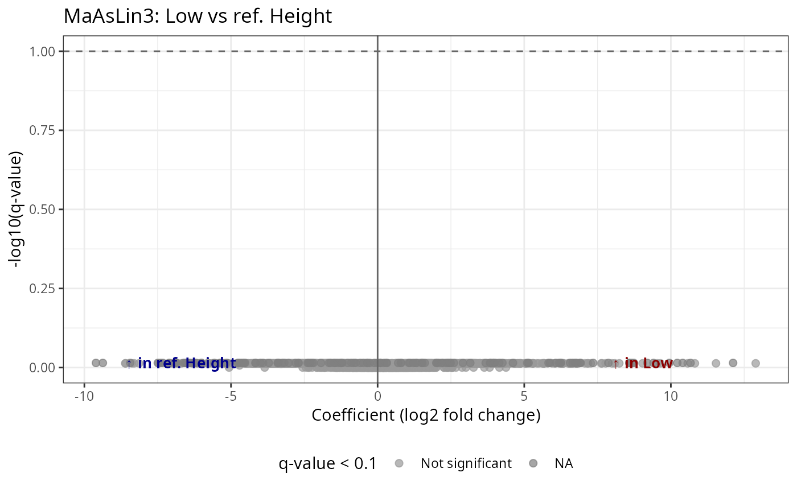

Run MaAsLin3 differential abundance analysis on a phyloseq object
Source:R/maaslin3_pq.R
maaslin3_pq.RdA wrapper around maaslin3::maaslin3() for phyloseq objects. Optionally
includes the number of reads (library size) as a covariate in the model
to account for differences in sequencing depth.
Usage
maaslin3_pq(
physeq,
formula,
reference = NULL,
correction_for_sample_size = TRUE,
output = "res_maaslin3",
...
)Arguments
- physeq
(phyloseq, required) A phyloseq object.
- formula
(character, required) A formula string for the model (e.g.,
"~ Height"or"~ Height + Time").- reference
(named list, default NULL) Reference levels for categorical variables with more than 2 levels. Format:
list(varname = "ref_level"). For example:list(Height = "Low")sets "Low" as the reference for Height. Variables not in this list will use their first level as reference.- correction_for_sample_size
(logical, default TRUE) If TRUE, adds
nb_seq(library size) to the formula to control for sequencing depth.- output
(character, default "res_maaslin3") Output directory for MaAsLin3 results.
- ...
Additional arguments passed to
maaslin3::maaslin3().
Value
The result object from maaslin3::maaslin3(), containing:
results: Data frame with differential abundance resultsresults_ordered: Results ordered by significanceOther MaAsLin3 output components
Details
#' #TODO VERY experimental
MaAsLin3 requires categorical variables with more than 2 levels to have a defined reference level. This function handles this by:
Converting character variables to factors
Setting reference levels via the
referenceparameterUsing
relevel()to set the specified reference as the first level
The correction_for_sample_size option adds library size as a covariate,
which can help account for compositional effects and sequencing depth
differences between samples.
References
Nickols WA, et al. (2024). MaAsLin 3: Refining and extending generalized multivariable linear models for meta-omic association discovery. bioRxiv.
Examples
# Basic usage with a binary factor
data_fungi_high_low <- subset_samples(
data_fungi, Height %in% c("High", "Low")
)
res <- maaslin3_pq(data_fungi_high_low, formula = "~ Height")
#> 2026-03-13 14:38:52.141944 INFO::Writing function arguments to log file
#> 2026-03-13 14:38:52.161417 INFO::Verifying options selected are valid
#> 2026-03-13 14:38:52.162549 INFO::Determining format of input files
#> 2026-03-13 14:38:52.163085 INFO::Input format is data samples as rows and metadata samples as rows
#> 2026-03-13 14:38:52.173435 INFO::Running selected normalization method: TSS
#> 2026-03-13 14:38:52.200246 INFO::Creating output feature tables folder
#> 2026-03-13 14:38:52.20107 INFO::Writing normalized data to file res_maaslin3/features/data_norm.tsv
#> 2026-03-13 14:38:52.221887 INFO::Filter data based on min abundance, min prevalence, and max prevalence
#> 2026-03-13 14:38:52.222575 INFO::Total samples in data: 86
#> 2026-03-13 14:38:52.22305 INFO::Min samples required with min abundance for a feature not to be filtered: 0.000000
#> 2026-03-13 14:38:52.223547 INFO::Max samples allowed with min abundance for a feature not to be filtered: 86.860000
#> 2026-03-13 14:38:52.407756 INFO::Total filtered features: 256
#> 2026-03-13 14:38:52.408749 INFO::Filtered feature names from abundance, min prevalence, and max prevalence filtering: ASV64, ASV68, ASV82, ASV100, ASV108, ASV122, ASV135, ASV136, ASV147, ASV150, ASV152, ASV163, ASV168, ASV179, ASV183, ASV195, ASV199, ASV203, ASV207, ASV208, ASV212, ASV230, ASV242, ASV257, ASV258, ASV270, ASV280, ASV284, ASV285, ASV288, ASV298, ASV305, ASV325, ASV332, ASV336, ASV360, ASV379, ASV382, ASV393, ASV397, ASV407, ASV416, ASV427, ASV430, ASV431, ASV432, ASV439, ASV458, ASV459, ASV473, ASV480, ASV484, ASV486, ASV489, ASV497, ASV515, ASV528, ASV529, ASV532, ASV537, ASV540, ASV557, ASV565, ASV567, ASV568, ASV579, ASV580, ASV588, ASV589, ASV590, ASV603, ASV619, ASV622, ASV630, ASV636, ASV651, ASV653, ASV656, ASV658, ASV671, ASV681, ASV684, ASV685, ASV687, ASV688, ASV689, ASV692, ASV695, ASV699, ASV701, ASV718, ASV721, ASV745, ASV752, ASV761, ASV765, ASV767, ASV778, ASV795, ASV798, ASV806, ASV815, ASV820, ASV826, ASV830, ASV833, ASV835, ASV841, ASV848, ASV849, ASV850, ASV851, ASV856, ASV868, ASV878, ASV890, ASV908, ASV910, ASV913, ASV918, ASV924, ASV928, ASV931, ASV934, ASV956, ASV959, ASV960, ASV964, ASV968, ASV971, ASV972, ASV977, ASV978, ASV985, ASV987, ASV997, ASV998, ASV1000, ASV1013, ASV1021, ASV1023, ASV1024, ASV1026, ASV1037, ASV1044, ASV1056, ASV1061, ASV1062, ASV1064, ASV1068, ASV1069, ASV1070, ASV1081, ASV1092, ASV1098, ASV1102, ASV1104, ASV1118, ASV1135, ASV1141, ASV1143, ASV1147, ASV1150, ASV1157, ASV1174, ASV1178, ASV1181, ASV1188, ASV1200, ASV1207, ASV1209, ASV1215, ASV1226, ASV1255, ASV1259, ASV1266, ASV1272, ASV1274, ASV1280, ASV1283, ASV1291, ASV1294, ASV1295, ASV1305, ASV1314, ASV1322, ASV1324, ASV1325, ASV1330, ASV1331, ASV1338, ASV1344, ASV1355, ASV1358, ASV1367, ASV1377, ASV1390, ASV1394, ASV1395, ASV1400, ASV1401, ASV1402, ASV1406, ASV1408, ASV1413, ASV1417, ASV1432, ASV1442, ASV1444, ASV1448, ASV1453, ASV1455, ASV1456, ASV1457, ASV1458, ASV1472, ASV1476, ASV1479, ASV1481, ASV1482, ASV1488, ASV1523, ASV1526, ASV1528, ASV1529, ASV1535, ASV1538, ASV1539, ASV1543, ASV1545, ASV1546, ASV1551, ASV1561, ASV1562, ASV1565, ASV1577, ASV1582, ASV1583, ASV1591, ASV1595, ASV1610, ASV1614, ASV1615, ASV1618, ASV1628, ASV1631, ASV1636, ASV1642, ASV1648, ASV1662, ASV1671, ASV1673, ASV1708, ASV1710, ASV1714, ASV1719
#> 2026-03-13 14:38:52.424387 INFO::Total features filtered by non-zero variance filtering: 295
#> 2026-03-13 14:38:52.425371 INFO::Filtered feature names from variance filtering: ASV23, ASV48, ASV50, ASV54, ASV59, ASV61, ASV67, ASV75, ASV77, ASV92, ASV93, ASV103, ASV127, ASV190, ASV196, ASV198, ASV202, ASV215, ASV221, ASV222, ASV224, ASV228, ASV231, ASV243, ASV249, ASV251, ASV253, ASV254, ASV293, ASV294, ASV307, ASV311, ASV312, ASV318, ASV320, ASV327, ASV330, ASV350, ASV373, ASV381, ASV383, ASV384, ASV385, ASV386, ASV388, ASV394, ASV406, ASV408, ASV414, ASV418, ASV429, ASV448, ASV449, ASV451, ASV457, ASV465, ASV476, ASV479, ASV487, ASV495, ASV500, ASV520, ASV524, ASV526, ASV531, ASV543, ASV547, ASV548, ASV552, ASV554, ASV555, ASV560, ASV578, ASV591, ASV596, ASV614, ASV617, ASV620, ASV627, ASV629, ASV633, ASV640, ASV652, ASV659, ASV665, ASV672, ASV678, ASV679, ASV682, ASV686, ASV703, ASV710, ASV713, ASV716, ASV720, ASV722, ASV730, ASV733, ASV739, ASV740, ASV744, ASV747, ASV751, ASV762, ASV763, ASV777, ASV780, ASV786, ASV792, ASV804, ASV808, ASV827, ASV836, ASV839, ASV840, ASV843, ASV844, ASV847, ASV852, ASV854, ASV857, ASV861, ASV862, ASV866, ASV867, ASV869, ASV870, ASV874, ASV879, ASV900, ASV902, ASV903, ASV907, ASV915, ASV925, ASV929, ASV943, ASV944, ASV946, ASV951, ASV952, ASV955, ASV957, ASV961, ASV967, ASV979, ASV993, ASV1006, ASV1010, ASV1015, ASV1025, ASV1033, ASV1045, ASV1055, ASV1072, ASV1079, ASV1089, ASV1093, ASV1099, ASV1100, ASV1101, ASV1105, ASV1107, ASV1117, ASV1124, ASV1127, ASV1129, ASV1132, ASV1134, ASV1138, ASV1152, ASV1155, ASV1158, ASV1161, ASV1165, ASV1166, ASV1169, ASV1173, ASV1182, ASV1184, ASV1197, ASV1199, ASV1205, ASV1210, ASV1214, ASV1221, ASV1227, ASV1229, ASV1235, ASV1238, ASV1242, ASV1253, ASV1257, ASV1262, ASV1265, ASV1267, ASV1271, ASV1281, ASV1282, ASV1285, ASV1296, ASV1298, ASV1307, ASV1333, ASV1349, ASV1352, ASV1354, ASV1364, ASV1374, ASV1378, ASV1379, ASV1381, ASV1384, ASV1385, ASV1387, ASV1393, ASV1397, ASV1405, ASV1407, ASV1414, ASV1415, ASV1416, ASV1418, ASV1420, ASV1422, ASV1423, ASV1424, ASV1426, ASV1436, ASV1447, ASV1451, ASV1454, ASV1465, ASV1470, ASV1471, ASV1480, ASV1485, ASV1489, ASV1490, ASV1500, ASV1503, ASV1504, ASV1515, ASV1524, ASV1527, ASV1537, ASV1541, ASV1542, ASV1544, ASV1548, ASV1549, ASV1553, ASV1559, ASV1563, ASV1568, ASV1569, ASV1574, ASV1576, ASV1578, ASV1585, ASV1586, ASV1587, ASV1589, ASV1594, ASV1597, ASV1600, ASV1604, ASV1607, ASV1609, ASV1611, ASV1627, ASV1632, ASV1633, ASV1638, ASV1641, ASV1649, ASV1653, ASV1654, ASV1663, ASV1664, ASV1665, ASV1667, ASV1670, ASV1672, ASV1680, ASV1681, ASV1683, ASV1687, ASV1689, ASV1694, ASV1704, ASV1705, ASV1709, ASV1716, ASV1726
#> 2026-03-13 14:38:52.425968 INFO::Writing filtered data to file res_maaslin3/features/filtered_data.tsv
#> 2026-03-13 14:38:52.438781 INFO::Running selected transform method: LOG
#> 2026-03-13 14:38:52.447623 INFO::Writing normalized, filtered, transformed data to file res_maaslin3/features/data_transformed.tsv
#> 2026-03-13 14:38:52.461552 INFO::Factor detected for categorial metadata 'Height'. Using as-is.
#> 2026-03-13 14:38:52.462333 INFO::Applying z-score to standardize continuous metadata
#> 2026-03-13 14:38:52.468487 INFO::Running the linear model component
#>
| | 0 % ~calculating 2026-03-13 14:38:52.48612 INFO::Fitting model to feature number 1, ASV2
#> 2026-03-13 14:38:52.49138 INFO::Fitting model to feature number 2, ASV6
#> 2026-03-13 14:38:52.495045 INFO::Fitting model to feature number 3, ASV7
#> 2026-03-13 14:38:52.498368 INFO::Fitting model to feature number 4, ASV8
#> 2026-03-13 14:38:52.502166 INFO::Fitting model to feature number 5, ASV10
#> 2026-03-13 14:38:52.505741 INFO::Fitting model to feature number 6, ASV12
#> 2026-03-13 14:38:52.50941 INFO::Fitting model to feature number 7, ASV13
#> 2026-03-13 14:38:52.512962 INFO::Fitting model to feature number 8, ASV18
#> 2026-03-13 14:38:52.51672 INFO::Fitting model to feature number 9, ASV19
#>
|+ | 1 % ~03s 2026-03-13 14:38:52.521041 INFO::Fitting model to feature number 10, ASV22
#> 2026-03-13 14:38:52.52291 WARNING::Fitting problem for feature 10 returning NA
#> 2026-03-13 14:38:52.524348 INFO::Fitting model to feature number 11, ASV24
#> 2026-03-13 14:38:52.527665 INFO::Fitting model to feature number 12, ASV25
#> 2026-03-13 14:38:52.531 INFO::Fitting model to feature number 13, ASV26
#> 2026-03-13 14:38:52.534574 INFO::Fitting model to feature number 14, ASV27
#> 2026-03-13 14:38:52.538297 INFO::Fitting model to feature number 15, ASV28
#> 2026-03-13 14:38:52.541824 INFO::Fitting model to feature number 16, ASV29
#> 2026-03-13 14:38:52.545323 INFO::Fitting model to feature number 17, ASV31
#> 2026-03-13 14:38:52.547074 WARNING::Fitting problem for feature 17 returning NA
#> 2026-03-13 14:38:52.548356 INFO::Fitting model to feature number 18, ASV32
#>
|++ | 2 % ~03s 2026-03-13 14:38:52.552027 INFO::Fitting model to feature number 19, ASV33
#> 2026-03-13 14:38:52.555357 INFO::Fitting model to feature number 20, ASV34
#> 2026-03-13 14:38:52.558868 INFO::Fitting model to feature number 21, ASV35
#> 2026-03-13 14:38:52.562283 INFO::Fitting model to feature number 22, ASV38
#> 2026-03-13 14:38:52.566008 INFO::Fitting model to feature number 23, ASV41
#> 2026-03-13 14:38:52.568655 INFO::Fitting model to feature number 24, ASV42
#> 2026-03-13 14:38:52.570748 INFO::Fitting model to feature number 25, ASV43
#> 2026-03-13 14:38:52.574543 INFO::Fitting model to feature number 26, ASV45
#> 2026-03-13 14:38:52.578028 INFO::Fitting model to feature number 27, ASV46
#>
|++ | 3 % ~03s 2026-03-13 14:38:52.58138 INFO::Fitting model to feature number 28, ASV47
#> 2026-03-13 14:38:52.58335 INFO::Fitting model to feature number 29, ASV49
#> 2026-03-13 14:38:52.586859 INFO::Fitting model to feature number 30, ASV51
#> 2026-03-13 14:38:52.590214 INFO::Fitting model to feature number 31, ASV52
#> 2026-03-13 14:38:52.593563 INFO::Fitting model to feature number 32, ASV53
#> 2026-03-13 14:38:52.596712 INFO::Fitting model to feature number 33, ASV55
#> 2026-03-13 14:38:52.599914 INFO::Fitting model to feature number 34, ASV56
#> 2026-03-13 14:38:52.603327 INFO::Fitting model to feature number 35, ASV57
#> 2026-03-13 14:38:52.606531 INFO::Fitting model to feature number 36, ASV58
#>
|+++ | 4 % ~03s 2026-03-13 14:38:52.610061 INFO::Fitting model to feature number 37, ASV60
#> 2026-03-13 14:38:52.613303 INFO::Fitting model to feature number 38, ASV62
#> 2026-03-13 14:38:52.616525 INFO::Fitting model to feature number 39, ASV63
#> 2026-03-13 14:38:52.619922 INFO::Fitting model to feature number 40, ASV65
#> 2026-03-13 14:38:52.623169 INFO::Fitting model to feature number 41, ASV69
#> 2026-03-13 14:38:52.626949 INFO::Fitting model to feature number 42, ASV70
#> 2026-03-13 14:38:52.630854 INFO::Fitting model to feature number 43, ASV71
#> 2026-03-13 14:38:52.635202 INFO::Fitting model to feature number 44, ASV72
#> 2026-03-13 14:38:52.639145 INFO::Fitting model to feature number 45, ASV78
#>
|+++ | 5 % ~03s 2026-03-13 14:38:52.643706 INFO::Fitting model to feature number 46, ASV79
#> 2026-03-13 14:38:52.647856 INFO::Fitting model to feature number 47, ASV80
#> 2026-03-13 14:38:52.652484 INFO::Fitting model to feature number 48, ASV81
#> 2026-03-13 14:38:52.656965 INFO::Fitting model to feature number 49, ASV83
#> 2026-03-13 14:38:52.66204 INFO::Fitting model to feature number 50, ASV84
#> 2026-03-13 14:38:52.66488 INFO::Fitting model to feature number 51, ASV85
#> 2026-03-13 14:38:52.668878 INFO::Fitting model to feature number 52, ASV87
#> 2026-03-13 14:38:52.671358 INFO::Fitting model to feature number 53, ASV89
#> 2026-03-13 14:38:52.675576 INFO::Fitting model to feature number 54, ASV90
#>
|++++ | 6 % ~03s 2026-03-13 14:38:52.680329 INFO::Fitting model to feature number 55, ASV91
#> 2026-03-13 14:38:52.684507 INFO::Fitting model to feature number 56, ASV94
#> 2026-03-13 14:38:52.688315 INFO::Fitting model to feature number 57, ASV95
#> 2026-03-13 14:38:52.692055 INFO::Fitting model to feature number 58, ASV96
#> 2026-03-13 14:38:52.695906 INFO::Fitting model to feature number 59, ASV98
#> 2026-03-13 14:38:52.699686 INFO::Fitting model to feature number 60, ASV99
#> 2026-03-13 14:38:52.703768 INFO::Fitting model to feature number 61, ASV101
#> 2026-03-13 14:38:52.707779 INFO::Fitting model to feature number 62, ASV104
#> 2026-03-13 14:38:52.712824 INFO::Fitting model to feature number 63, ASV105
#>
|++++ | 7 % ~03s 2026-03-13 14:38:52.716841 INFO::Fitting model to feature number 64, ASV106
#> 2026-03-13 14:38:52.720618 INFO::Fitting model to feature number 65, ASV107
#> 2026-03-13 14:38:52.724531 INFO::Fitting model to feature number 66, ASV109
#> 2026-03-13 14:38:52.728573 INFO::Fitting model to feature number 67, ASV111
#> 2026-03-13 14:38:52.732386 INFO::Fitting model to feature number 68, ASV112
#> 2026-03-13 14:38:52.736484 INFO::Fitting model to feature number 69, ASV113
#> 2026-03-13 14:38:52.740307 INFO::Fitting model to feature number 70, ASV115
#> 2026-03-13 14:38:52.744177 INFO::Fitting model to feature number 71, ASV116
#> 2026-03-13 14:38:52.747879 INFO::Fitting model to feature number 72, ASV118
#>
|+++++ | 8 % ~03s 2026-03-13 14:38:52.751877 INFO::Fitting model to feature number 73, ASV119
#> 2026-03-13 14:38:52.755558 INFO::Fitting model to feature number 74, ASV120
#> 2026-03-13 14:38:52.759882 INFO::Fitting model to feature number 75, ASV121
#> 2026-03-13 14:38:52.763831 INFO::Fitting model to feature number 76, ASV124
#> 2026-03-13 14:38:52.76774 INFO::Fitting model to feature number 77, ASV126
#> 2026-03-13 14:38:52.772214 INFO::Fitting model to feature number 78, ASV128
#> 2026-03-13 14:38:52.77645 INFO::Fitting model to feature number 79, ASV129
#> 2026-03-13 14:38:52.780056 INFO::Fitting model to feature number 80, ASV130
#> 2026-03-13 14:38:52.783556 INFO::Fitting model to feature number 81, ASV131
#>
|+++++ | 9 % ~03s 2026-03-13 14:38:52.787549 INFO::Fitting model to feature number 82, ASV132
#> 2026-03-13 14:38:52.791449 INFO::Fitting model to feature number 83, ASV133
#> 2026-03-13 14:38:52.795073 INFO::Fitting model to feature number 84, ASV137
#> 2026-03-13 14:38:52.798632 INFO::Fitting model to feature number 85, ASV138
#> 2026-03-13 14:38:52.802467 INFO::Fitting model to feature number 86, ASV139
#> 2026-03-13 14:38:52.806105 INFO::Fitting model to feature number 87, ASV142
#> 2026-03-13 14:38:52.809778 INFO::Fitting model to feature number 88, ASV143
#> 2026-03-13 14:38:52.812009 INFO::Fitting model to feature number 89, ASV144
#> 2026-03-13 14:38:52.815538 INFO::Fitting model to feature number 90, ASV145
#>
|++++++ | 10% ~03s 2026-03-13 14:38:52.819588 INFO::Fitting model to feature number 91, ASV146
#> 2026-03-13 14:38:52.823315 INFO::Fitting model to feature number 92, ASV148
#> 2026-03-13 14:38:52.827135 INFO::Fitting model to feature number 93, ASV149
#> 2026-03-13 14:38:52.830704 INFO::Fitting model to feature number 94, ASV151
#> 2026-03-13 14:38:52.834392 INFO::Fitting model to feature number 95, ASV153
#> 2026-03-13 14:38:52.836953 INFO::Fitting model to feature number 96, ASV154
#> 2026-03-13 14:38:52.840723 INFO::Fitting model to feature number 97, ASV157
#> 2026-03-13 14:38:52.844751 INFO::Fitting model to feature number 98, ASV158
#> 2026-03-13 14:38:52.848332 INFO::Fitting model to feature number 99, ASV159
#>
|++++++ | 11% ~03s 2026-03-13 14:38:52.852985 INFO::Fitting model to feature number 100, ASV162
#> 2026-03-13 14:38:52.856955 INFO::Fitting model to feature number 101, ASV164
#> 2026-03-13 14:38:52.861769 INFO::Fitting model to feature number 102, ASV166
#> 2026-03-13 14:38:52.866346 INFO::Fitting model to feature number 103, ASV167
#> 2026-03-13 14:38:52.871111 INFO::Fitting model to feature number 104, ASV170
#> 2026-03-13 14:38:52.875139 INFO::Fitting model to feature number 105, ASV171
#> 2026-03-13 14:38:52.879305 INFO::Fitting model to feature number 106, ASV172
#> 2026-03-13 14:38:52.88311 INFO::Fitting model to feature number 107, ASV173
#> 2026-03-13 14:38:52.887476 INFO::Fitting model to feature number 108, ASV175
#>
|+++++++ | 12% ~03s 2026-03-13 14:38:52.891772 INFO::Fitting model to feature number 109, ASV176
#> 2026-03-13 14:38:52.895383 INFO::Fitting model to feature number 110, ASV178
#> 2026-03-13 14:38:52.89896 INFO::Fitting model to feature number 111, ASV181
#> 2026-03-13 14:38:52.90354 INFO::Fitting model to feature number 112, ASV182
#> 2026-03-13 14:38:52.907761 INFO::Fitting model to feature number 113, ASV186
#> 2026-03-13 14:38:52.912349 INFO::Fitting model to feature number 114, ASV187
#> 2026-03-13 14:38:52.915794 INFO::Fitting model to feature number 115, ASV189
#> 2026-03-13 14:38:52.919682 INFO::Fitting model to feature number 116, ASV192
#> 2026-03-13 14:38:52.923186 INFO::Fitting model to feature number 117, ASV193
#> 2026-03-13 14:38:52.925092 WARNING::Fitting problem for feature 117 returning NA
#>
|+++++++ | 13% ~03s 2026-03-13 14:38:52.926718 INFO::Fitting model to feature number 118, ASV194
#> 2026-03-13 14:38:52.930125 INFO::Fitting model to feature number 119, ASV197
#> 2026-03-13 14:38:52.933645 INFO::Fitting model to feature number 120, ASV201
#> 2026-03-13 14:38:52.9371 INFO::Fitting model to feature number 121, ASV205
#> 2026-03-13 14:38:52.940413 INFO::Fitting model to feature number 122, ASV209
#> 2026-03-13 14:38:52.943972 INFO::Fitting model to feature number 123, ASV210
#> 2026-03-13 14:38:52.947397 INFO::Fitting model to feature number 124, ASV211
#> 2026-03-13 14:38:52.951175 INFO::Fitting model to feature number 125, ASV214
#> 2026-03-13 14:38:52.954676 INFO::Fitting model to feature number 126, ASV216
#>
|++++++++ | 14% ~03s 2026-03-13 14:38:52.958399 INFO::Fitting model to feature number 127, ASV217
#> 2026-03-13 14:38:52.963071 INFO::Fitting model to feature number 128, ASV219
#> 2026-03-13 14:38:52.967219 INFO::Fitting model to feature number 129, ASV223
#> 2026-03-13 14:38:52.97085 INFO::Fitting model to feature number 130, ASV226
#> 2026-03-13 14:38:52.974343 INFO::Fitting model to feature number 131, ASV227
#> 2026-03-13 14:38:52.976379 WARNING::Fitting problem for feature 131 returning NA
#> 2026-03-13 14:38:52.977951 INFO::Fitting model to feature number 132, ASV229
#> 2026-03-13 14:38:52.979935 INFO::Fitting model to feature number 133, ASV233
#> 2026-03-13 14:38:52.983558 INFO::Fitting model to feature number 134, ASV234
#> 2026-03-13 14:38:52.987058 INFO::Fitting model to feature number 135, ASV235
#>
|++++++++ | 15% ~03s 2026-03-13 14:38:52.990623 INFO::Fitting model to feature number 136, ASV237
#> 2026-03-13 14:38:52.994416 INFO::Fitting model to feature number 137, ASV238
#> 2026-03-13 14:38:52.996328 WARNING::Fitting problem for feature 137 returning NA
#> 2026-03-13 14:38:52.997833 INFO::Fitting model to feature number 138, ASV239
#> 2026-03-13 14:38:53.001393 INFO::Fitting model to feature number 139, ASV240
#> 2026-03-13 14:38:53.005072 INFO::Fitting model to feature number 140, ASV244
#> 2026-03-13 14:38:53.008565 INFO::Fitting model to feature number 141, ASV245
#> 2026-03-13 14:38:53.010688 INFO::Fitting model to feature number 142, ASV246
#> 2026-03-13 14:38:53.013901 INFO::Fitting model to feature number 143, ASV247
#> 2026-03-13 14:38:53.01583 INFO::Fitting model to feature number 144, ASV248
#>
|+++++++++ | 16% ~03s 2026-03-13 14:38:53.019411 INFO::Fitting model to feature number 145, ASV255
#> 2026-03-13 14:38:53.02273 INFO::Fitting model to feature number 146, ASV256
#> 2026-03-13 14:38:53.026083 INFO::Fitting model to feature number 147, ASV260
#> 2026-03-13 14:38:53.02944 INFO::Fitting model to feature number 148, ASV261
#> 2026-03-13 14:38:53.033314 INFO::Fitting model to feature number 149, ASV262
#> 2026-03-13 14:38:53.036919 INFO::Fitting model to feature number 150, ASV263
#> 2026-03-13 14:38:53.040339 INFO::Fitting model to feature number 151, ASV264
#> 2026-03-13 14:38:53.043864 INFO::Fitting model to feature number 152, ASV265
#> 2026-03-13 14:38:53.047243 INFO::Fitting model to feature number 153, ASV266
#>
|+++++++++ | 18% ~03s 2026-03-13 14:38:53.050957 INFO::Fitting model to feature number 154, ASV267
#> 2026-03-13 14:38:53.054312 INFO::Fitting model to feature number 155, ASV271
#> 2026-03-13 14:38:53.057681 INFO::Fitting model to feature number 156, ASV272
#> 2026-03-13 14:38:53.059585 WARNING::Fitting problem for feature 156 returning NA
#> 2026-03-13 14:38:53.061015 INFO::Fitting model to feature number 157, ASV273
#> 2026-03-13 14:38:53.064329 INFO::Fitting model to feature number 158, ASV274
#> 2026-03-13 14:38:53.066404 INFO::Fitting model to feature number 159, ASV277
#> 2026-03-13 14:38:53.069738 INFO::Fitting model to feature number 160, ASV278
#> 2026-03-13 14:38:53.072874 INFO::Fitting model to feature number 161, ASV279
#> 2026-03-13 14:38:53.076296 INFO::Fitting model to feature number 162, ASV282
#>
|++++++++++ | 19% ~03s 2026-03-13 14:38:53.080063 INFO::Fitting model to feature number 163, ASV283
#> 2026-03-13 14:38:53.083747 INFO::Fitting model to feature number 164, ASV286
#> 2026-03-13 14:38:53.087162 INFO::Fitting model to feature number 165, ASV287
#> 2026-03-13 14:38:53.090537 INFO::Fitting model to feature number 166, ASV292
#> 2026-03-13 14:38:53.094123 INFO::Fitting model to feature number 167, ASV295
#> 2026-03-13 14:38:53.097448 INFO::Fitting model to feature number 168, ASV297
#> 2026-03-13 14:38:53.100774 INFO::Fitting model to feature number 169, ASV300
#> 2026-03-13 14:38:53.10404 INFO::Fitting model to feature number 170, ASV302
#> 2026-03-13 14:38:53.107209 INFO::Fitting model to feature number 171, ASV309
#>
|++++++++++ | 20% ~03s 2026-03-13 14:38:53.110708 INFO::Fitting model to feature number 172, ASV310
#> 2026-03-13 14:38:53.113961 INFO::Fitting model to feature number 173, ASV313
#> 2026-03-13 14:38:53.117342 INFO::Fitting model to feature number 174, ASV314
#> 2026-03-13 14:38:53.119122 WARNING::Fitting problem for feature 174 returning NA
#> 2026-03-13 14:38:53.120443 INFO::Fitting model to feature number 175, ASV315
#> 2026-03-13 14:38:53.12364 INFO::Fitting model to feature number 176, ASV316
#> 2026-03-13 14:38:53.126913 INFO::Fitting model to feature number 177, ASV322
#> 2026-03-13 14:38:53.130197 INFO::Fitting model to feature number 178, ASV323
#> 2026-03-13 14:38:53.133571 INFO::Fitting model to feature number 179, ASV328
#> 2026-03-13 14:38:53.136876 INFO::Fitting model to feature number 180, ASV329
#>
|+++++++++++ | 21% ~03s 2026-03-13 14:38:53.140277 INFO::Fitting model to feature number 181, ASV333
#> 2026-03-13 14:38:53.143723 INFO::Fitting model to feature number 182, ASV334
#> 2026-03-13 14:38:53.147042 INFO::Fitting model to feature number 183, ASV337
#> 2026-03-13 14:38:53.150508 INFO::Fitting model to feature number 184, ASV338
#> 2026-03-13 14:38:53.15386 INFO::Fitting model to feature number 185, ASV339
#> 2026-03-13 14:38:53.157112 INFO::Fitting model to feature number 186, ASV340
#> 2026-03-13 14:38:53.160484 INFO::Fitting model to feature number 187, ASV341
#> 2026-03-13 14:38:53.162212 WARNING::Fitting problem for feature 187 returning NA
#> 2026-03-13 14:38:53.163502 INFO::Fitting model to feature number 188, ASV342
#> 2026-03-13 14:38:53.166885 INFO::Fitting model to feature number 189, ASV344
#>
|+++++++++++ | 22% ~02s 2026-03-13 14:38:53.170348 INFO::Fitting model to feature number 190, ASV345
#> 2026-03-13 14:38:53.17202 WARNING::Fitting problem for feature 190 returning NA
#> 2026-03-13 14:38:53.173364 INFO::Fitting model to feature number 191, ASV346
#> 2026-03-13 14:38:53.176679 INFO::Fitting model to feature number 192, ASV347
#> 2026-03-13 14:38:53.179902 INFO::Fitting model to feature number 193, ASV348
#> 2026-03-13 14:38:53.183174 INFO::Fitting model to feature number 194, ASV349
#> 2026-03-13 14:38:53.184977 WARNING::Fitting problem for feature 194 returning NA
#> 2026-03-13 14:38:53.18628 INFO::Fitting model to feature number 195, ASV351
#> 2026-03-13 14:38:53.189467 INFO::Fitting model to feature number 196, ASV353
#> 2026-03-13 14:38:53.192806 INFO::Fitting model to feature number 197, ASV355
#> 2026-03-13 14:38:53.19605 INFO::Fitting model to feature number 198, ASV356
#>
|++++++++++++ | 23% ~02s 2026-03-13 14:38:53.199454 INFO::Fitting model to feature number 199, ASV357
#> 2026-03-13 14:38:53.202865 INFO::Fitting model to feature number 200, ASV358
#> 2026-03-13 14:38:53.206054 INFO::Fitting model to feature number 201, ASV359
#> 2026-03-13 14:38:53.209405 INFO::Fitting model to feature number 202, ASV362
#> 2026-03-13 14:38:53.21272 INFO::Fitting model to feature number 203, ASV364
#> 2026-03-13 14:38:53.216173 INFO::Fitting model to feature number 204, ASV365
#> 2026-03-13 14:38:53.219934 INFO::Fitting model to feature number 205, ASV366
#> 2026-03-13 14:38:53.223825 INFO::Fitting model to feature number 206, ASV367
#> 2026-03-13 14:38:53.227453 INFO::Fitting model to feature number 207, ASV368
#>
|++++++++++++ | 24% ~02s 2026-03-13 14:38:53.230946 INFO::Fitting model to feature number 208, ASV369
#> 2026-03-13 14:38:53.234573 INFO::Fitting model to feature number 209, ASV371
#> 2026-03-13 14:38:53.237936 INFO::Fitting model to feature number 210, ASV372
#> 2026-03-13 14:38:53.241413 INFO::Fitting model to feature number 211, ASV375
#> 2026-03-13 14:38:53.244848 INFO::Fitting model to feature number 212, ASV376
#> 2026-03-13 14:38:53.248148 INFO::Fitting model to feature number 213, ASV377
#> 2026-03-13 14:38:53.251594 INFO::Fitting model to feature number 214, ASV378
#> 2026-03-13 14:38:53.296132 INFO::Fitting model to feature number 215, ASV380
#> 2026-03-13 14:38:53.3014 INFO::Fitting model to feature number 216, ASV390
#>
|+++++++++++++ | 25% ~02s 2026-03-13 14:38:53.305595 INFO::Fitting model to feature number 217, ASV395
#> 2026-03-13 14:38:53.309435 INFO::Fitting model to feature number 218, ASV399
#> 2026-03-13 14:38:53.311714 INFO::Fitting model to feature number 219, ASV401
#> 2026-03-13 14:38:53.315331 INFO::Fitting model to feature number 220, ASV402
#> 2026-03-13 14:38:53.317501 INFO::Fitting model to feature number 221, ASV404
#> 2026-03-13 14:38:53.32084 INFO::Fitting model to feature number 222, ASV405
#> 2026-03-13 14:38:53.324235 INFO::Fitting model to feature number 223, ASV409
#> 2026-03-13 14:38:53.327629 INFO::Fitting model to feature number 224, ASV411
#> 2026-03-13 14:38:53.329435 WARNING::Fitting problem for feature 224 returning NA
#> 2026-03-13 14:38:53.330847 INFO::Fitting model to feature number 225, ASV412
#>
|+++++++++++++ | 26% ~02s 2026-03-13 14:38:53.333027 INFO::Fitting model to feature number 226, ASV413
#> 2026-03-13 14:38:53.336886 INFO::Fitting model to feature number 227, ASV415
#> 2026-03-13 14:38:53.34015 INFO::Fitting model to feature number 228, ASV417
#> 2026-03-13 14:38:53.343492 INFO::Fitting model to feature number 229, ASV419
#> 2026-03-13 14:38:53.345156 WARNING::Fitting problem for feature 229 returning NA
#> 2026-03-13 14:38:53.346408 INFO::Fitting model to feature number 230, ASV420
#> 2026-03-13 14:38:53.349614 INFO::Fitting model to feature number 231, ASV422
#> 2026-03-13 14:38:53.351871 INFO::Fitting model to feature number 232, ASV423
#> 2026-03-13 14:38:53.355329 INFO::Fitting model to feature number 233, ASV424
#> 2026-03-13 14:38:53.358791 INFO::Fitting model to feature number 234, ASV426
#>
|++++++++++++++ | 27% ~02s 2026-03-13 14:38:53.362228 INFO::Fitting model to feature number 235, ASV428
#> 2026-03-13 14:38:53.36545 INFO::Fitting model to feature number 236, ASV433
#> 2026-03-13 14:38:53.367594 INFO::Fitting model to feature number 237, ASV434
#> 2026-03-13 14:38:53.369255 WARNING::Fitting problem for feature 237 returning NA
#> 2026-03-13 14:38:53.370514 INFO::Fitting model to feature number 238, ASV438
#> 2026-03-13 14:38:53.373863 INFO::Fitting model to feature number 239, ASV440
#> 2026-03-13 14:38:53.377336 INFO::Fitting model to feature number 240, ASV442
#> 2026-03-13 14:38:53.379286 INFO::Fitting model to feature number 241, ASV443
#> 2026-03-13 14:38:53.382508 INFO::Fitting model to feature number 242, ASV444
#> 2026-03-13 14:38:53.385878 INFO::Fitting model to feature number 243, ASV445
#>
|++++++++++++++ | 28% ~02s 2026-03-13 14:38:53.389163 INFO::Fitting model to feature number 244, ASV446
#> 2026-03-13 14:38:53.391114 INFO::Fitting model to feature number 245, ASV452
#> 2026-03-13 14:38:53.394484 INFO::Fitting model to feature number 246, ASV453
#> 2026-03-13 14:38:53.397758 INFO::Fitting model to feature number 247, ASV454
#> 2026-03-13 14:38:53.40128 INFO::Fitting model to feature number 248, ASV456
#> 2026-03-13 14:38:53.404685 INFO::Fitting model to feature number 249, ASV460
#> 2026-03-13 14:38:53.40809 INFO::Fitting model to feature number 250, ASV461
#> 2026-03-13 14:38:53.411537 INFO::Fitting model to feature number 251, ASV462
#> 2026-03-13 14:38:53.414816 INFO::Fitting model to feature number 252, ASV463
#>
|+++++++++++++++ | 29% ~02s 2026-03-13 14:38:53.418505 INFO::Fitting model to feature number 253, ASV464
#> 2026-03-13 14:38:53.421757 INFO::Fitting model to feature number 254, ASV466
#> 2026-03-13 14:38:53.425169 INFO::Fitting model to feature number 255, ASV467
#> 2026-03-13 14:38:53.428523 INFO::Fitting model to feature number 256, ASV468
#> 2026-03-13 14:38:53.431767 INFO::Fitting model to feature number 257, ASV469
#> 2026-03-13 14:38:53.435315 INFO::Fitting model to feature number 258, ASV470
#> 2026-03-13 14:38:53.438537 INFO::Fitting model to feature number 259, ASV472
#> 2026-03-13 14:38:53.441723 INFO::Fitting model to feature number 260, ASV474
#> 2026-03-13 14:38:53.444995 INFO::Fitting model to feature number 261, ASV475
#>
|+++++++++++++++ | 30% ~02s 2026-03-13 14:38:53.448445 INFO::Fitting model to feature number 262, ASV477
#> 2026-03-13 14:38:53.45189 INFO::Fitting model to feature number 263, ASV478
#> 2026-03-13 14:38:53.455221 INFO::Fitting model to feature number 264, ASV481
#> 2026-03-13 14:38:53.458659 INFO::Fitting model to feature number 265, ASV483
#> 2026-03-13 14:38:53.462067 INFO::Fitting model to feature number 266, ASV488
#> 2026-03-13 14:38:53.465316 INFO::Fitting model to feature number 267, ASV490
#> 2026-03-13 14:38:53.468783 INFO::Fitting model to feature number 268, ASV491
#> 2026-03-13 14:38:53.470693 INFO::Fitting model to feature number 269, ASV492
#> 2026-03-13 14:38:53.473783 INFO::Fitting model to feature number 270, ASV493
#>
|++++++++++++++++ | 31% ~02s 2026-03-13 14:38:53.477286 INFO::Fitting model to feature number 271, ASV494
#> 2026-03-13 14:38:53.48058 INFO::Fitting model to feature number 272, ASV496
#> 2026-03-13 14:38:53.483985 INFO::Fitting model to feature number 273, ASV498
#> 2026-03-13 14:38:53.487469 INFO::Fitting model to feature number 274, ASV499
#> 2026-03-13 14:38:53.490977 INFO::Fitting model to feature number 275, ASV501
#> 2026-03-13 14:38:53.494428 INFO::Fitting model to feature number 276, ASV502
#> 2026-03-13 14:38:53.497564 INFO::Fitting model to feature number 277, ASV504
#> 2026-03-13 14:38:53.500908 INFO::Fitting model to feature number 278, ASV505
#> 2026-03-13 14:38:53.504255 INFO::Fitting model to feature number 279, ASV507
#>
|++++++++++++++++ | 32% ~02s 2026-03-13 14:38:53.507583 INFO::Fitting model to feature number 280, ASV508
#> 2026-03-13 14:38:53.510918 INFO::Fitting model to feature number 281, ASV509
#> 2026-03-13 14:38:53.514048 INFO::Fitting model to feature number 282, ASV511
#> 2026-03-13 14:38:53.517449 INFO::Fitting model to feature number 283, ASV512
#> 2026-03-13 14:38:53.520851 INFO::Fitting model to feature number 284, ASV514
#> 2026-03-13 14:38:53.524119 INFO::Fitting model to feature number 285, ASV516
#> 2026-03-13 14:38:53.527384 INFO::Fitting model to feature number 286, ASV517
#> 2026-03-13 14:38:53.53099 INFO::Fitting model to feature number 287, ASV519
#> 2026-03-13 14:38:53.534454 INFO::Fitting model to feature number 288, ASV521
#>
|+++++++++++++++++ | 33% ~02s 2026-03-13 14:38:53.537952 INFO::Fitting model to feature number 289, ASV522
#> 2026-03-13 14:38:53.541353 INFO::Fitting model to feature number 290, ASV523
#> 2026-03-13 14:38:53.543689 INFO::Fitting model to feature number 291, ASV527
#> 2026-03-13 14:38:53.547901 INFO::Fitting model to feature number 292, ASV530
#> 2026-03-13 14:38:53.552322 INFO::Fitting model to feature number 293, ASV533
#> 2026-03-13 14:38:53.556334 INFO::Fitting model to feature number 294, ASV534
#> 2026-03-13 14:38:53.560627 INFO::Fitting model to feature number 295, ASV535
#> 2026-03-13 14:38:53.564819 INFO::Fitting model to feature number 296, ASV536
#> 2026-03-13 14:38:53.568551 INFO::Fitting model to feature number 297, ASV538
#>
|++++++++++++++++++ | 34% ~02s 2026-03-13 14:38:53.572464 INFO::Fitting model to feature number 298, ASV539
#> 2026-03-13 14:38:53.576233 INFO::Fitting model to feature number 299, ASV541
#> 2026-03-13 14:38:53.58022 INFO::Fitting model to feature number 300, ASV542
#> 2026-03-13 14:38:53.584185 INFO::Fitting model to feature number 301, ASV544
#> 2026-03-13 14:38:53.588053 INFO::Fitting model to feature number 302, ASV545
#> 2026-03-13 14:38:53.591954 INFO::Fitting model to feature number 303, ASV546
#> 2026-03-13 14:38:53.595495 INFO::Fitting model to feature number 304, ASV549
#> 2026-03-13 14:38:53.597567 INFO::Fitting model to feature number 305, ASV550
#> 2026-03-13 14:38:53.60138 INFO::Fitting model to feature number 306, ASV551
#>
|++++++++++++++++++ | 35% ~02s 2026-03-13 14:38:53.605174 INFO::Fitting model to feature number 307, ASV553
#> 2026-03-13 14:38:53.608797 INFO::Fitting model to feature number 308, ASV556
#> 2026-03-13 14:38:53.612277 INFO::Fitting model to feature number 309, ASV558
#> 2026-03-13 14:38:53.615719 INFO::Fitting model to feature number 310, ASV559
#> 2026-03-13 14:38:53.619484 INFO::Fitting model to feature number 311, ASV561
#> 2026-03-13 14:38:53.62306 INFO::Fitting model to feature number 312, ASV562
#> 2026-03-13 14:38:53.626558 INFO::Fitting model to feature number 313, ASV563
#> 2026-03-13 14:38:53.629866 INFO::Fitting model to feature number 314, ASV564
#> 2026-03-13 14:38:53.633687 INFO::Fitting model to feature number 315, ASV566
#>
|+++++++++++++++++++ | 36% ~02s 2026-03-13 14:38:53.637266 INFO::Fitting model to feature number 316, ASV569
#> 2026-03-13 14:38:53.640598 INFO::Fitting model to feature number 317, ASV570
#> 2026-03-13 14:38:53.644064 INFO::Fitting model to feature number 318, ASV571
#> 2026-03-13 14:38:53.646122 INFO::Fitting model to feature number 319, ASV572
#> 2026-03-13 14:38:53.649773 INFO::Fitting model to feature number 320, ASV573
#> 2026-03-13 14:38:53.653689 INFO::Fitting model to feature number 321, ASV574
#> 2026-03-13 14:38:53.657324 INFO::Fitting model to feature number 322, ASV576
#> 2026-03-13 14:38:53.660728 INFO::Fitting model to feature number 323, ASV577
#> 2026-03-13 14:38:53.663979 INFO::Fitting model to feature number 324, ASV581
#>
|+++++++++++++++++++ | 37% ~02s 2026-03-13 14:38:53.667849 INFO::Fitting model to feature number 325, ASV582
#> 2026-03-13 14:38:53.669677 WARNING::Fitting problem for feature 325 returning NA
#> 2026-03-13 14:38:53.671072 INFO::Fitting model to feature number 326, ASV584
#> 2026-03-13 14:38:53.672776 WARNING::Fitting problem for feature 326 returning NA
#> 2026-03-13 14:38:53.674262 INFO::Fitting model to feature number 327, ASV585
#> 2026-03-13 14:38:53.677726 INFO::Fitting model to feature number 328, ASV586
#> 2026-03-13 14:38:53.68099 INFO::Fitting model to feature number 329, ASV587
#> 2026-03-13 14:38:53.68449 INFO::Fitting model to feature number 330, ASV592
#> 2026-03-13 14:38:53.687778 INFO::Fitting model to feature number 331, ASV593
#> 2026-03-13 14:38:53.691127 INFO::Fitting model to feature number 332, ASV594
#> 2026-03-13 14:38:53.693192 INFO::Fitting model to feature number 333, ASV595
#> 2026-03-13 14:38:53.694946 WARNING::Fitting problem for feature 333 returning NA
#>
|++++++++++++++++++++ | 38% ~02s 2026-03-13 14:38:53.696473 INFO::Fitting model to feature number 334, ASV597
#> 2026-03-13 14:38:53.6999 INFO::Fitting model to feature number 335, ASV598
#> 2026-03-13 14:38:53.703394 INFO::Fitting model to feature number 336, ASV599
#> 2026-03-13 14:38:53.705154 WARNING::Fitting problem for feature 336 returning NA
#> 2026-03-13 14:38:53.706542 INFO::Fitting model to feature number 337, ASV600
#> 2026-03-13 14:38:53.709929 INFO::Fitting model to feature number 338, ASV602
#> 2026-03-13 14:38:53.713206 INFO::Fitting model to feature number 339, ASV604
#> 2026-03-13 14:38:53.715188 INFO::Fitting model to feature number 340, ASV605
#> 2026-03-13 14:38:53.718745 INFO::Fitting model to feature number 341, ASV607
#> 2026-03-13 14:38:53.720767 INFO::Fitting model to feature number 342, ASV608
#>
|++++++++++++++++++++ | 39% ~02s 2026-03-13 14:38:53.724483 INFO::Fitting model to feature number 343, ASV610
#> 2026-03-13 14:38:53.727953 INFO::Fitting model to feature number 344, ASV612
#> 2026-03-13 14:38:53.731207 INFO::Fitting model to feature number 345, ASV615
#> 2026-03-13 14:38:53.73468 INFO::Fitting model to feature number 346, ASV616
#> 2026-03-13 14:38:53.737923 INFO::Fitting model to feature number 347, ASV618
#> 2026-03-13 14:38:53.741246 INFO::Fitting model to feature number 348, ASV621
#> 2026-03-13 14:38:53.744884 INFO::Fitting model to feature number 349, ASV624
#> 2026-03-13 14:38:53.748307 INFO::Fitting model to feature number 350, ASV625
#> 2026-03-13 14:38:53.75176 INFO::Fitting model to feature number 351, ASV626
#>
|+++++++++++++++++++++ | 40% ~02s 2026-03-13 14:38:53.755214 INFO::Fitting model to feature number 352, ASV628
#> 2026-03-13 14:38:53.758579 INFO::Fitting model to feature number 353, ASV631
#> 2026-03-13 14:38:53.761877 INFO::Fitting model to feature number 354, ASV632
#> 2026-03-13 14:38:53.763551 WARNING::Fitting problem for feature 354 returning NA
#> 2026-03-13 14:38:53.764842 INFO::Fitting model to feature number 355, ASV634
#> 2026-03-13 14:38:53.768181 INFO::Fitting model to feature number 356, ASV635
#> 2026-03-13 14:38:53.771451 INFO::Fitting model to feature number 357, ASV637
#> 2026-03-13 14:38:53.775068 INFO::Fitting model to feature number 358, ASV639
#> 2026-03-13 14:38:53.778765 INFO::Fitting model to feature number 359, ASV641
#> 2026-03-13 14:38:53.782453 INFO::Fitting model to feature number 360, ASV643
#>
|+++++++++++++++++++++ | 41% ~02s 2026-03-13 14:38:53.786468 INFO::Fitting model to feature number 361, ASV644
#> 2026-03-13 14:38:53.788579 INFO::Fitting model to feature number 362, ASV645
#> 2026-03-13 14:38:53.792058 INFO::Fitting model to feature number 363, ASV647
#> 2026-03-13 14:38:53.795413 INFO::Fitting model to feature number 364, ASV649
#> 2026-03-13 14:38:53.797345 INFO::Fitting model to feature number 365, ASV650
#> 2026-03-13 14:38:53.800726 INFO::Fitting model to feature number 366, ASV654
#> 2026-03-13 14:38:53.802719 INFO::Fitting model to feature number 367, ASV657
#> 2026-03-13 14:38:53.805985 INFO::Fitting model to feature number 368, ASV660
#> 2026-03-13 14:38:53.809402 INFO::Fitting model to feature number 369, ASV661
#>
|++++++++++++++++++++++ | 42% ~02s 2026-03-13 14:38:53.812736 INFO::Fitting model to feature number 370, ASV662
#> 2026-03-13 14:38:53.815832 INFO::Fitting model to feature number 371, ASV664
#> 2026-03-13 14:38:53.817801 INFO::Fitting model to feature number 372, ASV666
#> 2026-03-13 14:38:53.820854 INFO::Fitting model to feature number 373, ASV667
#> 2026-03-13 14:38:53.822437 WARNING::Fitting problem for feature 373 returning NA
#> 2026-03-13 14:38:53.823748 INFO::Fitting model to feature number 374, ASV668
#> 2026-03-13 14:38:53.825362 WARNING::Fitting problem for feature 374 returning NA
#> 2026-03-13 14:38:53.826638 INFO::Fitting model to feature number 375, ASV669
#> 2026-03-13 14:38:53.829768 INFO::Fitting model to feature number 376, ASV670
#> 2026-03-13 14:38:53.833024 INFO::Fitting model to feature number 377, ASV673
#> 2026-03-13 14:38:53.836364 INFO::Fitting model to feature number 378, ASV674
#>
|++++++++++++++++++++++ | 43% ~02s 2026-03-13 14:38:53.839694 INFO::Fitting model to feature number 379, ASV675
#> 2026-03-13 14:38:53.842987 INFO::Fitting model to feature number 380, ASV676
#> 2026-03-13 14:38:53.846059 INFO::Fitting model to feature number 381, ASV677
#> 2026-03-13 14:38:53.849063 INFO::Fitting model to feature number 382, ASV680
#> 2026-03-13 14:38:53.852349 INFO::Fitting model to feature number 383, ASV683
#> 2026-03-13 14:38:53.854184 INFO::Fitting model to feature number 384, ASV691
#> 2026-03-13 14:38:53.857287 INFO::Fitting model to feature number 385, ASV693
#> 2026-03-13 14:38:53.860524 INFO::Fitting model to feature number 386, ASV694
#> 2026-03-13 14:38:53.863621 INFO::Fitting model to feature number 387, ASV696
#>
|+++++++++++++++++++++++ | 44% ~02s 2026-03-13 14:38:53.866999 INFO::Fitting model to feature number 388, ASV697
#> 2026-03-13 14:38:53.870145 INFO::Fitting model to feature number 389, ASV698
#> 2026-03-13 14:38:53.873193 INFO::Fitting model to feature number 390, ASV700
#> 2026-03-13 14:38:53.876473 INFO::Fitting model to feature number 391, ASV702
#> 2026-03-13 14:38:53.879939 INFO::Fitting model to feature number 392, ASV704
#> 2026-03-13 14:38:53.883322 INFO::Fitting model to feature number 393, ASV705
#> 2026-03-13 14:38:53.88655 INFO::Fitting model to feature number 394, ASV707
#> 2026-03-13 14:38:53.889657 INFO::Fitting model to feature number 395, ASV711
#> 2026-03-13 14:38:53.892914 INFO::Fitting model to feature number 396, ASV712
#>
|+++++++++++++++++++++++ | 45% ~02s 2026-03-13 14:38:53.896216 INFO::Fitting model to feature number 397, ASV714
#> 2026-03-13 14:38:53.899337 INFO::Fitting model to feature number 398, ASV715
#> 2026-03-13 14:38:53.902605 INFO::Fitting model to feature number 399, ASV717
#> 2026-03-13 14:38:53.905674 INFO::Fitting model to feature number 400, ASV723
#> 2026-03-13 14:38:53.908904 INFO::Fitting model to feature number 401, ASV724
#> 2026-03-13 14:38:53.912074 INFO::Fitting model to feature number 402, ASV726
#> 2026-03-13 14:38:53.915125 INFO::Fitting model to feature number 403, ASV727
#> 2026-03-13 14:38:53.918441 INFO::Fitting model to feature number 404, ASV728
#> 2026-03-13 14:38:53.920159 WARNING::Fitting problem for feature 404 returning NA
#> 2026-03-13 14:38:53.921561 INFO::Fitting model to feature number 405, ASV729
#>
|++++++++++++++++++++++++ | 46% ~02s 2026-03-13 14:38:53.924916 INFO::Fitting model to feature number 406, ASV731
#> 2026-03-13 14:38:53.928018 INFO::Fitting model to feature number 407, ASV732
#> 2026-03-13 14:38:53.931041 INFO::Fitting model to feature number 408, ASV734
#> 2026-03-13 14:38:53.93427 INFO::Fitting model to feature number 409, ASV736
#> 2026-03-13 14:38:53.93616 INFO::Fitting model to feature number 410, ASV737
#> 2026-03-13 14:38:53.939238 INFO::Fitting model to feature number 411, ASV738
#> 2026-03-13 14:38:53.94244 INFO::Fitting model to feature number 412, ASV741
#> 2026-03-13 14:38:53.9441 WARNING::Fitting problem for feature 412 returning NA
#> 2026-03-13 14:38:53.945391 INFO::Fitting model to feature number 413, ASV742
#> 2026-03-13 14:38:53.948486 INFO::Fitting model to feature number 414, ASV743
#>
|++++++++++++++++++++++++ | 47% ~02s 2026-03-13 14:38:53.950614 INFO::Fitting model to feature number 415, ASV746
#> 2026-03-13 14:38:53.953916 INFO::Fitting model to feature number 416, ASV748
#> 2026-03-13 14:38:53.957186 INFO::Fitting model to feature number 417, ASV749
#> 2026-03-13 14:38:53.960772 INFO::Fitting model to feature number 418, ASV753
#> 2026-03-13 14:38:53.962775 INFO::Fitting model to feature number 419, ASV754
#> 2026-03-13 14:38:53.966408 INFO::Fitting model to feature number 420, ASV755
#> 2026-03-13 14:38:53.970537 INFO::Fitting model to feature number 421, ASV756
#> 2026-03-13 14:38:53.974584 INFO::Fitting model to feature number 422, ASV757
#> 2026-03-13 14:38:53.976836 INFO::Fitting model to feature number 423, ASV758
#>
|+++++++++++++++++++++++++ | 48% ~02s 2026-03-13 14:38:53.980458 INFO::Fitting model to feature number 424, ASV760
#> 2026-03-13 14:38:53.984077 INFO::Fitting model to feature number 425, ASV764
#> 2026-03-13 14:38:53.985983 WARNING::Fitting problem for feature 425 returning NA
#> 2026-03-13 14:38:53.987437 INFO::Fitting model to feature number 426, ASV766
#> 2026-03-13 14:38:53.991139 INFO::Fitting model to feature number 427, ASV768
#> 2026-03-13 14:38:53.995151 INFO::Fitting model to feature number 428, ASV769
#> 2026-03-13 14:38:53.998705 INFO::Fitting model to feature number 429, ASV770
#> 2026-03-13 14:38:54.002279 INFO::Fitting model to feature number 430, ASV771
#> 2026-03-13 14:38:54.005538 INFO::Fitting model to feature number 431, ASV772
#> 2026-03-13 14:38:54.008853 INFO::Fitting model to feature number 432, ASV773
#>
|+++++++++++++++++++++++++ | 49% ~02s 2026-03-13 14:38:54.012303 INFO::Fitting model to feature number 433, ASV774
#> 2026-03-13 14:38:54.015528 INFO::Fitting model to feature number 434, ASV775
#> 2026-03-13 14:38:54.018952 INFO::Fitting model to feature number 435, ASV776
#> 2026-03-13 14:38:54.022175 INFO::Fitting model to feature number 436, ASV779
#> 2026-03-13 14:38:54.025594 INFO::Fitting model to feature number 437, ASV781
#> 2026-03-13 14:38:54.028893 INFO::Fitting model to feature number 438, ASV782
#> 2026-03-13 14:38:54.031981 INFO::Fitting model to feature number 439, ASV783
#> 2026-03-13 14:38:54.035608 INFO::Fitting model to feature number 440, ASV784
#> 2026-03-13 14:38:54.038761 INFO::Fitting model to feature number 441, ASV785
#>
|++++++++++++++++++++++++++ | 51% ~02s 2026-03-13 14:38:54.042136 INFO::Fitting model to feature number 442, ASV787
#> 2026-03-13 14:38:54.045431 INFO::Fitting model to feature number 443, ASV788
#> 2026-03-13 14:38:54.048599 INFO::Fitting model to feature number 444, ASV790
#> 2026-03-13 14:38:54.05197 INFO::Fitting model to feature number 445, ASV796
#> 2026-03-13 14:38:54.055107 INFO::Fitting model to feature number 446, ASV797
#> 2026-03-13 14:38:54.058277 INFO::Fitting model to feature number 447, ASV799
#> 2026-03-13 14:38:54.061455 INFO::Fitting model to feature number 448, ASV801
#> 2026-03-13 14:38:54.064528 INFO::Fitting model to feature number 449, ASV802
#> 2026-03-13 14:38:54.067789 INFO::Fitting model to feature number 450, ASV803
#>
|++++++++++++++++++++++++++ | 52% ~01s 2026-03-13 14:38:54.069865 INFO::Fitting model to feature number 451, ASV805
#> 2026-03-13 14:38:54.072991 INFO::Fitting model to feature number 452, ASV807
#> 2026-03-13 14:38:54.076407 INFO::Fitting model to feature number 453, ASV810
#> 2026-03-13 14:38:54.079912 INFO::Fitting model to feature number 454, ASV811
#> 2026-03-13 14:38:54.083349 INFO::Fitting model to feature number 455, ASV814
#> 2026-03-13 14:38:54.085327 INFO::Fitting model to feature number 456, ASV816
#> 2026-03-13 14:38:54.088451 INFO::Fitting model to feature number 457, ASV817
#> 2026-03-13 14:38:54.091594 INFO::Fitting model to feature number 458, ASV819
#> 2026-03-13 14:38:54.094794 INFO::Fitting model to feature number 459, ASV821
#>
|+++++++++++++++++++++++++++ | 53% ~01s 2026-03-13 14:38:54.097986 INFO::Fitting model to feature number 460, ASV822
#> 2026-03-13 14:38:54.101278 INFO::Fitting model to feature number 461, ASV823
#> 2026-03-13 14:38:54.104425 INFO::Fitting model to feature number 462, ASV824
#> 2026-03-13 14:38:54.107575 INFO::Fitting model to feature number 463, ASV828
#> 2026-03-13 14:38:54.110778 INFO::Fitting model to feature number 464, ASV829
#> 2026-03-13 14:38:54.112618 INFO::Fitting model to feature number 465, ASV831
#> 2026-03-13 14:38:54.115685 INFO::Fitting model to feature number 466, ASV832
#> 2026-03-13 14:38:54.119007 INFO::Fitting model to feature number 467, ASV834
#> 2026-03-13 14:38:54.122121 INFO::Fitting model to feature number 468, ASV837
#>
|+++++++++++++++++++++++++++ | 54% ~01s 2026-03-13 14:38:54.125507 INFO::Fitting model to feature number 469, ASV838
#> 2026-03-13 14:38:54.128676 INFO::Fitting model to feature number 470, ASV842
#> 2026-03-13 14:38:54.131738 INFO::Fitting model to feature number 471, ASV845
#> 2026-03-13 14:38:54.135051 INFO::Fitting model to feature number 472, ASV853
#> 2026-03-13 14:38:54.138164 INFO::Fitting model to feature number 473, ASV855
#> 2026-03-13 14:38:54.141293 INFO::Fitting model to feature number 474, ASV858
#> 2026-03-13 14:38:54.144585 INFO::Fitting model to feature number 475, ASV859
#> 2026-03-13 14:38:54.147828 INFO::Fitting model to feature number 476, ASV860
#> 2026-03-13 14:38:54.151266 INFO::Fitting model to feature number 477, ASV863
#> 2026-03-13 14:38:54.153014 WARNING::Fitting problem for feature 477 returning NA
#>
|++++++++++++++++++++++++++++ | 55% ~01s 2026-03-13 14:38:54.154545 INFO::Fitting model to feature number 478, ASV865
#> 2026-03-13 14:38:54.157881 INFO::Fitting model to feature number 479, ASV873
#> 2026-03-13 14:38:54.161246 INFO::Fitting model to feature number 480, ASV875
#> 2026-03-13 14:38:54.164445 INFO::Fitting model to feature number 481, ASV876
#> 2026-03-13 14:38:54.167849 INFO::Fitting model to feature number 482, ASV877
#> 2026-03-13 14:38:54.171111 INFO::Fitting model to feature number 483, ASV880
#> 2026-03-13 14:38:54.174425 INFO::Fitting model to feature number 484, ASV883
#> 2026-03-13 14:38:54.177848 INFO::Fitting model to feature number 485, ASV884
#> 2026-03-13 14:38:54.181049 INFO::Fitting model to feature number 486, ASV887
#>
|++++++++++++++++++++++++++++ | 56% ~01s 2026-03-13 14:38:54.184493 INFO::Fitting model to feature number 487, ASV888
#> 2026-03-13 14:38:54.187633 INFO::Fitting model to feature number 488, ASV891
#> 2026-03-13 14:38:54.189464 INFO::Fitting model to feature number 489, ASV892
#> 2026-03-13 14:38:54.192645 INFO::Fitting model to feature number 490, ASV895
#> 2026-03-13 14:38:54.19581 INFO::Fitting model to feature number 491, ASV897
#> 2026-03-13 14:38:54.199122 INFO::Fitting model to feature number 492, ASV898
#> 2026-03-13 14:38:54.202526 INFO::Fitting model to feature number 493, ASV899
#> 2026-03-13 14:38:54.205716 INFO::Fitting model to feature number 494, ASV901
#> 2026-03-13 14:38:54.209126 INFO::Fitting model to feature number 495, ASV904
#>
|+++++++++++++++++++++++++++++ | 57% ~01s 2026-03-13 14:38:54.212585 INFO::Fitting model to feature number 496, ASV905
#> 2026-03-13 14:38:54.215694 INFO::Fitting model to feature number 497, ASV906
#> 2026-03-13 14:38:54.219071 INFO::Fitting model to feature number 498, ASV909
#> 2026-03-13 14:38:54.222363 INFO::Fitting model to feature number 499, ASV911
#> 2026-03-13 14:38:54.225726 INFO::Fitting model to feature number 500, ASV914
#> 2026-03-13 14:38:54.22892 INFO::Fitting model to feature number 501, ASV916
#> 2026-03-13 14:38:54.231967 INFO::Fitting model to feature number 502, ASV917
#> 2026-03-13 14:38:54.235252 INFO::Fitting model to feature number 503, ASV919
#> 2026-03-13 14:38:54.238361 INFO::Fitting model to feature number 504, ASV920
#>
|+++++++++++++++++++++++++++++ | 58% ~01s 2026-03-13 14:38:54.241659 INFO::Fitting model to feature number 505, ASV921
#> 2026-03-13 14:38:54.244807 INFO::Fitting model to feature number 506, ASV922
#> 2026-03-13 14:38:54.247827 INFO::Fitting model to feature number 507, ASV923
#> 2026-03-13 14:38:54.251104 INFO::Fitting model to feature number 508, ASV926
#> 2026-03-13 14:38:54.254285 INFO::Fitting model to feature number 509, ASV927
#> 2026-03-13 14:38:54.257442 INFO::Fitting model to feature number 510, ASV930
#> 2026-03-13 14:38:54.260696 INFO::Fitting model to feature number 511, ASV932
#> 2026-03-13 14:38:54.263781 INFO::Fitting model to feature number 512, ASV935
#> 2026-03-13 14:38:54.267029 INFO::Fitting model to feature number 513, ASV936
#> 2026-03-13 14:38:54.268741 WARNING::Fitting problem for feature 513 returning NA
#>
|++++++++++++++++++++++++++++++ | 59% ~01s 2026-03-13 14:38:54.270127 INFO::Fitting model to feature number 514, ASV937
#> 2026-03-13 14:38:54.273217 INFO::Fitting model to feature number 515, ASV938
#> 2026-03-13 14:38:54.276544 INFO::Fitting model to feature number 516, ASV939
#> 2026-03-13 14:38:54.279683 INFO::Fitting model to feature number 517, ASV940
#> 2026-03-13 14:38:54.28128 WARNING::Fitting problem for feature 517 returning NA
#> 2026-03-13 14:38:54.282622 INFO::Fitting model to feature number 518, ASV941
#> 2026-03-13 14:38:54.285883 INFO::Fitting model to feature number 519, ASV942
#> 2026-03-13 14:38:54.289045 INFO::Fitting model to feature number 520, ASV945
#> 2026-03-13 14:38:54.292363 INFO::Fitting model to feature number 521, ASV947
#> 2026-03-13 14:38:54.295492 INFO::Fitting model to feature number 522, ASV948
#> 2026-03-13 14:38:54.297076 WARNING::Fitting problem for feature 522 returning NA
#>
|++++++++++++++++++++++++++++++ | 60% ~01s 2026-03-13 14:38:54.298432 INFO::Fitting model to feature number 523, ASV949
#> 2026-03-13 14:38:54.300392 INFO::Fitting model to feature number 524, ASV950
#> 2026-03-13 14:38:54.30356 INFO::Fitting model to feature number 525, ASV953
#> 2026-03-13 14:38:54.30677 INFO::Fitting model to feature number 526, ASV958
#> 2026-03-13 14:38:54.310044 INFO::Fitting model to feature number 527, ASV962
#> 2026-03-13 14:38:54.313163 INFO::Fitting model to feature number 528, ASV963
#> 2026-03-13 14:38:54.316311 INFO::Fitting model to feature number 529, ASV966
#> 2026-03-13 14:38:54.319547 INFO::Fitting model to feature number 530, ASV969
#> 2026-03-13 14:38:54.3226 INFO::Fitting model to feature number 531, ASV970
#>
|+++++++++++++++++++++++++++++++ | 61% ~01s 2026-03-13 14:38:54.325939 INFO::Fitting model to feature number 532, ASV973
#> 2026-03-13 14:38:54.329406 INFO::Fitting model to feature number 533, ASV974
#> 2026-03-13 14:38:54.333059 INFO::Fitting model to feature number 534, ASV975
#> 2026-03-13 14:38:54.336628 INFO::Fitting model to feature number 535, ASV976
#> 2026-03-13 14:38:54.340262 INFO::Fitting model to feature number 536, ASV980
#> 2026-03-13 14:38:54.344153 INFO::Fitting model to feature number 537, ASV981
#> 2026-03-13 14:38:54.347447 INFO::Fitting model to feature number 538, ASV983
#> 2026-03-13 14:38:54.351365 INFO::Fitting model to feature number 539, ASV984
#> 2026-03-13 14:38:54.355275 INFO::Fitting model to feature number 540, ASV986
#>
|+++++++++++++++++++++++++++++++ | 62% ~01s 2026-03-13 14:38:54.359245 INFO::Fitting model to feature number 541, ASV988
#> 2026-03-13 14:38:54.362715 INFO::Fitting model to feature number 542, ASV989
#> 2026-03-13 14:38:54.366276 INFO::Fitting model to feature number 543, ASV990
#> 2026-03-13 14:38:54.369813 INFO::Fitting model to feature number 544, ASV992
#> 2026-03-13 14:38:54.371571 WARNING::Fitting problem for feature 544 returning NA
#> 2026-03-13 14:38:54.372876 INFO::Fitting model to feature number 545, ASV994
#> 2026-03-13 14:38:54.376188 INFO::Fitting model to feature number 546, ASV995
#> 2026-03-13 14:38:54.378169 INFO::Fitting model to feature number 547, ASV996
#> 2026-03-13 14:38:54.380008 WARNING::Fitting problem for feature 547 returning NA
#> 2026-03-13 14:38:54.381462 INFO::Fitting model to feature number 548, ASV999
#> 2026-03-13 14:38:54.385084 INFO::Fitting model to feature number 549, ASV1001
#>
|++++++++++++++++++++++++++++++++ | 63% ~01s 2026-03-13 14:38:54.388903 INFO::Fitting model to feature number 550, ASV1002
#> 2026-03-13 14:38:54.392467 INFO::Fitting model to feature number 551, ASV1003
#> 2026-03-13 14:38:54.395904 INFO::Fitting model to feature number 552, ASV1004
#> 2026-03-13 14:38:54.399363 INFO::Fitting model to feature number 553, ASV1005
#> 2026-03-13 14:38:54.402788 INFO::Fitting model to feature number 554, ASV1007
#> 2026-03-13 14:38:54.406317 INFO::Fitting model to feature number 555, ASV1008
#> 2026-03-13 14:38:54.408152 WARNING::Fitting problem for feature 555 returning NA
#> 2026-03-13 14:38:54.409575 INFO::Fitting model to feature number 556, ASV1011
#> 2026-03-13 14:38:54.412845 INFO::Fitting model to feature number 557, ASV1014
#> 2026-03-13 14:38:54.416172 INFO::Fitting model to feature number 558, ASV1016
#>
|++++++++++++++++++++++++++++++++ | 64% ~01s 2026-03-13 14:38:54.419768 INFO::Fitting model to feature number 559, ASV1017
#> 2026-03-13 14:38:54.42364 INFO::Fitting model to feature number 560, ASV1018
#> 2026-03-13 14:38:54.427719 INFO::Fitting model to feature number 561, ASV1020
#> 2026-03-13 14:38:54.431583 INFO::Fitting model to feature number 562, ASV1022
#> 2026-03-13 14:38:54.435493 INFO::Fitting model to feature number 563, ASV1027
#> 2026-03-13 14:38:54.439675 INFO::Fitting model to feature number 564, ASV1028
#> 2026-03-13 14:38:54.44221 INFO::Fitting model to feature number 565, ASV1029
#> 2026-03-13 14:38:54.446389 INFO::Fitting model to feature number 566, ASV1030
#> 2026-03-13 14:38:54.450276 INFO::Fitting model to feature number 567, ASV1031
#>
|+++++++++++++++++++++++++++++++++ | 65% ~01s 2026-03-13 14:38:54.454368 INFO::Fitting model to feature number 568, ASV1032
#> 2026-03-13 14:38:54.458186 INFO::Fitting model to feature number 569, ASV1035
#> 2026-03-13 14:38:54.461912 INFO::Fitting model to feature number 570, ASV1036
#> 2026-03-13 14:38:54.465741 INFO::Fitting model to feature number 571, ASV1038
#> 2026-03-13 14:38:54.468168 INFO::Fitting model to feature number 572, ASV1039
#> 2026-03-13 14:38:54.471879 INFO::Fitting model to feature number 573, ASV1040
#> 2026-03-13 14:38:54.475692 INFO::Fitting model to feature number 574, ASV1041
#> 2026-03-13 14:38:54.478004 INFO::Fitting model to feature number 575, ASV1042
#> 2026-03-13 14:38:54.481834 INFO::Fitting model to feature number 576, ASV1046
#>
|+++++++++++++++++++++++++++++++++ | 66% ~01s 2026-03-13 14:38:54.485936 INFO::Fitting model to feature number 577, ASV1047
#> 2026-03-13 14:38:54.48987 INFO::Fitting model to feature number 578, ASV1048
#> 2026-03-13 14:38:54.493857 INFO::Fitting model to feature number 579, ASV1049
#> 2026-03-13 14:38:54.497735 INFO::Fitting model to feature number 580, ASV1052
#> 2026-03-13 14:38:54.501662 INFO::Fitting model to feature number 581, ASV1053
#> 2026-03-13 14:38:54.503777 WARNING::Fitting problem for feature 581 returning NA
#> 2026-03-13 14:38:54.505554 INFO::Fitting model to feature number 582, ASV1057
#> 2026-03-13 14:38:54.509505 INFO::Fitting model to feature number 583, ASV1058
#> 2026-03-13 14:38:54.513506 INFO::Fitting model to feature number 584, ASV1059
#> 2026-03-13 14:38:54.517304 INFO::Fitting model to feature number 585, ASV1063
#>
|++++++++++++++++++++++++++++++++++ | 67% ~01s 2026-03-13 14:38:54.521401 INFO::Fitting model to feature number 586, ASV1065
#> 2026-03-13 14:38:54.526006 INFO::Fitting model to feature number 587, ASV1066
#> 2026-03-13 14:38:54.530244 INFO::Fitting model to feature number 588, ASV1067
#> 2026-03-13 14:38:54.532535 WARNING::Fitting problem for feature 588 returning NA
#> 2026-03-13 14:38:54.534525 INFO::Fitting model to feature number 589, ASV1071
#> 2026-03-13 14:38:54.538489 INFO::Fitting model to feature number 590, ASV1073
#> 2026-03-13 14:38:54.542763 INFO::Fitting model to feature number 591, ASV1074
#> 2026-03-13 14:38:54.546801 INFO::Fitting model to feature number 592, ASV1076
#> 2026-03-13 14:38:54.550774 INFO::Fitting model to feature number 593, ASV1078
#> 2026-03-13 14:38:54.554475 INFO::Fitting model to feature number 594, ASV1082
#>
|+++++++++++++++++++++++++++++++++++ | 68% ~01s 2026-03-13 14:38:54.55817 INFO::Fitting model to feature number 595, ASV1084
#> 2026-03-13 14:38:54.561531 INFO::Fitting model to feature number 596, ASV1085
#> 2026-03-13 14:38:54.563581 INFO::Fitting model to feature number 597, ASV1086
#> 2026-03-13 14:38:54.567416 INFO::Fitting model to feature number 598, ASV1087
#> 2026-03-13 14:38:54.570984 INFO::Fitting model to feature number 599, ASV1090
#> 2026-03-13 14:38:54.57275 WARNING::Fitting problem for feature 599 returning NA
#> 2026-03-13 14:38:54.574429 INFO::Fitting model to feature number 600, ASV1091
#> 2026-03-13 14:38:54.576209 WARNING::Fitting problem for feature 600 returning NA
#> 2026-03-13 14:38:54.577558 INFO::Fitting model to feature number 601, ASV1095
#> 2026-03-13 14:38:54.580612 INFO::Fitting model to feature number 602, ASV1096
#> 2026-03-13 14:38:54.58387 INFO::Fitting model to feature number 603, ASV1097
#>
|+++++++++++++++++++++++++++++++++++ | 69% ~01s 2026-03-13 14:38:54.587287 INFO::Fitting model to feature number 604, ASV1103
#> 2026-03-13 14:38:54.590882 INFO::Fitting model to feature number 605, ASV1108
#> 2026-03-13 14:38:54.594315 INFO::Fitting model to feature number 606, ASV1109
#> 2026-03-13 14:38:54.595938 WARNING::Fitting problem for feature 606 returning NA
#> 2026-03-13 14:38:54.597172 INFO::Fitting model to feature number 607, ASV1110
#> 2026-03-13 14:38:54.600337 INFO::Fitting model to feature number 608, ASV1111
#> 2026-03-13 14:38:54.603515 INFO::Fitting model to feature number 609, ASV1112
#> 2026-03-13 14:38:54.606849 INFO::Fitting model to feature number 610, ASV1114
#> 2026-03-13 14:38:54.610368 INFO::Fitting model to feature number 611, ASV1115
#> 2026-03-13 14:38:54.612274 INFO::Fitting model to feature number 612, ASV1116
#>
|++++++++++++++++++++++++++++++++++++ | 70% ~01s 2026-03-13 14:38:54.6142 INFO::Fitting model to feature number 613, ASV1120
#> 2026-03-13 14:38:54.615834 WARNING::Fitting problem for feature 613 returning NA
#> 2026-03-13 14:38:54.617353 INFO::Fitting model to feature number 614, ASV1121
#> 2026-03-13 14:38:54.620432 INFO::Fitting model to feature number 615, ASV1122
#> 2026-03-13 14:38:54.62383 INFO::Fitting model to feature number 616, ASV1125
#> 2026-03-13 14:38:54.625731 WARNING::Fitting problem for feature 616 returning NA
#> 2026-03-13 14:38:54.627041 INFO::Fitting model to feature number 617, ASV1126
#> 2026-03-13 14:38:54.630027 INFO::Fitting model to feature number 618, ASV1128
#> 2026-03-13 14:38:54.633025 INFO::Fitting model to feature number 619, ASV1131
#> 2026-03-13 14:38:54.635089 INFO::Fitting model to feature number 620, ASV1133
#> 2026-03-13 14:38:54.636682 WARNING::Fitting problem for feature 620 returning NA
#> 2026-03-13 14:38:54.637932 INFO::Fitting model to feature number 621, ASV1137
#>
|++++++++++++++++++++++++++++++++++++ | 71% ~01s 2026-03-13 14:38:54.641509 INFO::Fitting model to feature number 622, ASV1139
#> 2026-03-13 14:38:54.644725 INFO::Fitting model to feature number 623, ASV1144
#> 2026-03-13 14:38:54.647734 INFO::Fitting model to feature number 624, ASV1146
#> 2026-03-13 14:38:54.650967 INFO::Fitting model to feature number 625, ASV1148
#> 2026-03-13 14:38:54.652717 WARNING::Fitting problem for feature 625 returning NA
#> 2026-03-13 14:38:54.653989 INFO::Fitting model to feature number 626, ASV1151
#> 2026-03-13 14:38:54.657471 INFO::Fitting model to feature number 627, ASV1154
#> 2026-03-13 14:38:54.659393 WARNING::Fitting problem for feature 627 returning NA
#> 2026-03-13 14:38:54.660666 INFO::Fitting model to feature number 628, ASV1156
#> 2026-03-13 14:38:54.703176 INFO::Fitting model to feature number 629, ASV1159
#> 2026-03-13 14:38:54.70518 WARNING::Fitting problem for feature 629 returning NA
#> 2026-03-13 14:38:54.706819 INFO::Fitting model to feature number 630, ASV1160
#>
|+++++++++++++++++++++++++++++++++++++ | 72% ~01s 2026-03-13 14:38:54.710974 INFO::Fitting model to feature number 631, ASV1162
#> 2026-03-13 14:38:54.714856 INFO::Fitting model to feature number 632, ASV1163
#> 2026-03-13 14:38:54.717108 WARNING::Fitting problem for feature 632 returning NA
#> 2026-03-13 14:38:54.718954 INFO::Fitting model to feature number 633, ASV1164
#> 2026-03-13 14:38:54.722954 INFO::Fitting model to feature number 634, ASV1167
#> 2026-03-13 14:38:54.726676 INFO::Fitting model to feature number 635, ASV1168
#> 2026-03-13 14:38:54.728684 INFO::Fitting model to feature number 636, ASV1171
#> 2026-03-13 14:38:54.73194 INFO::Fitting model to feature number 637, ASV1172
#> 2026-03-13 14:38:54.735474 INFO::Fitting model to feature number 638, ASV1175
#> 2026-03-13 14:38:54.738757 INFO::Fitting model to feature number 639, ASV1176
#>
|+++++++++++++++++++++++++++++++++++++ | 73% ~01s 2026-03-13 14:38:54.74282 INFO::Fitting model to feature number 640, ASV1177
#> 2026-03-13 14:38:54.746419 INFO::Fitting model to feature number 641, ASV1179
#> 2026-03-13 14:38:54.74822 WARNING::Fitting problem for feature 641 returning NA
#> 2026-03-13 14:38:54.74976 INFO::Fitting model to feature number 642, ASV1180
#> 2026-03-13 14:38:54.751596 WARNING::Fitting problem for feature 642 returning NA
#> 2026-03-13 14:38:54.752996 INFO::Fitting model to feature number 643, ASV1185
#> 2026-03-13 14:38:54.756401 INFO::Fitting model to feature number 644, ASV1186
#> 2026-03-13 14:38:54.760101 INFO::Fitting model to feature number 645, ASV1187
#> 2026-03-13 14:38:54.7637 INFO::Fitting model to feature number 646, ASV1189
#> 2026-03-13 14:38:54.767299 INFO::Fitting model to feature number 647, ASV1190
#> 2026-03-13 14:38:54.770874 INFO::Fitting model to feature number 648, ASV1192
#>
|++++++++++++++++++++++++++++++++++++++ | 74% ~01s 2026-03-13 14:38:54.774705 INFO::Fitting model to feature number 649, ASV1193
#> 2026-03-13 14:38:54.778171 INFO::Fitting model to feature number 650, ASV1194
#> 2026-03-13 14:38:54.781411 INFO::Fitting model to feature number 651, ASV1195
#> 2026-03-13 14:38:54.784778 INFO::Fitting model to feature number 652, ASV1198
#> 2026-03-13 14:38:54.787945 INFO::Fitting model to feature number 653, ASV1203
#> 2026-03-13 14:38:54.791135 INFO::Fitting model to feature number 654, ASV1204
#> 2026-03-13 14:38:54.792876 WARNING::Fitting problem for feature 654 returning NA
#> 2026-03-13 14:38:54.794159 INFO::Fitting model to feature number 655, ASV1206
#> 2026-03-13 14:38:54.797258 INFO::Fitting model to feature number 656, ASV1208
#> 2026-03-13 14:38:54.800567 INFO::Fitting model to feature number 657, ASV1211
#>
|++++++++++++++++++++++++++++++++++++++ | 75% ~01s 2026-03-13 14:38:54.804063 INFO::Fitting model to feature number 658, ASV1212
#> 2026-03-13 14:38:54.805831 WARNING::Fitting problem for feature 658 returning NA
#> 2026-03-13 14:38:54.807165 INFO::Fitting model to feature number 659, ASV1213
#> 2026-03-13 14:38:54.810395 INFO::Fitting model to feature number 660, ASV1216
#> 2026-03-13 14:38:54.813564 INFO::Fitting model to feature number 661, ASV1217
#> 2026-03-13 14:38:54.816777 INFO::Fitting model to feature number 662, ASV1218
#> 2026-03-13 14:38:54.818721 INFO::Fitting model to feature number 663, ASV1219
#> 2026-03-13 14:38:54.820329 WARNING::Fitting problem for feature 663 returning NA
#> 2026-03-13 14:38:54.821587 INFO::Fitting model to feature number 664, ASV1223
#> 2026-03-13 14:38:54.823438 INFO::Fitting model to feature number 665, ASV1224
#> 2026-03-13 14:38:54.826726 INFO::Fitting model to feature number 666, ASV1225
#>
|+++++++++++++++++++++++++++++++++++++++ | 76% ~01s 2026-03-13 14:38:54.83008 INFO::Fitting model to feature number 667, ASV1228
#> 2026-03-13 14:38:54.831918 INFO::Fitting model to feature number 668, ASV1230
#> 2026-03-13 14:38:54.835254 INFO::Fitting model to feature number 669, ASV1231
#> 2026-03-13 14:38:54.83692 WARNING::Fitting problem for feature 669 returning NA
#> 2026-03-13 14:38:54.838162 INFO::Fitting model to feature number 670, ASV1232
#> 2026-03-13 14:38:54.841503 INFO::Fitting model to feature number 671, ASV1233
#> 2026-03-13 14:38:54.844784 INFO::Fitting model to feature number 672, ASV1234
#> 2026-03-13 14:38:54.846414 WARNING::Fitting problem for feature 672 returning NA
#> 2026-03-13 14:38:54.847641 INFO::Fitting model to feature number 673, ASV1236
#> 2026-03-13 14:38:54.850969 INFO::Fitting model to feature number 674, ASV1239
#> 2026-03-13 14:38:54.854337 INFO::Fitting model to feature number 675, ASV1241
#> 2026-03-13 14:38:54.855955 WARNING::Fitting problem for feature 675 returning NA
#>
|+++++++++++++++++++++++++++++++++++++++ | 77% ~01s 2026-03-13 14:38:54.857425 INFO::Fitting model to feature number 676, ASV1243
#> 2026-03-13 14:38:54.860695 INFO::Fitting model to feature number 677, ASV1245
#> 2026-03-13 14:38:54.86256 INFO::Fitting model to feature number 678, ASV1246
#> 2026-03-13 14:38:54.865674 INFO::Fitting model to feature number 679, ASV1247
#> 2026-03-13 14:38:54.869057 INFO::Fitting model to feature number 680, ASV1251
#> 2026-03-13 14:38:54.872201 INFO::Fitting model to feature number 681, ASV1252
#> 2026-03-13 14:38:54.875479 INFO::Fitting model to feature number 682, ASV1254
#> 2026-03-13 14:38:54.878986 INFO::Fitting model to feature number 683, ASV1258
#> 2026-03-13 14:38:54.88253 INFO::Fitting model to feature number 684, ASV1260
#>
|++++++++++++++++++++++++++++++++++++++++ | 78% ~01s 2026-03-13 14:38:54.886213 INFO::Fitting model to feature number 685, ASV1261
#> 2026-03-13 14:38:54.889635 INFO::Fitting model to feature number 686, ASV1263
#> 2026-03-13 14:38:54.893182 INFO::Fitting model to feature number 687, ASV1264
#> 2026-03-13 14:38:54.896807 INFO::Fitting model to feature number 688, ASV1268
#> 2026-03-13 14:38:54.900844 INFO::Fitting model to feature number 689, ASV1269
#> 2026-03-13 14:38:54.902985 INFO::Fitting model to feature number 690, ASV1270
#> 2026-03-13 14:38:54.90653 INFO::Fitting model to feature number 691, ASV1273
#> 2026-03-13 14:38:54.910258 INFO::Fitting model to feature number 692, ASV1275
#> 2026-03-13 14:38:54.91379 INFO::Fitting model to feature number 693, ASV1276
#>
|++++++++++++++++++++++++++++++++++++++++ | 79% ~01s 2026-03-13 14:38:54.918072 INFO::Fitting model to feature number 694, ASV1278
#> 2026-03-13 14:38:54.921533 INFO::Fitting model to feature number 695, ASV1279
#> 2026-03-13 14:38:54.925246 INFO::Fitting model to feature number 696, ASV1284
#> 2026-03-13 14:38:54.928978 INFO::Fitting model to feature number 697, ASV1286
#> 2026-03-13 14:38:54.931079 INFO::Fitting model to feature number 698, ASV1287
#> 2026-03-13 14:38:54.935121 INFO::Fitting model to feature number 699, ASV1288
#> 2026-03-13 14:38:54.938642 INFO::Fitting model to feature number 700, ASV1289
#> 2026-03-13 14:38:54.942066 INFO::Fitting model to feature number 701, ASV1290
#> 2026-03-13 14:38:54.94553 INFO::Fitting model to feature number 702, ASV1293
#>
|+++++++++++++++++++++++++++++++++++++++++ | 80% ~01s 2026-03-13 14:38:54.949115 INFO::Fitting model to feature number 703, ASV1297
#> 2026-03-13 14:38:54.952996 INFO::Fitting model to feature number 704, ASV1300
#> 2026-03-13 14:38:54.957258 INFO::Fitting model to feature number 705, ASV1301
#> 2026-03-13 14:38:54.961446 INFO::Fitting model to feature number 706, ASV1302
#> 2026-03-13 14:38:54.964963 INFO::Fitting model to feature number 707, ASV1303
#> 2026-03-13 14:38:54.968653 INFO::Fitting model to feature number 708, ASV1304
#> 2026-03-13 14:38:54.972216 INFO::Fitting model to feature number 709, ASV1310
#> 2026-03-13 14:38:54.97581 INFO::Fitting model to feature number 710, ASV1311
#> 2026-03-13 14:38:54.979306 INFO::Fitting model to feature number 711, ASV1312
#>
|+++++++++++++++++++++++++++++++++++++++++ | 81% ~01s 2026-03-13 14:38:54.982758 INFO::Fitting model to feature number 712, ASV1313
#> 2026-03-13 14:38:54.986119 INFO::Fitting model to feature number 713, ASV1315
#> 2026-03-13 14:38:54.989305 INFO::Fitting model to feature number 714, ASV1316
#> 2026-03-13 14:38:54.992578 INFO::Fitting model to feature number 715, ASV1317
#> 2026-03-13 14:38:54.995736 INFO::Fitting model to feature number 716, ASV1319
#> 2026-03-13 14:38:54.998877 INFO::Fitting model to feature number 717, ASV1320
#> 2026-03-13 14:38:55.00251 INFO::Fitting model to feature number 718, ASV1321
#> 2026-03-13 14:38:55.005871 INFO::Fitting model to feature number 719, ASV1323
#> 2026-03-13 14:38:55.009343 INFO::Fitting model to feature number 720, ASV1326
#>
|++++++++++++++++++++++++++++++++++++++++++ | 82% ~01s 2026-03-13 14:38:55.012909 INFO::Fitting model to feature number 721, ASV1327
#> 2026-03-13 14:38:55.016127 INFO::Fitting model to feature number 722, ASV1328
#> 2026-03-13 14:38:55.019527 INFO::Fitting model to feature number 723, ASV1332
#> 2026-03-13 14:38:55.022721 INFO::Fitting model to feature number 724, ASV1334
#> 2026-03-13 14:38:55.026016 INFO::Fitting model to feature number 725, ASV1335
#> 2026-03-13 14:38:55.027935 INFO::Fitting model to feature number 726, ASV1336
#> 2026-03-13 14:38:55.031033 INFO::Fitting model to feature number 727, ASV1337
#> 2026-03-13 14:38:55.034427 INFO::Fitting model to feature number 728, ASV1340
#> 2026-03-13 14:38:55.037654 INFO::Fitting model to feature number 729, ASV1341
#>
|++++++++++++++++++++++++++++++++++++++++++ | 84% ~01s 2026-03-13 14:38:55.040954 INFO::Fitting model to feature number 730, ASV1342
#> 2026-03-13 14:38:55.044236 INFO::Fitting model to feature number 731, ASV1345
#> 2026-03-13 14:38:55.047346 INFO::Fitting model to feature number 732, ASV1350
#> 2026-03-13 14:38:55.050649 INFO::Fitting model to feature number 733, ASV1351
#> 2026-03-13 14:38:55.054014 INFO::Fitting model to feature number 734, ASV1353
#> 2026-03-13 14:38:55.057585 INFO::Fitting model to feature number 735, ASV1356
#> 2026-03-13 14:38:55.060974 INFO::Fitting model to feature number 736, ASV1359
#> 2026-03-13 14:38:55.06424 INFO::Fitting model to feature number 737, ASV1360
#> 2026-03-13 14:38:55.067554 INFO::Fitting model to feature number 738, ASV1361
#>
|+++++++++++++++++++++++++++++++++++++++++++ | 85% ~00s 2026-03-13 14:38:55.071316 INFO::Fitting model to feature number 739, ASV1362
#> 2026-03-13 14:38:55.074738 INFO::Fitting model to feature number 740, ASV1363
#> 2026-03-13 14:38:55.078323 INFO::Fitting model to feature number 741, ASV1365
#> 2026-03-13 14:38:55.081942 INFO::Fitting model to feature number 742, ASV1366
#> 2026-03-13 14:38:55.085816 INFO::Fitting model to feature number 743, ASV1368
#> 2026-03-13 14:38:55.089352 INFO::Fitting model to feature number 744, ASV1369
#> 2026-03-13 14:38:55.091736 INFO::Fitting model to feature number 745, ASV1370
#> 2026-03-13 14:38:55.093739 WARNING::Fitting problem for feature 745 returning NA
#> 2026-03-13 14:38:55.095176 INFO::Fitting model to feature number 746, ASV1371
#> 2026-03-13 14:38:55.096872 WARNING::Fitting problem for feature 746 returning NA
#> 2026-03-13 14:38:55.098182 INFO::Fitting model to feature number 747, ASV1372
#>
|+++++++++++++++++++++++++++++++++++++++++++ | 86% ~00s 2026-03-13 14:38:55.101996 INFO::Fitting model to feature number 748, ASV1373
#> 2026-03-13 14:38:55.104234 INFO::Fitting model to feature number 749, ASV1375
#> 2026-03-13 14:38:55.106048 WARNING::Fitting problem for feature 749 returning NA
#> 2026-03-13 14:38:55.107554 INFO::Fitting model to feature number 750, ASV1376
#> 2026-03-13 14:38:55.110829 INFO::Fitting model to feature number 751, ASV1380
#> 2026-03-13 14:38:55.114008 INFO::Fitting model to feature number 752, ASV1386
#> 2026-03-13 14:38:55.117447 INFO::Fitting model to feature number 753, ASV1388
#> 2026-03-13 14:38:55.119312 WARNING::Fitting problem for feature 753 returning NA
#> 2026-03-13 14:38:55.120912 INFO::Fitting model to feature number 754, ASV1389
#> 2026-03-13 14:38:55.124369 INFO::Fitting model to feature number 755, ASV1392
#> 2026-03-13 14:38:55.127674 INFO::Fitting model to feature number 756, ASV1396
#>
|++++++++++++++++++++++++++++++++++++++++++++ | 87% ~00s 2026-03-13 14:38:55.13093 INFO::Fitting model to feature number 757, ASV1398
#> 2026-03-13 14:38:55.13415 INFO::Fitting model to feature number 758, ASV1399
#> 2026-03-13 14:38:55.135945 WARNING::Fitting problem for feature 758 returning NA
#> 2026-03-13 14:38:55.137448 INFO::Fitting model to feature number 759, ASV1403
#> 2026-03-13 14:38:55.140933 INFO::Fitting model to feature number 760, ASV1404
#> 2026-03-13 14:38:55.14469 INFO::Fitting model to feature number 761, ASV1409
#> 2026-03-13 14:38:55.148439 INFO::Fitting model to feature number 762, ASV1410
#> 2026-03-13 14:38:55.152454 INFO::Fitting model to feature number 763, ASV1412
#> 2026-03-13 14:38:55.156389 INFO::Fitting model to feature number 764, ASV1419
#> 2026-03-13 14:38:55.158463 WARNING::Fitting problem for feature 764 returning NA
#> 2026-03-13 14:38:55.16008 INFO::Fitting model to feature number 765, ASV1421
#>
|++++++++++++++++++++++++++++++++++++++++++++ | 88% ~00s 2026-03-13 14:38:55.163713 INFO::Fitting model to feature number 766, ASV1425
#> 2026-03-13 14:38:55.16731 INFO::Fitting model to feature number 767, ASV1427
#> 2026-03-13 14:38:55.171027 INFO::Fitting model to feature number 768, ASV1428
#> 2026-03-13 14:38:55.174626 INFO::Fitting model to feature number 769, ASV1430
#> 2026-03-13 14:38:55.176837 INFO::Fitting model to feature number 770, ASV1433
#> 2026-03-13 14:38:55.178971 INFO::Fitting model to feature number 771, ASV1434
#> 2026-03-13 14:38:55.18244 INFO::Fitting model to feature number 772, ASV1435
#> 2026-03-13 14:38:55.186285 INFO::Fitting model to feature number 773, ASV1437
#> 2026-03-13 14:38:55.188261 INFO::Fitting model to feature number 774, ASV1438
#>
|+++++++++++++++++++++++++++++++++++++++++++++ | 89% ~00s 2026-03-13 14:38:55.19204 INFO::Fitting model to feature number 775, ASV1443
#> 2026-03-13 14:38:55.194152 INFO::Fitting model to feature number 776, ASV1449
#> 2026-03-13 14:38:55.197347 INFO::Fitting model to feature number 777, ASV1450
#> 2026-03-13 14:38:55.199288 INFO::Fitting model to feature number 778, ASV1452
#> 2026-03-13 14:38:55.202708 INFO::Fitting model to feature number 779, ASV1459
#> 2026-03-13 14:38:55.205825 INFO::Fitting model to feature number 780, ASV1460
#> 2026-03-13 14:38:55.209048 INFO::Fitting model to feature number 781, ASV1461
#> 2026-03-13 14:38:55.212205 INFO::Fitting model to feature number 782, ASV1462
#> 2026-03-13 14:38:55.215296 INFO::Fitting model to feature number 783, ASV1463
#>
|+++++++++++++++++++++++++++++++++++++++++++++ | 90% ~00s 2026-03-13 14:38:55.218869 INFO::Fitting model to feature number 784, ASV1466
#> 2026-03-13 14:38:55.22237 INFO::Fitting model to feature number 785, ASV1467
#> 2026-03-13 14:38:55.225817 INFO::Fitting model to feature number 786, ASV1468
#> 2026-03-13 14:38:55.229075 INFO::Fitting model to feature number 787, ASV1469
#> 2026-03-13 14:38:55.230796 WARNING::Fitting problem for feature 787 returning NA
#> 2026-03-13 14:38:55.23218 INFO::Fitting model to feature number 788, ASV1477
#> 2026-03-13 14:38:55.235669 INFO::Fitting model to feature number 789, ASV1478
#> 2026-03-13 14:38:55.238976 INFO::Fitting model to feature number 790, ASV1483
#> 2026-03-13 14:38:55.242247 INFO::Fitting model to feature number 791, ASV1484
#> 2026-03-13 14:38:55.243928 WARNING::Fitting problem for feature 791 returning NA
#> 2026-03-13 14:38:55.245174 INFO::Fitting model to feature number 792, ASV1486
#>
|++++++++++++++++++++++++++++++++++++++++++++++ | 91% ~00s 2026-03-13 14:38:55.248349 INFO::Fitting model to feature number 793, ASV1487
#> 2026-03-13 14:38:55.250073 WARNING::Fitting problem for feature 793 returning NA
#> 2026-03-13 14:38:55.25145 INFO::Fitting model to feature number 794, ASV1492
#> 2026-03-13 14:38:55.254553 INFO::Fitting model to feature number 795, ASV1493
#> 2026-03-13 14:38:55.256432 WARNING::Fitting problem for feature 795 returning NA
#> 2026-03-13 14:38:55.25799 INFO::Fitting model to feature number 796, ASV1494
#> 2026-03-13 14:38:55.261296 INFO::Fitting model to feature number 797, ASV1495
#> 2026-03-13 14:38:55.264583 INFO::Fitting model to feature number 798, ASV1496
#> 2026-03-13 14:38:55.268046 INFO::Fitting model to feature number 799, ASV1497
#> 2026-03-13 14:38:55.271355 INFO::Fitting model to feature number 800, ASV1498
#> 2026-03-13 14:38:55.27349 INFO::Fitting model to feature number 801, ASV1501
#>
|++++++++++++++++++++++++++++++++++++++++++++++ | 92% ~00s 2026-03-13 14:38:55.2774 INFO::Fitting model to feature number 802, ASV1502
#> 2026-03-13 14:38:55.280724 INFO::Fitting model to feature number 803, ASV1507
#> 2026-03-13 14:38:55.284457 INFO::Fitting model to feature number 804, ASV1509
#> 2026-03-13 14:38:55.286597 INFO::Fitting model to feature number 805, ASV1510
#> 2026-03-13 14:38:55.290079 INFO::Fitting model to feature number 806, ASV1513
#> 2026-03-13 14:38:55.293625 INFO::Fitting model to feature number 807, ASV1516
#> 2026-03-13 14:38:55.296901 INFO::Fitting model to feature number 808, ASV1517
#> 2026-03-13 14:38:55.300272 INFO::Fitting model to feature number 809, ASV1518
#> 2026-03-13 14:38:55.303578 INFO::Fitting model to feature number 810, ASV1521
#>
|+++++++++++++++++++++++++++++++++++++++++++++++ | 93% ~00s 2026-03-13 14:38:55.305692 INFO::Fitting model to feature number 811, ASV1525
#> 2026-03-13 14:38:55.30907 INFO::Fitting model to feature number 812, ASV1531
#> 2026-03-13 14:38:55.31231 INFO::Fitting model to feature number 813, ASV1532
#> 2026-03-13 14:38:55.314135 INFO::Fitting model to feature number 814, ASV1533
#> 2026-03-13 14:38:55.317334 INFO::Fitting model to feature number 815, ASV1534
#> 2026-03-13 14:38:55.31903 WARNING::Fitting problem for feature 815 returning NA
#> 2026-03-13 14:38:55.320273 INFO::Fitting model to feature number 816, ASV1536
#> 2026-03-13 14:38:55.323349 INFO::Fitting model to feature number 817, ASV1550
#> 2026-03-13 14:38:55.325252 INFO::Fitting model to feature number 818, ASV1552
#> 2026-03-13 14:38:55.32688 WARNING::Fitting problem for feature 818 returning NA
#> 2026-03-13 14:38:55.328242 INFO::Fitting model to feature number 819, ASV1554
#> 2026-03-13 14:38:55.329977 WARNING::Fitting problem for feature 819 returning NA
#>
|+++++++++++++++++++++++++++++++++++++++++++++++ | 94% ~00s 2026-03-13 14:38:55.331582 INFO::Fitting model to feature number 820, ASV1557
#> 2026-03-13 14:38:55.335485 INFO::Fitting model to feature number 821, ASV1558
#> 2026-03-13 14:38:55.338989 INFO::Fitting model to feature number 822, ASV1560
#> 2026-03-13 14:38:55.342467 INFO::Fitting model to feature number 823, ASV1564
#> 2026-03-13 14:38:55.344398 INFO::Fitting model to feature number 824, ASV1570
#> 2026-03-13 14:38:55.347412 INFO::Fitting model to feature number 825, ASV1571
#> 2026-03-13 14:38:55.349212 INFO::Fitting model to feature number 826, ASV1573
#> 2026-03-13 14:38:55.352785 INFO::Fitting model to feature number 827, ASV1575
#> 2026-03-13 14:38:55.354837 INFO::Fitting model to feature number 828, ASV1580
#>
|++++++++++++++++++++++++++++++++++++++++++++++++ | 95% ~00s 2026-03-13 14:38:55.358351 INFO::Fitting model to feature number 829, ASV1581
#> 2026-03-13 14:38:55.360148 WARNING::Fitting problem for feature 829 returning NA
#> 2026-03-13 14:38:55.361503 INFO::Fitting model to feature number 830, ASV1584
#> 2026-03-13 14:38:55.363385 INFO::Fitting model to feature number 831, ASV1588
#> 2026-03-13 14:38:55.365254 INFO::Fitting model to feature number 832, ASV1592
#> 2026-03-13 14:38:55.368708 INFO::Fitting model to feature number 833, ASV1593
#> 2026-03-13 14:38:55.371962 INFO::Fitting model to feature number 834, ASV1601
#> 2026-03-13 14:38:55.375287 INFO::Fitting model to feature number 835, ASV1602
#> 2026-03-13 14:38:55.378527 INFO::Fitting model to feature number 836, ASV1603
#> 2026-03-13 14:38:55.380471 INFO::Fitting model to feature number 837, ASV1605
#>
|++++++++++++++++++++++++++++++++++++++++++++++++ | 96% ~00s 2026-03-13 14:38:55.384384 INFO::Fitting model to feature number 838, ASV1606
#> 2026-03-13 14:38:55.387737 INFO::Fitting model to feature number 839, ASV1612
#> 2026-03-13 14:38:55.389435 WARNING::Fitting problem for feature 839 returning NA
#> 2026-03-13 14:38:55.390832 INFO::Fitting model to feature number 840, ASV1613
#> 2026-03-13 14:38:55.394266 INFO::Fitting model to feature number 841, ASV1616
#> 2026-03-13 14:38:55.397501 INFO::Fitting model to feature number 842, ASV1620
#> 2026-03-13 14:38:55.399512 INFO::Fitting model to feature number 843, ASV1621
#> 2026-03-13 14:38:55.401342 WARNING::Fitting problem for feature 843 returning NA
#> 2026-03-13 14:38:55.402678 INFO::Fitting model to feature number 844, ASV1622
#> 2026-03-13 14:38:55.404308 WARNING::Fitting problem for feature 844 returning NA
#> 2026-03-13 14:38:55.405551 INFO::Fitting model to feature number 845, ASV1624
#> 2026-03-13 14:38:55.40746 INFO::Fitting model to feature number 846, ASV1625
#>
|+++++++++++++++++++++++++++++++++++++++++++++++++ | 97% ~00s 2026-03-13 14:38:55.41095 INFO::Fitting model to feature number 847, ASV1629
#> 2026-03-13 14:38:55.414234 INFO::Fitting model to feature number 848, ASV1630
#> 2026-03-13 14:38:55.417624 INFO::Fitting model to feature number 849, ASV1634
#> 2026-03-13 14:38:55.420808 INFO::Fitting model to feature number 850, ASV1635
#> 2026-03-13 14:38:55.422434 WARNING::Fitting problem for feature 850 returning NA
#> 2026-03-13 14:38:55.423752 INFO::Fitting model to feature number 851, ASV1639
#> 2026-03-13 14:38:55.426963 INFO::Fitting model to feature number 852, ASV1644
#> 2026-03-13 14:38:55.428867 INFO::Fitting model to feature number 853, ASV1645
#> 2026-03-13 14:38:55.430686 INFO::Fitting model to feature number 854, ASV1650
#> 2026-03-13 14:38:55.43394 INFO::Fitting model to feature number 855, ASV1651
#> 2026-03-13 14:38:55.435664 WARNING::Fitting problem for feature 855 returning NA
#>
|+++++++++++++++++++++++++++++++++++++++++++++++++ | 98% ~00s 2026-03-13 14:38:55.43703 INFO::Fitting model to feature number 856, ASV1656
#> 2026-03-13 14:38:55.438854 INFO::Fitting model to feature number 857, ASV1657
#> 2026-03-13 14:38:55.442384 INFO::Fitting model to feature number 858, ASV1658
#> 2026-03-13 14:38:55.445656 INFO::Fitting model to feature number 859, ASV1661
#> 2026-03-13 14:38:55.448869 INFO::Fitting model to feature number 860, ASV1666
#> 2026-03-13 14:38:55.452197 INFO::Fitting model to feature number 861, ASV1674
#> 2026-03-13 14:38:55.45532 INFO::Fitting model to feature number 862, ASV1677
#> 2026-03-13 14:38:55.45849 INFO::Fitting model to feature number 863, ASV1684
#> 2026-03-13 14:38:55.460456 INFO::Fitting model to feature number 864, ASV1690
#> 2026-03-13 14:38:55.462201 WARNING::Fitting problem for feature 864 returning NA
#>
|++++++++++++++++++++++++++++++++++++++++++++++++++| 99% ~00s 2026-03-13 14:38:55.463682 INFO::Fitting model to feature number 865, ASV1691
#> 2026-03-13 14:38:55.467108 INFO::Fitting model to feature number 866, ASV1697
#> 2026-03-13 14:38:55.470415 INFO::Fitting model to feature number 867, ASV1706
#> 2026-03-13 14:38:55.473686 INFO::Fitting model to feature number 868, ASV1707
#> 2026-03-13 14:38:55.475568 WARNING::Fitting problem for feature 868 returning NA
#> 2026-03-13 14:38:55.477 INFO::Fitting model to feature number 869, ASV1712
#> 2026-03-13 14:38:55.478694 WARNING::Fitting problem for feature 869 returning NA
#>
|++++++++++++++++++++++++++++++++++++++++++++++++++| 100% elapsed=03s
#> 2026-03-13 14:38:55.531645 INFO::Performing tests against medians
#> 2026-03-13 14:38:57.947796 INFO::Counting total values for each feature
#> 2026-03-13 14:38:57.98448 INFO::Running the logistic model component
#>
| | 0 % ~calculating 2026-03-13 14:38:57.9969 INFO::Fitting model to feature number 1, ASV2
#> 2026-03-13 14:38:58.003105 INFO::Fitting model to feature number 2, ASV6
#> 2026-03-13 14:38:58.008771 INFO::Fitting model to feature number 3, ASV7
#> 2026-03-13 14:38:58.013967 INFO::Fitting model to feature number 4, ASV8
#> 2026-03-13 14:38:58.019384 INFO::Fitting model to feature number 5, ASV10
#> 2026-03-13 14:38:58.024626 INFO::Fitting model to feature number 6, ASV12
#> 2026-03-13 14:38:58.0298 INFO::Fitting model to feature number 7, ASV13
#> 2026-03-13 14:38:58.034748 INFO::Fitting model to feature number 8, ASV18
#> 2026-03-13 14:38:58.039624 INFO::Fitting model to feature number 9, ASV19
#>
|+ | 1 % ~05s 2026-03-13 14:38:58.045 INFO::Fitting model to feature number 10, ASV22
#> 2026-03-13 14:38:58.050184 INFO::Fitting model to feature number 11, ASV24
#> 2026-03-13 14:38:58.055471 INFO::Fitting model to feature number 12, ASV25
#> 2026-03-13 14:38:58.060672 INFO::Fitting model to feature number 13, ASV26
#> 2026-03-13 14:38:58.066488 INFO::Fitting model to feature number 14, ASV27
#> 2026-03-13 14:38:58.071866 INFO::Fitting model to feature number 15, ASV28
#> 2026-03-13 14:38:58.0773 INFO::Fitting model to feature number 16, ASV29
#> 2026-03-13 14:38:58.083415 INFO::Fitting model to feature number 17, ASV31
#> 2026-03-13 14:38:58.08902 INFO::Fitting model to feature number 18, ASV32
#>
|++ | 2 % ~05s 2026-03-13 14:38:58.094747 INFO::Fitting model to feature number 19, ASV33
#> 2026-03-13 14:38:58.100232 INFO::Fitting model to feature number 20, ASV34
#> 2026-03-13 14:38:58.105696 INFO::Fitting model to feature number 21, ASV35
#> 2026-03-13 14:38:58.111205 INFO::Fitting model to feature number 22, ASV38
#> 2026-03-13 14:38:58.116644 INFO::Fitting model to feature number 23, ASV41
#> 2026-03-13 14:38:58.122042 INFO::Fitting model to feature number 24, ASV42
#> 2026-03-13 14:38:58.127373 INFO::Fitting model to feature number 25, ASV43
#> 2026-03-13 14:38:58.132491 INFO::Fitting model to feature number 26, ASV45
#> 2026-03-13 14:38:58.137811 INFO::Fitting model to feature number 27, ASV46
#>
|++ | 3 % ~05s 2026-03-13 14:38:58.143368 INFO::Fitting model to feature number 28, ASV47
#> 2026-03-13 14:38:58.148739 INFO::Fitting model to feature number 29, ASV49
#> 2026-03-13 14:38:58.154332 INFO::Fitting model to feature number 30, ASV51
#> 2026-03-13 14:38:58.159775 INFO::Fitting model to feature number 31, ASV52
#> 2026-03-13 14:38:58.165078 INFO::Fitting model to feature number 32, ASV53
#> 2026-03-13 14:38:58.170646 INFO::Fitting model to feature number 33, ASV55
#> 2026-03-13 14:38:58.176424 INFO::Fitting model to feature number 34, ASV56
#> 2026-03-13 14:38:58.182549 INFO::Fitting model to feature number 35, ASV57
#> 2026-03-13 14:38:58.188803 INFO::Fitting model to feature number 36, ASV58
#>
|+++ | 4 % ~05s 2026-03-13 14:38:58.195687 INFO::Fitting model to feature number 37, ASV60
#> 2026-03-13 14:38:58.201812 INFO::Fitting model to feature number 38, ASV62
#> 2026-03-13 14:38:58.208004 INFO::Fitting model to feature number 39, ASV63
#> 2026-03-13 14:38:58.214245 INFO::Fitting model to feature number 40, ASV65
#> 2026-03-13 14:38:58.2201 INFO::Fitting model to feature number 41, ASV69
#> 2026-03-13 14:38:58.226044 INFO::Fitting model to feature number 42, ASV70
#> 2026-03-13 14:38:58.231857 INFO::Fitting model to feature number 43, ASV71
#> 2026-03-13 14:38:58.238269 INFO::Fitting model to feature number 44, ASV72
#> 2026-03-13 14:38:58.244408 INFO::Fitting model to feature number 45, ASV78
#>
|+++ | 5 % ~05s 2026-03-13 14:38:58.250386 INFO::Fitting model to feature number 46, ASV79
#> 2026-03-13 14:38:58.256392 INFO::Fitting model to feature number 47, ASV80
#> 2026-03-13 14:38:58.262789 INFO::Fitting model to feature number 48, ASV81
#> 2026-03-13 14:38:58.268762 INFO::Fitting model to feature number 49, ASV83
#> 2026-03-13 14:38:58.27464 INFO::Fitting model to feature number 50, ASV84
#> 2026-03-13 14:38:58.280941 INFO::Fitting model to feature number 51, ASV85
#> 2026-03-13 14:38:58.287516 INFO::Fitting model to feature number 52, ASV87
#> 2026-03-13 14:38:58.293859 INFO::Fitting model to feature number 53, ASV89
#> 2026-03-13 14:38:58.30024 INFO::Fitting model to feature number 54, ASV90
#>
|++++ | 6 % ~05s 2026-03-13 14:38:58.306373 INFO::Fitting model to feature number 55, ASV91
#> 2026-03-13 14:38:58.313234 INFO::Fitting model to feature number 56, ASV94
#> 2026-03-13 14:38:58.319625 INFO::Fitting model to feature number 57, ASV95
#> 2026-03-13 14:38:58.326404 INFO::Fitting model to feature number 58, ASV96
#> 2026-03-13 14:38:58.332295 INFO::Fitting model to feature number 59, ASV98
#> 2026-03-13 14:38:58.338382 INFO::Fitting model to feature number 60, ASV99
#> 2026-03-13 14:38:58.344817 INFO::Fitting model to feature number 61, ASV101
#> 2026-03-13 14:38:58.35102 INFO::Fitting model to feature number 62, ASV104
#> 2026-03-13 14:38:58.35678 INFO::Fitting model to feature number 63, ASV105
#>
|++++ | 7 % ~05s 2026-03-13 14:38:58.362913 INFO::Fitting model to feature number 64, ASV106
#> 2026-03-13 14:38:58.368756 INFO::Fitting model to feature number 65, ASV107
#> 2026-03-13 14:38:58.374759 INFO::Fitting model to feature number 66, ASV109
#> 2026-03-13 14:38:58.38059 INFO::Fitting model to feature number 67, ASV111
#> 2026-03-13 14:38:58.386323 INFO::Fitting model to feature number 68, ASV112
#> 2026-03-13 14:38:58.391787 INFO::Fitting model to feature number 69, ASV113
#> 2026-03-13 14:38:58.397141 INFO::Fitting model to feature number 70, ASV115
#> 2026-03-13 14:38:58.402588 INFO::Fitting model to feature number 71, ASV116
#> 2026-03-13 14:38:58.407984 INFO::Fitting model to feature number 72, ASV118
#>
|+++++ | 8 % ~05s 2026-03-13 14:38:58.413544 INFO::Fitting model to feature number 73, ASV119
#> 2026-03-13 14:38:58.419759 INFO::Fitting model to feature number 74, ASV120
#> 2026-03-13 14:38:58.425765 INFO::Fitting model to feature number 75, ASV121
#> 2026-03-13 14:38:58.431885 INFO::Fitting model to feature number 76, ASV124
#> 2026-03-13 14:38:58.438281 INFO::Fitting model to feature number 77, ASV126
#> 2026-03-13 14:38:58.443875 INFO::Fitting model to feature number 78, ASV128
#> 2026-03-13 14:38:58.449936 INFO::Fitting model to feature number 79, ASV129
#> 2026-03-13 14:38:58.455745 INFO::Fitting model to feature number 80, ASV130
#> 2026-03-13 14:38:58.461663 INFO::Fitting model to feature number 81, ASV131
#>
|+++++ | 9 % ~05s 2026-03-13 14:38:58.46741 INFO::Fitting model to feature number 82, ASV132
#> 2026-03-13 14:38:58.47298 INFO::Fitting model to feature number 83, ASV133
#> 2026-03-13 14:38:58.478617 INFO::Fitting model to feature number 84, ASV137
#> 2026-03-13 14:38:58.484052 INFO::Fitting model to feature number 85, ASV138
#> 2026-03-13 14:38:58.489426 INFO::Fitting model to feature number 86, ASV139
#> 2026-03-13 14:38:58.494619 INFO::Fitting model to feature number 87, ASV142
#> 2026-03-13 14:38:58.50014 INFO::Fitting model to feature number 88, ASV143
#> 2026-03-13 14:38:58.50629 INFO::Fitting model to feature number 89, ASV144
#> 2026-03-13 14:38:58.512774 INFO::Fitting model to feature number 90, ASV145
#>
|++++++ | 10% ~05s 2026-03-13 14:38:58.519984 INFO::Fitting model to feature number 91, ASV146
#> 2026-03-13 14:38:58.526436 INFO::Fitting model to feature number 92, ASV148
#> 2026-03-13 14:38:58.532622 INFO::Fitting model to feature number 93, ASV149
#> 2026-03-13 14:38:58.538864 INFO::Fitting model to feature number 94, ASV151
#> 2026-03-13 14:38:58.54509 INFO::Fitting model to feature number 95, ASV153
#> 2026-03-13 14:38:58.551574 INFO::Fitting model to feature number 96, ASV154
#> 2026-03-13 14:38:58.557446 INFO::Fitting model to feature number 97, ASV157
#> 2026-03-13 14:38:58.563483 INFO::Fitting model to feature number 98, ASV158
#> 2026-03-13 14:38:58.574311 INFO::Fitting model to feature number 99, ASV159
#>
|++++++ | 11% ~05s 2026-03-13 14:38:58.580809 INFO::Fitting model to feature number 100, ASV162
#> 2026-03-13 14:38:58.587214 INFO::Fitting model to feature number 101, ASV164
#> 2026-03-13 14:38:58.593462 INFO::Fitting model to feature number 102, ASV166
#> 2026-03-13 14:38:58.59926 INFO::Fitting model to feature number 103, ASV167
#> 2026-03-13 14:38:58.604983 INFO::Fitting model to feature number 104, ASV170
#> 2026-03-13 14:38:58.611068 INFO::Fitting model to feature number 105, ASV171
#> 2026-03-13 14:38:58.617381 INFO::Fitting model to feature number 106, ASV172
#> 2026-03-13 14:38:58.623086 INFO::Fitting model to feature number 107, ASV173
#> 2026-03-13 14:38:58.628569 INFO::Fitting model to feature number 108, ASV175
#>
|+++++++ | 12% ~05s 2026-03-13 14:38:58.633813 INFO::Fitting model to feature number 109, ASV176
#> 2026-03-13 14:38:58.638803 INFO::Fitting model to feature number 110, ASV178
#> 2026-03-13 14:38:58.643697 INFO::Fitting model to feature number 111, ASV181
#> 2026-03-13 14:38:58.648656 INFO::Fitting model to feature number 112, ASV182
#> 2026-03-13 14:38:58.653583 INFO::Fitting model to feature number 113, ASV186
#> 2026-03-13 14:38:58.658505 INFO::Fitting model to feature number 114, ASV187
#> 2026-03-13 14:38:58.663342 INFO::Fitting model to feature number 115, ASV189
#> 2026-03-13 14:38:58.668283 INFO::Fitting model to feature number 116, ASV192
#> 2026-03-13 14:38:58.673165 INFO::Fitting model to feature number 117, ASV193
#>
|+++++++ | 13% ~04s 2026-03-13 14:38:58.678509 INFO::Fitting model to feature number 118, ASV194
#> 2026-03-13 14:38:58.683522 INFO::Fitting model to feature number 119, ASV197
#> 2026-03-13 14:38:58.688775 INFO::Fitting model to feature number 120, ASV201
#> 2026-03-13 14:38:58.693857 INFO::Fitting model to feature number 121, ASV205
#> 2026-03-13 14:38:58.698881 INFO::Fitting model to feature number 122, ASV209
#> 2026-03-13 14:38:58.703892 INFO::Fitting model to feature number 123, ASV210
#> 2026-03-13 14:38:58.708944 INFO::Fitting model to feature number 124, ASV211
#> 2026-03-13 14:38:58.713884 INFO::Fitting model to feature number 125, ASV214
#> 2026-03-13 14:38:58.719001 INFO::Fitting model to feature number 126, ASV216
#>
|++++++++ | 14% ~04s 2026-03-13 14:38:58.724187 INFO::Fitting model to feature number 127, ASV217
#> 2026-03-13 14:38:58.729166 INFO::Fitting model to feature number 128, ASV219
#> 2026-03-13 14:38:58.734277 INFO::Fitting model to feature number 129, ASV223
#> 2026-03-13 14:38:58.739805 INFO::Fitting model to feature number 130, ASV226
#> 2026-03-13 14:38:58.745291 INFO::Fitting model to feature number 131, ASV227
#> 2026-03-13 14:38:58.750556 INFO::Fitting model to feature number 132, ASV229
#> 2026-03-13 14:38:58.756625 INFO::Fitting model to feature number 133, ASV233
#> 2026-03-13 14:38:58.761853 INFO::Fitting model to feature number 134, ASV234
#> 2026-03-13 14:38:58.766948 INFO::Fitting model to feature number 135, ASV235
#>
|++++++++ | 15% ~04s 2026-03-13 14:38:58.772354 INFO::Fitting model to feature number 136, ASV237
#> 2026-03-13 14:38:58.777468 INFO::Fitting model to feature number 137, ASV238
#> 2026-03-13 14:38:58.827405 INFO::Fitting model to feature number 138, ASV239
#> 2026-03-13 14:38:58.833564 INFO::Fitting model to feature number 139, ASV240
#> 2026-03-13 14:38:58.839674 INFO::Fitting model to feature number 140, ASV244
#> 2026-03-13 14:38:58.845746 INFO::Fitting model to feature number 141, ASV245
#> 2026-03-13 14:38:58.851196 INFO::Fitting model to feature number 142, ASV246
#> 2026-03-13 14:38:58.856411 INFO::Fitting model to feature number 143, ASV247
#> 2026-03-13 14:38:58.861918 INFO::Fitting model to feature number 144, ASV248
#>
|+++++++++ | 16% ~04s 2026-03-13 14:38:58.867243 INFO::Fitting model to feature number 145, ASV255
#> 2026-03-13 14:38:58.872357 INFO::Fitting model to feature number 146, ASV256
#> 2026-03-13 14:38:58.877622 INFO::Fitting model to feature number 147, ASV260
#> 2026-03-13 14:38:58.882847 INFO::Fitting model to feature number 148, ASV261
#> 2026-03-13 14:38:58.887913 INFO::Fitting model to feature number 149, ASV262
#> 2026-03-13 14:38:58.893039 INFO::Fitting model to feature number 150, ASV263
#> 2026-03-13 14:38:58.898113 INFO::Fitting model to feature number 151, ASV264
#> 2026-03-13 14:38:58.903549 INFO::Fitting model to feature number 152, ASV265
#> 2026-03-13 14:38:58.908947 INFO::Fitting model to feature number 153, ASV266
#>
|+++++++++ | 18% ~04s 2026-03-13 14:38:58.914265 INFO::Fitting model to feature number 154, ASV267
#> 2026-03-13 14:38:58.91968 INFO::Fitting model to feature number 155, ASV271
#> 2026-03-13 14:38:58.924848 INFO::Fitting model to feature number 156, ASV272
#> 2026-03-13 14:38:58.930281 INFO::Fitting model to feature number 157, ASV273
#> 2026-03-13 14:38:58.935663 INFO::Fitting model to feature number 158, ASV274
#> 2026-03-13 14:38:58.941114 INFO::Fitting model to feature number 159, ASV277
#> 2026-03-13 14:38:58.946049 INFO::Fitting model to feature number 160, ASV278
#> 2026-03-13 14:38:58.951124 INFO::Fitting model to feature number 161, ASV279
#> 2026-03-13 14:38:58.957085 INFO::Fitting model to feature number 162, ASV282
#>
|++++++++++ | 19% ~04s 2026-03-13 14:38:58.962929 INFO::Fitting model to feature number 163, ASV283
#> 2026-03-13 14:38:58.969458 INFO::Fitting model to feature number 164, ASV286
#> 2026-03-13 14:38:58.975789 INFO::Fitting model to feature number 165, ASV287
#> 2026-03-13 14:38:58.981469 INFO::Fitting model to feature number 166, ASV292
#> 2026-03-13 14:38:58.987247 INFO::Fitting model to feature number 167, ASV295
#> 2026-03-13 14:38:58.993143 INFO::Fitting model to feature number 168, ASV297
#> 2026-03-13 14:38:58.998812 INFO::Fitting model to feature number 169, ASV300
#> 2026-03-13 14:38:59.004167 INFO::Fitting model to feature number 170, ASV302
#> 2026-03-13 14:38:59.009413 INFO::Fitting model to feature number 171, ASV309
#>
|++++++++++ | 20% ~04s 2026-03-13 14:38:59.014889 INFO::Fitting model to feature number 172, ASV310
#> 2026-03-13 14:38:59.020596 INFO::Fitting model to feature number 173, ASV313
#> 2026-03-13 14:38:59.025969 INFO::Fitting model to feature number 174, ASV314
#> 2026-03-13 14:38:59.031155 INFO::Fitting model to feature number 175, ASV315
#> 2026-03-13 14:38:59.036522 INFO::Fitting model to feature number 176, ASV316
#> 2026-03-13 14:38:59.041994 INFO::Fitting model to feature number 177, ASV322
#> 2026-03-13 14:38:59.047186 INFO::Fitting model to feature number 178, ASV323
#> 2026-03-13 14:38:59.052525 INFO::Fitting model to feature number 179, ASV328
#> 2026-03-13 14:38:59.058113 INFO::Fitting model to feature number 180, ASV329
#>
|+++++++++++ | 21% ~04s 2026-03-13 14:38:59.063542 INFO::Fitting model to feature number 181, ASV333
#> 2026-03-13 14:38:59.069223 INFO::Fitting model to feature number 182, ASV334
#> 2026-03-13 14:38:59.074491 INFO::Fitting model to feature number 183, ASV337
#> 2026-03-13 14:38:59.079992 INFO::Fitting model to feature number 184, ASV338
#> 2026-03-13 14:38:59.085731 INFO::Fitting model to feature number 185, ASV339
#> 2026-03-13 14:38:59.091278 INFO::Fitting model to feature number 186, ASV340
#> 2026-03-13 14:38:59.096585 INFO::Fitting model to feature number 187, ASV341
#> 2026-03-13 14:38:59.102041 INFO::Fitting model to feature number 188, ASV342
#> 2026-03-13 14:38:59.107453 INFO::Fitting model to feature number 189, ASV344
#>
|+++++++++++ | 22% ~04s 2026-03-13 14:38:59.11288 INFO::Fitting model to feature number 190, ASV345
#> 2026-03-13 14:38:59.118403 INFO::Fitting model to feature number 191, ASV346
#> 2026-03-13 14:38:59.123707 INFO::Fitting model to feature number 192, ASV347
#> 2026-03-13 14:38:59.129038 INFO::Fitting model to feature number 193, ASV348
#> 2026-03-13 14:38:59.134261 INFO::Fitting model to feature number 194, ASV349
#> 2026-03-13 14:38:59.139606 INFO::Fitting model to feature number 195, ASV351
#> 2026-03-13 14:38:59.145083 INFO::Fitting model to feature number 196, ASV353
#> 2026-03-13 14:38:59.150517 INFO::Fitting model to feature number 197, ASV355
#> 2026-03-13 14:38:59.155906 INFO::Fitting model to feature number 198, ASV356
#>
|++++++++++++ | 23% ~04s 2026-03-13 14:38:59.16142 INFO::Fitting model to feature number 199, ASV357
#> 2026-03-13 14:38:59.166705 INFO::Fitting model to feature number 200, ASV358
#> 2026-03-13 14:38:59.172105 INFO::Fitting model to feature number 201, ASV359
#> 2026-03-13 14:38:59.177578 INFO::Fitting model to feature number 202, ASV362
#> 2026-03-13 14:38:59.182756 INFO::Fitting model to feature number 203, ASV364
#> 2026-03-13 14:38:59.188212 INFO::Fitting model to feature number 204, ASV365
#> 2026-03-13 14:38:59.19451 INFO::Fitting model to feature number 205, ASV366
#> 2026-03-13 14:38:59.20022 INFO::Fitting model to feature number 206, ASV367
#> 2026-03-13 14:38:59.205978 INFO::Fitting model to feature number 207, ASV368
#>
|++++++++++++ | 24% ~04s 2026-03-13 14:38:59.211557 INFO::Fitting model to feature number 208, ASV369
#> 2026-03-13 14:38:59.21667 INFO::Fitting model to feature number 209, ASV371
#> 2026-03-13 14:38:59.221923 INFO::Fitting model to feature number 210, ASV372
#> 2026-03-13 14:38:59.227317 INFO::Fitting model to feature number 211, ASV375
#> 2026-03-13 14:38:59.232914 INFO::Fitting model to feature number 212, ASV376
#> 2026-03-13 14:38:59.23809 INFO::Fitting model to feature number 213, ASV377
#> 2026-03-13 14:38:59.243561 INFO::Fitting model to feature number 214, ASV378
#> 2026-03-13 14:38:59.24853 INFO::Fitting model to feature number 215, ASV380
#> 2026-03-13 14:38:59.254052 INFO::Fitting model to feature number 216, ASV390
#>
|+++++++++++++ | 25% ~04s 2026-03-13 14:38:59.259896 INFO::Fitting model to feature number 217, ASV395
#> 2026-03-13 14:38:59.265123 INFO::Fitting model to feature number 218, ASV399
#> 2026-03-13 14:38:59.27136 INFO::Fitting model to feature number 219, ASV401
#> 2026-03-13 14:38:59.277814 INFO::Fitting model to feature number 220, ASV402
#> 2026-03-13 14:38:59.283809 INFO::Fitting model to feature number 221, ASV404
#> 2026-03-13 14:38:59.28964 INFO::Fitting model to feature number 222, ASV405
#> 2026-03-13 14:38:59.295362 INFO::Fitting model to feature number 223, ASV409
#> 2026-03-13 14:38:59.301047 INFO::Fitting model to feature number 224, ASV411
#> 2026-03-13 14:38:59.306979 INFO::Fitting model to feature number 225, ASV412
#>
|+++++++++++++ | 26% ~04s 2026-03-13 14:38:59.31255 INFO::Fitting model to feature number 226, ASV413
#> 2026-03-13 14:38:59.31795 INFO::Fitting model to feature number 227, ASV415
#> 2026-03-13 14:38:59.323248 INFO::Fitting model to feature number 228, ASV417
#> 2026-03-13 14:38:59.3286 INFO::Fitting model to feature number 229, ASV419
#> 2026-03-13 14:38:59.334242 INFO::Fitting model to feature number 230, ASV420
#> 2026-03-13 14:38:59.33978 INFO::Fitting model to feature number 231, ASV422
#> 2026-03-13 14:38:59.345416 INFO::Fitting model to feature number 232, ASV423
#> 2026-03-13 14:38:59.350715 INFO::Fitting model to feature number 233, ASV424
#> 2026-03-13 14:38:59.356412 INFO::Fitting model to feature number 234, ASV426
#>
|++++++++++++++ | 27% ~04s 2026-03-13 14:38:59.361927 INFO::Fitting model to feature number 235, ASV428
#> 2026-03-13 14:38:59.366944 INFO::Fitting model to feature number 236, ASV433
#> 2026-03-13 14:38:59.372117 INFO::Fitting model to feature number 237, ASV434
#> 2026-03-13 14:38:59.377237 INFO::Fitting model to feature number 238, ASV438
#> 2026-03-13 14:38:59.382175 INFO::Fitting model to feature number 239, ASV440
#> 2026-03-13 14:38:59.387351 INFO::Fitting model to feature number 240, ASV442
#> 2026-03-13 14:38:59.392522 INFO::Fitting model to feature number 241, ASV443
#> 2026-03-13 14:38:59.397394 INFO::Fitting model to feature number 242, ASV444
#> 2026-03-13 14:38:59.402406 INFO::Fitting model to feature number 243, ASV445
#>
|++++++++++++++ | 28% ~04s 2026-03-13 14:38:59.407766 INFO::Fitting model to feature number 244, ASV446
#> 2026-03-13 14:38:59.412911 INFO::Fitting model to feature number 245, ASV452
#> 2026-03-13 14:38:59.417972 INFO::Fitting model to feature number 246, ASV453
#> 2026-03-13 14:38:59.422958 INFO::Fitting model to feature number 247, ASV454
#> 2026-03-13 14:38:59.428402 INFO::Fitting model to feature number 248, ASV456
#> 2026-03-13 14:38:59.433651 INFO::Fitting model to feature number 249, ASV460
#> 2026-03-13 14:38:59.438956 INFO::Fitting model to feature number 250, ASV461
#> 2026-03-13 14:38:59.444437 INFO::Fitting model to feature number 251, ASV462
#> 2026-03-13 14:38:59.449631 INFO::Fitting model to feature number 252, ASV463
#>
|+++++++++++++++ | 29% ~04s 2026-03-13 14:38:59.45527 INFO::Fitting model to feature number 253, ASV464
#> 2026-03-13 14:38:59.461087 INFO::Fitting model to feature number 254, ASV466
#> 2026-03-13 14:38:59.466721 INFO::Fitting model to feature number 255, ASV467
#> 2026-03-13 14:38:59.472188 INFO::Fitting model to feature number 256, ASV468
#> 2026-03-13 14:38:59.477699 INFO::Fitting model to feature number 257, ASV469
#> 2026-03-13 14:38:59.483004 INFO::Fitting model to feature number 258, ASV470
#> 2026-03-13 14:38:59.488623 INFO::Fitting model to feature number 259, ASV472
#> 2026-03-13 14:38:59.493931 INFO::Fitting model to feature number 260, ASV474
#> 2026-03-13 14:38:59.499552 INFO::Fitting model to feature number 261, ASV475
#>
|+++++++++++++++ | 30% ~04s 2026-03-13 14:38:59.505125 INFO::Fitting model to feature number 262, ASV477
#> 2026-03-13 14:38:59.510211 INFO::Fitting model to feature number 263, ASV478
#> 2026-03-13 14:38:59.515319 INFO::Fitting model to feature number 264, ASV481
#> 2026-03-13 14:38:59.520706 INFO::Fitting model to feature number 265, ASV483
#> 2026-03-13 14:38:59.526149 INFO::Fitting model to feature number 266, ASV488
#> 2026-03-13 14:38:59.531353 INFO::Fitting model to feature number 267, ASV490
#> 2026-03-13 14:38:59.536951 INFO::Fitting model to feature number 268, ASV491
#> 2026-03-13 14:38:59.542813 INFO::Fitting model to feature number 269, ASV492
#> 2026-03-13 14:38:59.5484 INFO::Fitting model to feature number 270, ASV493
#>
|++++++++++++++++ | 31% ~03s 2026-03-13 14:38:59.554152 INFO::Fitting model to feature number 271, ASV494
#> 2026-03-13 14:38:59.559726 INFO::Fitting model to feature number 272, ASV496
#> 2026-03-13 14:38:59.565098 INFO::Fitting model to feature number 273, ASV498
#> 2026-03-13 14:38:59.571136 INFO::Fitting model to feature number 274, ASV499
#> 2026-03-13 14:38:59.577582 INFO::Fitting model to feature number 275, ASV501
#> 2026-03-13 14:38:59.583623 INFO::Fitting model to feature number 276, ASV502
#> 2026-03-13 14:38:59.589759 INFO::Fitting model to feature number 277, ASV504
#> 2026-03-13 14:38:59.596019 INFO::Fitting model to feature number 278, ASV505
#> 2026-03-13 14:38:59.602473 INFO::Fitting model to feature number 279, ASV507
#>
|++++++++++++++++ | 32% ~03s 2026-03-13 14:38:59.608036 INFO::Fitting model to feature number 280, ASV508
#> 2026-03-13 14:38:59.613945 INFO::Fitting model to feature number 281, ASV509
#> 2026-03-13 14:38:59.619517 INFO::Fitting model to feature number 282, ASV511
#> 2026-03-13 14:38:59.624833 INFO::Fitting model to feature number 283, ASV512
#> 2026-03-13 14:38:59.630458 INFO::Fitting model to feature number 284, ASV514
#> 2026-03-13 14:38:59.63575 INFO::Fitting model to feature number 285, ASV516
#> 2026-03-13 14:38:59.64097 INFO::Fitting model to feature number 286, ASV517
#> 2026-03-13 14:38:59.6468 INFO::Fitting model to feature number 287, ASV519
#> 2026-03-13 14:38:59.652088 INFO::Fitting model to feature number 288, ASV521
#>
|+++++++++++++++++ | 33% ~03s 2026-03-13 14:38:59.657422 INFO::Fitting model to feature number 289, ASV522
#> 2026-03-13 14:38:59.6631 INFO::Fitting model to feature number 290, ASV523
#> 2026-03-13 14:38:59.668678 INFO::Fitting model to feature number 291, ASV527
#> 2026-03-13 14:38:59.673674 INFO::Fitting model to feature number 292, ASV530
#> 2026-03-13 14:38:59.679369 INFO::Fitting model to feature number 293, ASV533
#> 2026-03-13 14:38:59.684912 INFO::Fitting model to feature number 294, ASV534
#> 2026-03-13 14:38:59.690002 INFO::Fitting model to feature number 295, ASV535
#> 2026-03-13 14:38:59.695698 INFO::Fitting model to feature number 296, ASV536
#> 2026-03-13 14:38:59.701513 INFO::Fitting model to feature number 297, ASV538
#>
|++++++++++++++++++ | 34% ~03s 2026-03-13 14:38:59.706819 INFO::Fitting model to feature number 298, ASV539
#> 2026-03-13 14:38:59.712367 INFO::Fitting model to feature number 299, ASV541
#> 2026-03-13 14:38:59.717727 INFO::Fitting model to feature number 300, ASV542
#> 2026-03-13 14:38:59.722882 INFO::Fitting model to feature number 301, ASV544
#> 2026-03-13 14:38:59.728672 INFO::Fitting model to feature number 302, ASV545
#> 2026-03-13 14:38:59.734042 INFO::Fitting model to feature number 303, ASV546
#> 2026-03-13 14:38:59.73937 INFO::Fitting model to feature number 304, ASV549
#> 2026-03-13 14:38:59.745554 INFO::Fitting model to feature number 305, ASV550
#> 2026-03-13 14:38:59.750821 INFO::Fitting model to feature number 306, ASV551
#>
|++++++++++++++++++ | 35% ~03s 2026-03-13 14:38:59.756056 INFO::Fitting model to feature number 307, ASV553
#> 2026-03-13 14:38:59.761626 INFO::Fitting model to feature number 308, ASV556
#> 2026-03-13 14:38:59.767031 INFO::Fitting model to feature number 309, ASV558
#> 2026-03-13 14:38:59.772217 INFO::Fitting model to feature number 310, ASV559
#> 2026-03-13 14:38:59.777633 INFO::Fitting model to feature number 311, ASV561
#> 2026-03-13 14:38:59.782801 INFO::Fitting model to feature number 312, ASV562
#> 2026-03-13 14:38:59.7881 INFO::Fitting model to feature number 313, ASV563
#> 2026-03-13 14:38:59.793607 INFO::Fitting model to feature number 314, ASV564
#> 2026-03-13 14:38:59.798923 INFO::Fitting model to feature number 315, ASV566
#>
|+++++++++++++++++++ | 36% ~03s 2026-03-13 14:38:59.804587 INFO::Fitting model to feature number 316, ASV569
#> 2026-03-13 14:38:59.810413 INFO::Fitting model to feature number 317, ASV570
#> 2026-03-13 14:38:59.815808 INFO::Fitting model to feature number 318, ASV571
#> 2026-03-13 14:38:59.82158 INFO::Fitting model to feature number 319, ASV572
#> 2026-03-13 14:38:59.827213 INFO::Fitting model to feature number 320, ASV573
#> 2026-03-13 14:38:59.832286 INFO::Fitting model to feature number 321, ASV574
#> 2026-03-13 14:38:59.837645 INFO::Fitting model to feature number 322, ASV576
#> 2026-03-13 14:38:59.843272 INFO::Fitting model to feature number 323, ASV577
#> 2026-03-13 14:38:59.848609 INFO::Fitting model to feature number 324, ASV581
#>
|+++++++++++++++++++ | 37% ~03s 2026-03-13 14:38:59.853904 INFO::Fitting model to feature number 325, ASV582
#> 2026-03-13 14:38:59.859273 INFO::Fitting model to feature number 326, ASV584
#> 2026-03-13 14:38:59.86452 INFO::Fitting model to feature number 327, ASV585
#> 2026-03-13 14:38:59.86953 INFO::Fitting model to feature number 328, ASV586
#> 2026-03-13 14:38:59.874431 INFO::Fitting model to feature number 329, ASV587
#> 2026-03-13 14:38:59.879841 INFO::Fitting model to feature number 330, ASV592
#> 2026-03-13 14:38:59.884995 INFO::Fitting model to feature number 331, ASV593
#> 2026-03-13 14:38:59.889969 INFO::Fitting model to feature number 332, ASV594
#> 2026-03-13 14:38:59.895471 INFO::Fitting model to feature number 333, ASV595
#>
|++++++++++++++++++++ | 38% ~03s 2026-03-13 14:38:59.900819 INFO::Fitting model to feature number 334, ASV597
#> 2026-03-13 14:38:59.90584 INFO::Fitting model to feature number 335, ASV598
#> 2026-03-13 14:38:59.911379 INFO::Fitting model to feature number 336, ASV599
#> 2026-03-13 14:38:59.916591 INFO::Fitting model to feature number 337, ASV600
#> 2026-03-13 14:38:59.921597 INFO::Fitting model to feature number 338, ASV602
#> 2026-03-13 14:38:59.926924 INFO::Fitting model to feature number 339, ASV604
#> 2026-03-13 14:38:59.932012 INFO::Fitting model to feature number 340, ASV605
#> 2026-03-13 14:38:59.937086 INFO::Fitting model to feature number 341, ASV607
#> 2026-03-13 14:38:59.942424 INFO::Fitting model to feature number 342, ASV608
#>
|++++++++++++++++++++ | 39% ~03s 2026-03-13 14:38:59.947628 INFO::Fitting model to feature number 343, ASV610
#> 2026-03-13 14:38:59.952633 INFO::Fitting model to feature number 344, ASV612
#> 2026-03-13 14:38:59.958526 INFO::Fitting model to feature number 345, ASV615
#> 2026-03-13 14:38:59.964049 INFO::Fitting model to feature number 346, ASV616
#> 2026-03-13 14:38:59.969599 INFO::Fitting model to feature number 347, ASV618
#> 2026-03-13 14:38:59.975219 INFO::Fitting model to feature number 348, ASV621
#> 2026-03-13 14:38:59.980888 INFO::Fitting model to feature number 349, ASV624
#> 2026-03-13 14:38:59.986356 INFO::Fitting model to feature number 350, ASV625
#> 2026-03-13 14:38:59.991763 INFO::Fitting model to feature number 351, ASV626
#>
|+++++++++++++++++++++ | 40% ~03s 2026-03-13 14:38:59.99738 INFO::Fitting model to feature number 352, ASV628
#> 2026-03-13 14:39:00.00291 INFO::Fitting model to feature number 353, ASV631
#> 2026-03-13 14:39:00.008249 INFO::Fitting model to feature number 354, ASV632
#> 2026-03-13 14:39:00.013637 INFO::Fitting model to feature number 355, ASV634
#> 2026-03-13 14:39:00.019001 INFO::Fitting model to feature number 356, ASV635
#> 2026-03-13 14:39:00.024426 INFO::Fitting model to feature number 357, ASV637
#> 2026-03-13 14:39:00.029586 INFO::Fitting model to feature number 358, ASV639
#> 2026-03-13 14:39:00.034794 INFO::Fitting model to feature number 359, ASV641
#> 2026-03-13 14:39:00.040411 INFO::Fitting model to feature number 360, ASV643
#>
|+++++++++++++++++++++ | 41% ~03s 2026-03-13 14:39:00.045833 INFO::Fitting model to feature number 361, ASV644
#> 2026-03-13 14:39:00.051084 INFO::Fitting model to feature number 362, ASV645
#> 2026-03-13 14:39:00.056293 INFO::Fitting model to feature number 363, ASV647
#> 2026-03-13 14:39:00.061516 INFO::Fitting model to feature number 364, ASV649
#> 2026-03-13 14:39:00.067007 INFO::Fitting model to feature number 365, ASV650
#> 2026-03-13 14:39:00.07228 INFO::Fitting model to feature number 366, ASV654
#> 2026-03-13 14:39:00.077801 INFO::Fitting model to feature number 367, ASV657
#> 2026-03-13 14:39:00.083443 INFO::Fitting model to feature number 368, ASV660
#> 2026-03-13 14:39:00.08873 INFO::Fitting model to feature number 369, ASV661
#>
|++++++++++++++++++++++ | 42% ~03s 2026-03-13 14:39:00.0941 INFO::Fitting model to feature number 370, ASV662
#> 2026-03-13 14:39:00.099284 INFO::Fitting model to feature number 371, ASV664
#> 2026-03-13 14:39:00.104689 INFO::Fitting model to feature number 372, ASV666
#> 2026-03-13 14:39:00.109867 INFO::Fitting model to feature number 373, ASV667
#> 2026-03-13 14:39:00.11512 INFO::Fitting model to feature number 374, ASV668
#> 2026-03-13 14:39:00.120669 INFO::Fitting model to feature number 375, ASV669
#> 2026-03-13 14:39:00.126024 INFO::Fitting model to feature number 376, ASV670
#> 2026-03-13 14:39:00.131152 INFO::Fitting model to feature number 377, ASV673
#> 2026-03-13 14:39:00.136515 INFO::Fitting model to feature number 378, ASV674
#>
|++++++++++++++++++++++ | 43% ~03s 2026-03-13 14:39:00.142249 INFO::Fitting model to feature number 379, ASV675
#> 2026-03-13 14:39:00.147889 INFO::Fitting model to feature number 380, ASV676
#> 2026-03-13 14:39:00.153476 INFO::Fitting model to feature number 381, ASV677
#> 2026-03-13 14:39:00.15948 INFO::Fitting model to feature number 382, ASV680
#> 2026-03-13 14:39:00.164928 INFO::Fitting model to feature number 383, ASV683
#> 2026-03-13 14:39:00.1705 INFO::Fitting model to feature number 384, ASV691
#> 2026-03-13 14:39:00.176142 INFO::Fitting model to feature number 385, ASV693
#> 2026-03-13 14:39:00.181473 INFO::Fitting model to feature number 386, ASV694
#> 2026-03-13 14:39:00.186769 INFO::Fitting model to feature number 387, ASV696
#>
|+++++++++++++++++++++++ | 44% ~03s 2026-03-13 14:39:00.192119 INFO::Fitting model to feature number 388, ASV697
#> 2026-03-13 14:39:00.197424 INFO::Fitting model to feature number 389, ASV698
#> 2026-03-13 14:39:00.203241 INFO::Fitting model to feature number 390, ASV700
#> 2026-03-13 14:39:00.209212 INFO::Fitting model to feature number 391, ASV702
#> 2026-03-13 14:39:00.215073 INFO::Fitting model to feature number 392, ASV704
#> 2026-03-13 14:39:00.220493 INFO::Fitting model to feature number 393, ASV705
#> 2026-03-13 14:39:00.226475 INFO::Fitting model to feature number 394, ASV707
#> 2026-03-13 14:39:00.289686 INFO::Fitting model to feature number 395, ASV711
#> 2026-03-13 14:39:00.296784 INFO::Fitting model to feature number 396, ASV712
#>
|+++++++++++++++++++++++ | 45% ~03s 2026-03-13 14:39:00.303609 INFO::Fitting model to feature number 397, ASV714
#> 2026-03-13 14:39:00.310151 INFO::Fitting model to feature number 398, ASV715
#> 2026-03-13 14:39:00.31559 INFO::Fitting model to feature number 399, ASV717
#> 2026-03-13 14:39:00.321368 INFO::Fitting model to feature number 400, ASV723
#> 2026-03-13 14:39:00.327362 INFO::Fitting model to feature number 401, ASV724
#> 2026-03-13 14:39:00.333507 INFO::Fitting model to feature number 402, ASV726
#> 2026-03-13 14:39:00.340141 INFO::Fitting model to feature number 403, ASV727
#> 2026-03-13 14:39:00.346523 INFO::Fitting model to feature number 404, ASV728
#> 2026-03-13 14:39:00.352664 INFO::Fitting model to feature number 405, ASV729
#>
|++++++++++++++++++++++++ | 46% ~03s 2026-03-13 14:39:00.359375 INFO::Fitting model to feature number 406, ASV731
#> 2026-03-13 14:39:00.36506 INFO::Fitting model to feature number 407, ASV732
#> 2026-03-13 14:39:00.370835 INFO::Fitting model to feature number 408, ASV734
#> 2026-03-13 14:39:00.376374 INFO::Fitting model to feature number 409, ASV736
#> 2026-03-13 14:39:00.381989 INFO::Fitting model to feature number 410, ASV737
#> 2026-03-13 14:39:00.38751 INFO::Fitting model to feature number 411, ASV738
#> 2026-03-13 14:39:00.393502 INFO::Fitting model to feature number 412, ASV741
#> 2026-03-13 14:39:00.399488 INFO::Fitting model to feature number 413, ASV742
#> 2026-03-13 14:39:00.405374 INFO::Fitting model to feature number 414, ASV743
#>
|++++++++++++++++++++++++ | 47% ~03s 2026-03-13 14:39:00.411629 INFO::Fitting model to feature number 415, ASV746
#> 2026-03-13 14:39:00.417192 INFO::Fitting model to feature number 416, ASV748
#> 2026-03-13 14:39:00.422864 INFO::Fitting model to feature number 417, ASV749
#> 2026-03-13 14:39:00.428527 INFO::Fitting model to feature number 418, ASV753
#> 2026-03-13 14:39:00.434178 INFO::Fitting model to feature number 419, ASV754
#> 2026-03-13 14:39:00.439562 INFO::Fitting model to feature number 420, ASV755
#> 2026-03-13 14:39:00.445114 INFO::Fitting model to feature number 421, ASV756
#> 2026-03-13 14:39:00.450793 INFO::Fitting model to feature number 422, ASV757
#> 2026-03-13 14:39:00.456744 INFO::Fitting model to feature number 423, ASV758
#>
|+++++++++++++++++++++++++ | 48% ~03s 2026-03-13 14:39:00.462504 INFO::Fitting model to feature number 424, ASV760
#> 2026-03-13 14:39:00.468087 INFO::Fitting model to feature number 425, ASV764
#> 2026-03-13 14:39:00.473742 INFO::Fitting model to feature number 426, ASV766
#> 2026-03-13 14:39:00.479166 INFO::Fitting model to feature number 427, ASV768
#> 2026-03-13 14:39:00.484598 INFO::Fitting model to feature number 428, ASV769
#> 2026-03-13 14:39:00.490041 INFO::Fitting model to feature number 429, ASV770
#> 2026-03-13 14:39:00.495559 INFO::Fitting model to feature number 430, ASV771
#> 2026-03-13 14:39:00.501394 INFO::Fitting model to feature number 431, ASV772
#> 2026-03-13 14:39:00.506785 INFO::Fitting model to feature number 432, ASV773
#>
|+++++++++++++++++++++++++ | 49% ~03s 2026-03-13 14:39:00.51272 INFO::Fitting model to feature number 433, ASV774
#> 2026-03-13 14:39:00.518245 INFO::Fitting model to feature number 434, ASV775
#> 2026-03-13 14:39:00.524071 INFO::Fitting model to feature number 435, ASV776
#> 2026-03-13 14:39:00.529572 INFO::Fitting model to feature number 436, ASV779
#> 2026-03-13 14:39:00.535304 INFO::Fitting model to feature number 437, ASV781
#> 2026-03-13 14:39:00.541142 INFO::Fitting model to feature number 438, ASV782
#> 2026-03-13 14:39:00.546679 INFO::Fitting model to feature number 439, ASV783
#> 2026-03-13 14:39:00.552252 INFO::Fitting model to feature number 440, ASV784
#> 2026-03-13 14:39:00.557661 INFO::Fitting model to feature number 441, ASV785
#>
|++++++++++++++++++++++++++ | 51% ~03s 2026-03-13 14:39:00.563305 INFO::Fitting model to feature number 442, ASV787
#> 2026-03-13 14:39:00.569215 INFO::Fitting model to feature number 443, ASV788
#> 2026-03-13 14:39:00.574826 INFO::Fitting model to feature number 444, ASV790
#> 2026-03-13 14:39:00.580668 INFO::Fitting model to feature number 445, ASV796
#> 2026-03-13 14:39:00.586841 INFO::Fitting model to feature number 446, ASV797
#> 2026-03-13 14:39:00.592436 INFO::Fitting model to feature number 447, ASV799
#> 2026-03-13 14:39:00.597556 INFO::Fitting model to feature number 448, ASV801
#> 2026-03-13 14:39:00.603117 INFO::Fitting model to feature number 449, ASV802
#> 2026-03-13 14:39:00.608644 INFO::Fitting model to feature number 450, ASV803
#>
|++++++++++++++++++++++++++ | 52% ~02s 2026-03-13 14:39:00.614125 INFO::Fitting model to feature number 451, ASV805
#> 2026-03-13 14:39:00.619448 INFO::Fitting model to feature number 452, ASV807
#> 2026-03-13 14:39:00.624991 INFO::Fitting model to feature number 453, ASV810
#> 2026-03-13 14:39:00.630349 INFO::Fitting model to feature number 454, ASV811
#> 2026-03-13 14:39:00.635848 INFO::Fitting model to feature number 455, ASV814
#> 2026-03-13 14:39:00.641427 INFO::Fitting model to feature number 456, ASV816
#> 2026-03-13 14:39:00.646823 INFO::Fitting model to feature number 457, ASV817
#> 2026-03-13 14:39:00.652562 INFO::Fitting model to feature number 458, ASV819
#> 2026-03-13 14:39:00.659033 INFO::Fitting model to feature number 459, ASV821
#>
|+++++++++++++++++++++++++++ | 53% ~02s 2026-03-13 14:39:00.664706 INFO::Fitting model to feature number 460, ASV822
#> 2026-03-13 14:39:00.670233 INFO::Fitting model to feature number 461, ASV823
#> 2026-03-13 14:39:00.675781 INFO::Fitting model to feature number 462, ASV824
#> 2026-03-13 14:39:00.681092 INFO::Fitting model to feature number 463, ASV828
#> 2026-03-13 14:39:00.686474 INFO::Fitting model to feature number 464, ASV829
#> 2026-03-13 14:39:00.691982 INFO::Fitting model to feature number 465, ASV831
#> 2026-03-13 14:39:00.69707 INFO::Fitting model to feature number 466, ASV832
#> 2026-03-13 14:39:00.702268 INFO::Fitting model to feature number 467, ASV834
#> 2026-03-13 14:39:00.707765 INFO::Fitting model to feature number 468, ASV837
#>
|+++++++++++++++++++++++++++ | 54% ~02s 2026-03-13 14:39:00.713341 INFO::Fitting model to feature number 469, ASV838
#> 2026-03-13 14:39:00.718883 INFO::Fitting model to feature number 470, ASV842
#> 2026-03-13 14:39:00.724382 INFO::Fitting model to feature number 471, ASV845
#> 2026-03-13 14:39:00.729752 INFO::Fitting model to feature number 472, ASV853
#> 2026-03-13 14:39:00.735193 INFO::Fitting model to feature number 473, ASV855
#> 2026-03-13 14:39:00.74067 INFO::Fitting model to feature number 474, ASV858
#> 2026-03-13 14:39:00.745839 INFO::Fitting model to feature number 475, ASV859
#> 2026-03-13 14:39:00.751057 INFO::Fitting model to feature number 476, ASV860
#> 2026-03-13 14:39:00.75618 INFO::Fitting model to feature number 477, ASV863
#>
|++++++++++++++++++++++++++++ | 55% ~02s 2026-03-13 14:39:00.76165 INFO::Fitting model to feature number 478, ASV865
#> 2026-03-13 14:39:00.767033 INFO::Fitting model to feature number 479, ASV873
#> 2026-03-13 14:39:00.772486 INFO::Fitting model to feature number 480, ASV875
#> 2026-03-13 14:39:00.777603 INFO::Fitting model to feature number 481, ASV876
#> 2026-03-13 14:39:00.782779 INFO::Fitting model to feature number 482, ASV877
#> 2026-03-13 14:39:00.788163 INFO::Fitting model to feature number 483, ASV880
#> 2026-03-13 14:39:00.793527 INFO::Fitting model to feature number 484, ASV883
#> 2026-03-13 14:39:00.798671 INFO::Fitting model to feature number 485, ASV884
#> 2026-03-13 14:39:00.804013 INFO::Fitting model to feature number 486, ASV887
#>
|++++++++++++++++++++++++++++ | 56% ~02s 2026-03-13 14:39:00.809392 INFO::Fitting model to feature number 487, ASV888
#> 2026-03-13 14:39:00.81438 INFO::Fitting model to feature number 488, ASV891
#> 2026-03-13 14:39:00.819817 INFO::Fitting model to feature number 489, ASV892
#> 2026-03-13 14:39:00.825018 INFO::Fitting model to feature number 490, ASV895
#> 2026-03-13 14:39:00.830013 INFO::Fitting model to feature number 491, ASV897
#> 2026-03-13 14:39:00.835265 INFO::Fitting model to feature number 492, ASV898
#> 2026-03-13 14:39:00.840685 INFO::Fitting model to feature number 493, ASV899
#> 2026-03-13 14:39:00.845825 INFO::Fitting model to feature number 494, ASV901
#> 2026-03-13 14:39:00.850881 INFO::Fitting model to feature number 495, ASV904
#>
|+++++++++++++++++++++++++++++ | 57% ~02s 2026-03-13 14:39:00.856624 INFO::Fitting model to feature number 496, ASV905
#> 2026-03-13 14:39:00.861901 INFO::Fitting model to feature number 497, ASV906
#> 2026-03-13 14:39:00.867191 INFO::Fitting model to feature number 498, ASV909
#> 2026-03-13 14:39:00.872466 INFO::Fitting model to feature number 499, ASV911
#> 2026-03-13 14:39:00.877679 INFO::Fitting model to feature number 500, ASV914
#> 2026-03-13 14:39:00.88286 INFO::Fitting model to feature number 501, ASV916
#> 2026-03-13 14:39:00.888089 INFO::Fitting model to feature number 502, ASV917
#> 2026-03-13 14:39:00.893623 INFO::Fitting model to feature number 503, ASV919
#> 2026-03-13 14:39:00.899384 INFO::Fitting model to feature number 504, ASV920
#>
|+++++++++++++++++++++++++++++ | 58% ~02s 2026-03-13 14:39:00.906997 INFO::Fitting model to feature number 505, ASV921
#> 2026-03-13 14:39:00.915112 INFO::Fitting model to feature number 506, ASV922
#> 2026-03-13 14:39:00.923314 INFO::Fitting model to feature number 507, ASV923
#> 2026-03-13 14:39:00.930714 INFO::Fitting model to feature number 508, ASV926
#> 2026-03-13 14:39:00.937953 INFO::Fitting model to feature number 509, ASV927
#> 2026-03-13 14:39:00.945395 INFO::Fitting model to feature number 510, ASV930
#> 2026-03-13 14:39:00.951944 INFO::Fitting model to feature number 511, ASV932
#> 2026-03-13 14:39:00.957877 INFO::Fitting model to feature number 512, ASV935
#> 2026-03-13 14:39:00.964007 INFO::Fitting model to feature number 513, ASV936
#>
|++++++++++++++++++++++++++++++ | 59% ~02s 2026-03-13 14:39:00.969887 INFO::Fitting model to feature number 514, ASV937
#> 2026-03-13 14:39:00.975672 INFO::Fitting model to feature number 515, ASV938
#> 2026-03-13 14:39:00.981314 INFO::Fitting model to feature number 516, ASV939
#> 2026-03-13 14:39:00.986804 INFO::Fitting model to feature number 517, ASV940
#> 2026-03-13 14:39:00.992425 INFO::Fitting model to feature number 518, ASV941
#> 2026-03-13 14:39:00.997896 INFO::Fitting model to feature number 519, ASV942
#> 2026-03-13 14:39:01.003241 INFO::Fitting model to feature number 520, ASV945
#> 2026-03-13 14:39:01.009204 INFO::Fitting model to feature number 521, ASV947
#> 2026-03-13 14:39:01.014976 INFO::Fitting model to feature number 522, ASV948
#>
|++++++++++++++++++++++++++++++ | 60% ~02s 2026-03-13 14:39:01.020824 INFO::Fitting model to feature number 523, ASV949
#> 2026-03-13 14:39:01.027045 INFO::Fitting model to feature number 524, ASV950
#> 2026-03-13 14:39:01.032545 INFO::Fitting model to feature number 525, ASV953
#> 2026-03-13 14:39:01.038083 INFO::Fitting model to feature number 526, ASV958
#> 2026-03-13 14:39:01.044577 INFO::Fitting model to feature number 527, ASV962
#> 2026-03-13 14:39:01.051307 INFO::Fitting model to feature number 528, ASV963
#> 2026-03-13 14:39:01.057389 INFO::Fitting model to feature number 529, ASV966
#> 2026-03-13 14:39:01.064235 INFO::Fitting model to feature number 530, ASV969
#> 2026-03-13 14:39:01.070976 INFO::Fitting model to feature number 531, ASV970
#>
|+++++++++++++++++++++++++++++++ | 61% ~02s 2026-03-13 14:39:01.078159 INFO::Fitting model to feature number 532, ASV973
#> 2026-03-13 14:39:01.084915 INFO::Fitting model to feature number 533, ASV974
#> 2026-03-13 14:39:01.092318 INFO::Fitting model to feature number 534, ASV975
#> 2026-03-13 14:39:01.100859 INFO::Fitting model to feature number 535, ASV976
#> 2026-03-13 14:39:01.108711 INFO::Fitting model to feature number 536, ASV980
#> 2026-03-13 14:39:01.116553 INFO::Fitting model to feature number 537, ASV981
#> 2026-03-13 14:39:01.123569 INFO::Fitting model to feature number 538, ASV983
#> 2026-03-13 14:39:01.131086 INFO::Fitting model to feature number 539, ASV984
#> 2026-03-13 14:39:01.138412 INFO::Fitting model to feature number 540, ASV986
#>
|+++++++++++++++++++++++++++++++ | 62% ~02s 2026-03-13 14:39:01.145123 INFO::Fitting model to feature number 541, ASV988
#> 2026-03-13 14:39:01.152383 INFO::Fitting model to feature number 542, ASV989
#> 2026-03-13 14:39:01.160877 INFO::Fitting model to feature number 543, ASV990
#> 2026-03-13 14:39:01.169943 INFO::Fitting model to feature number 544, ASV992
#> 2026-03-13 14:39:01.178471 INFO::Fitting model to feature number 545, ASV994
#> 2026-03-13 14:39:01.186376 INFO::Fitting model to feature number 546, ASV995
#> 2026-03-13 14:39:01.193496 INFO::Fitting model to feature number 547, ASV996
#> 2026-03-13 14:39:01.199296 INFO::Fitting model to feature number 548, ASV999
#> 2026-03-13 14:39:01.204648 INFO::Fitting model to feature number 549, ASV1001
#>
|++++++++++++++++++++++++++++++++ | 63% ~02s 2026-03-13 14:39:01.210084 INFO::Fitting model to feature number 550, ASV1002
#> 2026-03-13 14:39:01.21525 INFO::Fitting model to feature number 551, ASV1003
#> 2026-03-13 14:39:01.220739 INFO::Fitting model to feature number 552, ASV1004
#> 2026-03-13 14:39:01.226164 INFO::Fitting model to feature number 553, ASV1005
#> 2026-03-13 14:39:01.231195 INFO::Fitting model to feature number 554, ASV1007
#> 2026-03-13 14:39:01.236417 INFO::Fitting model to feature number 555, ASV1008
#> 2026-03-13 14:39:01.241763 INFO::Fitting model to feature number 556, ASV1011
#> 2026-03-13 14:39:01.246795 INFO::Fitting model to feature number 557, ASV1014
#> 2026-03-13 14:39:01.252072 INFO::Fitting model to feature number 558, ASV1016
#>
|++++++++++++++++++++++++++++++++ | 64% ~02s 2026-03-13 14:39:01.257494 INFO::Fitting model to feature number 559, ASV1017
#> 2026-03-13 14:39:01.262606 INFO::Fitting model to feature number 560, ASV1018
#> 2026-03-13 14:39:01.267709 INFO::Fitting model to feature number 561, ASV1020
#> 2026-03-13 14:39:01.272976 INFO::Fitting model to feature number 562, ASV1022
#> 2026-03-13 14:39:01.278178 INFO::Fitting model to feature number 563, ASV1027
#> 2026-03-13 14:39:01.283386 INFO::Fitting model to feature number 564, ASV1028
#> 2026-03-13 14:39:01.288656 INFO::Fitting model to feature number 565, ASV1029
#> 2026-03-13 14:39:01.294045 INFO::Fitting model to feature number 566, ASV1030
#> 2026-03-13 14:39:01.300346 INFO::Fitting model to feature number 567, ASV1031
#>
|+++++++++++++++++++++++++++++++++ | 65% ~02s 2026-03-13 14:39:01.306158 INFO::Fitting model to feature number 568, ASV1032
#> 2026-03-13 14:39:01.311519 INFO::Fitting model to feature number 569, ASV1035
#> 2026-03-13 14:39:01.317044 INFO::Fitting model to feature number 570, ASV1036
#> 2026-03-13 14:39:01.32252 INFO::Fitting model to feature number 571, ASV1038
#> 2026-03-13 14:39:01.328094 INFO::Fitting model to feature number 572, ASV1039
#> 2026-03-13 14:39:01.334158 INFO::Fitting model to feature number 573, ASV1040
#> 2026-03-13 14:39:01.340084 INFO::Fitting model to feature number 574, ASV1041
#> 2026-03-13 14:39:01.345294 INFO::Fitting model to feature number 575, ASV1042
#> 2026-03-13 14:39:01.35047 INFO::Fitting model to feature number 576, ASV1046
#>
|+++++++++++++++++++++++++++++++++ | 66% ~02s 2026-03-13 14:39:01.35702 INFO::Fitting model to feature number 577, ASV1047
#> 2026-03-13 14:39:01.362393 INFO::Fitting model to feature number 578, ASV1048
#> 2026-03-13 14:39:01.367689 INFO::Fitting model to feature number 579, ASV1049
#> 2026-03-13 14:39:01.372839 INFO::Fitting model to feature number 580, ASV1052
#> 2026-03-13 14:39:01.378022 INFO::Fitting model to feature number 581, ASV1053
#> 2026-03-13 14:39:01.383381 INFO::Fitting model to feature number 582, ASV1057
#> 2026-03-13 14:39:01.388558 INFO::Fitting model to feature number 583, ASV1058
#> 2026-03-13 14:39:01.393795 INFO::Fitting model to feature number 584, ASV1059
#> 2026-03-13 14:39:01.398711 INFO::Fitting model to feature number 585, ASV1063
#>
|++++++++++++++++++++++++++++++++++ | 67% ~02s 2026-03-13 14:39:01.403973 INFO::Fitting model to feature number 586, ASV1065
#> 2026-03-13 14:39:01.409241 INFO::Fitting model to feature number 587, ASV1066
#> 2026-03-13 14:39:01.414198 INFO::Fitting model to feature number 588, ASV1067
#> 2026-03-13 14:39:01.419616 INFO::Fitting model to feature number 589, ASV1071
#> 2026-03-13 14:39:01.424967 INFO::Fitting model to feature number 590, ASV1073
#> 2026-03-13 14:39:01.430027 INFO::Fitting model to feature number 591, ASV1074
#> 2026-03-13 14:39:01.435229 INFO::Fitting model to feature number 592, ASV1076
#> 2026-03-13 14:39:01.440508 INFO::Fitting model to feature number 593, ASV1078
#> 2026-03-13 14:39:01.445628 INFO::Fitting model to feature number 594, ASV1082
#>
|+++++++++++++++++++++++++++++++++++ | 68% ~02s 2026-03-13 14:39:01.451037 INFO::Fitting model to feature number 595, ASV1084
#> 2026-03-13 14:39:01.456219 INFO::Fitting model to feature number 596, ASV1085
#> 2026-03-13 14:39:01.461454 INFO::Fitting model to feature number 597, ASV1086
#> 2026-03-13 14:39:01.466672 INFO::Fitting model to feature number 598, ASV1087
#> 2026-03-13 14:39:01.471924 INFO::Fitting model to feature number 599, ASV1090
#> 2026-03-13 14:39:01.477268 INFO::Fitting model to feature number 600, ASV1091
#> 2026-03-13 14:39:01.48248 INFO::Fitting model to feature number 601, ASV1095
#> 2026-03-13 14:39:01.487602 INFO::Fitting model to feature number 602, ASV1096
#> 2026-03-13 14:39:01.492531 INFO::Fitting model to feature number 603, ASV1097
#>
|+++++++++++++++++++++++++++++++++++ | 69% ~02s 2026-03-13 14:39:01.497475 INFO::Fitting model to feature number 604, ASV1103
#> 2026-03-13 14:39:01.502378 INFO::Fitting model to feature number 605, ASV1108
#> 2026-03-13 14:39:01.507259 INFO::Fitting model to feature number 606, ASV1109
#> 2026-03-13 14:39:01.512207 INFO::Fitting model to feature number 607, ASV1110
#> 2026-03-13 14:39:01.517003 INFO::Fitting model to feature number 608, ASV1111
#> 2026-03-13 14:39:01.521946 INFO::Fitting model to feature number 609, ASV1112
#> 2026-03-13 14:39:01.526981 INFO::Fitting model to feature number 610, ASV1114
#> 2026-03-13 14:39:01.531745 INFO::Fitting model to feature number 611, ASV1115
#> 2026-03-13 14:39:01.536988 INFO::Fitting model to feature number 612, ASV1116
#>
|++++++++++++++++++++++++++++++++++++ | 70% ~02s 2026-03-13 14:39:01.542268 INFO::Fitting model to feature number 613, ASV1120
#> 2026-03-13 14:39:01.547101 INFO::Fitting model to feature number 614, ASV1121
#> 2026-03-13 14:39:01.552102 INFO::Fitting model to feature number 615, ASV1122
#> 2026-03-13 14:39:01.557112 INFO::Fitting model to feature number 616, ASV1125
#> 2026-03-13 14:39:01.562065 INFO::Fitting model to feature number 617, ASV1126
#> 2026-03-13 14:39:01.56767 INFO::Fitting model to feature number 618, ASV1128
#> 2026-03-13 14:39:01.573515 INFO::Fitting model to feature number 619, ASV1131
#> 2026-03-13 14:39:01.578943 INFO::Fitting model to feature number 620, ASV1133
#> 2026-03-13 14:39:01.584129 INFO::Fitting model to feature number 621, ASV1137
#>
|++++++++++++++++++++++++++++++++++++ | 71% ~01s 2026-03-13 14:39:01.589515 INFO::Fitting model to feature number 622, ASV1139
#> 2026-03-13 14:39:01.594337 INFO::Fitting model to feature number 623, ASV1144
#> 2026-03-13 14:39:01.599012 INFO::Fitting model to feature number 624, ASV1146
#> 2026-03-13 14:39:01.60417 INFO::Fitting model to feature number 625, ASV1148
#> 2026-03-13 14:39:01.609663 INFO::Fitting model to feature number 626, ASV1151
#> 2026-03-13 14:39:01.614672 INFO::Fitting model to feature number 627, ASV1154
#> 2026-03-13 14:39:01.619958 INFO::Fitting model to feature number 628, ASV1156
#> 2026-03-13 14:39:01.625032 INFO::Fitting model to feature number 629, ASV1159
#> 2026-03-13 14:39:01.630052 INFO::Fitting model to feature number 630, ASV1160
#>
|+++++++++++++++++++++++++++++++++++++ | 72% ~01s 2026-03-13 14:39:01.635207 INFO::Fitting model to feature number 631, ASV1162
#> 2026-03-13 14:39:01.640217 INFO::Fitting model to feature number 632, ASV1163
#> 2026-03-13 14:39:01.645119 INFO::Fitting model to feature number 633, ASV1164
#> 2026-03-13 14:39:01.64995 INFO::Fitting model to feature number 634, ASV1167
#> 2026-03-13 14:39:01.654861 INFO::Fitting model to feature number 635, ASV1168
#> 2026-03-13 14:39:01.65994 INFO::Fitting model to feature number 636, ASV1171
#> 2026-03-13 14:39:01.664684 INFO::Fitting model to feature number 637, ASV1172
#> 2026-03-13 14:39:01.669612 INFO::Fitting model to feature number 638, ASV1175
#> 2026-03-13 14:39:01.674564 INFO::Fitting model to feature number 639, ASV1176
#>
|+++++++++++++++++++++++++++++++++++++ | 73% ~01s 2026-03-13 14:39:01.679501 INFO::Fitting model to feature number 640, ASV1177
#> 2026-03-13 14:39:01.684477 INFO::Fitting model to feature number 641, ASV1179
#> 2026-03-13 14:39:01.689512 INFO::Fitting model to feature number 642, ASV1180
#> 2026-03-13 14:39:01.694461 INFO::Fitting model to feature number 643, ASV1185
#> 2026-03-13 14:39:01.699221 INFO::Fitting model to feature number 644, ASV1186
#> 2026-03-13 14:39:01.704205 INFO::Fitting model to feature number 645, ASV1187
#> 2026-03-13 14:39:01.709142 INFO::Fitting model to feature number 646, ASV1189
#> 2026-03-13 14:39:01.713824 INFO::Fitting model to feature number 647, ASV1190
#> 2026-03-13 14:39:01.775721 INFO::Fitting model to feature number 648, ASV1192
#>
|++++++++++++++++++++++++++++++++++++++ | 74% ~01s 2026-03-13 14:39:01.782121 INFO::Fitting model to feature number 649, ASV1193
#> 2026-03-13 14:39:01.788389 INFO::Fitting model to feature number 650, ASV1194
#> 2026-03-13 14:39:01.794186 INFO::Fitting model to feature number 651, ASV1195
#> 2026-03-13 14:39:01.79944 INFO::Fitting model to feature number 652, ASV1198
#> 2026-03-13 14:39:01.804861 INFO::Fitting model to feature number 653, ASV1203
#> 2026-03-13 14:39:01.809922 INFO::Fitting model to feature number 654, ASV1204
#> 2026-03-13 14:39:01.8149 INFO::Fitting model to feature number 655, ASV1206
#> 2026-03-13 14:39:01.819888 INFO::Fitting model to feature number 656, ASV1208
#> 2026-03-13 14:39:01.825331 INFO::Fitting model to feature number 657, ASV1211
#>
|++++++++++++++++++++++++++++++++++++++ | 75% ~01s 2026-03-13 14:39:01.830988 INFO::Fitting model to feature number 658, ASV1212
#> 2026-03-13 14:39:01.836401 INFO::Fitting model to feature number 659, ASV1213
#> 2026-03-13 14:39:01.841847 INFO::Fitting model to feature number 660, ASV1216
#> 2026-03-13 14:39:01.847302 INFO::Fitting model to feature number 661, ASV1217
#> 2026-03-13 14:39:01.852625 INFO::Fitting model to feature number 662, ASV1218
#> 2026-03-13 14:39:01.857914 INFO::Fitting model to feature number 663, ASV1219
#> 2026-03-13 14:39:01.863006 INFO::Fitting model to feature number 664, ASV1223
#> 2026-03-13 14:39:01.868197 INFO::Fitting model to feature number 665, ASV1224
#> 2026-03-13 14:39:01.873523 INFO::Fitting model to feature number 666, ASV1225
#>
|+++++++++++++++++++++++++++++++++++++++ | 76% ~01s 2026-03-13 14:39:01.878786 INFO::Fitting model to feature number 667, ASV1228
#> 2026-03-13 14:39:01.884112 INFO::Fitting model to feature number 668, ASV1230
#> 2026-03-13 14:39:01.889515 INFO::Fitting model to feature number 669, ASV1231
#> 2026-03-13 14:39:01.89466 INFO::Fitting model to feature number 670, ASV1232
#> 2026-03-13 14:39:01.899695 INFO::Fitting model to feature number 671, ASV1233
#> 2026-03-13 14:39:01.904833 INFO::Fitting model to feature number 672, ASV1234
#> 2026-03-13 14:39:01.910071 INFO::Fitting model to feature number 673, ASV1236
#> 2026-03-13 14:39:01.915151 INFO::Fitting model to feature number 674, ASV1239
#> 2026-03-13 14:39:01.920327 INFO::Fitting model to feature number 675, ASV1241
#>
|+++++++++++++++++++++++++++++++++++++++ | 77% ~01s 2026-03-13 14:39:01.925968 INFO::Fitting model to feature number 676, ASV1243
#> 2026-03-13 14:39:01.931024 INFO::Fitting model to feature number 677, ASV1245
#> 2026-03-13 14:39:01.936287 INFO::Fitting model to feature number 678, ASV1246
#> 2026-03-13 14:39:01.941598 INFO::Fitting model to feature number 679, ASV1247
#> 2026-03-13 14:39:01.946573 INFO::Fitting model to feature number 680, ASV1251
#> 2026-03-13 14:39:01.951714 INFO::Fitting model to feature number 681, ASV1252
#> 2026-03-13 14:39:01.956853 INFO::Fitting model to feature number 682, ASV1254
#> 2026-03-13 14:39:01.961919 INFO::Fitting model to feature number 683, ASV1258
#> 2026-03-13 14:39:01.96693 INFO::Fitting model to feature number 684, ASV1260
#>
|++++++++++++++++++++++++++++++++++++++++ | 78% ~01s 2026-03-13 14:39:01.972389 INFO::Fitting model to feature number 685, ASV1261
#> 2026-03-13 14:39:01.977534 INFO::Fitting model to feature number 686, ASV1263
#> 2026-03-13 14:39:01.982857 INFO::Fitting model to feature number 687, ASV1264
#> 2026-03-13 14:39:01.988274 INFO::Fitting model to feature number 688, ASV1268
#> 2026-03-13 14:39:01.993532 INFO::Fitting model to feature number 689, ASV1269
#> 2026-03-13 14:39:01.999175 INFO::Fitting model to feature number 690, ASV1270
#> 2026-03-13 14:39:02.004646 INFO::Fitting model to feature number 691, ASV1273
#> 2026-03-13 14:39:02.010599 INFO::Fitting model to feature number 692, ASV1275
#> 2026-03-13 14:39:02.015812 INFO::Fitting model to feature number 693, ASV1276
#>
|++++++++++++++++++++++++++++++++++++++++ | 79% ~01s 2026-03-13 14:39:02.021679 INFO::Fitting model to feature number 694, ASV1278
#> 2026-03-13 14:39:02.026966 INFO::Fitting model to feature number 695, ASV1279
#> 2026-03-13 14:39:02.032149 INFO::Fitting model to feature number 696, ASV1284
#> 2026-03-13 14:39:02.037527 INFO::Fitting model to feature number 697, ASV1286
#> 2026-03-13 14:39:02.042937 INFO::Fitting model to feature number 698, ASV1287
#> 2026-03-13 14:39:02.048087 INFO::Fitting model to feature number 699, ASV1288
#> 2026-03-13 14:39:02.053296 INFO::Fitting model to feature number 700, ASV1289
#> 2026-03-13 14:39:02.058634 INFO::Fitting model to feature number 701, ASV1290
#> 2026-03-13 14:39:02.063893 INFO::Fitting model to feature number 702, ASV1293
#>
|+++++++++++++++++++++++++++++++++++++++++ | 80% ~01s 2026-03-13 14:39:02.069433 INFO::Fitting model to feature number 703, ASV1297
#> 2026-03-13 14:39:02.074732 INFO::Fitting model to feature number 704, ASV1300
#> 2026-03-13 14:39:02.080842 INFO::Fitting model to feature number 705, ASV1301
#> 2026-03-13 14:39:02.086308 INFO::Fitting model to feature number 706, ASV1302
#> 2026-03-13 14:39:02.091597 INFO::Fitting model to feature number 707, ASV1303
#> 2026-03-13 14:39:02.096982 INFO::Fitting model to feature number 708, ASV1304
#> 2026-03-13 14:39:02.102745 INFO::Fitting model to feature number 709, ASV1310
#> 2026-03-13 14:39:02.108445 INFO::Fitting model to feature number 710, ASV1311
#> 2026-03-13 14:39:02.113853 INFO::Fitting model to feature number 711, ASV1312
#>
|+++++++++++++++++++++++++++++++++++++++++ | 81% ~01s 2026-03-13 14:39:02.119618 INFO::Fitting model to feature number 712, ASV1313
#> 2026-03-13 14:39:02.125201 INFO::Fitting model to feature number 713, ASV1315
#> 2026-03-13 14:39:02.130558 INFO::Fitting model to feature number 714, ASV1316
#> 2026-03-13 14:39:02.135908 INFO::Fitting model to feature number 715, ASV1317
#> 2026-03-13 14:39:02.14128 INFO::Fitting model to feature number 716, ASV1319
#> 2026-03-13 14:39:02.146479 INFO::Fitting model to feature number 717, ASV1320
#> 2026-03-13 14:39:02.151999 INFO::Fitting model to feature number 718, ASV1321
#> 2026-03-13 14:39:02.157479 INFO::Fitting model to feature number 719, ASV1323
#> 2026-03-13 14:39:02.162675 INFO::Fitting model to feature number 720, ASV1326
#>
|++++++++++++++++++++++++++++++++++++++++++ | 82% ~01s 2026-03-13 14:39:02.167993 INFO::Fitting model to feature number 721, ASV1327
#> 2026-03-13 14:39:02.173152 INFO::Fitting model to feature number 722, ASV1328
#> 2026-03-13 14:39:02.178344 INFO::Fitting model to feature number 723, ASV1332
#> 2026-03-13 14:39:02.183583 INFO::Fitting model to feature number 724, ASV1334
#> 2026-03-13 14:39:02.188728 INFO::Fitting model to feature number 725, ASV1335
#> 2026-03-13 14:39:02.194046 INFO::Fitting model to feature number 726, ASV1336
#> 2026-03-13 14:39:02.199342 INFO::Fitting model to feature number 727, ASV1337
#> 2026-03-13 14:39:02.20472 INFO::Fitting model to feature number 728, ASV1340
#> 2026-03-13 14:39:02.21005 INFO::Fitting model to feature number 729, ASV1341
#>
|++++++++++++++++++++++++++++++++++++++++++ | 84% ~01s 2026-03-13 14:39:02.21538 INFO::Fitting model to feature number 730, ASV1342
#> 2026-03-13 14:39:02.220773 INFO::Fitting model to feature number 731, ASV1345
#> 2026-03-13 14:39:02.226304 INFO::Fitting model to feature number 732, ASV1350
#> 2026-03-13 14:39:02.231294 INFO::Fitting model to feature number 733, ASV1351
#> 2026-03-13 14:39:02.236676 INFO::Fitting model to feature number 734, ASV1353
#> 2026-03-13 14:39:02.242142 INFO::Fitting model to feature number 735, ASV1356
#> 2026-03-13 14:39:02.247313 INFO::Fitting model to feature number 736, ASV1359
#> 2026-03-13 14:39:02.252652 INFO::Fitting model to feature number 737, ASV1360
#> 2026-03-13 14:39:02.257994 INFO::Fitting model to feature number 738, ASV1361
#>
|+++++++++++++++++++++++++++++++++++++++++++ | 85% ~01s 2026-03-13 14:39:02.263193 INFO::Fitting model to feature number 739, ASV1362
#> 2026-03-13 14:39:02.268546 INFO::Fitting model to feature number 740, ASV1363
#> 2026-03-13 14:39:02.27393 INFO::Fitting model to feature number 741, ASV1365
#> 2026-03-13 14:39:02.279164 INFO::Fitting model to feature number 742, ASV1366
#> 2026-03-13 14:39:02.284691 INFO::Fitting model to feature number 743, ASV1368
#> 2026-03-13 14:39:02.290435 INFO::Fitting model to feature number 744, ASV1369
#> 2026-03-13 14:39:02.295979 INFO::Fitting model to feature number 745, ASV1370
#> 2026-03-13 14:39:02.30182 INFO::Fitting model to feature number 746, ASV1371
#> 2026-03-13 14:39:02.30743 INFO::Fitting model to feature number 747, ASV1372
#>
|+++++++++++++++++++++++++++++++++++++++++++ | 86% ~01s 2026-03-13 14:39:02.312746 INFO::Fitting model to feature number 748, ASV1373
#> 2026-03-13 14:39:02.318083 INFO::Fitting model to feature number 749, ASV1375
#> 2026-03-13 14:39:02.323461 INFO::Fitting model to feature number 750, ASV1376
#> 2026-03-13 14:39:02.328978 INFO::Fitting model to feature number 751, ASV1380
#> 2026-03-13 14:39:02.334884 INFO::Fitting model to feature number 752, ASV1386
#> 2026-03-13 14:39:02.341033 INFO::Fitting model to feature number 753, ASV1388
#> 2026-03-13 14:39:02.347449 INFO::Fitting model to feature number 754, ASV1389
#> 2026-03-13 14:39:02.353112 INFO::Fitting model to feature number 755, ASV1392
#> 2026-03-13 14:39:02.359253 INFO::Fitting model to feature number 756, ASV1396
#>
|++++++++++++++++++++++++++++++++++++++++++++ | 87% ~01s 2026-03-13 14:39:02.364546 INFO::Fitting model to feature number 757, ASV1398
#> 2026-03-13 14:39:02.36997 INFO::Fitting model to feature number 758, ASV1399
#> 2026-03-13 14:39:02.375456 INFO::Fitting model to feature number 759, ASV1403
#> 2026-03-13 14:39:02.38084 INFO::Fitting model to feature number 760, ASV1404
#> 2026-03-13 14:39:02.38616 INFO::Fitting model to feature number 761, ASV1409
#> 2026-03-13 14:39:02.391414 INFO::Fitting model to feature number 762, ASV1410
#> 2026-03-13 14:39:02.396605 INFO::Fitting model to feature number 763, ASV1412
#> 2026-03-13 14:39:02.401886 INFO::Fitting model to feature number 764, ASV1419
#> 2026-03-13 14:39:02.40731 INFO::Fitting model to feature number 765, ASV1421
#>
|++++++++++++++++++++++++++++++++++++++++++++ | 88% ~01s 2026-03-13 14:39:02.412559 INFO::Fitting model to feature number 766, ASV1425
#> 2026-03-13 14:39:02.417825 INFO::Fitting model to feature number 767, ASV1427
#> 2026-03-13 14:39:02.423062 INFO::Fitting model to feature number 768, ASV1428
#> 2026-03-13 14:39:02.42815 INFO::Fitting model to feature number 769, ASV1430
#> 2026-03-13 14:39:02.43337 INFO::Fitting model to feature number 770, ASV1433
#> 2026-03-13 14:39:02.438658 INFO::Fitting model to feature number 771, ASV1434
#> 2026-03-13 14:39:02.444097 INFO::Fitting model to feature number 772, ASV1435
#> 2026-03-13 14:39:02.449459 INFO::Fitting model to feature number 773, ASV1437
#> 2026-03-13 14:39:02.455003 INFO::Fitting model to feature number 774, ASV1438
#>
|+++++++++++++++++++++++++++++++++++++++++++++ | 89% ~01s 2026-03-13 14:39:02.460633 INFO::Fitting model to feature number 775, ASV1443
#> 2026-03-13 14:39:02.465934 INFO::Fitting model to feature number 776, ASV1449
#> 2026-03-13 14:39:02.471291 INFO::Fitting model to feature number 777, ASV1450
#> 2026-03-13 14:39:02.476868 INFO::Fitting model to feature number 778, ASV1452
#> 2026-03-13 14:39:02.483299 INFO::Fitting model to feature number 779, ASV1459
#> 2026-03-13 14:39:02.490902 INFO::Fitting model to feature number 780, ASV1460
#> 2026-03-13 14:39:02.49784 INFO::Fitting model to feature number 781, ASV1461
#> 2026-03-13 14:39:02.504689 INFO::Fitting model to feature number 782, ASV1462
#> 2026-03-13 14:39:02.511474 INFO::Fitting model to feature number 783, ASV1463
#>
|+++++++++++++++++++++++++++++++++++++++++++++ | 90% ~01s 2026-03-13 14:39:02.518637 INFO::Fitting model to feature number 784, ASV1466
#> 2026-03-13 14:39:02.525381 INFO::Fitting model to feature number 785, ASV1467
#> 2026-03-13 14:39:02.53197 INFO::Fitting model to feature number 786, ASV1468
#> 2026-03-13 14:39:02.539327 INFO::Fitting model to feature number 787, ASV1469
#> 2026-03-13 14:39:02.545646 INFO::Fitting model to feature number 788, ASV1477
#> 2026-03-13 14:39:02.552653 INFO::Fitting model to feature number 789, ASV1478
#> 2026-03-13 14:39:02.559669 INFO::Fitting model to feature number 790, ASV1483
#> 2026-03-13 14:39:02.566105 INFO::Fitting model to feature number 791, ASV1484
#> 2026-03-13 14:39:02.573416 INFO::Fitting model to feature number 792, ASV1486
#>
|++++++++++++++++++++++++++++++++++++++++++++++ | 91% ~00s 2026-03-13 14:39:02.580665 INFO::Fitting model to feature number 793, ASV1487
#> 2026-03-13 14:39:02.586735 INFO::Fitting model to feature number 794, ASV1492
#> 2026-03-13 14:39:02.592429 INFO::Fitting model to feature number 795, ASV1493
#> 2026-03-13 14:39:02.598272 INFO::Fitting model to feature number 796, ASV1494
#> 2026-03-13 14:39:02.60455 INFO::Fitting model to feature number 797, ASV1495
#> 2026-03-13 14:39:02.610292 INFO::Fitting model to feature number 798, ASV1496
#> 2026-03-13 14:39:02.616113 INFO::Fitting model to feature number 799, ASV1497
#> 2026-03-13 14:39:02.622443 INFO::Fitting model to feature number 800, ASV1498
#> 2026-03-13 14:39:02.628534 INFO::Fitting model to feature number 801, ASV1501
#>
|++++++++++++++++++++++++++++++++++++++++++++++ | 92% ~00s 2026-03-13 14:39:02.634522 INFO::Fitting model to feature number 802, ASV1502
#> 2026-03-13 14:39:02.640263 INFO::Fitting model to feature number 803, ASV1507
#> 2026-03-13 14:39:02.645991 INFO::Fitting model to feature number 804, ASV1509
#> 2026-03-13 14:39:02.651985 INFO::Fitting model to feature number 805, ASV1510
#> 2026-03-13 14:39:02.658342 INFO::Fitting model to feature number 806, ASV1513
#> 2026-03-13 14:39:02.663946 INFO::Fitting model to feature number 807, ASV1516
#> 2026-03-13 14:39:02.66973 INFO::Fitting model to feature number 808, ASV1517
#> 2026-03-13 14:39:02.67553 INFO::Fitting model to feature number 809, ASV1518
#> 2026-03-13 14:39:02.682078 INFO::Fitting model to feature number 810, ASV1521
#>
|+++++++++++++++++++++++++++++++++++++++++++++++ | 93% ~00s 2026-03-13 14:39:02.689117 INFO::Fitting model to feature number 811, ASV1525
#> 2026-03-13 14:39:02.69556 INFO::Fitting model to feature number 812, ASV1531
#> 2026-03-13 14:39:02.702113 INFO::Fitting model to feature number 813, ASV1532
#> 2026-03-13 14:39:02.708533 INFO::Fitting model to feature number 814, ASV1533
#> 2026-03-13 14:39:02.714452 INFO::Fitting model to feature number 815, ASV1534
#> 2026-03-13 14:39:02.720857 INFO::Fitting model to feature number 816, ASV1536
#> 2026-03-13 14:39:02.727324 INFO::Fitting model to feature number 817, ASV1550
#> 2026-03-13 14:39:02.733865 INFO::Fitting model to feature number 818, ASV1552
#> 2026-03-13 14:39:02.74036 INFO::Fitting model to feature number 819, ASV1554
#>
|+++++++++++++++++++++++++++++++++++++++++++++++ | 94% ~00s 2026-03-13 14:39:02.747107 INFO::Fitting model to feature number 820, ASV1557
#> 2026-03-13 14:39:02.753466 INFO::Fitting model to feature number 821, ASV1558
#> 2026-03-13 14:39:02.759839 INFO::Fitting model to feature number 822, ASV1560
#> 2026-03-13 14:39:02.766145 INFO::Fitting model to feature number 823, ASV1564
#> 2026-03-13 14:39:02.772559 INFO::Fitting model to feature number 824, ASV1570
#> 2026-03-13 14:39:02.778626 INFO::Fitting model to feature number 825, ASV1571
#> 2026-03-13 14:39:02.785055 INFO::Fitting model to feature number 826, ASV1573
#> 2026-03-13 14:39:02.791577 INFO::Fitting model to feature number 827, ASV1575
#> 2026-03-13 14:39:02.797866 INFO::Fitting model to feature number 828, ASV1580
#>
|++++++++++++++++++++++++++++++++++++++++++++++++ | 95% ~00s 2026-03-13 14:39:02.804533 INFO::Fitting model to feature number 829, ASV1581
#> 2026-03-13 14:39:02.81077 INFO::Fitting model to feature number 830, ASV1584
#> 2026-03-13 14:39:02.817686 INFO::Fitting model to feature number 831, ASV1588
#> 2026-03-13 14:39:02.824332 INFO::Fitting model to feature number 832, ASV1592
#> 2026-03-13 14:39:02.830973 INFO::Fitting model to feature number 833, ASV1593
#> 2026-03-13 14:39:02.837923 INFO::Fitting model to feature number 834, ASV1601
#> 2026-03-13 14:39:02.844556 INFO::Fitting model to feature number 835, ASV1602
#> 2026-03-13 14:39:02.851365 INFO::Fitting model to feature number 836, ASV1603
#> 2026-03-13 14:39:02.858191 INFO::Fitting model to feature number 837, ASV1605
#>
|++++++++++++++++++++++++++++++++++++++++++++++++ | 96% ~00s 2026-03-13 14:39:02.864952 INFO::Fitting model to feature number 838, ASV1606
#> 2026-03-13 14:39:02.872013 INFO::Fitting model to feature number 839, ASV1612
#> 2026-03-13 14:39:02.878794 INFO::Fitting model to feature number 840, ASV1613
#> 2026-03-13 14:39:02.884657 INFO::Fitting model to feature number 841, ASV1616
#> 2026-03-13 14:39:02.890477 INFO::Fitting model to feature number 842, ASV1620
#> 2026-03-13 14:39:02.896159 INFO::Fitting model to feature number 843, ASV1621
#> 2026-03-13 14:39:02.90197 INFO::Fitting model to feature number 844, ASV1622
#> 2026-03-13 14:39:02.90768 INFO::Fitting model to feature number 845, ASV1624
#> 2026-03-13 14:39:02.914361 INFO::Fitting model to feature number 846, ASV1625
#>
|+++++++++++++++++++++++++++++++++++++++++++++++++ | 97% ~00s 2026-03-13 14:39:02.920205 INFO::Fitting model to feature number 847, ASV1629
#> 2026-03-13 14:39:02.925922 INFO::Fitting model to feature number 848, ASV1630
#> 2026-03-13 14:39:02.931477 INFO::Fitting model to feature number 849, ASV1634
#> 2026-03-13 14:39:02.937166 INFO::Fitting model to feature number 850, ASV1635
#> 2026-03-13 14:39:02.942866 INFO::Fitting model to feature number 851, ASV1639
#> 2026-03-13 14:39:02.948422 INFO::Fitting model to feature number 852, ASV1644
#> 2026-03-13 14:39:02.954191 INFO::Fitting model to feature number 853, ASV1645
#> 2026-03-13 14:39:02.959903 INFO::Fitting model to feature number 854, ASV1650
#> 2026-03-13 14:39:02.965553 INFO::Fitting model to feature number 855, ASV1651
#>
|+++++++++++++++++++++++++++++++++++++++++++++++++ | 98% ~00s 2026-03-13 14:39:02.971495 INFO::Fitting model to feature number 856, ASV1656
#> 2026-03-13 14:39:02.978143 INFO::Fitting model to feature number 857, ASV1657
#> 2026-03-13 14:39:02.983978 INFO::Fitting model to feature number 858, ASV1658
#> 2026-03-13 14:39:02.990088 INFO::Fitting model to feature number 859, ASV1661
#> 2026-03-13 14:39:02.996176 INFO::Fitting model to feature number 860, ASV1666
#> 2026-03-13 14:39:03.002472 INFO::Fitting model to feature number 861, ASV1674
#> 2026-03-13 14:39:03.008723 INFO::Fitting model to feature number 862, ASV1677
#> 2026-03-13 14:39:03.01482 INFO::Fitting model to feature number 863, ASV1684
#> 2026-03-13 14:39:03.020832 INFO::Fitting model to feature number 864, ASV1690
#>
|++++++++++++++++++++++++++++++++++++++++++++++++++| 99% ~00s 2026-03-13 14:39:03.026923 INFO::Fitting model to feature number 865, ASV1691
#> 2026-03-13 14:39:03.032822 INFO::Fitting model to feature number 866, ASV1697
#> 2026-03-13 14:39:03.03899 INFO::Fitting model to feature number 867, ASV1706
#> 2026-03-13 14:39:03.045123 INFO::Fitting model to feature number 868, ASV1707
#> 2026-03-13 14:39:03.051336 INFO::Fitting model to feature number 869, ASV1712
#>
|++++++++++++++++++++++++++++++++++++++++++++++++++| 100% elapsed=05s
#> 2026-03-13 14:39:03.236362 INFO::Counting total values for each feature
#> 2026-03-13 14:39:03.297944 INFO::Re-running abundances for warn_prevalence
#> 2026-03-13 14:39:03.299013 INFO::Running selected normalization method: TSS
#> 2026-03-13 14:39:03.335819 INFO::Running selected transform method: LOG
#>
| | 0 % ~calculating 2026-03-13 14:39:03.356009 INFO::Fitting model to feature number 1, ASV2
#> 2026-03-13 14:39:03.359905 INFO::Fitting model to feature number 2, ASV6
#> 2026-03-13 14:39:03.363801 INFO::Fitting model to feature number 3, ASV7
#> 2026-03-13 14:39:03.368111 INFO::Fitting model to feature number 4, ASV8
#> 2026-03-13 14:39:03.3719 INFO::Fitting model to feature number 5, ASV10
#> 2026-03-13 14:39:03.376236 INFO::Fitting model to feature number 6, ASV12
#> 2026-03-13 14:39:03.379939 INFO::Fitting model to feature number 7, ASV13
#> 2026-03-13 14:39:03.38479 INFO::Fitting model to feature number 8, ASV18
#> 2026-03-13 14:39:03.388662 INFO::Fitting model to feature number 9, ASV19
#>
|+ | 1 % ~04s 2026-03-13 14:39:03.392982 INFO::Fitting model to feature number 10, ASV22
#> 2026-03-13 14:39:03.394955 WARNING::Fitting problem for feature 10 returning NA
#> 2026-03-13 14:39:03.396598 INFO::Fitting model to feature number 11, ASV24
#> 2026-03-13 14:39:03.400541 INFO::Fitting model to feature number 12, ASV25
#> 2026-03-13 14:39:03.404493 INFO::Fitting model to feature number 13, ASV26
#> 2026-03-13 14:39:03.408638 INFO::Fitting model to feature number 14, ASV27
#> 2026-03-13 14:39:03.41239 INFO::Fitting model to feature number 15, ASV28
#> 2026-03-13 14:39:03.416392 INFO::Fitting model to feature number 16, ASV29
#> 2026-03-13 14:39:03.420319 INFO::Fitting model to feature number 17, ASV31
#> 2026-03-13 14:39:03.422289 WARNING::Fitting problem for feature 17 returning NA
#> 2026-03-13 14:39:03.423727 INFO::Fitting model to feature number 18, ASV32
#>
|++ | 2 % ~03s 2026-03-13 14:39:03.427702 INFO::Fitting model to feature number 19, ASV33
#> 2026-03-13 14:39:03.431596 INFO::Fitting model to feature number 20, ASV34
#> 2026-03-13 14:39:03.435581 INFO::Fitting model to feature number 21, ASV35
#> 2026-03-13 14:39:03.44094 INFO::Fitting model to feature number 22, ASV38
#> 2026-03-13 14:39:03.444957 INFO::Fitting model to feature number 23, ASV41
#> 2026-03-13 14:39:03.447261 INFO::Fitting model to feature number 24, ASV42
#> 2026-03-13 14:39:03.449497 INFO::Fitting model to feature number 25, ASV43
#> 2026-03-13 14:39:03.453397 INFO::Fitting model to feature number 26, ASV45
#> 2026-03-13 14:39:03.457417 INFO::Fitting model to feature number 27, ASV46
#>
|++ | 3 % ~03s 2026-03-13 14:39:03.461585 INFO::Fitting model to feature number 28, ASV47
#> 2026-03-13 14:39:03.463834 INFO::Fitting model to feature number 29, ASV49
#> 2026-03-13 14:39:03.467949 INFO::Fitting model to feature number 30, ASV51
#> 2026-03-13 14:39:03.471828 INFO::Fitting model to feature number 31, ASV52
#> 2026-03-13 14:39:03.482962 INFO::Fitting model to feature number 32, ASV53
#> 2026-03-13 14:39:03.500099 INFO::Fitting model to feature number 33, ASV55
#> 2026-03-13 14:39:03.512969 INFO::Fitting model to feature number 34, ASV56
#> 2026-03-13 14:39:03.521029 INFO::Fitting model to feature number 35, ASV57
#> 2026-03-13 14:39:03.524979 INFO::Fitting model to feature number 36, ASV58
#>
|+++ | 4 % ~04s 2026-03-13 14:39:03.529197 INFO::Fitting model to feature number 37, ASV60
#> 2026-03-13 14:39:03.533124 INFO::Fitting model to feature number 38, ASV62
#> 2026-03-13 14:39:03.537298 INFO::Fitting model to feature number 39, ASV63
#> 2026-03-13 14:39:03.541592 INFO::Fitting model to feature number 40, ASV65
#> 2026-03-13 14:39:03.545998 INFO::Fitting model to feature number 41, ASV69
#> 2026-03-13 14:39:03.550374 INFO::Fitting model to feature number 42, ASV70
#> 2026-03-13 14:39:03.55435 INFO::Fitting model to feature number 43, ASV71
#> 2026-03-13 14:39:03.558202 INFO::Fitting model to feature number 44, ASV72
#> 2026-03-13 14:39:03.562165 INFO::Fitting model to feature number 45, ASV78
#>
|+++ | 5 % ~04s 2026-03-13 14:39:03.566388 INFO::Fitting model to feature number 46, ASV79
#> 2026-03-13 14:39:03.570464 INFO::Fitting model to feature number 47, ASV80
#> 2026-03-13 14:39:03.574534 INFO::Fitting model to feature number 48, ASV81
#> 2026-03-13 14:39:03.584017 INFO::Fitting model to feature number 49, ASV83
#> 2026-03-13 14:39:03.589476 INFO::Fitting model to feature number 50, ASV84
#> 2026-03-13 14:39:03.592273 INFO::Fitting model to feature number 51, ASV85
#> 2026-03-13 14:39:03.601731 INFO::Fitting model to feature number 52, ASV87
#> 2026-03-13 14:39:03.606132 INFO::Fitting model to feature number 53, ASV89
#> 2026-03-13 14:39:03.611912 INFO::Fitting model to feature number 54, ASV90
#>
|++++ | 6 % ~04s 2026-03-13 14:39:03.618499 INFO::Fitting model to feature number 55, ASV91
#> 2026-03-13 14:39:03.625041 INFO::Fitting model to feature number 56, ASV94
#> 2026-03-13 14:39:03.633125 INFO::Fitting model to feature number 57, ASV95
#> 2026-03-13 14:39:03.640972 INFO::Fitting model to feature number 58, ASV96
#> 2026-03-13 14:39:03.64911 INFO::Fitting model to feature number 59, ASV98
#> 2026-03-13 14:39:03.654048 INFO::Fitting model to feature number 60, ASV99
#> 2026-03-13 14:39:03.658337 INFO::Fitting model to feature number 61, ASV101
#> 2026-03-13 14:39:03.662487 INFO::Fitting model to feature number 62, ASV104
#> 2026-03-13 14:39:03.668756 INFO::Fitting model to feature number 63, ASV105
#>
|++++ | 7 % ~04s 2026-03-13 14:39:03.67696 INFO::Fitting model to feature number 64, ASV106
#> 2026-03-13 14:39:03.681567 INFO::Fitting model to feature number 65, ASV107
#> 2026-03-13 14:39:03.687402 INFO::Fitting model to feature number 66, ASV109
#> 2026-03-13 14:39:03.693282 INFO::Fitting model to feature number 67, ASV111
#> 2026-03-13 14:39:03.69992 INFO::Fitting model to feature number 68, ASV112
#> 2026-03-13 14:39:03.707609 INFO::Fitting model to feature number 69, ASV113
#> 2026-03-13 14:39:03.713013 INFO::Fitting model to feature number 70, ASV115
#> 2026-03-13 14:39:03.718741 INFO::Fitting model to feature number 71, ASV116
#> 2026-03-13 14:39:03.72339 INFO::Fitting model to feature number 72, ASV118
#>
|+++++ | 8 % ~04s 2026-03-13 14:39:03.728131 INFO::Fitting model to feature number 73, ASV119
#> 2026-03-13 14:39:03.73352 INFO::Fitting model to feature number 74, ASV120
#> 2026-03-13 14:39:03.7375 INFO::Fitting model to feature number 75, ASV121
#> 2026-03-13 14:39:03.741704 INFO::Fitting model to feature number 76, ASV124
#> 2026-03-13 14:39:03.745629 INFO::Fitting model to feature number 77, ASV126
#> 2026-03-13 14:39:03.749384 INFO::Fitting model to feature number 78, ASV128
#> 2026-03-13 14:39:03.753347 INFO::Fitting model to feature number 79, ASV129
#> 2026-03-13 14:39:03.758082 INFO::Fitting model to feature number 80, ASV130
#> 2026-03-13 14:39:03.762254 INFO::Fitting model to feature number 81, ASV131
#>
|+++++ | 9 % ~04s 2026-03-13 14:39:03.766442 INFO::Fitting model to feature number 82, ASV132
#> 2026-03-13 14:39:03.770379 INFO::Fitting model to feature number 83, ASV133
#> 2026-03-13 14:39:03.774657 INFO::Fitting model to feature number 84, ASV137
#> 2026-03-13 14:39:03.778458 INFO::Fitting model to feature number 85, ASV138
#> 2026-03-13 14:39:03.782168 INFO::Fitting model to feature number 86, ASV139
#> 2026-03-13 14:39:03.786168 INFO::Fitting model to feature number 87, ASV142
#> 2026-03-13 14:39:03.790861 INFO::Fitting model to feature number 88, ASV143
#> 2026-03-13 14:39:03.793407 INFO::Fitting model to feature number 89, ASV144
#> 2026-03-13 14:39:03.797165 INFO::Fitting model to feature number 90, ASV145
#>
|++++++ | 10% ~04s 2026-03-13 14:39:03.801709 INFO::Fitting model to feature number 91, ASV146
#> 2026-03-13 14:39:03.806407 INFO::Fitting model to feature number 92, ASV148
#> 2026-03-13 14:39:03.810396 INFO::Fitting model to feature number 93, ASV149
#> 2026-03-13 14:39:03.814488 INFO::Fitting model to feature number 94, ASV151
#> 2026-03-13 14:39:03.819123 INFO::Fitting model to feature number 95, ASV153
#> 2026-03-13 14:39:03.821633 INFO::Fitting model to feature number 96, ASV154
#> 2026-03-13 14:39:03.826051 INFO::Fitting model to feature number 97, ASV157
#> 2026-03-13 14:39:03.830592 INFO::Fitting model to feature number 98, ASV158
#> 2026-03-13 14:39:03.834656 INFO::Fitting model to feature number 99, ASV159
#>
|++++++ | 11% ~04s 2026-03-13 14:39:03.839108 INFO::Fitting model to feature number 100, ASV162
#> 2026-03-13 14:39:03.842939 INFO::Fitting model to feature number 101, ASV164
#> 2026-03-13 14:39:03.846827 INFO::Fitting model to feature number 102, ASV166
#> 2026-03-13 14:39:03.850778 INFO::Fitting model to feature number 103, ASV167
#> 2026-03-13 14:39:03.854694 INFO::Fitting model to feature number 104, ASV170
#> 2026-03-13 14:39:03.858973 INFO::Fitting model to feature number 105, ASV171
#> 2026-03-13 14:39:03.862839 INFO::Fitting model to feature number 106, ASV172
#> 2026-03-13 14:39:03.866723 INFO::Fitting model to feature number 107, ASV173
#> 2026-03-13 14:39:03.870779 INFO::Fitting model to feature number 108, ASV175
#>
|+++++++ | 12% ~04s 2026-03-13 14:39:03.875366 INFO::Fitting model to feature number 109, ASV176
#> 2026-03-13 14:39:03.879217 INFO::Fitting model to feature number 110, ASV178
#> 2026-03-13 14:39:03.883111 INFO::Fitting model to feature number 111, ASV181
#> 2026-03-13 14:39:03.886852 INFO::Fitting model to feature number 112, ASV182
#> 2026-03-13 14:39:03.891414 INFO::Fitting model to feature number 113, ASV186
#> 2026-03-13 14:39:03.899168 INFO::Fitting model to feature number 114, ASV187
#> 2026-03-13 14:39:03.90903 INFO::Fitting model to feature number 115, ASV189
#> 2026-03-13 14:39:03.91376 INFO::Fitting model to feature number 116, ASV192
#> 2026-03-13 14:39:03.918365 INFO::Fitting model to feature number 117, ASV193
#> 2026-03-13 14:39:03.920668 WARNING::Fitting problem for feature 117 returning NA
#>
|+++++++ | 13% ~04s 2026-03-13 14:39:03.923528 INFO::Fitting model to feature number 118, ASV194
#> 2026-03-13 14:39:03.927952 INFO::Fitting model to feature number 119, ASV197
#> 2026-03-13 14:39:03.932392 INFO::Fitting model to feature number 120, ASV201
#> 2026-03-13 14:39:03.936961 INFO::Fitting model to feature number 121, ASV205
#> 2026-03-13 14:39:03.943262 INFO::Fitting model to feature number 122, ASV209
#> 2026-03-13 14:39:03.947134 INFO::Fitting model to feature number 123, ASV210
#> 2026-03-13 14:39:03.951171 INFO::Fitting model to feature number 124, ASV211
#> 2026-03-13 14:39:03.957995 INFO::Fitting model to feature number 125, ASV214
#> 2026-03-13 14:39:03.96245 INFO::Fitting model to feature number 126, ASV216
#>
|++++++++ | 14% ~04s 2026-03-13 14:39:03.967347 INFO::Fitting model to feature number 127, ASV217
#> 2026-03-13 14:39:03.973913 INFO::Fitting model to feature number 128, ASV219
#> 2026-03-13 14:39:03.978193 INFO::Fitting model to feature number 129, ASV223
#> 2026-03-13 14:39:03.982415 INFO::Fitting model to feature number 130, ASV226
#> 2026-03-13 14:39:03.986946 INFO::Fitting model to feature number 131, ASV227
#> 2026-03-13 14:39:03.989973 WARNING::Fitting problem for feature 131 returning NA
#> 2026-03-13 14:39:03.991732 INFO::Fitting model to feature number 132, ASV229
#> 2026-03-13 14:39:03.994191 INFO::Fitting model to feature number 133, ASV233
#> 2026-03-13 14:39:03.998141 INFO::Fitting model to feature number 134, ASV234
#> 2026-03-13 14:39:04.002327 INFO::Fitting model to feature number 135, ASV235
#>
|++++++++ | 15% ~04s 2026-03-13 14:39:04.007944 INFO::Fitting model to feature number 136, ASV237
#> 2026-03-13 14:39:04.012045 INFO::Fitting model to feature number 137, ASV238
#> 2026-03-13 14:39:04.014215 WARNING::Fitting problem for feature 137 returning NA
#> 2026-03-13 14:39:04.015937 INFO::Fitting model to feature number 138, ASV239
#> 2026-03-13 14:39:04.020404 INFO::Fitting model to feature number 139, ASV240
#> 2026-03-13 14:39:04.026007 INFO::Fitting model to feature number 140, ASV244
#> 2026-03-13 14:39:04.031441 INFO::Fitting model to feature number 141, ASV245
#> 2026-03-13 14:39:04.034187 INFO::Fitting model to feature number 142, ASV246
#> 2026-03-13 14:39:04.041679 INFO::Fitting model to feature number 143, ASV247
#> 2026-03-13 14:39:04.045893 INFO::Fitting model to feature number 144, ASV248
#>
|+++++++++ | 16% ~04s 2026-03-13 14:39:04.051915 INFO::Fitting model to feature number 145, ASV255
#> 2026-03-13 14:39:04.05689 INFO::Fitting model to feature number 146, ASV256
#> 2026-03-13 14:39:04.061033 INFO::Fitting model to feature number 147, ASV260
#> 2026-03-13 14:39:04.065092 INFO::Fitting model to feature number 148, ASV261
#> 2026-03-13 14:39:04.069341 INFO::Fitting model to feature number 149, ASV262
#> 2026-03-13 14:39:04.073771 INFO::Fitting model to feature number 150, ASV263
#> 2026-03-13 14:39:04.083691 INFO::Fitting model to feature number 151, ASV264
#> 2026-03-13 14:39:04.088012 INFO::Fitting model to feature number 152, ASV265
#> 2026-03-13 14:39:04.092738 INFO::Fitting model to feature number 153, ASV266
#>
|+++++++++ | 18% ~03s 2026-03-13 14:39:04.096705 INFO::Fitting model to feature number 154, ASV267
#> 2026-03-13 14:39:04.100421 INFO::Fitting model to feature number 155, ASV271
#> 2026-03-13 14:39:04.105137 INFO::Fitting model to feature number 156, ASV272
#> 2026-03-13 14:39:04.10714 WARNING::Fitting problem for feature 156 returning NA
#> 2026-03-13 14:39:04.108851 INFO::Fitting model to feature number 157, ASV273
#> 2026-03-13 14:39:04.112357 INFO::Fitting model to feature number 158, ASV274
#> 2026-03-13 14:39:04.114712 INFO::Fitting model to feature number 159, ASV277
#> 2026-03-13 14:39:04.11851 INFO::Fitting model to feature number 160, ASV278
#> 2026-03-13 14:39:04.123515 INFO::Fitting model to feature number 161, ASV279
#> 2026-03-13 14:39:04.127531 INFO::Fitting model to feature number 162, ASV282
#>
|++++++++++ | 19% ~03s 2026-03-13 14:39:04.131266 INFO::Fitting model to feature number 163, ASV283
#> 2026-03-13 14:39:04.135351 INFO::Fitting model to feature number 164, ASV286
#> 2026-03-13 14:39:04.139992 INFO::Fitting model to feature number 165, ASV287
#> 2026-03-13 14:39:04.144128 INFO::Fitting model to feature number 166, ASV292
#> 2026-03-13 14:39:04.148193 INFO::Fitting model to feature number 167, ASV295
#> 2026-03-13 14:39:04.152197 INFO::Fitting model to feature number 168, ASV297
#> 2026-03-13 14:39:04.156697 INFO::Fitting model to feature number 169, ASV300
#> 2026-03-13 14:39:04.160844 INFO::Fitting model to feature number 170, ASV302
#> 2026-03-13 14:39:04.165007 INFO::Fitting model to feature number 171, ASV309
#>
|++++++++++ | 20% ~03s 2026-03-13 14:39:04.169302 INFO::Fitting model to feature number 172, ASV310
#> 2026-03-13 14:39:04.173774 INFO::Fitting model to feature number 173, ASV313
#> 2026-03-13 14:39:04.177564 INFO::Fitting model to feature number 174, ASV314
#> 2026-03-13 14:39:04.179408 WARNING::Fitting problem for feature 174 returning NA
#> 2026-03-13 14:39:04.180914 INFO::Fitting model to feature number 175, ASV315
#> 2026-03-13 14:39:04.184787 INFO::Fitting model to feature number 176, ASV316
#> 2026-03-13 14:39:04.189055 INFO::Fitting model to feature number 177, ASV322
#> 2026-03-13 14:39:04.1933 INFO::Fitting model to feature number 178, ASV323
#> 2026-03-13 14:39:04.197157 INFO::Fitting model to feature number 179, ASV328
#> 2026-03-13 14:39:04.201245 INFO::Fitting model to feature number 180, ASV329
#>
|+++++++++++ | 21% ~03s 2026-03-13 14:39:04.205842 INFO::Fitting model to feature number 181, ASV333
#> 2026-03-13 14:39:04.209793 INFO::Fitting model to feature number 182, ASV334
#> 2026-03-13 14:39:04.213408 INFO::Fitting model to feature number 183, ASV337
#> 2026-03-13 14:39:04.217069 INFO::Fitting model to feature number 184, ASV338
#> 2026-03-13 14:39:04.220882 INFO::Fitting model to feature number 185, ASV339
#> 2026-03-13 14:39:04.225054 INFO::Fitting model to feature number 186, ASV340
#> 2026-03-13 14:39:04.228885 INFO::Fitting model to feature number 187, ASV341
#> 2026-03-13 14:39:04.230813 WARNING::Fitting problem for feature 187 returning NA
#> 2026-03-13 14:39:04.232329 INFO::Fitting model to feature number 188, ASV342
#> 2026-03-13 14:39:04.236035 INFO::Fitting model to feature number 189, ASV344
#>
|+++++++++++ | 22% ~03s 2026-03-13 14:39:04.240385 INFO::Fitting model to feature number 190, ASV345
#> 2026-03-13 14:39:04.242466 WARNING::Fitting problem for feature 190 returning NA
#> 2026-03-13 14:39:04.24405 INFO::Fitting model to feature number 191, ASV346
#> 2026-03-13 14:39:04.247795 INFO::Fitting model to feature number 192, ASV347
#> 2026-03-13 14:39:04.25174 INFO::Fitting model to feature number 193, ASV348
#> 2026-03-13 14:39:04.255867 INFO::Fitting model to feature number 194, ASV349
#> 2026-03-13 14:39:04.25791 WARNING::Fitting problem for feature 194 returning NA
#> 2026-03-13 14:39:04.259649 INFO::Fitting model to feature number 195, ASV351
#> 2026-03-13 14:39:04.263313 INFO::Fitting model to feature number 196, ASV353
#> 2026-03-13 14:39:04.267074 INFO::Fitting model to feature number 197, ASV355
#> 2026-03-13 14:39:04.271464 INFO::Fitting model to feature number 198, ASV356
#>
|++++++++++++ | 23% ~03s 2026-03-13 14:39:04.276206 INFO::Fitting model to feature number 199, ASV357
#> 2026-03-13 14:39:04.280126 INFO::Fitting model to feature number 200, ASV358
#> 2026-03-13 14:39:04.284372 INFO::Fitting model to feature number 201, ASV359
#> 2026-03-13 14:39:04.2887 INFO::Fitting model to feature number 202, ASV362
#> 2026-03-13 14:39:04.292766 INFO::Fitting model to feature number 203, ASV364
#> 2026-03-13 14:39:04.296354 INFO::Fitting model to feature number 204, ASV365
#> 2026-03-13 14:39:04.30071 INFO::Fitting model to feature number 205, ASV366
#> 2026-03-13 14:39:04.305047 INFO::Fitting model to feature number 206, ASV367
#> 2026-03-13 14:39:04.30934 INFO::Fitting model to feature number 207, ASV368
#>
|++++++++++++ | 24% ~03s 2026-03-13 14:39:04.313249 INFO::Fitting model to feature number 208, ASV369
#> 2026-03-13 14:39:04.317285 INFO::Fitting model to feature number 209, ASV371
#> 2026-03-13 14:39:04.321397 INFO::Fitting model to feature number 210, ASV372
#> 2026-03-13 14:39:04.325576 INFO::Fitting model to feature number 211, ASV375
#> 2026-03-13 14:39:04.329696 INFO::Fitting model to feature number 212, ASV376
#> 2026-03-13 14:39:04.333883 INFO::Fitting model to feature number 213, ASV377
#> 2026-03-13 14:39:04.338887 INFO::Fitting model to feature number 214, ASV378
#> 2026-03-13 14:39:04.343373 INFO::Fitting model to feature number 215, ASV380
#> 2026-03-13 14:39:04.347551 INFO::Fitting model to feature number 216, ASV390
#>
|+++++++++++++ | 25% ~03s 2026-03-13 14:39:04.35511 INFO::Fitting model to feature number 217, ASV395
#> 2026-03-13 14:39:04.359904 INFO::Fitting model to feature number 218, ASV399
#> 2026-03-13 14:39:04.362597 INFO::Fitting model to feature number 219, ASV401
#> 2026-03-13 14:39:04.367131 INFO::Fitting model to feature number 220, ASV402
#> 2026-03-13 14:39:04.369691 INFO::Fitting model to feature number 221, ASV404
#> 2026-03-13 14:39:04.374324 INFO::Fitting model to feature number 222, ASV405
#> 2026-03-13 14:39:04.378444 INFO::Fitting model to feature number 223, ASV409
#> 2026-03-13 14:39:04.382185 INFO::Fitting model to feature number 224, ASV411
#> 2026-03-13 14:39:04.384311 WARNING::Fitting problem for feature 224 returning NA
#> 2026-03-13 14:39:04.385869 INFO::Fitting model to feature number 225, ASV412
#>
|+++++++++++++ | 26% ~03s 2026-03-13 14:39:04.388618 INFO::Fitting model to feature number 226, ASV413
#> 2026-03-13 14:39:04.392442 INFO::Fitting model to feature number 227, ASV415
#> 2026-03-13 14:39:04.396086 INFO::Fitting model to feature number 228, ASV417
#> 2026-03-13 14:39:04.400121 INFO::Fitting model to feature number 229, ASV419
#> 2026-03-13 14:39:04.402327 WARNING::Fitting problem for feature 229 returning NA
#> 2026-03-13 14:39:04.404157 INFO::Fitting model to feature number 230, ASV420
#> 2026-03-13 14:39:04.408634 INFO::Fitting model to feature number 231, ASV422
#> 2026-03-13 14:39:04.411196 INFO::Fitting model to feature number 232, ASV423
#> 2026-03-13 14:39:04.414718 INFO::Fitting model to feature number 233, ASV424
#> 2026-03-13 14:39:04.418459 INFO::Fitting model to feature number 234, ASV426
#>
|++++++++++++++ | 27% ~03s 2026-03-13 14:39:04.422688 INFO::Fitting model to feature number 235, ASV428
#> 2026-03-13 14:39:04.426755 INFO::Fitting model to feature number 236, ASV433
#> 2026-03-13 14:39:04.429096 INFO::Fitting model to feature number 237, ASV434
#> 2026-03-13 14:39:04.431051 WARNING::Fitting problem for feature 237 returning NA
#> 2026-03-13 14:39:04.432646 INFO::Fitting model to feature number 238, ASV438
#> 2026-03-13 14:39:04.436498 INFO::Fitting model to feature number 239, ASV440
#> 2026-03-13 14:39:04.440697 INFO::Fitting model to feature number 240, ASV442
#> 2026-03-13 14:39:04.443047 INFO::Fitting model to feature number 241, ASV443
#> 2026-03-13 14:39:04.446664 INFO::Fitting model to feature number 242, ASV444
#> 2026-03-13 14:39:04.450515 INFO::Fitting model to feature number 243, ASV445
#>
|++++++++++++++ | 28% ~03s 2026-03-13 14:39:04.454812 INFO::Fitting model to feature number 244, ASV446
#> 2026-03-13 14:39:04.457231 INFO::Fitting model to feature number 245, ASV452
#> 2026-03-13 14:39:04.461059 INFO::Fitting model to feature number 246, ASV453
#> 2026-03-13 14:39:04.464696 INFO::Fitting model to feature number 247, ASV454
#> 2026-03-13 14:39:04.468589 INFO::Fitting model to feature number 248, ASV456
#> 2026-03-13 14:39:04.472787 INFO::Fitting model to feature number 249, ASV460
#> 2026-03-13 14:39:04.47662 INFO::Fitting model to feature number 250, ASV461
#> 2026-03-13 14:39:04.480269 INFO::Fitting model to feature number 251, ASV462
#> 2026-03-13 14:39:04.484151 INFO::Fitting model to feature number 252, ASV463
#>
|+++++++++++++++ | 29% ~03s 2026-03-13 14:39:04.489522 INFO::Fitting model to feature number 253, ASV464
#> 2026-03-13 14:39:04.493366 INFO::Fitting model to feature number 254, ASV466
#> 2026-03-13 14:39:04.497044 INFO::Fitting model to feature number 255, ASV467
#> 2026-03-13 14:39:04.501313 INFO::Fitting model to feature number 256, ASV468
#> 2026-03-13 14:39:04.505722 INFO::Fitting model to feature number 257, ASV469
#> 2026-03-13 14:39:04.510091 INFO::Fitting model to feature number 258, ASV470
#> 2026-03-13 14:39:04.514263 INFO::Fitting model to feature number 259, ASV472
#> 2026-03-13 14:39:04.518485 INFO::Fitting model to feature number 260, ASV474
#> 2026-03-13 14:39:04.523301 INFO::Fitting model to feature number 261, ASV475
#>
|+++++++++++++++ | 30% ~03s 2026-03-13 14:39:04.527854 INFO::Fitting model to feature number 262, ASV477
#> 2026-03-13 14:39:04.532407 INFO::Fitting model to feature number 263, ASV478
#> 2026-03-13 14:39:04.537179 INFO::Fitting model to feature number 264, ASV481
#> 2026-03-13 14:39:04.542684 INFO::Fitting model to feature number 265, ASV483
#> 2026-03-13 14:39:04.548783 INFO::Fitting model to feature number 266, ASV488
#> 2026-03-13 14:39:04.553625 INFO::Fitting model to feature number 267, ASV490
#> 2026-03-13 14:39:04.558255 INFO::Fitting model to feature number 268, ASV491
#> 2026-03-13 14:39:04.561153 INFO::Fitting model to feature number 269, ASV492
#> 2026-03-13 14:39:04.57649 INFO::Fitting model to feature number 270, ASV493
#>
|++++++++++++++++ | 31% ~03s 2026-03-13 14:39:04.584198 INFO::Fitting model to feature number 271, ASV494
#> 2026-03-13 14:39:04.589503 INFO::Fitting model to feature number 272, ASV496
#> 2026-03-13 14:39:04.595211 INFO::Fitting model to feature number 273, ASV498
#> 2026-03-13 14:39:04.599406 INFO::Fitting model to feature number 274, ASV499
#> 2026-03-13 14:39:04.604053 INFO::Fitting model to feature number 275, ASV501
#> 2026-03-13 14:39:04.624373 INFO::Fitting model to feature number 276, ASV502
#> 2026-03-13 14:39:04.644798 INFO::Fitting model to feature number 277, ASV504
#> 2026-03-13 14:39:04.65181 INFO::Fitting model to feature number 278, ASV505
#> 2026-03-13 14:39:04.664153 INFO::Fitting model to feature number 279, ASV507
#>
|++++++++++++++++ | 32% ~03s 2026-03-13 14:39:04.669816 INFO::Fitting model to feature number 280, ASV508
#> 2026-03-13 14:39:04.678007 INFO::Fitting model to feature number 281, ASV509
#> 2026-03-13 14:39:04.683473 INFO::Fitting model to feature number 282, ASV511
#> 2026-03-13 14:39:04.690057 INFO::Fitting model to feature number 283, ASV512
#> 2026-03-13 14:39:04.695009 INFO::Fitting model to feature number 284, ASV514
#> 2026-03-13 14:39:04.714649 INFO::Fitting model to feature number 285, ASV516
#> 2026-03-13 14:39:04.719532 INFO::Fitting model to feature number 286, ASV517
#> 2026-03-13 14:39:04.724414 INFO::Fitting model to feature number 287, ASV519
#> 2026-03-13 14:39:04.729542 INFO::Fitting model to feature number 288, ASV521
#>
|+++++++++++++++++ | 33% ~03s 2026-03-13 14:39:04.734936 INFO::Fitting model to feature number 289, ASV522
#> 2026-03-13 14:39:04.740126 INFO::Fitting model to feature number 290, ASV523
#> 2026-03-13 14:39:04.743687 INFO::Fitting model to feature number 291, ASV527
#> 2026-03-13 14:39:04.749483 INFO::Fitting model to feature number 292, ASV530
#> 2026-03-13 14:39:04.755307 INFO::Fitting model to feature number 293, ASV533
#> 2026-03-13 14:39:04.761195 INFO::Fitting model to feature number 294, ASV534
#> 2026-03-13 14:39:04.76685 INFO::Fitting model to feature number 295, ASV535
#> 2026-03-13 14:39:04.772394 INFO::Fitting model to feature number 296, ASV536
#> 2026-03-13 14:39:04.783026 INFO::Fitting model to feature number 297, ASV538
#>
|++++++++++++++++++ | 34% ~03s 2026-03-13 14:39:04.793158 INFO::Fitting model to feature number 298, ASV539
#> 2026-03-13 14:39:04.799309 INFO::Fitting model to feature number 299, ASV541
#> 2026-03-13 14:39:04.80505 INFO::Fitting model to feature number 300, ASV542
#> 2026-03-13 14:39:04.811168 INFO::Fitting model to feature number 301, ASV544
#> 2026-03-13 14:39:04.819761 INFO::Fitting model to feature number 302, ASV545
#> 2026-03-13 14:39:04.824748 INFO::Fitting model to feature number 303, ASV546
#> 2026-03-13 14:39:04.83919 INFO::Fitting model to feature number 304, ASV549
#> 2026-03-13 14:39:04.842466 INFO::Fitting model to feature number 305, ASV550
#> 2026-03-13 14:39:04.847624 INFO::Fitting model to feature number 306, ASV551
#>
|++++++++++++++++++ | 35% ~03s 2026-03-13 14:39:04.853463 INFO::Fitting model to feature number 307, ASV553
#> 2026-03-13 14:39:04.85807 INFO::Fitting model to feature number 308, ASV556
#> 2026-03-13 14:39:04.862462 INFO::Fitting model to feature number 309, ASV558
#> 2026-03-13 14:39:04.868513 INFO::Fitting model to feature number 310, ASV559
#> 2026-03-13 14:39:04.87645 INFO::Fitting model to feature number 311, ASV561
#> 2026-03-13 14:39:04.880442 INFO::Fitting model to feature number 312, ASV562
#> 2026-03-13 14:39:04.888121 INFO::Fitting model to feature number 313, ASV563
#> 2026-03-13 14:39:04.892287 INFO::Fitting model to feature number 314, ASV564
#> 2026-03-13 14:39:04.8965 INFO::Fitting model to feature number 315, ASV566
#>
|+++++++++++++++++++ | 36% ~03s 2026-03-13 14:39:04.904971 INFO::Fitting model to feature number 316, ASV569
#> 2026-03-13 14:39:04.909755 INFO::Fitting model to feature number 317, ASV570
#> 2026-03-13 14:39:04.915143 INFO::Fitting model to feature number 318, ASV571
#> 2026-03-13 14:39:04.918376 INFO::Fitting model to feature number 319, ASV572
#> 2026-03-13 14:39:04.923336 INFO::Fitting model to feature number 320, ASV573
#> 2026-03-13 14:39:04.937306 INFO::Fitting model to feature number 321, ASV574
#> 2026-03-13 14:39:04.952993 INFO::Fitting model to feature number 322, ASV576
#> 2026-03-13 14:39:04.962411 INFO::Fitting model to feature number 323, ASV577
#> 2026-03-13 14:39:04.969802 INFO::Fitting model to feature number 324, ASV581
#>
|+++++++++++++++++++ | 37% ~03s 2026-03-13 14:39:04.981538 INFO::Fitting model to feature number 325, ASV582
#> 2026-03-13 14:39:04.985172 WARNING::Fitting problem for feature 325 returning NA
#> 2026-03-13 14:39:04.988482 INFO::Fitting model to feature number 326, ASV584
#> 2026-03-13 14:39:04.99336 WARNING::Fitting problem for feature 326 returning NA
#> 2026-03-13 14:39:04.99549 INFO::Fitting model to feature number 327, ASV585
#> 2026-03-13 14:39:05.002384 INFO::Fitting model to feature number 328, ASV586
#> 2026-03-13 14:39:05.016976 INFO::Fitting model to feature number 329, ASV587
#> 2026-03-13 14:39:05.024273 INFO::Fitting model to feature number 330, ASV592
#> 2026-03-13 14:39:05.030546 INFO::Fitting model to feature number 331, ASV593
#> 2026-03-13 14:39:05.037911 INFO::Fitting model to feature number 332, ASV594
#> 2026-03-13 14:39:05.044952 INFO::Fitting model to feature number 333, ASV595
#> 2026-03-13 14:39:05.047825 WARNING::Fitting problem for feature 333 returning NA
#>
|++++++++++++++++++++ | 38% ~03s 2026-03-13 14:39:05.050164 INFO::Fitting model to feature number 334, ASV597
#> 2026-03-13 14:39:05.060547 INFO::Fitting model to feature number 335, ASV598
#> 2026-03-13 14:39:05.073115 INFO::Fitting model to feature number 336, ASV599
#> 2026-03-13 14:39:05.077061 WARNING::Fitting problem for feature 336 returning NA
#> 2026-03-13 14:39:05.079133 INFO::Fitting model to feature number 337, ASV600
#> 2026-03-13 14:39:05.083949 INFO::Fitting model to feature number 338, ASV602
#> 2026-03-13 14:39:05.096259 INFO::Fitting model to feature number 339, ASV604
#> 2026-03-13 14:39:05.101393 INFO::Fitting model to feature number 340, ASV605
#> 2026-03-13 14:39:05.105664 INFO::Fitting model to feature number 341, ASV607
#> 2026-03-13 14:39:05.108956 INFO::Fitting model to feature number 342, ASV608
#>
|++++++++++++++++++++ | 39% ~03s 2026-03-13 14:39:05.306317 INFO::Fitting model to feature number 343, ASV610
#> 2026-03-13 14:39:05.311559 INFO::Fitting model to feature number 344, ASV612
#> 2026-03-13 14:39:05.316258 INFO::Fitting model to feature number 345, ASV615
#> 2026-03-13 14:39:05.320623 INFO::Fitting model to feature number 346, ASV616
#> 2026-03-13 14:39:05.326186 INFO::Fitting model to feature number 347, ASV618
#> 2026-03-13 14:39:05.335963 INFO::Fitting model to feature number 348, ASV621
#> 2026-03-13 14:39:05.339926 INFO::Fitting model to feature number 349, ASV624
#> 2026-03-13 14:39:05.343772 INFO::Fitting model to feature number 350, ASV625
#> 2026-03-13 14:39:05.348133 INFO::Fitting model to feature number 351, ASV626
#>
|+++++++++++++++++++++ | 40% ~03s 2026-03-13 14:39:05.353463 INFO::Fitting model to feature number 352, ASV628
#> 2026-03-13 14:39:05.357694 INFO::Fitting model to feature number 353, ASV631
#> 2026-03-13 14:39:05.361522 INFO::Fitting model to feature number 354, ASV632
#> 2026-03-13 14:39:05.363533 WARNING::Fitting problem for feature 354 returning NA
#> 2026-03-13 14:39:05.365127 INFO::Fitting model to feature number 355, ASV634
#> 2026-03-13 14:39:05.36903 INFO::Fitting model to feature number 356, ASV635
#> 2026-03-13 14:39:05.372862 INFO::Fitting model to feature number 357, ASV637
#> 2026-03-13 14:39:05.376545 INFO::Fitting model to feature number 358, ASV639
#> 2026-03-13 14:39:05.380259 INFO::Fitting model to feature number 359, ASV641
#> 2026-03-13 14:39:05.383822 INFO::Fitting model to feature number 360, ASV643
#>
|+++++++++++++++++++++ | 41% ~03s 2026-03-13 14:39:05.387281 INFO::Fitting model to feature number 361, ASV644
#> 2026-03-13 14:39:05.389273 INFO::Fitting model to feature number 362, ASV645
#> 2026-03-13 14:39:05.392582 INFO::Fitting model to feature number 363, ASV647
#> 2026-03-13 14:39:05.395776 INFO::Fitting model to feature number 364, ASV649
#> 2026-03-13 14:39:05.397686 INFO::Fitting model to feature number 365, ASV650
#> 2026-03-13 14:39:05.400927 INFO::Fitting model to feature number 366, ASV654
#> 2026-03-13 14:39:05.402955 INFO::Fitting model to feature number 367, ASV657
#> 2026-03-13 14:39:05.40622 INFO::Fitting model to feature number 368, ASV660
#> 2026-03-13 14:39:05.409427 INFO::Fitting model to feature number 369, ASV661
#>
|++++++++++++++++++++++ | 42% ~03s 2026-03-13 14:39:05.412768 INFO::Fitting model to feature number 370, ASV662
#> 2026-03-13 14:39:05.416624 INFO::Fitting model to feature number 371, ASV664
#> 2026-03-13 14:39:05.418876 INFO::Fitting model to feature number 372, ASV666
#> 2026-03-13 14:39:05.42288 INFO::Fitting model to feature number 373, ASV667
#> 2026-03-13 14:39:05.424841 WARNING::Fitting problem for feature 373 returning NA
#> 2026-03-13 14:39:05.426331 INFO::Fitting model to feature number 374, ASV668
#> 2026-03-13 14:39:05.428295 WARNING::Fitting problem for feature 374 returning NA
#> 2026-03-13 14:39:05.430141 INFO::Fitting model to feature number 375, ASV669
#> 2026-03-13 14:39:05.434546 INFO::Fitting model to feature number 376, ASV670
#> 2026-03-13 14:39:05.438771 INFO::Fitting model to feature number 377, ASV673
#> 2026-03-13 14:39:05.44278 INFO::Fitting model to feature number 378, ASV674
#>
|++++++++++++++++++++++ | 43% ~03s 2026-03-13 14:39:05.447549 INFO::Fitting model to feature number 379, ASV675
#> 2026-03-13 14:39:05.451814 INFO::Fitting model to feature number 380, ASV676
#> 2026-03-13 14:39:05.455516 INFO::Fitting model to feature number 381, ASV677
#> 2026-03-13 14:39:05.459301 INFO::Fitting model to feature number 382, ASV680
#> 2026-03-13 14:39:05.463576 INFO::Fitting model to feature number 383, ASV683
#> 2026-03-13 14:39:05.466697 INFO::Fitting model to feature number 384, ASV691
#> 2026-03-13 14:39:05.470505 INFO::Fitting model to feature number 385, ASV693
#> 2026-03-13 14:39:05.474272 INFO::Fitting model to feature number 386, ASV694
#> 2026-03-13 14:39:05.478012 INFO::Fitting model to feature number 387, ASV696
#>
|+++++++++++++++++++++++ | 44% ~03s 2026-03-13 14:39:05.482094 INFO::Fitting model to feature number 388, ASV697
#> 2026-03-13 14:39:05.485695 INFO::Fitting model to feature number 389, ASV698
#> 2026-03-13 14:39:05.489338 INFO::Fitting model to feature number 390, ASV700
#> 2026-03-13 14:39:05.49317 INFO::Fitting model to feature number 391, ASV702
#> 2026-03-13 14:39:05.496847 INFO::Fitting model to feature number 392, ASV704
#> 2026-03-13 14:39:05.500524 INFO::Fitting model to feature number 393, ASV705
#> 2026-03-13 14:39:05.504149 INFO::Fitting model to feature number 394, ASV707
#> 2026-03-13 14:39:05.507839 INFO::Fitting model to feature number 395, ASV711
#> 2026-03-13 14:39:05.511469 INFO::Fitting model to feature number 396, ASV712
#>
|+++++++++++++++++++++++ | 45% ~03s 2026-03-13 14:39:05.515239 INFO::Fitting model to feature number 397, ASV714
#> 2026-03-13 14:39:05.519039 INFO::Fitting model to feature number 398, ASV715
#> 2026-03-13 14:39:05.522746 INFO::Fitting model to feature number 399, ASV717
#> 2026-03-13 14:39:05.526438 INFO::Fitting model to feature number 400, ASV723
#> 2026-03-13 14:39:05.530023 INFO::Fitting model to feature number 401, ASV724
#> 2026-03-13 14:39:05.53425 INFO::Fitting model to feature number 402, ASV726
#> 2026-03-13 14:39:05.537808 INFO::Fitting model to feature number 403, ASV727
#> 2026-03-13 14:39:05.541605 INFO::Fitting model to feature number 404, ASV728
#> 2026-03-13 14:39:05.543566 WARNING::Fitting problem for feature 404 returning NA
#> 2026-03-13 14:39:05.545284 INFO::Fitting model to feature number 405, ASV729
#>
|++++++++++++++++++++++++ | 46% ~03s 2026-03-13 14:39:05.549756 INFO::Fitting model to feature number 406, ASV731
#> 2026-03-13 14:39:05.554704 INFO::Fitting model to feature number 407, ASV732
#> 2026-03-13 14:39:05.559244 INFO::Fitting model to feature number 408, ASV734
#> 2026-03-13 14:39:05.563701 INFO::Fitting model to feature number 409, ASV736
#> 2026-03-13 14:39:05.566397 INFO::Fitting model to feature number 410, ASV737
#> 2026-03-13 14:39:05.570823 INFO::Fitting model to feature number 411, ASV738
#> 2026-03-13 14:39:05.57495 INFO::Fitting model to feature number 412, ASV741
#> 2026-03-13 14:39:05.577084 WARNING::Fitting problem for feature 412 returning NA
#> 2026-03-13 14:39:05.579154 INFO::Fitting model to feature number 413, ASV742
#> 2026-03-13 14:39:05.583461 INFO::Fitting model to feature number 414, ASV743
#>
|++++++++++++++++++++++++ | 47% ~02s 2026-03-13 14:39:05.58584 INFO::Fitting model to feature number 415, ASV746
#> 2026-03-13 14:39:05.589508 INFO::Fitting model to feature number 416, ASV748
#> 2026-03-13 14:39:05.592882 INFO::Fitting model to feature number 417, ASV749
#> 2026-03-13 14:39:05.596597 INFO::Fitting model to feature number 418, ASV753
#> 2026-03-13 14:39:05.598574 INFO::Fitting model to feature number 419, ASV754
#> 2026-03-13 14:39:05.602079 INFO::Fitting model to feature number 420, ASV755
#> 2026-03-13 14:39:05.60538 INFO::Fitting model to feature number 421, ASV756
#> 2026-03-13 14:39:05.608931 INFO::Fitting model to feature number 422, ASV757
#> 2026-03-13 14:39:05.611288 INFO::Fitting model to feature number 423, ASV758
#>
|+++++++++++++++++++++++++ | 48% ~02s 2026-03-13 14:39:05.615189 INFO::Fitting model to feature number 424, ASV760
#> 2026-03-13 14:39:05.618906 INFO::Fitting model to feature number 425, ASV764
#> 2026-03-13 14:39:05.62065 WARNING::Fitting problem for feature 425 returning NA
#> 2026-03-13 14:39:05.62197 INFO::Fitting model to feature number 426, ASV766
#> 2026-03-13 14:39:05.62539 INFO::Fitting model to feature number 427, ASV768
#> 2026-03-13 14:39:05.628996 INFO::Fitting model to feature number 428, ASV769
#> 2026-03-13 14:39:05.63274 INFO::Fitting model to feature number 429, ASV770
#> 2026-03-13 14:39:05.636086 INFO::Fitting model to feature number 430, ASV771
#> 2026-03-13 14:39:05.639365 INFO::Fitting model to feature number 431, ASV772
#> 2026-03-13 14:39:05.642751 INFO::Fitting model to feature number 432, ASV773
#>
|+++++++++++++++++++++++++ | 49% ~02s 2026-03-13 14:39:05.64641 INFO::Fitting model to feature number 433, ASV774
#> 2026-03-13 14:39:05.649965 INFO::Fitting model to feature number 434, ASV775
#> 2026-03-13 14:39:05.653245 INFO::Fitting model to feature number 435, ASV776
#> 2026-03-13 14:39:05.656567 INFO::Fitting model to feature number 436, ASV779
#> 2026-03-13 14:39:05.659816 INFO::Fitting model to feature number 437, ASV781
#> 2026-03-13 14:39:05.663557 INFO::Fitting model to feature number 438, ASV782
#> 2026-03-13 14:39:05.666988 INFO::Fitting model to feature number 439, ASV783
#> 2026-03-13 14:39:05.670485 INFO::Fitting model to feature number 440, ASV784
#> 2026-03-13 14:39:05.673832 INFO::Fitting model to feature number 441, ASV785
#>
|++++++++++++++++++++++++++ | 51% ~02s 2026-03-13 14:39:05.677478 INFO::Fitting model to feature number 442, ASV787
#> 2026-03-13 14:39:05.681002 INFO::Fitting model to feature number 443, ASV788
#> 2026-03-13 14:39:05.684623 INFO::Fitting model to feature number 444, ASV790
#> 2026-03-13 14:39:05.687942 INFO::Fitting model to feature number 445, ASV796
#> 2026-03-13 14:39:05.691267 INFO::Fitting model to feature number 446, ASV797
#> 2026-03-13 14:39:05.694616 INFO::Fitting model to feature number 447, ASV799
#> 2026-03-13 14:39:05.698159 INFO::Fitting model to feature number 448, ASV801
#> 2026-03-13 14:39:05.701757 INFO::Fitting model to feature number 449, ASV802
#> 2026-03-13 14:39:05.704963 INFO::Fitting model to feature number 450, ASV803
#>
|++++++++++++++++++++++++++ | 52% ~02s 2026-03-13 14:39:05.707164 INFO::Fitting model to feature number 451, ASV805
#> 2026-03-13 14:39:05.710376 INFO::Fitting model to feature number 452, ASV807
#> 2026-03-13 14:39:05.714066 INFO::Fitting model to feature number 453, ASV810
#> 2026-03-13 14:39:05.718036 INFO::Fitting model to feature number 454, ASV811
#> 2026-03-13 14:39:05.721797 INFO::Fitting model to feature number 455, ASV814
#> 2026-03-13 14:39:05.723914 INFO::Fitting model to feature number 456, ASV816
#> 2026-03-13 14:39:05.727191 INFO::Fitting model to feature number 457, ASV817
#> 2026-03-13 14:39:05.731025 INFO::Fitting model to feature number 458, ASV819
#> 2026-03-13 14:39:05.734681 INFO::Fitting model to feature number 459, ASV821
#>
|+++++++++++++++++++++++++++ | 53% ~02s 2026-03-13 14:39:05.738207 INFO::Fitting model to feature number 460, ASV822
#> 2026-03-13 14:39:05.74201 INFO::Fitting model to feature number 461, ASV823
#> 2026-03-13 14:39:05.745721 INFO::Fitting model to feature number 462, ASV824
#> 2026-03-13 14:39:05.749317 INFO::Fitting model to feature number 463, ASV828
#> 2026-03-13 14:39:05.752769 INFO::Fitting model to feature number 464, ASV829
#> 2026-03-13 14:39:05.754837 INFO::Fitting model to feature number 465, ASV831
#> 2026-03-13 14:39:05.758714 INFO::Fitting model to feature number 466, ASV832
#> 2026-03-13 14:39:05.762514 INFO::Fitting model to feature number 467, ASV834
#> 2026-03-13 14:39:05.766065 INFO::Fitting model to feature number 468, ASV837
#>
|+++++++++++++++++++++++++++ | 54% ~02s 2026-03-13 14:39:05.769575 INFO::Fitting model to feature number 469, ASV838
#> 2026-03-13 14:39:05.772819 INFO::Fitting model to feature number 470, ASV842
#> 2026-03-13 14:39:05.776283 INFO::Fitting model to feature number 471, ASV845
#> 2026-03-13 14:39:05.779661 INFO::Fitting model to feature number 472, ASV853
#> 2026-03-13 14:39:05.782864 INFO::Fitting model to feature number 473, ASV855
#> 2026-03-13 14:39:05.786252 INFO::Fitting model to feature number 474, ASV858
#> 2026-03-13 14:39:05.789366 INFO::Fitting model to feature number 475, ASV859
#> 2026-03-13 14:39:05.792544 INFO::Fitting model to feature number 476, ASV860
#> 2026-03-13 14:39:05.795936 INFO::Fitting model to feature number 477, ASV863
#> 2026-03-13 14:39:05.797671 WARNING::Fitting problem for feature 477 returning NA
#>
|++++++++++++++++++++++++++++ | 55% ~02s 2026-03-13 14:39:05.799287 INFO::Fitting model to feature number 478, ASV865
#> 2026-03-13 14:39:05.802685 INFO::Fitting model to feature number 479, ASV873
#> 2026-03-13 14:39:05.805994 INFO::Fitting model to feature number 480, ASV875
#> 2026-03-13 14:39:05.80931 INFO::Fitting model to feature number 481, ASV876
#> 2026-03-13 14:39:05.812413 INFO::Fitting model to feature number 482, ASV877
#> 2026-03-13 14:39:05.815395 INFO::Fitting model to feature number 483, ASV880
#> 2026-03-13 14:39:05.818585 INFO::Fitting model to feature number 484, ASV883
#> 2026-03-13 14:39:05.821722 INFO::Fitting model to feature number 485, ASV884
#> 2026-03-13 14:39:05.824939 INFO::Fitting model to feature number 486, ASV887
#>
|++++++++++++++++++++++++++++ | 56% ~02s 2026-03-13 14:39:05.828385 INFO::Fitting model to feature number 487, ASV888
#> 2026-03-13 14:39:05.831633 INFO::Fitting model to feature number 488, ASV891
#> 2026-03-13 14:39:05.833927 INFO::Fitting model to feature number 489, ASV892
#> 2026-03-13 14:39:05.837182 INFO::Fitting model to feature number 490, ASV895
#> 2026-03-13 14:39:05.840308 INFO::Fitting model to feature number 491, ASV897
#> 2026-03-13 14:39:05.843545 INFO::Fitting model to feature number 492, ASV898
#> 2026-03-13 14:39:05.846717 INFO::Fitting model to feature number 493, ASV899
#> 2026-03-13 14:39:05.849912 INFO::Fitting model to feature number 494, ASV901
#> 2026-03-13 14:39:05.853202 INFO::Fitting model to feature number 495, ASV904
#>
|+++++++++++++++++++++++++++++ | 57% ~02s 2026-03-13 14:39:05.856472 INFO::Fitting model to feature number 496, ASV905
#> 2026-03-13 14:39:05.859729 INFO::Fitting model to feature number 497, ASV906
#> 2026-03-13 14:39:05.862892 INFO::Fitting model to feature number 498, ASV909
#> 2026-03-13 14:39:05.866131 INFO::Fitting model to feature number 499, ASV911
#> 2026-03-13 14:39:05.869399 INFO::Fitting model to feature number 500, ASV914
#> 2026-03-13 14:39:05.872504 INFO::Fitting model to feature number 501, ASV916
#> 2026-03-13 14:39:05.87577 INFO::Fitting model to feature number 502, ASV917
#> 2026-03-13 14:39:05.878958 INFO::Fitting model to feature number 503, ASV919
#> 2026-03-13 14:39:05.882176 INFO::Fitting model to feature number 504, ASV920
#>
|+++++++++++++++++++++++++++++ | 58% ~02s 2026-03-13 14:39:05.885736 INFO::Fitting model to feature number 505, ASV921
#> 2026-03-13 14:39:05.889016 INFO::Fitting model to feature number 506, ASV922
#> 2026-03-13 14:39:05.89225 INFO::Fitting model to feature number 507, ASV923
#> 2026-03-13 14:39:05.895775 INFO::Fitting model to feature number 508, ASV926
#> 2026-03-13 14:39:05.899323 INFO::Fitting model to feature number 509, ASV927
#> 2026-03-13 14:39:05.902726 INFO::Fitting model to feature number 510, ASV930
#> 2026-03-13 14:39:05.905923 INFO::Fitting model to feature number 511, ASV932
#> 2026-03-13 14:39:05.909534 INFO::Fitting model to feature number 512, ASV935
#> 2026-03-13 14:39:05.913023 INFO::Fitting model to feature number 513, ASV936
#> 2026-03-13 14:39:05.914774 WARNING::Fitting problem for feature 513 returning NA
#>
|++++++++++++++++++++++++++++++ | 59% ~02s 2026-03-13 14:39:05.916543 INFO::Fitting model to feature number 514, ASV937
#> 2026-03-13 14:39:05.919815 INFO::Fitting model to feature number 515, ASV938
#> 2026-03-13 14:39:05.923022 INFO::Fitting model to feature number 516, ASV939
#> 2026-03-13 14:39:05.9264 INFO::Fitting model to feature number 517, ASV940
#> 2026-03-13 14:39:05.928101 WARNING::Fitting problem for feature 517 returning NA
#> 2026-03-13 14:39:05.92963 INFO::Fitting model to feature number 518, ASV941
#> 2026-03-13 14:39:05.933064 INFO::Fitting model to feature number 519, ASV942
#> 2026-03-13 14:39:05.936262 INFO::Fitting model to feature number 520, ASV945
#> 2026-03-13 14:39:05.939278 INFO::Fitting model to feature number 521, ASV947
#> 2026-03-13 14:39:05.942466 INFO::Fitting model to feature number 522, ASV948
#> 2026-03-13 14:39:05.944286 WARNING::Fitting problem for feature 522 returning NA
#>
|++++++++++++++++++++++++++++++ | 60% ~02s 2026-03-13 14:39:05.945998 INFO::Fitting model to feature number 523, ASV949
#> 2026-03-13 14:39:05.94793 INFO::Fitting model to feature number 524, ASV950
#> 2026-03-13 14:39:05.951201 INFO::Fitting model to feature number 525, ASV953
#> 2026-03-13 14:39:05.954455 INFO::Fitting model to feature number 526, ASV958
#> 2026-03-13 14:39:05.957561 INFO::Fitting model to feature number 527, ASV962
#> 2026-03-13 14:39:05.96078 INFO::Fitting model to feature number 528, ASV963
#> 2026-03-13 14:39:05.964294 INFO::Fitting model to feature number 529, ASV966
#> 2026-03-13 14:39:05.967667 INFO::Fitting model to feature number 530, ASV969
#> 2026-03-13 14:39:05.971093 INFO::Fitting model to feature number 531, ASV970
#>
|+++++++++++++++++++++++++++++++ | 61% ~02s 2026-03-13 14:39:05.974443 INFO::Fitting model to feature number 532, ASV973
#> 2026-03-13 14:39:05.977972 INFO::Fitting model to feature number 533, ASV974
#> 2026-03-13 14:39:05.981402 INFO::Fitting model to feature number 534, ASV975
#> 2026-03-13 14:39:05.984918 INFO::Fitting model to feature number 535, ASV976
#> 2026-03-13 14:39:05.988204 INFO::Fitting model to feature number 536, ASV980
#> 2026-03-13 14:39:05.99161 INFO::Fitting model to feature number 537, ASV981
#> 2026-03-13 14:39:05.995078 INFO::Fitting model to feature number 538, ASV983
#> 2026-03-13 14:39:05.998579 INFO::Fitting model to feature number 539, ASV984
#> 2026-03-13 14:39:06.002018 INFO::Fitting model to feature number 540, ASV986
#>
|+++++++++++++++++++++++++++++++ | 62% ~02s 2026-03-13 14:39:06.005358 INFO::Fitting model to feature number 541, ASV988
#> 2026-03-13 14:39:06.008717 INFO::Fitting model to feature number 542, ASV989
#> 2026-03-13 14:39:06.012249 INFO::Fitting model to feature number 543, ASV990
#> 2026-03-13 14:39:06.015752 INFO::Fitting model to feature number 544, ASV992
#> 2026-03-13 14:39:06.017578 WARNING::Fitting problem for feature 544 returning NA
#> 2026-03-13 14:39:06.01887 INFO::Fitting model to feature number 545, ASV994
#> 2026-03-13 14:39:06.022127 INFO::Fitting model to feature number 546, ASV995
#> 2026-03-13 14:39:06.02413 INFO::Fitting model to feature number 547, ASV996
#> 2026-03-13 14:39:06.025718 WARNING::Fitting problem for feature 547 returning NA
#> 2026-03-13 14:39:06.026958 INFO::Fitting model to feature number 548, ASV999
#> 2026-03-13 14:39:06.030458 INFO::Fitting model to feature number 549, ASV1001
#>
|++++++++++++++++++++++++++++++++ | 63% ~02s 2026-03-13 14:39:06.033931 INFO::Fitting model to feature number 550, ASV1002
#> 2026-03-13 14:39:06.037351 INFO::Fitting model to feature number 551, ASV1003
#> 2026-03-13 14:39:06.040597 INFO::Fitting model to feature number 552, ASV1004
#> 2026-03-13 14:39:06.044132 INFO::Fitting model to feature number 553, ASV1005
#> 2026-03-13 14:39:06.047652 INFO::Fitting model to feature number 554, ASV1007
#> 2026-03-13 14:39:06.050906 INFO::Fitting model to feature number 555, ASV1008
#> 2026-03-13 14:39:06.052686 WARNING::Fitting problem for feature 555 returning NA
#> 2026-03-13 14:39:06.054277 INFO::Fitting model to feature number 556, ASV1011
#> 2026-03-13 14:39:06.057923 INFO::Fitting model to feature number 557, ASV1014
#> 2026-03-13 14:39:06.061654 INFO::Fitting model to feature number 558, ASV1016
#>
|++++++++++++++++++++++++++++++++ | 64% ~02s 2026-03-13 14:39:06.065468 INFO::Fitting model to feature number 559, ASV1017
#> 2026-03-13 14:39:06.069115 INFO::Fitting model to feature number 560, ASV1018
#> 2026-03-13 14:39:06.072688 INFO::Fitting model to feature number 561, ASV1020
#> 2026-03-13 14:39:06.076325 INFO::Fitting model to feature number 562, ASV1022
#> 2026-03-13 14:39:06.080179 INFO::Fitting model to feature number 563, ASV1027
#> 2026-03-13 14:39:06.084284 INFO::Fitting model to feature number 564, ASV1028
#> 2026-03-13 14:39:06.086598 INFO::Fitting model to feature number 565, ASV1029
#> 2026-03-13 14:39:06.089993 INFO::Fitting model to feature number 566, ASV1030
#> 2026-03-13 14:39:06.093453 INFO::Fitting model to feature number 567, ASV1031
#>
|+++++++++++++++++++++++++++++++++ | 65% ~01s 2026-03-13 14:39:06.097398 INFO::Fitting model to feature number 568, ASV1032
#> 2026-03-13 14:39:06.100961 INFO::Fitting model to feature number 569, ASV1035
#> 2026-03-13 14:39:06.104568 INFO::Fitting model to feature number 570, ASV1036
#> 2026-03-13 14:39:06.108111 INFO::Fitting model to feature number 571, ASV1038
#> 2026-03-13 14:39:06.110156 INFO::Fitting model to feature number 572, ASV1039
#> 2026-03-13 14:39:06.113939 INFO::Fitting model to feature number 573, ASV1040
#> 2026-03-13 14:39:06.117455 INFO::Fitting model to feature number 574, ASV1041
#> 2026-03-13 14:39:06.119447 INFO::Fitting model to feature number 575, ASV1042
#> 2026-03-13 14:39:06.12271 INFO::Fitting model to feature number 576, ASV1046
#>
|+++++++++++++++++++++++++++++++++ | 66% ~01s 2026-03-13 14:39:06.126222 INFO::Fitting model to feature number 577, ASV1047
#> 2026-03-13 14:39:06.129907 INFO::Fitting model to feature number 578, ASV1048
#> 2026-03-13 14:39:06.133686 INFO::Fitting model to feature number 579, ASV1049
#> 2026-03-13 14:39:06.13718 INFO::Fitting model to feature number 580, ASV1052
#> 2026-03-13 14:39:06.140805 INFO::Fitting model to feature number 581, ASV1053
#> 2026-03-13 14:39:06.142507 WARNING::Fitting problem for feature 581 returning NA
#> 2026-03-13 14:39:06.143927 INFO::Fitting model to feature number 582, ASV1057
#> 2026-03-13 14:39:06.14768 INFO::Fitting model to feature number 583, ASV1058
#> 2026-03-13 14:39:06.151007 INFO::Fitting model to feature number 584, ASV1059
#> 2026-03-13 14:39:06.15412 INFO::Fitting model to feature number 585, ASV1063
#>
|++++++++++++++++++++++++++++++++++ | 67% ~01s 2026-03-13 14:39:06.157405 INFO::Fitting model to feature number 586, ASV1065
#> 2026-03-13 14:39:06.160494 INFO::Fitting model to feature number 587, ASV1066
#> 2026-03-13 14:39:06.163885 INFO::Fitting model to feature number 588, ASV1067
#> 2026-03-13 14:39:06.165591 WARNING::Fitting problem for feature 588 returning NA
#> 2026-03-13 14:39:06.166996 INFO::Fitting model to feature number 589, ASV1071
#> 2026-03-13 14:39:06.170144 INFO::Fitting model to feature number 590, ASV1073
#> 2026-03-13 14:39:06.173567 INFO::Fitting model to feature number 591, ASV1074
#> 2026-03-13 14:39:06.177074 INFO::Fitting model to feature number 592, ASV1076
#> 2026-03-13 14:39:06.180756 INFO::Fitting model to feature number 593, ASV1078
#> 2026-03-13 14:39:06.184068 INFO::Fitting model to feature number 594, ASV1082
#>
|+++++++++++++++++++++++++++++++++++ | 68% ~01s 2026-03-13 14:39:06.187348 INFO::Fitting model to feature number 595, ASV1084
#> 2026-03-13 14:39:06.190461 INFO::Fitting model to feature number 596, ASV1085
#> 2026-03-13 14:39:06.192323 INFO::Fitting model to feature number 597, ASV1086
#> 2026-03-13 14:39:06.195688 INFO::Fitting model to feature number 598, ASV1087
#> 2026-03-13 14:39:06.199052 INFO::Fitting model to feature number 599, ASV1090
#> 2026-03-13 14:39:06.200834 WARNING::Fitting problem for feature 599 returning NA
#> 2026-03-13 14:39:06.202129 INFO::Fitting model to feature number 600, ASV1091
#> 2026-03-13 14:39:06.203653 WARNING::Fitting problem for feature 600 returning NA
#> 2026-03-13 14:39:06.204864 INFO::Fitting model to feature number 601, ASV1095
#> 2026-03-13 14:39:06.208386 INFO::Fitting model to feature number 602, ASV1096
#> 2026-03-13 14:39:06.212204 INFO::Fitting model to feature number 603, ASV1097
#>
|+++++++++++++++++++++++++++++++++++ | 69% ~01s 2026-03-13 14:39:06.216079 INFO::Fitting model to feature number 604, ASV1103
#> 2026-03-13 14:39:06.219867 INFO::Fitting model to feature number 605, ASV1108
#> 2026-03-13 14:39:06.223255 INFO::Fitting model to feature number 606, ASV1109
#> 2026-03-13 14:39:06.224928 WARNING::Fitting problem for feature 606 returning NA
#> 2026-03-13 14:39:06.226158 INFO::Fitting model to feature number 607, ASV1110
#> 2026-03-13 14:39:06.229833 INFO::Fitting model to feature number 608, ASV1111
#> 2026-03-13 14:39:06.233452 INFO::Fitting model to feature number 609, ASV1112
#> 2026-03-13 14:39:06.236691 INFO::Fitting model to feature number 610, ASV1114
#> 2026-03-13 14:39:06.239736 INFO::Fitting model to feature number 611, ASV1115
#> 2026-03-13 14:39:06.241676 INFO::Fitting model to feature number 612, ASV1116
#>
|++++++++++++++++++++++++++++++++++++ | 70% ~01s 2026-03-13 14:39:06.243922 INFO::Fitting model to feature number 613, ASV1120
#> 2026-03-13 14:39:06.245944 WARNING::Fitting problem for feature 613 returning NA
#> 2026-03-13 14:39:06.247353 INFO::Fitting model to feature number 614, ASV1121
#> 2026-03-13 14:39:06.250629 INFO::Fitting model to feature number 615, ASV1122
#> 2026-03-13 14:39:06.2538 INFO::Fitting model to feature number 616, ASV1125
#> 2026-03-13 14:39:06.255371 WARNING::Fitting problem for feature 616 returning NA
#> 2026-03-13 14:39:06.256673 INFO::Fitting model to feature number 617, ASV1126
#> 2026-03-13 14:39:06.259687 INFO::Fitting model to feature number 618, ASV1128
#> 2026-03-13 14:39:06.263103 INFO::Fitting model to feature number 619, ASV1131
#> 2026-03-13 14:39:06.265039 INFO::Fitting model to feature number 620, ASV1133
#> 2026-03-13 14:39:06.266859 WARNING::Fitting problem for feature 620 returning NA
#> 2026-03-13 14:39:06.268491 INFO::Fitting model to feature number 621, ASV1137
#>
|++++++++++++++++++++++++++++++++++++ | 71% ~01s 2026-03-13 14:39:06.271969 INFO::Fitting model to feature number 622, ASV1139
#> 2026-03-13 14:39:06.275394 INFO::Fitting model to feature number 623, ASV1144
#> 2026-03-13 14:39:06.278871 INFO::Fitting model to feature number 624, ASV1146
#> 2026-03-13 14:39:06.282535 INFO::Fitting model to feature number 625, ASV1148
#> 2026-03-13 14:39:06.284347 WARNING::Fitting problem for feature 625 returning NA
#> 2026-03-13 14:39:06.28561 INFO::Fitting model to feature number 626, ASV1151
#> 2026-03-13 14:39:06.288599 INFO::Fitting model to feature number 627, ASV1154
#> 2026-03-13 14:39:06.290245 WARNING::Fitting problem for feature 627 returning NA
#> 2026-03-13 14:39:06.29154 INFO::Fitting model to feature number 628, ASV1156
#> 2026-03-13 14:39:06.294775 INFO::Fitting model to feature number 629, ASV1159
#> 2026-03-13 14:39:06.296675 WARNING::Fitting problem for feature 629 returning NA
#> 2026-03-13 14:39:06.297989 INFO::Fitting model to feature number 630, ASV1160
#>
|+++++++++++++++++++++++++++++++++++++ | 72% ~01s 2026-03-13 14:39:06.301408 INFO::Fitting model to feature number 631, ASV1162
#> 2026-03-13 14:39:06.304539 INFO::Fitting model to feature number 632, ASV1163
#> 2026-03-13 14:39:06.306313 WARNING::Fitting problem for feature 632 returning NA
#> 2026-03-13 14:39:06.307702 INFO::Fitting model to feature number 633, ASV1164
#> 2026-03-13 14:39:06.310786 INFO::Fitting model to feature number 634, ASV1167
#> 2026-03-13 14:39:06.31421 INFO::Fitting model to feature number 635, ASV1168
#> 2026-03-13 14:39:06.316222 INFO::Fitting model to feature number 636, ASV1171
#> 2026-03-13 14:39:06.319372 INFO::Fitting model to feature number 637, ASV1172
#> 2026-03-13 14:39:06.322383 INFO::Fitting model to feature number 638, ASV1175
#> 2026-03-13 14:39:06.325467 INFO::Fitting model to feature number 639, ASV1176
#>
|+++++++++++++++++++++++++++++++++++++ | 73% ~01s 2026-03-13 14:39:06.329092 INFO::Fitting model to feature number 640, ASV1177
#> 2026-03-13 14:39:06.33265 INFO::Fitting model to feature number 641, ASV1179
#> 2026-03-13 14:39:06.334669 WARNING::Fitting problem for feature 641 returning NA
#> 2026-03-13 14:39:06.336258 INFO::Fitting model to feature number 642, ASV1180
#> 2026-03-13 14:39:06.338152 WARNING::Fitting problem for feature 642 returning NA
#> 2026-03-13 14:39:06.339599 INFO::Fitting model to feature number 643, ASV1185
#> 2026-03-13 14:39:06.342719 INFO::Fitting model to feature number 644, ASV1186
#> 2026-03-13 14:39:06.346133 INFO::Fitting model to feature number 645, ASV1187
#> 2026-03-13 14:39:06.349513 INFO::Fitting model to feature number 646, ASV1189
#> 2026-03-13 14:39:06.35298 INFO::Fitting model to feature number 647, ASV1190
#> 2026-03-13 14:39:06.356204 INFO::Fitting model to feature number 648, ASV1192
#>
|++++++++++++++++++++++++++++++++++++++ | 74% ~01s 2026-03-13 14:39:06.359564 INFO::Fitting model to feature number 649, ASV1193
#> 2026-03-13 14:39:06.363025 INFO::Fitting model to feature number 650, ASV1194
#> 2026-03-13 14:39:06.366245 INFO::Fitting model to feature number 651, ASV1195
#> 2026-03-13 14:39:06.369403 INFO::Fitting model to feature number 652, ASV1198
#> 2026-03-13 14:39:06.372411 INFO::Fitting model to feature number 653, ASV1203
#> 2026-03-13 14:39:06.375502 INFO::Fitting model to feature number 654, ASV1204
#> 2026-03-13 14:39:06.377086 WARNING::Fitting problem for feature 654 returning NA
#> 2026-03-13 14:39:06.378431 INFO::Fitting model to feature number 655, ASV1206
#> 2026-03-13 14:39:06.381564 INFO::Fitting model to feature number 656, ASV1208
#> 2026-03-13 14:39:06.384986 INFO::Fitting model to feature number 657, ASV1211
#>
|++++++++++++++++++++++++++++++++++++++ | 75% ~01s 2026-03-13 14:39:06.388193 INFO::Fitting model to feature number 658, ASV1212
#> 2026-03-13 14:39:06.389816 WARNING::Fitting problem for feature 658 returning NA
#> 2026-03-13 14:39:06.39109 INFO::Fitting model to feature number 659, ASV1213
#> 2026-03-13 14:39:06.39409 INFO::Fitting model to feature number 660, ASV1216
#> 2026-03-13 14:39:06.397207 INFO::Fitting model to feature number 661, ASV1217
#> 2026-03-13 14:39:06.400297 INFO::Fitting model to feature number 662, ASV1218
#> 2026-03-13 14:39:06.402173 INFO::Fitting model to feature number 663, ASV1219
#> 2026-03-13 14:39:06.403721 WARNING::Fitting problem for feature 663 returning NA
#> 2026-03-13 14:39:06.404937 INFO::Fitting model to feature number 664, ASV1223
#> 2026-03-13 14:39:06.406741 INFO::Fitting model to feature number 665, ASV1224
#> 2026-03-13 14:39:06.409812 INFO::Fitting model to feature number 666, ASV1225
#>
|+++++++++++++++++++++++++++++++++++++++ | 76% ~01s 2026-03-13 14:39:06.412904 INFO::Fitting model to feature number 667, ASV1228
#> 2026-03-13 14:39:06.41465 INFO::Fitting model to feature number 668, ASV1230
#> 2026-03-13 14:39:06.417954 INFO::Fitting model to feature number 669, ASV1231
#> 2026-03-13 14:39:06.419643 WARNING::Fitting problem for feature 669 returning NA
#> 2026-03-13 14:39:06.420904 INFO::Fitting model to feature number 670, ASV1232
#> 2026-03-13 14:39:06.424017 INFO::Fitting model to feature number 671, ASV1233
#> 2026-03-13 14:39:06.427044 INFO::Fitting model to feature number 672, ASV1234
#> 2026-03-13 14:39:06.428579 WARNING::Fitting problem for feature 672 returning NA
#> 2026-03-13 14:39:06.429775 INFO::Fitting model to feature number 673, ASV1236
#> 2026-03-13 14:39:06.432766 INFO::Fitting model to feature number 674, ASV1239
#> 2026-03-13 14:39:06.435895 INFO::Fitting model to feature number 675, ASV1241
#> 2026-03-13 14:39:06.437435 WARNING::Fitting problem for feature 675 returning NA
#>
|+++++++++++++++++++++++++++++++++++++++ | 77% ~01s 2026-03-13 14:39:06.438819 INFO::Fitting model to feature number 676, ASV1243
#> 2026-03-13 14:39:06.441872 INFO::Fitting model to feature number 677, ASV1245
#> 2026-03-13 14:39:06.443649 INFO::Fitting model to feature number 678, ASV1246
#> 2026-03-13 14:39:06.446639 INFO::Fitting model to feature number 679, ASV1247
#> 2026-03-13 14:39:06.449688 INFO::Fitting model to feature number 680, ASV1251
#> 2026-03-13 14:39:06.45277 INFO::Fitting model to feature number 681, ASV1252
#> 2026-03-13 14:39:06.455759 INFO::Fitting model to feature number 682, ASV1254
#> 2026-03-13 14:39:06.458812 INFO::Fitting model to feature number 683, ASV1258
#> 2026-03-13 14:39:06.461752 INFO::Fitting model to feature number 684, ASV1260
#>
|++++++++++++++++++++++++++++++++++++++++ | 78% ~01s 2026-03-13 14:39:06.464799 INFO::Fitting model to feature number 685, ASV1261
#> 2026-03-13 14:39:06.467915 INFO::Fitting model to feature number 686, ASV1263
#> 2026-03-13 14:39:06.470933 INFO::Fitting model to feature number 687, ASV1264
#> 2026-03-13 14:39:06.474094 INFO::Fitting model to feature number 688, ASV1268
#> 2026-03-13 14:39:06.477341 INFO::Fitting model to feature number 689, ASV1269
#> 2026-03-13 14:39:06.479171 INFO::Fitting model to feature number 690, ASV1270
#> 2026-03-13 14:39:06.482229 INFO::Fitting model to feature number 691, ASV1273
#> 2026-03-13 14:39:06.485423 INFO::Fitting model to feature number 692, ASV1275
#> 2026-03-13 14:39:06.488411 INFO::Fitting model to feature number 693, ASV1276
#>
|++++++++++++++++++++++++++++++++++++++++ | 79% ~01s 2026-03-13 14:39:06.491686 INFO::Fitting model to feature number 694, ASV1278
#> 2026-03-13 14:39:06.494669 INFO::Fitting model to feature number 695, ASV1279
#> 2026-03-13 14:39:06.497695 INFO::Fitting model to feature number 696, ASV1284
#> 2026-03-13 14:39:06.500856 INFO::Fitting model to feature number 697, ASV1286
#> 2026-03-13 14:39:06.502671 INFO::Fitting model to feature number 698, ASV1287
#> 2026-03-13 14:39:06.505716 INFO::Fitting model to feature number 699, ASV1288
#> 2026-03-13 14:39:06.508743 INFO::Fitting model to feature number 700, ASV1289
#> 2026-03-13 14:39:06.511696 INFO::Fitting model to feature number 701, ASV1290
#> 2026-03-13 14:39:06.514708 INFO::Fitting model to feature number 702, ASV1293
#>
|+++++++++++++++++++++++++++++++++++++++++ | 80% ~01s 2026-03-13 14:39:06.518022 INFO::Fitting model to feature number 703, ASV1297
#> 2026-03-13 14:39:06.521013 INFO::Fitting model to feature number 704, ASV1300
#> 2026-03-13 14:39:06.524298 INFO::Fitting model to feature number 705, ASV1301
#> 2026-03-13 14:39:06.527503 INFO::Fitting model to feature number 706, ASV1302
#> 2026-03-13 14:39:06.530584 INFO::Fitting model to feature number 707, ASV1303
#> 2026-03-13 14:39:06.533842 INFO::Fitting model to feature number 708, ASV1304
#> 2026-03-13 14:39:06.536943 INFO::Fitting model to feature number 709, ASV1310
#> 2026-03-13 14:39:06.540207 INFO::Fitting model to feature number 710, ASV1311
#> 2026-03-13 14:39:06.543304 INFO::Fitting model to feature number 711, ASV1312
#>
|+++++++++++++++++++++++++++++++++++++++++ | 81% ~01s 2026-03-13 14:39:06.546844 INFO::Fitting model to feature number 712, ASV1313
#> 2026-03-13 14:39:06.550554 INFO::Fitting model to feature number 713, ASV1315
#> 2026-03-13 14:39:06.554157 INFO::Fitting model to feature number 714, ASV1316
#> 2026-03-13 14:39:06.55786 INFO::Fitting model to feature number 715, ASV1317
#> 2026-03-13 14:39:06.561679 INFO::Fitting model to feature number 716, ASV1319
#> 2026-03-13 14:39:06.56573 INFO::Fitting model to feature number 717, ASV1320
#> 2026-03-13 14:39:06.56976 INFO::Fitting model to feature number 718, ASV1321
#> 2026-03-13 14:39:06.573532 INFO::Fitting model to feature number 719, ASV1323
#> 2026-03-13 14:39:06.578551 INFO::Fitting model to feature number 720, ASV1326
#>
|++++++++++++++++++++++++++++++++++++++++++ | 82% ~01s 2026-03-13 14:39:06.582413 INFO::Fitting model to feature number 721, ASV1327
#> 2026-03-13 14:39:06.586061 INFO::Fitting model to feature number 722, ASV1328
#> 2026-03-13 14:39:06.589279 INFO::Fitting model to feature number 723, ASV1332
#> 2026-03-13 14:39:06.592675 INFO::Fitting model to feature number 724, ASV1334
#> 2026-03-13 14:39:06.596258 INFO::Fitting model to feature number 725, ASV1335
#> 2026-03-13 14:39:06.598251 INFO::Fitting model to feature number 726, ASV1336
#> 2026-03-13 14:39:06.601808 INFO::Fitting model to feature number 727, ASV1337
#> 2026-03-13 14:39:06.60507 INFO::Fitting model to feature number 728, ASV1340
#> 2026-03-13 14:39:06.651715 INFO::Fitting model to feature number 729, ASV1341
#>
|++++++++++++++++++++++++++++++++++++++++++ | 84% ~01s 2026-03-13 14:39:06.656061 INFO::Fitting model to feature number 730, ASV1342
#> 2026-03-13 14:39:06.660214 INFO::Fitting model to feature number 731, ASV1345
#> 2026-03-13 14:39:06.664514 INFO::Fitting model to feature number 732, ASV1350
#> 2026-03-13 14:39:06.668827 INFO::Fitting model to feature number 733, ASV1351
#> 2026-03-13 14:39:06.672134 INFO::Fitting model to feature number 734, ASV1353
#> 2026-03-13 14:39:06.675594 INFO::Fitting model to feature number 735, ASV1356
#> 2026-03-13 14:39:06.679462 INFO::Fitting model to feature number 736, ASV1359
#> 2026-03-13 14:39:06.683196 INFO::Fitting model to feature number 737, ASV1360
#> 2026-03-13 14:39:06.68648 INFO::Fitting model to feature number 738, ASV1361
#>
|+++++++++++++++++++++++++++++++++++++++++++ | 85% ~01s 2026-03-13 14:39:06.68993 INFO::Fitting model to feature number 739, ASV1362
#> 2026-03-13 14:39:06.693351 INFO::Fitting model to feature number 740, ASV1363
#> 2026-03-13 14:39:06.697156 INFO::Fitting model to feature number 741, ASV1365
#> 2026-03-13 14:39:06.700726 INFO::Fitting model to feature number 742, ASV1366
#> 2026-03-13 14:39:06.704037 INFO::Fitting model to feature number 743, ASV1368
#> 2026-03-13 14:39:06.707381 INFO::Fitting model to feature number 744, ASV1369
#> 2026-03-13 14:39:06.709337 INFO::Fitting model to feature number 745, ASV1370
#> 2026-03-13 14:39:06.711355 WARNING::Fitting problem for feature 745 returning NA
#> 2026-03-13 14:39:06.712936 INFO::Fitting model to feature number 746, ASV1371
#> 2026-03-13 14:39:06.714605 WARNING::Fitting problem for feature 746 returning NA
#> 2026-03-13 14:39:06.715876 INFO::Fitting model to feature number 747, ASV1372
#>
|+++++++++++++++++++++++++++++++++++++++++++ | 86% ~01s 2026-03-13 14:39:06.719537 INFO::Fitting model to feature number 748, ASV1373
#> 2026-03-13 14:39:06.72157 INFO::Fitting model to feature number 749, ASV1375
#> 2026-03-13 14:39:06.723311 WARNING::Fitting problem for feature 749 returning NA
#> 2026-03-13 14:39:06.724657 INFO::Fitting model to feature number 750, ASV1376
#> 2026-03-13 14:39:06.728186 INFO::Fitting model to feature number 751, ASV1380
#> 2026-03-13 14:39:06.73162 INFO::Fitting model to feature number 752, ASV1386
#> 2026-03-13 14:39:06.735134 INFO::Fitting model to feature number 753, ASV1388
#> 2026-03-13 14:39:06.736909 WARNING::Fitting problem for feature 753 returning NA
#> 2026-03-13 14:39:06.738385 INFO::Fitting model to feature number 754, ASV1389
#> 2026-03-13 14:39:06.742172 INFO::Fitting model to feature number 755, ASV1392
#> 2026-03-13 14:39:06.74608 INFO::Fitting model to feature number 756, ASV1396
#>
|++++++++++++++++++++++++++++++++++++++++++++ | 87% ~01s 2026-03-13 14:39:06.750623 INFO::Fitting model to feature number 757, ASV1398
#> 2026-03-13 14:39:06.754138 INFO::Fitting model to feature number 758, ASV1399
#> 2026-03-13 14:39:06.756122 WARNING::Fitting problem for feature 758 returning NA
#> 2026-03-13 14:39:06.758095 INFO::Fitting model to feature number 759, ASV1403
#> 2026-03-13 14:39:06.76254 INFO::Fitting model to feature number 760, ASV1404
#> 2026-03-13 14:39:06.766516 INFO::Fitting model to feature number 761, ASV1409
#> 2026-03-13 14:39:06.77035 INFO::Fitting model to feature number 762, ASV1410
#> 2026-03-13 14:39:06.773902 INFO::Fitting model to feature number 763, ASV1412
#> 2026-03-13 14:39:06.777328 INFO::Fitting model to feature number 764, ASV1419
#> 2026-03-13 14:39:06.779472 WARNING::Fitting problem for feature 764 returning NA
#> 2026-03-13 14:39:06.780945 INFO::Fitting model to feature number 765, ASV1421
#>
|++++++++++++++++++++++++++++++++++++++++++++ | 88% ~00s 2026-03-13 14:39:06.784487 INFO::Fitting model to feature number 766, ASV1425
#> 2026-03-13 14:39:06.787655 INFO::Fitting model to feature number 767, ASV1427
#> 2026-03-13 14:39:06.790906 INFO::Fitting model to feature number 768, ASV1428
#> 2026-03-13 14:39:06.794442 INFO::Fitting model to feature number 769, ASV1430
#> 2026-03-13 14:39:06.796636 INFO::Fitting model to feature number 770, ASV1433
#> 2026-03-13 14:39:06.798685 INFO::Fitting model to feature number 771, ASV1434
#> 2026-03-13 14:39:06.802188 INFO::Fitting model to feature number 772, ASV1435
#> 2026-03-13 14:39:06.805708 INFO::Fitting model to feature number 773, ASV1437
#> 2026-03-13 14:39:06.80784 INFO::Fitting model to feature number 774, ASV1438
#>
|+++++++++++++++++++++++++++++++++++++++++++++ | 89% ~00s 2026-03-13 14:39:06.811432 INFO::Fitting model to feature number 775, ASV1443
#> 2026-03-13 14:39:06.81361 INFO::Fitting model to feature number 776, ASV1449
#> 2026-03-13 14:39:06.816914 INFO::Fitting model to feature number 777, ASV1450
#> 2026-03-13 14:39:06.818832 INFO::Fitting model to feature number 778, ASV1452
#> 2026-03-13 14:39:06.821919 INFO::Fitting model to feature number 779, ASV1459
#> 2026-03-13 14:39:06.825173 INFO::Fitting model to feature number 780, ASV1460
#> 2026-03-13 14:39:06.828725 INFO::Fitting model to feature number 781, ASV1461
#> 2026-03-13 14:39:06.832242 INFO::Fitting model to feature number 782, ASV1462
#> 2026-03-13 14:39:06.836084 INFO::Fitting model to feature number 783, ASV1463
#>
|+++++++++++++++++++++++++++++++++++++++++++++ | 90% ~00s 2026-03-13 14:39:06.840019 INFO::Fitting model to feature number 784, ASV1466
#> 2026-03-13 14:39:06.843404 INFO::Fitting model to feature number 785, ASV1467
#> 2026-03-13 14:39:06.847079 INFO::Fitting model to feature number 786, ASV1468
#> 2026-03-13 14:39:06.850645 INFO::Fitting model to feature number 787, ASV1469
#> 2026-03-13 14:39:06.852419 WARNING::Fitting problem for feature 787 returning NA
#> 2026-03-13 14:39:06.853693 INFO::Fitting model to feature number 788, ASV1477
#> 2026-03-13 14:39:06.856895 INFO::Fitting model to feature number 789, ASV1478
#> 2026-03-13 14:39:06.86011 INFO::Fitting model to feature number 790, ASV1483
#> 2026-03-13 14:39:06.863718 INFO::Fitting model to feature number 791, ASV1484
#> 2026-03-13 14:39:06.865595 WARNING::Fitting problem for feature 791 returning NA
#> 2026-03-13 14:39:06.867079 INFO::Fitting model to feature number 792, ASV1486
#>
|++++++++++++++++++++++++++++++++++++++++++++++ | 91% ~00s 2026-03-13 14:39:06.870384 INFO::Fitting model to feature number 793, ASV1487
#> 2026-03-13 14:39:06.8721 WARNING::Fitting problem for feature 793 returning NA
#> 2026-03-13 14:39:06.87354 INFO::Fitting model to feature number 794, ASV1492
#> 2026-03-13 14:39:06.876877 INFO::Fitting model to feature number 795, ASV1493
#> 2026-03-13 14:39:06.878879 WARNING::Fitting problem for feature 795 returning NA
#> 2026-03-13 14:39:06.880348 INFO::Fitting model to feature number 796, ASV1494
#> 2026-03-13 14:39:06.883684 INFO::Fitting model to feature number 797, ASV1495
#> 2026-03-13 14:39:06.886909 INFO::Fitting model to feature number 798, ASV1496
#> 2026-03-13 14:39:06.890113 INFO::Fitting model to feature number 799, ASV1497
#> 2026-03-13 14:39:06.894112 INFO::Fitting model to feature number 800, ASV1498
#> 2026-03-13 14:39:06.896567 INFO::Fitting model to feature number 801, ASV1501
#>
|++++++++++++++++++++++++++++++++++++++++++++++ | 92% ~00s 2026-03-13 14:39:06.90077 INFO::Fitting model to feature number 802, ASV1502
#> 2026-03-13 14:39:06.904051 INFO::Fitting model to feature number 803, ASV1507
#> 2026-03-13 14:39:06.90743 INFO::Fitting model to feature number 804, ASV1509
#> 2026-03-13 14:39:06.909374 INFO::Fitting model to feature number 805, ASV1510
#> 2026-03-13 14:39:06.913022 INFO::Fitting model to feature number 806, ASV1513
#> 2026-03-13 14:39:06.916737 INFO::Fitting model to feature number 807, ASV1516
#> 2026-03-13 14:39:06.920068 INFO::Fitting model to feature number 808, ASV1517
#> 2026-03-13 14:39:06.923339 INFO::Fitting model to feature number 809, ASV1518
#> 2026-03-13 14:39:06.926596 INFO::Fitting model to feature number 810, ASV1521
#>
|+++++++++++++++++++++++++++++++++++++++++++++++ | 93% ~00s 2026-03-13 14:39:06.928762 INFO::Fitting model to feature number 811, ASV1525
#> 2026-03-13 14:39:06.932117 INFO::Fitting model to feature number 812, ASV1531
#> 2026-03-13 14:39:06.935669 INFO::Fitting model to feature number 813, ASV1532
#> 2026-03-13 14:39:06.937681 INFO::Fitting model to feature number 814, ASV1533
#> 2026-03-13 14:39:06.941173 INFO::Fitting model to feature number 815, ASV1534
#> 2026-03-13 14:39:06.94305 WARNING::Fitting problem for feature 815 returning NA
#> 2026-03-13 14:39:06.944699 INFO::Fitting model to feature number 816, ASV1536
#> 2026-03-13 14:39:06.948187 INFO::Fitting model to feature number 817, ASV1550
#> 2026-03-13 14:39:06.950496 INFO::Fitting model to feature number 818, ASV1552
#> 2026-03-13 14:39:06.952306 WARNING::Fitting problem for feature 818 returning NA
#> 2026-03-13 14:39:06.953668 INFO::Fitting model to feature number 819, ASV1554
#> 2026-03-13 14:39:06.955488 WARNING::Fitting problem for feature 819 returning NA
#>
|+++++++++++++++++++++++++++++++++++++++++++++++ | 94% ~00s 2026-03-13 14:39:06.95747 INFO::Fitting model to feature number 820, ASV1557
#> 2026-03-13 14:39:06.961079 INFO::Fitting model to feature number 821, ASV1558
#> 2026-03-13 14:39:06.9644 INFO::Fitting model to feature number 822, ASV1560
#> 2026-03-13 14:39:06.968195 INFO::Fitting model to feature number 823, ASV1564
#> 2026-03-13 14:39:06.970258 INFO::Fitting model to feature number 824, ASV1570
#> 2026-03-13 14:39:06.973605 INFO::Fitting model to feature number 825, ASV1571
#> 2026-03-13 14:39:06.975614 INFO::Fitting model to feature number 826, ASV1573
#> 2026-03-13 14:39:06.97873 INFO::Fitting model to feature number 827, ASV1575
#> 2026-03-13 14:39:06.980602 INFO::Fitting model to feature number 828, ASV1580
#>
|++++++++++++++++++++++++++++++++++++++++++++++++ | 95% ~00s 2026-03-13 14:39:06.984056 INFO::Fitting model to feature number 829, ASV1581
#> 2026-03-13 14:39:06.985734 WARNING::Fitting problem for feature 829 returning NA
#> 2026-03-13 14:39:06.986961 INFO::Fitting model to feature number 830, ASV1584
#> 2026-03-13 14:39:06.988937 INFO::Fitting model to feature number 831, ASV1588
#> 2026-03-13 14:39:06.990956 INFO::Fitting model to feature number 832, ASV1592
#> 2026-03-13 14:39:06.994198 INFO::Fitting model to feature number 833, ASV1593
#> 2026-03-13 14:39:06.997648 INFO::Fitting model to feature number 834, ASV1601
#> 2026-03-13 14:39:07.001393 INFO::Fitting model to feature number 835, ASV1602
#> 2026-03-13 14:39:07.004772 INFO::Fitting model to feature number 836, ASV1603
#> 2026-03-13 14:39:07.006785 INFO::Fitting model to feature number 837, ASV1605
#>
|++++++++++++++++++++++++++++++++++++++++++++++++ | 96% ~00s 2026-03-13 14:39:07.010056 INFO::Fitting model to feature number 838, ASV1606
#> 2026-03-13 14:39:07.013203 INFO::Fitting model to feature number 839, ASV1612
#> 2026-03-13 14:39:07.014817 WARNING::Fitting problem for feature 839 returning NA
#> 2026-03-13 14:39:07.016129 INFO::Fitting model to feature number 840, ASV1613
#> 2026-03-13 14:39:07.019529 INFO::Fitting model to feature number 841, ASV1616
#> 2026-03-13 14:39:07.022813 INFO::Fitting model to feature number 842, ASV1620
#> 2026-03-13 14:39:07.024738 INFO::Fitting model to feature number 843, ASV1621
#> 2026-03-13 14:39:07.026442 WARNING::Fitting problem for feature 843 returning NA
#> 2026-03-13 14:39:07.027778 INFO::Fitting model to feature number 844, ASV1622
#> 2026-03-13 14:39:07.029331 WARNING::Fitting problem for feature 844 returning NA
#> 2026-03-13 14:39:07.030525 INFO::Fitting model to feature number 845, ASV1624
#> 2026-03-13 14:39:07.032275 INFO::Fitting model to feature number 846, ASV1625
#>
|+++++++++++++++++++++++++++++++++++++++++++++++++ | 97% ~00s 2026-03-13 14:39:07.035749 INFO::Fitting model to feature number 847, ASV1629
#> 2026-03-13 14:39:07.038933 INFO::Fitting model to feature number 848, ASV1630
#> 2026-03-13 14:39:07.042279 INFO::Fitting model to feature number 849, ASV1634
#> 2026-03-13 14:39:07.045502 INFO::Fitting model to feature number 850, ASV1635
#> 2026-03-13 14:39:07.047163 WARNING::Fitting problem for feature 850 returning NA
#> 2026-03-13 14:39:07.048507 INFO::Fitting model to feature number 851, ASV1639
#> 2026-03-13 14:39:07.051933 INFO::Fitting model to feature number 852, ASV1644
#> 2026-03-13 14:39:07.053859 INFO::Fitting model to feature number 853, ASV1645
#> 2026-03-13 14:39:07.0558 INFO::Fitting model to feature number 854, ASV1650
#> 2026-03-13 14:39:07.059159 INFO::Fitting model to feature number 855, ASV1651
#> 2026-03-13 14:39:07.060834 WARNING::Fitting problem for feature 855 returning NA
#>
|+++++++++++++++++++++++++++++++++++++++++++++++++ | 98% ~00s 2026-03-13 14:39:07.062267 INFO::Fitting model to feature number 856, ASV1656
#> 2026-03-13 14:39:07.064168 INFO::Fitting model to feature number 857, ASV1657
#> 2026-03-13 14:39:07.067542 INFO::Fitting model to feature number 858, ASV1658
#> 2026-03-13 14:39:07.070794 INFO::Fitting model to feature number 859, ASV1661
#> 2026-03-13 14:39:07.074095 INFO::Fitting model to feature number 860, ASV1666
#> 2026-03-13 14:39:07.077423 INFO::Fitting model to feature number 861, ASV1674
#> 2026-03-13 14:39:07.081116 INFO::Fitting model to feature number 862, ASV1677
#> 2026-03-13 14:39:07.084551 INFO::Fitting model to feature number 863, ASV1684
#> 2026-03-13 14:39:07.086675 INFO::Fitting model to feature number 864, ASV1690
#> 2026-03-13 14:39:07.088623 WARNING::Fitting problem for feature 864 returning NA
#>
|++++++++++++++++++++++++++++++++++++++++++++++++++| 99% ~00s 2026-03-13 14:39:07.090208 INFO::Fitting model to feature number 865, ASV1691
#> 2026-03-13 14:39:07.093393 INFO::Fitting model to feature number 866, ASV1697
#> 2026-03-13 14:39:07.09715 INFO::Fitting model to feature number 867, ASV1706
#> 2026-03-13 14:39:07.100931 INFO::Fitting model to feature number 868, ASV1707
#> 2026-03-13 14:39:07.102731 WARNING::Fitting problem for feature 868 returning NA
#> 2026-03-13 14:39:07.104015 INFO::Fitting model to feature number 869, ASV1712
#> 2026-03-13 14:39:07.105637 WARNING::Fitting problem for feature 869 returning NA
#>
|++++++++++++++++++++++++++++++++++++++++++++++++++| 100% elapsed=04s
#> 2026-03-13 14:39:07.274961 INFO::Creating fits folder
#> 2026-03-13 14:39:07.275869 INFO::Writing residuals to file res_maaslin3/fits/residuals_linear.rds
#> 2026-03-13 14:39:07.282812 INFO::Writing fitted values to file res_maaslin3/fits/fitted_linear.rds
#> 2026-03-13 14:39:07.289391 INFO::Writing residuals to file res_maaslin3/fits/residuals_logistic.rds
#> 2026-03-13 14:39:07.356759 INFO::Writing fitted values to file res_maaslin3/fits/fitted_logistic.rds
#> 2026-03-13 14:39:07.418744 INFO::Writing all the results to file (ordered
#> by increasing individual q-values): res_maaslin3/all_results.tsv
#> 2026-03-13 14:39:07.43598 INFO::Writing the significant results without errors (those which have joint q-values less than or equal to the threshold of 0.100000 ) to file (ordered by increasing individual q-values): res_maaslin3/significant_results.tsv
#> 2026-03-13 14:39:07.437708 INFO::Creating output figures folder
#> 2026-03-13 14:39:07.440471 INFO::Writing summary plot of significant
#> results to file: res_maaslin3/figures/summary_plot.pdf
#> 2026-03-13 14:39:08.710693 INFO::Writing association plots (one for each significant association) to output folder: res_maaslin3/figures
#> 2026-03-13 14:39:08.713414 INFO::Plotting associations from most to least significant, grouped by metadata
#> 2026-03-13 14:39:08.717143 INFO::Creating scatter plot for continuous
#> data (linear), nb_seq vs ASV481
#> 2026-03-13 14:39:08.775712 INFO::Creating scatter plot for continuous
#> data (linear), nb_seq vs ASV758
#> 2026-03-13 14:39:08.834161 INFO::Creating boxplot for continuous data (logistic), nb_seq vs ASV13
#> 2026-03-13 14:39:08.90465 INFO::Creating boxplot for continuous data (logistic), nb_seq vs ASV166
#> 2026-03-13 14:39:08.966097 INFO::Creating boxplot for continuous data (logistic), nb_seq vs ASV187
#> 2026-03-13 14:39:09.030559 INFO::Creating boxplot for continuous data (logistic), nb_seq vs ASV509
#> 2026-03-13 14:39:09.094936 INFO::Creating boxplot for continuous data (logistic), nb_seq vs ASV445
#> 2026-03-13 14:39:09.156904 INFO::Creating boxplot for continuous data (logistic), nb_seq vs ASV217
#> 2026-03-13 14:39:09.266723 INFO::Creating scatter plot for continuous
#> data (linear), nb_seq vs ASV724
#> 2026-03-13 14:39:09.326331 INFO::Creating boxplot for continuous data (logistic), nb_seq vs ASV2
#> 2026-03-13 14:39:09.394764 INFO::Creating boxplot for continuous data (logistic), nb_seq vs ASV263
#> 2026-03-13 14:39:09.461606 INFO::Creating boxplot for continuous data (logistic), nb_seq vs ASV340
#> 2026-03-13 14:39:09.52518 INFO::Creating boxplot for continuous data (logistic), nb_seq vs ASV378
#> 2026-03-13 14:39:09.591426 INFO::Creating boxplot for continuous data (logistic), nb_seq vs ASV38
#> 2026-03-13 14:39:09.655917 INFO::Creating boxplot for continuous data (logistic), nb_seq vs ASV438
#> 2026-03-13 14:39:09.719625 INFO::Creating boxplot for continuous data (logistic), nb_seq vs ASV494
#> 2026-03-13 14:39:09.78864 INFO::Creating boxplot for continuous data (logistic), nb_seq vs ASV519
#> 2026-03-13 14:39:09.856917 INFO::Creating scatter plot for continuous
#> data (linear), nb_seq vs ASV509
#> 2026-03-13 14:39:09.911544 INFO::Creating boxplot for continuous data (logistic), nb_seq vs ASV71
#> 2026-03-13 14:39:09.974332 INFO::Creating scatter plot for continuous
#> data (linear), nb_seq vs ASV1128
#> 2026-03-13 14:39:10.030605 INFO::Creating boxplot for continuous data (logistic), nb_seq vs ASV724
#> 2026-03-13 14:39:10.104415 INFO::Creating scatter plot for continuous
#> data (linear), nb_seq vs ASV790
#> 2026-03-13 14:39:10.225204 INFO::Creating scatter plot for continuous
#> data (linear), nb_seq vs ASV884
#> 2026-03-13 14:39:10.302528 INFO::Creating boxplot for continuous data (logistic), nb_seq vs ASV355
#> 2026-03-13 14:39:10.386203 INFO::Creating scatter plot for continuous
#> data (linear), nb_seq vs ASV1198
#> 2026-03-13 14:39:10.448473 INFO::Creating scatter plot for continuous
#> data (linear), nb_seq vs ASV1427
#> 2026-03-13 14:39:10.509855 INFO::Creating boxplot for continuous data (logistic), nb_seq vs ASV1029
#> 2026-03-13 14:39:10.576404 INFO::Creating boxplot for continuous data (logistic), nb_seq vs ASV151
#> 2026-03-13 14:39:10.644487 INFO::Creating boxplot for continuous data (logistic), nb_seq vs ASV234
#> 2026-03-13 14:39:10.709447 INFO::Creating boxplot for continuous data (logistic), nb_seq vs ASV309
res$results
#> NULL
# Specify reference level for multi-level factor
res <- maaslin3_pq(
data_fungi,
formula = "~ Height",
reference = list(Height = "Low")
)
#> 2026-03-13 14:39:21.400811 INFO::Writing function arguments to log file
#> 2026-03-13 14:39:21.408983 INFO::Verifying options selected are valid
#> 2026-03-13 14:39:21.409636 INFO::Determining format of input files
#> 2026-03-13 14:39:21.4102 INFO::Input format is data samples as rows and metadata samples as rows
#> 2026-03-13 14:39:21.421078 INFO::Running selected normalization method: TSS
#> 2026-03-13 14:39:21.459646 INFO::Writing normalized data to file res_maaslin3/features/data_norm.tsv
#> 2026-03-13 14:39:21.500345 INFO::Filter data based on min abundance, min prevalence, and max prevalence
#> 2026-03-13 14:39:21.501082 INFO::Total samples in data: 185
#> 2026-03-13 14:39:21.50161 INFO::Min samples required with min abundance for a feature not to be filtered: 0.000000
#> 2026-03-13 14:39:21.502104 INFO::Max samples allowed with min abundance for a feature not to be filtered: 186.850000
#> 2026-03-13 14:39:21.699238 INFO::Total filtered features: 0
#> 2026-03-13 14:39:21.700126 INFO::Filtered feature names from abundance, min prevalence, and max prevalence filtering:
#> 2026-03-13 14:39:21.722072 INFO::Total features filtered by non-zero variance filtering: 206
#> 2026-03-13 14:39:21.722993 INFO::Filtered feature names from variance filtering: ASV54, ASV108, ASV122, ASV152, ASV168, ASV207, ASV230, ASV242, ASV253, ASV280, ASV284, ASV298, ASV305, ASV325, ASV332, ASV336, ASV379, ASV381, ASV384, ASV386, ASV393, ASV394, ASV397, ASV407, ASV408, ASV430, ASV432, ASV480, ASV484, ASV486, ASV487, ASV495, ASV497, ASV524, ASV528, ASV529, ASV532, ASV537, ASV547, ASV552, ASV557, ASV565, ASV568, ASV588, ASV603, ASV619, ASV620, ASV622, ASV630, ASV636, ASV651, ASV656, ASV658, ASV681, ASV682, ASV689, ASV699, ASV701, ASV716, ASV721, ASV739, ASV745, ASV751, ASV761, ASV763, ASV765, ASV778, ASV804, ASV806, ASV820, ASV826, ASV827, ASV833, ASV835, ASV849, ASV850, ASV851, ASV856, ASV862, ASV866, ASV867, ASV868, ASV869, ASV900, ASV908, ASV924, ASV925, ASV929, ASV931, ASV944, ASV946, ASV956, ASV957, ASV960, ASV968, ASV978, ASV985, ASV1000, ASV1013, ASV1033, ASV1045, ASV1055, ASV1056, ASV1061, ASV1062, ASV1064, ASV1081, ASV1089, ASV1092, ASV1098, ASV1102, ASV1104, ASV1117, ASV1118, ASV1124, ASV1157, ASV1166, ASV1174, ASV1178, ASV1181, ASV1188, ASV1197, ASV1207, ASV1215, ASV1226, ASV1235, ASV1255, ASV1266, ASV1280, ASV1281, ASV1291, ASV1295, ASV1298, ASV1322, ASV1324, ASV1325, ASV1331, ASV1333, ASV1344, ASV1349, ASV1354, ASV1358, ASV1364, ASV1377, ASV1385, ASV1394, ASV1395, ASV1402, ASV1405, ASV1407, ASV1416, ASV1417, ASV1426, ASV1432, ASV1444, ASV1447, ASV1448, ASV1451, ASV1453, ASV1456, ASV1457, ASV1465, ASV1470, ASV1471, ASV1476, ASV1480, ASV1481, ASV1482, ASV1485, ASV1489, ASV1524, ASV1529, ASV1535, ASV1538, ASV1539, ASV1541, ASV1546, ASV1559, ASV1561, ASV1563, ASV1582, ASV1583, ASV1587, ASV1591, ASV1595, ASV1597, ASV1600, ASV1610, ASV1611, ASV1618, ASV1627, ASV1638, ASV1642, ASV1648, ASV1662, ASV1665, ASV1672, ASV1680, ASV1705, ASV1708, ASV1709, ASV1710, ASV1714, ASV1716, ASV1719, ASV1726
#> 2026-03-13 14:39:21.723575 INFO::Writing filtered data to file res_maaslin3/features/filtered_data.tsv
#> 2026-03-13 14:39:21.758306 INFO::Running selected transform method: LOG
#> 2026-03-13 14:39:21.771435 INFO::Writing normalized, filtered, transformed data to file res_maaslin3/features/data_transformed.tsv
#> 2026-03-13 14:39:21.806864 INFO::Factor detected for categorial metadata 'Height'. Using as-is.
#> 2026-03-13 14:39:21.807565 INFO::Applying z-score to standardize continuous metadata
#> 2026-03-13 14:39:21.811731 INFO::Running the linear model component
#>
| | 0 % ~calculating 2026-03-13 14:39:21.826139 INFO::Fitting model to feature number 1, ASV2
#> 2026-03-13 14:39:21.829564 INFO::Fitting model to feature number 2, ASV6
#> 2026-03-13 14:39:21.832911 INFO::Fitting model to feature number 3, ASV7
#> 2026-03-13 14:39:21.836189 INFO::Fitting model to feature number 4, ASV8
#> 2026-03-13 14:39:21.839495 INFO::Fitting model to feature number 5, ASV10
#> 2026-03-13 14:39:21.842823 INFO::Fitting model to feature number 6, ASV12
#> 2026-03-13 14:39:21.846063 INFO::Fitting model to feature number 7, ASV13
#> 2026-03-13 14:39:21.849453 INFO::Fitting model to feature number 8, ASV18
#> 2026-03-13 14:39:21.852816 INFO::Fitting model to feature number 9, ASV19
#> 2026-03-13 14:39:21.856072 INFO::Fitting model to feature number 10, ASV22
#> 2026-03-13 14:39:21.8581 INFO::Fitting model to feature number 11, ASV23
#> 2026-03-13 14:39:21.860156 INFO::Fitting model to feature number 12, ASV24
#> 2026-03-13 14:39:21.863508 INFO::Fitting model to feature number 13, ASV25
#>
|+ | 1 % ~04s 2026-03-13 14:39:21.867285 INFO::Fitting model to feature number 14, ASV26
#> 2026-03-13 14:39:21.870672 INFO::Fitting model to feature number 15, ASV27
#> 2026-03-13 14:39:21.874206 INFO::Fitting model to feature number 16, ASV28
#> 2026-03-13 14:39:21.877864 INFO::Fitting model to feature number 17, ASV29
#> 2026-03-13 14:39:21.881229 INFO::Fitting model to feature number 18, ASV31
#> 2026-03-13 14:39:21.883449 INFO::Fitting model to feature number 19, ASV32
#> 2026-03-13 14:39:21.886917 INFO::Fitting model to feature number 20, ASV33
#> 2026-03-13 14:39:21.890402 INFO::Fitting model to feature number 21, ASV34
#> 2026-03-13 14:39:21.893892 INFO::Fitting model to feature number 22, ASV35
#> 2026-03-13 14:39:21.897156 INFO::Fitting model to feature number 23, ASV38
#> 2026-03-13 14:39:21.900515 INFO::Fitting model to feature number 24, ASV41
#> 2026-03-13 14:39:21.903864 INFO::Fitting model to feature number 25, ASV42
#> 2026-03-13 14:39:21.907259 INFO::Fitting model to feature number 26, ASV43
#>
|++ | 2 % ~04s 2026-03-13 14:39:21.910633 INFO::Fitting model to feature number 27, ASV45
#> 2026-03-13 14:39:21.913911 INFO::Fitting model to feature number 28, ASV46
#> 2026-03-13 14:39:21.917597 INFO::Fitting model to feature number 29, ASV47
#> 2026-03-13 14:39:21.921057 INFO::Fitting model to feature number 30, ASV48
#> 2026-03-13 14:39:21.923399 INFO::Fitting model to feature number 31, ASV49
#> 2026-03-13 14:39:21.926784 INFO::Fitting model to feature number 32, ASV50
#> 2026-03-13 14:39:21.928762 INFO::Fitting model to feature number 33, ASV51
#> 2026-03-13 14:39:21.932146 INFO::Fitting model to feature number 34, ASV52
#> 2026-03-13 14:39:21.935472 INFO::Fitting model to feature number 35, ASV53
#> 2026-03-13 14:39:21.938781 INFO::Fitting model to feature number 36, ASV55
#> 2026-03-13 14:39:21.942213 INFO::Fitting model to feature number 37, ASV56
#> 2026-03-13 14:39:21.94593 INFO::Fitting model to feature number 38, ASV57
#> 2026-03-13 14:39:21.949494 INFO::Fitting model to feature number 39, ASV58
#>
|++ | 3 % ~04s 2026-03-13 14:39:21.952957 INFO::Fitting model to feature number 40, ASV59
#> 2026-03-13 14:39:21.956321 INFO::Fitting model to feature number 41, ASV60
#> 2026-03-13 14:39:21.959673 INFO::Fitting model to feature number 42, ASV61
#> 2026-03-13 14:39:21.961689 INFO::Fitting model to feature number 43, ASV62
#> 2026-03-13 14:39:21.964981 INFO::Fitting model to feature number 44, ASV63
#> 2026-03-13 14:39:21.968563 INFO::Fitting model to feature number 45, ASV64
#> 2026-03-13 14:39:21.970548 INFO::Fitting model to feature number 46, ASV65
#> 2026-03-13 14:39:21.973918 INFO::Fitting model to feature number 47, ASV67
#> 2026-03-13 14:39:21.977419 INFO::Fitting model to feature number 48, ASV68
#> 2026-03-13 14:39:21.97947 INFO::Fitting model to feature number 49, ASV69
#> 2026-03-13 14:39:21.982883 INFO::Fitting model to feature number 50, ASV70
#> 2026-03-13 14:39:21.986192 INFO::Fitting model to feature number 51, ASV71
#> 2026-03-13 14:39:21.989517 INFO::Fitting model to feature number 52, ASV72
#>
|+++ | 4 % ~04s 2026-03-13 14:39:21.992975 INFO::Fitting model to feature number 53, ASV75
#> 2026-03-13 14:39:21.994951 INFO::Fitting model to feature number 54, ASV77
#> 2026-03-13 14:39:21.996836 INFO::Fitting model to feature number 55, ASV78
#> 2026-03-13 14:39:22.000197 INFO::Fitting model to feature number 56, ASV79
#> 2026-03-13 14:39:22.003519 INFO::Fitting model to feature number 57, ASV80
#> 2026-03-13 14:39:22.007052 INFO::Fitting model to feature number 58, ASV81
#> 2026-03-13 14:39:22.010348 INFO::Fitting model to feature number 59, ASV82
#> 2026-03-13 14:39:22.012359 INFO::Fitting model to feature number 60, ASV83
#> 2026-03-13 14:39:22.015863 INFO::Fitting model to feature number 61, ASV84
#> 2026-03-13 14:39:22.017648 WARNING::Fitting problem for feature 61 returning NA
#> 2026-03-13 14:39:22.019063 INFO::Fitting model to feature number 62, ASV85
#> 2026-03-13 14:39:22.022576 INFO::Fitting model to feature number 63, ASV87
#> 2026-03-13 14:39:22.026075 INFO::Fitting model to feature number 64, ASV89
#> 2026-03-13 14:39:22.029525 INFO::Fitting model to feature number 65, ASV90
#>
|+++ | 5 % ~04s 2026-03-13 14:39:22.03313 INFO::Fitting model to feature number 66, ASV91
#> 2026-03-13 14:39:22.036893 INFO::Fitting model to feature number 67, ASV92
#> 2026-03-13 14:39:22.039263 INFO::Fitting model to feature number 68, ASV93
#> 2026-03-13 14:39:22.041394 INFO::Fitting model to feature number 69, ASV94
#> 2026-03-13 14:39:22.044971 INFO::Fitting model to feature number 70, ASV95
#> 2026-03-13 14:39:22.048627 INFO::Fitting model to feature number 71, ASV96
#> 2026-03-13 14:39:22.052373 INFO::Fitting model to feature number 72, ASV98
#> 2026-03-13 14:39:22.05641 INFO::Fitting model to feature number 73, ASV99
#> 2026-03-13 14:39:22.060065 INFO::Fitting model to feature number 74, ASV100
#> 2026-03-13 14:39:22.062116 INFO::Fitting model to feature number 75, ASV101
#> 2026-03-13 14:39:22.06592 INFO::Fitting model to feature number 76, ASV103
#> 2026-03-13 14:39:22.069519 INFO::Fitting model to feature number 77, ASV104
#> 2026-03-13 14:39:22.073631 INFO::Fitting model to feature number 78, ASV105
#>
|++++ | 6 % ~04s 2026-03-13 14:39:22.07761 INFO::Fitting model to feature number 79, ASV106
#> 2026-03-13 14:39:22.081769 INFO::Fitting model to feature number 80, ASV107
#> 2026-03-13 14:39:22.085325 INFO::Fitting model to feature number 81, ASV109
#> 2026-03-13 14:39:22.089169 INFO::Fitting model to feature number 82, ASV111
#> 2026-03-13 14:39:22.092994 INFO::Fitting model to feature number 83, ASV112
#> 2026-03-13 14:39:22.0964 INFO::Fitting model to feature number 84, ASV113
#> 2026-03-13 14:39:22.099813 INFO::Fitting model to feature number 85, ASV115
#> 2026-03-13 14:39:22.149367 INFO::Fitting model to feature number 86, ASV116
#> 2026-03-13 14:39:22.153843 INFO::Fitting model to feature number 87, ASV118
#> 2026-03-13 14:39:22.158902 INFO::Fitting model to feature number 88, ASV119
#> 2026-03-13 14:39:22.163431 INFO::Fitting model to feature number 89, ASV120
#> 2026-03-13 14:39:22.167799 INFO::Fitting model to feature number 90, ASV121
#> 2026-03-13 14:39:22.172019 INFO::Fitting model to feature number 91, ASV124
#>
|++++ | 7 % ~04s 2026-03-13 14:39:22.176148 INFO::Fitting model to feature number 92, ASV126
#> 2026-03-13 14:39:22.179711 INFO::Fitting model to feature number 93, ASV127
#> 2026-03-13 14:39:22.181746 INFO::Fitting model to feature number 94, ASV128
#> 2026-03-13 14:39:22.185666 INFO::Fitting model to feature number 95, ASV129
#> 2026-03-13 14:39:22.189784 INFO::Fitting model to feature number 96, ASV130
#> 2026-03-13 14:39:22.193642 INFO::Fitting model to feature number 97, ASV131
#> 2026-03-13 14:39:22.197022 INFO::Fitting model to feature number 98, ASV132
#> 2026-03-13 14:39:22.200766 INFO::Fitting model to feature number 99, ASV133
#> 2026-03-13 14:39:22.204296 INFO::Fitting model to feature number 100, ASV135
#> 2026-03-13 14:39:22.207 INFO::Fitting model to feature number 101, ASV136
#> 2026-03-13 14:39:22.209249 INFO::Fitting model to feature number 102, ASV137
#> 2026-03-13 14:39:22.212584 INFO::Fitting model to feature number 103, ASV138
#> 2026-03-13 14:39:22.216388 INFO::Fitting model to feature number 104, ASV139
#>
|+++++ | 9 % ~04s 2026-03-13 14:39:22.219973 INFO::Fitting model to feature number 105, ASV142
#> 2026-03-13 14:39:22.224002 INFO::Fitting model to feature number 106, ASV143
#> 2026-03-13 14:39:22.226028 WARNING::Fitting problem for feature 106 returning NA
#> 2026-03-13 14:39:22.227459 INFO::Fitting model to feature number 107, ASV144
#> 2026-03-13 14:39:22.230838 INFO::Fitting model to feature number 108, ASV145
#> 2026-03-13 14:39:22.234631 INFO::Fitting model to feature number 109, ASV146
#> 2026-03-13 14:39:22.238834 INFO::Fitting model to feature number 110, ASV147
#> 2026-03-13 14:39:22.241498 INFO::Fitting model to feature number 111, ASV148
#> 2026-03-13 14:39:22.245272 INFO::Fitting model to feature number 112, ASV149
#> 2026-03-13 14:39:22.248963 INFO::Fitting model to feature number 113, ASV150
#> 2026-03-13 14:39:22.251299 INFO::Fitting model to feature number 114, ASV151
#> 2026-03-13 14:39:22.25568 INFO::Fitting model to feature number 115, ASV153
#> 2026-03-13 14:39:22.260388 INFO::Fitting model to feature number 116, ASV154
#> 2026-03-13 14:39:22.264184 INFO::Fitting model to feature number 117, ASV157
#>
|+++++ | 10% ~04s 2026-03-13 14:39:22.268558 INFO::Fitting model to feature number 118, ASV158
#> 2026-03-13 14:39:22.272884 INFO::Fitting model to feature number 119, ASV159
#> 2026-03-13 14:39:22.277269 INFO::Fitting model to feature number 120, ASV162
#> 2026-03-13 14:39:22.281145 INFO::Fitting model to feature number 121, ASV163
#> 2026-03-13 14:39:22.283673 INFO::Fitting model to feature number 122, ASV164
#> 2026-03-13 14:39:22.287616 INFO::Fitting model to feature number 123, ASV166
#> 2026-03-13 14:39:22.291784 INFO::Fitting model to feature number 124, ASV167
#> 2026-03-13 14:39:22.295476 INFO::Fitting model to feature number 125, ASV170
#> 2026-03-13 14:39:22.299439 INFO::Fitting model to feature number 126, ASV171
#> 2026-03-13 14:39:22.30292 INFO::Fitting model to feature number 127, ASV172
#> 2026-03-13 14:39:22.306881 INFO::Fitting model to feature number 128, ASV173
#> 2026-03-13 14:39:22.310366 INFO::Fitting model to feature number 129, ASV175
#> 2026-03-13 14:39:22.31355 INFO::Fitting model to feature number 130, ASV176
#>
|++++++ | 11% ~04s 2026-03-13 14:39:22.317009 INFO::Fitting model to feature number 131, ASV178
#> 2026-03-13 14:39:22.320413 INFO::Fitting model to feature number 132, ASV179
#> 2026-03-13 14:39:22.322576 INFO::Fitting model to feature number 133, ASV181
#> 2026-03-13 14:39:22.326054 INFO::Fitting model to feature number 134, ASV182
#> 2026-03-13 14:39:22.329585 INFO::Fitting model to feature number 135, ASV183
#> 2026-03-13 14:39:22.331727 INFO::Fitting model to feature number 136, ASV186
#> 2026-03-13 14:39:22.335196 INFO::Fitting model to feature number 137, ASV187
#> 2026-03-13 14:39:22.338635 INFO::Fitting model to feature number 138, ASV189
#> 2026-03-13 14:39:22.342966 INFO::Fitting model to feature number 139, ASV190
#> 2026-03-13 14:39:22.345094 WARNING::Fitting problem for feature 139 returning NA
#> 2026-03-13 14:39:22.346663 INFO::Fitting model to feature number 140, ASV192
#> 2026-03-13 14:39:22.350743 INFO::Fitting model to feature number 141, ASV193
#> 2026-03-13 14:39:22.353256 INFO::Fitting model to feature number 142, ASV194
#> 2026-03-13 14:39:22.3571 INFO::Fitting model to feature number 143, ASV195
#>
|++++++ | 12% ~04s 2026-03-13 14:39:22.359308 INFO::Fitting model to feature number 144, ASV196
#> 2026-03-13 14:39:22.361237 INFO::Fitting model to feature number 145, ASV197
#> 2026-03-13 14:39:22.364592 INFO::Fitting model to feature number 146, ASV198
#> 2026-03-13 14:39:22.366771 INFO::Fitting model to feature number 147, ASV199
#> 2026-03-13 14:39:22.36883 INFO::Fitting model to feature number 148, ASV201
#> 2026-03-13 14:39:22.372269 INFO::Fitting model to feature number 149, ASV202
#> 2026-03-13 14:39:22.374158 WARNING::Fitting problem for feature 149 returning NA
#> 2026-03-13 14:39:22.375543 INFO::Fitting model to feature number 150, ASV203
#> 2026-03-13 14:39:22.377491 INFO::Fitting model to feature number 151, ASV205
#> 2026-03-13 14:39:22.380731 INFO::Fitting model to feature number 152, ASV208
#> 2026-03-13 14:39:22.382851 INFO::Fitting model to feature number 153, ASV209
#> 2026-03-13 14:39:22.386271 INFO::Fitting model to feature number 154, ASV210
#> 2026-03-13 14:39:22.389881 INFO::Fitting model to feature number 155, ASV211
#> 2026-03-13 14:39:22.393304 INFO::Fitting model to feature number 156, ASV212
#>
|+++++++ | 13% ~04s 2026-03-13 14:39:22.395413 INFO::Fitting model to feature number 157, ASV214
#> 2026-03-13 14:39:22.398701 INFO::Fitting model to feature number 158, ASV215
#> 2026-03-13 14:39:22.402292 INFO::Fitting model to feature number 159, ASV216
#> 2026-03-13 14:39:22.405766 INFO::Fitting model to feature number 160, ASV217
#> 2026-03-13 14:39:22.409256 INFO::Fitting model to feature number 161, ASV219
#> 2026-03-13 14:39:22.412623 INFO::Fitting model to feature number 162, ASV221
#> 2026-03-13 14:39:22.414567 INFO::Fitting model to feature number 163, ASV222
#> 2026-03-13 14:39:22.416671 INFO::Fitting model to feature number 164, ASV223
#> 2026-03-13 14:39:22.419922 INFO::Fitting model to feature number 165, ASV224
#> 2026-03-13 14:39:22.42348 INFO::Fitting model to feature number 166, ASV226
#> 2026-03-13 14:39:22.427043 INFO::Fitting model to feature number 167, ASV227
#> 2026-03-13 14:39:22.429088 INFO::Fitting model to feature number 168, ASV228
#> 2026-03-13 14:39:22.43275 INFO::Fitting model to feature number 169, ASV229
#> 2026-03-13 14:39:22.434556 WARNING::Fitting problem for feature 169 returning NA
#>
|+++++++ | 14% ~04s 2026-03-13 14:39:22.436067 INFO::Fitting model to feature number 170, ASV231
#> 2026-03-13 14:39:22.438329 INFO::Fitting model to feature number 171, ASV233
#> 2026-03-13 14:39:22.442074 INFO::Fitting model to feature number 172, ASV234
#> 2026-03-13 14:39:22.445498 INFO::Fitting model to feature number 173, ASV235
#> 2026-03-13 14:39:22.449128 INFO::Fitting model to feature number 174, ASV237
#> 2026-03-13 14:39:22.452666 INFO::Fitting model to feature number 175, ASV238
#> 2026-03-13 14:39:22.454865 INFO::Fitting model to feature number 176, ASV239
#> 2026-03-13 14:39:22.458563 INFO::Fitting model to feature number 177, ASV240
#> 2026-03-13 14:39:22.461954 INFO::Fitting model to feature number 178, ASV243
#> 2026-03-13 14:39:22.465492 INFO::Fitting model to feature number 179, ASV244
#> 2026-03-13 14:39:22.468844 INFO::Fitting model to feature number 180, ASV245
#> 2026-03-13 14:39:22.472344 INFO::Fitting model to feature number 181, ASV246
#> 2026-03-13 14:39:22.475695 INFO::Fitting model to feature number 182, ASV247
#> 2026-03-13 14:39:22.477349 WARNING::Fitting problem for feature 182 returning NA
#>
|++++++++ | 15% ~04s 2026-03-13 14:39:22.47877 INFO::Fitting model to feature number 183, ASV248
#> 2026-03-13 14:39:22.48212 INFO::Fitting model to feature number 184, ASV249
#> 2026-03-13 14:39:22.484256 INFO::Fitting model to feature number 185, ASV251
#> 2026-03-13 14:39:22.487758 INFO::Fitting model to feature number 186, ASV254
#> 2026-03-13 14:39:22.489907 WARNING::Fitting problem for feature 186 returning NA
#> 2026-03-13 14:39:22.491629 INFO::Fitting model to feature number 187, ASV255
#> 2026-03-13 14:39:22.495103 INFO::Fitting model to feature number 188, ASV256
#> 2026-03-13 14:39:22.498282 INFO::Fitting model to feature number 189, ASV257
#> 2026-03-13 14:39:22.500348 INFO::Fitting model to feature number 190, ASV258
#> 2026-03-13 14:39:22.502277 INFO::Fitting model to feature number 191, ASV260
#> 2026-03-13 14:39:22.505621 INFO::Fitting model to feature number 192, ASV261
#> 2026-03-13 14:39:22.509008 INFO::Fitting model to feature number 193, ASV262
#> 2026-03-13 14:39:22.512228 INFO::Fitting model to feature number 194, ASV263
#> 2026-03-13 14:39:22.5157 INFO::Fitting model to feature number 195, ASV264
#>
|++++++++ | 16% ~04s 2026-03-13 14:39:22.519206 INFO::Fitting model to feature number 196, ASV265
#> 2026-03-13 14:39:22.522826 INFO::Fitting model to feature number 197, ASV266
#> 2026-03-13 14:39:22.526485 INFO::Fitting model to feature number 198, ASV267
#> 2026-03-13 14:39:22.529821 INFO::Fitting model to feature number 199, ASV270
#> 2026-03-13 14:39:22.531891 INFO::Fitting model to feature number 200, ASV271
#> 2026-03-13 14:39:22.535427 INFO::Fitting model to feature number 201, ASV272
#> 2026-03-13 14:39:22.537614 INFO::Fitting model to feature number 202, ASV273
#> 2026-03-13 14:39:22.541189 INFO::Fitting model to feature number 203, ASV274
#> 2026-03-13 14:39:22.5429 WARNING::Fitting problem for feature 203 returning NA
#> 2026-03-13 14:39:22.544305 INFO::Fitting model to feature number 204, ASV277
#> 2026-03-13 14:39:22.54753 INFO::Fitting model to feature number 205, ASV278
#> 2026-03-13 14:39:22.551105 INFO::Fitting model to feature number 206, ASV279
#> 2026-03-13 14:39:22.554646 INFO::Fitting model to feature number 207, ASV282
#> 2026-03-13 14:39:22.558789 INFO::Fitting model to feature number 208, ASV283
#>
|+++++++++ | 17% ~04s 2026-03-13 14:39:22.562527 INFO::Fitting model to feature number 209, ASV285
#> 2026-03-13 14:39:22.564666 INFO::Fitting model to feature number 210, ASV286
#> 2026-03-13 14:39:22.568531 INFO::Fitting model to feature number 211, ASV287
#> 2026-03-13 14:39:22.572616 INFO::Fitting model to feature number 212, ASV288
#> 2026-03-13 14:39:22.575063 INFO::Fitting model to feature number 213, ASV292
#> 2026-03-13 14:39:22.578489 INFO::Fitting model to feature number 214, ASV293
#> 2026-03-13 14:39:22.581965 INFO::Fitting model to feature number 215, ASV294
#> 2026-03-13 14:39:22.585615 INFO::Fitting model to feature number 216, ASV295
#> 2026-03-13 14:39:22.589413 INFO::Fitting model to feature number 217, ASV297
#> 2026-03-13 14:39:22.593178 INFO::Fitting model to feature number 218, ASV300
#> 2026-03-13 14:39:22.596501 INFO::Fitting model to feature number 219, ASV302
#> 2026-03-13 14:39:22.600061 INFO::Fitting model to feature number 220, ASV307
#> 2026-03-13 14:39:22.601815 WARNING::Fitting problem for feature 220 returning NA
#> 2026-03-13 14:39:22.603125 INFO::Fitting model to feature number 221, ASV309
#>
|++++++++++ | 18% ~04s 2026-03-13 14:39:22.60709 INFO::Fitting model to feature number 222, ASV310
#> 2026-03-13 14:39:22.610773 INFO::Fitting model to feature number 223, ASV311
#> 2026-03-13 14:39:22.61275 WARNING::Fitting problem for feature 223 returning NA
#> 2026-03-13 14:39:22.614269 INFO::Fitting model to feature number 224, ASV312
#> 2026-03-13 14:39:22.616503 INFO::Fitting model to feature number 225, ASV313
#> 2026-03-13 14:39:22.620085 INFO::Fitting model to feature number 226, ASV314
#> 2026-03-13 14:39:22.622526 INFO::Fitting model to feature number 227, ASV315
#> 2026-03-13 14:39:22.62616 INFO::Fitting model to feature number 228, ASV316
#> 2026-03-13 14:39:22.629905 INFO::Fitting model to feature number 229, ASV318
#> 2026-03-13 14:39:22.631821 WARNING::Fitting problem for feature 229 returning NA
#> 2026-03-13 14:39:22.633682 INFO::Fitting model to feature number 230, ASV320
#> 2026-03-13 14:39:22.637348 INFO::Fitting model to feature number 231, ASV322
#> 2026-03-13 14:39:22.641638 INFO::Fitting model to feature number 232, ASV323
#> 2026-03-13 14:39:22.645309 INFO::Fitting model to feature number 233, ASV327
#> 2026-03-13 14:39:22.647319 INFO::Fitting model to feature number 234, ASV328
#>
|++++++++++ | 19% ~03s 2026-03-13 14:39:22.651144 INFO::Fitting model to feature number 235, ASV329
#> 2026-03-13 14:39:22.654601 INFO::Fitting model to feature number 236, ASV330
#> 2026-03-13 14:39:22.656494 WARNING::Fitting problem for feature 236 returning NA
#> 2026-03-13 14:39:22.658021 INFO::Fitting model to feature number 237, ASV333
#> 2026-03-13 14:39:22.661271 INFO::Fitting model to feature number 238, ASV334
#> 2026-03-13 14:39:22.664639 INFO::Fitting model to feature number 239, ASV337
#> 2026-03-13 14:39:22.668235 INFO::Fitting model to feature number 240, ASV338
#> 2026-03-13 14:39:22.67185 INFO::Fitting model to feature number 241, ASV339
#> 2026-03-13 14:39:22.67587 INFO::Fitting model to feature number 242, ASV340
#> 2026-03-13 14:39:22.679435 INFO::Fitting model to feature number 243, ASV341
#> 2026-03-13 14:39:22.681608 INFO::Fitting model to feature number 244, ASV342
#> 2026-03-13 14:39:22.685162 INFO::Fitting model to feature number 245, ASV344
#> 2026-03-13 14:39:22.688704 INFO::Fitting model to feature number 246, ASV345
#> 2026-03-13 14:39:22.690871 INFO::Fitting model to feature number 247, ASV346
#>
|+++++++++++ | 20% ~03s 2026-03-13 14:39:22.694425 INFO::Fitting model to feature number 248, ASV347
#> 2026-03-13 14:39:22.697796 INFO::Fitting model to feature number 249, ASV348
#> 2026-03-13 14:39:22.701339 INFO::Fitting model to feature number 250, ASV349
#> 2026-03-13 14:39:22.703347 INFO::Fitting model to feature number 251, ASV350
#> 2026-03-13 14:39:22.70574 INFO::Fitting model to feature number 252, ASV351
#> 2026-03-13 14:39:22.70961 INFO::Fitting model to feature number 253, ASV353
#> 2026-03-13 14:39:22.713138 INFO::Fitting model to feature number 254, ASV355
#> 2026-03-13 14:39:22.716686 INFO::Fitting model to feature number 255, ASV356
#> 2026-03-13 14:39:22.720234 INFO::Fitting model to feature number 256, ASV357
#> 2026-03-13 14:39:22.72414 INFO::Fitting model to feature number 257, ASV358
#> 2026-03-13 14:39:22.728036 INFO::Fitting model to feature number 258, ASV359
#> 2026-03-13 14:39:22.731952 INFO::Fitting model to feature number 259, ASV360
#> 2026-03-13 14:39:22.734397 INFO::Fitting model to feature number 260, ASV362
#>
|+++++++++++ | 21% ~03s 2026-03-13 14:39:22.738441 INFO::Fitting model to feature number 261, ASV364
#> 2026-03-13 14:39:22.742299 INFO::Fitting model to feature number 262, ASV365
#> 2026-03-13 14:39:22.745898 INFO::Fitting model to feature number 263, ASV366
#> 2026-03-13 14:39:22.749587 INFO::Fitting model to feature number 264, ASV367
#> 2026-03-13 14:39:22.753098 INFO::Fitting model to feature number 265, ASV368
#> 2026-03-13 14:39:22.756747 INFO::Fitting model to feature number 266, ASV369
#> 2026-03-13 14:39:22.760107 INFO::Fitting model to feature number 267, ASV371
#> 2026-03-13 14:39:22.763343 INFO::Fitting model to feature number 268, ASV372
#> 2026-03-13 14:39:22.766769 INFO::Fitting model to feature number 269, ASV373
#> 2026-03-13 14:39:22.768831 INFO::Fitting model to feature number 270, ASV375
#> 2026-03-13 14:39:22.772542 INFO::Fitting model to feature number 271, ASV376
#> 2026-03-13 14:39:22.776132 INFO::Fitting model to feature number 272, ASV377
#> 2026-03-13 14:39:22.779439 INFO::Fitting model to feature number 273, ASV378
#>
|++++++++++++ | 22% ~03s 2026-03-13 14:39:22.783128 INFO::Fitting model to feature number 274, ASV380
#> 2026-03-13 14:39:22.78645 INFO::Fitting model to feature number 275, ASV382
#> 2026-03-13 14:39:22.788568 INFO::Fitting model to feature number 276, ASV383
#> 2026-03-13 14:39:22.790771 INFO::Fitting model to feature number 277, ASV385
#> 2026-03-13 14:39:22.79419 INFO::Fitting model to feature number 278, ASV388
#> 2026-03-13 14:39:22.795898 WARNING::Fitting problem for feature 278 returning NA
#> 2026-03-13 14:39:22.797376 INFO::Fitting model to feature number 279, ASV390
#> 2026-03-13 14:39:22.801332 INFO::Fitting model to feature number 280, ASV395
#> 2026-03-13 14:39:22.805345 INFO::Fitting model to feature number 281, ASV399
#> 2026-03-13 14:39:22.809522 INFO::Fitting model to feature number 282, ASV401
#> 2026-03-13 14:39:22.813321 INFO::Fitting model to feature number 283, ASV402
#> 2026-03-13 14:39:22.817538 INFO::Fitting model to feature number 284, ASV404
#> 2026-03-13 14:39:22.821198 INFO::Fitting model to feature number 285, ASV405
#> 2026-03-13 14:39:22.824981 INFO::Fitting model to feature number 286, ASV406
#>
|++++++++++++ | 23% ~03s 2026-03-13 14:39:22.827246 INFO::Fitting model to feature number 287, ASV409
#> 2026-03-13 14:39:22.83066 INFO::Fitting model to feature number 288, ASV411
#> 2026-03-13 14:39:22.832862 INFO::Fitting model to feature number 289, ASV412
#> 2026-03-13 14:39:22.834744 WARNING::Fitting problem for feature 289 returning NA
#> 2026-03-13 14:39:22.836205 INFO::Fitting model to feature number 290, ASV413
#> 2026-03-13 14:39:22.840146 INFO::Fitting model to feature number 291, ASV414
#> 2026-03-13 14:39:22.842333 INFO::Fitting model to feature number 292, ASV415
#> 2026-03-13 14:39:22.845562 INFO::Fitting model to feature number 293, ASV416
#> 2026-03-13 14:39:22.847468 INFO::Fitting model to feature number 294, ASV417
#> 2026-03-13 14:39:22.850951 INFO::Fitting model to feature number 295, ASV418
#> 2026-03-13 14:39:22.85297 INFO::Fitting model to feature number 296, ASV419
#> 2026-03-13 14:39:22.855022 INFO::Fitting model to feature number 297, ASV420
#> 2026-03-13 14:39:22.858647 INFO::Fitting model to feature number 298, ASV422
#> 2026-03-13 14:39:22.86048 WARNING::Fitting problem for feature 298 returning NA
#> 2026-03-13 14:39:22.86194 INFO::Fitting model to feature number 299, ASV423
#>
|+++++++++++++ | 24% ~03s 2026-03-13 14:39:22.865545 INFO::Fitting model to feature number 300, ASV424
#> 2026-03-13 14:39:22.869233 INFO::Fitting model to feature number 301, ASV426
#> 2026-03-13 14:39:22.872787 INFO::Fitting model to feature number 302, ASV427
#> 2026-03-13 14:39:22.874845 INFO::Fitting model to feature number 303, ASV428
#> 2026-03-13 14:39:22.878152 INFO::Fitting model to feature number 304, ASV429
#> 2026-03-13 14:39:22.881524 INFO::Fitting model to feature number 305, ASV431
#> 2026-03-13 14:39:22.883687 INFO::Fitting model to feature number 306, ASV433
#> 2026-03-13 14:39:22.885408 WARNING::Fitting problem for feature 306 returning NA
#> 2026-03-13 14:39:22.886706 INFO::Fitting model to feature number 307, ASV434
#> 2026-03-13 14:39:22.888645 INFO::Fitting model to feature number 308, ASV438
#> 2026-03-13 14:39:22.892114 INFO::Fitting model to feature number 309, ASV439
#> 2026-03-13 14:39:22.894236 INFO::Fitting model to feature number 310, ASV440
#> 2026-03-13 14:39:22.897765 INFO::Fitting model to feature number 311, ASV442
#> 2026-03-13 14:39:22.899711 WARNING::Fitting problem for feature 311 returning NA
#> 2026-03-13 14:39:22.90111 INFO::Fitting model to feature number 312, ASV443
#>
|+++++++++++++ | 26% ~03s 2026-03-13 14:39:22.90461 INFO::Fitting model to feature number 313, ASV444
#> 2026-03-13 14:39:22.908692 INFO::Fitting model to feature number 314, ASV445
#> 2026-03-13 14:39:22.912189 INFO::Fitting model to feature number 315, ASV446
#> 2026-03-13 14:39:22.915721 INFO::Fitting model to feature number 316, ASV448
#> 2026-03-13 14:39:22.91786 INFO::Fitting model to feature number 317, ASV449
#> 2026-03-13 14:39:22.921431 INFO::Fitting model to feature number 318, ASV451
#> 2026-03-13 14:39:22.923554 INFO::Fitting model to feature number 319, ASV452
#> 2026-03-13 14:39:22.926822 INFO::Fitting model to feature number 320, ASV453
#> 2026-03-13 14:39:22.930008 INFO::Fitting model to feature number 321, ASV454
#> 2026-03-13 14:39:22.933357 INFO::Fitting model to feature number 322, ASV456
#> 2026-03-13 14:39:22.936639 INFO::Fitting model to feature number 323, ASV457
#> 2026-03-13 14:39:22.938314 WARNING::Fitting problem for feature 323 returning NA
#> 2026-03-13 14:39:22.939748 INFO::Fitting model to feature number 324, ASV458
#> 2026-03-13 14:39:22.941685 INFO::Fitting model to feature number 325, ASV459
#>
|++++++++++++++ | 27% ~03s 2026-03-13 14:39:22.943722 INFO::Fitting model to feature number 326, ASV460
#> 2026-03-13 14:39:22.946866 INFO::Fitting model to feature number 327, ASV461
#> 2026-03-13 14:39:22.950238 INFO::Fitting model to feature number 328, ASV462
#> 2026-03-13 14:39:22.953509 INFO::Fitting model to feature number 329, ASV463
#> 2026-03-13 14:39:22.956781 INFO::Fitting model to feature number 330, ASV464
#> 2026-03-13 14:39:22.960029 INFO::Fitting model to feature number 331, ASV465
#> 2026-03-13 14:39:22.961953 INFO::Fitting model to feature number 332, ASV466
#> 2026-03-13 14:39:22.965189 INFO::Fitting model to feature number 333, ASV467
#> 2026-03-13 14:39:22.968586 INFO::Fitting model to feature number 334, ASV468
#> 2026-03-13 14:39:22.971824 INFO::Fitting model to feature number 335, ASV469
#> 2026-03-13 14:39:22.975165 INFO::Fitting model to feature number 336, ASV470
#> 2026-03-13 14:39:22.978444 INFO::Fitting model to feature number 337, ASV472
#> 2026-03-13 14:39:22.981659 INFO::Fitting model to feature number 338, ASV473
#>
|++++++++++++++ | 28% ~03s 2026-03-13 14:39:22.983909 INFO::Fitting model to feature number 339, ASV474
#> 2026-03-13 14:39:22.987172 INFO::Fitting model to feature number 340, ASV475
#> 2026-03-13 14:39:22.990754 INFO::Fitting model to feature number 341, ASV476
#> 2026-03-13 14:39:22.99255 WARNING::Fitting problem for feature 341 returning NA
#> 2026-03-13 14:39:22.993927 INFO::Fitting model to feature number 342, ASV477
#> 2026-03-13 14:39:22.997208 INFO::Fitting model to feature number 343, ASV478
#> 2026-03-13 14:39:23.00081 INFO::Fitting model to feature number 344, ASV479
#> 2026-03-13 14:39:23.002877 INFO::Fitting model to feature number 345, ASV481
#> 2026-03-13 14:39:23.006272 INFO::Fitting model to feature number 346, ASV483
#> 2026-03-13 14:39:23.00978 INFO::Fitting model to feature number 347, ASV488
#> 2026-03-13 14:39:23.013106 INFO::Fitting model to feature number 348, ASV489
#> 2026-03-13 14:39:23.015101 INFO::Fitting model to feature number 349, ASV490
#> 2026-03-13 14:39:23.018761 INFO::Fitting model to feature number 350, ASV491
#> 2026-03-13 14:39:23.020493 WARNING::Fitting problem for feature 350 returning NA
#> 2026-03-13 14:39:23.021881 INFO::Fitting model to feature number 351, ASV492
#>
|+++++++++++++++ | 29% ~03s 2026-03-13 14:39:23.025349 INFO::Fitting model to feature number 352, ASV493
#> 2026-03-13 14:39:23.028576 INFO::Fitting model to feature number 353, ASV494
#> 2026-03-13 14:39:23.031819 INFO::Fitting model to feature number 354, ASV496
#> 2026-03-13 14:39:23.035161 INFO::Fitting model to feature number 355, ASV498
#> 2026-03-13 14:39:23.038424 INFO::Fitting model to feature number 356, ASV499
#> 2026-03-13 14:39:23.04193 INFO::Fitting model to feature number 357, ASV500
#> 2026-03-13 14:39:23.04406 INFO::Fitting model to feature number 358, ASV501
#> 2026-03-13 14:39:23.047481 INFO::Fitting model to feature number 359, ASV502
#> 2026-03-13 14:39:23.051093 INFO::Fitting model to feature number 360, ASV504
#> 2026-03-13 14:39:23.054457 INFO::Fitting model to feature number 361, ASV505
#> 2026-03-13 14:39:23.05795 INFO::Fitting model to feature number 362, ASV507
#> 2026-03-13 14:39:23.06185 INFO::Fitting model to feature number 363, ASV508
#> 2026-03-13 14:39:23.065466 INFO::Fitting model to feature number 364, ASV509
#>
|+++++++++++++++ | 30% ~03s 2026-03-13 14:39:23.06975 INFO::Fitting model to feature number 365, ASV511
#> 2026-03-13 14:39:23.073874 INFO::Fitting model to feature number 366, ASV512
#> 2026-03-13 14:39:23.078122 INFO::Fitting model to feature number 367, ASV514
#> 2026-03-13 14:39:23.082078 INFO::Fitting model to feature number 368, ASV515
#> 2026-03-13 14:39:23.084268 INFO::Fitting model to feature number 369, ASV516
#> 2026-03-13 14:39:23.087556 INFO::Fitting model to feature number 370, ASV517
#> 2026-03-13 14:39:23.091379 INFO::Fitting model to feature number 371, ASV519
#> 2026-03-13 14:39:23.094808 INFO::Fitting model to feature number 372, ASV520
#> 2026-03-13 14:39:23.098169 INFO::Fitting model to feature number 373, ASV521
#> 2026-03-13 14:39:23.101663 INFO::Fitting model to feature number 374, ASV522
#> 2026-03-13 14:39:23.105099 INFO::Fitting model to feature number 375, ASV523
#> 2026-03-13 14:39:23.108994 INFO::Fitting model to feature number 376, ASV526
#> 2026-03-13 14:39:23.110997 INFO::Fitting model to feature number 377, ASV527
#>
|++++++++++++++++ | 31% ~03s 2026-03-13 14:39:23.114283 INFO::Fitting model to feature number 378, ASV530
#> 2026-03-13 14:39:23.117858 INFO::Fitting model to feature number 379, ASV531
#> 2026-03-13 14:39:23.121474 INFO::Fitting model to feature number 380, ASV533
#> 2026-03-13 14:39:23.125313 INFO::Fitting model to feature number 381, ASV534
#> 2026-03-13 14:39:23.128694 INFO::Fitting model to feature number 382, ASV535
#> 2026-03-13 14:39:23.131968 INFO::Fitting model to feature number 383, ASV536
#> 2026-03-13 14:39:23.135516 INFO::Fitting model to feature number 384, ASV538
#> 2026-03-13 14:39:23.139237 INFO::Fitting model to feature number 385, ASV539
#> 2026-03-13 14:39:23.142879 INFO::Fitting model to feature number 386, ASV540
#> 2026-03-13 14:39:23.144881 INFO::Fitting model to feature number 387, ASV541
#> 2026-03-13 14:39:23.148082 INFO::Fitting model to feature number 388, ASV542
#> 2026-03-13 14:39:23.151535 INFO::Fitting model to feature number 389, ASV543
#> 2026-03-13 14:39:23.155278 INFO::Fitting model to feature number 390, ASV544
#>
|++++++++++++++++ | 32% ~03s 2026-03-13 14:39:23.159032 INFO::Fitting model to feature number 391, ASV545
#> 2026-03-13 14:39:23.162521 INFO::Fitting model to feature number 392, ASV546
#> 2026-03-13 14:39:23.165898 INFO::Fitting model to feature number 393, ASV548
#> 2026-03-13 14:39:23.169346 INFO::Fitting model to feature number 394, ASV549
#> 2026-03-13 14:39:23.171097 WARNING::Fitting problem for feature 394 returning NA
#> 2026-03-13 14:39:23.172825 INFO::Fitting model to feature number 395, ASV550
#> 2026-03-13 14:39:23.176557 INFO::Fitting model to feature number 396, ASV551
#> 2026-03-13 14:39:23.17994 INFO::Fitting model to feature number 397, ASV553
#> 2026-03-13 14:39:23.183551 INFO::Fitting model to feature number 398, ASV554
#> 2026-03-13 14:39:23.185363 WARNING::Fitting problem for feature 398 returning NA
#> 2026-03-13 14:39:23.186727 INFO::Fitting model to feature number 399, ASV555
#> 2026-03-13 14:39:23.190885 INFO::Fitting model to feature number 400, ASV556
#> 2026-03-13 14:39:23.194562 INFO::Fitting model to feature number 401, ASV558
#> 2026-03-13 14:39:23.197865 INFO::Fitting model to feature number 402, ASV559
#> 2026-03-13 14:39:23.201451 INFO::Fitting model to feature number 403, ASV560
#> 2026-03-13 14:39:23.20319 WARNING::Fitting problem for feature 403 returning NA
#>
|+++++++++++++++++ | 33% ~03s 2026-03-13 14:39:23.205062 INFO::Fitting model to feature number 404, ASV561
#> 2026-03-13 14:39:23.208975 INFO::Fitting model to feature number 405, ASV562
#> 2026-03-13 14:39:23.212326 INFO::Fitting model to feature number 406, ASV563
#> 2026-03-13 14:39:23.215602 INFO::Fitting model to feature number 407, ASV564
#> 2026-03-13 14:39:23.218911 INFO::Fitting model to feature number 408, ASV566
#> 2026-03-13 14:39:23.222439 INFO::Fitting model to feature number 409, ASV567
#> 2026-03-13 14:39:23.224744 INFO::Fitting model to feature number 410, ASV569
#> 2026-03-13 14:39:23.228081 INFO::Fitting model to feature number 411, ASV570
#> 2026-03-13 14:39:23.231554 INFO::Fitting model to feature number 412, ASV571
#> 2026-03-13 14:39:23.233553 WARNING::Fitting problem for feature 412 returning NA
#> 2026-03-13 14:39:23.235439 INFO::Fitting model to feature number 413, ASV572
#> 2026-03-13 14:39:23.239776 INFO::Fitting model to feature number 414, ASV573
#> 2026-03-13 14:39:23.243862 INFO::Fitting model to feature number 415, ASV574
#> 2026-03-13 14:39:23.247617 INFO::Fitting model to feature number 416, ASV576
#>
|++++++++++++++++++ | 34% ~03s 2026-03-13 14:39:23.251841 INFO::Fitting model to feature number 417, ASV577
#> 2026-03-13 14:39:23.25547 INFO::Fitting model to feature number 418, ASV578
#> 2026-03-13 14:39:23.257912 INFO::Fitting model to feature number 419, ASV579
#> 2026-03-13 14:39:23.259956 INFO::Fitting model to feature number 420, ASV580
#> 2026-03-13 14:39:23.261831 INFO::Fitting model to feature number 421, ASV581
#> 2026-03-13 14:39:23.265051 INFO::Fitting model to feature number 422, ASV582
#> 2026-03-13 14:39:23.267152 INFO::Fitting model to feature number 423, ASV584
#> 2026-03-13 14:39:23.269038 INFO::Fitting model to feature number 424, ASV585
#> 2026-03-13 14:39:23.272538 INFO::Fitting model to feature number 425, ASV586
#> 2026-03-13 14:39:23.27635 INFO::Fitting model to feature number 426, ASV587
#> 2026-03-13 14:39:23.279839 INFO::Fitting model to feature number 427, ASV589
#> 2026-03-13 14:39:23.282109 INFO::Fitting model to feature number 428, ASV590
#> 2026-03-13 14:39:23.28453 INFO::Fitting model to feature number 429, ASV591
#>
|++++++++++++++++++ | 35% ~03s 2026-03-13 14:39:23.286902 INFO::Fitting model to feature number 430, ASV592
#> 2026-03-13 14:39:23.291039 INFO::Fitting model to feature number 431, ASV593
#> 2026-03-13 14:39:23.294528 INFO::Fitting model to feature number 432, ASV594
#> 2026-03-13 14:39:23.297884 INFO::Fitting model to feature number 433, ASV595
#> 2026-03-13 14:39:23.300015 INFO::Fitting model to feature number 434, ASV596
#> 2026-03-13 14:39:23.302003 INFO::Fitting model to feature number 435, ASV597
#> 2026-03-13 14:39:23.305562 INFO::Fitting model to feature number 436, ASV598
#> 2026-03-13 14:39:23.309813 INFO::Fitting model to feature number 437, ASV599
#> 2026-03-13 14:39:23.311947 INFO::Fitting model to feature number 438, ASV600
#> 2026-03-13 14:39:23.315255 INFO::Fitting model to feature number 439, ASV602
#> 2026-03-13 14:39:23.318718 INFO::Fitting model to feature number 440, ASV604
#> 2026-03-13 14:39:23.320506 WARNING::Fitting problem for feature 440 returning NA
#> 2026-03-13 14:39:23.322078 INFO::Fitting model to feature number 441, ASV605
#> 2026-03-13 14:39:23.325896 INFO::Fitting model to feature number 442, ASV607
#>
|+++++++++++++++++++ | 36% ~03s 2026-03-13 14:39:23.329684 INFO::Fitting model to feature number 443, ASV608
#> 2026-03-13 14:39:23.333283 INFO::Fitting model to feature number 444, ASV610
#> 2026-03-13 14:39:23.337242 INFO::Fitting model to feature number 445, ASV612
#> 2026-03-13 14:39:23.341401 INFO::Fitting model to feature number 446, ASV614
#> 2026-03-13 14:39:23.343505 INFO::Fitting model to feature number 447, ASV615
#> 2026-03-13 14:39:23.346827 INFO::Fitting model to feature number 448, ASV616
#> 2026-03-13 14:39:23.349997 INFO::Fitting model to feature number 449, ASV617
#> 2026-03-13 14:39:23.351919 INFO::Fitting model to feature number 450, ASV618
#> 2026-03-13 14:39:23.355219 INFO::Fitting model to feature number 451, ASV621
#> 2026-03-13 14:39:23.359426 INFO::Fitting model to feature number 452, ASV624
#> 2026-03-13 14:39:23.408271 INFO::Fitting model to feature number 453, ASV625
#> 2026-03-13 14:39:23.412687 INFO::Fitting model to feature number 454, ASV626
#> 2026-03-13 14:39:23.416694 INFO::Fitting model to feature number 455, ASV627
#>
|+++++++++++++++++++ | 37% ~03s 2026-03-13 14:39:23.419452 INFO::Fitting model to feature number 456, ASV628
#> 2026-03-13 14:39:23.424258 INFO::Fitting model to feature number 457, ASV629
#> 2026-03-13 14:39:23.428728 INFO::Fitting model to feature number 458, ASV631
#> 2026-03-13 14:39:23.432389 INFO::Fitting model to feature number 459, ASV632
#> 2026-03-13 14:39:23.434583 INFO::Fitting model to feature number 460, ASV633
#> 2026-03-13 14:39:23.438376 INFO::Fitting model to feature number 461, ASV634
#> 2026-03-13 14:39:23.442261 INFO::Fitting model to feature number 462, ASV635
#> 2026-03-13 14:39:23.445858 INFO::Fitting model to feature number 463, ASV637
#> 2026-03-13 14:39:23.449519 INFO::Fitting model to feature number 464, ASV639
#> 2026-03-13 14:39:23.452924 INFO::Fitting model to feature number 465, ASV640
#> 2026-03-13 14:39:23.456806 INFO::Fitting model to feature number 466, ASV641
#> 2026-03-13 14:39:23.460373 INFO::Fitting model to feature number 467, ASV643
#> 2026-03-13 14:39:23.463815 INFO::Fitting model to feature number 468, ASV644
#>
|++++++++++++++++++++ | 38% ~03s 2026-03-13 14:39:23.467548 INFO::Fitting model to feature number 469, ASV645
#> 2026-03-13 14:39:23.471084 INFO::Fitting model to feature number 470, ASV647
#> 2026-03-13 14:39:23.475009 INFO::Fitting model to feature number 471, ASV649
#> 2026-03-13 14:39:23.478531 INFO::Fitting model to feature number 472, ASV650
#> 2026-03-13 14:39:23.481785 INFO::Fitting model to feature number 473, ASV652
#> 2026-03-13 14:39:23.485432 INFO::Fitting model to feature number 474, ASV653
#> 2026-03-13 14:39:23.487517 INFO::Fitting model to feature number 475, ASV654
#> 2026-03-13 14:39:23.491302 INFO::Fitting model to feature number 476, ASV657
#> 2026-03-13 14:39:23.494652 INFO::Fitting model to feature number 477, ASV659
#> 2026-03-13 14:39:23.496329 WARNING::Fitting problem for feature 477 returning NA
#> 2026-03-13 14:39:23.497635 INFO::Fitting model to feature number 478, ASV660
#> 2026-03-13 14:39:23.501039 INFO::Fitting model to feature number 479, ASV661
#> 2026-03-13 14:39:23.504356 INFO::Fitting model to feature number 480, ASV662
#> 2026-03-13 14:39:23.507812 INFO::Fitting model to feature number 481, ASV664
#> 2026-03-13 14:39:23.509619 WARNING::Fitting problem for feature 481 returning NA
#>
|++++++++++++++++++++ | 39% ~03s 2026-03-13 14:39:23.511109 INFO::Fitting model to feature number 482, ASV665
#> 2026-03-13 14:39:23.512996 INFO::Fitting model to feature number 483, ASV666
#> 2026-03-13 14:39:23.516463 INFO::Fitting model to feature number 484, ASV667
#> 2026-03-13 14:39:23.518499 INFO::Fitting model to feature number 485, ASV668
#> 2026-03-13 14:39:23.520389 INFO::Fitting model to feature number 486, ASV669
#> 2026-03-13 14:39:23.523783 INFO::Fitting model to feature number 487, ASV670
#> 2026-03-13 14:39:23.527131 INFO::Fitting model to feature number 488, ASV671
#> 2026-03-13 14:39:23.529084 INFO::Fitting model to feature number 489, ASV672
#> 2026-03-13 14:39:23.530717 WARNING::Fitting problem for feature 489 returning NA
#> 2026-03-13 14:39:23.532125 INFO::Fitting model to feature number 490, ASV673
#> 2026-03-13 14:39:23.535683 INFO::Fitting model to feature number 491, ASV674
#> 2026-03-13 14:39:23.539064 INFO::Fitting model to feature number 492, ASV675
#> 2026-03-13 14:39:23.542637 INFO::Fitting model to feature number 493, ASV676
#> 2026-03-13 14:39:23.54591 INFO::Fitting model to feature number 494, ASV677
#>
|+++++++++++++++++++++ | 40% ~03s 2026-03-13 14:39:23.549735 INFO::Fitting model to feature number 495, ASV678
#> 2026-03-13 14:39:23.55193 INFO::Fitting model to feature number 496, ASV679
#> 2026-03-13 14:39:23.553668 WARNING::Fitting problem for feature 496 returning NA
#> 2026-03-13 14:39:23.555139 INFO::Fitting model to feature number 497, ASV680
#> 2026-03-13 14:39:23.5588 INFO::Fitting model to feature number 498, ASV683
#> 2026-03-13 14:39:23.56062 WARNING::Fitting problem for feature 498 returning NA
#> 2026-03-13 14:39:23.562121 INFO::Fitting model to feature number 499, ASV684
#> 2026-03-13 14:39:23.564503 INFO::Fitting model to feature number 500, ASV685
#> 2026-03-13 14:39:23.566959 INFO::Fitting model to feature number 501, ASV686
#> 2026-03-13 14:39:23.569536 INFO::Fitting model to feature number 502, ASV687
#> 2026-03-13 14:39:23.571824 INFO::Fitting model to feature number 503, ASV688
#> 2026-03-13 14:39:23.574133 INFO::Fitting model to feature number 504, ASV691
#> 2026-03-13 14:39:23.577782 INFO::Fitting model to feature number 505, ASV692
#> 2026-03-13 14:39:23.579899 INFO::Fitting model to feature number 506, ASV693
#> 2026-03-13 14:39:23.58353 INFO::Fitting model to feature number 507, ASV694
#>
|+++++++++++++++++++++ | 41% ~02s 2026-03-13 14:39:23.587134 INFO::Fitting model to feature number 508, ASV695
#> 2026-03-13 14:39:23.589337 INFO::Fitting model to feature number 509, ASV696
#> 2026-03-13 14:39:23.59283 INFO::Fitting model to feature number 510, ASV697
#> 2026-03-13 14:39:23.596304 INFO::Fitting model to feature number 511, ASV698
#> 2026-03-13 14:39:23.599808 INFO::Fitting model to feature number 512, ASV700
#> 2026-03-13 14:39:23.603354 INFO::Fitting model to feature number 513, ASV702
#> 2026-03-13 14:39:23.607308 INFO::Fitting model to feature number 514, ASV703
#> 2026-03-13 14:39:23.60918 WARNING::Fitting problem for feature 514 returning NA
#> 2026-03-13 14:39:23.610659 INFO::Fitting model to feature number 515, ASV704
#> 2026-03-13 14:39:23.614645 INFO::Fitting model to feature number 516, ASV705
#> 2026-03-13 14:39:23.618884 INFO::Fitting model to feature number 517, ASV707
#> 2026-03-13 14:39:23.62262 INFO::Fitting model to feature number 518, ASV710
#> 2026-03-13 14:39:23.624694 WARNING::Fitting problem for feature 518 returning NA
#> 2026-03-13 14:39:23.626305 INFO::Fitting model to feature number 519, ASV711
#> 2026-03-13 14:39:23.629883 INFO::Fitting model to feature number 520, ASV712
#>
|++++++++++++++++++++++ | 43% ~02s 2026-03-13 14:39:23.633896 INFO::Fitting model to feature number 521, ASV713
#> 2026-03-13 14:39:23.636132 WARNING::Fitting problem for feature 521 returning NA
#> 2026-03-13 14:39:23.637928 INFO::Fitting model to feature number 522, ASV714
#> 2026-03-13 14:39:23.641909 INFO::Fitting model to feature number 523, ASV715
#> 2026-03-13 14:39:23.645764 INFO::Fitting model to feature number 524, ASV717
#> 2026-03-13 14:39:23.649841 INFO::Fitting model to feature number 525, ASV718
#> 2026-03-13 14:39:23.65226 INFO::Fitting model to feature number 526, ASV720
#> 2026-03-13 14:39:23.654505 INFO::Fitting model to feature number 527, ASV722
#> 2026-03-13 14:39:23.658753 INFO::Fitting model to feature number 528, ASV723
#> 2026-03-13 14:39:23.662651 INFO::Fitting model to feature number 529, ASV724
#> 2026-03-13 14:39:23.666493 INFO::Fitting model to feature number 530, ASV726
#> 2026-03-13 14:39:23.670345 INFO::Fitting model to feature number 531, ASV727
#> 2026-03-13 14:39:23.674518 INFO::Fitting model to feature number 532, ASV728
#> 2026-03-13 14:39:23.676833 INFO::Fitting model to feature number 533, ASV729
#>
|++++++++++++++++++++++ | 44% ~02s 2026-03-13 14:39:23.680742 INFO::Fitting model to feature number 534, ASV730
#> 2026-03-13 14:39:23.682966 WARNING::Fitting problem for feature 534 returning NA
#> 2026-03-13 14:39:23.684679 INFO::Fitting model to feature number 535, ASV731
#> 2026-03-13 14:39:23.68871 INFO::Fitting model to feature number 536, ASV732
#> 2026-03-13 14:39:23.692679 INFO::Fitting model to feature number 537, ASV733
#> 2026-03-13 14:39:23.695013 INFO::Fitting model to feature number 538, ASV734
#> 2026-03-13 14:39:23.698699 INFO::Fitting model to feature number 539, ASV736
#> 2026-03-13 14:39:23.702728 INFO::Fitting model to feature number 540, ASV737
#> 2026-03-13 14:39:23.706817 INFO::Fitting model to feature number 541, ASV738
#> 2026-03-13 14:39:23.710975 INFO::Fitting model to feature number 542, ASV740
#> 2026-03-13 14:39:23.713567 INFO::Fitting model to feature number 543, ASV741
#> 2026-03-13 14:39:23.716322 INFO::Fitting model to feature number 544, ASV742
#> 2026-03-13 14:39:23.720534 INFO::Fitting model to feature number 545, ASV743
#> 2026-03-13 14:39:23.724851 INFO::Fitting model to feature number 546, ASV744
#>
|+++++++++++++++++++++++ | 45% ~02s 2026-03-13 14:39:23.729383 INFO::Fitting model to feature number 547, ASV746
#> 2026-03-13 14:39:23.733703 INFO::Fitting model to feature number 548, ASV747
#> 2026-03-13 14:39:23.737935 INFO::Fitting model to feature number 549, ASV748
#> 2026-03-13 14:39:23.742483 INFO::Fitting model to feature number 550, ASV749
#> 2026-03-13 14:39:23.747047 INFO::Fitting model to feature number 551, ASV752
#> 2026-03-13 14:39:23.750011 INFO::Fitting model to feature number 552, ASV753
#> 2026-03-13 14:39:23.752328 WARNING::Fitting problem for feature 552 returning NA
#> 2026-03-13 14:39:23.754269 INFO::Fitting model to feature number 553, ASV754
#> 2026-03-13 14:39:23.759048 INFO::Fitting model to feature number 554, ASV755
#> 2026-03-13 14:39:23.763597 INFO::Fitting model to feature number 555, ASV756
#> 2026-03-13 14:39:23.768125 INFO::Fitting model to feature number 556, ASV757
#> 2026-03-13 14:39:23.772854 INFO::Fitting model to feature number 557, ASV758
#> 2026-03-13 14:39:23.777408 INFO::Fitting model to feature number 558, ASV760
#> 2026-03-13 14:39:23.782139 INFO::Fitting model to feature number 559, ASV762
#>
|+++++++++++++++++++++++ | 46% ~02s 2026-03-13 14:39:23.786557 INFO::Fitting model to feature number 560, ASV764
#> 2026-03-13 14:39:23.789276 INFO::Fitting model to feature number 561, ASV766
#> 2026-03-13 14:39:23.793617 INFO::Fitting model to feature number 562, ASV767
#> 2026-03-13 14:39:23.796122 INFO::Fitting model to feature number 563, ASV768
#> 2026-03-13 14:39:23.800338 INFO::Fitting model to feature number 564, ASV769
#> 2026-03-13 14:39:23.804911 INFO::Fitting model to feature number 565, ASV770
#> 2026-03-13 14:39:23.809539 INFO::Fitting model to feature number 566, ASV771
#> 2026-03-13 14:39:23.814029 INFO::Fitting model to feature number 567, ASV772
#> 2026-03-13 14:39:23.818541 INFO::Fitting model to feature number 568, ASV773
#> 2026-03-13 14:39:23.822694 INFO::Fitting model to feature number 569, ASV774
#> 2026-03-13 14:39:23.826654 INFO::Fitting model to feature number 570, ASV775
#> 2026-03-13 14:39:23.830777 INFO::Fitting model to feature number 571, ASV776
#> 2026-03-13 14:39:23.835035 INFO::Fitting model to feature number 572, ASV777
#> 2026-03-13 14:39:23.837308 WARNING::Fitting problem for feature 572 returning NA
#>
|++++++++++++++++++++++++ | 47% ~02s 2026-03-13 14:39:23.839433 INFO::Fitting model to feature number 573, ASV779
#> 2026-03-13 14:39:23.843936 INFO::Fitting model to feature number 574, ASV780
#> 2026-03-13 14:39:23.846797 INFO::Fitting model to feature number 575, ASV781
#> 2026-03-13 14:39:23.857504 INFO::Fitting model to feature number 576, ASV782
#> 2026-03-13 14:39:23.86854 INFO::Fitting model to feature number 577, ASV783
#> 2026-03-13 14:39:23.877152 INFO::Fitting model to feature number 578, ASV784
#> 2026-03-13 14:39:23.887781 INFO::Fitting model to feature number 579, ASV785
#> 2026-03-13 14:39:23.899591 INFO::Fitting model to feature number 580, ASV786
#> 2026-03-13 14:39:23.905427 INFO::Fitting model to feature number 581, ASV787
#> 2026-03-13 14:39:23.912701 INFO::Fitting model to feature number 582, ASV788
#> 2026-03-13 14:39:23.9274 INFO::Fitting model to feature number 583, ASV790
#> 2026-03-13 14:39:23.937106 INFO::Fitting model to feature number 584, ASV792
#> 2026-03-13 14:39:23.945732 INFO::Fitting model to feature number 585, ASV795
#>
|++++++++++++++++++++++++ | 48% ~02s 2026-03-13 14:39:23.960641 INFO::Fitting model to feature number 586, ASV796
#> 2026-03-13 14:39:23.971293 INFO::Fitting model to feature number 587, ASV797
#> 2026-03-13 14:39:23.987075 INFO::Fitting model to feature number 588, ASV798
#> 2026-03-13 14:39:23.996031 INFO::Fitting model to feature number 589, ASV799
#> 2026-03-13 14:39:24.006768 INFO::Fitting model to feature number 590, ASV801
#> 2026-03-13 14:39:24.023498 INFO::Fitting model to feature number 591, ASV802
#> 2026-03-13 14:39:24.042737 INFO::Fitting model to feature number 592, ASV803
#> 2026-03-13 14:39:24.056353 INFO::Fitting model to feature number 593, ASV805
#> 2026-03-13 14:39:24.077661 INFO::Fitting model to feature number 594, ASV807
#> 2026-03-13 14:39:24.09456 INFO::Fitting model to feature number 595, ASV808
#> 2026-03-13 14:39:24.09974 WARNING::Fitting problem for feature 595 returning NA
#> 2026-03-13 14:39:24.104825 INFO::Fitting model to feature number 596, ASV810
#> 2026-03-13 14:39:24.114315 INFO::Fitting model to feature number 597, ASV811
#> 2026-03-13 14:39:24.118969 INFO::Fitting model to feature number 598, ASV814
#> 2026-03-13 14:39:24.123391 WARNING::Fitting problem for feature 598 returning NA
#>
|+++++++++++++++++++++++++ | 49% ~02s 2026-03-13 14:39:24.125481 INFO::Fitting model to feature number 599, ASV815
#> 2026-03-13 14:39:24.12974 INFO::Fitting model to feature number 600, ASV816
#> 2026-03-13 14:39:24.134353 INFO::Fitting model to feature number 601, ASV817
#> 2026-03-13 14:39:24.138613 INFO::Fitting model to feature number 602, ASV819
#> 2026-03-13 14:39:24.143068 INFO::Fitting model to feature number 603, ASV821
#> 2026-03-13 14:39:24.151664 INFO::Fitting model to feature number 604, ASV822
#> 2026-03-13 14:39:24.162637 INFO::Fitting model to feature number 605, ASV823
#> 2026-03-13 14:39:24.167076 INFO::Fitting model to feature number 606, ASV824
#> 2026-03-13 14:39:24.171034 INFO::Fitting model to feature number 607, ASV828
#> 2026-03-13 14:39:24.174968 INFO::Fitting model to feature number 608, ASV829
#> 2026-03-13 14:39:24.177062 WARNING::Fitting problem for feature 608 returning NA
#> 2026-03-13 14:39:24.178683 INFO::Fitting model to feature number 609, ASV830
#> 2026-03-13 14:39:24.180987 INFO::Fitting model to feature number 610, ASV831
#> 2026-03-13 14:39:24.185765 INFO::Fitting model to feature number 611, ASV832
#>
|+++++++++++++++++++++++++ | 50% ~02s 2026-03-13 14:39:24.190173 INFO::Fitting model to feature number 612, ASV834
#> 2026-03-13 14:39:24.194363 INFO::Fitting model to feature number 613, ASV836
#> 2026-03-13 14:39:24.196862 INFO::Fitting model to feature number 614, ASV837
#> 2026-03-13 14:39:24.201132 INFO::Fitting model to feature number 615, ASV838
#> 2026-03-13 14:39:24.205236 INFO::Fitting model to feature number 616, ASV839
#> 2026-03-13 14:39:24.207824 INFO::Fitting model to feature number 617, ASV840
#> 2026-03-13 14:39:24.212294 INFO::Fitting model to feature number 618, ASV841
#> 2026-03-13 14:39:24.214921 INFO::Fitting model to feature number 619, ASV842
#> 2026-03-13 14:39:24.219248 INFO::Fitting model to feature number 620, ASV843
#> 2026-03-13 14:39:24.221798 INFO::Fitting model to feature number 621, ASV844
#> 2026-03-13 14:39:24.224562 INFO::Fitting model to feature number 622, ASV845
#> 2026-03-13 14:39:24.228916 INFO::Fitting model to feature number 623, ASV847
#> 2026-03-13 14:39:24.231793 INFO::Fitting model to feature number 624, ASV848
#>
|++++++++++++++++++++++++++ | 51% ~02s 2026-03-13 14:39:24.234883 INFO::Fitting model to feature number 625, ASV852
#> 2026-03-13 14:39:24.23779 INFO::Fitting model to feature number 626, ASV853
#> 2026-03-13 14:39:24.243079 INFO::Fitting model to feature number 627, ASV854
#> 2026-03-13 14:39:24.247885 INFO::Fitting model to feature number 628, ASV855
#> 2026-03-13 14:39:24.252364 INFO::Fitting model to feature number 629, ASV857
#> 2026-03-13 14:39:24.255323 INFO::Fitting model to feature number 630, ASV858
#> 2026-03-13 14:39:24.259705 INFO::Fitting model to feature number 631, ASV859
#> 2026-03-13 14:39:24.264204 INFO::Fitting model to feature number 632, ASV860
#> 2026-03-13 14:39:24.268598 INFO::Fitting model to feature number 633, ASV861
#> 2026-03-13 14:39:24.271123 INFO::Fitting model to feature number 634, ASV863
#> 2026-03-13 14:39:24.273782 INFO::Fitting model to feature number 635, ASV865
#> 2026-03-13 14:39:24.278067 INFO::Fitting model to feature number 636, ASV870
#> 2026-03-13 14:39:24.280926 INFO::Fitting model to feature number 637, ASV873
#>
|+++++++++++++++++++++++++++ | 52% ~02s 2026-03-13 14:39:24.28572 INFO::Fitting model to feature number 638, ASV874
#> 2026-03-13 14:39:24.2902 INFO::Fitting model to feature number 639, ASV875
#> 2026-03-13 14:39:24.295082 INFO::Fitting model to feature number 640, ASV876
#> 2026-03-13 14:39:24.299786 INFO::Fitting model to feature number 641, ASV877
#> 2026-03-13 14:39:24.303999 INFO::Fitting model to feature number 642, ASV878
#> 2026-03-13 14:39:24.306721 INFO::Fitting model to feature number 643, ASV879
#> 2026-03-13 14:39:24.311153 INFO::Fitting model to feature number 644, ASV880
#> 2026-03-13 14:39:24.315506 INFO::Fitting model to feature number 645, ASV883
#> 2026-03-13 14:39:24.320297 INFO::Fitting model to feature number 646, ASV884
#> 2026-03-13 14:39:24.325078 INFO::Fitting model to feature number 647, ASV887
#> 2026-03-13 14:39:24.330668 INFO::Fitting model to feature number 648, ASV888
#> 2026-03-13 14:39:24.335075 INFO::Fitting model to feature number 649, ASV890
#> 2026-03-13 14:39:24.33775 INFO::Fitting model to feature number 650, ASV891
#>
|+++++++++++++++++++++++++++ | 53% ~02s 2026-03-13 14:39:24.342668 INFO::Fitting model to feature number 651, ASV892
#> 2026-03-13 14:39:24.350094 INFO::Fitting model to feature number 652, ASV895
#> 2026-03-13 14:39:24.354977 INFO::Fitting model to feature number 653, ASV897
#> 2026-03-13 14:39:24.359933 INFO::Fitting model to feature number 654, ASV898
#> 2026-03-13 14:39:24.364983 INFO::Fitting model to feature number 655, ASV899
#> 2026-03-13 14:39:24.370117 INFO::Fitting model to feature number 656, ASV901
#> 2026-03-13 14:39:24.374795 INFO::Fitting model to feature number 657, ASV902
#> 2026-03-13 14:39:24.379558 INFO::Fitting model to feature number 658, ASV903
#> 2026-03-13 14:39:24.382354 INFO::Fitting model to feature number 659, ASV904
#> 2026-03-13 14:39:24.387235 INFO::Fitting model to feature number 660, ASV905
#> 2026-03-13 14:39:24.392135 INFO::Fitting model to feature number 661, ASV906
#> 2026-03-13 14:39:24.396498 INFO::Fitting model to feature number 662, ASV907
#> 2026-03-13 14:39:24.399025 INFO::Fitting model to feature number 663, ASV909
#>
|++++++++++++++++++++++++++++ | 54% ~02s 2026-03-13 14:39:24.403558 INFO::Fitting model to feature number 664, ASV910
#> 2026-03-13 14:39:24.406134 INFO::Fitting model to feature number 665, ASV911
#> 2026-03-13 14:39:24.410459 INFO::Fitting model to feature number 666, ASV913
#> 2026-03-13 14:39:24.413049 INFO::Fitting model to feature number 667, ASV914
#> 2026-03-13 14:39:24.417816 INFO::Fitting model to feature number 668, ASV915
#> 2026-03-13 14:39:24.423071 INFO::Fitting model to feature number 669, ASV916
#> 2026-03-13 14:39:24.427626 INFO::Fitting model to feature number 670, ASV917
#> 2026-03-13 14:39:24.432257 INFO::Fitting model to feature number 671, ASV918
#> 2026-03-13 14:39:24.434943 INFO::Fitting model to feature number 672, ASV919
#> 2026-03-13 14:39:24.439219 INFO::Fitting model to feature number 673, ASV920
#> 2026-03-13 14:39:24.443536 INFO::Fitting model to feature number 674, ASV921
#> 2026-03-13 14:39:24.447973 INFO::Fitting model to feature number 675, ASV922
#> 2026-03-13 14:39:24.452306 INFO::Fitting model to feature number 676, ASV923
#>
|++++++++++++++++++++++++++++ | 55% ~02s 2026-03-13 14:39:24.456765 INFO::Fitting model to feature number 677, ASV926
#> 2026-03-13 14:39:24.460997 INFO::Fitting model to feature number 678, ASV927
#> 2026-03-13 14:39:24.465323 INFO::Fitting model to feature number 679, ASV928
#> 2026-03-13 14:39:24.468045 INFO::Fitting model to feature number 680, ASV930
#> 2026-03-13 14:39:24.472251 INFO::Fitting model to feature number 681, ASV932
#> 2026-03-13 14:39:24.476339 INFO::Fitting model to feature number 682, ASV934
#> 2026-03-13 14:39:24.478804 INFO::Fitting model to feature number 683, ASV935
#> 2026-03-13 14:39:24.48313 INFO::Fitting model to feature number 684, ASV936
#> 2026-03-13 14:39:24.485866 INFO::Fitting model to feature number 685, ASV937
#> 2026-03-13 14:39:24.490497 INFO::Fitting model to feature number 686, ASV938
#> 2026-03-13 14:39:24.494942 INFO::Fitting model to feature number 687, ASV939
#> 2026-03-13 14:39:24.499267 INFO::Fitting model to feature number 688, ASV940
#> 2026-03-13 14:39:24.501962 INFO::Fitting model to feature number 689, ASV941
#>
|+++++++++++++++++++++++++++++ | 56% ~02s 2026-03-13 14:39:24.50639 INFO::Fitting model to feature number 690, ASV942
#> 2026-03-13 14:39:24.510719 INFO::Fitting model to feature number 691, ASV943
#> 2026-03-13 14:39:24.51329 WARNING::Fitting problem for feature 691 returning NA
#> 2026-03-13 14:39:24.516235 INFO::Fitting model to feature number 692, ASV945
#> 2026-03-13 14:39:24.52132 INFO::Fitting model to feature number 693, ASV947
#> 2026-03-13 14:39:24.525658 INFO::Fitting model to feature number 694, ASV948
#> 2026-03-13 14:39:24.528333 INFO::Fitting model to feature number 695, ASV949
#> 2026-03-13 14:39:24.532905 INFO::Fitting model to feature number 696, ASV950
#> 2026-03-13 14:39:24.543245 INFO::Fitting model to feature number 697, ASV951
#> 2026-03-13 14:39:24.549561 INFO::Fitting model to feature number 698, ASV952
#> 2026-03-13 14:39:24.552327 INFO::Fitting model to feature number 699, ASV953
#> 2026-03-13 14:39:24.556593 INFO::Fitting model to feature number 700, ASV955
#> 2026-03-13 14:39:24.561148 INFO::Fitting model to feature number 701, ASV958
#> 2026-03-13 14:39:24.565603 INFO::Fitting model to feature number 702, ASV959
#>
|+++++++++++++++++++++++++++++ | 57% ~02s 2026-03-13 14:39:24.568442 INFO::Fitting model to feature number 703, ASV961
#> 2026-03-13 14:39:24.573139 INFO::Fitting model to feature number 704, ASV962
#> 2026-03-13 14:39:24.57748 INFO::Fitting model to feature number 705, ASV963
#> 2026-03-13 14:39:24.581989 INFO::Fitting model to feature number 706, ASV964
#> 2026-03-13 14:39:24.585485 INFO::Fitting model to feature number 707, ASV966
#> 2026-03-13 14:39:24.596061 INFO::Fitting model to feature number 708, ASV967
#> 2026-03-13 14:39:24.6135 INFO::Fitting model to feature number 709, ASV969
#> 2026-03-13 14:39:24.627919 INFO::Fitting model to feature number 710, ASV970
#> 2026-03-13 14:39:24.64572 INFO::Fitting model to feature number 711, ASV971
#> 2026-03-13 14:39:24.65968 INFO::Fitting model to feature number 712, ASV972
#> 2026-03-13 14:39:24.671664 INFO::Fitting model to feature number 713, ASV973
#> 2026-03-13 14:39:24.684423 INFO::Fitting model to feature number 714, ASV974
#> 2026-03-13 14:39:24.717429 INFO::Fitting model to feature number 715, ASV975
#>
|++++++++++++++++++++++++++++++ | 59% ~02s 2026-03-13 14:39:24.744616 INFO::Fitting model to feature number 716, ASV976
#> 2026-03-13 14:39:24.771103 INFO::Fitting model to feature number 717, ASV977
#> 2026-03-13 14:39:24.780931 INFO::Fitting model to feature number 718, ASV979
#> 2026-03-13 14:39:24.79802 INFO::Fitting model to feature number 719, ASV980
#> 2026-03-13 14:39:24.82089 INFO::Fitting model to feature number 720, ASV981
#> 2026-03-13 14:39:24.845002 INFO::Fitting model to feature number 721, ASV983
#> 2026-03-13 14:39:24.865798 INFO::Fitting model to feature number 722, ASV984
#> 2026-03-13 14:39:24.900393 INFO::Fitting model to feature number 723, ASV986
#> 2026-03-13 14:39:24.927263 INFO::Fitting model to feature number 724, ASV987
#> 2026-03-13 14:39:24.939782 INFO::Fitting model to feature number 725, ASV988
#> 2026-03-13 14:39:24.950569 INFO::Fitting model to feature number 726, ASV989
#> 2026-03-13 14:39:24.960978 INFO::Fitting model to feature number 727, ASV990
#> 2026-03-13 14:39:24.972712 INFO::Fitting model to feature number 728, ASV992
#>
|++++++++++++++++++++++++++++++ | 60% ~02s 2026-03-13 14:39:24.97555 INFO::Fitting model to feature number 729, ASV993
#> 2026-03-13 14:39:24.977728 WARNING::Fitting problem for feature 729 returning NA
#> 2026-03-13 14:39:24.97968 INFO::Fitting model to feature number 730, ASV994
#> 2026-03-13 14:39:24.983963 INFO::Fitting model to feature number 731, ASV995
#> 2026-03-13 14:39:24.988492 INFO::Fitting model to feature number 732, ASV996
#> 2026-03-13 14:39:24.991074 INFO::Fitting model to feature number 733, ASV997
#> 2026-03-13 14:39:24.993822 INFO::Fitting model to feature number 734, ASV998
#> 2026-03-13 14:39:24.996403 INFO::Fitting model to feature number 735, ASV999
#> 2026-03-13 14:39:25.000712 INFO::Fitting model to feature number 736, ASV1001
#> 2026-03-13 14:39:25.004855 INFO::Fitting model to feature number 737, ASV1002
#> 2026-03-13 14:39:25.008936 INFO::Fitting model to feature number 738, ASV1003
#> 2026-03-13 14:39:25.016685 INFO::Fitting model to feature number 739, ASV1004
#> 2026-03-13 14:39:25.024066 INFO::Fitting model to feature number 740, ASV1005
#> 2026-03-13 14:39:25.031523 INFO::Fitting model to feature number 741, ASV1006
#>
|+++++++++++++++++++++++++++++++ | 61% ~02s 2026-03-13 14:39:25.040866 INFO::Fitting model to feature number 742, ASV1007
#> 2026-03-13 14:39:25.048172 INFO::Fitting model to feature number 743, ASV1008
#> 2026-03-13 14:39:25.061535 INFO::Fitting model to feature number 744, ASV1010
#> 2026-03-13 14:39:25.070024 INFO::Fitting model to feature number 745, ASV1011
#> 2026-03-13 14:39:25.077956 INFO::Fitting model to feature number 746, ASV1014
#> 2026-03-13 14:39:25.082369 INFO::Fitting model to feature number 747, ASV1015
#> 2026-03-13 14:39:25.085082 INFO::Fitting model to feature number 748, ASV1016
#> 2026-03-13 14:39:25.090118 INFO::Fitting model to feature number 749, ASV1017
#> 2026-03-13 14:39:25.098553 INFO::Fitting model to feature number 750, ASV1018
#> 2026-03-13 14:39:25.106208 INFO::Fitting model to feature number 751, ASV1020
#> 2026-03-13 14:39:25.11709 INFO::Fitting model to feature number 752, ASV1021
#> 2026-03-13 14:39:25.125025 INFO::Fitting model to feature number 753, ASV1022
#> 2026-03-13 14:39:25.134221 INFO::Fitting model to feature number 754, ASV1023
#>
|+++++++++++++++++++++++++++++++ | 62% ~02s 2026-03-13 14:39:25.146622 INFO::Fitting model to feature number 755, ASV1024
#> 2026-03-13 14:39:25.15258 INFO::Fitting model to feature number 756, ASV1025
#> 2026-03-13 14:39:25.16839 INFO::Fitting model to feature number 757, ASV1026
#> 2026-03-13 14:39:25.171796 INFO::Fitting model to feature number 758, ASV1027
#> 2026-03-13 14:39:25.181402 INFO::Fitting model to feature number 759, ASV1028
#> 2026-03-13 14:39:25.187967 INFO::Fitting model to feature number 760, ASV1029
#> 2026-03-13 14:39:25.195686 INFO::Fitting model to feature number 761, ASV1030
#> 2026-03-13 14:39:25.200888 INFO::Fitting model to feature number 762, ASV1031
#> 2026-03-13 14:39:25.205759 INFO::Fitting model to feature number 763, ASV1032
#> 2026-03-13 14:39:25.21092 INFO::Fitting model to feature number 764, ASV1035
#> 2026-03-13 14:39:25.216902 INFO::Fitting model to feature number 765, ASV1036
#> 2026-03-13 14:39:25.221671 INFO::Fitting model to feature number 766, ASV1037
#> 2026-03-13 14:39:25.224569 INFO::Fitting model to feature number 767, ASV1038
#>
|++++++++++++++++++++++++++++++++ | 63% ~02s 2026-03-13 14:39:25.230185 INFO::Fitting model to feature number 768, ASV1039
#> 2026-03-13 14:39:25.234983 INFO::Fitting model to feature number 769, ASV1040
#> 2026-03-13 14:39:25.23977 INFO::Fitting model to feature number 770, ASV1041
#> 2026-03-13 14:39:25.242055 WARNING::Fitting problem for feature 770 returning NA
#> 2026-03-13 14:39:25.244147 INFO::Fitting model to feature number 771, ASV1042
#> 2026-03-13 14:39:25.249398 INFO::Fitting model to feature number 772, ASV1044
#> 2026-03-13 14:39:25.251929 INFO::Fitting model to feature number 773, ASV1046
#> 2026-03-13 14:39:25.256163 INFO::Fitting model to feature number 774, ASV1047
#> 2026-03-13 14:39:25.261431 INFO::Fitting model to feature number 775, ASV1048
#> 2026-03-13 14:39:25.270773 INFO::Fitting model to feature number 776, ASV1049
#> 2026-03-13 14:39:25.283069 INFO::Fitting model to feature number 777, ASV1052
#> 2026-03-13 14:39:25.294408 INFO::Fitting model to feature number 778, ASV1053
#> 2026-03-13 14:39:25.299462 INFO::Fitting model to feature number 779, ASV1057
#> 2026-03-13 14:39:25.306796 INFO::Fitting model to feature number 780, ASV1058
#>
|++++++++++++++++++++++++++++++++ | 64% ~02s 2026-03-13 14:39:25.314845 INFO::Fitting model to feature number 781, ASV1059
#> 2026-03-13 14:39:25.320366 INFO::Fitting model to feature number 782, ASV1063
#> 2026-03-13 14:39:25.331475 INFO::Fitting model to feature number 783, ASV1065
#> 2026-03-13 14:39:25.342221 INFO::Fitting model to feature number 784, ASV1066
#> 2026-03-13 14:39:25.349823 INFO::Fitting model to feature number 785, ASV1067
#> 2026-03-13 14:39:25.353221 INFO::Fitting model to feature number 786, ASV1068
#> 2026-03-13 14:39:25.356286 INFO::Fitting model to feature number 787, ASV1069
#> 2026-03-13 14:39:25.360076 INFO::Fitting model to feature number 788, ASV1070
#> 2026-03-13 14:39:25.3653 INFO::Fitting model to feature number 789, ASV1071
#> 2026-03-13 14:39:25.37067 INFO::Fitting model to feature number 790, ASV1072
#> 2026-03-13 14:39:25.375801 INFO::Fitting model to feature number 791, ASV1073
#> 2026-03-13 14:39:25.381954 INFO::Fitting model to feature number 792, ASV1074
#> 2026-03-13 14:39:25.387334 INFO::Fitting model to feature number 793, ASV1076
#>
|+++++++++++++++++++++++++++++++++ | 65% ~02s 2026-03-13 14:39:25.392998 INFO::Fitting model to feature number 794, ASV1078
#> 2026-03-13 14:39:25.399097 INFO::Fitting model to feature number 795, ASV1079
#> 2026-03-13 14:39:25.404759 INFO::Fitting model to feature number 796, ASV1082
#> 2026-03-13 14:39:25.409977 INFO::Fitting model to feature number 797, ASV1084
#> 2026-03-13 14:39:25.417359 INFO::Fitting model to feature number 798, ASV1085
#> 2026-03-13 14:39:25.422994 INFO::Fitting model to feature number 799, ASV1086
#> 2026-03-13 14:39:25.429185 INFO::Fitting model to feature number 800, ASV1087
#> 2026-03-13 14:39:25.435387 INFO::Fitting model to feature number 801, ASV1090
#> 2026-03-13 14:39:25.438407 INFO::Fitting model to feature number 802, ASV1091
#> 2026-03-13 14:39:25.441943 INFO::Fitting model to feature number 803, ASV1093
#> 2026-03-13 14:39:25.445689 INFO::Fitting model to feature number 804, ASV1095
#> 2026-03-13 14:39:25.451858 INFO::Fitting model to feature number 805, ASV1096
#> 2026-03-13 14:39:25.457418 INFO::Fitting model to feature number 806, ASV1097
#>
|+++++++++++++++++++++++++++++++++ | 66% ~02s 2026-03-13 14:39:25.463893 INFO::Fitting model to feature number 807, ASV1099
#> 2026-03-13 14:39:25.469453 INFO::Fitting model to feature number 808, ASV1100
#> 2026-03-13 14:39:25.472771 INFO::Fitting model to feature number 809, ASV1101
#> 2026-03-13 14:39:25.476155 INFO::Fitting model to feature number 810, ASV1103
#> 2026-03-13 14:39:25.48166 INFO::Fitting model to feature number 811, ASV1105
#> 2026-03-13 14:39:25.484674 WARNING::Fitting problem for feature 811 returning NA
#> 2026-03-13 14:39:25.487031 INFO::Fitting model to feature number 812, ASV1107
#> 2026-03-13 14:39:25.492491 INFO::Fitting model to feature number 813, ASV1108
#> 2026-03-13 14:39:25.503113 INFO::Fitting model to feature number 814, ASV1109
#> 2026-03-13 14:39:25.509517 INFO::Fitting model to feature number 815, ASV1110
#> 2026-03-13 14:39:25.519688 INFO::Fitting model to feature number 816, ASV1111
#> 2026-03-13 14:39:25.530487 INFO::Fitting model to feature number 817, ASV1112
#> 2026-03-13 14:39:25.541093 INFO::Fitting model to feature number 818, ASV1114
#> 2026-03-13 14:39:25.551402 INFO::Fitting model to feature number 819, ASV1115
#> 2026-03-13 14:39:25.559975 WARNING::Fitting problem for feature 819 returning NA
#>
|++++++++++++++++++++++++++++++++++ | 67% ~02s 2026-03-13 14:39:25.567796 INFO::Fitting model to feature number 820, ASV1116
#> 2026-03-13 14:39:25.571578 WARNING::Fitting problem for feature 820 returning NA
#> 2026-03-13 14:39:25.574532 INFO::Fitting model to feature number 821, ASV1120
#> 2026-03-13 14:39:25.656439 INFO::Fitting model to feature number 822, ASV1121
#> 2026-03-13 14:39:25.667276 INFO::Fitting model to feature number 823, ASV1122
#> 2026-03-13 14:39:25.673713 INFO::Fitting model to feature number 824, ASV1125
#> 2026-03-13 14:39:25.678453 INFO::Fitting model to feature number 825, ASV1126
#> 2026-03-13 14:39:25.684951 INFO::Fitting model to feature number 826, ASV1127
#> 2026-03-13 14:39:25.691038 INFO::Fitting model to feature number 827, ASV1128
#> 2026-03-13 14:39:25.696319 INFO::Fitting model to feature number 828, ASV1129
#> 2026-03-13 14:39:25.701713 INFO::Fitting model to feature number 829, ASV1131
#> 2026-03-13 14:39:25.706814 INFO::Fitting model to feature number 830, ASV1132
#> 2026-03-13 14:39:25.709854 INFO::Fitting model to feature number 831, ASV1133
#> 2026-03-13 14:39:25.712734 INFO::Fitting model to feature number 832, ASV1134
#>
|+++++++++++++++++++++++++++++++++++ | 68% ~02s 2026-03-13 14:39:25.71639 INFO::Fitting model to feature number 833, ASV1135
#> 2026-03-13 14:39:25.71959 INFO::Fitting model to feature number 834, ASV1137
#> 2026-03-13 14:39:25.725256 INFO::Fitting model to feature number 835, ASV1138
#> 2026-03-13 14:39:25.728403 INFO::Fitting model to feature number 836, ASV1139
#> 2026-03-13 14:39:25.734298 INFO::Fitting model to feature number 837, ASV1141
#> 2026-03-13 14:39:25.737656 INFO::Fitting model to feature number 838, ASV1143
#> 2026-03-13 14:39:25.741806 INFO::Fitting model to feature number 839, ASV1144
#> 2026-03-13 14:39:25.746974 INFO::Fitting model to feature number 840, ASV1146
#> 2026-03-13 14:39:25.752363 INFO::Fitting model to feature number 841, ASV1147
#> 2026-03-13 14:39:25.756944 INFO::Fitting model to feature number 842, ASV1148
#> 2026-03-13 14:39:25.760187 INFO::Fitting model to feature number 843, ASV1150
#> 2026-03-13 14:39:25.764355 INFO::Fitting model to feature number 844, ASV1151
#> 2026-03-13 14:39:25.770116 INFO::Fitting model to feature number 845, ASV1152
#>
|+++++++++++++++++++++++++++++++++++ | 69% ~02s 2026-03-13 14:39:25.773867 INFO::Fitting model to feature number 846, ASV1154
#> 2026-03-13 14:39:25.777995 INFO::Fitting model to feature number 847, ASV1155
#> 2026-03-13 14:39:25.782962 INFO::Fitting model to feature number 848, ASV1156
#> 2026-03-13 14:39:25.789444 INFO::Fitting model to feature number 849, ASV1158
#> 2026-03-13 14:39:25.792844 WARNING::Fitting problem for feature 849 returning NA
#> 2026-03-13 14:39:25.794675 INFO::Fitting model to feature number 850, ASV1159
#> 2026-03-13 14:39:25.79731 INFO::Fitting model to feature number 851, ASV1160
#> 2026-03-13 14:39:25.802257 INFO::Fitting model to feature number 852, ASV1161
#> 2026-03-13 14:39:25.805803 INFO::Fitting model to feature number 853, ASV1162
#> 2026-03-13 14:39:25.811239 INFO::Fitting model to feature number 854, ASV1163
#> 2026-03-13 14:39:25.814066 INFO::Fitting model to feature number 855, ASV1164
#> 2026-03-13 14:39:25.818755 INFO::Fitting model to feature number 856, ASV1165
#> 2026-03-13 14:39:25.822436 INFO::Fitting model to feature number 857, ASV1167
#> 2026-03-13 14:39:25.827707 INFO::Fitting model to feature number 858, ASV1168
#>
|++++++++++++++++++++++++++++++++++++ | 70% ~02s 2026-03-13 14:39:25.832722 INFO::Fitting model to feature number 859, ASV1169
#> 2026-03-13 14:39:25.835445 INFO::Fitting model to feature number 860, ASV1171
#> 2026-03-13 14:39:25.841449 INFO::Fitting model to feature number 861, ASV1172
#> 2026-03-13 14:39:25.846239 INFO::Fitting model to feature number 862, ASV1173
#> 2026-03-13 14:39:25.848712 INFO::Fitting model to feature number 863, ASV1175
#> 2026-03-13 14:39:25.85612 INFO::Fitting model to feature number 864, ASV1176
#> 2026-03-13 14:39:25.860766 INFO::Fitting model to feature number 865, ASV1177
#> 2026-03-13 14:39:25.864919 INFO::Fitting model to feature number 866, ASV1179
#> 2026-03-13 14:39:25.867699 INFO::Fitting model to feature number 867, ASV1180
#> 2026-03-13 14:39:25.870238 INFO::Fitting model to feature number 868, ASV1182
#> 2026-03-13 14:39:25.878409 INFO::Fitting model to feature number 869, ASV1184
#> 2026-03-13 14:39:25.880468 WARNING::Fitting problem for feature 869 returning NA
#> 2026-03-13 14:39:25.883641 INFO::Fitting model to feature number 870, ASV1185
#> 2026-03-13 14:39:25.889388 INFO::Fitting model to feature number 871, ASV1186
#>
|++++++++++++++++++++++++++++++++++++ | 71% ~02s 2026-03-13 14:39:25.894597 INFO::Fitting model to feature number 872, ASV1187
#> 2026-03-13 14:39:25.89882 INFO::Fitting model to feature number 873, ASV1189
#> 2026-03-13 14:39:25.903443 INFO::Fitting model to feature number 874, ASV1190
#> 2026-03-13 14:39:25.910795 INFO::Fitting model to feature number 875, ASV1192
#> 2026-03-13 14:39:25.915091 INFO::Fitting model to feature number 876, ASV1193
#> 2026-03-13 14:39:25.920603 INFO::Fitting model to feature number 877, ASV1194
#> 2026-03-13 14:39:25.926873 INFO::Fitting model to feature number 878, ASV1195
#> 2026-03-13 14:39:25.931115 INFO::Fitting model to feature number 879, ASV1198
#> 2026-03-13 14:39:25.935659 INFO::Fitting model to feature number 880, ASV1199
#> 2026-03-13 14:39:25.939688 WARNING::Fitting problem for feature 880 returning NA
#> 2026-03-13 14:39:25.941519 INFO::Fitting model to feature number 881, ASV1200
#> 2026-03-13 14:39:25.944757 INFO::Fitting model to feature number 882, ASV1203
#> 2026-03-13 14:39:25.949037 INFO::Fitting model to feature number 883, ASV1204
#> 2026-03-13 14:39:25.951657 INFO::Fitting model to feature number 884, ASV1205
#>
|+++++++++++++++++++++++++++++++++++++ | 72% ~02s 2026-03-13 14:39:25.960055 INFO::Fitting model to feature number 885, ASV1206
#> 2026-03-13 14:39:25.964318 INFO::Fitting model to feature number 886, ASV1208
#> 2026-03-13 14:39:25.968433 INFO::Fitting model to feature number 887, ASV1209
#> 2026-03-13 14:39:25.97204 INFO::Fitting model to feature number 888, ASV1210
#> 2026-03-13 14:39:25.97735 INFO::Fitting model to feature number 889, ASV1211
#> 2026-03-13 14:39:25.981568 INFO::Fitting model to feature number 890, ASV1212
#> 2026-03-13 14:39:25.984239 INFO::Fitting model to feature number 891, ASV1213
#> 2026-03-13 14:39:25.99046 INFO::Fitting model to feature number 892, ASV1214
#> 2026-03-13 14:39:25.994294 WARNING::Fitting problem for feature 892 returning NA
#> 2026-03-13 14:39:25.996609 INFO::Fitting model to feature number 893, ASV1216
#> 2026-03-13 14:39:26.001399 INFO::Fitting model to feature number 894, ASV1217
#> 2026-03-13 14:39:26.007147 INFO::Fitting model to feature number 895, ASV1218
#> 2026-03-13 14:39:26.009821 WARNING::Fitting problem for feature 895 returning NA
#> 2026-03-13 14:39:26.011637 INFO::Fitting model to feature number 896, ASV1219
#> 2026-03-13 14:39:26.014602 INFO::Fitting model to feature number 897, ASV1221
#>
|+++++++++++++++++++++++++++++++++++++ | 73% ~02s 2026-03-13 14:39:26.017342 INFO::Fitting model to feature number 898, ASV1223
#> 2026-03-13 14:39:26.024092 INFO::Fitting model to feature number 899, ASV1224
#> 2026-03-13 14:39:26.028983 INFO::Fitting model to feature number 900, ASV1225
#> 2026-03-13 14:39:26.03358 INFO::Fitting model to feature number 901, ASV1227
#> 2026-03-13 14:39:26.04 INFO::Fitting model to feature number 902, ASV1228
#> 2026-03-13 14:39:26.042916 WARNING::Fitting problem for feature 902 returning NA
#> 2026-03-13 14:39:26.044934 INFO::Fitting model to feature number 903, ASV1229
#> 2026-03-13 14:39:26.047756 INFO::Fitting model to feature number 904, ASV1230
#> 2026-03-13 14:39:26.052288 INFO::Fitting model to feature number 905, ASV1231
#> 2026-03-13 14:39:26.057348 INFO::Fitting model to feature number 906, ASV1232
#> 2026-03-13 14:39:26.062261 INFO::Fitting model to feature number 907, ASV1233
#> 2026-03-13 14:39:26.067166 INFO::Fitting model to feature number 908, ASV1234
#> 2026-03-13 14:39:26.069792 INFO::Fitting model to feature number 909, ASV1236
#> 2026-03-13 14:39:26.079234 INFO::Fitting model to feature number 910, ASV1238
#>
|++++++++++++++++++++++++++++++++++++++ | 74% ~01s 2026-03-13 14:39:26.082255 INFO::Fitting model to feature number 911, ASV1239
#> 2026-03-13 14:39:26.086603 INFO::Fitting model to feature number 912, ASV1241
#> 2026-03-13 14:39:26.089205 INFO::Fitting model to feature number 913, ASV1242
#> 2026-03-13 14:39:26.092078 WARNING::Fitting problem for feature 913 returning NA
#> 2026-03-13 14:39:26.095462 INFO::Fitting model to feature number 914, ASV1243
#> 2026-03-13 14:39:26.099703 INFO::Fitting model to feature number 915, ASV1245
#> 2026-03-13 14:39:26.105975 INFO::Fitting model to feature number 916, ASV1246
#> 2026-03-13 14:39:26.110703 INFO::Fitting model to feature number 917, ASV1247
#> 2026-03-13 14:39:26.114669 INFO::Fitting model to feature number 918, ASV1251
#> 2026-03-13 14:39:26.118918 INFO::Fitting model to feature number 919, ASV1252
#> 2026-03-13 14:39:26.126042 INFO::Fitting model to feature number 920, ASV1253
#> 2026-03-13 14:39:26.128483 INFO::Fitting model to feature number 921, ASV1254
#> 2026-03-13 14:39:26.13255 INFO::Fitting model to feature number 922, ASV1257
#> 2026-03-13 14:39:26.136887 INFO::Fitting model to feature number 923, ASV1258
#>
|++++++++++++++++++++++++++++++++++++++ | 76% ~01s 2026-03-13 14:39:26.143778 INFO::Fitting model to feature number 924, ASV1259
#> 2026-03-13 14:39:26.146469 INFO::Fitting model to feature number 925, ASV1260
#> 2026-03-13 14:39:26.150572 INFO::Fitting model to feature number 926, ASV1261
#> 2026-03-13 14:39:26.156545 INFO::Fitting model to feature number 927, ASV1262
#> 2026-03-13 14:39:26.159661 WARNING::Fitting problem for feature 927 returning NA
#> 2026-03-13 14:39:26.161483 INFO::Fitting model to feature number 928, ASV1263
#> 2026-03-13 14:39:26.165754 INFO::Fitting model to feature number 929, ASV1264
#> 2026-03-13 14:39:26.170254 INFO::Fitting model to feature number 930, ASV1265
#> 2026-03-13 14:39:26.174392 WARNING::Fitting problem for feature 930 returning NA
#> 2026-03-13 14:39:26.17821 INFO::Fitting model to feature number 931, ASV1267
#> 2026-03-13 14:39:26.183671 INFO::Fitting model to feature number 932, ASV1268
#> 2026-03-13 14:39:26.187694 INFO::Fitting model to feature number 933, ASV1269
#> 2026-03-13 14:39:26.19196 INFO::Fitting model to feature number 934, ASV1270
#> 2026-03-13 14:39:26.196206 INFO::Fitting model to feature number 935, ASV1271
#> 2026-03-13 14:39:26.20064 INFO::Fitting model to feature number 936, ASV1272
#>
|+++++++++++++++++++++++++++++++++++++++ | 77% ~01s 2026-03-13 14:39:26.20348 INFO::Fitting model to feature number 937, ASV1273
#> 2026-03-13 14:39:26.207639 INFO::Fitting model to feature number 938, ASV1274
#> 2026-03-13 14:39:26.210157 INFO::Fitting model to feature number 939, ASV1275
#> 2026-03-13 14:39:26.214144 INFO::Fitting model to feature number 940, ASV1276
#> 2026-03-13 14:39:26.218526 INFO::Fitting model to feature number 941, ASV1278
#> 2026-03-13 14:39:26.222774 INFO::Fitting model to feature number 942, ASV1279
#> 2026-03-13 14:39:26.227323 INFO::Fitting model to feature number 943, ASV1282
#> 2026-03-13 14:39:26.231559 INFO::Fitting model to feature number 944, ASV1283
#> 2026-03-13 14:39:26.234467 INFO::Fitting model to feature number 945, ASV1284
#> 2026-03-13 14:39:26.239666 INFO::Fitting model to feature number 946, ASV1285
#> 2026-03-13 14:39:26.24416 INFO::Fitting model to feature number 947, ASV1286
#> 2026-03-13 14:39:26.24857 INFO::Fitting model to feature number 948, ASV1287
#> 2026-03-13 14:39:26.252865 INFO::Fitting model to feature number 949, ASV1288
#>
|+++++++++++++++++++++++++++++++++++++++ | 78% ~01s 2026-03-13 14:39:26.257233 INFO::Fitting model to feature number 950, ASV1289
#> 2026-03-13 14:39:26.261868 INFO::Fitting model to feature number 951, ASV1290
#> 2026-03-13 14:39:26.266329 INFO::Fitting model to feature number 952, ASV1293
#> 2026-03-13 14:39:26.271901 INFO::Fitting model to feature number 953, ASV1294
#> 2026-03-13 14:39:26.274726 INFO::Fitting model to feature number 954, ASV1296
#> 2026-03-13 14:39:26.277568 INFO::Fitting model to feature number 955, ASV1297
#> 2026-03-13 14:39:26.281691 INFO::Fitting model to feature number 956, ASV1300
#> 2026-03-13 14:39:26.286065 INFO::Fitting model to feature number 957, ASV1301
#> 2026-03-13 14:39:26.291193 INFO::Fitting model to feature number 958, ASV1302
#> 2026-03-13 14:39:26.297412 INFO::Fitting model to feature number 959, ASV1303
#> 2026-03-13 14:39:26.30168 INFO::Fitting model to feature number 960, ASV1304
#> 2026-03-13 14:39:26.305955 INFO::Fitting model to feature number 961, ASV1305
#> 2026-03-13 14:39:26.309014 INFO::Fitting model to feature number 962, ASV1307
#> 2026-03-13 14:39:26.311301 WARNING::Fitting problem for feature 962 returning NA
#>
|++++++++++++++++++++++++++++++++++++++++ | 79% ~01s 2026-03-13 14:39:26.313289 INFO::Fitting model to feature number 963, ASV1310
#> 2026-03-13 14:39:26.318174 INFO::Fitting model to feature number 964, ASV1311
#> 2026-03-13 14:39:26.323558 INFO::Fitting model to feature number 965, ASV1312
#> 2026-03-13 14:39:26.327881 INFO::Fitting model to feature number 966, ASV1313
#> 2026-03-13 14:39:26.334394 INFO::Fitting model to feature number 967, ASV1314
#> 2026-03-13 14:39:26.337141 INFO::Fitting model to feature number 968, ASV1315
#> 2026-03-13 14:39:26.342144 INFO::Fitting model to feature number 969, ASV1316
#> 2026-03-13 14:39:26.346529 INFO::Fitting model to feature number 970, ASV1317
#> 2026-03-13 14:39:26.351133 INFO::Fitting model to feature number 971, ASV1319
#> 2026-03-13 14:39:26.35582 INFO::Fitting model to feature number 972, ASV1320
#> 2026-03-13 14:39:26.360431 INFO::Fitting model to feature number 973, ASV1321
#> 2026-03-13 14:39:26.36602 INFO::Fitting model to feature number 974, ASV1323
#> 2026-03-13 14:39:26.370673 INFO::Fitting model to feature number 975, ASV1326
#>
|++++++++++++++++++++++++++++++++++++++++ | 80% ~01s 2026-03-13 14:39:26.380846 INFO::Fitting model to feature number 976, ASV1327
#> 2026-03-13 14:39:26.386791 INFO::Fitting model to feature number 977, ASV1328
#> 2026-03-13 14:39:26.392946 INFO::Fitting model to feature number 978, ASV1330
#> 2026-03-13 14:39:26.39573 INFO::Fitting model to feature number 979, ASV1332
#> 2026-03-13 14:39:26.399985 INFO::Fitting model to feature number 980, ASV1334
#> 2026-03-13 14:39:26.404344 INFO::Fitting model to feature number 981, ASV1335
#> 2026-03-13 14:39:26.408881 INFO::Fitting model to feature number 982, ASV1336
#> 2026-03-13 14:39:26.41334 INFO::Fitting model to feature number 983, ASV1337
#> 2026-03-13 14:39:26.417752 INFO::Fitting model to feature number 984, ASV1338
#> 2026-03-13 14:39:26.420552 INFO::Fitting model to feature number 985, ASV1340
#> 2026-03-13 14:39:26.425279 INFO::Fitting model to feature number 986, ASV1341
#> 2026-03-13 14:39:26.429638 INFO::Fitting model to feature number 987, ASV1342
#> 2026-03-13 14:39:26.434412 INFO::Fitting model to feature number 988, ASV1345
#>
|+++++++++++++++++++++++++++++++++++++++++ | 81% ~01s 2026-03-13 14:39:26.43931 INFO::Fitting model to feature number 989, ASV1350
#> 2026-03-13 14:39:26.444004 INFO::Fitting model to feature number 990, ASV1351
#> 2026-03-13 14:39:26.448728 INFO::Fitting model to feature number 991, ASV1352
#> 2026-03-13 14:39:26.45185 INFO::Fitting model to feature number 992, ASV1353
#> 2026-03-13 14:39:26.456945 INFO::Fitting model to feature number 993, ASV1355
#> 2026-03-13 14:39:26.460285 INFO::Fitting model to feature number 994, ASV1356
#> 2026-03-13 14:39:26.480304 INFO::Fitting model to feature number 995, ASV1359
#> 2026-03-13 14:39:26.489754 INFO::Fitting model to feature number 996, ASV1360
#> 2026-03-13 14:39:26.499485 INFO::Fitting model to feature number 997, ASV1361
#> 2026-03-13 14:39:26.507452 INFO::Fitting model to feature number 998, ASV1362
#> 2026-03-13 14:39:26.514492 INFO::Fitting model to feature number 999, ASV1363
#> 2026-03-13 14:39:26.518957 INFO::Fitting model to feature number 1000, ASV1365
#> 2026-03-13 14:39:26.526075 INFO::Fitting model to feature number 1001, ASV1366
#>
|+++++++++++++++++++++++++++++++++++++++++ | 82% ~01s 2026-03-13 14:39:26.530364 INFO::Fitting model to feature number 1002, ASV1367
#> 2026-03-13 14:39:26.532962 INFO::Fitting model to feature number 1003, ASV1368
#> 2026-03-13 14:39:26.53734 INFO::Fitting model to feature number 1004, ASV1369
#> 2026-03-13 14:39:26.544172 INFO::Fitting model to feature number 1005, ASV1370
#> 2026-03-13 14:39:26.546765 INFO::Fitting model to feature number 1006, ASV1371
#> 2026-03-13 14:39:26.549474 INFO::Fitting model to feature number 1007, ASV1372
#> 2026-03-13 14:39:26.553589 INFO::Fitting model to feature number 1008, ASV1373
#> 2026-03-13 14:39:26.560835 INFO::Fitting model to feature number 1009, ASV1374
#> 2026-03-13 14:39:26.563152 WARNING::Fitting problem for feature 1009 returning NA
#> 2026-03-13 14:39:26.565195 INFO::Fitting model to feature number 1010, ASV1375
#> 2026-03-13 14:39:26.568076 INFO::Fitting model to feature number 1011, ASV1376
#> 2026-03-13 14:39:26.573648 INFO::Fitting model to feature number 1012, ASV1378
#> 2026-03-13 14:39:26.576703 WARNING::Fitting problem for feature 1012 returning NA
#> 2026-03-13 14:39:26.578629 INFO::Fitting model to feature number 1013, ASV1379
#> 2026-03-13 14:39:26.583301 INFO::Fitting model to feature number 1014, ASV1380
#>
|++++++++++++++++++++++++++++++++++++++++++ | 83% ~01s 2026-03-13 14:39:26.589818 INFO::Fitting model to feature number 1015, ASV1381
#> 2026-03-13 14:39:26.592684 WARNING::Fitting problem for feature 1015 returning NA
#> 2026-03-13 14:39:26.594497 INFO::Fitting model to feature number 1016, ASV1384
#> 2026-03-13 14:39:26.596544 WARNING::Fitting problem for feature 1016 returning NA
#> 2026-03-13 14:39:26.59828 INFO::Fitting model to feature number 1017, ASV1386
#> 2026-03-13 14:39:26.602481 INFO::Fitting model to feature number 1018, ASV1387
#> 2026-03-13 14:39:26.609633 INFO::Fitting model to feature number 1019, ASV1388
#> 2026-03-13 14:39:26.612273 INFO::Fitting model to feature number 1020, ASV1389
#> 2026-03-13 14:39:26.616674 INFO::Fitting model to feature number 1021, ASV1390
#> 2026-03-13 14:39:26.619203 INFO::Fitting model to feature number 1022, ASV1392
#> 2026-03-13 14:39:26.626478 INFO::Fitting model to feature number 1023, ASV1393
#> 2026-03-13 14:39:26.630881 INFO::Fitting model to feature number 1024, ASV1396
#> 2026-03-13 14:39:26.635339 INFO::Fitting model to feature number 1025, ASV1397
#> 2026-03-13 14:39:26.642958 INFO::Fitting model to feature number 1026, ASV1398
#> 2026-03-13 14:39:26.64769 INFO::Fitting model to feature number 1027, ASV1399
#>
|+++++++++++++++++++++++++++++++++++++++++++ | 84% ~01s 2026-03-13 14:39:26.650887 INFO::Fitting model to feature number 1028, ASV1400
#> 2026-03-13 14:39:26.653824 INFO::Fitting model to feature number 1029, ASV1401
#> 2026-03-13 14:39:26.658161 INFO::Fitting model to feature number 1030, ASV1403
#> 2026-03-13 14:39:26.663705 INFO::Fitting model to feature number 1031, ASV1404
#> 2026-03-13 14:39:26.668349 INFO::Fitting model to feature number 1032, ASV1406
#> 2026-03-13 14:39:26.67312 INFO::Fitting model to feature number 1033, ASV1408
#> 2026-03-13 14:39:26.676681 INFO::Fitting model to feature number 1034, ASV1409
#> 2026-03-13 14:39:26.681198 INFO::Fitting model to feature number 1035, ASV1410
#> 2026-03-13 14:39:26.686053 INFO::Fitting model to feature number 1036, ASV1412
#> 2026-03-13 14:39:26.693156 INFO::Fitting model to feature number 1037, ASV1413
#> 2026-03-13 14:39:26.695818 INFO::Fitting model to feature number 1038, ASV1414
#> 2026-03-13 14:39:26.701091 INFO::Fitting model to feature number 1039, ASV1415
#> 2026-03-13 14:39:26.703894 INFO::Fitting model to feature number 1040, ASV1418
#>
|+++++++++++++++++++++++++++++++++++++++++++ | 85% ~01s 2026-03-13 14:39:26.708418 INFO::Fitting model to feature number 1041, ASV1419
#> 2026-03-13 14:39:26.711421 INFO::Fitting model to feature number 1042, ASV1420
#> 2026-03-13 14:39:26.714103 INFO::Fitting model to feature number 1043, ASV1421
#> 2026-03-13 14:39:26.718953 INFO::Fitting model to feature number 1044, ASV1422
#> 2026-03-13 14:39:26.725868 INFO::Fitting model to feature number 1045, ASV1423
#> 2026-03-13 14:39:26.728736 INFO::Fitting model to feature number 1046, ASV1424
#> 2026-03-13 14:39:26.733508 INFO::Fitting model to feature number 1047, ASV1425
#> 2026-03-13 14:39:26.739447 INFO::Fitting model to feature number 1048, ASV1427
#> 2026-03-13 14:39:26.747365 INFO::Fitting model to feature number 1049, ASV1428
#> 2026-03-13 14:39:26.751757 INFO::Fitting model to feature number 1050, ASV1430
#> 2026-03-13 14:39:26.754177 WARNING::Fitting problem for feature 1050 returning NA
#> 2026-03-13 14:39:26.757991 INFO::Fitting model to feature number 1051, ASV1433
#> 2026-03-13 14:39:26.762887 INFO::Fitting model to feature number 1052, ASV1434
#> 2026-03-13 14:39:26.76763 INFO::Fitting model to feature number 1053, ASV1435
#>
|++++++++++++++++++++++++++++++++++++++++++++ | 86% ~01s 2026-03-13 14:39:26.773534 INFO::Fitting model to feature number 1054, ASV1436
#> 2026-03-13 14:39:26.776769 INFO::Fitting model to feature number 1055, ASV1437
#> 2026-03-13 14:39:26.781561 INFO::Fitting model to feature number 1056, ASV1438
#> 2026-03-13 14:39:26.785884 INFO::Fitting model to feature number 1057, ASV1442
#> 2026-03-13 14:39:26.790602 INFO::Fitting model to feature number 1058, ASV1443
#> 2026-03-13 14:39:26.795537 INFO::Fitting model to feature number 1059, ASV1449
#> 2026-03-13 14:39:26.800743 INFO::Fitting model to feature number 1060, ASV1450
#> 2026-03-13 14:39:26.803247 WARNING::Fitting problem for feature 1060 returning NA
#> 2026-03-13 14:39:26.807921 INFO::Fitting model to feature number 1061, ASV1452
#> 2026-03-13 14:39:26.813235 INFO::Fitting model to feature number 1062, ASV1454
#> 2026-03-13 14:39:26.815285 WARNING::Fitting problem for feature 1062 returning NA
#> 2026-03-13 14:39:26.816941 INFO::Fitting model to feature number 1063, ASV1455
#> 2026-03-13 14:39:26.819639 INFO::Fitting model to feature number 1064, ASV1458
#> 2026-03-13 14:39:26.824141 INFO::Fitting model to feature number 1065, ASV1459
#> 2026-03-13 14:39:26.828689 INFO::Fitting model to feature number 1066, ASV1460
#>
|++++++++++++++++++++++++++++++++++++++++++++ | 87% ~01s 2026-03-13 14:39:26.832793 INFO::Fitting model to feature number 1067, ASV1461
#> 2026-03-13 14:39:26.837273 INFO::Fitting model to feature number 1068, ASV1462
#> 2026-03-13 14:39:26.843664 INFO::Fitting model to feature number 1069, ASV1463
#> 2026-03-13 14:39:26.847803 INFO::Fitting model to feature number 1070, ASV1466
#> 2026-03-13 14:39:26.852268 INFO::Fitting model to feature number 1071, ASV1467
#> 2026-03-13 14:39:26.85896 INFO::Fitting model to feature number 1072, ASV1468
#> 2026-03-13 14:39:26.862815 INFO::Fitting model to feature number 1073, ASV1469
#> 2026-03-13 14:39:26.865072 INFO::Fitting model to feature number 1074, ASV1472
#> 2026-03-13 14:39:26.867429 INFO::Fitting model to feature number 1075, ASV1477
#> 2026-03-13 14:39:26.872643 INFO::Fitting model to feature number 1076, ASV1478
#> 2026-03-13 14:39:26.87704 INFO::Fitting model to feature number 1077, ASV1479
#> 2026-03-13 14:39:26.879485 INFO::Fitting model to feature number 1078, ASV1483
#> 2026-03-13 14:39:26.883506 INFO::Fitting model to feature number 1079, ASV1484
#>
|+++++++++++++++++++++++++++++++++++++++++++++ | 88% ~01s 2026-03-13 14:39:26.886125 INFO::Fitting model to feature number 1080, ASV1486
#> 2026-03-13 14:39:26.892403 INFO::Fitting model to feature number 1081, ASV1487
#> 2026-03-13 14:39:26.894915 INFO::Fitting model to feature number 1082, ASV1488
#> 2026-03-13 14:39:26.897372 INFO::Fitting model to feature number 1083, ASV1490
#> 2026-03-13 14:39:26.90009 INFO::Fitting model to feature number 1084, ASV1492
#> 2026-03-13 14:39:26.905213 INFO::Fitting model to feature number 1085, ASV1493
#> 2026-03-13 14:39:26.908279 INFO::Fitting model to feature number 1086, ASV1494
#> 2026-03-13 14:39:26.912893 INFO::Fitting model to feature number 1087, ASV1495
#> 2026-03-13 14:39:26.917221 INFO::Fitting model to feature number 1088, ASV1496
#> 2026-03-13 14:39:26.922706 INFO::Fitting model to feature number 1089, ASV1497
#> 2026-03-13 14:39:26.927318 INFO::Fitting model to feature number 1090, ASV1498
#> 2026-03-13 14:39:26.929392 WARNING::Fitting problem for feature 1090 returning NA
#> 2026-03-13 14:39:26.931182 INFO::Fitting model to feature number 1091, ASV1500
#> 2026-03-13 14:39:26.933794 INFO::Fitting model to feature number 1092, ASV1501
#>
|+++++++++++++++++++++++++++++++++++++++++++++ | 89% ~01s 2026-03-13 14:39:26.940008 INFO::Fitting model to feature number 1093, ASV1502
#> 2026-03-13 14:39:26.944629 INFO::Fitting model to feature number 1094, ASV1503
#> 2026-03-13 14:39:26.948936 INFO::Fitting model to feature number 1095, ASV1504
#> 2026-03-13 14:39:26.951723 INFO::Fitting model to feature number 1096, ASV1507
#> 2026-03-13 14:39:26.958047 INFO::Fitting model to feature number 1097, ASV1509
#> 2026-03-13 14:39:26.962874 INFO::Fitting model to feature number 1098, ASV1510
#> 2026-03-13 14:39:26.967132 INFO::Fitting model to feature number 1099, ASV1513
#> 2026-03-13 14:39:26.973142 INFO::Fitting model to feature number 1100, ASV1515
#> 2026-03-13 14:39:26.977829 INFO::Fitting model to feature number 1101, ASV1516
#> 2026-03-13 14:39:26.982163 INFO::Fitting model to feature number 1102, ASV1517
#> 2026-03-13 14:39:26.986274 INFO::Fitting model to feature number 1103, ASV1518
#> 2026-03-13 14:39:26.993184 INFO::Fitting model to feature number 1104, ASV1521
#> 2026-03-13 14:39:26.997899 INFO::Fitting model to feature number 1105, ASV1523
#>
|++++++++++++++++++++++++++++++++++++++++++++++ | 90% ~01s 2026-03-13 14:39:27.000924 INFO::Fitting model to feature number 1106, ASV1525
#> 2026-03-13 14:39:27.006799 INFO::Fitting model to feature number 1107, ASV1526
#> 2026-03-13 14:39:27.010132 INFO::Fitting model to feature number 1108, ASV1527
#> 2026-03-13 14:39:27.012515 WARNING::Fitting problem for feature 1108 returning NA
#> 2026-03-13 14:39:27.01453 INFO::Fitting model to feature number 1109, ASV1528
#> 2026-03-13 14:39:27.01739 INFO::Fitting model to feature number 1110, ASV1531
#> 2026-03-13 14:39:27.024432 INFO::Fitting model to feature number 1111, ASV1532
#> 2026-03-13 14:39:27.029893 INFO::Fitting model to feature number 1112, ASV1533
#> 2026-03-13 14:39:27.035408 INFO::Fitting model to feature number 1113, ASV1534
#> 2026-03-13 14:39:27.039527 INFO::Fitting model to feature number 1114, ASV1536
#> 2026-03-13 14:39:27.044208 INFO::Fitting model to feature number 1115, ASV1537
#> 2026-03-13 14:39:27.046286 WARNING::Fitting problem for feature 1115 returning NA
#> 2026-03-13 14:39:27.048107 INFO::Fitting model to feature number 1116, ASV1542
#> 2026-03-13 14:39:27.05051 WARNING::Fitting problem for feature 1116 returning NA
#> 2026-03-13 14:39:27.052432 INFO::Fitting model to feature number 1117, ASV1543
#> 2026-03-13 14:39:27.057234 INFO::Fitting model to feature number 1118, ASV1544
#>
|++++++++++++++++++++++++++++++++++++++++++++++ | 91% ~00s 2026-03-13 14:39:27.060741 INFO::Fitting model to feature number 1119, ASV1545
#> 2026-03-13 14:39:27.063321 INFO::Fitting model to feature number 1120, ASV1548
#> 2026-03-13 14:39:27.067726 INFO::Fitting model to feature number 1121, ASV1549
#> 2026-03-13 14:39:27.077637 INFO::Fitting model to feature number 1122, ASV1550
#> 2026-03-13 14:39:27.082039 INFO::Fitting model to feature number 1123, ASV1551
#> 2026-03-13 14:39:27.084801 INFO::Fitting model to feature number 1124, ASV1552
#> 2026-03-13 14:39:27.088569 INFO::Fitting model to feature number 1125, ASV1553
#> 2026-03-13 14:39:27.09404 INFO::Fitting model to feature number 1126, ASV1554
#> 2026-03-13 14:39:27.096647 INFO::Fitting model to feature number 1127, ASV1557
#> 2026-03-13 14:39:27.101389 INFO::Fitting model to feature number 1128, ASV1558
#> 2026-03-13 14:39:27.106508 INFO::Fitting model to feature number 1129, ASV1560
#> 2026-03-13 14:39:27.11111 INFO::Fitting model to feature number 1130, ASV1562
#> 2026-03-13 14:39:27.113745 INFO::Fitting model to feature number 1131, ASV1564
#>
|+++++++++++++++++++++++++++++++++++++++++++++++ | 93% ~00s 2026-03-13 14:39:27.1183 INFO::Fitting model to feature number 1132, ASV1565
#> 2026-03-13 14:39:27.120842 INFO::Fitting model to feature number 1133, ASV1568
#> 2026-03-13 14:39:27.126992 INFO::Fitting model to feature number 1134, ASV1569
#> 2026-03-13 14:39:27.129041 WARNING::Fitting problem for feature 1134 returning NA
#> 2026-03-13 14:39:27.131684 INFO::Fitting model to feature number 1135, ASV1570
#> 2026-03-13 14:39:27.135794 INFO::Fitting model to feature number 1136, ASV1571
#> 2026-03-13 14:39:27.141095 INFO::Fitting model to feature number 1137, ASV1573
#> 2026-03-13 14:39:27.145825 INFO::Fitting model to feature number 1138, ASV1574
#> 2026-03-13 14:39:27.151494 INFO::Fitting model to feature number 1139, ASV1575
#> 2026-03-13 14:39:27.15369 WARNING::Fitting problem for feature 1139 returning NA
#> 2026-03-13 14:39:27.159502 INFO::Fitting model to feature number 1140, ASV1576
#> 2026-03-13 14:39:27.163833 WARNING::Fitting problem for feature 1140 returning NA
#> 2026-03-13 14:39:27.169962 INFO::Fitting model to feature number 1141, ASV1577
#> 2026-03-13 14:39:27.177303 INFO::Fitting model to feature number 1142, ASV1578
#> 2026-03-13 14:39:27.181279 INFO::Fitting model to feature number 1143, ASV1580
#> 2026-03-13 14:39:27.18537 INFO::Fitting model to feature number 1144, ASV1581
#>
|+++++++++++++++++++++++++++++++++++++++++++++++ | 94% ~00s 2026-03-13 14:39:27.189728 INFO::Fitting model to feature number 1145, ASV1584
#> 2026-03-13 14:39:27.19231 WARNING::Fitting problem for feature 1145 returning NA
#> 2026-03-13 14:39:27.196408 INFO::Fitting model to feature number 1146, ASV1585
#> 2026-03-13 14:39:27.20086 INFO::Fitting model to feature number 1147, ASV1586
#> 2026-03-13 14:39:27.203478 INFO::Fitting model to feature number 1148, ASV1588
#> 2026-03-13 14:39:27.210139 INFO::Fitting model to feature number 1149, ASV1589
#> 2026-03-13 14:39:27.212729 INFO::Fitting model to feature number 1150, ASV1592
#> 2026-03-13 14:39:27.217652 INFO::Fitting model to feature number 1151, ASV1593
#> 2026-03-13 14:39:27.223808 INFO::Fitting model to feature number 1152, ASV1594
#> 2026-03-13 14:39:27.227333 WARNING::Fitting problem for feature 1152 returning NA
#> 2026-03-13 14:39:27.229105 INFO::Fitting model to feature number 1153, ASV1601
#> 2026-03-13 14:39:27.234078 INFO::Fitting model to feature number 1154, ASV1602
#> 2026-03-13 14:39:27.239915 INFO::Fitting model to feature number 1155, ASV1603
#> 2026-03-13 14:39:27.244654 INFO::Fitting model to feature number 1156, ASV1604
#> 2026-03-13 14:39:27.247196 INFO::Fitting model to feature number 1157, ASV1605
#>
|++++++++++++++++++++++++++++++++++++++++++++++++ | 95% ~00s 2026-03-13 14:39:27.251998 INFO::Fitting model to feature number 1158, ASV1606
#> 2026-03-13 14:39:27.258491 INFO::Fitting model to feature number 1159, ASV1607
#> 2026-03-13 14:39:27.263156 INFO::Fitting model to feature number 1160, ASV1609
#> 2026-03-13 14:39:27.265787 INFO::Fitting model to feature number 1161, ASV1612
#> 2026-03-13 14:39:27.268359 INFO::Fitting model to feature number 1162, ASV1613
#> 2026-03-13 14:39:27.27448 INFO::Fitting model to feature number 1163, ASV1614
#> 2026-03-13 14:39:27.277553 INFO::Fitting model to feature number 1164, ASV1615
#> 2026-03-13 14:39:27.280041 INFO::Fitting model to feature number 1165, ASV1616
#> 2026-03-13 14:39:27.284248 INFO::Fitting model to feature number 1166, ASV1620
#> 2026-03-13 14:39:27.290178 INFO::Fitting model to feature number 1167, ASV1621
#> 2026-03-13 14:39:27.293389 INFO::Fitting model to feature number 1168, ASV1622
#> 2026-03-13 14:39:27.295992 INFO::Fitting model to feature number 1169, ASV1624
#> 2026-03-13 14:39:27.298175 WARNING::Fitting problem for feature 1169 returning NA
#> 2026-03-13 14:39:27.30011 INFO::Fitting model to feature number 1170, ASV1625
#>
|++++++++++++++++++++++++++++++++++++++++++++++++ | 96% ~00s 2026-03-13 14:39:27.306644 INFO::Fitting model to feature number 1171, ASV1628
#> 2026-03-13 14:39:27.309618 INFO::Fitting model to feature number 1172, ASV1629
#> 2026-03-13 14:39:27.313609 INFO::Fitting model to feature number 1173, ASV1630
#> 2026-03-13 14:39:27.317812 INFO::Fitting model to feature number 1174, ASV1631
#> 2026-03-13 14:39:27.320362 INFO::Fitting model to feature number 1175, ASV1632
#> 2026-03-13 14:39:27.323786 WARNING::Fitting problem for feature 1175 returning NA
#> 2026-03-13 14:39:27.326081 INFO::Fitting model to feature number 1176, ASV1633
#> 2026-03-13 14:39:27.330595 INFO::Fitting model to feature number 1177, ASV1634
#> 2026-03-13 14:39:27.335622 INFO::Fitting model to feature number 1178, ASV1635
#> 2026-03-13 14:39:27.340532 INFO::Fitting model to feature number 1179, ASV1636
#> 2026-03-13 14:39:27.344146 INFO::Fitting model to feature number 1180, ASV1639
#> 2026-03-13 14:39:27.34836 INFO::Fitting model to feature number 1181, ASV1641
#> 2026-03-13 14:39:27.350887 INFO::Fitting model to feature number 1182, ASV1644
#> 2026-03-13 14:39:27.360195 INFO::Fitting model to feature number 1183, ASV1645
#> 2026-03-13 14:39:27.362501 WARNING::Fitting problem for feature 1183 returning NA
#>
|+++++++++++++++++++++++++++++++++++++++++++++++++ | 97% ~00s 2026-03-13 14:39:27.364741 INFO::Fitting model to feature number 1184, ASV1649
#> 2026-03-13 14:39:27.367515 INFO::Fitting model to feature number 1185, ASV1650
#> 2026-03-13 14:39:27.372693 INFO::Fitting model to feature number 1186, ASV1651
#> 2026-03-13 14:39:27.375579 INFO::Fitting model to feature number 1187, ASV1653
#> 2026-03-13 14:39:27.377868 WARNING::Fitting problem for feature 1187 returning NA
#> 2026-03-13 14:39:27.380104 INFO::Fitting model to feature number 1188, ASV1654
#> 2026-03-13 14:39:27.38245 WARNING::Fitting problem for feature 1188 returning NA
#> 2026-03-13 14:39:27.38421 INFO::Fitting model to feature number 1189, ASV1656
#> 2026-03-13 14:39:27.388649 INFO::Fitting model to feature number 1190, ASV1657
#> 2026-03-13 14:39:27.393553 INFO::Fitting model to feature number 1191, ASV1658
#> 2026-03-13 14:39:27.398333 INFO::Fitting model to feature number 1192, ASV1661
#> 2026-03-13 14:39:27.402354 INFO::Fitting model to feature number 1193, ASV1663
#> 2026-03-13 14:39:27.40516 INFO::Fitting model to feature number 1194, ASV1664
#> 2026-03-13 14:39:27.407793 WARNING::Fitting problem for feature 1194 returning NA
#> 2026-03-13 14:39:27.409822 INFO::Fitting model to feature number 1195, ASV1666
#> 2026-03-13 14:39:27.414454 INFO::Fitting model to feature number 1196, ASV1667
#> 2026-03-13 14:39:27.41682 WARNING::Fitting problem for feature 1196 returning NA
#>
|+++++++++++++++++++++++++++++++++++++++++++++++++ | 98% ~00s 2026-03-13 14:39:27.418651 INFO::Fitting model to feature number 1197, ASV1670
#> 2026-03-13 14:39:27.420786 WARNING::Fitting problem for feature 1197 returning NA
#> 2026-03-13 14:39:27.422701 INFO::Fitting model to feature number 1198, ASV1671
#> 2026-03-13 14:39:27.476218 INFO::Fitting model to feature number 1199, ASV1673
#> 2026-03-13 14:39:27.479668 INFO::Fitting model to feature number 1200, ASV1674
#> 2026-03-13 14:39:27.484422 INFO::Fitting model to feature number 1201, ASV1677
#> 2026-03-13 14:39:27.490015 INFO::Fitting model to feature number 1202, ASV1681
#> 2026-03-13 14:39:27.492878 WARNING::Fitting problem for feature 1202 returning NA
#> 2026-03-13 14:39:27.495174 INFO::Fitting model to feature number 1203, ASV1683
#> 2026-03-13 14:39:27.497939 INFO::Fitting model to feature number 1204, ASV1684
#> 2026-03-13 14:39:27.502715 INFO::Fitting model to feature number 1205, ASV1687
#> 2026-03-13 14:39:27.505401 INFO::Fitting model to feature number 1206, ASV1689
#> 2026-03-13 14:39:27.50837 INFO::Fitting model to feature number 1207, ASV1690
#> 2026-03-13 14:39:27.511016 INFO::Fitting model to feature number 1208, ASV1691
#> 2026-03-13 14:39:27.515293 INFO::Fitting model to feature number 1209, ASV1694
#>
|++++++++++++++++++++++++++++++++++++++++++++++++++| 99% ~00s 2026-03-13 14:39:27.521109 INFO::Fitting model to feature number 1210, ASV1697
#> 2026-03-13 14:39:27.526808 INFO::Fitting model to feature number 1211, ASV1704
#> 2026-03-13 14:39:27.529104 WARNING::Fitting problem for feature 1211 returning NA
#> 2026-03-13 14:39:27.531012 INFO::Fitting model to feature number 1212, ASV1706
#> 2026-03-13 14:39:27.535708 INFO::Fitting model to feature number 1213, ASV1707
#> 2026-03-13 14:39:27.539949 INFO::Fitting model to feature number 1214, ASV1712
#>
|++++++++++++++++++++++++++++++++++++++++++++++++++| 100% elapsed=06s
#> 2026-03-13 14:39:27.632828 INFO::Performing tests against medians
#> 2026-03-13 14:39:32.073949 INFO::Counting total values for each feature
#> 2026-03-13 14:39:32.157139 INFO::Running the logistic model component
#>
| | 0 % ~calculating 2026-03-13 14:39:32.173362 INFO::Fitting model to feature number 1, ASV2
#> 2026-03-13 14:39:32.179656 INFO::Fitting model to feature number 2, ASV6
#> 2026-03-13 14:39:32.185791 INFO::Fitting model to feature number 3, ASV7
#> 2026-03-13 14:39:32.192198 INFO::Fitting model to feature number 4, ASV8
#> 2026-03-13 14:39:32.198133 INFO::Fitting model to feature number 5, ASV10
#> 2026-03-13 14:39:32.203788 INFO::Fitting model to feature number 6, ASV12
#> 2026-03-13 14:39:32.210397 INFO::Fitting model to feature number 7, ASV13
#> 2026-03-13 14:39:32.217259 INFO::Fitting model to feature number 8, ASV18
#> 2026-03-13 14:39:32.223385 INFO::Fitting model to feature number 9, ASV19
#> 2026-03-13 14:39:32.229189 INFO::Fitting model to feature number 10, ASV22
#> 2026-03-13 14:39:32.235604 INFO::Fitting model to feature number 11, ASV23
#> 2026-03-13 14:39:32.241691 INFO::Fitting model to feature number 12, ASV24
#> 2026-03-13 14:39:32.247336 INFO::Fitting model to feature number 13, ASV25
#>
|+ | 1 % ~07s 2026-03-13 14:39:32.253463 INFO::Fitting model to feature number 14, ASV26
#> 2026-03-13 14:39:32.259339 INFO::Fitting model to feature number 15, ASV27
#> 2026-03-13 14:39:32.26524 INFO::Fitting model to feature number 16, ASV28
#> 2026-03-13 14:39:32.270908 INFO::Fitting model to feature number 17, ASV29
#> 2026-03-13 14:39:32.276884 INFO::Fitting model to feature number 18, ASV31
#> 2026-03-13 14:39:32.283196 INFO::Fitting model to feature number 19, ASV32
#> 2026-03-13 14:39:32.289372 INFO::Fitting model to feature number 20, ASV33
#> 2026-03-13 14:39:32.295289 INFO::Fitting model to feature number 21, ASV34
#> 2026-03-13 14:39:32.30121 INFO::Fitting model to feature number 22, ASV35
#> 2026-03-13 14:39:32.308195 INFO::Fitting model to feature number 23, ASV38
#> 2026-03-13 14:39:32.313774 INFO::Fitting model to feature number 24, ASV41
#> 2026-03-13 14:39:32.320621 INFO::Fitting model to feature number 25, ASV42
#> 2026-03-13 14:39:32.327102 INFO::Fitting model to feature number 26, ASV43
#>
|++ | 2 % ~07s 2026-03-13 14:39:32.334626 INFO::Fitting model to feature number 27, ASV45
#> 2026-03-13 14:39:32.341236 INFO::Fitting model to feature number 28, ASV46
#> 2026-03-13 14:39:32.348771 INFO::Fitting model to feature number 29, ASV47
#> 2026-03-13 14:39:32.355218 INFO::Fitting model to feature number 30, ASV48
#> 2026-03-13 14:39:32.361434 INFO::Fitting model to feature number 31, ASV49
#> 2026-03-13 14:39:32.367501 INFO::Fitting model to feature number 32, ASV50
#> 2026-03-13 14:39:32.37342 INFO::Fitting model to feature number 33, ASV51
#> 2026-03-13 14:39:32.379048 INFO::Fitting model to feature number 34, ASV52
#> 2026-03-13 14:39:32.384728 INFO::Fitting model to feature number 35, ASV53
#> 2026-03-13 14:39:32.39056 INFO::Fitting model to feature number 36, ASV55
#> 2026-03-13 14:39:32.396475 INFO::Fitting model to feature number 37, ASV56
#> 2026-03-13 14:39:32.402488 INFO::Fitting model to feature number 38, ASV57
#> 2026-03-13 14:39:32.408386 INFO::Fitting model to feature number 39, ASV58
#>
|++ | 3 % ~07s 2026-03-13 14:39:32.414265 INFO::Fitting model to feature number 40, ASV59
#> 2026-03-13 14:39:32.420298 INFO::Fitting model to feature number 41, ASV60
#> 2026-03-13 14:39:32.426034 INFO::Fitting model to feature number 42, ASV61
#> 2026-03-13 14:39:32.432001 INFO::Fitting model to feature number 43, ASV62
#> 2026-03-13 14:39:32.437948 INFO::Fitting model to feature number 44, ASV63
#> 2026-03-13 14:39:32.443981 INFO::Fitting model to feature number 45, ASV64
#> 2026-03-13 14:39:32.450044 INFO::Fitting model to feature number 46, ASV65
#> 2026-03-13 14:39:32.45583 INFO::Fitting model to feature number 47, ASV67
#> 2026-03-13 14:39:32.462103 INFO::Fitting model to feature number 48, ASV68
#> 2026-03-13 14:39:32.468407 INFO::Fitting model to feature number 49, ASV69
#> 2026-03-13 14:39:32.474673 INFO::Fitting model to feature number 50, ASV70
#> 2026-03-13 14:39:32.528114 INFO::Fitting model to feature number 51, ASV71
#> 2026-03-13 14:39:32.535592 INFO::Fitting model to feature number 52, ASV72
#>
|+++ | 4 % ~08s 2026-03-13 14:39:32.543177 INFO::Fitting model to feature number 53, ASV75
#> 2026-03-13 14:39:32.550854 INFO::Fitting model to feature number 54, ASV77
#> 2026-03-13 14:39:32.556992 INFO::Fitting model to feature number 55, ASV78
#> 2026-03-13 14:39:32.562957 INFO::Fitting model to feature number 56, ASV79
#> 2026-03-13 14:39:32.569617 INFO::Fitting model to feature number 57, ASV80
#> 2026-03-13 14:39:32.575673 INFO::Fitting model to feature number 58, ASV81
#> 2026-03-13 14:39:32.581419 INFO::Fitting model to feature number 59, ASV82
#> 2026-03-13 14:39:32.587367 INFO::Fitting model to feature number 60, ASV83
#> 2026-03-13 14:39:32.593207 INFO::Fitting model to feature number 61, ASV84
#> 2026-03-13 14:39:32.599587 INFO::Fitting model to feature number 62, ASV85
#> 2026-03-13 14:39:32.606093 INFO::Fitting model to feature number 63, ASV87
#> 2026-03-13 14:39:32.612537 INFO::Fitting model to feature number 64, ASV89
#> 2026-03-13 14:39:32.618367 INFO::Fitting model to feature number 65, ASV90
#>
|+++ | 5 % ~08s 2026-03-13 14:39:32.624561 INFO::Fitting model to feature number 66, ASV91
#> 2026-03-13 14:39:32.630396 INFO::Fitting model to feature number 67, ASV92
#> 2026-03-13 14:39:32.636431 INFO::Fitting model to feature number 68, ASV93
#> 2026-03-13 14:39:32.642498 INFO::Fitting model to feature number 69, ASV94
#> 2026-03-13 14:39:32.64841 INFO::Fitting model to feature number 70, ASV95
#> 2026-03-13 14:39:32.654159 INFO::Fitting model to feature number 71, ASV96
#> 2026-03-13 14:39:32.659706 INFO::Fitting model to feature number 72, ASV98
#> 2026-03-13 14:39:32.665284 INFO::Fitting model to feature number 73, ASV99
#> 2026-03-13 14:39:32.671003 INFO::Fitting model to feature number 74, ASV100
#> 2026-03-13 14:39:32.676917 INFO::Fitting model to feature number 75, ASV101
#> 2026-03-13 14:39:32.682847 INFO::Fitting model to feature number 76, ASV103
#> 2026-03-13 14:39:32.688627 INFO::Fitting model to feature number 77, ASV104
#> 2026-03-13 14:39:32.694408 INFO::Fitting model to feature number 78, ASV105
#>
|++++ | 6 % ~08s 2026-03-13 14:39:32.700497 INFO::Fitting model to feature number 79, ASV106
#> 2026-03-13 14:39:32.706533 INFO::Fitting model to feature number 80, ASV107
#> 2026-03-13 14:39:32.712108 INFO::Fitting model to feature number 81, ASV109
#> 2026-03-13 14:39:32.718094 INFO::Fitting model to feature number 82, ASV111
#> 2026-03-13 14:39:32.724348 INFO::Fitting model to feature number 83, ASV112
#> 2026-03-13 14:39:32.730726 INFO::Fitting model to feature number 84, ASV113
#> 2026-03-13 14:39:32.737583 INFO::Fitting model to feature number 85, ASV115
#> 2026-03-13 14:39:32.744444 INFO::Fitting model to feature number 86, ASV116
#> 2026-03-13 14:39:32.751125 INFO::Fitting model to feature number 87, ASV118
#> 2026-03-13 14:39:32.75838 INFO::Fitting model to feature number 88, ASV119
#> 2026-03-13 14:39:32.765954 INFO::Fitting model to feature number 89, ASV120
#> 2026-03-13 14:39:32.773462 INFO::Fitting model to feature number 90, ASV121
#> 2026-03-13 14:39:32.779993 INFO::Fitting model to feature number 91, ASV124
#>
|++++ | 7 % ~08s 2026-03-13 14:39:32.786524 INFO::Fitting model to feature number 92, ASV126
#> 2026-03-13 14:39:32.792999 INFO::Fitting model to feature number 93, ASV127
#> 2026-03-13 14:39:32.800011 INFO::Fitting model to feature number 94, ASV128
#> 2026-03-13 14:39:32.806231 INFO::Fitting model to feature number 95, ASV129
#> 2026-03-13 14:39:32.812245 INFO::Fitting model to feature number 96, ASV130
#> 2026-03-13 14:39:32.818078 INFO::Fitting model to feature number 97, ASV131
#> 2026-03-13 14:39:32.824273 INFO::Fitting model to feature number 98, ASV132
#> 2026-03-13 14:39:32.83064 INFO::Fitting model to feature number 99, ASV133
#> 2026-03-13 14:39:32.837098 INFO::Fitting model to feature number 100, ASV135
#> 2026-03-13 14:39:32.843756 INFO::Fitting model to feature number 101, ASV136
#> 2026-03-13 14:39:32.850179 INFO::Fitting model to feature number 102, ASV137
#> 2026-03-13 14:39:32.856428 INFO::Fitting model to feature number 103, ASV138
#> 2026-03-13 14:39:32.862678 INFO::Fitting model to feature number 104, ASV139
#>
|+++++ | 9 % ~07s 2026-03-13 14:39:32.869072 INFO::Fitting model to feature number 105, ASV142
#> 2026-03-13 14:39:32.875915 INFO::Fitting model to feature number 106, ASV143
#> 2026-03-13 14:39:32.882837 INFO::Fitting model to feature number 107, ASV144
#> 2026-03-13 14:39:32.889351 INFO::Fitting model to feature number 108, ASV145
#> 2026-03-13 14:39:32.89629 INFO::Fitting model to feature number 109, ASV146
#> 2026-03-13 14:39:32.902891 INFO::Fitting model to feature number 110, ASV147
#> 2026-03-13 14:39:32.909925 INFO::Fitting model to feature number 111, ASV148
#> 2026-03-13 14:39:32.916253 INFO::Fitting model to feature number 112, ASV149
#> 2026-03-13 14:39:32.922496 INFO::Fitting model to feature number 113, ASV150
#> 2026-03-13 14:39:32.929108 INFO::Fitting model to feature number 114, ASV151
#> 2026-03-13 14:39:32.935445 INFO::Fitting model to feature number 115, ASV153
#> 2026-03-13 14:39:32.942284 INFO::Fitting model to feature number 116, ASV154
#> 2026-03-13 14:39:32.948879 INFO::Fitting model to feature number 117, ASV157
#>
|+++++ | 10% ~07s 2026-03-13 14:39:32.955601 INFO::Fitting model to feature number 118, ASV158
#> 2026-03-13 14:39:32.961712 INFO::Fitting model to feature number 119, ASV159
#> 2026-03-13 14:39:32.967883 INFO::Fitting model to feature number 120, ASV162
#> 2026-03-13 14:39:32.974307 INFO::Fitting model to feature number 121, ASV163
#> 2026-03-13 14:39:32.98063 INFO::Fitting model to feature number 122, ASV164
#> 2026-03-13 14:39:32.986751 INFO::Fitting model to feature number 123, ASV166
#> 2026-03-13 14:39:32.993633 INFO::Fitting model to feature number 124, ASV167
#> 2026-03-13 14:39:33.000241 INFO::Fitting model to feature number 125, ASV170
#> 2026-03-13 14:39:33.00617 INFO::Fitting model to feature number 126, ASV171
#> 2026-03-13 14:39:33.012395 INFO::Fitting model to feature number 127, ASV172
#> 2026-03-13 14:39:33.018426 INFO::Fitting model to feature number 128, ASV173
#> 2026-03-13 14:39:33.024546 INFO::Fitting model to feature number 129, ASV175
#> 2026-03-13 14:39:33.030594 INFO::Fitting model to feature number 130, ASV176
#>
|++++++ | 11% ~07s 2026-03-13 14:39:33.036906 INFO::Fitting model to feature number 131, ASV178
#> 2026-03-13 14:39:33.043023 INFO::Fitting model to feature number 132, ASV179
#> 2026-03-13 14:39:33.049276 INFO::Fitting model to feature number 133, ASV181
#> 2026-03-13 14:39:33.055375 INFO::Fitting model to feature number 134, ASV182
#> 2026-03-13 14:39:33.06157 INFO::Fitting model to feature number 135, ASV183
#> 2026-03-13 14:39:33.067906 INFO::Fitting model to feature number 136, ASV186
#> 2026-03-13 14:39:33.074134 INFO::Fitting model to feature number 137, ASV187
#> 2026-03-13 14:39:33.080738 INFO::Fitting model to feature number 138, ASV189
#> 2026-03-13 14:39:33.087244 INFO::Fitting model to feature number 139, ASV190
#> 2026-03-13 14:39:33.094174 INFO::Fitting model to feature number 140, ASV192
#> 2026-03-13 14:39:33.100552 INFO::Fitting model to feature number 141, ASV193
#> 2026-03-13 14:39:33.106873 INFO::Fitting model to feature number 142, ASV194
#> 2026-03-13 14:39:33.1132 INFO::Fitting model to feature number 143, ASV195
#>
|++++++ | 12% ~07s 2026-03-13 14:39:33.11948 INFO::Fitting model to feature number 144, ASV196
#> 2026-03-13 14:39:33.125462 INFO::Fitting model to feature number 145, ASV197
#> 2026-03-13 14:39:33.131214 INFO::Fitting model to feature number 146, ASV198
#> 2026-03-13 14:39:33.137122 INFO::Fitting model to feature number 147, ASV199
#> 2026-03-13 14:39:33.143651 INFO::Fitting model to feature number 148, ASV201
#> 2026-03-13 14:39:33.149873 INFO::Fitting model to feature number 149, ASV202
#> 2026-03-13 14:39:33.155973 INFO::Fitting model to feature number 150, ASV203
#> 2026-03-13 14:39:33.162039 INFO::Fitting model to feature number 151, ASV205
#> 2026-03-13 14:39:33.168047 INFO::Fitting model to feature number 152, ASV208
#> 2026-03-13 14:39:33.174452 INFO::Fitting model to feature number 153, ASV209
#> 2026-03-13 14:39:33.180156 INFO::Fitting model to feature number 154, ASV210
#> 2026-03-13 14:39:33.186264 INFO::Fitting model to feature number 155, ASV211
#> 2026-03-13 14:39:33.192308 INFO::Fitting model to feature number 156, ASV212
#>
|+++++++ | 13% ~07s 2026-03-13 14:39:33.19838 INFO::Fitting model to feature number 157, ASV214
#> 2026-03-13 14:39:33.204238 INFO::Fitting model to feature number 158, ASV215
#> 2026-03-13 14:39:33.210351 INFO::Fitting model to feature number 159, ASV216
#> 2026-03-13 14:39:33.216242 INFO::Fitting model to feature number 160, ASV217
#> 2026-03-13 14:39:33.221843 INFO::Fitting model to feature number 161, ASV219
#> 2026-03-13 14:39:33.228216 INFO::Fitting model to feature number 162, ASV221
#> 2026-03-13 14:39:33.234488 INFO::Fitting model to feature number 163, ASV222
#> 2026-03-13 14:39:33.240734 INFO::Fitting model to feature number 164, ASV223
#> 2026-03-13 14:39:33.247068 INFO::Fitting model to feature number 165, ASV224
#> 2026-03-13 14:39:33.253408 INFO::Fitting model to feature number 166, ASV226
#> 2026-03-13 14:39:33.259801 INFO::Fitting model to feature number 167, ASV227
#> 2026-03-13 14:39:33.266148 INFO::Fitting model to feature number 168, ASV228
#> 2026-03-13 14:39:33.272386 INFO::Fitting model to feature number 169, ASV229
#>
|+++++++ | 14% ~07s 2026-03-13 14:39:33.279303 INFO::Fitting model to feature number 170, ASV231
#> 2026-03-13 14:39:33.286087 INFO::Fitting model to feature number 171, ASV233
#> 2026-03-13 14:39:33.292453 INFO::Fitting model to feature number 172, ASV234
#> 2026-03-13 14:39:33.298386 INFO::Fitting model to feature number 173, ASV235
#> 2026-03-13 14:39:33.304614 INFO::Fitting model to feature number 174, ASV237
#> 2026-03-13 14:39:33.31089 INFO::Fitting model to feature number 175, ASV238
#> 2026-03-13 14:39:33.316923 INFO::Fitting model to feature number 176, ASV239
#> 2026-03-13 14:39:33.322767 INFO::Fitting model to feature number 177, ASV240
#> 2026-03-13 14:39:33.328815 INFO::Fitting model to feature number 178, ASV243
#> 2026-03-13 14:39:33.335534 INFO::Fitting model to feature number 179, ASV244
#> 2026-03-13 14:39:33.341932 INFO::Fitting model to feature number 180, ASV245
#> 2026-03-13 14:39:33.347808 INFO::Fitting model to feature number 181, ASV246
#> 2026-03-13 14:39:33.354102 INFO::Fitting model to feature number 182, ASV247
#>
|++++++++ | 15% ~07s 2026-03-13 14:39:33.360494 INFO::Fitting model to feature number 183, ASV248
#> 2026-03-13 14:39:33.366385 INFO::Fitting model to feature number 184, ASV249
#> 2026-03-13 14:39:33.372352 INFO::Fitting model to feature number 185, ASV251
#> 2026-03-13 14:39:33.378714 INFO::Fitting model to feature number 186, ASV254
#> 2026-03-13 14:39:33.385247 INFO::Fitting model to feature number 187, ASV255
#> 2026-03-13 14:39:33.391414 INFO::Fitting model to feature number 188, ASV256
#> 2026-03-13 14:39:33.397602 INFO::Fitting model to feature number 189, ASV257
#> 2026-03-13 14:39:33.404083 INFO::Fitting model to feature number 190, ASV258
#> 2026-03-13 14:39:33.410748 INFO::Fitting model to feature number 191, ASV260
#> 2026-03-13 14:39:33.417022 INFO::Fitting model to feature number 192, ASV261
#> 2026-03-13 14:39:33.42375 INFO::Fitting model to feature number 193, ASV262
#> 2026-03-13 14:39:33.430579 INFO::Fitting model to feature number 194, ASV263
#> 2026-03-13 14:39:33.436775 INFO::Fitting model to feature number 195, ASV264
#>
|++++++++ | 16% ~07s 2026-03-13 14:39:33.442943 INFO::Fitting model to feature number 196, ASV265
#> 2026-03-13 14:39:33.448714 INFO::Fitting model to feature number 197, ASV266
#> 2026-03-13 14:39:33.454506 INFO::Fitting model to feature number 198, ASV267
#> 2026-03-13 14:39:33.460431 INFO::Fitting model to feature number 199, ASV270
#> 2026-03-13 14:39:33.46623 INFO::Fitting model to feature number 200, ASV271
#> 2026-03-13 14:39:33.472418 INFO::Fitting model to feature number 201, ASV272
#> 2026-03-13 14:39:33.478583 INFO::Fitting model to feature number 202, ASV273
#> 2026-03-13 14:39:33.484728 INFO::Fitting model to feature number 203, ASV274
#> 2026-03-13 14:39:33.490705 INFO::Fitting model to feature number 204, ASV277
#> 2026-03-13 14:39:33.49625 INFO::Fitting model to feature number 205, ASV278
#> 2026-03-13 14:39:33.502139 INFO::Fitting model to feature number 206, ASV279
#> 2026-03-13 14:39:33.507806 INFO::Fitting model to feature number 207, ASV282
#> 2026-03-13 14:39:33.513246 INFO::Fitting model to feature number 208, ASV283
#>
|+++++++++ | 17% ~07s 2026-03-13 14:39:33.51907 INFO::Fitting model to feature number 209, ASV285
#> 2026-03-13 14:39:33.578284 INFO::Fitting model to feature number 210, ASV286
#> 2026-03-13 14:39:33.587209 INFO::Fitting model to feature number 211, ASV287
#> 2026-03-13 14:39:33.594192 INFO::Fitting model to feature number 212, ASV288
#> 2026-03-13 14:39:33.60107 INFO::Fitting model to feature number 213, ASV292
#> 2026-03-13 14:39:33.607318 INFO::Fitting model to feature number 214, ASV293
#> 2026-03-13 14:39:33.613271 INFO::Fitting model to feature number 215, ASV294
#> 2026-03-13 14:39:33.619537 INFO::Fitting model to feature number 216, ASV295
#> 2026-03-13 14:39:33.625564 INFO::Fitting model to feature number 217, ASV297
#> 2026-03-13 14:39:33.631311 INFO::Fitting model to feature number 218, ASV300
#> 2026-03-13 14:39:33.637115 INFO::Fitting model to feature number 219, ASV302
#> 2026-03-13 14:39:33.642885 INFO::Fitting model to feature number 220, ASV307
#> 2026-03-13 14:39:33.648995 INFO::Fitting model to feature number 221, ASV309
#>
|++++++++++ | 18% ~07s 2026-03-13 14:39:33.654951 INFO::Fitting model to feature number 222, ASV310
#> 2026-03-13 14:39:33.660846 INFO::Fitting model to feature number 223, ASV311
#> 2026-03-13 14:39:33.66679 INFO::Fitting model to feature number 224, ASV312
#> 2026-03-13 14:39:33.672697 INFO::Fitting model to feature number 225, ASV313
#> 2026-03-13 14:39:33.678386 INFO::Fitting model to feature number 226, ASV314
#> 2026-03-13 14:39:33.68447 INFO::Fitting model to feature number 227, ASV315
#> 2026-03-13 14:39:33.690283 INFO::Fitting model to feature number 228, ASV316
#> 2026-03-13 14:39:33.696153 INFO::Fitting model to feature number 229, ASV318
#> 2026-03-13 14:39:33.702094 INFO::Fitting model to feature number 230, ASV320
#> 2026-03-13 14:39:33.707952 INFO::Fitting model to feature number 231, ASV322
#> 2026-03-13 14:39:33.713556 INFO::Fitting model to feature number 232, ASV323
#> 2026-03-13 14:39:33.719218 INFO::Fitting model to feature number 233, ASV327
#> 2026-03-13 14:39:33.725145 INFO::Fitting model to feature number 234, ASV328
#>
|++++++++++ | 19% ~07s 2026-03-13 14:39:33.731007 INFO::Fitting model to feature number 235, ASV329
#> 2026-03-13 14:39:33.736815 INFO::Fitting model to feature number 236, ASV330
#> 2026-03-13 14:39:33.742742 INFO::Fitting model to feature number 237, ASV333
#> 2026-03-13 14:39:33.748383 INFO::Fitting model to feature number 238, ASV334
#> 2026-03-13 14:39:33.75415 INFO::Fitting model to feature number 239, ASV337
#> 2026-03-13 14:39:33.760343 INFO::Fitting model to feature number 240, ASV338
#> 2026-03-13 14:39:33.766196 INFO::Fitting model to feature number 241, ASV339
#> 2026-03-13 14:39:33.77167 INFO::Fitting model to feature number 242, ASV340
#> 2026-03-13 14:39:33.777288 INFO::Fitting model to feature number 243, ASV341
#> 2026-03-13 14:39:33.783039 INFO::Fitting model to feature number 244, ASV342
#> 2026-03-13 14:39:33.788928 INFO::Fitting model to feature number 245, ASV344
#> 2026-03-13 14:39:33.794553 INFO::Fitting model to feature number 246, ASV345
#> 2026-03-13 14:39:33.80041 INFO::Fitting model to feature number 247, ASV346
#>
|+++++++++++ | 20% ~06s 2026-03-13 14:39:33.806548 INFO::Fitting model to feature number 248, ASV347
#> 2026-03-13 14:39:33.812381 INFO::Fitting model to feature number 249, ASV348
#> 2026-03-13 14:39:33.818221 INFO::Fitting model to feature number 250, ASV349
#> 2026-03-13 14:39:33.824076 INFO::Fitting model to feature number 251, ASV350
#> 2026-03-13 14:39:33.829943 INFO::Fitting model to feature number 252, ASV351
#> 2026-03-13 14:39:33.835704 INFO::Fitting model to feature number 253, ASV353
#> 2026-03-13 14:39:33.841383 INFO::Fitting model to feature number 254, ASV355
#> 2026-03-13 14:39:33.846994 INFO::Fitting model to feature number 255, ASV356
#> 2026-03-13 14:39:33.852448 INFO::Fitting model to feature number 256, ASV357
#> 2026-03-13 14:39:33.85802 INFO::Fitting model to feature number 257, ASV358
#> 2026-03-13 14:39:33.863416 INFO::Fitting model to feature number 258, ASV359
#> 2026-03-13 14:39:33.869131 INFO::Fitting model to feature number 259, ASV360
#> 2026-03-13 14:39:33.874854 INFO::Fitting model to feature number 260, ASV362
#>
|+++++++++++ | 21% ~06s 2026-03-13 14:39:33.880612 INFO::Fitting model to feature number 261, ASV364
#> 2026-03-13 14:39:33.886791 INFO::Fitting model to feature number 262, ASV365
#> 2026-03-13 14:39:33.892454 INFO::Fitting model to feature number 263, ASV366
#> 2026-03-13 14:39:33.897809 INFO::Fitting model to feature number 264, ASV367
#> 2026-03-13 14:39:33.903454 INFO::Fitting model to feature number 265, ASV368
#> 2026-03-13 14:39:33.908992 INFO::Fitting model to feature number 266, ASV369
#> 2026-03-13 14:39:33.914263 INFO::Fitting model to feature number 267, ASV371
#> 2026-03-13 14:39:33.919823 INFO::Fitting model to feature number 268, ASV372
#> 2026-03-13 14:39:33.925411 INFO::Fitting model to feature number 269, ASV373
#> 2026-03-13 14:39:33.931944 INFO::Fitting model to feature number 270, ASV375
#> 2026-03-13 14:39:33.9377 INFO::Fitting model to feature number 271, ASV376
#> 2026-03-13 14:39:33.943505 INFO::Fitting model to feature number 272, ASV377
#> 2026-03-13 14:39:33.94987 INFO::Fitting model to feature number 273, ASV378
#>
|++++++++++++ | 22% ~06s 2026-03-13 14:39:33.955467 INFO::Fitting model to feature number 274, ASV380
#> 2026-03-13 14:39:33.96139 INFO::Fitting model to feature number 275, ASV382
#> 2026-03-13 14:39:33.967556 INFO::Fitting model to feature number 276, ASV383
#> 2026-03-13 14:39:33.973454 INFO::Fitting model to feature number 277, ASV385
#> 2026-03-13 14:39:33.97917 INFO::Fitting model to feature number 278, ASV388
#> 2026-03-13 14:39:33.985187 INFO::Fitting model to feature number 279, ASV390
#> 2026-03-13 14:39:33.990798 INFO::Fitting model to feature number 280, ASV395
#> 2026-03-13 14:39:33.996543 INFO::Fitting model to feature number 281, ASV399
#> 2026-03-13 14:39:34.002692 INFO::Fitting model to feature number 282, ASV401
#> 2026-03-13 14:39:34.008419 INFO::Fitting model to feature number 283, ASV402
#> 2026-03-13 14:39:34.014248 INFO::Fitting model to feature number 284, ASV404
#> 2026-03-13 14:39:34.020034 INFO::Fitting model to feature number 285, ASV405
#> 2026-03-13 14:39:34.02567 INFO::Fitting model to feature number 286, ASV406
#>
|++++++++++++ | 23% ~06s 2026-03-13 14:39:34.031854 INFO::Fitting model to feature number 287, ASV409
#> 2026-03-13 14:39:34.037536 INFO::Fitting model to feature number 288, ASV411
#> 2026-03-13 14:39:34.04343 INFO::Fitting model to feature number 289, ASV412
#> 2026-03-13 14:39:34.049673 INFO::Fitting model to feature number 290, ASV413
#> 2026-03-13 14:39:34.055326 INFO::Fitting model to feature number 291, ASV414
#> 2026-03-13 14:39:34.061012 INFO::Fitting model to feature number 292, ASV415
#> 2026-03-13 14:39:34.067004 INFO::Fitting model to feature number 293, ASV416
#> 2026-03-13 14:39:34.072639 INFO::Fitting model to feature number 294, ASV417
#> 2026-03-13 14:39:34.078673 INFO::Fitting model to feature number 295, ASV418
#> 2026-03-13 14:39:34.085514 INFO::Fitting model to feature number 296, ASV419
#> 2026-03-13 14:39:34.091815 INFO::Fitting model to feature number 297, ASV420
#> 2026-03-13 14:39:34.09851 INFO::Fitting model to feature number 298, ASV422
#> 2026-03-13 14:39:34.104473 INFO::Fitting model to feature number 299, ASV423
#>
|+++++++++++++ | 24% ~06s 2026-03-13 14:39:34.110649 INFO::Fitting model to feature number 300, ASV424
#> 2026-03-13 14:39:34.117252 INFO::Fitting model to feature number 301, ASV426
#> 2026-03-13 14:39:34.122883 INFO::Fitting model to feature number 302, ASV427
#> 2026-03-13 14:39:34.128864 INFO::Fitting model to feature number 303, ASV428
#> 2026-03-13 14:39:34.134798 INFO::Fitting model to feature number 304, ASV429
#> 2026-03-13 14:39:34.141033 INFO::Fitting model to feature number 305, ASV431
#> 2026-03-13 14:39:34.147955 INFO::Fitting model to feature number 306, ASV433
#> 2026-03-13 14:39:34.154524 INFO::Fitting model to feature number 307, ASV434
#> 2026-03-13 14:39:34.160724 INFO::Fitting model to feature number 308, ASV438
#> 2026-03-13 14:39:34.167287 INFO::Fitting model to feature number 309, ASV439
#> 2026-03-13 14:39:34.173417 INFO::Fitting model to feature number 310, ASV440
#> 2026-03-13 14:39:34.17959 INFO::Fitting model to feature number 311, ASV442
#> 2026-03-13 14:39:34.185918 INFO::Fitting model to feature number 312, ASV443
#>
|+++++++++++++ | 26% ~06s 2026-03-13 14:39:34.192022 INFO::Fitting model to feature number 313, ASV444
#> 2026-03-13 14:39:34.198276 INFO::Fitting model to feature number 314, ASV445
#> 2026-03-13 14:39:34.204121 INFO::Fitting model to feature number 315, ASV446
#> 2026-03-13 14:39:34.210133 INFO::Fitting model to feature number 316, ASV448
#> 2026-03-13 14:39:34.216322 INFO::Fitting model to feature number 317, ASV449
#> 2026-03-13 14:39:34.222108 INFO::Fitting model to feature number 318, ASV451
#> 2026-03-13 14:39:34.227991 INFO::Fitting model to feature number 319, ASV452
#> 2026-03-13 14:39:34.234415 INFO::Fitting model to feature number 320, ASV453
#> 2026-03-13 14:39:34.240149 INFO::Fitting model to feature number 321, ASV454
#> 2026-03-13 14:39:34.245971 INFO::Fitting model to feature number 322, ASV456
#> 2026-03-13 14:39:34.252145 INFO::Fitting model to feature number 323, ASV457
#> 2026-03-13 14:39:34.258108 INFO::Fitting model to feature number 324, ASV458
#> 2026-03-13 14:39:34.264291 INFO::Fitting model to feature number 325, ASV459
#>
|++++++++++++++ | 27% ~06s 2026-03-13 14:39:34.270794 INFO::Fitting model to feature number 326, ASV460
#> 2026-03-13 14:39:34.276959 INFO::Fitting model to feature number 327, ASV461
#> 2026-03-13 14:39:34.283394 INFO::Fitting model to feature number 328, ASV462
#> 2026-03-13 14:39:34.289481 INFO::Fitting model to feature number 329, ASV463
#> 2026-03-13 14:39:34.295278 INFO::Fitting model to feature number 330, ASV464
#> 2026-03-13 14:39:34.301569 INFO::Fitting model to feature number 331, ASV465
#> 2026-03-13 14:39:34.307676 INFO::Fitting model to feature number 332, ASV466
#> 2026-03-13 14:39:34.313397 INFO::Fitting model to feature number 333, ASV467
#> 2026-03-13 14:39:34.31935 INFO::Fitting model to feature number 334, ASV468
#> 2026-03-13 14:39:34.325109 INFO::Fitting model to feature number 335, ASV469
#> 2026-03-13 14:39:34.331599 INFO::Fitting model to feature number 336, ASV470
#> 2026-03-13 14:39:34.337872 INFO::Fitting model to feature number 337, ASV472
#> 2026-03-13 14:39:34.344118 INFO::Fitting model to feature number 338, ASV473
#>
|++++++++++++++ | 28% ~06s 2026-03-13 14:39:34.350761 INFO::Fitting model to feature number 339, ASV474
#> 2026-03-13 14:39:34.356769 INFO::Fitting model to feature number 340, ASV475
#> 2026-03-13 14:39:34.362482 INFO::Fitting model to feature number 341, ASV476
#> 2026-03-13 14:39:34.36861 INFO::Fitting model to feature number 342, ASV477
#> 2026-03-13 14:39:34.37443 INFO::Fitting model to feature number 343, ASV478
#> 2026-03-13 14:39:34.380571 INFO::Fitting model to feature number 344, ASV479
#> 2026-03-13 14:39:34.386842 INFO::Fitting model to feature number 345, ASV481
#> 2026-03-13 14:39:34.392839 INFO::Fitting model to feature number 346, ASV483
#> 2026-03-13 14:39:34.398828 INFO::Fitting model to feature number 347, ASV488
#> 2026-03-13 14:39:34.404593 INFO::Fitting model to feature number 348, ASV489
#> 2026-03-13 14:39:34.410489 INFO::Fitting model to feature number 349, ASV490
#> 2026-03-13 14:39:34.41654 INFO::Fitting model to feature number 350, ASV491
#> 2026-03-13 14:39:34.422295 INFO::Fitting model to feature number 351, ASV492
#>
|+++++++++++++++ | 29% ~06s 2026-03-13 14:39:34.428179 INFO::Fitting model to feature number 352, ASV493
#> 2026-03-13 14:39:34.434055 INFO::Fitting model to feature number 353, ASV494
#> 2026-03-13 14:39:34.439726 INFO::Fitting model to feature number 354, ASV496
#> 2026-03-13 14:39:35.401973 INFO::Fitting model to feature number 355, ASV498
#> 2026-03-13 14:39:35.417942 INFO::Fitting model to feature number 356, ASV499
#> 2026-03-13 14:39:35.424035 INFO::Fitting model to feature number 357, ASV500
#> 2026-03-13 14:39:35.430041 INFO::Fitting model to feature number 358, ASV501
#> 2026-03-13 14:39:35.436135 INFO::Fitting model to feature number 359, ASV502
#> 2026-03-13 14:39:35.442334 INFO::Fitting model to feature number 360, ASV504
#> 2026-03-13 14:39:35.448298 INFO::Fitting model to feature number 361, ASV505
#> 2026-03-13 14:39:35.454101 INFO::Fitting model to feature number 362, ASV507
#> 2026-03-13 14:39:35.460018 INFO::Fitting model to feature number 363, ASV508
#> 2026-03-13 14:39:35.465761 INFO::Fitting model to feature number 364, ASV509
#>
|+++++++++++++++ | 30% ~08s 2026-03-13 14:39:35.471828 INFO::Fitting model to feature number 365, ASV511
#> 2026-03-13 14:39:35.478134 INFO::Fitting model to feature number 366, ASV512
#> 2026-03-13 14:39:35.483993 INFO::Fitting model to feature number 367, ASV514
#> 2026-03-13 14:39:35.490209 INFO::Fitting model to feature number 368, ASV515
#> 2026-03-13 14:39:35.496123 INFO::Fitting model to feature number 369, ASV516
#> 2026-03-13 14:39:35.502013 INFO::Fitting model to feature number 370, ASV517
#> 2026-03-13 14:39:35.507753 INFO::Fitting model to feature number 371, ASV519
#> 2026-03-13 14:39:35.513167 INFO::Fitting model to feature number 372, ASV520
#> 2026-03-13 14:39:35.520418 INFO::Fitting model to feature number 373, ASV521
#> 2026-03-13 14:39:35.526408 INFO::Fitting model to feature number 374, ASV522
#> 2026-03-13 14:39:35.532945 INFO::Fitting model to feature number 375, ASV523
#> 2026-03-13 14:39:35.539157 INFO::Fitting model to feature number 376, ASV526
#> 2026-03-13 14:39:35.545265 INFO::Fitting model to feature number 377, ASV527
#>
|++++++++++++++++ | 31% ~08s 2026-03-13 14:39:35.551855 INFO::Fitting model to feature number 378, ASV530
#> 2026-03-13 14:39:35.558026 INFO::Fitting model to feature number 379, ASV531
#> 2026-03-13 14:39:35.564563 INFO::Fitting model to feature number 380, ASV533
#> 2026-03-13 14:39:35.571366 INFO::Fitting model to feature number 381, ASV534
#> 2026-03-13 14:39:35.577713 INFO::Fitting model to feature number 382, ASV535
#> 2026-03-13 14:39:35.584111 INFO::Fitting model to feature number 383, ASV536
#> 2026-03-13 14:39:35.589949 INFO::Fitting model to feature number 384, ASV538
#> 2026-03-13 14:39:35.59575 INFO::Fitting model to feature number 385, ASV539
#> 2026-03-13 14:39:35.60208 INFO::Fitting model to feature number 386, ASV540
#> 2026-03-13 14:39:35.608276 INFO::Fitting model to feature number 387, ASV541
#> 2026-03-13 14:39:35.614769 INFO::Fitting model to feature number 388, ASV542
#> 2026-03-13 14:39:35.62155 INFO::Fitting model to feature number 389, ASV543
#> 2026-03-13 14:39:35.628 INFO::Fitting model to feature number 390, ASV544
#>
|++++++++++++++++ | 32% ~07s 2026-03-13 14:39:35.635085 INFO::Fitting model to feature number 391, ASV545
#> 2026-03-13 14:39:35.641148 INFO::Fitting model to feature number 392, ASV546
#> 2026-03-13 14:39:35.647112 INFO::Fitting model to feature number 393, ASV548
#> 2026-03-13 14:39:35.653612 INFO::Fitting model to feature number 394, ASV549
#> 2026-03-13 14:39:35.659585 INFO::Fitting model to feature number 395, ASV550
#> 2026-03-13 14:39:35.665962 INFO::Fitting model to feature number 396, ASV551
#> 2026-03-13 14:39:35.672086 INFO::Fitting model to feature number 397, ASV553
#> 2026-03-13 14:39:35.677741 INFO::Fitting model to feature number 398, ASV554
#> 2026-03-13 14:39:35.684088 INFO::Fitting model to feature number 399, ASV555
#> 2026-03-13 14:39:35.690037 INFO::Fitting model to feature number 400, ASV556
#> 2026-03-13 14:39:35.695734 INFO::Fitting model to feature number 401, ASV558
#> 2026-03-13 14:39:35.702118 INFO::Fitting model to feature number 402, ASV559
#> 2026-03-13 14:39:35.707782 INFO::Fitting model to feature number 403, ASV560
#>
|+++++++++++++++++ | 33% ~07s 2026-03-13 14:39:35.713716 INFO::Fitting model to feature number 404, ASV561
#> 2026-03-13 14:39:35.720098 INFO::Fitting model to feature number 405, ASV562
#> 2026-03-13 14:39:35.725935 INFO::Fitting model to feature number 406, ASV563
#> 2026-03-13 14:39:35.732053 INFO::Fitting model to feature number 407, ASV564
#> 2026-03-13 14:39:35.738058 INFO::Fitting model to feature number 408, ASV566
#> 2026-03-13 14:39:35.743866 INFO::Fitting model to feature number 409, ASV567
#> 2026-03-13 14:39:35.750212 INFO::Fitting model to feature number 410, ASV569
#> 2026-03-13 14:39:35.756033 INFO::Fitting model to feature number 411, ASV570
#> 2026-03-13 14:39:35.761919 INFO::Fitting model to feature number 412, ASV571
#> 2026-03-13 14:39:35.768378 INFO::Fitting model to feature number 413, ASV572
#> 2026-03-13 14:39:35.774177 INFO::Fitting model to feature number 414, ASV573
#> 2026-03-13 14:39:35.779894 INFO::Fitting model to feature number 415, ASV574
#> 2026-03-13 14:39:35.786273 INFO::Fitting model to feature number 416, ASV576
#>
|++++++++++++++++++ | 34% ~07s 2026-03-13 14:39:35.792209 INFO::Fitting model to feature number 417, ASV577
#> 2026-03-13 14:39:35.798123 INFO::Fitting model to feature number 418, ASV578
#> 2026-03-13 14:39:35.804191 INFO::Fitting model to feature number 419, ASV579
#> 2026-03-13 14:39:35.80992 INFO::Fitting model to feature number 420, ASV580
#> 2026-03-13 14:39:35.816141 INFO::Fitting model to feature number 421, ASV581
#> 2026-03-13 14:39:35.821784 INFO::Fitting model to feature number 422, ASV582
#> 2026-03-13 14:39:35.827481 INFO::Fitting model to feature number 423, ASV584
#> 2026-03-13 14:39:35.833741 INFO::Fitting model to feature number 424, ASV585
#> 2026-03-13 14:39:35.839536 INFO::Fitting model to feature number 425, ASV586
#> 2026-03-13 14:39:35.845282 INFO::Fitting model to feature number 426, ASV587
#> 2026-03-13 14:39:35.851538 INFO::Fitting model to feature number 427, ASV589
#> 2026-03-13 14:39:35.857241 INFO::Fitting model to feature number 428, ASV590
#> 2026-03-13 14:39:35.863065 INFO::Fitting model to feature number 429, ASV591
#>
|++++++++++++++++++ | 35% ~07s 2026-03-13 14:39:35.870078 INFO::Fitting model to feature number 430, ASV592
#> 2026-03-13 14:39:35.876092 INFO::Fitting model to feature number 431, ASV593
#> 2026-03-13 14:39:35.882375 INFO::Fitting model to feature number 432, ASV594
#> 2026-03-13 14:39:35.888386 INFO::Fitting model to feature number 433, ASV595
#> 2026-03-13 14:39:35.894708 INFO::Fitting model to feature number 434, ASV596
#> 2026-03-13 14:39:35.901125 INFO::Fitting model to feature number 435, ASV597
#> 2026-03-13 14:39:35.907077 INFO::Fitting model to feature number 436, ASV598
#> 2026-03-13 14:39:35.912707 INFO::Fitting model to feature number 437, ASV599
#> 2026-03-13 14:39:35.919152 INFO::Fitting model to feature number 438, ASV600
#> 2026-03-13 14:39:35.924694 INFO::Fitting model to feature number 439, ASV602
#> 2026-03-13 14:39:35.930204 INFO::Fitting model to feature number 440, ASV604
#> 2026-03-13 14:39:35.936735 INFO::Fitting model to feature number 441, ASV605
#> 2026-03-13 14:39:35.942376 INFO::Fitting model to feature number 442, ASV607
#>
|+++++++++++++++++++ | 36% ~07s 2026-03-13 14:39:35.94868 INFO::Fitting model to feature number 443, ASV608
#> 2026-03-13 14:39:35.954571 INFO::Fitting model to feature number 444, ASV610
#> 2026-03-13 14:39:35.960133 INFO::Fitting model to feature number 445, ASV612
#> 2026-03-13 14:39:35.966113 INFO::Fitting model to feature number 446, ASV614
#> 2026-03-13 14:39:35.972006 INFO::Fitting model to feature number 447, ASV615
#> 2026-03-13 14:39:35.977731 INFO::Fitting model to feature number 448, ASV616
#> 2026-03-13 14:39:35.983851 INFO::Fitting model to feature number 449, ASV617
#> 2026-03-13 14:39:35.989628 INFO::Fitting model to feature number 450, ASV618
#> 2026-03-13 14:39:35.99552 INFO::Fitting model to feature number 451, ASV621
#> 2026-03-13 14:39:36.001987 INFO::Fitting model to feature number 452, ASV624
#> 2026-03-13 14:39:36.007737 INFO::Fitting model to feature number 453, ASV625
#> 2026-03-13 14:39:36.013243 INFO::Fitting model to feature number 454, ASV626
#> 2026-03-13 14:39:36.019339 INFO::Fitting model to feature number 455, ASV627
#>
|+++++++++++++++++++ | 37% ~06s 2026-03-13 14:39:36.025176 INFO::Fitting model to feature number 456, ASV628
#> 2026-03-13 14:39:36.030853 INFO::Fitting model to feature number 457, ASV629
#> 2026-03-13 14:39:36.036982 INFO::Fitting model to feature number 458, ASV631
#> 2026-03-13 14:39:36.042474 INFO::Fitting model to feature number 459, ASV632
#> 2026-03-13 14:39:36.04849 INFO::Fitting model to feature number 460, ASV633
#> 2026-03-13 14:39:36.054454 INFO::Fitting model to feature number 461, ASV634
#> 2026-03-13 14:39:36.059926 INFO::Fitting model to feature number 462, ASV635
#> 2026-03-13 14:39:36.06601 INFO::Fitting model to feature number 463, ASV637
#> 2026-03-13 14:39:36.071754 INFO::Fitting model to feature number 464, ASV639
#> 2026-03-13 14:39:36.077384 INFO::Fitting model to feature number 465, ASV640
#> 2026-03-13 14:39:36.083748 INFO::Fitting model to feature number 466, ASV641
#> 2026-03-13 14:39:36.08955 INFO::Fitting model to feature number 467, ASV643
#> 2026-03-13 14:39:36.095191 INFO::Fitting model to feature number 468, ASV644
#>
|++++++++++++++++++++ | 38% ~06s 2026-03-13 14:39:36.101505 INFO::Fitting model to feature number 469, ASV645
#> 2026-03-13 14:39:36.107003 INFO::Fitting model to feature number 470, ASV647
#> 2026-03-13 14:39:36.112668 INFO::Fitting model to feature number 471, ASV649
#> 2026-03-13 14:39:36.119007 INFO::Fitting model to feature number 472, ASV650
#> 2026-03-13 14:39:36.124643 INFO::Fitting model to feature number 473, ASV652
#> 2026-03-13 14:39:36.130306 INFO::Fitting model to feature number 474, ASV653
#> 2026-03-13 14:39:36.136518 INFO::Fitting model to feature number 475, ASV654
#> 2026-03-13 14:39:36.142164 INFO::Fitting model to feature number 476, ASV657
#> 2026-03-13 14:39:36.147979 INFO::Fitting model to feature number 477, ASV659
#> 2026-03-13 14:39:36.153858 INFO::Fitting model to feature number 478, ASV660
#> 2026-03-13 14:39:36.159381 INFO::Fitting model to feature number 479, ASV661
#> 2026-03-13 14:39:36.165146 INFO::Fitting model to feature number 480, ASV662
#> 2026-03-13 14:39:36.170872 INFO::Fitting model to feature number 481, ASV664
#>
|++++++++++++++++++++ | 39% ~06s 2026-03-13 14:39:36.176628 INFO::Fitting model to feature number 482, ASV665
#> 2026-03-13 14:39:36.182845 INFO::Fitting model to feature number 483, ASV666
#> 2026-03-13 14:39:36.188271 INFO::Fitting model to feature number 484, ASV667
#> 2026-03-13 14:39:36.19382 INFO::Fitting model to feature number 485, ASV668
#> 2026-03-13 14:39:36.199872 INFO::Fitting model to feature number 486, ASV669
#> 2026-03-13 14:39:36.205368 INFO::Fitting model to feature number 487, ASV670
#> 2026-03-13 14:39:36.210684 INFO::Fitting model to feature number 488, ASV671
#> 2026-03-13 14:39:36.216769 INFO::Fitting model to feature number 489, ASV672
#> 2026-03-13 14:39:36.222396 INFO::Fitting model to feature number 490, ASV673
#> 2026-03-13 14:39:36.227721 INFO::Fitting model to feature number 491, ASV674
#> 2026-03-13 14:39:36.23366 INFO::Fitting model to feature number 492, ASV675
#> 2026-03-13 14:39:36.239164 INFO::Fitting model to feature number 493, ASV676
#> 2026-03-13 14:39:36.244566 INFO::Fitting model to feature number 494, ASV677
#>
|+++++++++++++++++++++ | 40% ~06s 2026-03-13 14:39:36.250826 INFO::Fitting model to feature number 495, ASV678
#> 2026-03-13 14:39:36.256404 INFO::Fitting model to feature number 496, ASV679
#> 2026-03-13 14:39:36.2619 INFO::Fitting model to feature number 497, ASV680
#> 2026-03-13 14:39:36.26753 INFO::Fitting model to feature number 498, ASV683
#> 2026-03-13 14:39:36.273185 INFO::Fitting model to feature number 499, ASV684
#> 2026-03-13 14:39:36.278867 INFO::Fitting model to feature number 500, ASV685
#> 2026-03-13 14:39:36.28468 INFO::Fitting model to feature number 501, ASV686
#> 2026-03-13 14:39:36.2902 INFO::Fitting model to feature number 502, ASV687
#> 2026-03-13 14:39:36.295811 INFO::Fitting model to feature number 503, ASV688
#> 2026-03-13 14:39:36.301706 INFO::Fitting model to feature number 504, ASV691
#> 2026-03-13 14:39:36.307174 INFO::Fitting model to feature number 505, ASV692
#> 2026-03-13 14:39:36.312749 INFO::Fitting model to feature number 506, ASV693
#> 2026-03-13 14:39:36.318418 INFO::Fitting model to feature number 507, ASV694
#>
|+++++++++++++++++++++ | 41% ~06s 2026-03-13 14:39:36.323999 INFO::Fitting model to feature number 508, ASV695
#> 2026-03-13 14:39:36.329795 INFO::Fitting model to feature number 509, ASV696
#> 2026-03-13 14:39:36.336337 INFO::Fitting model to feature number 510, ASV697
#> 2026-03-13 14:39:36.341942 INFO::Fitting model to feature number 511, ASV698
#> 2026-03-13 14:39:36.347417 INFO::Fitting model to feature number 512, ASV700
#> 2026-03-13 14:39:36.353504 INFO::Fitting model to feature number 513, ASV702
#> 2026-03-13 14:39:36.359052 INFO::Fitting model to feature number 514, ASV703
#> 2026-03-13 14:39:36.364817 INFO::Fitting model to feature number 515, ASV704
#> 2026-03-13 14:39:36.370403 INFO::Fitting model to feature number 516, ASV705
#> 2026-03-13 14:39:36.375961 INFO::Fitting model to feature number 517, ASV707
#> 2026-03-13 14:39:36.381572 INFO::Fitting model to feature number 518, ASV710
#> 2026-03-13 14:39:36.38719 INFO::Fitting model to feature number 519, ASV711
#> 2026-03-13 14:39:36.392664 INFO::Fitting model to feature number 520, ASV712
#>
|++++++++++++++++++++++ | 43% ~06s 2026-03-13 14:39:36.398423 INFO::Fitting model to feature number 521, ASV713
#> 2026-03-13 14:39:36.404049 INFO::Fitting model to feature number 522, ASV714
#> 2026-03-13 14:39:36.409418 INFO::Fitting model to feature number 523, ASV715
#> 2026-03-13 14:39:36.415015 INFO::Fitting model to feature number 524, ASV717
#> 2026-03-13 14:39:36.420803 INFO::Fitting model to feature number 525, ASV718
#> 2026-03-13 14:39:36.42679 INFO::Fitting model to feature number 526, ASV720
#> 2026-03-13 14:39:36.433089 INFO::Fitting model to feature number 527, ASV722
#> 2026-03-13 14:39:36.43896 INFO::Fitting model to feature number 528, ASV723
#> 2026-03-13 14:39:36.444813 INFO::Fitting model to feature number 529, ASV724
#> 2026-03-13 14:39:36.450879 INFO::Fitting model to feature number 530, ASV726
#> 2026-03-13 14:39:36.45667 INFO::Fitting model to feature number 531, ASV727
#> 2026-03-13 14:39:36.462089 INFO::Fitting model to feature number 532, ASV728
#> 2026-03-13 14:39:36.467951 INFO::Fitting model to feature number 533, ASV729
#>
|++++++++++++++++++++++ | 44% ~06s 2026-03-13 14:39:36.473803 INFO::Fitting model to feature number 534, ASV730
#> 2026-03-13 14:39:36.479636 INFO::Fitting model to feature number 535, ASV731
#> 2026-03-13 14:39:36.485628 INFO::Fitting model to feature number 536, ASV732
#> 2026-03-13 14:39:36.491333 INFO::Fitting model to feature number 537, ASV733
#> 2026-03-13 14:39:36.497521 INFO::Fitting model to feature number 538, ASV734
#> 2026-03-13 14:39:36.503292 INFO::Fitting model to feature number 539, ASV736
#> 2026-03-13 14:39:36.50898 INFO::Fitting model to feature number 540, ASV737
#> 2026-03-13 14:39:36.514685 INFO::Fitting model to feature number 541, ASV738
#> 2026-03-13 14:39:36.520429 INFO::Fitting model to feature number 542, ASV740
#> 2026-03-13 14:39:36.526514 INFO::Fitting model to feature number 543, ASV741
#> 2026-03-13 14:39:36.532689 INFO::Fitting model to feature number 544, ASV742
#> 2026-03-13 14:39:36.538089 INFO::Fitting model to feature number 545, ASV743
#> 2026-03-13 14:39:36.544006 INFO::Fitting model to feature number 546, ASV744
#>
|+++++++++++++++++++++++ | 45% ~05s 2026-03-13 14:39:36.550468 INFO::Fitting model to feature number 547, ASV746
#> 2026-03-13 14:39:36.556009 INFO::Fitting model to feature number 548, ASV747
#> 2026-03-13 14:39:36.561701 INFO::Fitting model to feature number 549, ASV748
#> 2026-03-13 14:39:36.568121 INFO::Fitting model to feature number 550, ASV749
#> 2026-03-13 14:39:36.57434 INFO::Fitting model to feature number 551, ASV752
#> 2026-03-13 14:39:36.580441 INFO::Fitting model to feature number 552, ASV753
#> 2026-03-13 14:39:36.586458 INFO::Fitting model to feature number 553, ASV754
#> 2026-03-13 14:39:36.592053 INFO::Fitting model to feature number 554, ASV755
#> 2026-03-13 14:39:36.597549 INFO::Fitting model to feature number 555, ASV756
#> 2026-03-13 14:39:36.603199 INFO::Fitting model to feature number 556, ASV757
#> 2026-03-13 14:39:36.609142 INFO::Fitting model to feature number 557, ASV758
#> 2026-03-13 14:39:36.614963 INFO::Fitting model to feature number 558, ASV760
#> 2026-03-13 14:39:36.62123 INFO::Fitting model to feature number 559, ASV762
#>
|+++++++++++++++++++++++ | 46% ~05s 2026-03-13 14:39:36.627466 INFO::Fitting model to feature number 560, ASV764
#> 2026-03-13 14:39:36.633476 INFO::Fitting model to feature number 561, ASV766
#> 2026-03-13 14:39:36.639306 INFO::Fitting model to feature number 562, ASV767
#> 2026-03-13 14:39:36.645241 INFO::Fitting model to feature number 563, ASV768
#> 2026-03-13 14:39:36.651006 INFO::Fitting model to feature number 564, ASV769
#> 2026-03-13 14:39:36.656552 INFO::Fitting model to feature number 565, ASV770
#> 2026-03-13 14:39:36.66206 INFO::Fitting model to feature number 566, ASV771
#> 2026-03-13 14:39:36.668074 INFO::Fitting model to feature number 567, ASV772
#> 2026-03-13 14:39:36.673914 INFO::Fitting model to feature number 568, ASV773
#> 2026-03-13 14:39:36.679632 INFO::Fitting model to feature number 569, ASV774
#> 2026-03-13 14:39:36.685288 INFO::Fitting model to feature number 570, ASV775
#> 2026-03-13 14:39:36.691121 INFO::Fitting model to feature number 571, ASV776
#> 2026-03-13 14:39:36.696757 INFO::Fitting model to feature number 572, ASV777
#>
|++++++++++++++++++++++++ | 47% ~05s 2026-03-13 14:39:36.702617 INFO::Fitting model to feature number 573, ASV779
#> 2026-03-13 14:39:36.708313 INFO::Fitting model to feature number 574, ASV780
#> 2026-03-13 14:39:36.713866 INFO::Fitting model to feature number 575, ASV781
#> 2026-03-13 14:39:36.719646 INFO::Fitting model to feature number 576, ASV782
#> 2026-03-13 14:39:36.725427 INFO::Fitting model to feature number 577, ASV783
#> 2026-03-13 14:39:36.73087 INFO::Fitting model to feature number 578, ASV784
#> 2026-03-13 14:39:36.736601 INFO::Fitting model to feature number 579, ASV785
#> 2026-03-13 14:39:36.742435 INFO::Fitting model to feature number 580, ASV786
#> 2026-03-13 14:39:36.748234 INFO::Fitting model to feature number 581, ASV787
#> 2026-03-13 14:39:36.753879 INFO::Fitting model to feature number 582, ASV788
#> 2026-03-13 14:39:36.819295 INFO::Fitting model to feature number 583, ASV790
#> 2026-03-13 14:39:36.825654 INFO::Fitting model to feature number 584, ASV792
#> 2026-03-13 14:39:36.832429 INFO::Fitting model to feature number 585, ASV795
#>
|++++++++++++++++++++++++ | 48% ~05s 2026-03-13 14:39:36.838733 INFO::Fitting model to feature number 586, ASV796
#> 2026-03-13 14:39:36.844689 INFO::Fitting model to feature number 587, ASV797
#> 2026-03-13 14:39:36.851067 INFO::Fitting model to feature number 588, ASV798
#> 2026-03-13 14:39:36.857609 INFO::Fitting model to feature number 589, ASV799
#> 2026-03-13 14:39:36.863892 INFO::Fitting model to feature number 590, ASV801
#> 2026-03-13 14:39:36.870409 INFO::Fitting model to feature number 591, ASV802
#> 2026-03-13 14:39:36.876368 INFO::Fitting model to feature number 592, ASV803
#> 2026-03-13 14:39:36.882854 INFO::Fitting model to feature number 593, ASV805
#> 2026-03-13 14:39:36.888647 INFO::Fitting model to feature number 594, ASV807
#> 2026-03-13 14:39:36.894499 INFO::Fitting model to feature number 595, ASV808
#> 2026-03-13 14:39:36.900667 INFO::Fitting model to feature number 596, ASV810
#> 2026-03-13 14:39:36.906341 INFO::Fitting model to feature number 597, ASV811
#> 2026-03-13 14:39:36.912025 INFO::Fitting model to feature number 598, ASV814
#>
|+++++++++++++++++++++++++ | 49% ~05s 2026-03-13 14:39:36.918201 INFO::Fitting model to feature number 599, ASV815
#> 2026-03-13 14:39:36.9239 INFO::Fitting model to feature number 600, ASV816
#> 2026-03-13 14:39:36.929301 INFO::Fitting model to feature number 601, ASV817
#> 2026-03-13 14:39:36.93512 INFO::Fitting model to feature number 602, ASV819
#> 2026-03-13 14:39:36.940711 INFO::Fitting model to feature number 603, ASV821
#> 2026-03-13 14:39:36.94623 INFO::Fitting model to feature number 604, ASV822
#> 2026-03-13 14:39:36.952106 INFO::Fitting model to feature number 605, ASV823
#> 2026-03-13 14:39:36.957691 INFO::Fitting model to feature number 606, ASV824
#> 2026-03-13 14:39:36.963262 INFO::Fitting model to feature number 607, ASV828
#> 2026-03-13 14:39:36.969116 INFO::Fitting model to feature number 608, ASV829
#> 2026-03-13 14:39:36.97488 INFO::Fitting model to feature number 609, ASV830
#> 2026-03-13 14:39:36.980709 INFO::Fitting model to feature number 610, ASV831
#> 2026-03-13 14:39:36.986372 INFO::Fitting model to feature number 611, ASV832
#>
|+++++++++++++++++++++++++ | 50% ~05s 2026-03-13 14:39:36.992163 INFO::Fitting model to feature number 612, ASV834
#> 2026-03-13 14:39:36.998387 INFO::Fitting model to feature number 613, ASV836
#> 2026-03-13 14:39:37.004161 INFO::Fitting model to feature number 614, ASV837
#> 2026-03-13 14:39:37.009932 INFO::Fitting model to feature number 615, ASV838
#> 2026-03-13 14:39:37.015987 INFO::Fitting model to feature number 616, ASV839
#> 2026-03-13 14:39:37.021548 INFO::Fitting model to feature number 617, ASV840
#> 2026-03-13 14:39:37.027116 INFO::Fitting model to feature number 618, ASV841
#> 2026-03-13 14:39:37.033155 INFO::Fitting model to feature number 619, ASV842
#> 2026-03-13 14:39:37.038476 INFO::Fitting model to feature number 620, ASV843
#> 2026-03-13 14:39:37.044088 INFO::Fitting model to feature number 621, ASV844
#> 2026-03-13 14:39:37.04997 INFO::Fitting model to feature number 622, ASV845
#> 2026-03-13 14:39:37.055413 INFO::Fitting model to feature number 623, ASV847
#> 2026-03-13 14:39:37.060982 INFO::Fitting model to feature number 624, ASV848
#>
|++++++++++++++++++++++++++ | 51% ~05s 2026-03-13 14:39:37.06709 INFO::Fitting model to feature number 625, ASV852
#> 2026-03-13 14:39:37.07276 INFO::Fitting model to feature number 626, ASV853
#> 2026-03-13 14:39:37.078588 INFO::Fitting model to feature number 627, ASV854
#> 2026-03-13 14:39:37.085113 INFO::Fitting model to feature number 628, ASV855
#> 2026-03-13 14:39:37.090936 INFO::Fitting model to feature number 629, ASV857
#> 2026-03-13 14:39:37.096607 INFO::Fitting model to feature number 630, ASV858
#> 2026-03-13 14:39:37.102865 INFO::Fitting model to feature number 631, ASV859
#> 2026-03-13 14:39:37.108429 INFO::Fitting model to feature number 632, ASV860
#> 2026-03-13 14:39:37.113961 INFO::Fitting model to feature number 633, ASV861
#> 2026-03-13 14:39:37.119804 INFO::Fitting model to feature number 634, ASV863
#> 2026-03-13 14:39:37.125368 INFO::Fitting model to feature number 635, ASV865
#> 2026-03-13 14:39:37.131103 INFO::Fitting model to feature number 636, ASV870
#> 2026-03-13 14:39:37.136826 INFO::Fitting model to feature number 637, ASV873
#>
|+++++++++++++++++++++++++++ | 52% ~05s 2026-03-13 14:39:37.142598 INFO::Fitting model to feature number 638, ASV874
#> 2026-03-13 14:39:37.148892 INFO::Fitting model to feature number 639, ASV875
#> 2026-03-13 14:39:37.154646 INFO::Fitting model to feature number 640, ASV876
#> 2026-03-13 14:39:37.160128 INFO::Fitting model to feature number 641, ASV877
#> 2026-03-13 14:39:37.165977 INFO::Fitting model to feature number 642, ASV878
#> 2026-03-13 14:39:37.171777 INFO::Fitting model to feature number 643, ASV879
#> 2026-03-13 14:39:37.177456 INFO::Fitting model to feature number 644, ASV880
#> 2026-03-13 14:39:37.183209 INFO::Fitting model to feature number 645, ASV883
#> 2026-03-13 14:39:37.188804 INFO::Fitting model to feature number 646, ASV884
#> 2026-03-13 14:39:37.194306 INFO::Fitting model to feature number 647, ASV887
#> 2026-03-13 14:39:37.200191 INFO::Fitting model to feature number 648, ASV888
#> 2026-03-13 14:39:37.205735 INFO::Fitting model to feature number 649, ASV890
#> 2026-03-13 14:39:37.211349 INFO::Fitting model to feature number 650, ASV891
#>
|+++++++++++++++++++++++++++ | 53% ~04s 2026-03-13 14:39:37.218003 INFO::Fitting model to feature number 651, ASV892
#> 2026-03-13 14:39:37.22368 INFO::Fitting model to feature number 652, ASV895
#> 2026-03-13 14:39:37.229381 INFO::Fitting model to feature number 653, ASV897
#> 2026-03-13 14:39:37.23518 INFO::Fitting model to feature number 654, ASV898
#> 2026-03-13 14:39:37.241097 INFO::Fitting model to feature number 655, ASV899
#> 2026-03-13 14:39:37.246667 INFO::Fitting model to feature number 656, ASV901
#> 2026-03-13 14:39:37.252687 INFO::Fitting model to feature number 657, ASV902
#> 2026-03-13 14:39:37.258475 INFO::Fitting model to feature number 658, ASV903
#> 2026-03-13 14:39:37.264466 INFO::Fitting model to feature number 659, ASV904
#> 2026-03-13 14:39:37.270199 INFO::Fitting model to feature number 660, ASV905
#> 2026-03-13 14:39:37.275931 INFO::Fitting model to feature number 661, ASV906
#> 2026-03-13 14:39:37.281546 INFO::Fitting model to feature number 662, ASV907
#> 2026-03-13 14:39:37.287353 INFO::Fitting model to feature number 663, ASV909
#>
|++++++++++++++++++++++++++++ | 54% ~04s 2026-03-13 14:39:37.293172 INFO::Fitting model to feature number 664, ASV910
#> 2026-03-13 14:39:37.29933 INFO::Fitting model to feature number 665, ASV911
#> 2026-03-13 14:39:37.304888 INFO::Fitting model to feature number 666, ASV913
#> 2026-03-13 14:39:37.310835 INFO::Fitting model to feature number 667, ASV914
#> 2026-03-13 14:39:37.316787 INFO::Fitting model to feature number 668, ASV915
#> 2026-03-13 14:39:37.322511 INFO::Fitting model to feature number 669, ASV916
#> 2026-03-13 14:39:37.32821 INFO::Fitting model to feature number 670, ASV917
#> 2026-03-13 14:39:37.334656 INFO::Fitting model to feature number 671, ASV918
#> 2026-03-13 14:39:37.341357 INFO::Fitting model to feature number 672, ASV919
#> 2026-03-13 14:39:37.347323 INFO::Fitting model to feature number 673, ASV920
#> 2026-03-13 14:39:37.353491 INFO::Fitting model to feature number 674, ASV921
#> 2026-03-13 14:39:37.359181 INFO::Fitting model to feature number 675, ASV922
#> 2026-03-13 14:39:37.365082 INFO::Fitting model to feature number 676, ASV923
#>
|++++++++++++++++++++++++++++ | 55% ~04s 2026-03-13 14:39:37.370942 INFO::Fitting model to feature number 677, ASV926
#> 2026-03-13 14:39:37.376523 INFO::Fitting model to feature number 678, ASV927
#> 2026-03-13 14:39:37.382419 INFO::Fitting model to feature number 679, ASV928
#> 2026-03-13 14:39:37.388278 INFO::Fitting model to feature number 680, ASV930
#> 2026-03-13 14:39:37.39374 INFO::Fitting model to feature number 681, ASV932
#> 2026-03-13 14:39:37.399492 INFO::Fitting model to feature number 682, ASV934
#> 2026-03-13 14:39:37.40514 INFO::Fitting model to feature number 683, ASV935
#> 2026-03-13 14:39:37.410922 INFO::Fitting model to feature number 684, ASV936
#> 2026-03-13 14:39:37.416887 INFO::Fitting model to feature number 685, ASV937
#> 2026-03-13 14:39:37.42281 INFO::Fitting model to feature number 686, ASV938
#> 2026-03-13 14:39:37.428868 INFO::Fitting model to feature number 687, ASV939
#> 2026-03-13 14:39:37.435095 INFO::Fitting model to feature number 688, ASV940
#> 2026-03-13 14:39:37.441146 INFO::Fitting model to feature number 689, ASV941
#>
|+++++++++++++++++++++++++++++ | 56% ~04s 2026-03-13 14:39:37.447306 INFO::Fitting model to feature number 690, ASV942
#> 2026-03-13 14:39:37.453454 INFO::Fitting model to feature number 691, ASV943
#> 2026-03-13 14:39:37.459444 INFO::Fitting model to feature number 692, ASV945
#> 2026-03-13 14:39:37.465734 INFO::Fitting model to feature number 693, ASV947
#> 2026-03-13 14:39:37.471414 INFO::Fitting model to feature number 694, ASV948
#> 2026-03-13 14:39:37.477377 INFO::Fitting model to feature number 695, ASV949
#> 2026-03-13 14:39:37.484149 INFO::Fitting model to feature number 696, ASV950
#> 2026-03-13 14:39:37.490373 INFO::Fitting model to feature number 697, ASV951
#> 2026-03-13 14:39:37.496926 INFO::Fitting model to feature number 698, ASV952
#> 2026-03-13 14:39:37.503505 INFO::Fitting model to feature number 699, ASV953
#> 2026-03-13 14:39:37.509746 INFO::Fitting model to feature number 700, ASV955
#> 2026-03-13 14:39:37.516392 INFO::Fitting model to feature number 701, ASV958
#> 2026-03-13 14:39:37.522304 INFO::Fitting model to feature number 702, ASV959
#>
|+++++++++++++++++++++++++++++ | 57% ~04s 2026-03-13 14:39:37.528551 INFO::Fitting model to feature number 703, ASV961
#> 2026-03-13 14:39:37.534883 INFO::Fitting model to feature number 704, ASV962
#> 2026-03-13 14:39:37.541458 INFO::Fitting model to feature number 705, ASV963
#> 2026-03-13 14:39:37.548036 INFO::Fitting model to feature number 706, ASV964
#> 2026-03-13 14:39:37.55409 INFO::Fitting model to feature number 707, ASV966
#> 2026-03-13 14:39:37.560073 INFO::Fitting model to feature number 708, ASV967
#> 2026-03-13 14:39:37.566703 INFO::Fitting model to feature number 709, ASV969
#> 2026-03-13 14:39:37.573177 INFO::Fitting model to feature number 710, ASV970
#> 2026-03-13 14:39:37.579242 INFO::Fitting model to feature number 711, ASV971
#> 2026-03-13 14:39:37.585413 INFO::Fitting model to feature number 712, ASV972
#> 2026-03-13 14:39:37.591391 INFO::Fitting model to feature number 713, ASV973
#> 2026-03-13 14:39:37.597275 INFO::Fitting model to feature number 714, ASV974
#> 2026-03-13 14:39:37.603493 INFO::Fitting model to feature number 715, ASV975
#>
|++++++++++++++++++++++++++++++ | 59% ~04s 2026-03-13 14:39:37.609541 INFO::Fitting model to feature number 716, ASV976
#> 2026-03-13 14:39:37.616324 INFO::Fitting model to feature number 717, ASV977
#> 2026-03-13 14:39:37.62267 INFO::Fitting model to feature number 718, ASV979
#> 2026-03-13 14:39:37.628795 INFO::Fitting model to feature number 719, ASV980
#> 2026-03-13 14:39:37.635287 INFO::Fitting model to feature number 720, ASV981
#> 2026-03-13 14:39:37.641266 INFO::Fitting model to feature number 721, ASV983
#> 2026-03-13 14:39:37.647374 INFO::Fitting model to feature number 722, ASV984
#> 2026-03-13 14:39:37.653697 INFO::Fitting model to feature number 723, ASV986
#> 2026-03-13 14:39:37.659497 INFO::Fitting model to feature number 724, ASV987
#> 2026-03-13 14:39:37.666056 INFO::Fitting model to feature number 725, ASV988
#> 2026-03-13 14:39:37.672232 INFO::Fitting model to feature number 726, ASV989
#> 2026-03-13 14:39:37.678166 INFO::Fitting model to feature number 727, ASV990
#> 2026-03-13 14:39:37.684314 INFO::Fitting model to feature number 728, ASV992
#>
|++++++++++++++++++++++++++++++ | 60% ~04s 2026-03-13 14:39:37.690347 INFO::Fitting model to feature number 729, ASV993
#> 2026-03-13 14:39:37.696278 INFO::Fitting model to feature number 730, ASV994
#> 2026-03-13 14:39:37.702181 INFO::Fitting model to feature number 731, ASV995
#> 2026-03-13 14:39:37.707956 INFO::Fitting model to feature number 732, ASV996
#> 2026-03-13 14:39:37.714081 INFO::Fitting model to feature number 733, ASV997
#> 2026-03-13 14:39:37.720142 INFO::Fitting model to feature number 734, ASV998
#> 2026-03-13 14:39:37.726176 INFO::Fitting model to feature number 735, ASV999
#> 2026-03-13 14:39:37.732167 INFO::Fitting model to feature number 736, ASV1001
#> 2026-03-13 14:39:37.737682 INFO::Fitting model to feature number 737, ASV1002
#> 2026-03-13 14:39:37.743368 INFO::Fitting model to feature number 738, ASV1003
#> 2026-03-13 14:39:37.749546 INFO::Fitting model to feature number 739, ASV1004
#> 2026-03-13 14:39:37.755028 INFO::Fitting model to feature number 740, ASV1005
#> 2026-03-13 14:39:37.760687 INFO::Fitting model to feature number 741, ASV1006
#>
|+++++++++++++++++++++++++++++++ | 61% ~04s 2026-03-13 14:39:37.766834 INFO::Fitting model to feature number 742, ASV1007
#> 2026-03-13 14:39:37.772362 INFO::Fitting model to feature number 743, ASV1008
#> 2026-03-13 14:39:37.778174 INFO::Fitting model to feature number 744, ASV1010
#> 2026-03-13 14:39:37.784194 INFO::Fitting model to feature number 745, ASV1011
#> 2026-03-13 14:39:37.789782 INFO::Fitting model to feature number 746, ASV1014
#> 2026-03-13 14:39:37.795515 INFO::Fitting model to feature number 747, ASV1015
#> 2026-03-13 14:39:37.801481 INFO::Fitting model to feature number 748, ASV1016
#> 2026-03-13 14:39:37.807516 INFO::Fitting model to feature number 749, ASV1017
#> 2026-03-13 14:39:37.813563 INFO::Fitting model to feature number 750, ASV1018
#> 2026-03-13 14:39:37.819497 INFO::Fitting model to feature number 751, ASV1020
#> 2026-03-13 14:39:37.825426 INFO::Fitting model to feature number 752, ASV1021
#> 2026-03-13 14:39:37.831713 INFO::Fitting model to feature number 753, ASV1022
#> 2026-03-13 14:39:37.837487 INFO::Fitting model to feature number 754, ASV1023
#>
|+++++++++++++++++++++++++++++++ | 62% ~04s 2026-03-13 14:39:37.843649 INFO::Fitting model to feature number 755, ASV1024
#> 2026-03-13 14:39:37.849606 INFO::Fitting model to feature number 756, ASV1025
#> 2026-03-13 14:39:37.855276 INFO::Fitting model to feature number 757, ASV1026
#> 2026-03-13 14:39:37.86101 INFO::Fitting model to feature number 758, ASV1027
#> 2026-03-13 14:39:37.86709 INFO::Fitting model to feature number 759, ASV1028
#> 2026-03-13 14:39:37.872997 INFO::Fitting model to feature number 760, ASV1029
#> 2026-03-13 14:39:37.878722 INFO::Fitting model to feature number 761, ASV1030
#> 2026-03-13 14:39:37.884725 INFO::Fitting model to feature number 762, ASV1031
#> 2026-03-13 14:39:37.890478 INFO::Fitting model to feature number 763, ASV1032
#> 2026-03-13 14:39:37.89611 INFO::Fitting model to feature number 764, ASV1035
#> 2026-03-13 14:39:37.90194 INFO::Fitting model to feature number 765, ASV1036
#> 2026-03-13 14:39:37.907557 INFO::Fitting model to feature number 766, ASV1037
#> 2026-03-13 14:39:37.913252 INFO::Fitting model to feature number 767, ASV1038
#>
|++++++++++++++++++++++++++++++++ | 63% ~03s 2026-03-13 14:39:37.919543 INFO::Fitting model to feature number 768, ASV1039
#> 2026-03-13 14:39:37.925348 INFO::Fitting model to feature number 769, ASV1040
#> 2026-03-13 14:39:37.931155 INFO::Fitting model to feature number 770, ASV1041
#> 2026-03-13 14:39:37.936996 INFO::Fitting model to feature number 771, ASV1042
#> 2026-03-13 14:39:37.943015 INFO::Fitting model to feature number 772, ASV1044
#> 2026-03-13 14:39:37.949075 INFO::Fitting model to feature number 773, ASV1046
#> 2026-03-13 14:39:37.954731 INFO::Fitting model to feature number 774, ASV1047
#> 2026-03-13 14:39:37.960409 INFO::Fitting model to feature number 775, ASV1048
#> 2026-03-13 14:39:37.966185 INFO::Fitting model to feature number 776, ASV1049
#> 2026-03-13 14:39:37.971843 INFO::Fitting model to feature number 777, ASV1052
#> 2026-03-13 14:39:37.977611 INFO::Fitting model to feature number 778, ASV1053
#> 2026-03-13 14:39:37.98363 INFO::Fitting model to feature number 779, ASV1057
#> 2026-03-13 14:39:37.989315 INFO::Fitting model to feature number 780, ASV1058
#>
|++++++++++++++++++++++++++++++++ | 64% ~03s 2026-03-13 14:39:37.995254 INFO::Fitting model to feature number 781, ASV1059
#> 2026-03-13 14:39:38.001551 INFO::Fitting model to feature number 782, ASV1063
#> 2026-03-13 14:39:38.007473 INFO::Fitting model to feature number 783, ASV1065
#> 2026-03-13 14:39:38.013214 INFO::Fitting model to feature number 784, ASV1066
#> 2026-03-13 14:39:38.019239 INFO::Fitting model to feature number 785, ASV1067
#> 2026-03-13 14:39:38.025165 INFO::Fitting model to feature number 786, ASV1068
#> 2026-03-13 14:39:38.031325 INFO::Fitting model to feature number 787, ASV1069
#> 2026-03-13 14:39:38.037093 INFO::Fitting model to feature number 788, ASV1070
#> 2026-03-13 14:39:38.042904 INFO::Fitting model to feature number 789, ASV1071
#> 2026-03-13 14:39:38.048736 INFO::Fitting model to feature number 790, ASV1072
#> 2026-03-13 14:39:38.054635 INFO::Fitting model to feature number 791, ASV1073
#> 2026-03-13 14:39:38.060501 INFO::Fitting model to feature number 792, ASV1074
#> 2026-03-13 14:39:38.06629 INFO::Fitting model to feature number 793, ASV1076
#>
|+++++++++++++++++++++++++++++++++ | 65% ~03s 2026-03-13 14:39:38.071943 INFO::Fitting model to feature number 794, ASV1078
#> 2026-03-13 14:39:38.077663 INFO::Fitting model to feature number 795, ASV1079
#> 2026-03-13 14:39:38.083932 INFO::Fitting model to feature number 796, ASV1082
#> 2026-03-13 14:39:38.089605 INFO::Fitting model to feature number 797, ASV1084
#> 2026-03-13 14:39:38.095371 INFO::Fitting model to feature number 798, ASV1085
#> 2026-03-13 14:39:38.101299 INFO::Fitting model to feature number 799, ASV1086
#> 2026-03-13 14:39:38.107084 INFO::Fitting model to feature number 800, ASV1087
#> 2026-03-13 14:39:38.112663 INFO::Fitting model to feature number 801, ASV1090
#> 2026-03-13 14:39:38.11865 INFO::Fitting model to feature number 802, ASV1091
#> 2026-03-13 14:39:38.124426 INFO::Fitting model to feature number 803, ASV1093
#> 2026-03-13 14:39:38.130165 INFO::Fitting model to feature number 804, ASV1095
#> 2026-03-13 14:39:38.135994 INFO::Fitting model to feature number 805, ASV1096
#> 2026-03-13 14:39:38.141753 INFO::Fitting model to feature number 806, ASV1097
#>
|+++++++++++++++++++++++++++++++++ | 66% ~03s 2026-03-13 14:39:38.205378 INFO::Fitting model to feature number 807, ASV1099
#> 2026-03-13 14:39:38.211595 INFO::Fitting model to feature number 808, ASV1100
#> 2026-03-13 14:39:38.218107 INFO::Fitting model to feature number 809, ASV1101
#> 2026-03-13 14:39:38.224097 INFO::Fitting model to feature number 810, ASV1103
#> 2026-03-13 14:39:38.229919 INFO::Fitting model to feature number 811, ASV1105
#> 2026-03-13 14:39:38.236157 INFO::Fitting model to feature number 812, ASV1107
#> 2026-03-13 14:39:38.242269 INFO::Fitting model to feature number 813, ASV1108
#> 2026-03-13 14:39:38.248082 INFO::Fitting model to feature number 814, ASV1109
#> 2026-03-13 14:39:38.254337 INFO::Fitting model to feature number 815, ASV1110
#> 2026-03-13 14:39:38.260142 INFO::Fitting model to feature number 816, ASV1111
#> 2026-03-13 14:39:38.266139 INFO::Fitting model to feature number 817, ASV1112
#> 2026-03-13 14:39:38.272314 INFO::Fitting model to feature number 818, ASV1114
#> 2026-03-13 14:39:38.278263 INFO::Fitting model to feature number 819, ASV1115
#>
|++++++++++++++++++++++++++++++++++ | 67% ~03s 2026-03-13 14:39:38.284435 INFO::Fitting model to feature number 820, ASV1116
#> 2026-03-13 14:39:38.29039 INFO::Fitting model to feature number 821, ASV1120
#> 2026-03-13 14:39:38.296211 INFO::Fitting model to feature number 822, ASV1121
#> 2026-03-13 14:39:38.302114 INFO::Fitting model to feature number 823, ASV1122
#> 2026-03-13 14:39:38.308201 INFO::Fitting model to feature number 824, ASV1125
#> 2026-03-13 14:39:38.313981 INFO::Fitting model to feature number 825, ASV1126
#> 2026-03-13 14:39:38.319808 INFO::Fitting model to feature number 826, ASV1127
#> 2026-03-13 14:39:38.325724 INFO::Fitting model to feature number 827, ASV1128
#> 2026-03-13 14:39:38.33176 INFO::Fitting model to feature number 828, ASV1129
#> 2026-03-13 14:39:38.338449 INFO::Fitting model to feature number 829, ASV1131
#> 2026-03-13 14:39:38.344425 INFO::Fitting model to feature number 830, ASV1132
#> 2026-03-13 14:39:38.350627 INFO::Fitting model to feature number 831, ASV1133
#> 2026-03-13 14:39:38.357041 INFO::Fitting model to feature number 832, ASV1134
#>
|+++++++++++++++++++++++++++++++++++ | 68% ~03s 2026-03-13 14:39:38.363086 INFO::Fitting model to feature number 833, ASV1135
#> 2026-03-13 14:39:38.369046 INFO::Fitting model to feature number 834, ASV1137
#> 2026-03-13 14:39:38.37525 INFO::Fitting model to feature number 835, ASV1138
#> 2026-03-13 14:39:38.381436 INFO::Fitting model to feature number 836, ASV1139
#> 2026-03-13 14:39:38.387493 INFO::Fitting model to feature number 837, ASV1141
#> 2026-03-13 14:39:38.393615 INFO::Fitting model to feature number 838, ASV1143
#> 2026-03-13 14:39:38.399724 INFO::Fitting model to feature number 839, ASV1144
#> 2026-03-13 14:39:38.40569 INFO::Fitting model to feature number 840, ASV1146
#> 2026-03-13 14:39:38.411554 INFO::Fitting model to feature number 841, ASV1147
#> 2026-03-13 14:39:38.417664 INFO::Fitting model to feature number 842, ASV1148
#> 2026-03-13 14:39:38.423739 INFO::Fitting model to feature number 843, ASV1150
#> 2026-03-13 14:39:38.429866 INFO::Fitting model to feature number 844, ASV1151
#> 2026-03-13 14:39:38.436114 INFO::Fitting model to feature number 845, ASV1152
#>
|+++++++++++++++++++++++++++++++++++ | 69% ~03s 2026-03-13 14:39:38.442507 INFO::Fitting model to feature number 846, ASV1154
#> 2026-03-13 14:39:38.448512 INFO::Fitting model to feature number 847, ASV1155
#> 2026-03-13 14:39:38.454513 INFO::Fitting model to feature number 848, ASV1156
#> 2026-03-13 14:39:38.460437 INFO::Fitting model to feature number 849, ASV1158
#> 2026-03-13 14:39:38.466356 INFO::Fitting model to feature number 850, ASV1159
#> 2026-03-13 14:39:38.472873 INFO::Fitting model to feature number 851, ASV1160
#> 2026-03-13 14:39:38.479185 INFO::Fitting model to feature number 852, ASV1161
#> 2026-03-13 14:39:38.485361 INFO::Fitting model to feature number 853, ASV1162
#> 2026-03-13 14:39:38.491864 INFO::Fitting model to feature number 854, ASV1163
#> 2026-03-13 14:39:38.497915 INFO::Fitting model to feature number 855, ASV1164
#> 2026-03-13 14:39:38.503816 INFO::Fitting model to feature number 856, ASV1165
#> 2026-03-13 14:39:38.510883 INFO::Fitting model to feature number 857, ASV1167
#> 2026-03-13 14:39:38.51697 INFO::Fitting model to feature number 858, ASV1168
#>
|++++++++++++++++++++++++++++++++++++ | 70% ~03s 2026-03-13 14:39:38.523565 INFO::Fitting model to feature number 859, ASV1169
#> 2026-03-13 14:39:38.530425 INFO::Fitting model to feature number 860, ASV1171
#> 2026-03-13 14:39:38.536754 INFO::Fitting model to feature number 861, ASV1172
#> 2026-03-13 14:39:38.543312 INFO::Fitting model to feature number 862, ASV1173
#> 2026-03-13 14:39:38.549528 INFO::Fitting model to feature number 863, ASV1175
#> 2026-03-13 14:39:38.556046 INFO::Fitting model to feature number 864, ASV1176
#> 2026-03-13 14:39:38.562788 INFO::Fitting model to feature number 865, ASV1177
#> 2026-03-13 14:39:38.569898 INFO::Fitting model to feature number 866, ASV1179
#> 2026-03-13 14:39:38.576809 INFO::Fitting model to feature number 867, ASV1180
#> 2026-03-13 14:39:38.583401 INFO::Fitting model to feature number 868, ASV1182
#> 2026-03-13 14:39:38.590182 INFO::Fitting model to feature number 869, ASV1184
#> 2026-03-13 14:39:38.596424 INFO::Fitting model to feature number 870, ASV1185
#> 2026-03-13 14:39:38.602832 INFO::Fitting model to feature number 871, ASV1186
#>
|++++++++++++++++++++++++++++++++++++ | 71% ~03s 2026-03-13 14:39:38.609159 INFO::Fitting model to feature number 872, ASV1187
#> 2026-03-13 14:39:38.615091 INFO::Fitting model to feature number 873, ASV1189
#> 2026-03-13 14:39:38.62148 INFO::Fitting model to feature number 874, ASV1190
#> 2026-03-13 14:39:38.62826 INFO::Fitting model to feature number 875, ASV1192
#> 2026-03-13 14:39:38.634368 INFO::Fitting model to feature number 876, ASV1193
#> 2026-03-13 14:39:38.640504 INFO::Fitting model to feature number 877, ASV1194
#> 2026-03-13 14:39:38.646268 INFO::Fitting model to feature number 878, ASV1195
#> 2026-03-13 14:39:38.652291 INFO::Fitting model to feature number 879, ASV1198
#> 2026-03-13 14:39:38.658484 INFO::Fitting model to feature number 880, ASV1199
#> 2026-03-13 14:39:38.664252 INFO::Fitting model to feature number 881, ASV1200
#> 2026-03-13 14:39:38.670184 INFO::Fitting model to feature number 882, ASV1203
#> 2026-03-13 14:39:38.676335 INFO::Fitting model to feature number 883, ASV1204
#> 2026-03-13 14:39:38.682454 INFO::Fitting model to feature number 884, ASV1205
#>
|+++++++++++++++++++++++++++++++++++++ | 72% ~02s 2026-03-13 14:39:38.688787 INFO::Fitting model to feature number 885, ASV1206
#> 2026-03-13 14:39:38.695074 INFO::Fitting model to feature number 886, ASV1208
#> 2026-03-13 14:39:38.701093 INFO::Fitting model to feature number 887, ASV1209
#> 2026-03-13 14:39:38.707179 INFO::Fitting model to feature number 888, ASV1210
#> 2026-03-13 14:39:38.713095 INFO::Fitting model to feature number 889, ASV1211
#> 2026-03-13 14:39:38.719164 INFO::Fitting model to feature number 890, ASV1212
#> 2026-03-13 14:39:38.72518 INFO::Fitting model to feature number 891, ASV1213
#> 2026-03-13 14:39:38.730896 INFO::Fitting model to feature number 892, ASV1214
#> 2026-03-13 14:39:38.736814 INFO::Fitting model to feature number 893, ASV1216
#> 2026-03-13 14:39:38.742465 INFO::Fitting model to feature number 894, ASV1217
#> 2026-03-13 14:39:38.748309 INFO::Fitting model to feature number 895, ASV1218
#> 2026-03-13 14:39:38.754642 INFO::Fitting model to feature number 896, ASV1219
#> 2026-03-13 14:39:38.761092 INFO::Fitting model to feature number 897, ASV1221
#>
|+++++++++++++++++++++++++++++++++++++ | 73% ~02s 2026-03-13 14:39:38.767863 INFO::Fitting model to feature number 898, ASV1223
#> 2026-03-13 14:39:38.774301 INFO::Fitting model to feature number 899, ASV1224
#> 2026-03-13 14:39:38.780163 INFO::Fitting model to feature number 900, ASV1225
#> 2026-03-13 14:39:38.786513 INFO::Fitting model to feature number 901, ASV1227
#> 2026-03-13 14:39:38.792582 INFO::Fitting model to feature number 902, ASV1228
#> 2026-03-13 14:39:38.79845 INFO::Fitting model to feature number 903, ASV1229
#> 2026-03-13 14:39:38.804232 INFO::Fitting model to feature number 904, ASV1230
#> 2026-03-13 14:39:38.810164 INFO::Fitting model to feature number 905, ASV1231
#> 2026-03-13 14:39:38.816305 INFO::Fitting model to feature number 906, ASV1232
#> 2026-03-13 14:39:38.822107 INFO::Fitting model to feature number 907, ASV1233
#> 2026-03-13 14:39:38.827891 INFO::Fitting model to feature number 908, ASV1234
#> 2026-03-13 14:39:38.833686 INFO::Fitting model to feature number 909, ASV1236
#> 2026-03-13 14:39:38.839447 INFO::Fitting model to feature number 910, ASV1238
#>
|++++++++++++++++++++++++++++++++++++++ | 74% ~02s 2026-03-13 14:39:38.845378 INFO::Fitting model to feature number 911, ASV1239
#> 2026-03-13 14:39:38.851106 INFO::Fitting model to feature number 912, ASV1241
#> 2026-03-13 14:39:38.856907 INFO::Fitting model to feature number 913, ASV1242
#> 2026-03-13 14:39:38.862683 INFO::Fitting model to feature number 914, ASV1243
#> 2026-03-13 14:39:38.868442 INFO::Fitting model to feature number 915, ASV1245
#> 2026-03-13 14:39:38.874352 INFO::Fitting model to feature number 916, ASV1246
#> 2026-03-13 14:39:38.879987 INFO::Fitting model to feature number 917, ASV1247
#> 2026-03-13 14:39:38.885799 INFO::Fitting model to feature number 918, ASV1251
#> 2026-03-13 14:39:38.891695 INFO::Fitting model to feature number 919, ASV1252
#> 2026-03-13 14:39:38.897231 INFO::Fitting model to feature number 920, ASV1253
#> 2026-03-13 14:39:38.903107 INFO::Fitting model to feature number 921, ASV1254
#> 2026-03-13 14:39:38.908845 INFO::Fitting model to feature number 922, ASV1257
#> 2026-03-13 14:39:38.914703 INFO::Fitting model to feature number 923, ASV1258
#>
|++++++++++++++++++++++++++++++++++++++ | 76% ~02s 2026-03-13 14:39:38.920496 INFO::Fitting model to feature number 924, ASV1259
#> 2026-03-13 14:39:38.926353 INFO::Fitting model to feature number 925, ASV1260
#> 2026-03-13 14:39:38.932004 INFO::Fitting model to feature number 926, ASV1261
#> 2026-03-13 14:39:38.937498 INFO::Fitting model to feature number 927, ASV1262
#> 2026-03-13 14:39:38.94347 INFO::Fitting model to feature number 928, ASV1263
#> 2026-03-13 14:39:38.949198 INFO::Fitting model to feature number 929, ASV1264
#> 2026-03-13 14:39:38.954654 INFO::Fitting model to feature number 930, ASV1265
#> 2026-03-13 14:39:38.96041 INFO::Fitting model to feature number 931, ASV1267
#> 2026-03-13 14:39:38.966032 INFO::Fitting model to feature number 932, ASV1268
#> 2026-03-13 14:39:38.971398 INFO::Fitting model to feature number 933, ASV1269
#> 2026-03-13 14:39:38.977024 INFO::Fitting model to feature number 934, ASV1270
#> 2026-03-13 14:39:38.982487 INFO::Fitting model to feature number 935, ASV1271
#> 2026-03-13 14:39:38.987907 INFO::Fitting model to feature number 936, ASV1272
#>
|+++++++++++++++++++++++++++++++++++++++ | 77% ~02s 2026-03-13 14:39:38.993646 INFO::Fitting model to feature number 937, ASV1273
#> 2026-03-13 14:39:38.999067 INFO::Fitting model to feature number 938, ASV1274
#> 2026-03-13 14:39:39.004596 INFO::Fitting model to feature number 939, ASV1275
#> 2026-03-13 14:39:39.010078 INFO::Fitting model to feature number 940, ASV1276
#> 2026-03-13 14:39:39.01547 INFO::Fitting model to feature number 941, ASV1278
#> 2026-03-13 14:39:39.02085 INFO::Fitting model to feature number 942, ASV1279
#> 2026-03-13 14:39:39.026362 INFO::Fitting model to feature number 943, ASV1282
#> 2026-03-13 14:39:39.031862 INFO::Fitting model to feature number 944, ASV1283
#> 2026-03-13 14:39:39.037248 INFO::Fitting model to feature number 945, ASV1284
#> 2026-03-13 14:39:39.042639 INFO::Fitting model to feature number 946, ASV1285
#> 2026-03-13 14:39:39.048382 INFO::Fitting model to feature number 947, ASV1286
#> 2026-03-13 14:39:39.054067 INFO::Fitting model to feature number 948, ASV1287
#> 2026-03-13 14:39:39.059684 INFO::Fitting model to feature number 949, ASV1288
#>
|+++++++++++++++++++++++++++++++++++++++ | 78% ~02s 2026-03-13 14:39:39.065577 INFO::Fitting model to feature number 950, ASV1289
#> 2026-03-13 14:39:39.071177 INFO::Fitting model to feature number 951, ASV1290
#> 2026-03-13 14:39:39.07706 INFO::Fitting model to feature number 952, ASV1293
#> 2026-03-13 14:39:39.083369 INFO::Fitting model to feature number 953, ASV1294
#> 2026-03-13 14:39:39.089323 INFO::Fitting model to feature number 954, ASV1296
#> 2026-03-13 14:39:39.095215 INFO::Fitting model to feature number 955, ASV1297
#> 2026-03-13 14:39:39.101147 INFO::Fitting model to feature number 956, ASV1300
#> 2026-03-13 14:39:39.107432 INFO::Fitting model to feature number 957, ASV1301
#> 2026-03-13 14:39:39.113487 INFO::Fitting model to feature number 958, ASV1302
#> 2026-03-13 14:39:39.119715 INFO::Fitting model to feature number 959, ASV1303
#> 2026-03-13 14:39:39.125698 INFO::Fitting model to feature number 960, ASV1304
#> 2026-03-13 14:39:39.131469 INFO::Fitting model to feature number 961, ASV1305
#> 2026-03-13 14:39:39.138152 INFO::Fitting model to feature number 962, ASV1307
#>
|++++++++++++++++++++++++++++++++++++++++ | 79% ~02s 2026-03-13 14:39:39.144808 INFO::Fitting model to feature number 963, ASV1310
#> 2026-03-13 14:39:39.151341 INFO::Fitting model to feature number 964, ASV1311
#> 2026-03-13 14:39:39.158195 INFO::Fitting model to feature number 965, ASV1312
#> 2026-03-13 14:39:39.164112 INFO::Fitting model to feature number 966, ASV1313
#> 2026-03-13 14:39:39.1704 INFO::Fitting model to feature number 967, ASV1314
#> 2026-03-13 14:39:39.17634 INFO::Fitting model to feature number 968, ASV1315
#> 2026-03-13 14:39:39.18215 INFO::Fitting model to feature number 969, ASV1316
#> 2026-03-13 14:39:39.187996 INFO::Fitting model to feature number 970, ASV1317
#> 2026-03-13 14:39:39.193738 INFO::Fitting model to feature number 971, ASV1319
#> 2026-03-13 14:39:39.199779 INFO::Fitting model to feature number 972, ASV1320
#> 2026-03-13 14:39:39.205707 INFO::Fitting model to feature number 973, ASV1321
#> 2026-03-13 14:39:39.211419 INFO::Fitting model to feature number 974, ASV1323
#> 2026-03-13 14:39:39.217122 INFO::Fitting model to feature number 975, ASV1326
#>
|++++++++++++++++++++++++++++++++++++++++ | 80% ~02s 2026-03-13 14:39:39.222672 INFO::Fitting model to feature number 976, ASV1327
#> 2026-03-13 14:39:39.227984 INFO::Fitting model to feature number 977, ASV1328
#> 2026-03-13 14:39:39.233614 INFO::Fitting model to feature number 978, ASV1330
#> 2026-03-13 14:39:39.239167 INFO::Fitting model to feature number 979, ASV1332
#> 2026-03-13 14:39:39.244559 INFO::Fitting model to feature number 980, ASV1334
#> 2026-03-13 14:39:39.250189 INFO::Fitting model to feature number 981, ASV1335
#> 2026-03-13 14:39:39.255962 INFO::Fitting model to feature number 982, ASV1336
#> 2026-03-13 14:39:39.261506 INFO::Fitting model to feature number 983, ASV1337
#> 2026-03-13 14:39:39.268366 INFO::Fitting model to feature number 984, ASV1338
#> 2026-03-13 14:39:39.275813 INFO::Fitting model to feature number 985, ASV1340
#> 2026-03-13 14:39:39.283736 INFO::Fitting model to feature number 986, ASV1341
#> 2026-03-13 14:39:39.291592 INFO::Fitting model to feature number 987, ASV1342
#> 2026-03-13 14:39:39.298299 INFO::Fitting model to feature number 988, ASV1345
#>
|+++++++++++++++++++++++++++++++++++++++++ | 81% ~02s 2026-03-13 14:39:39.30541 INFO::Fitting model to feature number 989, ASV1350
#> 2026-03-13 14:39:39.311105 INFO::Fitting model to feature number 990, ASV1351
#> 2026-03-13 14:39:39.317824 INFO::Fitting model to feature number 991, ASV1352
#> 2026-03-13 14:39:39.324069 INFO::Fitting model to feature number 992, ASV1353
#> 2026-03-13 14:39:39.330622 INFO::Fitting model to feature number 993, ASV1355
#> 2026-03-13 14:39:39.337907 INFO::Fitting model to feature number 994, ASV1356
#> 2026-03-13 14:39:39.344713 INFO::Fitting model to feature number 995, ASV1359
#> 2026-03-13 14:39:39.351765 INFO::Fitting model to feature number 996, ASV1360
#> 2026-03-13 14:39:39.357634 INFO::Fitting model to feature number 997, ASV1361
#> 2026-03-13 14:39:39.363121 INFO::Fitting model to feature number 998, ASV1362
#> 2026-03-13 14:39:39.369485 INFO::Fitting model to feature number 999, ASV1363
#> 2026-03-13 14:39:39.375198 INFO::Fitting model to feature number 1000, ASV1365
#> 2026-03-13 14:39:39.380536 INFO::Fitting model to feature number 1001, ASV1366
#>
|+++++++++++++++++++++++++++++++++++++++++ | 82% ~02s 2026-03-13 14:39:39.386766 INFO::Fitting model to feature number 1002, ASV1367
#> 2026-03-13 14:39:39.392446 INFO::Fitting model to feature number 1003, ASV1368
#> 2026-03-13 14:39:39.398247 INFO::Fitting model to feature number 1004, ASV1369
#> 2026-03-13 14:39:39.404283 INFO::Fitting model to feature number 1005, ASV1370
#> 2026-03-13 14:39:39.409969 INFO::Fitting model to feature number 1006, ASV1371
#> 2026-03-13 14:39:39.415949 INFO::Fitting model to feature number 1007, ASV1372
#> 2026-03-13 14:39:39.421721 INFO::Fitting model to feature number 1008, ASV1373
#> 2026-03-13 14:39:39.427353 INFO::Fitting model to feature number 1009, ASV1374
#> 2026-03-13 14:39:39.433539 INFO::Fitting model to feature number 1010, ASV1375
#> 2026-03-13 14:39:39.439296 INFO::Fitting model to feature number 1011, ASV1376
#> 2026-03-13 14:39:39.444783 INFO::Fitting model to feature number 1012, ASV1378
#> 2026-03-13 14:39:39.450805 INFO::Fitting model to feature number 1013, ASV1379
#> 2026-03-13 14:39:39.456544 INFO::Fitting model to feature number 1014, ASV1380
#>
|++++++++++++++++++++++++++++++++++++++++++ | 83% ~01s 2026-03-13 14:39:39.462139 INFO::Fitting model to feature number 1015, ASV1381
#> 2026-03-13 14:39:39.468255 INFO::Fitting model to feature number 1016, ASV1384
#> 2026-03-13 14:39:39.473899 INFO::Fitting model to feature number 1017, ASV1386
#> 2026-03-13 14:39:39.479309 INFO::Fitting model to feature number 1018, ASV1387
#> 2026-03-13 14:39:39.485779 INFO::Fitting model to feature number 1019, ASV1388
#> 2026-03-13 14:39:39.491504 INFO::Fitting model to feature number 1020, ASV1389
#> 2026-03-13 14:39:39.497078 INFO::Fitting model to feature number 1021, ASV1390
#> 2026-03-13 14:39:39.503501 INFO::Fitting model to feature number 1022, ASV1392
#> 2026-03-13 14:39:39.509708 INFO::Fitting model to feature number 1023, ASV1393
#> 2026-03-13 14:39:39.516001 INFO::Fitting model to feature number 1024, ASV1396
#> 2026-03-13 14:39:39.521995 INFO::Fitting model to feature number 1025, ASV1397
#> 2026-03-13 14:39:39.528045 INFO::Fitting model to feature number 1026, ASV1398
#> 2026-03-13 14:39:39.593391 INFO::Fitting model to feature number 1027, ASV1399
#>
|+++++++++++++++++++++++++++++++++++++++++++ | 84% ~01s 2026-03-13 14:39:39.600605 INFO::Fitting model to feature number 1028, ASV1400
#> 2026-03-13 14:39:39.607244 INFO::Fitting model to feature number 1029, ASV1401
#> 2026-03-13 14:39:39.613311 INFO::Fitting model to feature number 1030, ASV1403
#> 2026-03-13 14:39:39.620586 INFO::Fitting model to feature number 1031, ASV1404
#> 2026-03-13 14:39:39.626704 INFO::Fitting model to feature number 1032, ASV1406
#> 2026-03-13 14:39:39.633741 INFO::Fitting model to feature number 1033, ASV1408
#> 2026-03-13 14:39:39.639952 INFO::Fitting model to feature number 1034, ASV1409
#> 2026-03-13 14:39:39.645671 INFO::Fitting model to feature number 1035, ASV1410
#> 2026-03-13 14:39:39.652597 INFO::Fitting model to feature number 1036, ASV1412
#> 2026-03-13 14:39:39.659014 INFO::Fitting model to feature number 1037, ASV1413
#> 2026-03-13 14:39:39.665541 INFO::Fitting model to feature number 1038, ASV1414
#> 2026-03-13 14:39:39.671997 INFO::Fitting model to feature number 1039, ASV1415
#> 2026-03-13 14:39:39.677867 INFO::Fitting model to feature number 1040, ASV1418
#>
|+++++++++++++++++++++++++++++++++++++++++++ | 85% ~01s 2026-03-13 14:39:39.684618 INFO::Fitting model to feature number 1041, ASV1419
#> 2026-03-13 14:39:39.69086 INFO::Fitting model to feature number 1042, ASV1420
#> 2026-03-13 14:39:39.696657 INFO::Fitting model to feature number 1043, ASV1421
#> 2026-03-13 14:39:39.703301 INFO::Fitting model to feature number 1044, ASV1422
#> 2026-03-13 14:39:39.709313 INFO::Fitting model to feature number 1045, ASV1423
#> 2026-03-13 14:39:39.71559 INFO::Fitting model to feature number 1046, ASV1424
#> 2026-03-13 14:39:39.721989 INFO::Fitting model to feature number 1047, ASV1425
#> 2026-03-13 14:39:39.727921 INFO::Fitting model to feature number 1048, ASV1427
#> 2026-03-13 14:39:39.734533 INFO::Fitting model to feature number 1049, ASV1428
#> 2026-03-13 14:39:39.74052 INFO::Fitting model to feature number 1050, ASV1430
#> 2026-03-13 14:39:39.746419 INFO::Fitting model to feature number 1051, ASV1433
#> 2026-03-13 14:39:39.752979 INFO::Fitting model to feature number 1052, ASV1434
#> 2026-03-13 14:39:39.758899 INFO::Fitting model to feature number 1053, ASV1435
#>
|++++++++++++++++++++++++++++++++++++++++++++ | 86% ~01s 2026-03-13 14:39:39.765422 INFO::Fitting model to feature number 1054, ASV1436
#> 2026-03-13 14:39:39.771522 INFO::Fitting model to feature number 1055, ASV1437
#> 2026-03-13 14:39:39.777423 INFO::Fitting model to feature number 1056, ASV1438
#> 2026-03-13 14:39:39.783759 INFO::Fitting model to feature number 1057, ASV1442
#> 2026-03-13 14:39:39.790384 INFO::Fitting model to feature number 1058, ASV1443
#> 2026-03-13 14:39:39.79658 INFO::Fitting model to feature number 1059, ASV1449
#> 2026-03-13 14:39:39.803591 INFO::Fitting model to feature number 1060, ASV1450
#> 2026-03-13 14:39:39.809881 INFO::Fitting model to feature number 1061, ASV1452
#> 2026-03-13 14:39:39.816249 INFO::Fitting model to feature number 1062, ASV1454
#> 2026-03-13 14:39:39.822743 INFO::Fitting model to feature number 1063, ASV1455
#> 2026-03-13 14:39:39.828609 INFO::Fitting model to feature number 1064, ASV1458
#> 2026-03-13 14:39:39.834984 INFO::Fitting model to feature number 1065, ASV1459
#> 2026-03-13 14:39:39.840856 INFO::Fitting model to feature number 1066, ASV1460
#>
|++++++++++++++++++++++++++++++++++++++++++++ | 87% ~01s 2026-03-13 14:39:39.84703 INFO::Fitting model to feature number 1067, ASV1461
#> 2026-03-13 14:39:39.854035 INFO::Fitting model to feature number 1068, ASV1462
#> 2026-03-13 14:39:39.859878 INFO::Fitting model to feature number 1069, ASV1463
#> 2026-03-13 14:39:39.866052 INFO::Fitting model to feature number 1070, ASV1466
#> 2026-03-13 14:39:39.872297 INFO::Fitting model to feature number 1071, ASV1467
#> 2026-03-13 14:39:39.878191 INFO::Fitting model to feature number 1072, ASV1468
#> 2026-03-13 14:39:39.884861 INFO::Fitting model to feature number 1073, ASV1469
#> 2026-03-13 14:39:39.890821 INFO::Fitting model to feature number 1074, ASV1472
#> 2026-03-13 14:39:39.896705 INFO::Fitting model to feature number 1075, ASV1477
#> 2026-03-13 14:39:39.903492 INFO::Fitting model to feature number 1076, ASV1478
#> 2026-03-13 14:39:39.909559 INFO::Fitting model to feature number 1077, ASV1479
#> 2026-03-13 14:39:39.916249 INFO::Fitting model to feature number 1078, ASV1483
#> 2026-03-13 14:39:39.922486 INFO::Fitting model to feature number 1079, ASV1484
#>
|+++++++++++++++++++++++++++++++++++++++++++++ | 88% ~01s 2026-03-13 14:39:39.928665 INFO::Fitting model to feature number 1080, ASV1486
#> 2026-03-13 14:39:39.935239 INFO::Fitting model to feature number 1081, ASV1487
#> 2026-03-13 14:39:39.941276 INFO::Fitting model to feature number 1082, ASV1488
#> 2026-03-13 14:39:39.947248 INFO::Fitting model to feature number 1083, ASV1490
#> 2026-03-13 14:39:39.953731 INFO::Fitting model to feature number 1084, ASV1492
#> 2026-03-13 14:39:39.959671 INFO::Fitting model to feature number 1085, ASV1493
#> 2026-03-13 14:39:39.965857 INFO::Fitting model to feature number 1086, ASV1494
#> 2026-03-13 14:39:39.97231 INFO::Fitting model to feature number 1087, ASV1495
#> 2026-03-13 14:39:39.97835 INFO::Fitting model to feature number 1088, ASV1496
#> 2026-03-13 14:39:39.984591 INFO::Fitting model to feature number 1089, ASV1497
#> 2026-03-13 14:39:39.990885 INFO::Fitting model to feature number 1090, ASV1498
#> 2026-03-13 14:39:39.996884 INFO::Fitting model to feature number 1091, ASV1500
#> 2026-03-13 14:39:40.003071 INFO::Fitting model to feature number 1092, ASV1501
#>
|+++++++++++++++++++++++++++++++++++++++++++++ | 89% ~01s 2026-03-13 14:39:40.009356 INFO::Fitting model to feature number 1093, ASV1502
#> 2026-03-13 14:39:40.015593 INFO::Fitting model to feature number 1094, ASV1503
#> 2026-03-13 14:39:40.021507 INFO::Fitting model to feature number 1095, ASV1504
#> 2026-03-13 14:39:40.028363 INFO::Fitting model to feature number 1096, ASV1507
#> 2026-03-13 14:39:40.034925 INFO::Fitting model to feature number 1097, ASV1509
#> 2026-03-13 14:39:40.040833 INFO::Fitting model to feature number 1098, ASV1510
#> 2026-03-13 14:39:40.046717 INFO::Fitting model to feature number 1099, ASV1513
#> 2026-03-13 14:39:40.052828 INFO::Fitting model to feature number 1100, ASV1515
#> 2026-03-13 14:39:40.058821 INFO::Fitting model to feature number 1101, ASV1516
#> 2026-03-13 14:39:40.064456 INFO::Fitting model to feature number 1102, ASV1517
#> 2026-03-13 14:39:40.070414 INFO::Fitting model to feature number 1103, ASV1518
#> 2026-03-13 14:39:40.076593 INFO::Fitting model to feature number 1104, ASV1521
#> 2026-03-13 14:39:40.083069 INFO::Fitting model to feature number 1105, ASV1523
#>
|++++++++++++++++++++++++++++++++++++++++++++++ | 90% ~01s 2026-03-13 14:39:40.089408 INFO::Fitting model to feature number 1106, ASV1525
#> 2026-03-13 14:39:40.09536 INFO::Fitting model to feature number 1107, ASV1526
#> 2026-03-13 14:39:40.10146 INFO::Fitting model to feature number 1108, ASV1527
#> 2026-03-13 14:39:40.107311 INFO::Fitting model to feature number 1109, ASV1528
#> 2026-03-13 14:39:40.113081 INFO::Fitting model to feature number 1110, ASV1531
#> 2026-03-13 14:39:40.119249 INFO::Fitting model to feature number 1111, ASV1532
#> 2026-03-13 14:39:40.125454 INFO::Fitting model to feature number 1112, ASV1533
#> 2026-03-13 14:39:40.131332 INFO::Fitting model to feature number 1113, ASV1534
#> 2026-03-13 14:39:40.137429 INFO::Fitting model to feature number 1114, ASV1536
#> 2026-03-13 14:39:40.143157 INFO::Fitting model to feature number 1115, ASV1537
#> 2026-03-13 14:39:40.148959 INFO::Fitting model to feature number 1116, ASV1542
#> 2026-03-13 14:39:40.154745 INFO::Fitting model to feature number 1117, ASV1543
#> 2026-03-13 14:39:40.160694 INFO::Fitting model to feature number 1118, ASV1544
#>
|++++++++++++++++++++++++++++++++++++++++++++++ | 91% ~01s 2026-03-13 14:39:40.166899 INFO::Fitting model to feature number 1119, ASV1545
#> 2026-03-13 14:39:40.172536 INFO::Fitting model to feature number 1120, ASV1548
#> 2026-03-13 14:39:40.178145 INFO::Fitting model to feature number 1121, ASV1549
#> 2026-03-13 14:39:40.183907 INFO::Fitting model to feature number 1122, ASV1550
#> 2026-03-13 14:39:40.189511 INFO::Fitting model to feature number 1123, ASV1551
#> 2026-03-13 14:39:40.195045 INFO::Fitting model to feature number 1124, ASV1552
#> 2026-03-13 14:39:40.200942 INFO::Fitting model to feature number 1125, ASV1553
#> 2026-03-13 14:39:40.206708 INFO::Fitting model to feature number 1126, ASV1554
#> 2026-03-13 14:39:40.212294 INFO::Fitting model to feature number 1127, ASV1557
#> 2026-03-13 14:39:40.218102 INFO::Fitting model to feature number 1128, ASV1558
#> 2026-03-13 14:39:40.223834 INFO::Fitting model to feature number 1129, ASV1560
#> 2026-03-13 14:39:40.229322 INFO::Fitting model to feature number 1130, ASV1562
#> 2026-03-13 14:39:40.235245 INFO::Fitting model to feature number 1131, ASV1564
#>
|+++++++++++++++++++++++++++++++++++++++++++++++ | 93% ~01s 2026-03-13 14:39:40.241647 INFO::Fitting model to feature number 1132, ASV1565
#> 2026-03-13 14:39:40.247507 INFO::Fitting model to feature number 1133, ASV1568
#> 2026-03-13 14:39:40.253735 INFO::Fitting model to feature number 1134, ASV1569
#> 2026-03-13 14:39:40.259849 INFO::Fitting model to feature number 1135, ASV1570
#> 2026-03-13 14:39:40.265777 INFO::Fitting model to feature number 1136, ASV1571
#> 2026-03-13 14:39:40.27208 INFO::Fitting model to feature number 1137, ASV1573
#> 2026-03-13 14:39:40.278027 INFO::Fitting model to feature number 1138, ASV1574
#> 2026-03-13 14:39:40.28409 INFO::Fitting model to feature number 1139, ASV1575
#> 2026-03-13 14:39:40.290333 INFO::Fitting model to feature number 1140, ASV1576
#> 2026-03-13 14:39:40.296079 INFO::Fitting model to feature number 1141, ASV1577
#> 2026-03-13 14:39:40.302267 INFO::Fitting model to feature number 1142, ASV1578
#> 2026-03-13 14:39:40.30864 INFO::Fitting model to feature number 1143, ASV1580
#> 2026-03-13 14:39:40.314188 INFO::Fitting model to feature number 1144, ASV1581
#>
|+++++++++++++++++++++++++++++++++++++++++++++++ | 94% ~01s 2026-03-13 14:39:40.320555 INFO::Fitting model to feature number 1145, ASV1584
#> 2026-03-13 14:39:40.326674 INFO::Fitting model to feature number 1146, ASV1585
#> 2026-03-13 14:39:40.333381 INFO::Fitting model to feature number 1147, ASV1586
#> 2026-03-13 14:39:40.340466 INFO::Fitting model to feature number 1148, ASV1588
#> 2026-03-13 14:39:40.346533 INFO::Fitting model to feature number 1149, ASV1589
#> 2026-03-13 14:39:40.352754 INFO::Fitting model to feature number 1150, ASV1592
#> 2026-03-13 14:39:40.358941 INFO::Fitting model to feature number 1151, ASV1593
#> 2026-03-13 14:39:40.364719 INFO::Fitting model to feature number 1152, ASV1594
#> 2026-03-13 14:39:40.370622 INFO::Fitting model to feature number 1153, ASV1601
#> 2026-03-13 14:39:40.376622 INFO::Fitting model to feature number 1154, ASV1602
#> 2026-03-13 14:39:40.382166 INFO::Fitting model to feature number 1155, ASV1603
#> 2026-03-13 14:39:40.387932 INFO::Fitting model to feature number 1156, ASV1604
#> 2026-03-13 14:39:40.393487 INFO::Fitting model to feature number 1157, ASV1605
#>
|++++++++++++++++++++++++++++++++++++++++++++++++ | 95% ~00s 2026-03-13 14:39:40.399128 INFO::Fitting model to feature number 1158, ASV1606
#> 2026-03-13 14:39:40.404631 INFO::Fitting model to feature number 1159, ASV1607
#> 2026-03-13 14:39:40.410166 INFO::Fitting model to feature number 1160, ASV1609
#> 2026-03-13 14:39:40.415724 INFO::Fitting model to feature number 1161, ASV1612
#> 2026-03-13 14:39:40.421282 INFO::Fitting model to feature number 1162, ASV1613
#> 2026-03-13 14:39:40.426674 INFO::Fitting model to feature number 1163, ASV1614
#> 2026-03-13 14:39:40.432246 INFO::Fitting model to feature number 1164, ASV1615
#> 2026-03-13 14:39:40.437756 INFO::Fitting model to feature number 1165, ASV1616
#> 2026-03-13 14:39:40.443147 INFO::Fitting model to feature number 1166, ASV1620
#> 2026-03-13 14:39:40.448684 INFO::Fitting model to feature number 1167, ASV1621
#> 2026-03-13 14:39:40.454256 INFO::Fitting model to feature number 1168, ASV1622
#> 2026-03-13 14:39:40.459836 INFO::Fitting model to feature number 1169, ASV1624
#> 2026-03-13 14:39:40.465442 INFO::Fitting model to feature number 1170, ASV1625
#>
|++++++++++++++++++++++++++++++++++++++++++++++++ | 96% ~00s 2026-03-13 14:39:40.471121 INFO::Fitting model to feature number 1171, ASV1628
#> 2026-03-13 14:39:40.476624 INFO::Fitting model to feature number 1172, ASV1629
#> 2026-03-13 14:39:40.482122 INFO::Fitting model to feature number 1173, ASV1630
#> 2026-03-13 14:39:40.488176 INFO::Fitting model to feature number 1174, ASV1631
#> 2026-03-13 14:39:40.49394 INFO::Fitting model to feature number 1175, ASV1632
#> 2026-03-13 14:39:40.499736 INFO::Fitting model to feature number 1176, ASV1633
#> 2026-03-13 14:39:40.505204 INFO::Fitting model to feature number 1177, ASV1634
#> 2026-03-13 14:39:40.511427 INFO::Fitting model to feature number 1178, ASV1635
#> 2026-03-13 14:39:40.517428 INFO::Fitting model to feature number 1179, ASV1636
#> 2026-03-13 14:39:40.522907 INFO::Fitting model to feature number 1180, ASV1639
#> 2026-03-13 14:39:40.528571 INFO::Fitting model to feature number 1181, ASV1641
#> 2026-03-13 14:39:40.53467 INFO::Fitting model to feature number 1182, ASV1644
#> 2026-03-13 14:39:40.540722 INFO::Fitting model to feature number 1183, ASV1645
#>
|+++++++++++++++++++++++++++++++++++++++++++++++++ | 97% ~00s 2026-03-13 14:39:40.546483 INFO::Fitting model to feature number 1184, ASV1649
#> 2026-03-13 14:39:40.552325 INFO::Fitting model to feature number 1185, ASV1650
#> 2026-03-13 14:39:40.558105 INFO::Fitting model to feature number 1186, ASV1651
#> 2026-03-13 14:39:40.564324 INFO::Fitting model to feature number 1187, ASV1653
#> 2026-03-13 14:39:40.570654 INFO::Fitting model to feature number 1188, ASV1654
#> 2026-03-13 14:39:40.576616 INFO::Fitting model to feature number 1189, ASV1656
#> 2026-03-13 14:39:40.582617 INFO::Fitting model to feature number 1190, ASV1657
#> 2026-03-13 14:39:40.588676 INFO::Fitting model to feature number 1191, ASV1658
#> 2026-03-13 14:39:40.594379 INFO::Fitting model to feature number 1192, ASV1661
#> 2026-03-13 14:39:40.600748 INFO::Fitting model to feature number 1193, ASV1663
#> 2026-03-13 14:39:40.607222 INFO::Fitting model to feature number 1194, ASV1664
#> 2026-03-13 14:39:40.613212 INFO::Fitting model to feature number 1195, ASV1666
#> 2026-03-13 14:39:40.619218 INFO::Fitting model to feature number 1196, ASV1667
#>
|+++++++++++++++++++++++++++++++++++++++++++++++++ | 98% ~00s 2026-03-13 14:39:40.625371 INFO::Fitting model to feature number 1197, ASV1670
#> 2026-03-13 14:39:40.631158 INFO::Fitting model to feature number 1198, ASV1671
#> 2026-03-13 14:39:40.637064 INFO::Fitting model to feature number 1199, ASV1673
#> 2026-03-13 14:39:40.642772 INFO::Fitting model to feature number 1200, ASV1674
#> 2026-03-13 14:39:40.648504 INFO::Fitting model to feature number 1201, ASV1677
#> 2026-03-13 14:39:40.654293 INFO::Fitting model to feature number 1202, ASV1681
#> 2026-03-13 14:39:40.660275 INFO::Fitting model to feature number 1203, ASV1683
#> 2026-03-13 14:39:40.666448 INFO::Fitting model to feature number 1204, ASV1684
#> 2026-03-13 14:39:40.672211 INFO::Fitting model to feature number 1205, ASV1687
#> 2026-03-13 14:39:40.678085 INFO::Fitting model to feature number 1206, ASV1689
#> 2026-03-13 14:39:40.684152 INFO::Fitting model to feature number 1207, ASV1690
#> 2026-03-13 14:39:40.689986 INFO::Fitting model to feature number 1208, ASV1691
#> 2026-03-13 14:39:40.695857 INFO::Fitting model to feature number 1209, ASV1694
#>
|++++++++++++++++++++++++++++++++++++++++++++++++++| 99% ~00s 2026-03-13 14:39:40.702079 INFO::Fitting model to feature number 1210, ASV1697
#> 2026-03-13 14:39:40.708057 INFO::Fitting model to feature number 1211, ASV1704
#> 2026-03-13 14:39:40.714163 INFO::Fitting model to feature number 1212, ASV1706
#> 2026-03-13 14:39:40.720431 INFO::Fitting model to feature number 1213, ASV1707
#> 2026-03-13 14:39:40.726581 INFO::Fitting model to feature number 1214, ASV1712
#>
|++++++++++++++++++++++++++++++++++++++++++++++++++| 100% elapsed=09s
#> 2026-03-13 14:39:40.973128 INFO::Counting total values for each feature
#> 2026-03-13 14:39:41.053997 INFO::Re-running abundances for warn_prevalence
#> 2026-03-13 14:39:41.054721 INFO::Running selected normalization method: TSS
#> 2026-03-13 14:39:41.097858 INFO::Running selected transform method: LOG
#>
| | 0 % ~calculating 2026-03-13 14:39:41.119686 INFO::Fitting model to feature number 1, ASV2
#> 2026-03-13 14:39:41.123474 INFO::Fitting model to feature number 2, ASV6
#> 2026-03-13 14:39:41.126734 INFO::Fitting model to feature number 3, ASV7
#> 2026-03-13 14:39:41.129782 INFO::Fitting model to feature number 4, ASV8
#> 2026-03-13 14:39:41.139881 INFO::Fitting model to feature number 5, ASV10
#> 2026-03-13 14:39:41.143259 INFO::Fitting model to feature number 6, ASV12
#> 2026-03-13 14:39:41.146446 INFO::Fitting model to feature number 7, ASV13
#> 2026-03-13 14:39:41.149567 INFO::Fitting model to feature number 8, ASV18
#> 2026-03-13 14:39:41.152598 INFO::Fitting model to feature number 9, ASV19
#> 2026-03-13 14:39:41.155953 INFO::Fitting model to feature number 10, ASV22
#> 2026-03-13 14:39:41.158337 INFO::Fitting model to feature number 11, ASV23
#> 2026-03-13 14:39:41.160333 INFO::Fitting model to feature number 12, ASV24
#> 2026-03-13 14:39:41.163643 INFO::Fitting model to feature number 13, ASV25
#>
|+ | 1 % ~04s 2026-03-13 14:39:41.167052 INFO::Fitting model to feature number 14, ASV26
#> 2026-03-13 14:39:41.170222 INFO::Fitting model to feature number 15, ASV27
#> 2026-03-13 14:39:41.173942 INFO::Fitting model to feature number 16, ASV28
#> 2026-03-13 14:39:41.177316 INFO::Fitting model to feature number 17, ASV29
#> 2026-03-13 14:39:41.180431 INFO::Fitting model to feature number 18, ASV31
#> 2026-03-13 14:39:41.18239 INFO::Fitting model to feature number 19, ASV32
#> 2026-03-13 14:39:41.185712 INFO::Fitting model to feature number 20, ASV33
#> 2026-03-13 14:39:41.188965 INFO::Fitting model to feature number 21, ASV34
#> 2026-03-13 14:39:41.192639 INFO::Fitting model to feature number 22, ASV35
#> 2026-03-13 14:39:41.195801 INFO::Fitting model to feature number 23, ASV38
#> 2026-03-13 14:39:41.198879 INFO::Fitting model to feature number 24, ASV41
#> 2026-03-13 14:39:41.202056 INFO::Fitting model to feature number 25, ASV42
#> 2026-03-13 14:39:41.205238 INFO::Fitting model to feature number 26, ASV43
#>
|++ | 2 % ~04s 2026-03-13 14:39:41.208896 INFO::Fitting model to feature number 27, ASV45
#> 2026-03-13 14:39:41.212135 INFO::Fitting model to feature number 28, ASV46
#> 2026-03-13 14:39:41.215331 INFO::Fitting model to feature number 29, ASV47
#> 2026-03-13 14:39:41.218624 INFO::Fitting model to feature number 30, ASV48
#> 2026-03-13 14:39:41.220576 INFO::Fitting model to feature number 31, ASV49
#> 2026-03-13 14:39:41.224173 INFO::Fitting model to feature number 32, ASV50
#> 2026-03-13 14:39:41.226132 INFO::Fitting model to feature number 33, ASV51
#> 2026-03-13 14:39:41.229206 INFO::Fitting model to feature number 34, ASV52
#> 2026-03-13 14:39:41.232305 INFO::Fitting model to feature number 35, ASV53
#> 2026-03-13 14:39:41.235361 INFO::Fitting model to feature number 36, ASV55
#> 2026-03-13 14:39:41.238443 INFO::Fitting model to feature number 37, ASV56
#> 2026-03-13 14:39:41.241934 INFO::Fitting model to feature number 38, ASV57
#> 2026-03-13 14:39:41.245107 INFO::Fitting model to feature number 39, ASV58
#>
|++ | 3 % ~04s 2026-03-13 14:39:41.248326 INFO::Fitting model to feature number 40, ASV59
#> 2026-03-13 14:39:41.251476 INFO::Fitting model to feature number 41, ASV60
#> 2026-03-13 14:39:41.254496 INFO::Fitting model to feature number 42, ASV61
#> 2026-03-13 14:39:41.256579 INFO::Fitting model to feature number 43, ASV62
#> 2026-03-13 14:39:41.259825 INFO::Fitting model to feature number 44, ASV63
#> 2026-03-13 14:39:41.263041 INFO::Fitting model to feature number 45, ASV64
#> 2026-03-13 14:39:41.264915 INFO::Fitting model to feature number 46, ASV65
#> 2026-03-13 14:39:41.268043 INFO::Fitting model to feature number 47, ASV67
#> 2026-03-13 14:39:41.271286 INFO::Fitting model to feature number 48, ASV68
#> 2026-03-13 14:39:41.273462 INFO::Fitting model to feature number 49, ASV69
#> 2026-03-13 14:39:41.276793 INFO::Fitting model to feature number 50, ASV70
#> 2026-03-13 14:39:41.279876 INFO::Fitting model to feature number 51, ASV71
#> 2026-03-13 14:39:41.282948 INFO::Fitting model to feature number 52, ASV72
#>
|+++ | 4 % ~04s 2026-03-13 14:39:41.286057 INFO::Fitting model to feature number 53, ASV75
#> 2026-03-13 14:39:41.287898 INFO::Fitting model to feature number 54, ASV77
#> 2026-03-13 14:39:41.290162 INFO::Fitting model to feature number 55, ASV78
#> 2026-03-13 14:39:41.293543 INFO::Fitting model to feature number 56, ASV79
#> 2026-03-13 14:39:41.296669 INFO::Fitting model to feature number 57, ASV80
#> 2026-03-13 14:39:41.299773 INFO::Fitting model to feature number 58, ASV81
#> 2026-03-13 14:39:41.302866 INFO::Fitting model to feature number 59, ASV82
#> 2026-03-13 14:39:41.304993 INFO::Fitting model to feature number 60, ASV83
#> 2026-03-13 14:39:41.308593 INFO::Fitting model to feature number 61, ASV84
#> 2026-03-13 14:39:41.310314 WARNING::Fitting problem for feature 61 returning NA
#> 2026-03-13 14:39:41.311562 INFO::Fitting model to feature number 62, ASV85
#> 2026-03-13 14:39:41.314549 INFO::Fitting model to feature number 63, ASV87
#> 2026-03-13 14:39:41.317825 INFO::Fitting model to feature number 64, ASV89
#> 2026-03-13 14:39:41.320862 INFO::Fitting model to feature number 65, ASV90
#>
|+++ | 5 % ~04s 2026-03-13 14:39:41.324541 INFO::Fitting model to feature number 66, ASV91
#> 2026-03-13 14:39:41.327768 INFO::Fitting model to feature number 67, ASV92
#> 2026-03-13 14:39:41.329812 INFO::Fitting model to feature number 68, ASV93
#> 2026-03-13 14:39:41.331818 INFO::Fitting model to feature number 69, ASV94
#> 2026-03-13 14:39:41.335959 INFO::Fitting model to feature number 70, ASV95
#> 2026-03-13 14:39:41.340057 INFO::Fitting model to feature number 71, ASV96
#> 2026-03-13 14:39:41.343983 INFO::Fitting model to feature number 72, ASV98
#> 2026-03-13 14:39:41.347419 INFO::Fitting model to feature number 73, ASV99
#> 2026-03-13 14:39:41.350726 INFO::Fitting model to feature number 74, ASV100
#> 2026-03-13 14:39:41.352814 INFO::Fitting model to feature number 75, ASV101
#> 2026-03-13 14:39:41.356783 INFO::Fitting model to feature number 76, ASV103
#> 2026-03-13 14:39:41.360489 INFO::Fitting model to feature number 77, ASV104
#> 2026-03-13 14:39:41.36374 INFO::Fitting model to feature number 78, ASV105
#>
|++++ | 6 % ~04s 2026-03-13 14:39:41.367061 INFO::Fitting model to feature number 79, ASV106
#> 2026-03-13 14:39:41.370354 INFO::Fitting model to feature number 80, ASV107
#> 2026-03-13 14:39:41.373997 INFO::Fitting model to feature number 81, ASV109
#> 2026-03-13 14:39:41.377329 INFO::Fitting model to feature number 82, ASV111
#> 2026-03-13 14:39:41.380545 INFO::Fitting model to feature number 83, ASV112
#> 2026-03-13 14:39:41.383696 INFO::Fitting model to feature number 84, ASV113
#> 2026-03-13 14:39:41.386755 INFO::Fitting model to feature number 85, ASV115
#> 2026-03-13 14:39:41.390021 INFO::Fitting model to feature number 86, ASV116
#> 2026-03-13 14:39:41.393284 INFO::Fitting model to feature number 87, ASV118
#> 2026-03-13 14:39:41.39646 INFO::Fitting model to feature number 88, ASV119
#> 2026-03-13 14:39:41.399755 INFO::Fitting model to feature number 89, ASV120
#> 2026-03-13 14:39:41.402949 INFO::Fitting model to feature number 90, ASV121
#> 2026-03-13 14:39:41.406391 INFO::Fitting model to feature number 91, ASV124
#>
|++++ | 7 % ~04s 2026-03-13 14:39:41.409968 INFO::Fitting model to feature number 92, ASV126
#> 2026-03-13 14:39:41.41311 INFO::Fitting model to feature number 93, ASV127
#> 2026-03-13 14:39:41.41493 INFO::Fitting model to feature number 94, ASV128
#> 2026-03-13 14:39:41.41795 INFO::Fitting model to feature number 95, ASV129
#> 2026-03-13 14:39:41.420932 INFO::Fitting model to feature number 96, ASV130
#> 2026-03-13 14:39:41.424314 INFO::Fitting model to feature number 97, ASV131
#> 2026-03-13 14:39:41.427519 INFO::Fitting model to feature number 98, ASV132
#> 2026-03-13 14:39:41.430581 INFO::Fitting model to feature number 99, ASV133
#> 2026-03-13 14:39:41.433672 INFO::Fitting model to feature number 100, ASV135
#> 2026-03-13 14:39:41.435529 INFO::Fitting model to feature number 101, ASV136
#> 2026-03-13 14:39:41.437309 INFO::Fitting model to feature number 102, ASV137
#> 2026-03-13 14:39:41.440641 INFO::Fitting model to feature number 103, ASV138
#> 2026-03-13 14:39:41.443973 INFO::Fitting model to feature number 104, ASV139
#>
|+++++ | 9 % ~04s 2026-03-13 14:39:41.447168 INFO::Fitting model to feature number 105, ASV142
#> 2026-03-13 14:39:41.45027 INFO::Fitting model to feature number 106, ASV143
#> 2026-03-13 14:39:41.451859 WARNING::Fitting problem for feature 106 returning NA
#> 2026-03-13 14:39:41.453114 INFO::Fitting model to feature number 107, ASV144
#> 2026-03-13 14:39:41.456431 INFO::Fitting model to feature number 108, ASV145
#> 2026-03-13 14:39:41.459874 INFO::Fitting model to feature number 109, ASV146
#> 2026-03-13 14:39:41.462978 INFO::Fitting model to feature number 110, ASV147
#> 2026-03-13 14:39:41.464839 INFO::Fitting model to feature number 111, ASV148
#> 2026-03-13 14:39:41.467891 INFO::Fitting model to feature number 112, ASV149
#> 2026-03-13 14:39:41.470929 INFO::Fitting model to feature number 113, ASV150
#> 2026-03-13 14:39:41.472889 INFO::Fitting model to feature number 114, ASV151
#> 2026-03-13 14:39:41.476264 INFO::Fitting model to feature number 115, ASV153
#> 2026-03-13 14:39:41.479467 INFO::Fitting model to feature number 116, ASV154
#> 2026-03-13 14:39:41.482521 INFO::Fitting model to feature number 117, ASV157
#>
|+++++ | 10% ~03s 2026-03-13 14:39:41.485746 INFO::Fitting model to feature number 118, ASV158
#> 2026-03-13 14:39:41.488914 INFO::Fitting model to feature number 119, ASV159
#> 2026-03-13 14:39:41.492532 INFO::Fitting model to feature number 120, ASV162
#> 2026-03-13 14:39:41.495694 INFO::Fitting model to feature number 121, ASV163
#> 2026-03-13 14:39:41.497612 INFO::Fitting model to feature number 122, ASV164
#> 2026-03-13 14:39:41.500762 INFO::Fitting model to feature number 123, ASV166
#> 2026-03-13 14:39:41.503911 INFO::Fitting model to feature number 124, ASV167
#> 2026-03-13 14:39:41.507396 INFO::Fitting model to feature number 125, ASV170
#> 2026-03-13 14:39:41.510558 INFO::Fitting model to feature number 126, ASV171
#> 2026-03-13 14:39:41.513737 INFO::Fitting model to feature number 127, ASV172
#> 2026-03-13 14:39:41.516913 INFO::Fitting model to feature number 128, ASV173
#> 2026-03-13 14:39:41.519911 INFO::Fitting model to feature number 129, ASV175
#> 2026-03-13 14:39:41.523425 INFO::Fitting model to feature number 130, ASV176
#>
|++++++ | 11% ~03s 2026-03-13 14:39:41.527182 INFO::Fitting model to feature number 131, ASV178
#> 2026-03-13 14:39:41.530554 INFO::Fitting model to feature number 132, ASV179
#> 2026-03-13 14:39:41.532497 INFO::Fitting model to feature number 133, ASV181
#> 2026-03-13 14:39:41.53581 INFO::Fitting model to feature number 134, ASV182
#> 2026-03-13 14:39:41.539306 INFO::Fitting model to feature number 135, ASV183
#> 2026-03-13 14:39:41.541717 INFO::Fitting model to feature number 136, ASV186
#> 2026-03-13 14:39:41.545139 INFO::Fitting model to feature number 137, ASV187
#> 2026-03-13 14:39:41.54852 INFO::Fitting model to feature number 138, ASV189
#> 2026-03-13 14:39:41.551793 INFO::Fitting model to feature number 139, ASV190
#> 2026-03-13 14:39:41.553454 WARNING::Fitting problem for feature 139 returning NA
#> 2026-03-13 14:39:41.554808 INFO::Fitting model to feature number 140, ASV192
#> 2026-03-13 14:39:41.559004 INFO::Fitting model to feature number 141, ASV193
#> 2026-03-13 14:39:41.561094 INFO::Fitting model to feature number 142, ASV194
#> 2026-03-13 14:39:41.564715 INFO::Fitting model to feature number 143, ASV195
#>
|++++++ | 12% ~03s 2026-03-13 14:39:41.567162 INFO::Fitting model to feature number 144, ASV196
#> 2026-03-13 14:39:41.569094 INFO::Fitting model to feature number 145, ASV197
#> 2026-03-13 14:39:41.572672 INFO::Fitting model to feature number 146, ASV198
#> 2026-03-13 14:39:41.575499 INFO::Fitting model to feature number 147, ASV199
#> 2026-03-13 14:39:41.577906 INFO::Fitting model to feature number 148, ASV201
#> 2026-03-13 14:39:41.581373 INFO::Fitting model to feature number 149, ASV202
#> 2026-03-13 14:39:41.583034 WARNING::Fitting problem for feature 149 returning NA
#> 2026-03-13 14:39:41.584301 INFO::Fitting model to feature number 150, ASV203
#> 2026-03-13 14:39:41.58618 INFO::Fitting model to feature number 151, ASV205
#> 2026-03-13 14:39:41.589344 INFO::Fitting model to feature number 152, ASV208
#> 2026-03-13 14:39:41.591679 INFO::Fitting model to feature number 153, ASV209
#> 2026-03-13 14:39:41.595165 INFO::Fitting model to feature number 154, ASV210
#> 2026-03-13 14:39:41.598567 INFO::Fitting model to feature number 155, ASV211
#> 2026-03-13 14:39:41.601939 INFO::Fitting model to feature number 156, ASV212
#>
|+++++++ | 13% ~03s 2026-03-13 14:39:41.603995 INFO::Fitting model to feature number 157, ASV214
#> 2026-03-13 14:39:41.607293 INFO::Fitting model to feature number 158, ASV215
#> 2026-03-13 14:39:41.610601 INFO::Fitting model to feature number 159, ASV216
#> 2026-03-13 14:39:41.613636 INFO::Fitting model to feature number 160, ASV217
#> 2026-03-13 14:39:41.616766 INFO::Fitting model to feature number 161, ASV219
#> 2026-03-13 14:39:41.619971 INFO::Fitting model to feature number 162, ASV221
#> 2026-03-13 14:39:41.62202 INFO::Fitting model to feature number 163, ASV222
#> 2026-03-13 14:39:41.624294 INFO::Fitting model to feature number 164, ASV223
#> 2026-03-13 14:39:41.627472 INFO::Fitting model to feature number 165, ASV224
#> 2026-03-13 14:39:41.63059 INFO::Fitting model to feature number 166, ASV226
#> 2026-03-13 14:39:41.633813 INFO::Fitting model to feature number 167, ASV227
#> 2026-03-13 14:39:41.635693 INFO::Fitting model to feature number 168, ASV228
#> 2026-03-13 14:39:41.63905 INFO::Fitting model to feature number 169, ASV229
#> 2026-03-13 14:39:41.640741 WARNING::Fitting problem for feature 169 returning NA
#>
|+++++++ | 14% ~03s 2026-03-13 14:39:41.642191 INFO::Fitting model to feature number 170, ASV231
#> 2026-03-13 14:39:41.644057 INFO::Fitting model to feature number 171, ASV233
#> 2026-03-13 14:39:41.647186 INFO::Fitting model to feature number 172, ASV234
#> 2026-03-13 14:39:41.650323 INFO::Fitting model to feature number 173, ASV235
#> 2026-03-13 14:39:41.653546 INFO::Fitting model to feature number 174, ASV237
#> 2026-03-13 14:39:41.65669 INFO::Fitting model to feature number 175, ASV238
#> 2026-03-13 14:39:41.658589 INFO::Fitting model to feature number 176, ASV239
#> 2026-03-13 14:39:41.661676 INFO::Fitting model to feature number 177, ASV240
#> 2026-03-13 14:39:41.664724 INFO::Fitting model to feature number 178, ASV243
#> 2026-03-13 14:39:41.667922 INFO::Fitting model to feature number 179, ASV244
#> 2026-03-13 14:39:41.671026 INFO::Fitting model to feature number 180, ASV245
#> 2026-03-13 14:39:41.674686 INFO::Fitting model to feature number 181, ASV246
#> 2026-03-13 14:39:41.677936 INFO::Fitting model to feature number 182, ASV247
#> 2026-03-13 14:39:41.679547 WARNING::Fitting problem for feature 182 returning NA
#>
|++++++++ | 15% ~03s 2026-03-13 14:39:41.680939 INFO::Fitting model to feature number 183, ASV248
#> 2026-03-13 14:39:41.684064 INFO::Fitting model to feature number 184, ASV249
#> 2026-03-13 14:39:41.685893 INFO::Fitting model to feature number 185, ASV251
#> 2026-03-13 14:39:41.689238 INFO::Fitting model to feature number 186, ASV254
#> 2026-03-13 14:39:41.691126 WARNING::Fitting problem for feature 186 returning NA
#> 2026-03-13 14:39:41.692658 INFO::Fitting model to feature number 187, ASV255
#> 2026-03-13 14:39:41.696042 INFO::Fitting model to feature number 188, ASV256
#> 2026-03-13 14:39:41.699551 INFO::Fitting model to feature number 189, ASV257
#> 2026-03-13 14:39:41.701501 INFO::Fitting model to feature number 190, ASV258
#> 2026-03-13 14:39:41.703315 INFO::Fitting model to feature number 191, ASV260
#> 2026-03-13 14:39:41.706692 INFO::Fitting model to feature number 192, ASV261
#> 2026-03-13 14:39:41.710083 INFO::Fitting model to feature number 193, ASV262
#> 2026-03-13 14:39:41.713244 INFO::Fitting model to feature number 194, ASV263
#> 2026-03-13 14:39:41.716794 INFO::Fitting model to feature number 195, ASV264
#>
|++++++++ | 16% ~03s 2026-03-13 14:39:41.720287 INFO::Fitting model to feature number 196, ASV265
#> 2026-03-13 14:39:41.723632 INFO::Fitting model to feature number 197, ASV266
#> 2026-03-13 14:39:41.726959 INFO::Fitting model to feature number 198, ASV267
#> 2026-03-13 14:39:41.730171 INFO::Fitting model to feature number 199, ASV270
#> 2026-03-13 14:39:41.732368 INFO::Fitting model to feature number 200, ASV271
#> 2026-03-13 14:39:41.735856 INFO::Fitting model to feature number 201, ASV272
#> 2026-03-13 14:39:41.737823 INFO::Fitting model to feature number 202, ASV273
#> 2026-03-13 14:39:41.741178 INFO::Fitting model to feature number 203, ASV274
#> 2026-03-13 14:39:41.742872 WARNING::Fitting problem for feature 203 returning NA
#> 2026-03-13 14:39:41.744167 INFO::Fitting model to feature number 204, ASV277
#> 2026-03-13 14:39:41.74731 INFO::Fitting model to feature number 205, ASV278
#> 2026-03-13 14:39:41.750901 INFO::Fitting model to feature number 206, ASV279
#> 2026-03-13 14:39:41.754187 INFO::Fitting model to feature number 207, ASV282
#> 2026-03-13 14:39:41.757914 INFO::Fitting model to feature number 208, ASV283
#>
|+++++++++ | 17% ~03s 2026-03-13 14:39:41.761877 INFO::Fitting model to feature number 209, ASV285
#> 2026-03-13 14:39:41.763848 INFO::Fitting model to feature number 210, ASV286
#> 2026-03-13 14:39:41.767142 INFO::Fitting model to feature number 211, ASV287
#> 2026-03-13 14:39:41.770257 INFO::Fitting model to feature number 212, ASV288
#> 2026-03-13 14:39:41.772169 INFO::Fitting model to feature number 213, ASV292
#> 2026-03-13 14:39:41.775627 INFO::Fitting model to feature number 214, ASV293
#> 2026-03-13 14:39:41.779097 INFO::Fitting model to feature number 215, ASV294
#> 2026-03-13 14:39:41.78265 INFO::Fitting model to feature number 216, ASV295
#> 2026-03-13 14:39:41.78594 INFO::Fitting model to feature number 217, ASV297
#> 2026-03-13 14:39:41.789118 INFO::Fitting model to feature number 218, ASV300
#> 2026-03-13 14:39:41.792316 INFO::Fitting model to feature number 219, ASV302
#> 2026-03-13 14:39:41.79542 INFO::Fitting model to feature number 220, ASV307
#> 2026-03-13 14:39:41.79697 WARNING::Fitting problem for feature 220 returning NA
#> 2026-03-13 14:39:41.798267 INFO::Fitting model to feature number 221, ASV309
#>
|++++++++++ | 18% ~03s 2026-03-13 14:39:41.801717 INFO::Fitting model to feature number 222, ASV310
#> 2026-03-13 14:39:41.804895 INFO::Fitting model to feature number 223, ASV311
#> 2026-03-13 14:39:41.806595 WARNING::Fitting problem for feature 223 returning NA
#> 2026-03-13 14:39:41.807923 INFO::Fitting model to feature number 224, ASV312
#> 2026-03-13 14:39:41.80975 INFO::Fitting model to feature number 225, ASV313
#> 2026-03-13 14:39:41.812824 INFO::Fitting model to feature number 226, ASV314
#> 2026-03-13 14:39:41.814698 INFO::Fitting model to feature number 227, ASV315
#> 2026-03-13 14:39:41.817957 INFO::Fitting model to feature number 228, ASV316
#> 2026-03-13 14:39:41.821129 INFO::Fitting model to feature number 229, ASV318
#> 2026-03-13 14:39:41.822864 WARNING::Fitting problem for feature 229 returning NA
#> 2026-03-13 14:39:41.824261 INFO::Fitting model to feature number 230, ASV320
#> 2026-03-13 14:39:41.8275 INFO::Fitting model to feature number 231, ASV322
#> 2026-03-13 14:39:41.830685 INFO::Fitting model to feature number 232, ASV323
#> 2026-03-13 14:39:41.834021 INFO::Fitting model to feature number 233, ASV327
#> 2026-03-13 14:39:41.835893 INFO::Fitting model to feature number 234, ASV328
#>
|++++++++++ | 19% ~03s 2026-03-13 14:39:41.839253 INFO::Fitting model to feature number 235, ASV329
#> 2026-03-13 14:39:41.842572 INFO::Fitting model to feature number 236, ASV330
#> 2026-03-13 14:39:41.844171 WARNING::Fitting problem for feature 236 returning NA
#> 2026-03-13 14:39:41.845399 INFO::Fitting model to feature number 237, ASV333
#> 2026-03-13 14:39:41.848563 INFO::Fitting model to feature number 238, ASV334
#> 2026-03-13 14:39:41.851996 INFO::Fitting model to feature number 239, ASV337
#> 2026-03-13 14:39:41.855229 INFO::Fitting model to feature number 240, ASV338
#> 2026-03-13 14:39:41.859231 INFO::Fitting model to feature number 241, ASV339
#> 2026-03-13 14:39:41.862699 INFO::Fitting model to feature number 242, ASV340
#> 2026-03-13 14:39:41.866149 INFO::Fitting model to feature number 243, ASV341
#> 2026-03-13 14:39:41.868106 INFO::Fitting model to feature number 244, ASV342
#> 2026-03-13 14:39:41.871184 INFO::Fitting model to feature number 245, ASV344
#> 2026-03-13 14:39:41.874399 INFO::Fitting model to feature number 246, ASV345
#> 2026-03-13 14:39:41.876391 INFO::Fitting model to feature number 247, ASV346
#>
|+++++++++++ | 20% ~03s 2026-03-13 14:39:41.879811 INFO::Fitting model to feature number 248, ASV347
#> 2026-03-13 14:39:41.883153 INFO::Fitting model to feature number 249, ASV348
#> 2026-03-13 14:39:41.886428 INFO::Fitting model to feature number 250, ASV349
#> 2026-03-13 14:39:41.888575 INFO::Fitting model to feature number 251, ASV350
#> 2026-03-13 14:39:41.890772 INFO::Fitting model to feature number 252, ASV351
#> 2026-03-13 14:39:41.89445 INFO::Fitting model to feature number 253, ASV353
#> 2026-03-13 14:39:41.897996 INFO::Fitting model to feature number 254, ASV355
#> 2026-03-13 14:39:41.901671 INFO::Fitting model to feature number 255, ASV356
#> 2026-03-13 14:39:41.905654 INFO::Fitting model to feature number 256, ASV357
#> 2026-03-13 14:39:41.909702 INFO::Fitting model to feature number 257, ASV358
#> 2026-03-13 14:39:41.961634 INFO::Fitting model to feature number 258, ASV359
#> 2026-03-13 14:39:41.966652 INFO::Fitting model to feature number 259, ASV360
#> 2026-03-13 14:39:41.969232 INFO::Fitting model to feature number 260, ASV362
#>
|+++++++++++ | 21% ~03s 2026-03-13 14:39:41.973485 INFO::Fitting model to feature number 261, ASV364
#> 2026-03-13 14:39:41.977321 INFO::Fitting model to feature number 262, ASV365
#> 2026-03-13 14:39:41.981193 INFO::Fitting model to feature number 263, ASV366
#> 2026-03-13 14:39:41.984508 INFO::Fitting model to feature number 264, ASV367
#> 2026-03-13 14:39:41.987741 INFO::Fitting model to feature number 265, ASV368
#> 2026-03-13 14:39:41.991286 INFO::Fitting model to feature number 266, ASV369
#> 2026-03-13 14:39:41.994583 INFO::Fitting model to feature number 267, ASV371
#> 2026-03-13 14:39:41.998 INFO::Fitting model to feature number 268, ASV372
#> 2026-03-13 14:39:42.001823 INFO::Fitting model to feature number 269, ASV373
#> 2026-03-13 14:39:42.003837 INFO::Fitting model to feature number 270, ASV375
#> 2026-03-13 14:39:42.007477 INFO::Fitting model to feature number 271, ASV376
#> 2026-03-13 14:39:42.010973 INFO::Fitting model to feature number 272, ASV377
#> 2026-03-13 14:39:42.014773 INFO::Fitting model to feature number 273, ASV378
#>
|++++++++++++ | 22% ~03s 2026-03-13 14:39:42.018554 INFO::Fitting model to feature number 274, ASV380
#> 2026-03-13 14:39:42.021736 INFO::Fitting model to feature number 275, ASV382
#> 2026-03-13 14:39:42.023807 INFO::Fitting model to feature number 276, ASV383
#> 2026-03-13 14:39:42.025805 INFO::Fitting model to feature number 277, ASV385
#> 2026-03-13 14:39:42.029124 INFO::Fitting model to feature number 278, ASV388
#> 2026-03-13 14:39:42.031091 WARNING::Fitting problem for feature 278 returning NA
#> 2026-03-13 14:39:42.032831 INFO::Fitting model to feature number 279, ASV390
#> 2026-03-13 14:39:42.036078 INFO::Fitting model to feature number 280, ASV395
#> 2026-03-13 14:39:42.039506 INFO::Fitting model to feature number 281, ASV399
#> 2026-03-13 14:39:42.043108 INFO::Fitting model to feature number 282, ASV401
#> 2026-03-13 14:39:42.04664 INFO::Fitting model to feature number 283, ASV402
#> 2026-03-13 14:39:42.050374 INFO::Fitting model to feature number 284, ASV404
#> 2026-03-13 14:39:42.05356 INFO::Fitting model to feature number 285, ASV405
#> 2026-03-13 14:39:42.05679 INFO::Fitting model to feature number 286, ASV406
#>
|++++++++++++ | 23% ~03s 2026-03-13 14:39:42.058933 INFO::Fitting model to feature number 287, ASV409
#> 2026-03-13 14:39:42.062344 INFO::Fitting model to feature number 288, ASV411
#> 2026-03-13 14:39:42.064713 INFO::Fitting model to feature number 289, ASV412
#> 2026-03-13 14:39:42.066622 WARNING::Fitting problem for feature 289 returning NA
#> 2026-03-13 14:39:42.067943 INFO::Fitting model to feature number 290, ASV413
#> 2026-03-13 14:39:42.071064 INFO::Fitting model to feature number 291, ASV414
#> 2026-03-13 14:39:42.073059 INFO::Fitting model to feature number 292, ASV415
#> 2026-03-13 14:39:42.076437 INFO::Fitting model to feature number 293, ASV416
#> 2026-03-13 14:39:42.078563 INFO::Fitting model to feature number 294, ASV417
#> 2026-03-13 14:39:42.082786 INFO::Fitting model to feature number 295, ASV418
#> 2026-03-13 14:39:42.084958 INFO::Fitting model to feature number 296, ASV419
#> 2026-03-13 14:39:42.086828 INFO::Fitting model to feature number 297, ASV420
#> 2026-03-13 14:39:42.090082 INFO::Fitting model to feature number 298, ASV422
#> 2026-03-13 14:39:42.091909 WARNING::Fitting problem for feature 298 returning NA
#> 2026-03-13 14:39:42.093236 INFO::Fitting model to feature number 299, ASV423
#>
|+++++++++++++ | 24% ~03s 2026-03-13 14:39:42.096745 INFO::Fitting model to feature number 300, ASV424
#> 2026-03-13 14:39:42.10043 INFO::Fitting model to feature number 301, ASV426
#> 2026-03-13 14:39:42.103627 INFO::Fitting model to feature number 302, ASV427
#> 2026-03-13 14:39:42.105454 INFO::Fitting model to feature number 303, ASV428
#> 2026-03-13 14:39:42.108841 INFO::Fitting model to feature number 304, ASV429
#> 2026-03-13 14:39:42.11214 INFO::Fitting model to feature number 305, ASV431
#> 2026-03-13 14:39:42.114309 INFO::Fitting model to feature number 306, ASV433
#> 2026-03-13 14:39:42.116153 WARNING::Fitting problem for feature 306 returning NA
#> 2026-03-13 14:39:42.117486 INFO::Fitting model to feature number 307, ASV434
#> 2026-03-13 14:39:42.119282 INFO::Fitting model to feature number 308, ASV438
#> 2026-03-13 14:39:42.122329 INFO::Fitting model to feature number 309, ASV439
#> 2026-03-13 14:39:42.124178 INFO::Fitting model to feature number 310, ASV440
#> 2026-03-13 14:39:42.127342 INFO::Fitting model to feature number 311, ASV442
#> 2026-03-13 14:39:42.128891 WARNING::Fitting problem for feature 311 returning NA
#> 2026-03-13 14:39:42.130121 INFO::Fitting model to feature number 312, ASV443
#>
|+++++++++++++ | 26% ~03s 2026-03-13 14:39:42.133306 INFO::Fitting model to feature number 313, ASV444
#> 2026-03-13 14:39:42.136377 INFO::Fitting model to feature number 314, ASV445
#> 2026-03-13 14:39:42.139446 INFO::Fitting model to feature number 315, ASV446
#> 2026-03-13 14:39:42.143004 INFO::Fitting model to feature number 316, ASV448
#> 2026-03-13 14:39:42.144938 INFO::Fitting model to feature number 317, ASV449
#> 2026-03-13 14:39:42.148102 INFO::Fitting model to feature number 318, ASV451
#> 2026-03-13 14:39:42.149918 INFO::Fitting model to feature number 319, ASV452
#> 2026-03-13 14:39:42.152885 INFO::Fitting model to feature number 320, ASV453
#> 2026-03-13 14:39:42.155914 INFO::Fitting model to feature number 321, ASV454
#> 2026-03-13 14:39:42.159195 INFO::Fitting model to feature number 322, ASV456
#> 2026-03-13 14:39:42.16295 INFO::Fitting model to feature number 323, ASV457
#> 2026-03-13 14:39:42.16503 WARNING::Fitting problem for feature 323 returning NA
#> 2026-03-13 14:39:42.166565 INFO::Fitting model to feature number 324, ASV458
#> 2026-03-13 14:39:42.168492 INFO::Fitting model to feature number 325, ASV459
#>
|++++++++++++++ | 27% ~03s 2026-03-13 14:39:42.170424 INFO::Fitting model to feature number 326, ASV460
#> 2026-03-13 14:39:42.173568 INFO::Fitting model to feature number 327, ASV461
#> 2026-03-13 14:39:42.176666 INFO::Fitting model to feature number 328, ASV462
#> 2026-03-13 14:39:42.179725 INFO::Fitting model to feature number 329, ASV463
#> 2026-03-13 14:39:42.183131 INFO::Fitting model to feature number 330, ASV464
#> 2026-03-13 14:39:42.186256 INFO::Fitting model to feature number 331, ASV465
#> 2026-03-13 14:39:42.188061 INFO::Fitting model to feature number 332, ASV466
#> 2026-03-13 14:39:42.191166 INFO::Fitting model to feature number 333, ASV467
#> 2026-03-13 14:39:42.194254 INFO::Fitting model to feature number 334, ASV468
#> 2026-03-13 14:39:42.197447 INFO::Fitting model to feature number 335, ASV469
#> 2026-03-13 14:39:42.200767 INFO::Fitting model to feature number 336, ASV470
#> 2026-03-13 14:39:42.203787 INFO::Fitting model to feature number 337, ASV472
#> 2026-03-13 14:39:42.206862 INFO::Fitting model to feature number 338, ASV473
#>
|++++++++++++++ | 28% ~03s 2026-03-13 14:39:42.208882 INFO::Fitting model to feature number 339, ASV474
#> 2026-03-13 14:39:42.211927 INFO::Fitting model to feature number 340, ASV475
#> 2026-03-13 14:39:42.215084 INFO::Fitting model to feature number 341, ASV476
#> 2026-03-13 14:39:42.216814 WARNING::Fitting problem for feature 341 returning NA
#> 2026-03-13 14:39:42.218058 INFO::Fitting model to feature number 342, ASV477
#> 2026-03-13 14:39:42.221075 INFO::Fitting model to feature number 343, ASV478
#> 2026-03-13 14:39:42.224194 INFO::Fitting model to feature number 344, ASV479
#> 2026-03-13 14:39:42.226064 INFO::Fitting model to feature number 345, ASV481
#> 2026-03-13 14:39:42.229087 INFO::Fitting model to feature number 346, ASV483
#> 2026-03-13 14:39:42.232332 INFO::Fitting model to feature number 347, ASV488
#> 2026-03-13 14:39:42.235493 INFO::Fitting model to feature number 348, ASV489
#> 2026-03-13 14:39:42.237303 INFO::Fitting model to feature number 349, ASV490
#> 2026-03-13 14:39:42.240515 INFO::Fitting model to feature number 350, ASV491
#> 2026-03-13 14:39:42.242129 WARNING::Fitting problem for feature 350 returning NA
#> 2026-03-13 14:39:42.243354 INFO::Fitting model to feature number 351, ASV492
#>
|+++++++++++++++ | 29% ~03s 2026-03-13 14:39:42.246469 INFO::Fitting model to feature number 352, ASV493
#> 2026-03-13 14:39:42.249789 INFO::Fitting model to feature number 353, ASV494
#> 2026-03-13 14:39:42.252914 INFO::Fitting model to feature number 354, ASV496
#> 2026-03-13 14:39:42.255958 INFO::Fitting model to feature number 355, ASV498
#> 2026-03-13 14:39:42.259216 INFO::Fitting model to feature number 356, ASV499
#> 2026-03-13 14:39:42.262262 INFO::Fitting model to feature number 357, ASV500
#> 2026-03-13 14:39:42.264115 INFO::Fitting model to feature number 358, ASV501
#> 2026-03-13 14:39:42.2675 INFO::Fitting model to feature number 359, ASV502
#> 2026-03-13 14:39:42.270558 INFO::Fitting model to feature number 360, ASV504
#> 2026-03-13 14:39:42.273715 INFO::Fitting model to feature number 361, ASV505
#> 2026-03-13 14:39:42.27685 INFO::Fitting model to feature number 362, ASV507
#> 2026-03-13 14:39:42.279854 INFO::Fitting model to feature number 363, ASV508
#> 2026-03-13 14:39:42.283228 INFO::Fitting model to feature number 364, ASV509
#>
|+++++++++++++++ | 30% ~03s 2026-03-13 14:39:42.286467 INFO::Fitting model to feature number 365, ASV511
#> 2026-03-13 14:39:42.28949 INFO::Fitting model to feature number 366, ASV512
#> 2026-03-13 14:39:42.292572 INFO::Fitting model to feature number 367, ASV514
#> 2026-03-13 14:39:42.295533 INFO::Fitting model to feature number 368, ASV515
#> 2026-03-13 14:39:42.297339 INFO::Fitting model to feature number 369, ASV516
#> 2026-03-13 14:39:42.300586 INFO::Fitting model to feature number 370, ASV517
#> 2026-03-13 14:39:42.303616 INFO::Fitting model to feature number 371, ASV519
#> 2026-03-13 14:39:42.306958 INFO::Fitting model to feature number 372, ASV520
#> 2026-03-13 14:39:42.310242 INFO::Fitting model to feature number 373, ASV521
#> 2026-03-13 14:39:42.313203 INFO::Fitting model to feature number 374, ASV522
#> 2026-03-13 14:39:42.316426 INFO::Fitting model to feature number 375, ASV523
#> 2026-03-13 14:39:42.319654 INFO::Fitting model to feature number 376, ASV526
#> 2026-03-13 14:39:42.321485 INFO::Fitting model to feature number 377, ASV527
#>
|++++++++++++++++ | 31% ~03s 2026-03-13 14:39:42.324847 INFO::Fitting model to feature number 378, ASV530
#> 2026-03-13 14:39:42.328084 INFO::Fitting model to feature number 379, ASV531
#> 2026-03-13 14:39:42.331779 INFO::Fitting model to feature number 380, ASV533
#> 2026-03-13 14:39:42.335143 INFO::Fitting model to feature number 381, ASV534
#> 2026-03-13 14:39:42.338707 INFO::Fitting model to feature number 382, ASV535
#> 2026-03-13 14:39:42.342748 INFO::Fitting model to feature number 383, ASV536
#> 2026-03-13 14:39:42.346102 INFO::Fitting model to feature number 384, ASV538
#> 2026-03-13 14:39:42.349549 INFO::Fitting model to feature number 385, ASV539
#> 2026-03-13 14:39:42.353073 INFO::Fitting model to feature number 386, ASV540
#> 2026-03-13 14:39:42.355103 INFO::Fitting model to feature number 387, ASV541
#> 2026-03-13 14:39:42.358774 INFO::Fitting model to feature number 388, ASV542
#> 2026-03-13 14:39:42.362013 INFO::Fitting model to feature number 389, ASV543
#> 2026-03-13 14:39:42.365451 INFO::Fitting model to feature number 390, ASV544
#>
|++++++++++++++++ | 32% ~03s 2026-03-13 14:39:42.368694 INFO::Fitting model to feature number 391, ASV545
#> 2026-03-13 14:39:42.371788 INFO::Fitting model to feature number 392, ASV546
#> 2026-03-13 14:39:42.374965 INFO::Fitting model to feature number 393, ASV548
#> 2026-03-13 14:39:42.378114 INFO::Fitting model to feature number 394, ASV549
#> 2026-03-13 14:39:42.379703 WARNING::Fitting problem for feature 394 returning NA
#> 2026-03-13 14:39:42.380936 INFO::Fitting model to feature number 395, ASV550
#> 2026-03-13 14:39:42.384386 INFO::Fitting model to feature number 396, ASV551
#> 2026-03-13 14:39:42.387372 INFO::Fitting model to feature number 397, ASV553
#> 2026-03-13 14:39:42.390688 INFO::Fitting model to feature number 398, ASV554
#> 2026-03-13 14:39:42.392391 WARNING::Fitting problem for feature 398 returning NA
#> 2026-03-13 14:39:42.393603 INFO::Fitting model to feature number 399, ASV555
#> 2026-03-13 14:39:42.396774 INFO::Fitting model to feature number 400, ASV556
#> 2026-03-13 14:39:42.400009 INFO::Fitting model to feature number 401, ASV558
#> 2026-03-13 14:39:42.403061 INFO::Fitting model to feature number 402, ASV559
#> 2026-03-13 14:39:42.406376 INFO::Fitting model to feature number 403, ASV560
#> 2026-03-13 14:39:42.408043 WARNING::Fitting problem for feature 403 returning NA
#>
|+++++++++++++++++ | 33% ~03s 2026-03-13 14:39:42.409461 INFO::Fitting model to feature number 404, ASV561
#> 2026-03-13 14:39:42.412574 INFO::Fitting model to feature number 405, ASV562
#> 2026-03-13 14:39:42.415751 INFO::Fitting model to feature number 406, ASV563
#> 2026-03-13 14:39:42.418922 INFO::Fitting model to feature number 407, ASV564
#> 2026-03-13 14:39:42.422314 INFO::Fitting model to feature number 408, ASV566
#> 2026-03-13 14:39:42.42581 INFO::Fitting model to feature number 409, ASV567
#> 2026-03-13 14:39:42.427822 INFO::Fitting model to feature number 410, ASV569
#> 2026-03-13 14:39:42.43104 INFO::Fitting model to feature number 411, ASV570
#> 2026-03-13 14:39:42.434579 INFO::Fitting model to feature number 412, ASV571
#> 2026-03-13 14:39:42.436404 WARNING::Fitting problem for feature 412 returning NA
#> 2026-03-13 14:39:42.438091 INFO::Fitting model to feature number 413, ASV572
#> 2026-03-13 14:39:42.441827 INFO::Fitting model to feature number 414, ASV573
#> 2026-03-13 14:39:42.445044 INFO::Fitting model to feature number 415, ASV574
#> 2026-03-13 14:39:42.44829 INFO::Fitting model to feature number 416, ASV576
#>
|++++++++++++++++++ | 34% ~03s 2026-03-13 14:39:42.451671 INFO::Fitting model to feature number 417, ASV577
#> 2026-03-13 14:39:42.454829 INFO::Fitting model to feature number 418, ASV578
#> 2026-03-13 14:39:42.457065 INFO::Fitting model to feature number 419, ASV579
#> 2026-03-13 14:39:42.458992 INFO::Fitting model to feature number 420, ASV580
#> 2026-03-13 14:39:42.46083 INFO::Fitting model to feature number 421, ASV581
#> 2026-03-13 14:39:42.464177 INFO::Fitting model to feature number 422, ASV582
#> 2026-03-13 14:39:42.466279 INFO::Fitting model to feature number 423, ASV584
#> 2026-03-13 14:39:42.468081 INFO::Fitting model to feature number 424, ASV585
#> 2026-03-13 14:39:42.471553 INFO::Fitting model to feature number 425, ASV586
#> 2026-03-13 14:39:42.47491 INFO::Fitting model to feature number 426, ASV587
#> 2026-03-13 14:39:42.477935 INFO::Fitting model to feature number 427, ASV589
#> 2026-03-13 14:39:42.479841 INFO::Fitting model to feature number 428, ASV590
#> 2026-03-13 14:39:42.481774 INFO::Fitting model to feature number 429, ASV591
#>
|++++++++++++++++++ | 35% ~03s 2026-03-13 14:39:42.483795 INFO::Fitting model to feature number 430, ASV592
#> 2026-03-13 14:39:42.486895 INFO::Fitting model to feature number 431, ASV593
#> 2026-03-13 14:39:42.490124 INFO::Fitting model to feature number 432, ASV594
#> 2026-03-13 14:39:42.493456 INFO::Fitting model to feature number 433, ASV595
#> 2026-03-13 14:39:42.495325 INFO::Fitting model to feature number 434, ASV596
#> 2026-03-13 14:39:42.497132 INFO::Fitting model to feature number 435, ASV597
#> 2026-03-13 14:39:42.5004 INFO::Fitting model to feature number 436, ASV598
#> 2026-03-13 14:39:42.503684 INFO::Fitting model to feature number 437, ASV599
#> 2026-03-13 14:39:42.505633 INFO::Fitting model to feature number 438, ASV600
#> 2026-03-13 14:39:42.508838 INFO::Fitting model to feature number 439, ASV602
#> 2026-03-13 14:39:42.511937 INFO::Fitting model to feature number 440, ASV604
#> 2026-03-13 14:39:42.513489 WARNING::Fitting problem for feature 440 returning NA
#> 2026-03-13 14:39:42.514789 INFO::Fitting model to feature number 441, ASV605
#> 2026-03-13 14:39:42.518045 INFO::Fitting model to feature number 442, ASV607
#>
|+++++++++++++++++++ | 36% ~02s 2026-03-13 14:39:42.521415 INFO::Fitting model to feature number 443, ASV608
#> 2026-03-13 14:39:42.524676 INFO::Fitting model to feature number 444, ASV610
#> 2026-03-13 14:39:42.527776 INFO::Fitting model to feature number 445, ASV612
#> 2026-03-13 14:39:42.530984 INFO::Fitting model to feature number 446, ASV614
#> 2026-03-13 14:39:42.53302 INFO::Fitting model to feature number 447, ASV615
#> 2026-03-13 14:39:42.536255 INFO::Fitting model to feature number 448, ASV616
#> 2026-03-13 14:39:42.539736 INFO::Fitting model to feature number 449, ASV617
#> 2026-03-13 14:39:42.541731 INFO::Fitting model to feature number 450, ASV618
#> 2026-03-13 14:39:42.544844 INFO::Fitting model to feature number 451, ASV621
#> 2026-03-13 14:39:42.547914 INFO::Fitting model to feature number 452, ASV624
#> 2026-03-13 14:39:42.551221 INFO::Fitting model to feature number 453, ASV625
#> 2026-03-13 14:39:42.554331 INFO::Fitting model to feature number 454, ASV626
#> 2026-03-13 14:39:42.55757 INFO::Fitting model to feature number 455, ASV627
#>
|+++++++++++++++++++ | 37% ~02s 2026-03-13 14:39:42.559588 INFO::Fitting model to feature number 456, ASV628
#> 2026-03-13 14:39:42.56264 INFO::Fitting model to feature number 457, ASV629
#> 2026-03-13 14:39:42.56634 INFO::Fitting model to feature number 458, ASV631
#> 2026-03-13 14:39:42.569649 INFO::Fitting model to feature number 459, ASV632
#> 2026-03-13 14:39:42.571552 INFO::Fitting model to feature number 460, ASV633
#> 2026-03-13 14:39:42.574969 INFO::Fitting model to feature number 461, ASV634
#> 2026-03-13 14:39:42.578167 INFO::Fitting model to feature number 462, ASV635
#> 2026-03-13 14:39:42.581264 INFO::Fitting model to feature number 463, ASV637
#> 2026-03-13 14:39:42.584586 INFO::Fitting model to feature number 464, ASV639
#> 2026-03-13 14:39:42.587585 INFO::Fitting model to feature number 465, ASV640
#> 2026-03-13 14:39:42.590967 INFO::Fitting model to feature number 466, ASV641
#> 2026-03-13 14:39:42.593999 INFO::Fitting model to feature number 467, ASV643
#> 2026-03-13 14:39:42.597089 INFO::Fitting model to feature number 468, ASV644
#>
|++++++++++++++++++++ | 38% ~02s 2026-03-13 14:39:42.600773 INFO::Fitting model to feature number 469, ASV645
#> 2026-03-13 14:39:42.603812 INFO::Fitting model to feature number 470, ASV647
#> 2026-03-13 14:39:42.606998 INFO::Fitting model to feature number 471, ASV649
#> 2026-03-13 14:39:42.610262 INFO::Fitting model to feature number 472, ASV650
#> 2026-03-13 14:39:42.613366 INFO::Fitting model to feature number 473, ASV652
#> 2026-03-13 14:39:42.61706 INFO::Fitting model to feature number 474, ASV653
#> 2026-03-13 14:39:42.618979 INFO::Fitting model to feature number 475, ASV654
#> 2026-03-13 14:39:42.62234 INFO::Fitting model to feature number 476, ASV657
#> 2026-03-13 14:39:42.625638 INFO::Fitting model to feature number 477, ASV659
#> 2026-03-13 14:39:42.627324 WARNING::Fitting problem for feature 477 returning NA
#> 2026-03-13 14:39:42.628547 INFO::Fitting model to feature number 478, ASV660
#> 2026-03-13 14:39:42.631748 INFO::Fitting model to feature number 479, ASV661
#> 2026-03-13 14:39:42.634887 INFO::Fitting model to feature number 480, ASV662
#> 2026-03-13 14:39:42.637835 INFO::Fitting model to feature number 481, ASV664
#> 2026-03-13 14:39:42.639685 WARNING::Fitting problem for feature 481 returning NA
#>
|++++++++++++++++++++ | 39% ~02s 2026-03-13 14:39:42.641392 INFO::Fitting model to feature number 482, ASV665
#> 2026-03-13 14:39:42.643407 INFO::Fitting model to feature number 483, ASV666
#> 2026-03-13 14:39:42.646463 INFO::Fitting model to feature number 484, ASV667
#> 2026-03-13 14:39:42.648342 INFO::Fitting model to feature number 485, ASV668
#> 2026-03-13 14:39:42.650178 INFO::Fitting model to feature number 486, ASV669
#> 2026-03-13 14:39:42.653184 INFO::Fitting model to feature number 487, ASV670
#> 2026-03-13 14:39:42.656331 INFO::Fitting model to feature number 488, ASV671
#> 2026-03-13 14:39:42.658364 INFO::Fitting model to feature number 489, ASV672
#> 2026-03-13 14:39:42.65994 WARNING::Fitting problem for feature 489 returning NA
#> 2026-03-13 14:39:42.66112 INFO::Fitting model to feature number 490, ASV673
#> 2026-03-13 14:39:42.664101 INFO::Fitting model to feature number 491, ASV674
#> 2026-03-13 14:39:42.667294 INFO::Fitting model to feature number 492, ASV675
#> 2026-03-13 14:39:42.670284 INFO::Fitting model to feature number 493, ASV676
#> 2026-03-13 14:39:42.673472 INFO::Fitting model to feature number 494, ASV677
#>
|+++++++++++++++++++++ | 40% ~02s 2026-03-13 14:39:42.676839 INFO::Fitting model to feature number 495, ASV678
#> 2026-03-13 14:39:42.67862 INFO::Fitting model to feature number 496, ASV679
#> 2026-03-13 14:39:42.680101 WARNING::Fitting problem for feature 496 returning NA
#> 2026-03-13 14:39:42.681493 INFO::Fitting model to feature number 497, ASV680
#> 2026-03-13 14:39:42.684745 INFO::Fitting model to feature number 498, ASV683
#> 2026-03-13 14:39:42.686289 WARNING::Fitting problem for feature 498 returning NA
#> 2026-03-13 14:39:42.687451 INFO::Fitting model to feature number 499, ASV684
#> 2026-03-13 14:39:42.689349 INFO::Fitting model to feature number 500, ASV685
#> 2026-03-13 14:39:42.691229 INFO::Fitting model to feature number 501, ASV686
#> 2026-03-13 14:39:42.693161 INFO::Fitting model to feature number 502, ASV687
#> 2026-03-13 14:39:42.694957 INFO::Fitting model to feature number 503, ASV688
#> 2026-03-13 14:39:42.696682 INFO::Fitting model to feature number 504, ASV691
#> 2026-03-13 14:39:42.700021 INFO::Fitting model to feature number 505, ASV692
#> 2026-03-13 14:39:42.701936 INFO::Fitting model to feature number 506, ASV693
#> 2026-03-13 14:39:42.704912 INFO::Fitting model to feature number 507, ASV694
#>
|+++++++++++++++++++++ | 41% ~02s 2026-03-13 14:39:42.708163 INFO::Fitting model to feature number 508, ASV695
#> 2026-03-13 14:39:42.709966 INFO::Fitting model to feature number 509, ASV696
#> 2026-03-13 14:39:42.713575 INFO::Fitting model to feature number 510, ASV697
#> 2026-03-13 14:39:42.716984 INFO::Fitting model to feature number 511, ASV698
#> 2026-03-13 14:39:42.720099 INFO::Fitting model to feature number 512, ASV700
#> 2026-03-13 14:39:42.723949 INFO::Fitting model to feature number 513, ASV702
#> 2026-03-13 14:39:42.728504 INFO::Fitting model to feature number 514, ASV703
#> 2026-03-13 14:39:42.73054 WARNING::Fitting problem for feature 514 returning NA
#> 2026-03-13 14:39:42.732711 INFO::Fitting model to feature number 515, ASV704
#> 2026-03-13 14:39:42.736967 INFO::Fitting model to feature number 516, ASV705
#> 2026-03-13 14:39:42.741331 INFO::Fitting model to feature number 517, ASV707
#> 2026-03-13 14:39:42.746293 INFO::Fitting model to feature number 518, ASV710
#> 2026-03-13 14:39:42.749138 WARNING::Fitting problem for feature 518 returning NA
#> 2026-03-13 14:39:42.751561 INFO::Fitting model to feature number 519, ASV711
#> 2026-03-13 14:39:42.757047 INFO::Fitting model to feature number 520, ASV712
#>
|++++++++++++++++++++++ | 43% ~02s 2026-03-13 14:39:42.762055 INFO::Fitting model to feature number 521, ASV713
#> 2026-03-13 14:39:42.764514 WARNING::Fitting problem for feature 521 returning NA
#> 2026-03-13 14:39:42.766621 INFO::Fitting model to feature number 522, ASV714
#> 2026-03-13 14:39:42.771202 INFO::Fitting model to feature number 523, ASV715
#> 2026-03-13 14:39:42.775593 INFO::Fitting model to feature number 524, ASV717
#> 2026-03-13 14:39:42.779402 INFO::Fitting model to feature number 525, ASV718
#> 2026-03-13 14:39:42.781378 INFO::Fitting model to feature number 526, ASV720
#> 2026-03-13 14:39:42.783201 INFO::Fitting model to feature number 527, ASV722
#> 2026-03-13 14:39:42.786458 INFO::Fitting model to feature number 528, ASV723
#> 2026-03-13 14:39:42.790005 INFO::Fitting model to feature number 529, ASV724
#> 2026-03-13 14:39:42.79383 INFO::Fitting model to feature number 530, ASV726
#> 2026-03-13 14:39:42.797269 INFO::Fitting model to feature number 531, ASV727
#> 2026-03-13 14:39:42.800826 INFO::Fitting model to feature number 532, ASV728
#> 2026-03-13 14:39:42.802783 INFO::Fitting model to feature number 533, ASV729
#>
|++++++++++++++++++++++ | 44% ~02s 2026-03-13 14:39:42.80616 INFO::Fitting model to feature number 534, ASV730
#> 2026-03-13 14:39:42.807951 WARNING::Fitting problem for feature 534 returning NA
#> 2026-03-13 14:39:42.809346 INFO::Fitting model to feature number 535, ASV731
#> 2026-03-13 14:39:42.813829 INFO::Fitting model to feature number 536, ASV732
#> 2026-03-13 14:39:42.817443 INFO::Fitting model to feature number 537, ASV733
#> 2026-03-13 14:39:42.819385 INFO::Fitting model to feature number 538, ASV734
#> 2026-03-13 14:39:42.822535 INFO::Fitting model to feature number 539, ASV736
#> 2026-03-13 14:39:42.825806 INFO::Fitting model to feature number 540, ASV737
#> 2026-03-13 14:39:42.82891 INFO::Fitting model to feature number 541, ASV738
#> 2026-03-13 14:39:42.831993 INFO::Fitting model to feature number 542, ASV740
#> 2026-03-13 14:39:42.833878 INFO::Fitting model to feature number 543, ASV741
#> 2026-03-13 14:39:42.835708 INFO::Fitting model to feature number 544, ASV742
#> 2026-03-13 14:39:42.839159 INFO::Fitting model to feature number 545, ASV743
#> 2026-03-13 14:39:42.843306 INFO::Fitting model to feature number 546, ASV744
#>
|+++++++++++++++++++++++ | 45% ~02s 2026-03-13 14:39:42.847376 INFO::Fitting model to feature number 547, ASV746
#> 2026-03-13 14:39:42.851413 INFO::Fitting model to feature number 548, ASV747
#> 2026-03-13 14:39:42.855127 INFO::Fitting model to feature number 549, ASV748
#> 2026-03-13 14:39:42.859058 INFO::Fitting model to feature number 550, ASV749
#> 2026-03-13 14:39:42.862813 INFO::Fitting model to feature number 551, ASV752
#> 2026-03-13 14:39:42.86502 INFO::Fitting model to feature number 552, ASV753
#> 2026-03-13 14:39:42.867208 WARNING::Fitting problem for feature 552 returning NA
#> 2026-03-13 14:39:42.868692 INFO::Fitting model to feature number 553, ASV754
#> 2026-03-13 14:39:42.871968 INFO::Fitting model to feature number 554, ASV755
#> 2026-03-13 14:39:42.875283 INFO::Fitting model to feature number 555, ASV756
#> 2026-03-13 14:39:42.87853 INFO::Fitting model to feature number 556, ASV757
#> 2026-03-13 14:39:42.881961 INFO::Fitting model to feature number 557, ASV758
#> 2026-03-13 14:39:42.885303 INFO::Fitting model to feature number 558, ASV760
#> 2026-03-13 14:39:42.888641 INFO::Fitting model to feature number 559, ASV762
#>
|+++++++++++++++++++++++ | 46% ~02s 2026-03-13 14:39:42.892742 INFO::Fitting model to feature number 560, ASV764
#> 2026-03-13 14:39:42.895116 INFO::Fitting model to feature number 561, ASV766
#> 2026-03-13 14:39:42.898796 INFO::Fitting model to feature number 562, ASV767
#> 2026-03-13 14:39:42.900806 INFO::Fitting model to feature number 563, ASV768
#> 2026-03-13 14:39:42.903964 INFO::Fitting model to feature number 564, ASV769
#> 2026-03-13 14:39:42.907289 INFO::Fitting model to feature number 565, ASV770
#> 2026-03-13 14:39:42.910523 INFO::Fitting model to feature number 566, ASV771
#> 2026-03-13 14:39:42.913701 INFO::Fitting model to feature number 567, ASV772
#> 2026-03-13 14:39:42.917059 INFO::Fitting model to feature number 568, ASV773
#> 2026-03-13 14:39:42.920257 INFO::Fitting model to feature number 569, ASV774
#> 2026-03-13 14:39:42.923799 INFO::Fitting model to feature number 570, ASV775
#> 2026-03-13 14:39:42.92771 INFO::Fitting model to feature number 571, ASV776
#> 2026-03-13 14:39:42.931236 INFO::Fitting model to feature number 572, ASV777
#> 2026-03-13 14:39:42.933163 WARNING::Fitting problem for feature 572 returning NA
#>
|++++++++++++++++++++++++ | 47% ~02s 2026-03-13 14:39:42.934712 INFO::Fitting model to feature number 573, ASV779
#> 2026-03-13 14:39:42.938117 INFO::Fitting model to feature number 574, ASV780
#> 2026-03-13 14:39:42.940271 INFO::Fitting model to feature number 575, ASV781
#> 2026-03-13 14:39:42.943638 INFO::Fitting model to feature number 576, ASV782
#> 2026-03-13 14:39:42.947081 INFO::Fitting model to feature number 577, ASV783
#> 2026-03-13 14:39:42.950728 INFO::Fitting model to feature number 578, ASV784
#> 2026-03-13 14:39:42.954067 INFO::Fitting model to feature number 579, ASV785
#> 2026-03-13 14:39:42.958297 INFO::Fitting model to feature number 580, ASV786
#> 2026-03-13 14:39:42.960429 INFO::Fitting model to feature number 581, ASV787
#> 2026-03-13 14:39:42.963657 INFO::Fitting model to feature number 582, ASV788
#> 2026-03-13 14:39:42.967137 INFO::Fitting model to feature number 583, ASV790
#> 2026-03-13 14:39:42.970318 INFO::Fitting model to feature number 584, ASV792
#> 2026-03-13 14:39:42.972233 INFO::Fitting model to feature number 585, ASV795
#>
|++++++++++++++++++++++++ | 48% ~02s 2026-03-13 14:39:42.974306 INFO::Fitting model to feature number 586, ASV796
#> 2026-03-13 14:39:42.977592 INFO::Fitting model to feature number 587, ASV797
#> 2026-03-13 14:39:42.98098 INFO::Fitting model to feature number 588, ASV798
#> 2026-03-13 14:39:42.983148 INFO::Fitting model to feature number 589, ASV799
#> 2026-03-13 14:39:42.986419 INFO::Fitting model to feature number 590, ASV801
#> 2026-03-13 14:39:42.989804 INFO::Fitting model to feature number 591, ASV802
#> 2026-03-13 14:39:42.99417 INFO::Fitting model to feature number 592, ASV803
#> 2026-03-13 14:39:42.998863 INFO::Fitting model to feature number 593, ASV805
#> 2026-03-13 14:39:43.002428 INFO::Fitting model to feature number 594, ASV807
#> 2026-03-13 14:39:43.00557 INFO::Fitting model to feature number 595, ASV808
#> 2026-03-13 14:39:43.007347 WARNING::Fitting problem for feature 595 returning NA
#> 2026-03-13 14:39:43.008759 INFO::Fitting model to feature number 596, ASV810
#> 2026-03-13 14:39:43.012094 INFO::Fitting model to feature number 597, ASV811
#> 2026-03-13 14:39:43.01544 INFO::Fitting model to feature number 598, ASV814
#> 2026-03-13 14:39:43.017242 WARNING::Fitting problem for feature 598 returning NA
#>
|+++++++++++++++++++++++++ | 49% ~02s 2026-03-13 14:39:43.018671 INFO::Fitting model to feature number 599, ASV815
#> 2026-03-13 14:39:43.020495 INFO::Fitting model to feature number 600, ASV816
#> 2026-03-13 14:39:43.023691 INFO::Fitting model to feature number 601, ASV817
#> 2026-03-13 14:39:43.026954 INFO::Fitting model to feature number 602, ASV819
#> 2026-03-13 14:39:43.030236 INFO::Fitting model to feature number 603, ASV821
#> 2026-03-13 14:39:43.033599 INFO::Fitting model to feature number 604, ASV822
#> 2026-03-13 14:39:43.036809 INFO::Fitting model to feature number 605, ASV823
#> 2026-03-13 14:39:43.040035 INFO::Fitting model to feature number 606, ASV824
#> 2026-03-13 14:39:43.043908 INFO::Fitting model to feature number 607, ASV828
#> 2026-03-13 14:39:43.047718 INFO::Fitting model to feature number 608, ASV829
#> 2026-03-13 14:39:43.049582 WARNING::Fitting problem for feature 608 returning NA
#> 2026-03-13 14:39:43.050917 INFO::Fitting model to feature number 609, ASV830
#> 2026-03-13 14:39:43.052782 INFO::Fitting model to feature number 610, ASV831
#> 2026-03-13 14:39:43.055991 INFO::Fitting model to feature number 611, ASV832
#>
|+++++++++++++++++++++++++ | 50% ~02s 2026-03-13 14:39:43.059389 INFO::Fitting model to feature number 612, ASV834
#> 2026-03-13 14:39:43.062844 INFO::Fitting model to feature number 613, ASV836
#> 2026-03-13 14:39:43.095197 INFO::Fitting model to feature number 614, ASV837
#> 2026-03-13 14:39:43.102542 INFO::Fitting model to feature number 615, ASV838
#> 2026-03-13 14:39:43.105672 INFO::Fitting model to feature number 616, ASV839
#> 2026-03-13 14:39:43.10779 INFO::Fitting model to feature number 617, ASV840
#> 2026-03-13 14:39:43.111761 INFO::Fitting model to feature number 618, ASV841
#> 2026-03-13 14:39:43.11383 INFO::Fitting model to feature number 619, ASV842
#> 2026-03-13 14:39:43.11716 INFO::Fitting model to feature number 620, ASV843
#> 2026-03-13 14:39:43.119102 INFO::Fitting model to feature number 621, ASV844
#> 2026-03-13 14:39:43.120984 INFO::Fitting model to feature number 622, ASV845
#> 2026-03-13 14:39:43.124129 INFO::Fitting model to feature number 623, ASV847
#> 2026-03-13 14:39:43.125962 INFO::Fitting model to feature number 624, ASV848
#>
|++++++++++++++++++++++++++ | 51% ~02s 2026-03-13 14:39:43.127893 INFO::Fitting model to feature number 625, ASV852
#> 2026-03-13 14:39:43.129677 INFO::Fitting model to feature number 626, ASV853
#> 2026-03-13 14:39:43.132692 INFO::Fitting model to feature number 627, ASV854
#> 2026-03-13 14:39:43.135796 INFO::Fitting model to feature number 628, ASV855
#> 2026-03-13 14:39:43.139187 INFO::Fitting model to feature number 629, ASV857
#> 2026-03-13 14:39:43.141233 INFO::Fitting model to feature number 630, ASV858
#> 2026-03-13 14:39:43.144325 INFO::Fitting model to feature number 631, ASV859
#> 2026-03-13 14:39:43.1474 INFO::Fitting model to feature number 632, ASV860
#> 2026-03-13 14:39:43.150793 INFO::Fitting model to feature number 633, ASV861
#> 2026-03-13 14:39:43.15268 INFO::Fitting model to feature number 634, ASV863
#> 2026-03-13 14:39:43.154453 INFO::Fitting model to feature number 635, ASV865
#> 2026-03-13 14:39:43.157684 INFO::Fitting model to feature number 636, ASV870
#> 2026-03-13 14:39:43.15951 INFO::Fitting model to feature number 637, ASV873
#>
|+++++++++++++++++++++++++++ | 52% ~02s 2026-03-13 14:39:43.16264 INFO::Fitting model to feature number 638, ASV874
#> 2026-03-13 14:39:43.165993 INFO::Fitting model to feature number 639, ASV875
#> 2026-03-13 14:39:43.169291 INFO::Fitting model to feature number 640, ASV876
#> 2026-03-13 14:39:43.172436 INFO::Fitting model to feature number 641, ASV877
#> 2026-03-13 14:39:43.175676 INFO::Fitting model to feature number 642, ASV878
#> 2026-03-13 14:39:43.177534 INFO::Fitting model to feature number 643, ASV879
#> 2026-03-13 14:39:43.180703 INFO::Fitting model to feature number 644, ASV880
#> 2026-03-13 14:39:43.184045 INFO::Fitting model to feature number 645, ASV883
#> 2026-03-13 14:39:43.187244 INFO::Fitting model to feature number 646, ASV884
#> 2026-03-13 14:39:43.190338 INFO::Fitting model to feature number 647, ASV887
#> 2026-03-13 14:39:43.193446 INFO::Fitting model to feature number 648, ASV888
#> 2026-03-13 14:39:43.196486 INFO::Fitting model to feature number 649, ASV890
#> 2026-03-13 14:39:43.19849 INFO::Fitting model to feature number 650, ASV891
#>
|+++++++++++++++++++++++++++ | 53% ~02s 2026-03-13 14:39:43.201981 INFO::Fitting model to feature number 651, ASV892
#> 2026-03-13 14:39:43.205014 INFO::Fitting model to feature number 652, ASV895
#> 2026-03-13 14:39:43.208152 INFO::Fitting model to feature number 653, ASV897
#> 2026-03-13 14:39:43.211205 INFO::Fitting model to feature number 654, ASV898
#> 2026-03-13 14:39:43.214385 INFO::Fitting model to feature number 655, ASV899
#> 2026-03-13 14:39:43.217685 INFO::Fitting model to feature number 656, ASV901
#> 2026-03-13 14:39:43.220698 INFO::Fitting model to feature number 657, ASV902
#> 2026-03-13 14:39:43.223908 INFO::Fitting model to feature number 658, ASV903
#> 2026-03-13 14:39:43.225797 INFO::Fitting model to feature number 659, ASV904
#> 2026-03-13 14:39:43.228844 INFO::Fitting model to feature number 660, ASV905
#> 2026-03-13 14:39:43.232108 INFO::Fitting model to feature number 661, ASV906
#> 2026-03-13 14:39:43.235237 INFO::Fitting model to feature number 662, ASV907
#> 2026-03-13 14:39:43.237037 INFO::Fitting model to feature number 663, ASV909
#>
|++++++++++++++++++++++++++++ | 54% ~02s 2026-03-13 14:39:43.240249 INFO::Fitting model to feature number 664, ASV910
#> 2026-03-13 14:39:43.242075 INFO::Fitting model to feature number 665, ASV911
#> 2026-03-13 14:39:43.245065 INFO::Fitting model to feature number 666, ASV913
#> 2026-03-13 14:39:43.246855 INFO::Fitting model to feature number 667, ASV914
#> 2026-03-13 14:39:43.250015 INFO::Fitting model to feature number 668, ASV915
#> 2026-03-13 14:39:43.253183 INFO::Fitting model to feature number 669, ASV916
#> 2026-03-13 14:39:43.25624 INFO::Fitting model to feature number 670, ASV917
#> 2026-03-13 14:39:43.25926 INFO::Fitting model to feature number 671, ASV918
#> 2026-03-13 14:39:43.261057 INFO::Fitting model to feature number 672, ASV919
#> 2026-03-13 14:39:43.264034 INFO::Fitting model to feature number 673, ASV920
#> 2026-03-13 14:39:43.267235 INFO::Fitting model to feature number 674, ASV921
#> 2026-03-13 14:39:43.270249 INFO::Fitting model to feature number 675, ASV922
#> 2026-03-13 14:39:43.273303 INFO::Fitting model to feature number 676, ASV923
#>
|++++++++++++++++++++++++++++ | 55% ~02s 2026-03-13 14:39:43.27652 INFO::Fitting model to feature number 677, ASV926
#> 2026-03-13 14:39:43.27953 INFO::Fitting model to feature number 678, ASV927
#> 2026-03-13 14:39:43.282657 INFO::Fitting model to feature number 679, ASV928
#> 2026-03-13 14:39:43.284494 INFO::Fitting model to feature number 680, ASV930
#> 2026-03-13 14:39:43.287433 INFO::Fitting model to feature number 681, ASV932
#> 2026-03-13 14:39:43.290737 INFO::Fitting model to feature number 682, ASV934
#> 2026-03-13 14:39:43.292652 INFO::Fitting model to feature number 683, ASV935
#> 2026-03-13 14:39:43.295654 INFO::Fitting model to feature number 684, ASV936
#> 2026-03-13 14:39:43.297492 INFO::Fitting model to feature number 685, ASV937
#> 2026-03-13 14:39:43.300757 INFO::Fitting model to feature number 686, ASV938
#> 2026-03-13 14:39:43.303904 INFO::Fitting model to feature number 687, ASV939
#> 2026-03-13 14:39:43.307143 INFO::Fitting model to feature number 688, ASV940
#> 2026-03-13 14:39:43.309018 INFO::Fitting model to feature number 689, ASV941
#>
|+++++++++++++++++++++++++++++ | 56% ~02s 2026-03-13 14:39:43.312282 INFO::Fitting model to feature number 690, ASV942
#> 2026-03-13 14:39:43.315378 INFO::Fitting model to feature number 691, ASV943
#> 2026-03-13 14:39:43.317003 WARNING::Fitting problem for feature 691 returning NA
#> 2026-03-13 14:39:43.318191 INFO::Fitting model to feature number 692, ASV945
#> 2026-03-13 14:39:43.321397 INFO::Fitting model to feature number 693, ASV947
#> 2026-03-13 14:39:43.324473 INFO::Fitting model to feature number 694, ASV948
#> 2026-03-13 14:39:43.326347 INFO::Fitting model to feature number 695, ASV949
#> 2026-03-13 14:39:43.329772 INFO::Fitting model to feature number 696, ASV950
#> 2026-03-13 14:39:43.333418 INFO::Fitting model to feature number 697, ASV951
#> 2026-03-13 14:39:43.337342 INFO::Fitting model to feature number 698, ASV952
#> 2026-03-13 14:39:43.339476 INFO::Fitting model to feature number 699, ASV953
#> 2026-03-13 14:39:43.34274 INFO::Fitting model to feature number 700, ASV955
#> 2026-03-13 14:39:43.345786 INFO::Fitting model to feature number 701, ASV958
#> 2026-03-13 14:39:43.349027 INFO::Fitting model to feature number 702, ASV959
#>
|+++++++++++++++++++++++++++++ | 57% ~02s 2026-03-13 14:39:43.351574 INFO::Fitting model to feature number 703, ASV961
#> 2026-03-13 14:39:43.354935 INFO::Fitting model to feature number 704, ASV962
#> 2026-03-13 14:39:43.358313 INFO::Fitting model to feature number 705, ASV963
#> 2026-03-13 14:39:43.361454 INFO::Fitting model to feature number 706, ASV964
#> 2026-03-13 14:39:43.363308 INFO::Fitting model to feature number 707, ASV966
#> 2026-03-13 14:39:43.366583 INFO::Fitting model to feature number 708, ASV967
#> 2026-03-13 14:39:43.368479 INFO::Fitting model to feature number 709, ASV969
#> 2026-03-13 14:39:43.371504 INFO::Fitting model to feature number 710, ASV970
#> 2026-03-13 14:39:43.374541 INFO::Fitting model to feature number 711, ASV971
#> 2026-03-13 14:39:43.376328 INFO::Fitting model to feature number 712, ASV972
#> 2026-03-13 14:39:43.378065 INFO::Fitting model to feature number 713, ASV973
#> 2026-03-13 14:39:43.381026 INFO::Fitting model to feature number 714, ASV974
#> 2026-03-13 14:39:43.384185 INFO::Fitting model to feature number 715, ASV975
#>
|++++++++++++++++++++++++++++++ | 59% ~02s 2026-03-13 14:39:43.387275 INFO::Fitting model to feature number 716, ASV976
#> 2026-03-13 14:39:43.390387 INFO::Fitting model to feature number 717, ASV977
#> 2026-03-13 14:39:43.392201 INFO::Fitting model to feature number 718, ASV979
#> 2026-03-13 14:39:43.395222 INFO::Fitting model to feature number 719, ASV980
#> 2026-03-13 14:39:43.398254 INFO::Fitting model to feature number 720, ASV981
#> 2026-03-13 14:39:43.40137 INFO::Fitting model to feature number 721, ASV983
#> 2026-03-13 14:39:43.404325 INFO::Fitting model to feature number 722, ASV984
#> 2026-03-13 14:39:43.407669 INFO::Fitting model to feature number 723, ASV986
#> 2026-03-13 14:39:43.410708 INFO::Fitting model to feature number 724, ASV987
#> 2026-03-13 14:39:43.412468 INFO::Fitting model to feature number 725, ASV988
#> 2026-03-13 14:39:43.415708 INFO::Fitting model to feature number 726, ASV989
#> 2026-03-13 14:39:43.418771 INFO::Fitting model to feature number 727, ASV990
#> 2026-03-13 14:39:43.421749 INFO::Fitting model to feature number 728, ASV992
#>
|++++++++++++++++++++++++++++++ | 60% ~02s 2026-03-13 14:39:43.423783 INFO::Fitting model to feature number 729, ASV993
#> 2026-03-13 14:39:43.425352 WARNING::Fitting problem for feature 729 returning NA
#> 2026-03-13 14:39:43.426535 INFO::Fitting model to feature number 730, ASV994
#> 2026-03-13 14:39:43.429478 INFO::Fitting model to feature number 731, ASV995
#> 2026-03-13 14:39:43.43271 INFO::Fitting model to feature number 732, ASV996
#> 2026-03-13 14:39:43.434553 INFO::Fitting model to feature number 733, ASV997
#> 2026-03-13 14:39:43.436311 INFO::Fitting model to feature number 734, ASV998
#> 2026-03-13 14:39:43.438053 INFO::Fitting model to feature number 735, ASV999
#> 2026-03-13 14:39:43.441126 INFO::Fitting model to feature number 736, ASV1001
#> 2026-03-13 14:39:43.444132 INFO::Fitting model to feature number 737, ASV1002
#> 2026-03-13 14:39:43.447059 INFO::Fitting model to feature number 738, ASV1003
#> 2026-03-13 14:39:43.450414 INFO::Fitting model to feature number 739, ASV1004
#> 2026-03-13 14:39:43.453391 INFO::Fitting model to feature number 740, ASV1005
#> 2026-03-13 14:39:43.456429 INFO::Fitting model to feature number 741, ASV1006
#>
|+++++++++++++++++++++++++++++++ | 61% ~02s 2026-03-13 14:39:43.45842 INFO::Fitting model to feature number 742, ASV1007
#> 2026-03-13 14:39:43.461384 INFO::Fitting model to feature number 743, ASV1008
#> 2026-03-13 14:39:43.463117 INFO::Fitting model to feature number 744, ASV1010
#> 2026-03-13 14:39:43.466362 INFO::Fitting model to feature number 745, ASV1011
#> 2026-03-13 14:39:43.469408 INFO::Fitting model to feature number 746, ASV1014
#> 2026-03-13 14:39:43.472582 INFO::Fitting model to feature number 747, ASV1015
#> 2026-03-13 14:39:43.474453 INFO::Fitting model to feature number 748, ASV1016
#> 2026-03-13 14:39:43.477454 INFO::Fitting model to feature number 749, ASV1017
#> 2026-03-13 14:39:43.480406 INFO::Fitting model to feature number 750, ASV1018
#> 2026-03-13 14:39:43.48374 INFO::Fitting model to feature number 751, ASV1020
#> 2026-03-13 14:39:43.486828 INFO::Fitting model to feature number 752, ASV1021
#> 2026-03-13 14:39:43.489013 INFO::Fitting model to feature number 753, ASV1022
#> 2026-03-13 14:39:43.492332 INFO::Fitting model to feature number 754, ASV1023
#>
|+++++++++++++++++++++++++++++++ | 62% ~01s 2026-03-13 14:39:43.494377 INFO::Fitting model to feature number 755, ASV1024
#> 2026-03-13 14:39:43.496162 INFO::Fitting model to feature number 756, ASV1025
#> 2026-03-13 14:39:43.499568 INFO::Fitting model to feature number 757, ASV1026
#> 2026-03-13 14:39:43.501454 INFO::Fitting model to feature number 758, ASV1027
#> 2026-03-13 14:39:43.504514 INFO::Fitting model to feature number 759, ASV1028
#> 2026-03-13 14:39:43.507787 INFO::Fitting model to feature number 760, ASV1029
#> 2026-03-13 14:39:43.510861 INFO::Fitting model to feature number 761, ASV1030
#> 2026-03-13 14:39:43.513946 INFO::Fitting model to feature number 762, ASV1031
#> 2026-03-13 14:39:43.517168 INFO::Fitting model to feature number 763, ASV1032
#> 2026-03-13 14:39:43.520161 INFO::Fitting model to feature number 764, ASV1035
#> 2026-03-13 14:39:43.523201 INFO::Fitting model to feature number 765, ASV1036
#> 2026-03-13 14:39:43.526218 INFO::Fitting model to feature number 766, ASV1037
#> 2026-03-13 14:39:43.527989 INFO::Fitting model to feature number 767, ASV1038
#>
|++++++++++++++++++++++++++++++++ | 63% ~01s 2026-03-13 14:39:43.531178 INFO::Fitting model to feature number 768, ASV1039
#> 2026-03-13 14:39:43.53432 INFO::Fitting model to feature number 769, ASV1040
#> 2026-03-13 14:39:43.537256 INFO::Fitting model to feature number 770, ASV1041
#> 2026-03-13 14:39:43.538777 WARNING::Fitting problem for feature 770 returning NA
#> 2026-03-13 14:39:43.540044 INFO::Fitting model to feature number 771, ASV1042
#> 2026-03-13 14:39:43.543134 INFO::Fitting model to feature number 772, ASV1044
#> 2026-03-13 14:39:43.545103 INFO::Fitting model to feature number 773, ASV1046
#> 2026-03-13 14:39:43.548254 INFO::Fitting model to feature number 774, ASV1047
#> 2026-03-13 14:39:43.55137 INFO::Fitting model to feature number 775, ASV1048
#> 2026-03-13 14:39:43.554318 INFO::Fitting model to feature number 776, ASV1049
#> 2026-03-13 14:39:43.557437 INFO::Fitting model to feature number 777, ASV1052
#> 2026-03-13 14:39:43.560416 INFO::Fitting model to feature number 778, ASV1053
#> 2026-03-13 14:39:43.562298 INFO::Fitting model to feature number 779, ASV1057
#> 2026-03-13 14:39:43.566075 INFO::Fitting model to feature number 780, ASV1058
#>
|++++++++++++++++++++++++++++++++ | 64% ~01s 2026-03-13 14:39:43.569582 INFO::Fitting model to feature number 781, ASV1059
#> 2026-03-13 14:39:43.572709 INFO::Fitting model to feature number 782, ASV1063
#> 2026-03-13 14:39:43.576151 INFO::Fitting model to feature number 783, ASV1065
#> 2026-03-13 14:39:43.579346 INFO::Fitting model to feature number 784, ASV1066
#> 2026-03-13 14:39:43.582487 INFO::Fitting model to feature number 785, ASV1067
#> 2026-03-13 14:39:43.584373 INFO::Fitting model to feature number 786, ASV1068
#> 2026-03-13 14:39:43.586112 INFO::Fitting model to feature number 787, ASV1069
#> 2026-03-13 14:39:43.587843 INFO::Fitting model to feature number 788, ASV1070
#> 2026-03-13 14:39:43.589679 INFO::Fitting model to feature number 789, ASV1071
#> 2026-03-13 14:39:43.592696 INFO::Fitting model to feature number 790, ASV1072
#> 2026-03-13 14:39:43.595755 INFO::Fitting model to feature number 791, ASV1073
#> 2026-03-13 14:39:43.598872 INFO::Fitting model to feature number 792, ASV1074
#> 2026-03-13 14:39:43.601918 INFO::Fitting model to feature number 793, ASV1076
#>
|+++++++++++++++++++++++++++++++++ | 65% ~01s 2026-03-13 14:39:43.605059 INFO::Fitting model to feature number 794, ASV1078
#> 2026-03-13 14:39:43.608153 INFO::Fitting model to feature number 795, ASV1079
#> 2026-03-13 14:39:43.611438 INFO::Fitting model to feature number 796, ASV1082
#> 2026-03-13 14:39:43.614511 INFO::Fitting model to feature number 797, ASV1084
#> 2026-03-13 14:39:43.617767 INFO::Fitting model to feature number 798, ASV1085
#> 2026-03-13 14:39:43.620811 INFO::Fitting model to feature number 799, ASV1086
#> 2026-03-13 14:39:43.624036 INFO::Fitting model to feature number 800, ASV1087
#> 2026-03-13 14:39:43.62713 INFO::Fitting model to feature number 801, ASV1090
#> 2026-03-13 14:39:43.628899 INFO::Fitting model to feature number 802, ASV1091
#> 2026-03-13 14:39:43.630703 INFO::Fitting model to feature number 803, ASV1093
#> 2026-03-13 14:39:43.632632 INFO::Fitting model to feature number 804, ASV1095
#> 2026-03-13 14:39:43.635599 INFO::Fitting model to feature number 805, ASV1096
#> 2026-03-13 14:39:43.63856 INFO::Fitting model to feature number 806, ASV1097
#>
|+++++++++++++++++++++++++++++++++ | 66% ~01s 2026-03-13 14:39:43.641817 INFO::Fitting model to feature number 807, ASV1099
#> 2026-03-13 14:39:43.645014 INFO::Fitting model to feature number 808, ASV1100
#> 2026-03-13 14:39:43.646774 INFO::Fitting model to feature number 809, ASV1101
#> 2026-03-13 14:39:43.64875 INFO::Fitting model to feature number 810, ASV1103
#> 2026-03-13 14:39:43.651814 INFO::Fitting model to feature number 811, ASV1105
#> 2026-03-13 14:39:43.65332 WARNING::Fitting problem for feature 811 returning NA
#> 2026-03-13 14:39:43.65451 INFO::Fitting model to feature number 812, ASV1107
#> 2026-03-13 14:39:43.657693 INFO::Fitting model to feature number 813, ASV1108
#> 2026-03-13 14:39:43.660671 INFO::Fitting model to feature number 814, ASV1109
#> 2026-03-13 14:39:43.662517 INFO::Fitting model to feature number 815, ASV1110
#> 2026-03-13 14:39:43.665758 INFO::Fitting model to feature number 816, ASV1111
#> 2026-03-13 14:39:43.668813 INFO::Fitting model to feature number 817, ASV1112
#> 2026-03-13 14:39:43.671745 INFO::Fitting model to feature number 818, ASV1114
#> 2026-03-13 14:39:43.674856 INFO::Fitting model to feature number 819, ASV1115
#> 2026-03-13 14:39:43.676452 WARNING::Fitting problem for feature 819 returning NA
#>
|++++++++++++++++++++++++++++++++++ | 67% ~01s 2026-03-13 14:39:43.677772 INFO::Fitting model to feature number 820, ASV1116
#> 2026-03-13 14:39:43.679237 WARNING::Fitting problem for feature 820 returning NA
#> 2026-03-13 14:39:43.680395 INFO::Fitting model to feature number 821, ASV1120
#> 2026-03-13 14:39:43.682647 INFO::Fitting model to feature number 822, ASV1121
#> 2026-03-13 14:39:43.685769 INFO::Fitting model to feature number 823, ASV1122
#> 2026-03-13 14:39:43.688947 INFO::Fitting model to feature number 824, ASV1125
#> 2026-03-13 14:39:43.690852 INFO::Fitting model to feature number 825, ASV1126
#> 2026-03-13 14:39:43.69383 INFO::Fitting model to feature number 826, ASV1127
#> 2026-03-13 14:39:43.696915 INFO::Fitting model to feature number 827, ASV1128
#> 2026-03-13 14:39:43.70051 INFO::Fitting model to feature number 828, ASV1129
#> 2026-03-13 14:39:43.703629 INFO::Fitting model to feature number 829, ASV1131
#> 2026-03-13 14:39:43.706809 INFO::Fitting model to feature number 830, ASV1132
#> 2026-03-13 14:39:43.708632 INFO::Fitting model to feature number 831, ASV1133
#> 2026-03-13 14:39:43.710385 INFO::Fitting model to feature number 832, ASV1134
#>
|+++++++++++++++++++++++++++++++++++ | 68% ~01s 2026-03-13 14:39:43.712231 INFO::Fitting model to feature number 833, ASV1135
#> 2026-03-13 14:39:43.714212 INFO::Fitting model to feature number 834, ASV1137
#> 2026-03-13 14:39:43.717657 INFO::Fitting model to feature number 835, ASV1138
#> 2026-03-13 14:39:43.719486 INFO::Fitting model to feature number 836, ASV1139
#> 2026-03-13 14:39:43.722892 INFO::Fitting model to feature number 837, ASV1141
#> 2026-03-13 14:39:43.725014 INFO::Fitting model to feature number 838, ASV1143
#> 2026-03-13 14:39:43.726895 INFO::Fitting model to feature number 839, ASV1144
#> 2026-03-13 14:39:43.730237 INFO::Fitting model to feature number 840, ASV1146
#> 2026-03-13 14:39:43.733897 INFO::Fitting model to feature number 841, ASV1147
#> 2026-03-13 14:39:43.73589 INFO::Fitting model to feature number 842, ASV1148
#> 2026-03-13 14:39:43.73778 INFO::Fitting model to feature number 843, ASV1150
#> 2026-03-13 14:39:43.739997 INFO::Fitting model to feature number 844, ASV1151
#> 2026-03-13 14:39:43.743367 INFO::Fitting model to feature number 845, ASV1152
#>
|+++++++++++++++++++++++++++++++++++ | 69% ~01s 2026-03-13 14:39:43.745608 INFO::Fitting model to feature number 846, ASV1154
#> 2026-03-13 14:39:43.747659 INFO::Fitting model to feature number 847, ASV1155
#> 2026-03-13 14:39:43.751308 INFO::Fitting model to feature number 848, ASV1156
#> 2026-03-13 14:39:43.754488 INFO::Fitting model to feature number 849, ASV1158
#> 2026-03-13 14:39:43.756334 WARNING::Fitting problem for feature 849 returning NA
#> 2026-03-13 14:39:43.757682 INFO::Fitting model to feature number 850, ASV1159
#> 2026-03-13 14:39:43.759716 INFO::Fitting model to feature number 851, ASV1160
#> 2026-03-13 14:39:43.762923 INFO::Fitting model to feature number 852, ASV1161
#> 2026-03-13 14:39:43.764985 INFO::Fitting model to feature number 853, ASV1162
#> 2026-03-13 14:39:43.768208 INFO::Fitting model to feature number 854, ASV1163
#> 2026-03-13 14:39:43.770024 INFO::Fitting model to feature number 855, ASV1164
#> 2026-03-13 14:39:43.773382 INFO::Fitting model to feature number 856, ASV1165
#> 2026-03-13 14:39:43.775471 INFO::Fitting model to feature number 857, ASV1167
#> 2026-03-13 14:39:43.778967 INFO::Fitting model to feature number 858, ASV1168
#>
|++++++++++++++++++++++++++++++++++++ | 70% ~01s 2026-03-13 14:39:43.782953 INFO::Fitting model to feature number 859, ASV1169
#> 2026-03-13 14:39:43.784966 INFO::Fitting model to feature number 860, ASV1171
#> 2026-03-13 14:39:43.788392 INFO::Fitting model to feature number 861, ASV1172
#> 2026-03-13 14:39:43.791642 INFO::Fitting model to feature number 862, ASV1173
#> 2026-03-13 14:39:43.793502 INFO::Fitting model to feature number 863, ASV1175
#> 2026-03-13 14:39:43.796792 INFO::Fitting model to feature number 864, ASV1176
#> 2026-03-13 14:39:43.80018 INFO::Fitting model to feature number 865, ASV1177
#> 2026-03-13 14:39:43.803435 INFO::Fitting model to feature number 866, ASV1179
#> 2026-03-13 14:39:43.805544 INFO::Fitting model to feature number 867, ASV1180
#> 2026-03-13 14:39:43.807566 INFO::Fitting model to feature number 868, ASV1182
#> 2026-03-13 14:39:43.810878 INFO::Fitting model to feature number 869, ASV1184
#> 2026-03-13 14:39:43.812565 WARNING::Fitting problem for feature 869 returning NA
#> 2026-03-13 14:39:43.813823 INFO::Fitting model to feature number 870, ASV1185
#> 2026-03-13 14:39:43.817155 INFO::Fitting model to feature number 871, ASV1186
#>
|++++++++++++++++++++++++++++++++++++ | 71% ~01s 2026-03-13 14:39:43.820315 INFO::Fitting model to feature number 872, ASV1187
#> 2026-03-13 14:39:43.823582 INFO::Fitting model to feature number 873, ASV1189
#> 2026-03-13 14:39:43.826838 INFO::Fitting model to feature number 874, ASV1190
#> 2026-03-13 14:39:43.829839 INFO::Fitting model to feature number 875, ASV1192
#> 2026-03-13 14:39:43.83331 INFO::Fitting model to feature number 876, ASV1193
#> 2026-03-13 14:39:43.836405 INFO::Fitting model to feature number 877, ASV1194
#> 2026-03-13 14:39:43.839812 INFO::Fitting model to feature number 878, ASV1195
#> 2026-03-13 14:39:43.842999 INFO::Fitting model to feature number 879, ASV1198
#> 2026-03-13 14:39:43.846139 INFO::Fitting model to feature number 880, ASV1199
#> 2026-03-13 14:39:43.847864 WARNING::Fitting problem for feature 880 returning NA
#> 2026-03-13 14:39:43.849326 INFO::Fitting model to feature number 881, ASV1200
#> 2026-03-13 14:39:43.851171 INFO::Fitting model to feature number 882, ASV1203
#> 2026-03-13 14:39:43.854343 INFO::Fitting model to feature number 883, ASV1204
#> 2026-03-13 14:39:43.856427 INFO::Fitting model to feature number 884, ASV1205
#>
|+++++++++++++++++++++++++++++++++++++ | 72% ~01s 2026-03-13 14:39:43.858517 INFO::Fitting model to feature number 885, ASV1206
#> 2026-03-13 14:39:43.861685 INFO::Fitting model to feature number 886, ASV1208
#> 2026-03-13 14:39:43.864983 INFO::Fitting model to feature number 887, ASV1209
#> 2026-03-13 14:39:43.866949 INFO::Fitting model to feature number 888, ASV1210
#> 2026-03-13 14:39:43.870096 INFO::Fitting model to feature number 889, ASV1211
#> 2026-03-13 14:39:43.873396 INFO::Fitting model to feature number 890, ASV1212
#> 2026-03-13 14:39:43.875367 INFO::Fitting model to feature number 891, ASV1213
#> 2026-03-13 14:39:43.878509 INFO::Fitting model to feature number 892, ASV1214
#> 2026-03-13 14:39:43.880099 WARNING::Fitting problem for feature 892 returning NA
#> 2026-03-13 14:39:43.881596 INFO::Fitting model to feature number 893, ASV1216
#> 2026-03-13 14:39:43.8849 INFO::Fitting model to feature number 894, ASV1217
#> 2026-03-13 14:39:43.887954 INFO::Fitting model to feature number 895, ASV1218
#> 2026-03-13 14:39:43.889698 WARNING::Fitting problem for feature 895 returning NA
#> 2026-03-13 14:39:43.89103 INFO::Fitting model to feature number 896, ASV1219
#> 2026-03-13 14:39:43.89291 INFO::Fitting model to feature number 897, ASV1221
#>
|+++++++++++++++++++++++++++++++++++++ | 73% ~01s 2026-03-13 14:39:43.894856 INFO::Fitting model to feature number 898, ASV1223
#> 2026-03-13 14:39:43.898203 INFO::Fitting model to feature number 899, ASV1224
#> 2026-03-13 14:39:43.901568 INFO::Fitting model to feature number 900, ASV1225
#> 2026-03-13 14:39:43.90488 INFO::Fitting model to feature number 901, ASV1227
#> 2026-03-13 14:39:43.908459 INFO::Fitting model to feature number 902, ASV1228
#> 2026-03-13 14:39:43.910166 WARNING::Fitting problem for feature 902 returning NA
#> 2026-03-13 14:39:43.911528 INFO::Fitting model to feature number 903, ASV1229
#> 2026-03-13 14:39:43.913625 INFO::Fitting model to feature number 904, ASV1230
#> 2026-03-13 14:39:43.917335 INFO::Fitting model to feature number 905, ASV1231
#> 2026-03-13 14:39:43.919309 INFO::Fitting model to feature number 906, ASV1232
#> 2026-03-13 14:39:43.922771 INFO::Fitting model to feature number 907, ASV1233
#> 2026-03-13 14:39:43.926424 INFO::Fitting model to feature number 908, ASV1234
#> 2026-03-13 14:39:43.928398 INFO::Fitting model to feature number 909, ASV1236
#> 2026-03-13 14:39:43.932074 INFO::Fitting model to feature number 910, ASV1238
#>
|++++++++++++++++++++++++++++++++++++++ | 74% ~01s 2026-03-13 14:39:43.934251 INFO::Fitting model to feature number 911, ASV1239
#> 2026-03-13 14:39:43.937403 INFO::Fitting model to feature number 912, ASV1241
#> 2026-03-13 14:39:43.939615 INFO::Fitting model to feature number 913, ASV1242
#> 2026-03-13 14:39:43.941407 WARNING::Fitting problem for feature 913 returning NA
#> 2026-03-13 14:39:43.942762 INFO::Fitting model to feature number 914, ASV1243
#> 2026-03-13 14:39:43.945994 INFO::Fitting model to feature number 915, ASV1245
#> 2026-03-13 14:39:43.949708 INFO::Fitting model to feature number 916, ASV1246
#> 2026-03-13 14:39:43.952908 INFO::Fitting model to feature number 917, ASV1247
#> 2026-03-13 14:39:43.956154 INFO::Fitting model to feature number 918, ASV1251
#> 2026-03-13 14:39:43.959588 INFO::Fitting model to feature number 919, ASV1252
#> 2026-03-13 14:39:43.962685 INFO::Fitting model to feature number 920, ASV1253
#> 2026-03-13 14:39:43.9648 INFO::Fitting model to feature number 921, ASV1254
#> 2026-03-13 14:39:43.968283 INFO::Fitting model to feature number 922, ASV1257
#> 2026-03-13 14:39:43.971854 INFO::Fitting model to feature number 923, ASV1258
#>
|++++++++++++++++++++++++++++++++++++++ | 76% ~01s 2026-03-13 14:39:43.975507 INFO::Fitting model to feature number 924, ASV1259
#> 2026-03-13 14:39:43.977583 INFO::Fitting model to feature number 925, ASV1260
#> 2026-03-13 14:39:43.981006 INFO::Fitting model to feature number 926, ASV1261
#> 2026-03-13 14:39:43.984281 INFO::Fitting model to feature number 927, ASV1262
#> 2026-03-13 14:39:43.985882 WARNING::Fitting problem for feature 927 returning NA
#> 2026-03-13 14:39:43.987098 INFO::Fitting model to feature number 928, ASV1263
#> 2026-03-13 14:39:43.990462 INFO::Fitting model to feature number 929, ASV1264
#> 2026-03-13 14:39:43.993743 INFO::Fitting model to feature number 930, ASV1265
#> 2026-03-13 14:39:43.995333 WARNING::Fitting problem for feature 930 returning NA
#> 2026-03-13 14:39:43.996556 INFO::Fitting model to feature number 931, ASV1267
#> 2026-03-13 14:39:43.999908 INFO::Fitting model to feature number 932, ASV1268
#> 2026-03-13 14:39:44.003004 INFO::Fitting model to feature number 933, ASV1269
#> 2026-03-13 14:39:44.006394 INFO::Fitting model to feature number 934, ASV1270
#> 2026-03-13 14:39:44.009556 INFO::Fitting model to feature number 935, ASV1271
#> 2026-03-13 14:39:44.012713 INFO::Fitting model to feature number 936, ASV1272
#>
|+++++++++++++++++++++++++++++++++++++++ | 77% ~01s 2026-03-13 14:39:44.014777 INFO::Fitting model to feature number 937, ASV1273
#> 2026-03-13 14:39:44.018089 INFO::Fitting model to feature number 938, ASV1274
#> 2026-03-13 14:39:44.019952 INFO::Fitting model to feature number 939, ASV1275
#> 2026-03-13 14:39:44.023267 INFO::Fitting model to feature number 940, ASV1276
#> 2026-03-13 14:39:44.026484 INFO::Fitting model to feature number 941, ASV1278
#> 2026-03-13 14:39:44.029531 INFO::Fitting model to feature number 942, ASV1279
#> 2026-03-13 14:39:44.033015 INFO::Fitting model to feature number 943, ASV1282
#> 2026-03-13 14:39:44.036369 INFO::Fitting model to feature number 944, ASV1283
#> 2026-03-13 14:39:44.038409 INFO::Fitting model to feature number 945, ASV1284
#> 2026-03-13 14:39:44.041727 INFO::Fitting model to feature number 946, ASV1285
#> 2026-03-13 14:39:44.045339 INFO::Fitting model to feature number 947, ASV1286
#> 2026-03-13 14:39:44.049017 INFO::Fitting model to feature number 948, ASV1287
#> 2026-03-13 14:39:44.052241 INFO::Fitting model to feature number 949, ASV1288
#>
|+++++++++++++++++++++++++++++++++++++++ | 78% ~01s 2026-03-13 14:39:44.055778 INFO::Fitting model to feature number 950, ASV1289
#> 2026-03-13 14:39:44.059139 INFO::Fitting model to feature number 951, ASV1290
#> 2026-03-13 14:39:44.062352 INFO::Fitting model to feature number 952, ASV1293
#> 2026-03-13 14:39:44.065745 INFO::Fitting model to feature number 953, ASV1294
#> 2026-03-13 14:39:44.067711 INFO::Fitting model to feature number 954, ASV1296
#> 2026-03-13 14:39:44.069526 INFO::Fitting model to feature number 955, ASV1297
#> 2026-03-13 14:39:44.072802 INFO::Fitting model to feature number 956, ASV1300
#> 2026-03-13 14:39:44.076181 INFO::Fitting model to feature number 957, ASV1301
#> 2026-03-13 14:39:44.079901 INFO::Fitting model to feature number 958, ASV1302
#> 2026-03-13 14:39:44.083597 INFO::Fitting model to feature number 959, ASV1303
#> 2026-03-13 14:39:44.086837 INFO::Fitting model to feature number 960, ASV1304
#> 2026-03-13 14:39:44.090205 INFO::Fitting model to feature number 961, ASV1305
#> 2026-03-13 14:39:44.09219 INFO::Fitting model to feature number 962, ASV1307
#> 2026-03-13 14:39:44.093739 WARNING::Fitting problem for feature 962 returning NA
#>
|++++++++++++++++++++++++++++++++++++++++ | 79% ~01s 2026-03-13 14:39:44.095111 INFO::Fitting model to feature number 963, ASV1310
#> 2026-03-13 14:39:44.098197 INFO::Fitting model to feature number 964, ASV1311
#> 2026-03-13 14:39:44.101532 INFO::Fitting model to feature number 965, ASV1312
#> 2026-03-13 14:39:44.104569 INFO::Fitting model to feature number 966, ASV1313
#> 2026-03-13 14:39:44.107818 INFO::Fitting model to feature number 967, ASV1314
#> 2026-03-13 14:39:44.109671 INFO::Fitting model to feature number 968, ASV1315
#> 2026-03-13 14:39:44.112646 INFO::Fitting model to feature number 969, ASV1316
#> 2026-03-13 14:39:44.11577 INFO::Fitting model to feature number 970, ASV1317
#> 2026-03-13 14:39:44.11901 INFO::Fitting model to feature number 971, ASV1319
#> 2026-03-13 14:39:44.122116 INFO::Fitting model to feature number 972, ASV1320
#> 2026-03-13 14:39:44.125547 INFO::Fitting model to feature number 973, ASV1321
#> 2026-03-13 14:39:44.128734 INFO::Fitting model to feature number 974, ASV1323
#> 2026-03-13 14:39:44.131879 INFO::Fitting model to feature number 975, ASV1326
#>
|++++++++++++++++++++++++++++++++++++++++ | 80% ~01s 2026-03-13 14:39:44.135055 INFO::Fitting model to feature number 976, ASV1327
#> 2026-03-13 14:39:44.167209 INFO::Fitting model to feature number 977, ASV1328
#> 2026-03-13 14:39:44.173495 INFO::Fitting model to feature number 978, ASV1330
#> 2026-03-13 14:39:44.17534 INFO::Fitting model to feature number 979, ASV1332
#> 2026-03-13 14:39:44.178265 INFO::Fitting model to feature number 980, ASV1334
#> 2026-03-13 14:39:44.181302 INFO::Fitting model to feature number 981, ASV1335
#> 2026-03-13 14:39:44.184553 INFO::Fitting model to feature number 982, ASV1336
#> 2026-03-13 14:39:44.187479 INFO::Fitting model to feature number 983, ASV1337
#> 2026-03-13 14:39:44.190465 INFO::Fitting model to feature number 984, ASV1338
#> 2026-03-13 14:39:44.192278 INFO::Fitting model to feature number 985, ASV1340
#> 2026-03-13 14:39:44.195365 INFO::Fitting model to feature number 986, ASV1341
#> 2026-03-13 14:39:44.198893 INFO::Fitting model to feature number 987, ASV1342
#> 2026-03-13 14:39:44.202344 INFO::Fitting model to feature number 988, ASV1345
#>
|+++++++++++++++++++++++++++++++++++++++++ | 81% ~01s 2026-03-13 14:39:44.205926 INFO::Fitting model to feature number 989, ASV1350
#> 2026-03-13 14:39:44.209463 INFO::Fitting model to feature number 990, ASV1351
#> 2026-03-13 14:39:44.212884 INFO::Fitting model to feature number 991, ASV1352
#> 2026-03-13 14:39:44.215079 INFO::Fitting model to feature number 992, ASV1353
#> 2026-03-13 14:39:44.218465 INFO::Fitting model to feature number 993, ASV1355
#> 2026-03-13 14:39:44.220373 INFO::Fitting model to feature number 994, ASV1356
#> 2026-03-13 14:39:44.223978 INFO::Fitting model to feature number 995, ASV1359
#> 2026-03-13 14:39:44.227324 INFO::Fitting model to feature number 996, ASV1360
#> 2026-03-13 14:39:44.230602 INFO::Fitting model to feature number 997, ASV1361
#> 2026-03-13 14:39:44.2342 INFO::Fitting model to feature number 998, ASV1362
#> 2026-03-13 14:39:44.237327 INFO::Fitting model to feature number 999, ASV1363
#> 2026-03-13 14:39:44.240732 INFO::Fitting model to feature number 1000, ASV1365
#> 2026-03-13 14:39:44.2438 INFO::Fitting model to feature number 1001, ASV1366
#>
|+++++++++++++++++++++++++++++++++++++++++ | 82% ~01s 2026-03-13 14:39:44.246886 INFO::Fitting model to feature number 1002, ASV1367
#> 2026-03-13 14:39:44.248985 INFO::Fitting model to feature number 1003, ASV1368
#> 2026-03-13 14:39:44.25222 INFO::Fitting model to feature number 1004, ASV1369
#> 2026-03-13 14:39:44.255572 INFO::Fitting model to feature number 1005, ASV1370
#> 2026-03-13 14:39:44.25771 INFO::Fitting model to feature number 1006, ASV1371
#> 2026-03-13 14:39:44.259691 INFO::Fitting model to feature number 1007, ASV1372
#> 2026-03-13 14:39:44.262877 INFO::Fitting model to feature number 1008, ASV1373
#> 2026-03-13 14:39:44.266615 INFO::Fitting model to feature number 1009, ASV1374
#> 2026-03-13 14:39:44.268297 WARNING::Fitting problem for feature 1009 returning NA
#> 2026-03-13 14:39:44.269507 INFO::Fitting model to feature number 1010, ASV1375
#> 2026-03-13 14:39:44.271323 INFO::Fitting model to feature number 1011, ASV1376
#> 2026-03-13 14:39:44.274568 INFO::Fitting model to feature number 1012, ASV1378
#> 2026-03-13 14:39:44.276155 WARNING::Fitting problem for feature 1012 returning NA
#> 2026-03-13 14:39:44.27735 INFO::Fitting model to feature number 1013, ASV1379
#> 2026-03-13 14:39:44.28059 INFO::Fitting model to feature number 1014, ASV1380
#>
|++++++++++++++++++++++++++++++++++++++++++ | 83% ~01s 2026-03-13 14:39:44.28405 INFO::Fitting model to feature number 1015, ASV1381
#> 2026-03-13 14:39:44.285658 WARNING::Fitting problem for feature 1015 returning NA
#> 2026-03-13 14:39:44.286871 INFO::Fitting model to feature number 1016, ASV1384
#> 2026-03-13 14:39:44.288523 WARNING::Fitting problem for feature 1016 returning NA
#> 2026-03-13 14:39:44.289946 INFO::Fitting model to feature number 1017, ASV1386
#> 2026-03-13 14:39:44.293079 INFO::Fitting model to feature number 1018, ASV1387
#> 2026-03-13 14:39:44.296318 INFO::Fitting model to feature number 1019, ASV1388
#> 2026-03-13 14:39:44.298313 INFO::Fitting model to feature number 1020, ASV1389
#> 2026-03-13 14:39:44.301563 INFO::Fitting model to feature number 1021, ASV1390
#> 2026-03-13 14:39:44.303459 INFO::Fitting model to feature number 1022, ASV1392
#> 2026-03-13 14:39:44.306943 INFO::Fitting model to feature number 1023, ASV1393
#> 2026-03-13 14:39:44.310167 INFO::Fitting model to feature number 1024, ASV1396
#> 2026-03-13 14:39:44.31339 INFO::Fitting model to feature number 1025, ASV1397
#> 2026-03-13 14:39:44.316901 INFO::Fitting model to feature number 1026, ASV1398
#> 2026-03-13 14:39:44.320036 INFO::Fitting model to feature number 1027, ASV1399
#>
|+++++++++++++++++++++++++++++++++++++++++++ | 84% ~01s 2026-03-13 14:39:44.322061 INFO::Fitting model to feature number 1028, ASV1400
#> 2026-03-13 14:39:44.324032 INFO::Fitting model to feature number 1029, ASV1401
#> 2026-03-13 14:39:44.325921 INFO::Fitting model to feature number 1030, ASV1403
#> 2026-03-13 14:39:44.329452 INFO::Fitting model to feature number 1031, ASV1404
#> 2026-03-13 14:39:44.333181 INFO::Fitting model to feature number 1032, ASV1406
#> 2026-03-13 14:39:44.335334 INFO::Fitting model to feature number 1033, ASV1408
#> 2026-03-13 14:39:44.337273 INFO::Fitting model to feature number 1034, ASV1409
#> 2026-03-13 14:39:44.34103 INFO::Fitting model to feature number 1035, ASV1410
#> 2026-03-13 14:39:44.345147 INFO::Fitting model to feature number 1036, ASV1412
#> 2026-03-13 14:39:44.348856 INFO::Fitting model to feature number 1037, ASV1413
#> 2026-03-13 14:39:44.35111 INFO::Fitting model to feature number 1038, ASV1414
#> 2026-03-13 14:39:44.354754 INFO::Fitting model to feature number 1039, ASV1415
#> 2026-03-13 14:39:44.357061 INFO::Fitting model to feature number 1040, ASV1418
#>
|+++++++++++++++++++++++++++++++++++++++++++ | 85% ~01s 2026-03-13 14:39:44.359153 INFO::Fitting model to feature number 1041, ASV1419
#> 2026-03-13 14:39:44.361014 INFO::Fitting model to feature number 1042, ASV1420
#> 2026-03-13 14:39:44.362865 INFO::Fitting model to feature number 1043, ASV1421
#> 2026-03-13 14:39:44.366358 INFO::Fitting model to feature number 1044, ASV1422
#> 2026-03-13 14:39:44.369655 INFO::Fitting model to feature number 1045, ASV1423
#> 2026-03-13 14:39:44.371545 INFO::Fitting model to feature number 1046, ASV1424
#> 2026-03-13 14:39:44.374928 INFO::Fitting model to feature number 1047, ASV1425
#> 2026-03-13 14:39:44.378261 INFO::Fitting model to feature number 1048, ASV1427
#> 2026-03-13 14:39:44.381518 INFO::Fitting model to feature number 1049, ASV1428
#> 2026-03-13 14:39:44.384816 INFO::Fitting model to feature number 1050, ASV1430
#> 2026-03-13 14:39:44.386507 WARNING::Fitting problem for feature 1050 returning NA
#> 2026-03-13 14:39:44.387892 INFO::Fitting model to feature number 1051, ASV1433
#> 2026-03-13 14:39:44.391464 INFO::Fitting model to feature number 1052, ASV1434
#> 2026-03-13 14:39:44.394725 INFO::Fitting model to feature number 1053, ASV1435
#>
|++++++++++++++++++++++++++++++++++++++++++++ | 86% ~01s 2026-03-13 14:39:44.398396 INFO::Fitting model to feature number 1054, ASV1436
#> 2026-03-13 14:39:44.400471 INFO::Fitting model to feature number 1055, ASV1437
#> 2026-03-13 14:39:44.403829 INFO::Fitting model to feature number 1056, ASV1438
#> 2026-03-13 14:39:44.407305 INFO::Fitting model to feature number 1057, ASV1442
#> 2026-03-13 14:39:44.409297 INFO::Fitting model to feature number 1058, ASV1443
#> 2026-03-13 14:39:44.412653 INFO::Fitting model to feature number 1059, ASV1449
#> 2026-03-13 14:39:44.416262 INFO::Fitting model to feature number 1060, ASV1450
#> 2026-03-13 14:39:44.418014 WARNING::Fitting problem for feature 1060 returning NA
#> 2026-03-13 14:39:44.419349 INFO::Fitting model to feature number 1061, ASV1452
#> 2026-03-13 14:39:44.422626 INFO::Fitting model to feature number 1062, ASV1454
#> 2026-03-13 14:39:44.42433 WARNING::Fitting problem for feature 1062 returning NA
#> 2026-03-13 14:39:44.42558 INFO::Fitting model to feature number 1063, ASV1455
#> 2026-03-13 14:39:44.427384 INFO::Fitting model to feature number 1064, ASV1458
#> 2026-03-13 14:39:44.429172 INFO::Fitting model to feature number 1065, ASV1459
#> 2026-03-13 14:39:44.432385 INFO::Fitting model to feature number 1066, ASV1460
#>
|++++++++++++++++++++++++++++++++++++++++++++ | 87% ~00s 2026-03-13 14:39:44.435827 INFO::Fitting model to feature number 1067, ASV1461
#> 2026-03-13 14:39:44.439092 INFO::Fitting model to feature number 1068, ASV1462
#> 2026-03-13 14:39:44.442459 INFO::Fitting model to feature number 1069, ASV1463
#> 2026-03-13 14:39:44.445689 INFO::Fitting model to feature number 1070, ASV1466
#> 2026-03-13 14:39:44.449126 INFO::Fitting model to feature number 1071, ASV1467
#> 2026-03-13 14:39:44.452465 INFO::Fitting model to feature number 1072, ASV1468
#> 2026-03-13 14:39:44.455697 INFO::Fitting model to feature number 1073, ASV1469
#> 2026-03-13 14:39:44.457722 INFO::Fitting model to feature number 1074, ASV1472
#> 2026-03-13 14:39:44.459534 INFO::Fitting model to feature number 1075, ASV1477
#> 2026-03-13 14:39:44.462728 INFO::Fitting model to feature number 1076, ASV1478
#> 2026-03-13 14:39:44.465977 INFO::Fitting model to feature number 1077, ASV1479
#> 2026-03-13 14:39:44.467951 INFO::Fitting model to feature number 1078, ASV1483
#> 2026-03-13 14:39:44.471105 INFO::Fitting model to feature number 1079, ASV1484
#>
|+++++++++++++++++++++++++++++++++++++++++++++ | 88% ~00s 2026-03-13 14:39:44.473299 INFO::Fitting model to feature number 1080, ASV1486
#> 2026-03-13 14:39:44.476488 INFO::Fitting model to feature number 1081, ASV1487
#> 2026-03-13 14:39:44.478355 INFO::Fitting model to feature number 1082, ASV1488
#> 2026-03-13 14:39:44.480161 INFO::Fitting model to feature number 1083, ASV1490
#> 2026-03-13 14:39:44.482262 INFO::Fitting model to feature number 1084, ASV1492
#> 2026-03-13 14:39:44.485459 INFO::Fitting model to feature number 1085, ASV1493
#> 2026-03-13 14:39:44.487342 INFO::Fitting model to feature number 1086, ASV1494
#> 2026-03-13 14:39:44.490655 INFO::Fitting model to feature number 1087, ASV1495
#> 2026-03-13 14:39:44.493904 INFO::Fitting model to feature number 1088, ASV1496
#> 2026-03-13 14:39:44.497056 INFO::Fitting model to feature number 1089, ASV1497
#> 2026-03-13 14:39:44.500584 INFO::Fitting model to feature number 1090, ASV1498
#> 2026-03-13 14:39:44.502211 WARNING::Fitting problem for feature 1090 returning NA
#> 2026-03-13 14:39:44.503439 INFO::Fitting model to feature number 1091, ASV1500
#> 2026-03-13 14:39:44.505361 INFO::Fitting model to feature number 1092, ASV1501
#>
|+++++++++++++++++++++++++++++++++++++++++++++ | 89% ~00s 2026-03-13 14:39:44.508826 INFO::Fitting model to feature number 1093, ASV1502
#> 2026-03-13 14:39:44.511988 INFO::Fitting model to feature number 1094, ASV1503
#> 2026-03-13 14:39:44.515669 INFO::Fitting model to feature number 1095, ASV1504
#> 2026-03-13 14:39:44.517715 INFO::Fitting model to feature number 1096, ASV1507
#> 2026-03-13 14:39:44.521001 INFO::Fitting model to feature number 1097, ASV1509
#> 2026-03-13 14:39:44.524575 INFO::Fitting model to feature number 1098, ASV1510
#> 2026-03-13 14:39:44.527903 INFO::Fitting model to feature number 1099, ASV1513
#> 2026-03-13 14:39:44.531475 INFO::Fitting model to feature number 1100, ASV1515
#> 2026-03-13 14:39:44.535354 INFO::Fitting model to feature number 1101, ASV1516
#> 2026-03-13 14:39:44.539292 INFO::Fitting model to feature number 1102, ASV1517
#> 2026-03-13 14:39:44.543048 INFO::Fitting model to feature number 1103, ASV1518
#> 2026-03-13 14:39:44.546855 INFO::Fitting model to feature number 1104, ASV1521
#> 2026-03-13 14:39:44.551424 INFO::Fitting model to feature number 1105, ASV1523
#>
|++++++++++++++++++++++++++++++++++++++++++++++ | 90% ~00s 2026-03-13 14:39:44.553967 INFO::Fitting model to feature number 1106, ASV1525
#> 2026-03-13 14:39:44.557817 INFO::Fitting model to feature number 1107, ASV1526
#> 2026-03-13 14:39:44.560056 INFO::Fitting model to feature number 1108, ASV1527
#> 2026-03-13 14:39:44.562027 WARNING::Fitting problem for feature 1108 returning NA
#> 2026-03-13 14:39:44.563592 INFO::Fitting model to feature number 1109, ASV1528
#> 2026-03-13 14:39:44.5658 INFO::Fitting model to feature number 1110, ASV1531
#> 2026-03-13 14:39:44.570305 INFO::Fitting model to feature number 1111, ASV1532
#> 2026-03-13 14:39:44.574563 INFO::Fitting model to feature number 1112, ASV1533
#> 2026-03-13 14:39:44.578625 INFO::Fitting model to feature number 1113, ASV1534
#> 2026-03-13 14:39:44.581164 INFO::Fitting model to feature number 1114, ASV1536
#> 2026-03-13 14:39:44.585254 INFO::Fitting model to feature number 1115, ASV1537
#> 2026-03-13 14:39:44.587274 WARNING::Fitting problem for feature 1115 returning NA
#> 2026-03-13 14:39:44.589006 INFO::Fitting model to feature number 1116, ASV1542
#> 2026-03-13 14:39:44.591093 WARNING::Fitting problem for feature 1116 returning NA
#> 2026-03-13 14:39:44.592764 INFO::Fitting model to feature number 1117, ASV1543
#> 2026-03-13 14:39:44.595069 INFO::Fitting model to feature number 1118, ASV1544
#>
|++++++++++++++++++++++++++++++++++++++++++++++ | 91% ~00s 2026-03-13 14:39:44.597518 INFO::Fitting model to feature number 1119, ASV1545
#> 2026-03-13 14:39:44.599867 INFO::Fitting model to feature number 1120, ASV1548
#> 2026-03-13 14:39:44.603262 INFO::Fitting model to feature number 1121, ASV1549
#> 2026-03-13 14:39:44.606778 INFO::Fitting model to feature number 1122, ASV1550
#> 2026-03-13 14:39:44.610298 INFO::Fitting model to feature number 1123, ASV1551
#> 2026-03-13 14:39:44.612317 INFO::Fitting model to feature number 1124, ASV1552
#> 2026-03-13 14:39:44.614271 INFO::Fitting model to feature number 1125, ASV1553
#> 2026-03-13 14:39:44.617831 INFO::Fitting model to feature number 1126, ASV1554
#> 2026-03-13 14:39:44.619722 INFO::Fitting model to feature number 1127, ASV1557
#> 2026-03-13 14:39:44.622859 INFO::Fitting model to feature number 1128, ASV1558
#> 2026-03-13 14:39:44.626058 INFO::Fitting model to feature number 1129, ASV1560
#> 2026-03-13 14:39:44.629185 INFO::Fitting model to feature number 1130, ASV1562
#> 2026-03-13 14:39:44.631143 INFO::Fitting model to feature number 1131, ASV1564
#>
|+++++++++++++++++++++++++++++++++++++++++++++++ | 93% ~00s 2026-03-13 14:39:44.634872 INFO::Fitting model to feature number 1132, ASV1565
#> 2026-03-13 14:39:44.636875 INFO::Fitting model to feature number 1133, ASV1568
#> 2026-03-13 14:39:44.64048 INFO::Fitting model to feature number 1134, ASV1569
#> 2026-03-13 14:39:44.642397 WARNING::Fitting problem for feature 1134 returning NA
#> 2026-03-13 14:39:44.643949 INFO::Fitting model to feature number 1135, ASV1570
#> 2026-03-13 14:39:44.647376 INFO::Fitting model to feature number 1136, ASV1571
#> 2026-03-13 14:39:44.651267 INFO::Fitting model to feature number 1137, ASV1573
#> 2026-03-13 14:39:44.654928 INFO::Fitting model to feature number 1138, ASV1574
#> 2026-03-13 14:39:44.658603 INFO::Fitting model to feature number 1139, ASV1575
#> 2026-03-13 14:39:44.660467 WARNING::Fitting problem for feature 1139 returning NA
#> 2026-03-13 14:39:44.661932 INFO::Fitting model to feature number 1140, ASV1576
#> 2026-03-13 14:39:44.663627 WARNING::Fitting problem for feature 1140 returning NA
#> 2026-03-13 14:39:44.66509 INFO::Fitting model to feature number 1141, ASV1577
#> 2026-03-13 14:39:44.667182 INFO::Fitting model to feature number 1142, ASV1578
#> 2026-03-13 14:39:44.66914 INFO::Fitting model to feature number 1143, ASV1580
#> 2026-03-13 14:39:44.672353 INFO::Fitting model to feature number 1144, ASV1581
#>
|+++++++++++++++++++++++++++++++++++++++++++++++ | 94% ~00s 2026-03-13 14:39:44.674437 INFO::Fitting model to feature number 1145, ASV1584
#> 2026-03-13 14:39:44.676032 WARNING::Fitting problem for feature 1145 returning NA
#> 2026-03-13 14:39:44.677266 INFO::Fitting model to feature number 1146, ASV1585
#> 2026-03-13 14:39:44.680439 INFO::Fitting model to feature number 1147, ASV1586
#> 2026-03-13 14:39:44.682612 INFO::Fitting model to feature number 1148, ASV1588
#> 2026-03-13 14:39:44.686046 INFO::Fitting model to feature number 1149, ASV1589
#> 2026-03-13 14:39:44.687945 INFO::Fitting model to feature number 1150, ASV1592
#> 2026-03-13 14:39:44.691262 INFO::Fitting model to feature number 1151, ASV1593
#> 2026-03-13 14:39:44.694443 INFO::Fitting model to feature number 1152, ASV1594
#> 2026-03-13 14:39:44.696063 WARNING::Fitting problem for feature 1152 returning NA
#> 2026-03-13 14:39:44.697334 INFO::Fitting model to feature number 1153, ASV1601
#> 2026-03-13 14:39:44.700835 INFO::Fitting model to feature number 1154, ASV1602
#> 2026-03-13 14:39:44.704033 INFO::Fitting model to feature number 1155, ASV1603
#> 2026-03-13 14:39:44.707466 INFO::Fitting model to feature number 1156, ASV1604
#> 2026-03-13 14:39:44.709408 INFO::Fitting model to feature number 1157, ASV1605
#>
|++++++++++++++++++++++++++++++++++++++++++++++++ | 95% ~00s 2026-03-13 14:39:44.712634 INFO::Fitting model to feature number 1158, ASV1606
#> 2026-03-13 14:39:44.716189 INFO::Fitting model to feature number 1159, ASV1607
#> 2026-03-13 14:39:44.719604 INFO::Fitting model to feature number 1160, ASV1609
#> 2026-03-13 14:39:44.721543 INFO::Fitting model to feature number 1161, ASV1612
#> 2026-03-13 14:39:44.723505 INFO::Fitting model to feature number 1162, ASV1613
#> 2026-03-13 14:39:44.726666 INFO::Fitting model to feature number 1163, ASV1614
#> 2026-03-13 14:39:44.728525 INFO::Fitting model to feature number 1164, ASV1615
#> 2026-03-13 14:39:44.730339 INFO::Fitting model to feature number 1165, ASV1616
#> 2026-03-13 14:39:44.733646 INFO::Fitting model to feature number 1166, ASV1620
#> 2026-03-13 14:39:44.736917 INFO::Fitting model to feature number 1167, ASV1621
#> 2026-03-13 14:39:44.73885 INFO::Fitting model to feature number 1168, ASV1622
#> 2026-03-13 14:39:44.7408 INFO::Fitting model to feature number 1169, ASV1624
#> 2026-03-13 14:39:44.742422 WARNING::Fitting problem for feature 1169 returning NA
#> 2026-03-13 14:39:44.743665 INFO::Fitting model to feature number 1170, ASV1625
#>
|++++++++++++++++++++++++++++++++++++++++++++++++ | 96% ~00s 2026-03-13 14:39:44.747051 INFO::Fitting model to feature number 1171, ASV1628
#> 2026-03-13 14:39:44.749133 INFO::Fitting model to feature number 1172, ASV1629
#> 2026-03-13 14:39:44.752367 INFO::Fitting model to feature number 1173, ASV1630
#> 2026-03-13 14:39:44.755545 INFO::Fitting model to feature number 1174, ASV1631
#> 2026-03-13 14:39:44.75758 INFO::Fitting model to feature number 1175, ASV1632
#> 2026-03-13 14:39:44.759242 WARNING::Fitting problem for feature 1175 returning NA
#> 2026-03-13 14:39:44.760614 INFO::Fitting model to feature number 1176, ASV1633
#> 2026-03-13 14:39:44.764121 INFO::Fitting model to feature number 1177, ASV1634
#> 2026-03-13 14:39:44.767753 INFO::Fitting model to feature number 1178, ASV1635
#> 2026-03-13 14:39:44.76979 INFO::Fitting model to feature number 1179, ASV1636
#> 2026-03-13 14:39:44.771793 INFO::Fitting model to feature number 1180, ASV1639
#> 2026-03-13 14:39:44.775199 INFO::Fitting model to feature number 1181, ASV1641
#> 2026-03-13 14:39:44.777234 INFO::Fitting model to feature number 1182, ASV1644
#> 2026-03-13 14:39:44.780667 INFO::Fitting model to feature number 1183, ASV1645
#> 2026-03-13 14:39:44.782749 WARNING::Fitting problem for feature 1183 returning NA
#>
|+++++++++++++++++++++++++++++++++++++++++++++++++ | 97% ~00s 2026-03-13 14:39:44.784328 INFO::Fitting model to feature number 1184, ASV1649
#> 2026-03-13 14:39:44.786368 INFO::Fitting model to feature number 1185, ASV1650
#> 2026-03-13 14:39:44.790022 INFO::Fitting model to feature number 1186, ASV1651
#> 2026-03-13 14:39:44.792053 INFO::Fitting model to feature number 1187, ASV1653
#> 2026-03-13 14:39:44.793732 WARNING::Fitting problem for feature 1187 returning NA
#> 2026-03-13 14:39:44.795048 INFO::Fitting model to feature number 1188, ASV1654
#> 2026-03-13 14:39:44.796685 WARNING::Fitting problem for feature 1188 returning NA
#> 2026-03-13 14:39:44.79835 INFO::Fitting model to feature number 1189, ASV1656
#> 2026-03-13 14:39:44.801823 INFO::Fitting model to feature number 1190, ASV1657
#> 2026-03-13 14:39:44.805092 INFO::Fitting model to feature number 1191, ASV1658
#> 2026-03-13 14:39:44.808367 INFO::Fitting model to feature number 1192, ASV1661
#> 2026-03-13 14:39:44.811478 INFO::Fitting model to feature number 1193, ASV1663
#> 2026-03-13 14:39:44.813327 INFO::Fitting model to feature number 1194, ASV1664
#> 2026-03-13 14:39:44.815 WARNING::Fitting problem for feature 1194 returning NA
#> 2026-03-13 14:39:44.816448 INFO::Fitting model to feature number 1195, ASV1666
#> 2026-03-13 14:39:44.819786 INFO::Fitting model to feature number 1196, ASV1667
#> 2026-03-13 14:39:44.821483 WARNING::Fitting problem for feature 1196 returning NA
#>
|+++++++++++++++++++++++++++++++++++++++++++++++++ | 98% ~00s 2026-03-13 14:39:44.823052 INFO::Fitting model to feature number 1197, ASV1670
#> 2026-03-13 14:39:44.824811 WARNING::Fitting problem for feature 1197 returning NA
#> 2026-03-13 14:39:44.826147 INFO::Fitting model to feature number 1198, ASV1671
#> 2026-03-13 14:39:44.82805 INFO::Fitting model to feature number 1199, ASV1673
#> 2026-03-13 14:39:44.829919 INFO::Fitting model to feature number 1200, ASV1674
#> 2026-03-13 14:39:44.833183 INFO::Fitting model to feature number 1201, ASV1677
#> 2026-03-13 14:39:44.836439 INFO::Fitting model to feature number 1202, ASV1681
#> 2026-03-13 14:39:44.838014 WARNING::Fitting problem for feature 1202 returning NA
#> 2026-03-13 14:39:44.839345 INFO::Fitting model to feature number 1203, ASV1683
#> 2026-03-13 14:39:44.841175 INFO::Fitting model to feature number 1204, ASV1684
#> 2026-03-13 14:39:44.844393 INFO::Fitting model to feature number 1205, ASV1687
#> 2026-03-13 14:39:44.846235 INFO::Fitting model to feature number 1206, ASV1689
#> 2026-03-13 14:39:44.848105 INFO::Fitting model to feature number 1207, ASV1690
#> 2026-03-13 14:39:44.850071 INFO::Fitting model to feature number 1208, ASV1691
#> 2026-03-13 14:39:44.853434 INFO::Fitting model to feature number 1209, ASV1694
#>
|++++++++++++++++++++++++++++++++++++++++++++++++++| 99% ~00s 2026-03-13 14:39:44.856947 INFO::Fitting model to feature number 1210, ASV1697
#> 2026-03-13 14:39:44.86024 INFO::Fitting model to feature number 1211, ASV1704
#> 2026-03-13 14:39:44.861792 WARNING::Fitting problem for feature 1211 returning NA
#> 2026-03-13 14:39:44.863008 INFO::Fitting model to feature number 1212, ASV1706
#> 2026-03-13 14:39:44.866389 INFO::Fitting model to feature number 1213, ASV1707
#> 2026-03-13 14:39:44.868336 INFO::Fitting model to feature number 1214, ASV1712
#>
|++++++++++++++++++++++++++++++++++++++++++++++++++| 100% elapsed=04s
#> 2026-03-13 14:39:45.189509 WARNING::Deleting existing residuals file: res_maaslin3/fits/residuals_linear.rds
#> 2026-03-13 14:39:45.19042 INFO::Writing residuals to file res_maaslin3/fits/residuals_linear.rds
#> 2026-03-13 14:39:45.20488 WARNING::Deleting existing fitted file: res_maaslin3/fits/fitted_linear.rds
#> 2026-03-13 14:39:45.205943 INFO::Writing fitted values to file res_maaslin3/fits/fitted_linear.rds
#> 2026-03-13 14:39:45.219797 WARNING::Deleting existing residuals file: res_maaslin3/fits/residuals_logistic.rds
#> 2026-03-13 14:39:45.220891 INFO::Writing residuals to file res_maaslin3/fits/residuals_logistic.rds
#> 2026-03-13 14:39:45.351856 WARNING::Deleting existing fitted file: res_maaslin3/fits/fitted_logistic.rds
#> 2026-03-13 14:39:45.35297 INFO::Writing fitted values to file res_maaslin3/fits/fitted_logistic.rds
#> 2026-03-13 14:39:45.476783 INFO::Writing all the results to file (ordered
#> by increasing individual q-values): res_maaslin3/all_results.tsv
#> 2026-03-13 14:39:45.517084 INFO::Writing the significant results without errors (those which have joint q-values less than or equal to the threshold of 0.100000 ) to file (ordered by increasing individual q-values): res_maaslin3/significant_results.tsv
#> 2026-03-13 14:39:45.523592 INFO::Writing summary plot of significant
#> results to file: res_maaslin3/figures/summary_plot.pdf
#> 2026-03-13 14:39:47.552187 INFO::Writing association plots (one for each significant association) to output folder: res_maaslin3/figures
#> 2026-03-13 14:39:47.556099 INFO::Plotting associations from most to least significant, grouped by metadata
#> 2026-03-13 14:39:47.559788 INFO::Creating boxplot for continuous data (logistic), nb_seq vs ASV13
#> 2026-03-13 14:39:47.620266 INFO::Creating scatter plot for continuous
#> data (linear), nb_seq vs ASV758
#> 2026-03-13 14:39:47.672812 INFO::Creating boxplot for continuous data (logistic), nb_seq vs ASV187
#> 2026-03-13 14:39:47.734937 INFO::Creating scatter plot for continuous
#> data (linear), nb_seq vs ASV481
#> 2026-03-13 14:39:47.790547 INFO::Creating boxplot for continuous data (logistic), nb_seq vs ASV166
#> 2026-03-13 14:39:47.849948 INFO::Creating boxplot for continuous data (logistic), nb_seq vs ASV509
#> 2026-03-13 14:39:47.909539 INFO::Creating scatter plot for continuous
#> data (linear), nb_seq vs ASV1128
#> 2026-03-13 14:39:47.963435 INFO::Creating boxplot for continuous data (logistic), nb_seq vs ASV378
#> 2026-03-13 14:39:48.023939 INFO::Creating boxplot for continuous data (logistic), nb_seq vs ASV71
#> 2026-03-13 14:39:48.086152 INFO::Creating boxplot for continuous data (logistic), nb_seq vs ASV217
#> 2026-03-13 14:39:48.147389 INFO::Creating boxplot for continuous data (logistic), nb_seq vs ASV340
#> 2026-03-13 14:39:48.208531 INFO::Creating boxplot for continuous data (logistic), nb_seq vs ASV2
#> 2026-03-13 14:39:48.298606 INFO::Creating boxplot for continuous data (logistic), nb_seq vs ASV438
#> 2026-03-13 14:39:48.360603 INFO::Creating boxplot for continuous data (logistic), nb_seq vs ASV445
#> 2026-03-13 14:39:48.42071 INFO::Creating scatter plot for continuous
#> data (linear), nb_seq vs ASV724
#> 2026-03-13 14:39:48.474102 INFO::Creating boxplot for continuous data (logistic), nb_seq vs ASV263
#> 2026-03-13 14:39:48.534692 INFO::Creating boxplot for continuous data (logistic), nb_seq vs ASV494
#> 2026-03-13 14:39:48.594615 INFO::Creating boxplot for continuous data (logistic), nb_seq vs ASV581
#> 2026-03-13 14:39:48.654456 INFO::Creating boxplot for continuous data (logistic), nb_seq vs ASV734
#> 2026-03-13 14:39:48.716764 INFO::Creating boxplot for continuous data (logistic), nb_seq vs ASV519
#> 2026-03-13 14:39:48.776736 INFO::Creating boxplot for continuous data (logistic), nb_seq vs ASV8
#> 2026-03-13 14:39:48.836652 INFO::Creating boxplot for continuous data (logistic), nb_seq vs ASV56
#> 2026-03-13 14:39:48.898 INFO::Creating scatter plot for continuous
#> data (linear), nb_seq vs ASV1047
#> 2026-03-13 14:39:48.95136 INFO::Creating boxplot for continuous data (logistic), nb_seq vs ASV295
#> 2026-03-13 14:39:49.152282 INFO::Creating scatter plot for continuous
#> data (linear), nb_seq vs ASV1198
#> 2026-03-13 14:39:49.207263 INFO::Creating boxplot for continuous data (logistic), nb_seq vs ASV512
#> 2026-03-13 14:39:49.267754 INFO::Creating boxplot for continuous data (logistic), nb_seq vs ASV216
#> 2026-03-13 14:39:49.327509 INFO::Creating boxplot for continuous data (logistic), nb_seq vs ASV234
#> 2026-03-13 14:39:49.3887 INFO::Creating boxplot for continuous data (logistic), nb_seq vs ASV38
#> 2026-03-13 14:39:49.449644 INFO::Creating boxplot for continuous data (logistic), nb_seq vs ASV724
# Multiple variables with references
res <- maaslin3_pq(
data_fungi,
formula = "~ Height + Site",
reference = list(Height = "Low", Site = "A")
)
#> 2026-03-13 14:39:59.656833 INFO::Writing function arguments to log file
#> 2026-03-13 14:39:59.665368 INFO::Verifying options selected are valid
#> 2026-03-13 14:39:59.666046 INFO::Determining format of input files
#> 2026-03-13 14:39:59.66667 INFO::Input format is data samples as rows and metadata samples as rows
#> 2026-03-13 14:39:59.677233 ERROR::Effect name not found in metadata: Site
#> Error in maaslin_check_formula(data, metadata, formula, feature_specific_covariate_name):
# Without library size correction
res <- maaslin3_pq(
data_fungi,
formula = "~ Height",
correction_for_sample_size = FALSE
)
#> 2026-03-13 14:40:01.579998 INFO::Writing function arguments to log file
#> 2026-03-13 14:40:01.58794 INFO::Verifying options selected are valid
#> 2026-03-13 14:40:01.588596 INFO::Determining format of input files
#> 2026-03-13 14:40:01.589143 INFO::Input format is data samples as rows and metadata samples as rows
#> 2026-03-13 14:40:01.599503 INFO::Running selected normalization method: TSS
#> 2026-03-13 14:40:01.635748 INFO::Writing normalized data to file res_maaslin3/features/data_norm.tsv
#> 2026-03-13 14:40:01.676349 INFO::Filter data based on min abundance, min prevalence, and max prevalence
#> 2026-03-13 14:40:01.677206 INFO::Total samples in data: 185
#> 2026-03-13 14:40:01.677709 INFO::Min samples required with min abundance for a feature not to be filtered: 0.000000
#> 2026-03-13 14:40:01.678186 INFO::Max samples allowed with min abundance for a feature not to be filtered: 186.850000
#> 2026-03-13 14:40:01.872504 INFO::Total filtered features: 0
#> 2026-03-13 14:40:01.873394 INFO::Filtered feature names from abundance, min prevalence, and max prevalence filtering:
#> 2026-03-13 14:40:01.894973 INFO::Total features filtered by non-zero variance filtering: 206
#> 2026-03-13 14:40:01.895869 INFO::Filtered feature names from variance filtering: ASV54, ASV108, ASV122, ASV152, ASV168, ASV207, ASV230, ASV242, ASV253, ASV280, ASV284, ASV298, ASV305, ASV325, ASV332, ASV336, ASV379, ASV381, ASV384, ASV386, ASV393, ASV394, ASV397, ASV407, ASV408, ASV430, ASV432, ASV480, ASV484, ASV486, ASV487, ASV495, ASV497, ASV524, ASV528, ASV529, ASV532, ASV537, ASV547, ASV552, ASV557, ASV565, ASV568, ASV588, ASV603, ASV619, ASV620, ASV622, ASV630, ASV636, ASV651, ASV656, ASV658, ASV681, ASV682, ASV689, ASV699, ASV701, ASV716, ASV721, ASV739, ASV745, ASV751, ASV761, ASV763, ASV765, ASV778, ASV804, ASV806, ASV820, ASV826, ASV827, ASV833, ASV835, ASV849, ASV850, ASV851, ASV856, ASV862, ASV866, ASV867, ASV868, ASV869, ASV900, ASV908, ASV924, ASV925, ASV929, ASV931, ASV944, ASV946, ASV956, ASV957, ASV960, ASV968, ASV978, ASV985, ASV1000, ASV1013, ASV1033, ASV1045, ASV1055, ASV1056, ASV1061, ASV1062, ASV1064, ASV1081, ASV1089, ASV1092, ASV1098, ASV1102, ASV1104, ASV1117, ASV1118, ASV1124, ASV1157, ASV1166, ASV1174, ASV1178, ASV1181, ASV1188, ASV1197, ASV1207, ASV1215, ASV1226, ASV1235, ASV1255, ASV1266, ASV1280, ASV1281, ASV1291, ASV1295, ASV1298, ASV1322, ASV1324, ASV1325, ASV1331, ASV1333, ASV1344, ASV1349, ASV1354, ASV1358, ASV1364, ASV1377, ASV1385, ASV1394, ASV1395, ASV1402, ASV1405, ASV1407, ASV1416, ASV1417, ASV1426, ASV1432, ASV1444, ASV1447, ASV1448, ASV1451, ASV1453, ASV1456, ASV1457, ASV1465, ASV1470, ASV1471, ASV1476, ASV1480, ASV1481, ASV1482, ASV1485, ASV1489, ASV1524, ASV1529, ASV1535, ASV1538, ASV1539, ASV1541, ASV1546, ASV1559, ASV1561, ASV1563, ASV1582, ASV1583, ASV1587, ASV1591, ASV1595, ASV1597, ASV1600, ASV1610, ASV1611, ASV1618, ASV1627, ASV1638, ASV1642, ASV1648, ASV1662, ASV1665, ASV1672, ASV1680, ASV1705, ASV1708, ASV1709, ASV1710, ASV1714, ASV1716, ASV1719, ASV1726
#> 2026-03-13 14:40:01.896443 INFO::Writing filtered data to file res_maaslin3/features/filtered_data.tsv
#> 2026-03-13 14:40:01.930968 INFO::Running selected transform method: LOG
#> 2026-03-13 14:40:01.943959 INFO::Writing normalized, filtered, transformed data to file res_maaslin3/features/data_transformed.tsv
#> 2026-03-13 14:40:01.979602 INFO::Factor detected for categorial metadata 'Height'. Using as-is.
#> 2026-03-13 14:40:01.980379 INFO::Applying z-score to standardize continuous metadata
#> 2026-03-13 14:40:01.984633 INFO::Running the linear model component
#>
| | 0 % ~calculating 2026-03-13 14:40:01.998796 INFO::Fitting model to feature number 1, ASV2
#> 2026-03-13 14:40:02.00194 INFO::Fitting model to feature number 2, ASV6
#> 2026-03-13 14:40:02.004955 INFO::Fitting model to feature number 3, ASV7
#> 2026-03-13 14:40:02.008024 INFO::Fitting model to feature number 4, ASV8
#> 2026-03-13 14:40:02.011003 INFO::Fitting model to feature number 5, ASV10
#> 2026-03-13 14:40:02.013963 INFO::Fitting model to feature number 6, ASV12
#> 2026-03-13 14:40:02.017066 INFO::Fitting model to feature number 7, ASV13
#> 2026-03-13 14:40:02.019968 INFO::Fitting model to feature number 8, ASV18
#> 2026-03-13 14:40:02.022959 INFO::Fitting model to feature number 9, ASV19
#> 2026-03-13 14:40:02.025956 INFO::Fitting model to feature number 10, ASV22
#> 2026-03-13 14:40:02.02904 INFO::Fitting model to feature number 11, ASV23
#> 2026-03-13 14:40:02.030669 WARNING::Fitting problem for feature 11 returning NA
#> 2026-03-13 14:40:02.032089 INFO::Fitting model to feature number 12, ASV24
#> 2026-03-13 14:40:02.035154 INFO::Fitting model to feature number 13, ASV25
#>
|+ | 1 % ~04s 2026-03-13 14:40:02.038272 INFO::Fitting model to feature number 14, ASV26
#> 2026-03-13 14:40:02.041335 INFO::Fitting model to feature number 15, ASV27
#> 2026-03-13 14:40:02.04424 INFO::Fitting model to feature number 16, ASV28
#> 2026-03-13 14:40:02.047302 INFO::Fitting model to feature number 17, ASV29
#> 2026-03-13 14:40:02.050386 INFO::Fitting model to feature number 18, ASV31
#> 2026-03-13 14:40:02.05195 WARNING::Fitting problem for feature 18 returning NA
#> 2026-03-13 14:40:02.053148 INFO::Fitting model to feature number 19, ASV32
#> 2026-03-13 14:40:02.05621 INFO::Fitting model to feature number 20, ASV33
#> 2026-03-13 14:40:02.05919 INFO::Fitting model to feature number 21, ASV34
#> 2026-03-13 14:40:02.062143 INFO::Fitting model to feature number 22, ASV35
#> 2026-03-13 14:40:02.065276 INFO::Fitting model to feature number 23, ASV38
#> 2026-03-13 14:40:02.06831 INFO::Fitting model to feature number 24, ASV41
#> 2026-03-13 14:40:02.070055 INFO::Fitting model to feature number 25, ASV42
#> 2026-03-13 14:40:02.071803 INFO::Fitting model to feature number 26, ASV43
#>
|++ | 2 % ~03s 2026-03-13 14:40:02.074999 INFO::Fitting model to feature number 27, ASV45
#> 2026-03-13 14:40:02.078481 INFO::Fitting model to feature number 28, ASV46
#> 2026-03-13 14:40:02.082075 INFO::Fitting model to feature number 29, ASV47
#> 2026-03-13 14:40:02.084267 INFO::Fitting model to feature number 30, ASV48
#> 2026-03-13 14:40:02.08646 WARNING::Fitting problem for feature 30 returning NA
#> 2026-03-13 14:40:02.088222 INFO::Fitting model to feature number 31, ASV49
#> 2026-03-13 14:40:02.091644 INFO::Fitting model to feature number 32, ASV50
#> 2026-03-13 14:40:02.093216 WARNING::Fitting problem for feature 32 returning NA
#> 2026-03-13 14:40:02.094584 INFO::Fitting model to feature number 33, ASV51
#> 2026-03-13 14:40:02.098726 INFO::Fitting model to feature number 34, ASV52
#> 2026-03-13 14:40:02.102025 INFO::Fitting model to feature number 35, ASV53
#> 2026-03-13 14:40:02.105157 INFO::Fitting model to feature number 36, ASV55
#> 2026-03-13 14:40:02.108351 INFO::Fitting model to feature number 37, ASV56
#> 2026-03-13 14:40:02.111436 INFO::Fitting model to feature number 38, ASV57
#> 2026-03-13 14:40:02.114718 INFO::Fitting model to feature number 39, ASV58
#>
|++ | 3 % ~04s 2026-03-13 14:40:02.118116 INFO::Fitting model to feature number 40, ASV59
#> 2026-03-13 14:40:02.119998 INFO::Fitting model to feature number 41, ASV60
#> 2026-03-13 14:40:02.123196 INFO::Fitting model to feature number 42, ASV61
#> 2026-03-13 14:40:02.126508 INFO::Fitting model to feature number 43, ASV62
#> 2026-03-13 14:40:02.129528 INFO::Fitting model to feature number 44, ASV63
#> 2026-03-13 14:40:02.133165 INFO::Fitting model to feature number 45, ASV64
#> 2026-03-13 14:40:02.135001 INFO::Fitting model to feature number 46, ASV65
#> 2026-03-13 14:40:02.13798 INFO::Fitting model to feature number 47, ASV67
#> 2026-03-13 14:40:02.139947 INFO::Fitting model to feature number 48, ASV68
#> 2026-03-13 14:40:02.141794 INFO::Fitting model to feature number 49, ASV69
#> 2026-03-13 14:40:02.144799 INFO::Fitting model to feature number 50, ASV70
#> 2026-03-13 14:40:02.147901 INFO::Fitting model to feature number 51, ASV71
#> 2026-03-13 14:40:02.151045 INFO::Fitting model to feature number 52, ASV72
#>
|+++ | 4 % ~04s 2026-03-13 14:40:02.154016 INFO::Fitting model to feature number 53, ASV75
#> 2026-03-13 14:40:02.157157 INFO::Fitting model to feature number 54, ASV77
#> 2026-03-13 14:40:02.15879 WARNING::Fitting problem for feature 54 returning NA
#> 2026-03-13 14:40:02.160044 INFO::Fitting model to feature number 55, ASV78
#> 2026-03-13 14:40:02.163089 INFO::Fitting model to feature number 56, ASV79
#> 2026-03-13 14:40:02.166617 INFO::Fitting model to feature number 57, ASV80
#> 2026-03-13 14:40:02.169845 INFO::Fitting model to feature number 58, ASV81
#> 2026-03-13 14:40:02.173085 INFO::Fitting model to feature number 59, ASV82
#> 2026-03-13 14:40:02.174969 INFO::Fitting model to feature number 60, ASV83
#> 2026-03-13 14:40:02.177952 INFO::Fitting model to feature number 61, ASV84
#> 2026-03-13 14:40:02.17974 INFO::Fitting model to feature number 62, ASV85
#> 2026-03-13 14:40:02.182993 INFO::Fitting model to feature number 63, ASV87
#> 2026-03-13 14:40:02.184785 INFO::Fitting model to feature number 64, ASV89
#> 2026-03-13 14:40:02.187668 INFO::Fitting model to feature number 65, ASV90
#>
|+++ | 5 % ~03s 2026-03-13 14:40:02.190841 INFO::Fitting model to feature number 66, ASV91
#> 2026-03-13 14:40:02.193816 INFO::Fitting model to feature number 67, ASV92
#> 2026-03-13 14:40:02.196919 INFO::Fitting model to feature number 68, ASV93
#> 2026-03-13 14:40:02.198668 WARNING::Fitting problem for feature 68 returning NA
#> 2026-03-13 14:40:02.199921 INFO::Fitting model to feature number 69, ASV94
#> 2026-03-13 14:40:02.202861 INFO::Fitting model to feature number 70, ASV95
#> 2026-03-13 14:40:02.205805 INFO::Fitting model to feature number 71, ASV96
#> 2026-03-13 14:40:02.246768 INFO::Fitting model to feature number 72, ASV98
#> 2026-03-13 14:40:02.250403 INFO::Fitting model to feature number 73, ASV99
#> 2026-03-13 14:40:02.253493 INFO::Fitting model to feature number 74, ASV100
#> 2026-03-13 14:40:02.255327 INFO::Fitting model to feature number 75, ASV101
#> 2026-03-13 14:40:02.258483 INFO::Fitting model to feature number 76, ASV103
#> 2026-03-13 14:40:02.260324 INFO::Fitting model to feature number 77, ASV104
#> 2026-03-13 14:40:02.263418 INFO::Fitting model to feature number 78, ASV105
#>
|++++ | 6 % ~04s 2026-03-13 14:40:02.266946 INFO::Fitting model to feature number 79, ASV106
#> 2026-03-13 14:40:02.270126 INFO::Fitting model to feature number 80, ASV107
#> 2026-03-13 14:40:02.273184 INFO::Fitting model to feature number 81, ASV109
#> 2026-03-13 14:40:02.276238 INFO::Fitting model to feature number 82, ASV111
#> 2026-03-13 14:40:02.279391 INFO::Fitting model to feature number 83, ASV112
#> 2026-03-13 14:40:02.282914 INFO::Fitting model to feature number 84, ASV113
#> 2026-03-13 14:40:02.286023 INFO::Fitting model to feature number 85, ASV115
#> 2026-03-13 14:40:02.289051 INFO::Fitting model to feature number 86, ASV116
#> 2026-03-13 14:40:02.292149 INFO::Fitting model to feature number 87, ASV118
#> 2026-03-13 14:40:02.295566 INFO::Fitting model to feature number 88, ASV119
#> 2026-03-13 14:40:02.29936 INFO::Fitting model to feature number 89, ASV120
#> 2026-03-13 14:40:02.302676 INFO::Fitting model to feature number 90, ASV121
#> 2026-03-13 14:40:02.306026 INFO::Fitting model to feature number 91, ASV124
#>
|++++ | 7 % ~04s 2026-03-13 14:40:02.309448 INFO::Fitting model to feature number 92, ASV126
#> 2026-03-13 14:40:02.31261 INFO::Fitting model to feature number 93, ASV127
#> 2026-03-13 14:40:02.314363 WARNING::Fitting problem for feature 93 returning NA
#> 2026-03-13 14:40:02.315842 INFO::Fitting model to feature number 94, ASV128
#> 2026-03-13 14:40:02.319205 INFO::Fitting model to feature number 95, ASV129
#> 2026-03-13 14:40:02.322951 INFO::Fitting model to feature number 96, ASV130
#> 2026-03-13 14:40:02.326111 INFO::Fitting model to feature number 97, ASV131
#> 2026-03-13 14:40:02.329385 INFO::Fitting model to feature number 98, ASV132
#> 2026-03-13 14:40:02.333109 INFO::Fitting model to feature number 99, ASV133
#> 2026-03-13 14:40:02.336305 INFO::Fitting model to feature number 100, ASV135
#> 2026-03-13 14:40:02.338299 INFO::Fitting model to feature number 101, ASV136
#> 2026-03-13 14:40:02.340242 INFO::Fitting model to feature number 102, ASV137
#> 2026-03-13 14:40:02.343999 INFO::Fitting model to feature number 103, ASV138
#> 2026-03-13 14:40:02.347687 INFO::Fitting model to feature number 104, ASV139
#>
|+++++ | 9 % ~04s 2026-03-13 14:40:02.351634 INFO::Fitting model to feature number 105, ASV142
#> 2026-03-13 14:40:02.354969 INFO::Fitting model to feature number 106, ASV143
#> 2026-03-13 14:40:02.356994 INFO::Fitting model to feature number 107, ASV144
#> 2026-03-13 14:40:02.360475 INFO::Fitting model to feature number 108, ASV145
#> 2026-03-13 14:40:02.364486 INFO::Fitting model to feature number 109, ASV146
#> 2026-03-13 14:40:02.367788 INFO::Fitting model to feature number 110, ASV147
#> 2026-03-13 14:40:02.369624 INFO::Fitting model to feature number 111, ASV148
#> 2026-03-13 14:40:02.372585 INFO::Fitting model to feature number 112, ASV149
#> 2026-03-13 14:40:02.375585 INFO::Fitting model to feature number 113, ASV150
#> 2026-03-13 14:40:02.377349 INFO::Fitting model to feature number 114, ASV151
#> 2026-03-13 14:40:02.380456 INFO::Fitting model to feature number 115, ASV153
#> 2026-03-13 14:40:02.382489 INFO::Fitting model to feature number 116, ASV154
#> 2026-03-13 14:40:02.385534 INFO::Fitting model to feature number 117, ASV157
#>
|+++++ | 10% ~04s 2026-03-13 14:40:02.388765 INFO::Fitting model to feature number 118, ASV158
#> 2026-03-13 14:40:02.391811 INFO::Fitting model to feature number 119, ASV159
#> 2026-03-13 14:40:02.394709 INFO::Fitting model to feature number 120, ASV162
#> 2026-03-13 14:40:02.39773 INFO::Fitting model to feature number 121, ASV163
#> 2026-03-13 14:40:02.399595 INFO::Fitting model to feature number 122, ASV164
#> 2026-03-13 14:40:02.402545 INFO::Fitting model to feature number 123, ASV166
#> 2026-03-13 14:40:02.405528 INFO::Fitting model to feature number 124, ASV167
#> 2026-03-13 14:40:02.408569 INFO::Fitting model to feature number 125, ASV170
#> 2026-03-13 14:40:02.411572 INFO::Fitting model to feature number 126, ASV171
#> 2026-03-13 14:40:02.414683 INFO::Fitting model to feature number 127, ASV172
#> 2026-03-13 14:40:02.417786 INFO::Fitting model to feature number 128, ASV173
#> 2026-03-13 14:40:02.420705 INFO::Fitting model to feature number 129, ASV175
#> 2026-03-13 14:40:02.423687 INFO::Fitting model to feature number 130, ASV176
#>
|++++++ | 11% ~04s 2026-03-13 14:40:02.426759 INFO::Fitting model to feature number 131, ASV178
#> 2026-03-13 14:40:02.429661 INFO::Fitting model to feature number 132, ASV179
#> 2026-03-13 14:40:02.431575 INFO::Fitting model to feature number 133, ASV181
#> 2026-03-13 14:40:02.434654 INFO::Fitting model to feature number 134, ASV182
#> 2026-03-13 14:40:02.43757 INFO::Fitting model to feature number 135, ASV183
#> 2026-03-13 14:40:02.439374 INFO::Fitting model to feature number 136, ASV186
#> 2026-03-13 14:40:02.442322 INFO::Fitting model to feature number 137, ASV187
#> 2026-03-13 14:40:02.445252 INFO::Fitting model to feature number 138, ASV189
#> 2026-03-13 14:40:02.448366 INFO::Fitting model to feature number 139, ASV190
#> 2026-03-13 14:40:02.450191 INFO::Fitting model to feature number 140, ASV192
#> 2026-03-13 14:40:02.453103 INFO::Fitting model to feature number 141, ASV193
#> 2026-03-13 14:40:02.456201 INFO::Fitting model to feature number 142, ASV194
#> 2026-03-13 14:40:02.459165 INFO::Fitting model to feature number 143, ASV195
#>
|++++++ | 12% ~03s 2026-03-13 14:40:02.461086 INFO::Fitting model to feature number 144, ASV196
#> 2026-03-13 14:40:02.464253 INFO::Fitting model to feature number 145, ASV197
#> 2026-03-13 14:40:02.467498 INFO::Fitting model to feature number 146, ASV198
#> 2026-03-13 14:40:02.469061 WARNING::Fitting problem for feature 146 returning NA
#> 2026-03-13 14:40:02.470252 INFO::Fitting model to feature number 147, ASV199
#> 2026-03-13 14:40:02.472106 INFO::Fitting model to feature number 148, ASV201
#> 2026-03-13 14:40:02.47533 INFO::Fitting model to feature number 149, ASV202
#> 2026-03-13 14:40:02.477285 INFO::Fitting model to feature number 150, ASV203
#> 2026-03-13 14:40:02.479141 INFO::Fitting model to feature number 151, ASV205
#> 2026-03-13 14:40:02.482759 INFO::Fitting model to feature number 152, ASV208
#> 2026-03-13 14:40:02.48496 INFO::Fitting model to feature number 153, ASV209
#> 2026-03-13 14:40:02.488803 INFO::Fitting model to feature number 154, ASV210
#> 2026-03-13 14:40:02.492857 INFO::Fitting model to feature number 155, ASV211
#> 2026-03-13 14:40:02.496753 INFO::Fitting model to feature number 156, ASV212
#>
|+++++++ | 13% ~03s 2026-03-13 14:40:02.500556 INFO::Fitting model to feature number 157, ASV214
#> 2026-03-13 14:40:02.506214 INFO::Fitting model to feature number 158, ASV215
#> 2026-03-13 14:40:02.508778 INFO::Fitting model to feature number 159, ASV216
#> 2026-03-13 14:40:02.512182 INFO::Fitting model to feature number 160, ASV217
#> 2026-03-13 14:40:02.516165 INFO::Fitting model to feature number 161, ASV219
#> 2026-03-13 14:40:02.519808 INFO::Fitting model to feature number 162, ASV221
#> 2026-03-13 14:40:02.523787 INFO::Fitting model to feature number 163, ASV222
#> 2026-03-13 14:40:02.525844 WARNING::Fitting problem for feature 163 returning NA
#> 2026-03-13 14:40:02.527445 INFO::Fitting model to feature number 164, ASV223
#> 2026-03-13 14:40:02.530878 INFO::Fitting model to feature number 165, ASV224
#> 2026-03-13 14:40:02.533038 INFO::Fitting model to feature number 166, ASV226
#> 2026-03-13 14:40:02.536444 INFO::Fitting model to feature number 167, ASV227
#> 2026-03-13 14:40:02.540069 INFO::Fitting model to feature number 168, ASV228
#> 2026-03-13 14:40:02.542261 INFO::Fitting model to feature number 169, ASV229
#>
|+++++++ | 14% ~03s 2026-03-13 14:40:02.54459 INFO::Fitting model to feature number 170, ASV231
#> 2026-03-13 14:40:02.546531 WARNING::Fitting problem for feature 170 returning NA
#> 2026-03-13 14:40:02.548293 INFO::Fitting model to feature number 171, ASV233
#> 2026-03-13 14:40:02.552279 INFO::Fitting model to feature number 172, ASV234
#> 2026-03-13 14:40:02.556352 INFO::Fitting model to feature number 173, ASV235
#> 2026-03-13 14:40:02.560727 INFO::Fitting model to feature number 174, ASV237
#> 2026-03-13 14:40:02.564482 INFO::Fitting model to feature number 175, ASV238
#> 2026-03-13 14:40:02.568394 INFO::Fitting model to feature number 176, ASV239
#> 2026-03-13 14:40:02.572065 INFO::Fitting model to feature number 177, ASV240
#> 2026-03-13 14:40:02.576101 INFO::Fitting model to feature number 178, ASV243
#> 2026-03-13 14:40:02.578573 INFO::Fitting model to feature number 179, ASV244
#> 2026-03-13 14:40:02.58246 INFO::Fitting model to feature number 180, ASV245
#> 2026-03-13 14:40:02.584772 INFO::Fitting model to feature number 181, ASV246
#> 2026-03-13 14:40:02.588446 INFO::Fitting model to feature number 182, ASV247
#>
|++++++++ | 15% ~03s 2026-03-13 14:40:02.590925 INFO::Fitting model to feature number 183, ASV248
#> 2026-03-13 14:40:02.594474 INFO::Fitting model to feature number 184, ASV249
#> 2026-03-13 14:40:02.596499 WARNING::Fitting problem for feature 184 returning NA
#> 2026-03-13 14:40:02.598259 INFO::Fitting model to feature number 185, ASV251
#> 2026-03-13 14:40:02.600577 INFO::Fitting model to feature number 186, ASV254
#> 2026-03-13 14:40:02.60288 INFO::Fitting model to feature number 187, ASV255
#> 2026-03-13 14:40:02.606544 INFO::Fitting model to feature number 188, ASV256
#> 2026-03-13 14:40:02.610305 INFO::Fitting model to feature number 189, ASV257
#> 2026-03-13 14:40:02.612652 INFO::Fitting model to feature number 190, ASV258
#> 2026-03-13 14:40:02.61503 INFO::Fitting model to feature number 191, ASV260
#> 2026-03-13 14:40:02.618813 INFO::Fitting model to feature number 192, ASV261
#> 2026-03-13 14:40:02.622618 INFO::Fitting model to feature number 193, ASV262
#> 2026-03-13 14:40:02.62633 INFO::Fitting model to feature number 194, ASV263
#> 2026-03-13 14:40:02.63004 INFO::Fitting model to feature number 195, ASV264
#>
|++++++++ | 16% ~03s 2026-03-13 14:40:02.634054 INFO::Fitting model to feature number 196, ASV265
#> 2026-03-13 14:40:02.63771 INFO::Fitting model to feature number 197, ASV266
#> 2026-03-13 14:40:02.641363 INFO::Fitting model to feature number 198, ASV267
#> 2026-03-13 14:40:02.644948 INFO::Fitting model to feature number 199, ASV270
#> 2026-03-13 14:40:02.64746 INFO::Fitting model to feature number 200, ASV271
#> 2026-03-13 14:40:02.651378 INFO::Fitting model to feature number 201, ASV272
#> 2026-03-13 14:40:02.655289 INFO::Fitting model to feature number 202, ASV273
#> 2026-03-13 14:40:02.659025 INFO::Fitting model to feature number 203, ASV274
#> 2026-03-13 14:40:02.661413 INFO::Fitting model to feature number 204, ASV277
#> 2026-03-13 14:40:02.66549 INFO::Fitting model to feature number 205, ASV278
#> 2026-03-13 14:40:02.669194 INFO::Fitting model to feature number 206, ASV279
#> 2026-03-13 14:40:02.672817 INFO::Fitting model to feature number 207, ASV282
#> 2026-03-13 14:40:02.676429 INFO::Fitting model to feature number 208, ASV283
#>
|+++++++++ | 17% ~03s 2026-03-13 14:40:02.680434 INFO::Fitting model to feature number 209, ASV285
#> 2026-03-13 14:40:02.682863 INFO::Fitting model to feature number 210, ASV286
#> 2026-03-13 14:40:02.686289 INFO::Fitting model to feature number 211, ASV287
#> 2026-03-13 14:40:02.690094 INFO::Fitting model to feature number 212, ASV288
#> 2026-03-13 14:40:02.692596 INFO::Fitting model to feature number 213, ASV292
#> 2026-03-13 14:40:02.69663 INFO::Fitting model to feature number 214, ASV293
#> 2026-03-13 14:40:02.699359 INFO::Fitting model to feature number 215, ASV294
#> 2026-03-13 14:40:02.701973 INFO::Fitting model to feature number 216, ASV295
#> 2026-03-13 14:40:02.705965 INFO::Fitting model to feature number 217, ASV297
#> 2026-03-13 14:40:02.710067 INFO::Fitting model to feature number 218, ASV300
#> 2026-03-13 14:40:02.713801 INFO::Fitting model to feature number 219, ASV302
#> 2026-03-13 14:40:02.717524 INFO::Fitting model to feature number 220, ASV307
#> 2026-03-13 14:40:02.719867 INFO::Fitting model to feature number 221, ASV309
#>
|++++++++++ | 18% ~03s 2026-03-13 14:40:02.723755 INFO::Fitting model to feature number 222, ASV310
#> 2026-03-13 14:40:02.727478 INFO::Fitting model to feature number 223, ASV311
#> 2026-03-13 14:40:02.729751 INFO::Fitting model to feature number 224, ASV312
#> 2026-03-13 14:40:02.733845 INFO::Fitting model to feature number 225, ASV313
#> 2026-03-13 14:40:02.737193 INFO::Fitting model to feature number 226, ASV314
#> 2026-03-13 14:40:02.740764 INFO::Fitting model to feature number 227, ASV315
#> 2026-03-13 14:40:02.744097 INFO::Fitting model to feature number 228, ASV316
#> 2026-03-13 14:40:02.747858 INFO::Fitting model to feature number 229, ASV318
#> 2026-03-13 14:40:02.750027 INFO::Fitting model to feature number 230, ASV320
#> 2026-03-13 14:40:02.752048 INFO::Fitting model to feature number 231, ASV322
#> 2026-03-13 14:40:02.75563 INFO::Fitting model to feature number 232, ASV323
#> 2026-03-13 14:40:02.759302 INFO::Fitting model to feature number 233, ASV327
#> 2026-03-13 14:40:02.763054 INFO::Fitting model to feature number 234, ASV328
#>
|++++++++++ | 19% ~03s 2026-03-13 14:40:02.767066 INFO::Fitting model to feature number 235, ASV329
#> 2026-03-13 14:40:02.770627 INFO::Fitting model to feature number 236, ASV330
#> 2026-03-13 14:40:02.772822 INFO::Fitting model to feature number 237, ASV333
#> 2026-03-13 14:40:02.776075 INFO::Fitting model to feature number 238, ASV334
#> 2026-03-13 14:40:02.779482 INFO::Fitting model to feature number 239, ASV337
#> 2026-03-13 14:40:02.783117 INFO::Fitting model to feature number 240, ASV338
#> 2026-03-13 14:40:02.786321 INFO::Fitting model to feature number 241, ASV339
#> 2026-03-13 14:40:02.789685 INFO::Fitting model to feature number 242, ASV340
#> 2026-03-13 14:40:02.793029 INFO::Fitting model to feature number 243, ASV341
#> 2026-03-13 14:40:02.796714 INFO::Fitting model to feature number 244, ASV342
#> 2026-03-13 14:40:02.800624 INFO::Fitting model to feature number 245, ASV344
#> 2026-03-13 14:40:02.804307 INFO::Fitting model to feature number 246, ASV345
#> 2026-03-13 14:40:02.808294 INFO::Fitting model to feature number 247, ASV346
#>
|+++++++++++ | 20% ~03s 2026-03-13 14:40:02.812377 INFO::Fitting model to feature number 248, ASV347
#> 2026-03-13 14:40:02.816397 INFO::Fitting model to feature number 249, ASV348
#> 2026-03-13 14:40:02.820268 INFO::Fitting model to feature number 250, ASV349
#> 2026-03-13 14:40:02.824467 INFO::Fitting model to feature number 251, ASV350
#> 2026-03-13 14:40:02.828378 INFO::Fitting model to feature number 252, ASV351
#> 2026-03-13 14:40:02.832374 INFO::Fitting model to feature number 253, ASV353
#> 2026-03-13 14:40:02.836035 INFO::Fitting model to feature number 254, ASV355
#> 2026-03-13 14:40:02.839648 INFO::Fitting model to feature number 255, ASV356
#> 2026-03-13 14:40:02.843147 INFO::Fitting model to feature number 256, ASV357
#> 2026-03-13 14:40:02.846816 INFO::Fitting model to feature number 257, ASV358
#> 2026-03-13 14:40:02.850576 INFO::Fitting model to feature number 258, ASV359
#> 2026-03-13 14:40:02.854487 INFO::Fitting model to feature number 259, ASV360
#> 2026-03-13 14:40:02.856877 INFO::Fitting model to feature number 260, ASV362
#>
|+++++++++++ | 21% ~03s 2026-03-13 14:40:02.860765 INFO::Fitting model to feature number 261, ASV364
#> 2026-03-13 14:40:02.864509 INFO::Fitting model to feature number 262, ASV365
#> 2026-03-13 14:40:02.86882 INFO::Fitting model to feature number 263, ASV366
#> 2026-03-13 14:40:02.872795 INFO::Fitting model to feature number 264, ASV367
#> 2026-03-13 14:40:02.876575 INFO::Fitting model to feature number 265, ASV368
#> 2026-03-13 14:40:02.880341 INFO::Fitting model to feature number 266, ASV369
#> 2026-03-13 14:40:02.88433 INFO::Fitting model to feature number 267, ASV371
#> 2026-03-13 14:40:02.888075 INFO::Fitting model to feature number 268, ASV372
#> 2026-03-13 14:40:02.891869 INFO::Fitting model to feature number 269, ASV373
#> 2026-03-13 14:40:02.893898 WARNING::Fitting problem for feature 269 returning NA
#> 2026-03-13 14:40:02.895658 INFO::Fitting model to feature number 270, ASV375
#> 2026-03-13 14:40:02.900123 INFO::Fitting model to feature number 271, ASV376
#> 2026-03-13 14:40:02.90419 INFO::Fitting model to feature number 272, ASV377
#> 2026-03-13 14:40:02.908064 INFO::Fitting model to feature number 273, ASV378
#>
|++++++++++++ | 22% ~03s 2026-03-13 14:40:02.912431 INFO::Fitting model to feature number 274, ASV380
#> 2026-03-13 14:40:02.91653 INFO::Fitting model to feature number 275, ASV382
#> 2026-03-13 14:40:02.919108 INFO::Fitting model to feature number 276, ASV383
#> 2026-03-13 14:40:02.923162 INFO::Fitting model to feature number 277, ASV385
#> 2026-03-13 14:40:02.925586 INFO::Fitting model to feature number 278, ASV388
#> 2026-03-13 14:40:02.927918 INFO::Fitting model to feature number 279, ASV390
#> 2026-03-13 14:40:02.931987 INFO::Fitting model to feature number 280, ASV395
#> 2026-03-13 14:40:02.935952 INFO::Fitting model to feature number 281, ASV399
#> 2026-03-13 14:40:02.938423 INFO::Fitting model to feature number 282, ASV401
#> 2026-03-13 14:40:02.942215 INFO::Fitting model to feature number 283, ASV402
#> 2026-03-13 14:40:02.944565 INFO::Fitting model to feature number 284, ASV404
#> 2026-03-13 14:40:02.948322 INFO::Fitting model to feature number 285, ASV405
#> 2026-03-13 14:40:02.95216 INFO::Fitting model to feature number 286, ASV406
#> 2026-03-13 14:40:02.954338 WARNING::Fitting problem for feature 286 returning NA
#>
|++++++++++++ | 23% ~03s 2026-03-13 14:40:02.956169 INFO::Fitting model to feature number 287, ASV409
#> 2026-03-13 14:40:02.959458 INFO::Fitting model to feature number 288, ASV411
#> 2026-03-13 14:40:02.963392 INFO::Fitting model to feature number 289, ASV412
#> 2026-03-13 14:40:02.965831 INFO::Fitting model to feature number 290, ASV413
#> 2026-03-13 14:40:02.969583 INFO::Fitting model to feature number 291, ASV414
#> 2026-03-13 14:40:02.971861 WARNING::Fitting problem for feature 291 returning NA
#> 2026-03-13 14:40:02.973728 INFO::Fitting model to feature number 292, ASV415
#> 2026-03-13 14:40:02.977236 INFO::Fitting model to feature number 293, ASV416
#> 2026-03-13 14:40:02.979312 INFO::Fitting model to feature number 294, ASV417
#> 2026-03-13 14:40:02.98277 INFO::Fitting model to feature number 295, ASV418
#> 2026-03-13 14:40:02.986343 INFO::Fitting model to feature number 296, ASV419
#> 2026-03-13 14:40:02.989981 INFO::Fitting model to feature number 297, ASV420
#> 2026-03-13 14:40:02.993771 INFO::Fitting model to feature number 298, ASV422
#> 2026-03-13 14:40:02.996163 INFO::Fitting model to feature number 299, ASV423
#>
|+++++++++++++ | 24% ~03s 2026-03-13 14:40:03.000381 INFO::Fitting model to feature number 300, ASV424
#> 2026-03-13 14:40:03.003669 INFO::Fitting model to feature number 301, ASV426
#> 2026-03-13 14:40:03.006852 INFO::Fitting model to feature number 302, ASV427
#> 2026-03-13 14:40:03.008874 INFO::Fitting model to feature number 303, ASV428
#> 2026-03-13 14:40:03.012045 INFO::Fitting model to feature number 304, ASV429
#> 2026-03-13 14:40:03.014189 INFO::Fitting model to feature number 305, ASV431
#> 2026-03-13 14:40:03.01632 INFO::Fitting model to feature number 306, ASV433
#> 2026-03-13 14:40:03.018313 INFO::Fitting model to feature number 307, ASV434
#> 2026-03-13 14:40:03.021792 INFO::Fitting model to feature number 308, ASV438
#> 2026-03-13 14:40:03.025073 INFO::Fitting model to feature number 309, ASV439
#> 2026-03-13 14:40:03.027043 INFO::Fitting model to feature number 310, ASV440
#> 2026-03-13 14:40:03.030662 INFO::Fitting model to feature number 311, ASV442
#> 2026-03-13 14:40:03.032782 INFO::Fitting model to feature number 312, ASV443
#>
|+++++++++++++ | 26% ~03s 2026-03-13 14:40:03.03615 INFO::Fitting model to feature number 313, ASV444
#> 2026-03-13 14:40:03.039564 INFO::Fitting model to feature number 314, ASV445
#> 2026-03-13 14:40:03.042801 INFO::Fitting model to feature number 315, ASV446
#> 2026-03-13 14:40:03.044768 INFO::Fitting model to feature number 316, ASV448
#> 2026-03-13 14:40:03.048249 INFO::Fitting model to feature number 317, ASV449
#> 2026-03-13 14:40:03.050187 INFO::Fitting model to feature number 318, ASV451
#> 2026-03-13 14:40:03.053386 INFO::Fitting model to feature number 319, ASV452
#> 2026-03-13 14:40:03.056594 INFO::Fitting model to feature number 320, ASV453
#> 2026-03-13 14:40:03.05984 INFO::Fitting model to feature number 321, ASV454
#> 2026-03-13 14:40:03.062914 INFO::Fitting model to feature number 322, ASV456
#> 2026-03-13 14:40:03.066367 INFO::Fitting model to feature number 323, ASV457
#> 2026-03-13 14:40:03.068442 INFO::Fitting model to feature number 324, ASV458
#> 2026-03-13 14:40:03.070349 INFO::Fitting model to feature number 325, ASV459
#>
|++++++++++++++ | 27% ~03s 2026-03-13 14:40:03.072466 INFO::Fitting model to feature number 326, ASV460
#> 2026-03-13 14:40:03.075782 INFO::Fitting model to feature number 327, ASV461
#> 2026-03-13 14:40:03.07936 INFO::Fitting model to feature number 328, ASV462
#> 2026-03-13 14:40:03.08317 INFO::Fitting model to feature number 329, ASV463
#> 2026-03-13 14:40:03.086496 INFO::Fitting model to feature number 330, ASV464
#> 2026-03-13 14:40:03.089806 INFO::Fitting model to feature number 331, ASV465
#> 2026-03-13 14:40:03.091568 WARNING::Fitting problem for feature 331 returning NA
#> 2026-03-13 14:40:03.092902 INFO::Fitting model to feature number 332, ASV466
#> 2026-03-13 14:40:03.096103 INFO::Fitting model to feature number 333, ASV467
#> 2026-03-13 14:40:03.099888 INFO::Fitting model to feature number 334, ASV468
#> 2026-03-13 14:40:03.103339 INFO::Fitting model to feature number 335, ASV469
#> 2026-03-13 14:40:03.106943 INFO::Fitting model to feature number 336, ASV470
#> 2026-03-13 14:40:03.110501 INFO::Fitting model to feature number 337, ASV472
#> 2026-03-13 14:40:03.113936 INFO::Fitting model to feature number 338, ASV473
#>
|++++++++++++++ | 28% ~03s 2026-03-13 14:40:03.116624 INFO::Fitting model to feature number 339, ASV474
#> 2026-03-13 14:40:03.120051 INFO::Fitting model to feature number 340, ASV475
#> 2026-03-13 14:40:03.123732 INFO::Fitting model to feature number 341, ASV476
#> 2026-03-13 14:40:03.125871 INFO::Fitting model to feature number 342, ASV477
#> 2026-03-13 14:40:03.129269 INFO::Fitting model to feature number 343, ASV478
#> 2026-03-13 14:40:03.132945 INFO::Fitting model to feature number 344, ASV479
#> 2026-03-13 14:40:03.136448 INFO::Fitting model to feature number 345, ASV481
#> 2026-03-13 14:40:03.139976 INFO::Fitting model to feature number 346, ASV483
#> 2026-03-13 14:40:03.143219 INFO::Fitting model to feature number 347, ASV488
#> 2026-03-13 14:40:03.146416 INFO::Fitting model to feature number 348, ASV489
#> 2026-03-13 14:40:03.149037 INFO::Fitting model to feature number 349, ASV490
#> 2026-03-13 14:40:03.152594 INFO::Fitting model to feature number 350, ASV491
#> 2026-03-13 14:40:03.154644 INFO::Fitting model to feature number 351, ASV492
#>
|+++++++++++++++ | 29% ~03s 2026-03-13 14:40:03.158287 INFO::Fitting model to feature number 352, ASV493
#> 2026-03-13 14:40:03.162346 INFO::Fitting model to feature number 353, ASV494
#> 2026-03-13 14:40:03.16639 INFO::Fitting model to feature number 354, ASV496
#> 2026-03-13 14:40:03.169802 INFO::Fitting model to feature number 355, ASV498
#> 2026-03-13 14:40:03.173466 INFO::Fitting model to feature number 356, ASV499
#> 2026-03-13 14:40:03.176668 INFO::Fitting model to feature number 357, ASV500
#> 2026-03-13 14:40:03.180023 INFO::Fitting model to feature number 358, ASV501
#> 2026-03-13 14:40:03.183532 INFO::Fitting model to feature number 359, ASV502
#> 2026-03-13 14:40:03.186728 INFO::Fitting model to feature number 360, ASV504
#> 2026-03-13 14:40:03.190095 INFO::Fitting model to feature number 361, ASV505
#> 2026-03-13 14:40:03.193476 INFO::Fitting model to feature number 362, ASV507
#> 2026-03-13 14:40:03.196738 INFO::Fitting model to feature number 363, ASV508
#> 2026-03-13 14:40:03.200066 INFO::Fitting model to feature number 364, ASV509
#>
|+++++++++++++++ | 30% ~03s 2026-03-13 14:40:03.203305 INFO::Fitting model to feature number 365, ASV511
#> 2026-03-13 14:40:03.206397 INFO::Fitting model to feature number 366, ASV512
#> 2026-03-13 14:40:03.209612 INFO::Fitting model to feature number 367, ASV514
#> 2026-03-13 14:40:03.212914 INFO::Fitting model to feature number 368, ASV515
#> 2026-03-13 14:40:03.215114 INFO::Fitting model to feature number 369, ASV516
#> 2026-03-13 14:40:03.218429 INFO::Fitting model to feature number 370, ASV517
#> 2026-03-13 14:40:03.221781 INFO::Fitting model to feature number 371, ASV519
#> 2026-03-13 14:40:03.225104 INFO::Fitting model to feature number 372, ASV520
#> 2026-03-13 14:40:03.227032 INFO::Fitting model to feature number 373, ASV521
#> 2026-03-13 14:40:03.230145 INFO::Fitting model to feature number 374, ASV522
#> 2026-03-13 14:40:03.233522 INFO::Fitting model to feature number 375, ASV523
#> 2026-03-13 14:40:03.23548 INFO::Fitting model to feature number 376, ASV526
#> 2026-03-13 14:40:03.23913 INFO::Fitting model to feature number 377, ASV527
#>
|++++++++++++++++ | 31% ~03s 2026-03-13 14:40:03.24261 INFO::Fitting model to feature number 378, ASV530
#> 2026-03-13 14:40:03.245897 INFO::Fitting model to feature number 379, ASV531
#> 2026-03-13 14:40:03.248075 INFO::Fitting model to feature number 380, ASV533
#> 2026-03-13 14:40:03.251355 INFO::Fitting model to feature number 381, ASV534
#> 2026-03-13 14:40:03.254715 INFO::Fitting model to feature number 382, ASV535
#> 2026-03-13 14:40:03.258123 INFO::Fitting model to feature number 383, ASV536
#> 2026-03-13 14:40:03.261393 INFO::Fitting model to feature number 384, ASV538
#> 2026-03-13 14:40:03.264985 INFO::Fitting model to feature number 385, ASV539
#> 2026-03-13 14:40:03.268477 INFO::Fitting model to feature number 386, ASV540
#> 2026-03-13 14:40:03.270515 INFO::Fitting model to feature number 387, ASV541
#> 2026-03-13 14:40:03.273696 INFO::Fitting model to feature number 388, ASV542
#> 2026-03-13 14:40:03.276821 INFO::Fitting model to feature number 389, ASV543
#> 2026-03-13 14:40:03.278695 INFO::Fitting model to feature number 390, ASV544
#>
|++++++++++++++++ | 32% ~03s 2026-03-13 14:40:03.282107 INFO::Fitting model to feature number 391, ASV545
#> 2026-03-13 14:40:03.285491 INFO::Fitting model to feature number 392, ASV546
#> 2026-03-13 14:40:03.288667 INFO::Fitting model to feature number 393, ASV548
#> 2026-03-13 14:40:03.290601 INFO::Fitting model to feature number 394, ASV549
#> 2026-03-13 14:40:03.292706 INFO::Fitting model to feature number 395, ASV550
#> 2026-03-13 14:40:03.296276 INFO::Fitting model to feature number 396, ASV551
#> 2026-03-13 14:40:03.30021 INFO::Fitting model to feature number 397, ASV553
#> 2026-03-13 14:40:03.303886 INFO::Fitting model to feature number 398, ASV554
#> 2026-03-13 14:40:03.306132 INFO::Fitting model to feature number 399, ASV555
#> 2026-03-13 14:40:03.308464 INFO::Fitting model to feature number 400, ASV556
#> 2026-03-13 14:40:03.312005 INFO::Fitting model to feature number 401, ASV558
#> 2026-03-13 14:40:03.315885 INFO::Fitting model to feature number 402, ASV559
#> 2026-03-13 14:40:03.319366 INFO::Fitting model to feature number 403, ASV560
#>
|+++++++++++++++++ | 33% ~03s 2026-03-13 14:40:03.321706 INFO::Fitting model to feature number 404, ASV561
#> 2026-03-13 14:40:03.325253 INFO::Fitting model to feature number 405, ASV562
#> 2026-03-13 14:40:03.328891 INFO::Fitting model to feature number 406, ASV563
#> 2026-03-13 14:40:03.333013 INFO::Fitting model to feature number 407, ASV564
#> 2026-03-13 14:40:03.336517 INFO::Fitting model to feature number 408, ASV566
#> 2026-03-13 14:40:03.340354 INFO::Fitting model to feature number 409, ASV567
#> 2026-03-13 14:40:03.342499 INFO::Fitting model to feature number 410, ASV569
#> 2026-03-13 14:40:03.345788 INFO::Fitting model to feature number 411, ASV570
#> 2026-03-13 14:40:03.349714 INFO::Fitting model to feature number 412, ASV571
#> 2026-03-13 14:40:03.352301 INFO::Fitting model to feature number 413, ASV572
#> 2026-03-13 14:40:03.356533 INFO::Fitting model to feature number 414, ASV573
#> 2026-03-13 14:40:03.360291 INFO::Fitting model to feature number 415, ASV574
#> 2026-03-13 14:40:03.363648 INFO::Fitting model to feature number 416, ASV576
#>
|++++++++++++++++++ | 34% ~03s 2026-03-13 14:40:03.367805 INFO::Fitting model to feature number 417, ASV577
#> 2026-03-13 14:40:03.407269 INFO::Fitting model to feature number 418, ASV578
#> 2026-03-13 14:40:03.409803 WARNING::Fitting problem for feature 418 returning NA
#> 2026-03-13 14:40:03.411635 INFO::Fitting model to feature number 419, ASV579
#> 2026-03-13 14:40:03.41427 INFO::Fitting model to feature number 420, ASV580
#> 2026-03-13 14:40:03.416378 INFO::Fitting model to feature number 421, ASV581
#> 2026-03-13 14:40:03.419551 INFO::Fitting model to feature number 422, ASV582
#> 2026-03-13 14:40:03.421312 WARNING::Fitting problem for feature 422 returning NA
#> 2026-03-13 14:40:03.42275 INFO::Fitting model to feature number 423, ASV584
#> 2026-03-13 14:40:03.426266 INFO::Fitting model to feature number 424, ASV585
#> 2026-03-13 14:40:03.429748 INFO::Fitting model to feature number 425, ASV586
#> 2026-03-13 14:40:03.433345 INFO::Fitting model to feature number 426, ASV587
#> 2026-03-13 14:40:03.436774 INFO::Fitting model to feature number 427, ASV589
#> 2026-03-13 14:40:03.438815 INFO::Fitting model to feature number 428, ASV590
#> 2026-03-13 14:40:03.440779 INFO::Fitting model to feature number 429, ASV591
#>
|++++++++++++++++++ | 35% ~03s 2026-03-13 14:40:03.444433 INFO::Fitting model to feature number 430, ASV592
#> 2026-03-13 14:40:03.448136 INFO::Fitting model to feature number 431, ASV593
#> 2026-03-13 14:40:03.451719 INFO::Fitting model to feature number 432, ASV594
#> 2026-03-13 14:40:03.453768 INFO::Fitting model to feature number 433, ASV595
#> 2026-03-13 14:40:03.457058 INFO::Fitting model to feature number 434, ASV596
#> 2026-03-13 14:40:03.460293 INFO::Fitting model to feature number 435, ASV597
#> 2026-03-13 14:40:03.463422 INFO::Fitting model to feature number 436, ASV598
#> 2026-03-13 14:40:03.467043 INFO::Fitting model to feature number 437, ASV599
#> 2026-03-13 14:40:03.470382 INFO::Fitting model to feature number 438, ASV600
#> 2026-03-13 14:40:03.473691 INFO::Fitting model to feature number 439, ASV602
#> 2026-03-13 14:40:03.476973 INFO::Fitting model to feature number 440, ASV604
#> 2026-03-13 14:40:03.478905 INFO::Fitting model to feature number 441, ASV605
#> 2026-03-13 14:40:03.482354 INFO::Fitting model to feature number 442, ASV607
#>
|+++++++++++++++++++ | 36% ~03s 2026-03-13 14:40:03.484485 INFO::Fitting model to feature number 443, ASV608
#> 2026-03-13 14:40:03.487736 INFO::Fitting model to feature number 444, ASV610
#> 2026-03-13 14:40:03.491388 INFO::Fitting model to feature number 445, ASV612
#> 2026-03-13 14:40:03.494715 INFO::Fitting model to feature number 446, ASV614
#> 2026-03-13 14:40:03.498352 INFO::Fitting model to feature number 447, ASV615
#> 2026-03-13 14:40:03.501972 INFO::Fitting model to feature number 448, ASV616
#> 2026-03-13 14:40:03.505524 INFO::Fitting model to feature number 449, ASV617
#> 2026-03-13 14:40:03.508996 INFO::Fitting model to feature number 450, ASV618
#> 2026-03-13 14:40:03.512205 INFO::Fitting model to feature number 451, ASV621
#> 2026-03-13 14:40:03.515866 INFO::Fitting model to feature number 452, ASV624
#> 2026-03-13 14:40:03.519309 INFO::Fitting model to feature number 453, ASV625
#> 2026-03-13 14:40:03.52278 INFO::Fitting model to feature number 454, ASV626
#> 2026-03-13 14:40:03.526144 INFO::Fitting model to feature number 455, ASV627
#>
|+++++++++++++++++++ | 37% ~03s 2026-03-13 14:40:03.529647 INFO::Fitting model to feature number 456, ASV628
#> 2026-03-13 14:40:03.533173 INFO::Fitting model to feature number 457, ASV629
#> 2026-03-13 14:40:03.535044 INFO::Fitting model to feature number 458, ASV631
#> 2026-03-13 14:40:03.538018 INFO::Fitting model to feature number 459, ASV632
#> 2026-03-13 14:40:03.541485 INFO::Fitting model to feature number 460, ASV633
#> 2026-03-13 14:40:03.543582 INFO::Fitting model to feature number 461, ASV634
#> 2026-03-13 14:40:03.546948 INFO::Fitting model to feature number 462, ASV635
#> 2026-03-13 14:40:03.550551 INFO::Fitting model to feature number 463, ASV637
#> 2026-03-13 14:40:03.554096 INFO::Fitting model to feature number 464, ASV639
#> 2026-03-13 14:40:03.557557 INFO::Fitting model to feature number 465, ASV640
#> 2026-03-13 14:40:03.559552 INFO::Fitting model to feature number 466, ASV641
#> 2026-03-13 14:40:03.56272 INFO::Fitting model to feature number 467, ASV643
#> 2026-03-13 14:40:03.566267 INFO::Fitting model to feature number 468, ASV644
#>
|++++++++++++++++++++ | 38% ~03s 2026-03-13 14:40:03.568643 INFO::Fitting model to feature number 469, ASV645
#> 2026-03-13 14:40:03.571774 INFO::Fitting model to feature number 470, ASV647
#> 2026-03-13 14:40:03.575045 INFO::Fitting model to feature number 471, ASV649
#> 2026-03-13 14:40:03.57707 INFO::Fitting model to feature number 472, ASV650
#> 2026-03-13 14:40:03.580345 INFO::Fitting model to feature number 473, ASV652
#> 2026-03-13 14:40:03.582491 INFO::Fitting model to feature number 474, ASV653
#> 2026-03-13 14:40:03.584337 INFO::Fitting model to feature number 475, ASV654
#> 2026-03-13 14:40:03.586069 INFO::Fitting model to feature number 476, ASV657
#> 2026-03-13 14:40:03.589185 INFO::Fitting model to feature number 477, ASV659
#> 2026-03-13 14:40:03.591199 INFO::Fitting model to feature number 478, ASV660
#> 2026-03-13 14:40:03.594411 INFO::Fitting model to feature number 479, ASV661
#> 2026-03-13 14:40:03.597623 INFO::Fitting model to feature number 480, ASV662
#> 2026-03-13 14:40:03.60094 INFO::Fitting model to feature number 481, ASV664
#>
|++++++++++++++++++++ | 39% ~02s 2026-03-13 14:40:03.603022 INFO::Fitting model to feature number 482, ASV665
#> 2026-03-13 14:40:03.606447 INFO::Fitting model to feature number 483, ASV666
#> 2026-03-13 14:40:03.609786 INFO::Fitting model to feature number 484, ASV667
#> 2026-03-13 14:40:03.613255 INFO::Fitting model to feature number 485, ASV668
#> 2026-03-13 14:40:03.616711 INFO::Fitting model to feature number 486, ASV669
#> 2026-03-13 14:40:03.619769 INFO::Fitting model to feature number 487, ASV670
#> 2026-03-13 14:40:03.622953 INFO::Fitting model to feature number 488, ASV671
#> 2026-03-13 14:40:03.624925 INFO::Fitting model to feature number 489, ASV672
#> 2026-03-13 14:40:03.626841 INFO::Fitting model to feature number 490, ASV673
#> 2026-03-13 14:40:03.630133 INFO::Fitting model to feature number 491, ASV674
#> 2026-03-13 14:40:03.633466 INFO::Fitting model to feature number 492, ASV675
#> 2026-03-13 14:40:03.636623 INFO::Fitting model to feature number 493, ASV676
#> 2026-03-13 14:40:03.639994 INFO::Fitting model to feature number 494, ASV677
#>
|+++++++++++++++++++++ | 40% ~02s 2026-03-13 14:40:03.643621 INFO::Fitting model to feature number 495, ASV678
#> 2026-03-13 14:40:03.646841 INFO::Fitting model to feature number 496, ASV679
#> 2026-03-13 14:40:03.648928 INFO::Fitting model to feature number 497, ASV680
#> 2026-03-13 14:40:03.652173 INFO::Fitting model to feature number 498, ASV683
#> 2026-03-13 14:40:03.654087 INFO::Fitting model to feature number 499, ASV684
#> 2026-03-13 14:40:03.655975 INFO::Fitting model to feature number 500, ASV685
#> 2026-03-13 14:40:03.657863 INFO::Fitting model to feature number 501, ASV686
#> 2026-03-13 14:40:03.66114 INFO::Fitting model to feature number 502, ASV687
#> 2026-03-13 14:40:03.663132 INFO::Fitting model to feature number 503, ASV688
#> 2026-03-13 14:40:03.665315 INFO::Fitting model to feature number 504, ASV691
#> 2026-03-13 14:40:03.668472 INFO::Fitting model to feature number 505, ASV692
#> 2026-03-13 14:40:03.670285 INFO::Fitting model to feature number 506, ASV693
#> 2026-03-13 14:40:03.673334 INFO::Fitting model to feature number 507, ASV694
#>
|+++++++++++++++++++++ | 41% ~02s 2026-03-13 14:40:03.676649 INFO::Fitting model to feature number 508, ASV695
#> 2026-03-13 14:40:03.678607 INFO::Fitting model to feature number 509, ASV696
#> 2026-03-13 14:40:03.682399 INFO::Fitting model to feature number 510, ASV697
#> 2026-03-13 14:40:03.685914 INFO::Fitting model to feature number 511, ASV698
#> 2026-03-13 14:40:03.689222 INFO::Fitting model to feature number 512, ASV700
#> 2026-03-13 14:40:03.692743 INFO::Fitting model to feature number 513, ASV702
#> 2026-03-13 14:40:03.696253 INFO::Fitting model to feature number 514, ASV703
#> 2026-03-13 14:40:03.69869 INFO::Fitting model to feature number 515, ASV704
#> 2026-03-13 14:40:03.702216 INFO::Fitting model to feature number 516, ASV705
#> 2026-03-13 14:40:03.705817 INFO::Fitting model to feature number 517, ASV707
#> 2026-03-13 14:40:03.709404 INFO::Fitting model to feature number 518, ASV710
#> 2026-03-13 14:40:03.711506 INFO::Fitting model to feature number 519, ASV711
#> 2026-03-13 14:40:03.715001 INFO::Fitting model to feature number 520, ASV712
#>
|++++++++++++++++++++++ | 43% ~02s 2026-03-13 14:40:03.718465 INFO::Fitting model to feature number 521, ASV713
#> 2026-03-13 14:40:03.720336 INFO::Fitting model to feature number 522, ASV714
#> 2026-03-13 14:40:03.72349 INFO::Fitting model to feature number 523, ASV715
#> 2026-03-13 14:40:03.726573 INFO::Fitting model to feature number 524, ASV717
#> 2026-03-13 14:40:03.729653 INFO::Fitting model to feature number 525, ASV718
#> 2026-03-13 14:40:03.73171 INFO::Fitting model to feature number 526, ASV720
#> 2026-03-13 14:40:03.735012 INFO::Fitting model to feature number 527, ASV722
#> 2026-03-13 14:40:03.736979 INFO::Fitting model to feature number 528, ASV723
#> 2026-03-13 14:40:03.740427 INFO::Fitting model to feature number 529, ASV724
#> 2026-03-13 14:40:03.743705 INFO::Fitting model to feature number 530, ASV726
#> 2026-03-13 14:40:03.747314 INFO::Fitting model to feature number 531, ASV727
#> 2026-03-13 14:40:03.750828 INFO::Fitting model to feature number 532, ASV728
#> 2026-03-13 14:40:03.752546 WARNING::Fitting problem for feature 532 returning NA
#> 2026-03-13 14:40:03.75384 INFO::Fitting model to feature number 533, ASV729
#>
|++++++++++++++++++++++ | 44% ~02s 2026-03-13 14:40:03.757126 INFO::Fitting model to feature number 534, ASV730
#> 2026-03-13 14:40:03.759146 INFO::Fitting model to feature number 535, ASV731
#> 2026-03-13 14:40:03.762655 INFO::Fitting model to feature number 536, ASV732
#> 2026-03-13 14:40:03.766278 INFO::Fitting model to feature number 537, ASV733
#> 2026-03-13 14:40:03.769536 INFO::Fitting model to feature number 538, ASV734
#> 2026-03-13 14:40:03.772762 INFO::Fitting model to feature number 539, ASV736
#> 2026-03-13 14:40:03.774747 INFO::Fitting model to feature number 540, ASV737
#> 2026-03-13 14:40:03.777858 INFO::Fitting model to feature number 541, ASV738
#> 2026-03-13 14:40:03.781259 INFO::Fitting model to feature number 542, ASV740
#> 2026-03-13 14:40:03.784686 INFO::Fitting model to feature number 543, ASV741
#> 2026-03-13 14:40:03.787883 INFO::Fitting model to feature number 544, ASV742
#> 2026-03-13 14:40:03.791136 INFO::Fitting model to feature number 545, ASV743
#> 2026-03-13 14:40:03.793109 INFO::Fitting model to feature number 546, ASV744
#>
|+++++++++++++++++++++++ | 45% ~02s 2026-03-13 14:40:03.795137 INFO::Fitting model to feature number 547, ASV746
#> 2026-03-13 14:40:03.798547 INFO::Fitting model to feature number 548, ASV747
#> 2026-03-13 14:40:03.800545 INFO::Fitting model to feature number 549, ASV748
#> 2026-03-13 14:40:03.803758 INFO::Fitting model to feature number 550, ASV749
#> 2026-03-13 14:40:03.807003 INFO::Fitting model to feature number 551, ASV752
#> 2026-03-13 14:40:03.809009 INFO::Fitting model to feature number 552, ASV753
#> 2026-03-13 14:40:03.810927 INFO::Fitting model to feature number 553, ASV754
#> 2026-03-13 14:40:03.814205 INFO::Fitting model to feature number 554, ASV755
#> 2026-03-13 14:40:03.817547 INFO::Fitting model to feature number 555, ASV756
#> 2026-03-13 14:40:03.820811 INFO::Fitting model to feature number 556, ASV757
#> 2026-03-13 14:40:03.822774 INFO::Fitting model to feature number 557, ASV758
#> 2026-03-13 14:40:03.826205 INFO::Fitting model to feature number 558, ASV760
#> 2026-03-13 14:40:03.829552 INFO::Fitting model to feature number 559, ASV762
#>
|+++++++++++++++++++++++ | 46% ~02s 2026-03-13 14:40:03.831858 INFO::Fitting model to feature number 560, ASV764
#> 2026-03-13 14:40:03.835327 INFO::Fitting model to feature number 561, ASV766
#> 2026-03-13 14:40:03.83848 INFO::Fitting model to feature number 562, ASV767
#> 2026-03-13 14:40:03.840437 INFO::Fitting model to feature number 563, ASV768
#> 2026-03-13 14:40:03.843663 INFO::Fitting model to feature number 564, ASV769
#> 2026-03-13 14:40:03.846941 INFO::Fitting model to feature number 565, ASV770
#> 2026-03-13 14:40:03.850332 INFO::Fitting model to feature number 566, ASV771
#> 2026-03-13 14:40:03.853539 INFO::Fitting model to feature number 567, ASV772
#> 2026-03-13 14:40:03.856858 INFO::Fitting model to feature number 568, ASV773
#> 2026-03-13 14:40:03.860447 INFO::Fitting model to feature number 569, ASV774
#> 2026-03-13 14:40:03.864059 INFO::Fitting model to feature number 570, ASV775
#> 2026-03-13 14:40:03.86751 INFO::Fitting model to feature number 571, ASV776
#> 2026-03-13 14:40:03.870782 INFO::Fitting model to feature number 572, ASV777
#>
|++++++++++++++++++++++++ | 47% ~02s 2026-03-13 14:40:03.873173 INFO::Fitting model to feature number 573, ASV779
#> 2026-03-13 14:40:03.87679 INFO::Fitting model to feature number 574, ASV780
#> 2026-03-13 14:40:03.880368 INFO::Fitting model to feature number 575, ASV781
#> 2026-03-13 14:40:03.884148 INFO::Fitting model to feature number 576, ASV782
#> 2026-03-13 14:40:03.887567 INFO::Fitting model to feature number 577, ASV783
#> 2026-03-13 14:40:03.891206 INFO::Fitting model to feature number 578, ASV784
#> 2026-03-13 14:40:03.89459 INFO::Fitting model to feature number 579, ASV785
#> 2026-03-13 14:40:03.898356 INFO::Fitting model to feature number 580, ASV786
#> 2026-03-13 14:40:03.90021 WARNING::Fitting problem for feature 580 returning NA
#> 2026-03-13 14:40:03.901675 INFO::Fitting model to feature number 581, ASV787
#> 2026-03-13 14:40:03.905027 INFO::Fitting model to feature number 582, ASV788
#> 2026-03-13 14:40:03.908544 INFO::Fitting model to feature number 583, ASV790
#> 2026-03-13 14:40:03.91184 INFO::Fitting model to feature number 584, ASV792
#> 2026-03-13 14:40:03.915367 INFO::Fitting model to feature number 585, ASV795
#>
|++++++++++++++++++++++++ | 48% ~02s 2026-03-13 14:40:03.917434 INFO::Fitting model to feature number 586, ASV796
#> 2026-03-13 14:40:03.920676 INFO::Fitting model to feature number 587, ASV797
#> 2026-03-13 14:40:03.923881 INFO::Fitting model to feature number 588, ASV798
#> 2026-03-13 14:40:03.925795 INFO::Fitting model to feature number 589, ASV799
#> 2026-03-13 14:40:03.928893 INFO::Fitting model to feature number 590, ASV801
#> 2026-03-13 14:40:03.93254 INFO::Fitting model to feature number 591, ASV802
#> 2026-03-13 14:40:03.936018 INFO::Fitting model to feature number 592, ASV803
#> 2026-03-13 14:40:03.937987 INFO::Fitting model to feature number 593, ASV805
#> 2026-03-13 14:40:03.941383 INFO::Fitting model to feature number 594, ASV807
#> 2026-03-13 14:40:03.944663 INFO::Fitting model to feature number 595, ASV808
#> 2026-03-13 14:40:03.946533 INFO::Fitting model to feature number 596, ASV810
#> 2026-03-13 14:40:03.949874 INFO::Fitting model to feature number 597, ASV811
#> 2026-03-13 14:40:03.952909 INFO::Fitting model to feature number 598, ASV814
#>
|+++++++++++++++++++++++++ | 49% ~02s 2026-03-13 14:40:03.95495 INFO::Fitting model to feature number 599, ASV815
#> 2026-03-13 14:40:03.957221 INFO::Fitting model to feature number 600, ASV816
#> 2026-03-13 14:40:03.960763 INFO::Fitting model to feature number 601, ASV817
#> 2026-03-13 14:40:03.964432 INFO::Fitting model to feature number 602, ASV819
#> 2026-03-13 14:40:03.968173 INFO::Fitting model to feature number 603, ASV821
#> 2026-03-13 14:40:03.97153 INFO::Fitting model to feature number 604, ASV822
#> 2026-03-13 14:40:03.974978 INFO::Fitting model to feature number 605, ASV823
#> 2026-03-13 14:40:03.97841 INFO::Fitting model to feature number 606, ASV824
#> 2026-03-13 14:40:03.982381 INFO::Fitting model to feature number 607, ASV828
#> 2026-03-13 14:40:03.985973 INFO::Fitting model to feature number 608, ASV829
#> 2026-03-13 14:40:03.988184 INFO::Fitting model to feature number 609, ASV830
#> 2026-03-13 14:40:03.990384 INFO::Fitting model to feature number 610, ASV831
#> 2026-03-13 14:40:03.993757 INFO::Fitting model to feature number 611, ASV832
#>
|+++++++++++++++++++++++++ | 50% ~02s 2026-03-13 14:40:03.99821 INFO::Fitting model to feature number 612, ASV834
#> 2026-03-13 14:40:04.002636 INFO::Fitting model to feature number 613, ASV836
#> 2026-03-13 14:40:04.006951 INFO::Fitting model to feature number 614, ASV837
#> 2026-03-13 14:40:04.011168 INFO::Fitting model to feature number 615, ASV838
#> 2026-03-13 14:40:04.015534 INFO::Fitting model to feature number 616, ASV839
#> 2026-03-13 14:40:04.019815 INFO::Fitting model to feature number 617, ASV840
#> 2026-03-13 14:40:04.022261 INFO::Fitting model to feature number 618, ASV841
#> 2026-03-13 14:40:04.0247 INFO::Fitting model to feature number 619, ASV842
#> 2026-03-13 14:40:04.028553 INFO::Fitting model to feature number 620, ASV843
#> 2026-03-13 14:40:04.032853 INFO::Fitting model to feature number 621, ASV844
#> 2026-03-13 14:40:04.036892 INFO::Fitting model to feature number 622, ASV845
#> 2026-03-13 14:40:04.043177 INFO::Fitting model to feature number 623, ASV847
#> 2026-03-13 14:40:04.046026 WARNING::Fitting problem for feature 623 returning NA
#> 2026-03-13 14:40:04.048897 INFO::Fitting model to feature number 624, ASV848
#>
|++++++++++++++++++++++++++ | 51% ~02s 2026-03-13 14:40:04.052531 INFO::Fitting model to feature number 625, ASV852
#> 2026-03-13 14:40:04.058435 INFO::Fitting model to feature number 626, ASV853
#> 2026-03-13 14:40:04.063278 INFO::Fitting model to feature number 627, ASV854
#> 2026-03-13 14:40:04.06642 INFO::Fitting model to feature number 628, ASV855
#> 2026-03-13 14:40:04.072566 INFO::Fitting model to feature number 629, ASV857
#> 2026-03-13 14:40:04.077786 INFO::Fitting model to feature number 630, ASV858
#> 2026-03-13 14:40:04.08274 INFO::Fitting model to feature number 631, ASV859
#> 2026-03-13 14:40:04.087582 INFO::Fitting model to feature number 632, ASV860
#> 2026-03-13 14:40:04.092561 INFO::Fitting model to feature number 633, ASV861
#> 2026-03-13 14:40:04.095636 WARNING::Fitting problem for feature 633 returning NA
#> 2026-03-13 14:40:04.097822 INFO::Fitting model to feature number 634, ASV863
#> 2026-03-13 14:40:04.102371 INFO::Fitting model to feature number 635, ASV865
#> 2026-03-13 14:40:04.10727 INFO::Fitting model to feature number 636, ASV870
#> 2026-03-13 14:40:04.112562 INFO::Fitting model to feature number 637, ASV873
#>
|+++++++++++++++++++++++++++ | 52% ~02s 2026-03-13 14:40:04.118092 INFO::Fitting model to feature number 638, ASV874
#> 2026-03-13 14:40:04.120426 INFO::Fitting model to feature number 639, ASV875
#> 2026-03-13 14:40:04.125948 INFO::Fitting model to feature number 640, ASV876
#> 2026-03-13 14:40:04.130448 INFO::Fitting model to feature number 641, ASV877
#> 2026-03-13 14:40:04.137182 INFO::Fitting model to feature number 642, ASV878
#> 2026-03-13 14:40:04.141019 INFO::Fitting model to feature number 643, ASV879
#> 2026-03-13 14:40:04.144754 INFO::Fitting model to feature number 644, ASV880
#> 2026-03-13 14:40:04.151431 INFO::Fitting model to feature number 645, ASV883
#> 2026-03-13 14:40:04.156608 INFO::Fitting model to feature number 646, ASV884
#> 2026-03-13 14:40:04.161434 INFO::Fitting model to feature number 647, ASV887
#> 2026-03-13 14:40:04.166822 INFO::Fitting model to feature number 648, ASV888
#> 2026-03-13 14:40:04.17196 INFO::Fitting model to feature number 649, ASV890
#> 2026-03-13 14:40:04.174716 INFO::Fitting model to feature number 650, ASV891
#>
|+++++++++++++++++++++++++++ | 53% ~02s 2026-03-13 14:40:04.178116 INFO::Fitting model to feature number 651, ASV892
#> 2026-03-13 14:40:04.183899 INFO::Fitting model to feature number 652, ASV895
#> 2026-03-13 14:40:04.187966 INFO::Fitting model to feature number 653, ASV897
#> 2026-03-13 14:40:04.192503 INFO::Fitting model to feature number 654, ASV898
#> 2026-03-13 14:40:04.196775 INFO::Fitting model to feature number 655, ASV899
#> 2026-03-13 14:40:04.200855 INFO::Fitting model to feature number 656, ASV901
#> 2026-03-13 14:40:04.204566 INFO::Fitting model to feature number 657, ASV902
#> 2026-03-13 14:40:04.206962 INFO::Fitting model to feature number 658, ASV903
#> 2026-03-13 14:40:04.209024 WARNING::Fitting problem for feature 658 returning NA
#> 2026-03-13 14:40:04.210693 INFO::Fitting model to feature number 659, ASV904
#> 2026-03-13 14:40:04.214544 INFO::Fitting model to feature number 660, ASV905
#> 2026-03-13 14:40:04.218527 INFO::Fitting model to feature number 661, ASV906
#> 2026-03-13 14:40:04.222662 INFO::Fitting model to feature number 662, ASV907
#> 2026-03-13 14:40:04.225048 WARNING::Fitting problem for feature 662 returning NA
#> 2026-03-13 14:40:04.226733 INFO::Fitting model to feature number 663, ASV909
#>
|++++++++++++++++++++++++++++ | 54% ~02s 2026-03-13 14:40:04.230886 INFO::Fitting model to feature number 664, ASV910
#> 2026-03-13 14:40:04.233543 INFO::Fitting model to feature number 665, ASV911
#> 2026-03-13 14:40:04.237602 INFO::Fitting model to feature number 666, ASV913
#> 2026-03-13 14:40:04.240342 INFO::Fitting model to feature number 667, ASV914
#> 2026-03-13 14:40:04.244214 INFO::Fitting model to feature number 668, ASV915
#> 2026-03-13 14:40:04.246693 INFO::Fitting model to feature number 669, ASV916
#> 2026-03-13 14:40:04.250704 INFO::Fitting model to feature number 670, ASV917
#> 2026-03-13 14:40:04.254585 INFO::Fitting model to feature number 671, ASV918
#> 2026-03-13 14:40:04.256905 INFO::Fitting model to feature number 672, ASV919
#> 2026-03-13 14:40:04.260549 INFO::Fitting model to feature number 673, ASV920
#> 2026-03-13 14:40:04.264369 INFO::Fitting model to feature number 674, ASV921
#> 2026-03-13 14:40:04.268664 INFO::Fitting model to feature number 675, ASV922
#> 2026-03-13 14:40:04.272949 INFO::Fitting model to feature number 676, ASV923
#>
|++++++++++++++++++++++++++++ | 55% ~02s 2026-03-13 14:40:04.276896 INFO::Fitting model to feature number 677, ASV926
#> 2026-03-13 14:40:04.281167 INFO::Fitting model to feature number 678, ASV927
#> 2026-03-13 14:40:04.28491 INFO::Fitting model to feature number 679, ASV928
#> 2026-03-13 14:40:04.287378 INFO::Fitting model to feature number 680, ASV930
#> 2026-03-13 14:40:04.291342 INFO::Fitting model to feature number 681, ASV932
#> 2026-03-13 14:40:04.295278 INFO::Fitting model to feature number 682, ASV934
#> 2026-03-13 14:40:04.297992 INFO::Fitting model to feature number 683, ASV935
#> 2026-03-13 14:40:04.302005 INFO::Fitting model to feature number 684, ASV936
#> 2026-03-13 14:40:04.306322 INFO::Fitting model to feature number 685, ASV937
#> 2026-03-13 14:40:04.310259 INFO::Fitting model to feature number 686, ASV938
#> 2026-03-13 14:40:04.314627 INFO::Fitting model to feature number 687, ASV939
#> 2026-03-13 14:40:04.318451 INFO::Fitting model to feature number 688, ASV940
#> 2026-03-13 14:40:04.322622 INFO::Fitting model to feature number 689, ASV941
#>
|+++++++++++++++++++++++++++++ | 56% ~02s 2026-03-13 14:40:04.326907 INFO::Fitting model to feature number 690, ASV942
#> 2026-03-13 14:40:04.330588 INFO::Fitting model to feature number 691, ASV943
#> 2026-03-13 14:40:04.332878 INFO::Fitting model to feature number 692, ASV945
#> 2026-03-13 14:40:04.336655 INFO::Fitting model to feature number 693, ASV947
#> 2026-03-13 14:40:04.340841 INFO::Fitting model to feature number 694, ASV948
#> 2026-03-13 14:40:04.344975 INFO::Fitting model to feature number 695, ASV949
#> 2026-03-13 14:40:04.34754 INFO::Fitting model to feature number 696, ASV950
#> 2026-03-13 14:40:04.351547 INFO::Fitting model to feature number 697, ASV951
#> 2026-03-13 14:40:04.354016 INFO::Fitting model to feature number 698, ASV952
#> 2026-03-13 14:40:04.356186 WARNING::Fitting problem for feature 698 returning NA
#> 2026-03-13 14:40:04.357997 INFO::Fitting model to feature number 699, ASV953
#> 2026-03-13 14:40:04.362076 INFO::Fitting model to feature number 700, ASV955
#> 2026-03-13 14:40:04.364707 INFO::Fitting model to feature number 701, ASV958
#> 2026-03-13 14:40:04.368737 INFO::Fitting model to feature number 702, ASV959
#>
|+++++++++++++++++++++++++++++ | 57% ~02s 2026-03-13 14:40:04.371192 INFO::Fitting model to feature number 703, ASV961
#> 2026-03-13 14:40:04.37355 INFO::Fitting model to feature number 704, ASV962
#> 2026-03-13 14:40:04.377081 INFO::Fitting model to feature number 705, ASV963
#> 2026-03-13 14:40:04.380743 INFO::Fitting model to feature number 706, ASV964
#> 2026-03-13 14:40:04.383316 INFO::Fitting model to feature number 707, ASV966
#> 2026-03-13 14:40:04.387081 INFO::Fitting model to feature number 708, ASV967
#> 2026-03-13 14:40:04.390799 INFO::Fitting model to feature number 709, ASV969
#> 2026-03-13 14:40:04.394412 INFO::Fitting model to feature number 710, ASV970
#> 2026-03-13 14:40:04.397978 INFO::Fitting model to feature number 711, ASV971
#> 2026-03-13 14:40:04.400397 INFO::Fitting model to feature number 712, ASV972
#> 2026-03-13 14:40:04.402841 INFO::Fitting model to feature number 713, ASV973
#> 2026-03-13 14:40:04.4067 INFO::Fitting model to feature number 714, ASV974
#> 2026-03-13 14:40:04.411042 INFO::Fitting model to feature number 715, ASV975
#>
|++++++++++++++++++++++++++++++ | 59% ~02s 2026-03-13 14:40:04.415607 INFO::Fitting model to feature number 716, ASV976
#> 2026-03-13 14:40:04.420204 INFO::Fitting model to feature number 717, ASV977
#> 2026-03-13 14:40:04.422749 INFO::Fitting model to feature number 718, ASV979
#> 2026-03-13 14:40:04.425334 INFO::Fitting model to feature number 719, ASV980
#> 2026-03-13 14:40:04.429348 INFO::Fitting model to feature number 720, ASV981
#> 2026-03-13 14:40:04.433436 INFO::Fitting model to feature number 721, ASV983
#> 2026-03-13 14:40:04.437265 INFO::Fitting model to feature number 722, ASV984
#> 2026-03-13 14:40:04.441186 INFO::Fitting model to feature number 723, ASV986
#> 2026-03-13 14:40:04.445025 INFO::Fitting model to feature number 724, ASV987
#> 2026-03-13 14:40:04.447516 INFO::Fitting model to feature number 725, ASV988
#> 2026-03-13 14:40:04.451614 INFO::Fitting model to feature number 726, ASV989
#> 2026-03-13 14:40:04.455783 INFO::Fitting model to feature number 727, ASV990
#> 2026-03-13 14:40:04.459683 INFO::Fitting model to feature number 728, ASV992
#> 2026-03-13 14:40:04.461824 WARNING::Fitting problem for feature 728 returning NA
#>
|++++++++++++++++++++++++++++++ | 60% ~02s 2026-03-13 14:40:04.463816 INFO::Fitting model to feature number 729, ASV993
#> 2026-03-13 14:40:04.466431 INFO::Fitting model to feature number 730, ASV994
#> 2026-03-13 14:40:04.470321 INFO::Fitting model to feature number 731, ASV995
#> 2026-03-13 14:40:04.472837 INFO::Fitting model to feature number 732, ASV996
#> 2026-03-13 14:40:04.476861 INFO::Fitting model to feature number 733, ASV997
#> 2026-03-13 14:40:04.479362 INFO::Fitting model to feature number 734, ASV998
#> 2026-03-13 14:40:04.482016 INFO::Fitting model to feature number 735, ASV999
#> 2026-03-13 14:40:04.486023 INFO::Fitting model to feature number 736, ASV1001
#> 2026-03-13 14:40:04.490089 INFO::Fitting model to feature number 737, ASV1002
#> 2026-03-13 14:40:04.494369 INFO::Fitting model to feature number 738, ASV1003
#> 2026-03-13 14:40:04.498986 INFO::Fitting model to feature number 739, ASV1004
#> 2026-03-13 14:40:04.503359 INFO::Fitting model to feature number 740, ASV1005
#> 2026-03-13 14:40:04.507427 INFO::Fitting model to feature number 741, ASV1006
#>
|+++++++++++++++++++++++++++++++ | 61% ~02s 2026-03-13 14:40:04.511929 INFO::Fitting model to feature number 742, ASV1007
#> 2026-03-13 14:40:04.517059 INFO::Fitting model to feature number 743, ASV1008
#> 2026-03-13 14:40:04.521591 INFO::Fitting model to feature number 744, ASV1010
#> 2026-03-13 14:40:04.524195 INFO::Fitting model to feature number 745, ASV1011
#> 2026-03-13 14:40:04.528242 INFO::Fitting model to feature number 746, ASV1014
#> 2026-03-13 14:40:04.533026 INFO::Fitting model to feature number 747, ASV1015
#> 2026-03-13 14:40:04.535868 WARNING::Fitting problem for feature 747 returning NA
#> 2026-03-13 14:40:04.53788 INFO::Fitting model to feature number 748, ASV1016
#> 2026-03-13 14:40:04.541782 INFO::Fitting model to feature number 749, ASV1017
#> 2026-03-13 14:40:04.545932 INFO::Fitting model to feature number 750, ASV1018
#> 2026-03-13 14:40:04.550262 INFO::Fitting model to feature number 751, ASV1020
#> 2026-03-13 14:40:04.554135 INFO::Fitting model to feature number 752, ASV1021
#> 2026-03-13 14:40:04.556568 INFO::Fitting model to feature number 753, ASV1022
#> 2026-03-13 14:40:04.560491 INFO::Fitting model to feature number 754, ASV1023
#>
|+++++++++++++++++++++++++++++++ | 62% ~02s 2026-03-13 14:40:04.563349 INFO::Fitting model to feature number 755, ASV1024
#> 2026-03-13 14:40:04.565863 INFO::Fitting model to feature number 756, ASV1025
#> 2026-03-13 14:40:04.568399 INFO::Fitting model to feature number 757, ASV1026
#> 2026-03-13 14:40:04.57092 INFO::Fitting model to feature number 758, ASV1027
#> 2026-03-13 14:40:04.574867 INFO::Fitting model to feature number 759, ASV1028
#> 2026-03-13 14:40:04.577307 INFO::Fitting model to feature number 760, ASV1029
#> 2026-03-13 14:40:04.581659 INFO::Fitting model to feature number 761, ASV1030
#> 2026-03-13 14:40:04.585995 INFO::Fitting model to feature number 762, ASV1031
#> 2026-03-13 14:40:04.589922 INFO::Fitting model to feature number 763, ASV1032
#> 2026-03-13 14:40:04.594175 INFO::Fitting model to feature number 764, ASV1035
#> 2026-03-13 14:40:04.598213 INFO::Fitting model to feature number 765, ASV1036
#> 2026-03-13 14:40:04.601968 INFO::Fitting model to feature number 766, ASV1037
#> 2026-03-13 14:40:04.604211 INFO::Fitting model to feature number 767, ASV1038
#>
|++++++++++++++++++++++++++++++++ | 63% ~02s 2026-03-13 14:40:04.60659 INFO::Fitting model to feature number 768, ASV1039
#> 2026-03-13 14:40:04.662585 INFO::Fitting model to feature number 769, ASV1040
#> 2026-03-13 14:40:04.666907 INFO::Fitting model to feature number 770, ASV1041
#> 2026-03-13 14:40:04.669158 INFO::Fitting model to feature number 771, ASV1042
#> 2026-03-13 14:40:04.672989 INFO::Fitting model to feature number 772, ASV1044
#> 2026-03-13 14:40:04.675207 INFO::Fitting model to feature number 773, ASV1046
#> 2026-03-13 14:40:04.678908 INFO::Fitting model to feature number 774, ASV1047
#> 2026-03-13 14:40:04.682989 INFO::Fitting model to feature number 775, ASV1048
#> 2026-03-13 14:40:04.686612 INFO::Fitting model to feature number 776, ASV1049
#> 2026-03-13 14:40:04.690242 INFO::Fitting model to feature number 777, ASV1052
#> 2026-03-13 14:40:04.693779 INFO::Fitting model to feature number 778, ASV1053
#> 2026-03-13 14:40:04.697582 INFO::Fitting model to feature number 779, ASV1057
#> 2026-03-13 14:40:04.701384 INFO::Fitting model to feature number 780, ASV1058
#>
|++++++++++++++++++++++++++++++++ | 64% ~02s 2026-03-13 14:40:04.705266 INFO::Fitting model to feature number 781, ASV1059
#> 2026-03-13 14:40:04.709213 INFO::Fitting model to feature number 782, ASV1063
#> 2026-03-13 14:40:04.713348 INFO::Fitting model to feature number 783, ASV1065
#> 2026-03-13 14:40:04.717621 INFO::Fitting model to feature number 784, ASV1066
#> 2026-03-13 14:40:04.721294 INFO::Fitting model to feature number 785, ASV1067
#> 2026-03-13 14:40:04.72491 INFO::Fitting model to feature number 786, ASV1068
#> 2026-03-13 14:40:04.727485 INFO::Fitting model to feature number 787, ASV1069
#> 2026-03-13 14:40:04.729908 INFO::Fitting model to feature number 788, ASV1070
#> 2026-03-13 14:40:04.732544 INFO::Fitting model to feature number 789, ASV1071
#> 2026-03-13 14:40:04.736797 INFO::Fitting model to feature number 790, ASV1072
#> 2026-03-13 14:40:04.739387 INFO::Fitting model to feature number 791, ASV1073
#> 2026-03-13 14:40:04.742901 INFO::Fitting model to feature number 792, ASV1074
#> 2026-03-13 14:40:04.746199 INFO::Fitting model to feature number 793, ASV1076
#>
|+++++++++++++++++++++++++++++++++ | 65% ~01s 2026-03-13 14:40:04.74981 INFO::Fitting model to feature number 794, ASV1078
#> 2026-03-13 14:40:04.753161 INFO::Fitting model to feature number 795, ASV1079
#> 2026-03-13 14:40:04.755456 INFO::Fitting model to feature number 796, ASV1082
#> 2026-03-13 14:40:04.759978 INFO::Fitting model to feature number 797, ASV1084
#> 2026-03-13 14:40:04.764301 INFO::Fitting model to feature number 798, ASV1085
#> 2026-03-13 14:40:04.767133 INFO::Fitting model to feature number 799, ASV1086
#> 2026-03-13 14:40:04.771409 INFO::Fitting model to feature number 800, ASV1087
#> 2026-03-13 14:40:04.775431 INFO::Fitting model to feature number 801, ASV1090
#> 2026-03-13 14:40:04.779567 INFO::Fitting model to feature number 802, ASV1091
#> 2026-03-13 14:40:04.781787 WARNING::Fitting problem for feature 802 returning NA
#> 2026-03-13 14:40:04.783516 INFO::Fitting model to feature number 803, ASV1093
#> 2026-03-13 14:40:04.78747 INFO::Fitting model to feature number 804, ASV1095
#> 2026-03-13 14:40:04.791606 INFO::Fitting model to feature number 805, ASV1096
#> 2026-03-13 14:40:04.795557 INFO::Fitting model to feature number 806, ASV1097
#>
|+++++++++++++++++++++++++++++++++ | 66% ~01s 2026-03-13 14:40:04.799855 INFO::Fitting model to feature number 807, ASV1099
#> 2026-03-13 14:40:04.802172 INFO::Fitting model to feature number 808, ASV1100
#> 2026-03-13 14:40:04.806437 INFO::Fitting model to feature number 809, ASV1101
#> 2026-03-13 14:40:04.810247 INFO::Fitting model to feature number 810, ASV1103
#> 2026-03-13 14:40:04.814108 INFO::Fitting model to feature number 811, ASV1105
#> 2026-03-13 14:40:04.81635 INFO::Fitting model to feature number 812, ASV1107
#> 2026-03-13 14:40:04.818419 INFO::Fitting model to feature number 813, ASV1108
#> 2026-03-13 14:40:04.821835 INFO::Fitting model to feature number 814, ASV1109
#> 2026-03-13 14:40:04.825808 INFO::Fitting model to feature number 815, ASV1110
#> 2026-03-13 14:40:04.8296 INFO::Fitting model to feature number 816, ASV1111
#> 2026-03-13 14:40:04.833699 INFO::Fitting model to feature number 817, ASV1112
#> 2026-03-13 14:40:04.837703 INFO::Fitting model to feature number 818, ASV1114
#> 2026-03-13 14:40:04.842177 INFO::Fitting model to feature number 819, ASV1115
#>
|++++++++++++++++++++++++++++++++++ | 67% ~01s 2026-03-13 14:40:04.844961 INFO::Fitting model to feature number 820, ASV1116
#> 2026-03-13 14:40:04.847495 INFO::Fitting model to feature number 821, ASV1120
#> 2026-03-13 14:40:04.851868 INFO::Fitting model to feature number 822, ASV1121
#> 2026-03-13 14:40:04.855813 INFO::Fitting model to feature number 823, ASV1122
#> 2026-03-13 14:40:04.860363 INFO::Fitting model to feature number 824, ASV1125
#> 2026-03-13 14:40:04.864951 INFO::Fitting model to feature number 825, ASV1126
#> 2026-03-13 14:40:04.869104 INFO::Fitting model to feature number 826, ASV1127
#> 2026-03-13 14:40:04.871549 INFO::Fitting model to feature number 827, ASV1128
#> 2026-03-13 14:40:04.875527 INFO::Fitting model to feature number 828, ASV1129
#> 2026-03-13 14:40:04.87802 INFO::Fitting model to feature number 829, ASV1131
#> 2026-03-13 14:40:04.880518 INFO::Fitting model to feature number 830, ASV1132
#> 2026-03-13 14:40:04.882852 WARNING::Fitting problem for feature 830 returning NA
#> 2026-03-13 14:40:04.884546 INFO::Fitting model to feature number 831, ASV1133
#> 2026-03-13 14:40:04.888595 INFO::Fitting model to feature number 832, ASV1134
#> 2026-03-13 14:40:04.890679 WARNING::Fitting problem for feature 832 returning NA
#>
|+++++++++++++++++++++++++++++++++++ | 68% ~01s 2026-03-13 14:40:04.892639 INFO::Fitting model to feature number 833, ASV1135
#> 2026-03-13 14:40:04.895013 INFO::Fitting model to feature number 834, ASV1137
#> 2026-03-13 14:40:04.898987 INFO::Fitting model to feature number 835, ASV1138
#> 2026-03-13 14:40:04.903202 INFO::Fitting model to feature number 836, ASV1139
#> 2026-03-13 14:40:04.907244 INFO::Fitting model to feature number 837, ASV1141
#> 2026-03-13 14:40:04.909682 INFO::Fitting model to feature number 838, ASV1143
#> 2026-03-13 14:40:04.912126 INFO::Fitting model to feature number 839, ASV1144
#> 2026-03-13 14:40:04.916252 INFO::Fitting model to feature number 840, ASV1146
#> 2026-03-13 14:40:04.920278 INFO::Fitting model to feature number 841, ASV1147
#> 2026-03-13 14:40:04.922729 INFO::Fitting model to feature number 842, ASV1148
#> 2026-03-13 14:40:04.92681 INFO::Fitting model to feature number 843, ASV1150
#> 2026-03-13 14:40:04.929355 INFO::Fitting model to feature number 844, ASV1151
#> 2026-03-13 14:40:04.933435 INFO::Fitting model to feature number 845, ASV1152
#>
|+++++++++++++++++++++++++++++++++++ | 69% ~01s 2026-03-13 14:40:04.937668 INFO::Fitting model to feature number 846, ASV1154
#> 2026-03-13 14:40:04.941767 INFO::Fitting model to feature number 847, ASV1155
#> 2026-03-13 14:40:04.944046 INFO::Fitting model to feature number 848, ASV1156
#> 2026-03-13 14:40:04.948087 INFO::Fitting model to feature number 849, ASV1158
#> 2026-03-13 14:40:04.950697 INFO::Fitting model to feature number 850, ASV1159
#> 2026-03-13 14:40:04.952819 WARNING::Fitting problem for feature 850 returning NA
#> 2026-03-13 14:40:04.954645 INFO::Fitting model to feature number 851, ASV1160
#> 2026-03-13 14:40:04.958628 INFO::Fitting model to feature number 852, ASV1161
#> 2026-03-13 14:40:04.962986 INFO::Fitting model to feature number 853, ASV1162
#> 2026-03-13 14:40:04.966961 INFO::Fitting model to feature number 854, ASV1163
#> 2026-03-13 14:40:04.971285 INFO::Fitting model to feature number 855, ASV1164
#> 2026-03-13 14:40:04.975142 INFO::Fitting model to feature number 856, ASV1165
#> 2026-03-13 14:40:04.97737 WARNING::Fitting problem for feature 856 returning NA
#> 2026-03-13 14:40:04.979061 INFO::Fitting model to feature number 857, ASV1167
#> 2026-03-13 14:40:04.982926 INFO::Fitting model to feature number 858, ASV1168
#>
|++++++++++++++++++++++++++++++++++++ | 70% ~01s 2026-03-13 14:40:04.98562 INFO::Fitting model to feature number 859, ASV1169
#> 2026-03-13 14:40:04.98766 WARNING::Fitting problem for feature 859 returning NA
#> 2026-03-13 14:40:04.989369 INFO::Fitting model to feature number 860, ASV1171
#> 2026-03-13 14:40:04.994689 INFO::Fitting model to feature number 861, ASV1172
#> 2026-03-13 14:40:04.999397 INFO::Fitting model to feature number 862, ASV1173
#> 2026-03-13 14:40:05.003742 INFO::Fitting model to feature number 863, ASV1175
#> 2026-03-13 14:40:05.008283 INFO::Fitting model to feature number 864, ASV1176
#> 2026-03-13 14:40:05.012545 INFO::Fitting model to feature number 865, ASV1177
#> 2026-03-13 14:40:05.016648 INFO::Fitting model to feature number 866, ASV1179
#> 2026-03-13 14:40:05.018964 WARNING::Fitting problem for feature 866 returning NA
#> 2026-03-13 14:40:05.020787 INFO::Fitting model to feature number 867, ASV1180
#> 2026-03-13 14:40:05.02501 INFO::Fitting model to feature number 868, ASV1182
#> 2026-03-13 14:40:05.027528 INFO::Fitting model to feature number 869, ASV1184
#> 2026-03-13 14:40:05.029987 INFO::Fitting model to feature number 870, ASV1185
#> 2026-03-13 14:40:05.03463 INFO::Fitting model to feature number 871, ASV1186
#>
|++++++++++++++++++++++++++++++++++++ | 71% ~01s 2026-03-13 14:40:05.038991 INFO::Fitting model to feature number 872, ASV1187
#> 2026-03-13 14:40:05.043713 INFO::Fitting model to feature number 873, ASV1189
#> 2026-03-13 14:40:05.04885 INFO::Fitting model to feature number 874, ASV1190
#> 2026-03-13 14:40:05.053125 INFO::Fitting model to feature number 875, ASV1192
#> 2026-03-13 14:40:05.057546 INFO::Fitting model to feature number 876, ASV1193
#> 2026-03-13 14:40:05.061923 INFO::Fitting model to feature number 877, ASV1194
#> 2026-03-13 14:40:05.06661 INFO::Fitting model to feature number 878, ASV1195
#> 2026-03-13 14:40:05.0706 INFO::Fitting model to feature number 879, ASV1198
#> 2026-03-13 14:40:05.074876 INFO::Fitting model to feature number 880, ASV1199
#> 2026-03-13 14:40:05.077334 INFO::Fitting model to feature number 881, ASV1200
#> 2026-03-13 14:40:05.079548 INFO::Fitting model to feature number 882, ASV1203
#> 2026-03-13 14:40:05.084409 INFO::Fitting model to feature number 883, ASV1204
#> 2026-03-13 14:40:05.088456 INFO::Fitting model to feature number 884, ASV1205
#>
|+++++++++++++++++++++++++++++++++++++ | 72% ~01s 2026-03-13 14:40:05.092678 INFO::Fitting model to feature number 885, ASV1206
#> 2026-03-13 14:40:05.096503 INFO::Fitting model to feature number 886, ASV1208
#> 2026-03-13 14:40:05.100494 INFO::Fitting model to feature number 887, ASV1209
#> 2026-03-13 14:40:05.102974 INFO::Fitting model to feature number 888, ASV1210
#> 2026-03-13 14:40:05.105337 INFO::Fitting model to feature number 889, ASV1211
#> 2026-03-13 14:40:05.109018 INFO::Fitting model to feature number 890, ASV1212
#> 2026-03-13 14:40:05.112636 INFO::Fitting model to feature number 891, ASV1213
#> 2026-03-13 14:40:05.116377 INFO::Fitting model to feature number 892, ASV1214
#> 2026-03-13 14:40:05.118555 INFO::Fitting model to feature number 893, ASV1216
#> 2026-03-13 14:40:05.122179 INFO::Fitting model to feature number 894, ASV1217
#> 2026-03-13 14:40:05.126031 INFO::Fitting model to feature number 895, ASV1218
#> 2026-03-13 14:40:05.128241 INFO::Fitting model to feature number 896, ASV1219
#> 2026-03-13 14:40:05.132071 INFO::Fitting model to feature number 897, ASV1221
#> 2026-03-13 14:40:05.133883 WARNING::Fitting problem for feature 897 returning NA
#>
|+++++++++++++++++++++++++++++++++++++ | 73% ~01s 2026-03-13 14:40:05.135449 INFO::Fitting model to feature number 898, ASV1223
#> 2026-03-13 14:40:05.137454 INFO::Fitting model to feature number 899, ASV1224
#> 2026-03-13 14:40:05.141177 INFO::Fitting model to feature number 900, ASV1225
#> 2026-03-13 14:40:05.144789 INFO::Fitting model to feature number 901, ASV1227
#> 2026-03-13 14:40:05.14708 INFO::Fitting model to feature number 902, ASV1228
#> 2026-03-13 14:40:05.149442 INFO::Fitting model to feature number 903, ASV1229
#> 2026-03-13 14:40:05.151425 WARNING::Fitting problem for feature 903 returning NA
#> 2026-03-13 14:40:05.152984 INFO::Fitting model to feature number 904, ASV1230
#> 2026-03-13 14:40:05.156789 INFO::Fitting model to feature number 905, ASV1231
#> 2026-03-13 14:40:05.160638 INFO::Fitting model to feature number 906, ASV1232
#> 2026-03-13 14:40:05.164425 INFO::Fitting model to feature number 907, ASV1233
#> 2026-03-13 14:40:05.168075 INFO::Fitting model to feature number 908, ASV1234
#> 2026-03-13 14:40:05.169954 WARNING::Fitting problem for feature 908 returning NA
#> 2026-03-13 14:40:05.171474 INFO::Fitting model to feature number 909, ASV1236
#> 2026-03-13 14:40:05.175121 INFO::Fitting model to feature number 910, ASV1238
#>
|++++++++++++++++++++++++++++++++++++++ | 74% ~01s 2026-03-13 14:40:05.178932 INFO::Fitting model to feature number 911, ASV1239
#> 2026-03-13 14:40:05.18264 INFO::Fitting model to feature number 912, ASV1241
#> 2026-03-13 14:40:05.186203 INFO::Fitting model to feature number 913, ASV1242
#> 2026-03-13 14:40:05.188375 INFO::Fitting model to feature number 914, ASV1243
#> 2026-03-13 14:40:05.191958 INFO::Fitting model to feature number 915, ASV1245
#> 2026-03-13 14:40:05.194084 INFO::Fitting model to feature number 916, ASV1246
#> 2026-03-13 14:40:05.197824 INFO::Fitting model to feature number 917, ASV1247
#> 2026-03-13 14:40:05.201417 INFO::Fitting model to feature number 918, ASV1251
#> 2026-03-13 14:40:05.20505 INFO::Fitting model to feature number 919, ASV1252
#> 2026-03-13 14:40:05.208681 INFO::Fitting model to feature number 920, ASV1253
#> 2026-03-13 14:40:05.212374 INFO::Fitting model to feature number 921, ASV1254
#> 2026-03-13 14:40:05.216196 INFO::Fitting model to feature number 922, ASV1257
#> 2026-03-13 14:40:05.218726 INFO::Fitting model to feature number 923, ASV1258
#>
|++++++++++++++++++++++++++++++++++++++ | 76% ~01s 2026-03-13 14:40:05.223059 INFO::Fitting model to feature number 924, ASV1259
#> 2026-03-13 14:40:05.225744 INFO::Fitting model to feature number 925, ASV1260
#> 2026-03-13 14:40:05.230249 INFO::Fitting model to feature number 926, ASV1261
#> 2026-03-13 14:40:05.234905 INFO::Fitting model to feature number 927, ASV1262
#> 2026-03-13 14:40:05.23805 INFO::Fitting model to feature number 928, ASV1263
#> 2026-03-13 14:40:05.242883 INFO::Fitting model to feature number 929, ASV1264
#> 2026-03-13 14:40:05.247209 INFO::Fitting model to feature number 930, ASV1265
#> 2026-03-13 14:40:05.25008 INFO::Fitting model to feature number 931, ASV1267
#> 2026-03-13 14:40:05.252742 INFO::Fitting model to feature number 932, ASV1268
#> 2026-03-13 14:40:05.256959 INFO::Fitting model to feature number 933, ASV1269
#> 2026-03-13 14:40:05.259435 INFO::Fitting model to feature number 934, ASV1270
#> 2026-03-13 14:40:05.263597 INFO::Fitting model to feature number 935, ASV1271
#> 2026-03-13 14:40:05.26638 INFO::Fitting model to feature number 936, ASV1272
#>
|+++++++++++++++++++++++++++++++++++++++ | 77% ~01s 2026-03-13 14:40:05.269214 INFO::Fitting model to feature number 937, ASV1273
#> 2026-03-13 14:40:05.273402 INFO::Fitting model to feature number 938, ASV1274
#> 2026-03-13 14:40:05.275896 INFO::Fitting model to feature number 939, ASV1275
#> 2026-03-13 14:40:05.279922 INFO::Fitting model to feature number 940, ASV1276
#> 2026-03-13 14:40:05.283933 INFO::Fitting model to feature number 941, ASV1278
#> 2026-03-13 14:40:05.287683 INFO::Fitting model to feature number 942, ASV1279
#> 2026-03-13 14:40:05.291975 INFO::Fitting model to feature number 943, ASV1282
#> 2026-03-13 14:40:05.294541 INFO::Fitting model to feature number 944, ASV1283
#> 2026-03-13 14:40:05.297194 INFO::Fitting model to feature number 945, ASV1284
#> 2026-03-13 14:40:05.301503 INFO::Fitting model to feature number 946, ASV1285
#> 2026-03-13 14:40:05.304126 INFO::Fitting model to feature number 947, ASV1286
#> 2026-03-13 14:40:05.306874 INFO::Fitting model to feature number 948, ASV1287
#> 2026-03-13 14:40:05.310832 INFO::Fitting model to feature number 949, ASV1288
#>
|+++++++++++++++++++++++++++++++++++++++ | 78% ~01s 2026-03-13 14:40:05.31509 INFO::Fitting model to feature number 950, ASV1289
#> 2026-03-13 14:40:05.31924 INFO::Fitting model to feature number 951, ASV1290
#> 2026-03-13 14:40:05.323409 INFO::Fitting model to feature number 952, ASV1293
#> 2026-03-13 14:40:05.336171 INFO::Fitting model to feature number 953, ASV1294
#> 2026-03-13 14:40:05.341192 INFO::Fitting model to feature number 954, ASV1296
#> 2026-03-13 14:40:05.351523 INFO::Fitting model to feature number 955, ASV1297
#> 2026-03-13 14:40:05.361814 INFO::Fitting model to feature number 956, ASV1300
#> 2026-03-13 14:40:05.366786 INFO::Fitting model to feature number 957, ASV1301
#> 2026-03-13 14:40:05.3714 INFO::Fitting model to feature number 958, ASV1302
#> 2026-03-13 14:40:05.381303 INFO::Fitting model to feature number 959, ASV1303
#> 2026-03-13 14:40:05.390929 INFO::Fitting model to feature number 960, ASV1304
#> 2026-03-13 14:40:05.398327 INFO::Fitting model to feature number 961, ASV1305
#> 2026-03-13 14:40:05.400944 INFO::Fitting model to feature number 962, ASV1307
#>
|++++++++++++++++++++++++++++++++++++++++ | 79% ~01s 2026-03-13 14:40:05.403491 INFO::Fitting model to feature number 963, ASV1310
#> 2026-03-13 14:40:05.40736 INFO::Fitting model to feature number 964, ASV1311
#> 2026-03-13 14:40:05.411433 INFO::Fitting model to feature number 965, ASV1312
#> 2026-03-13 14:40:05.415567 INFO::Fitting model to feature number 966, ASV1313
#> 2026-03-13 14:40:05.419399 INFO::Fitting model to feature number 967, ASV1314
#> 2026-03-13 14:40:05.421916 INFO::Fitting model to feature number 968, ASV1315
#> 2026-03-13 14:40:05.425783 INFO::Fitting model to feature number 969, ASV1316
#> 2026-03-13 14:40:05.429551 INFO::Fitting model to feature number 970, ASV1317
#> 2026-03-13 14:40:05.433848 INFO::Fitting model to feature number 971, ASV1319
#> 2026-03-13 14:40:05.437586 INFO::Fitting model to feature number 972, ASV1320
#> 2026-03-13 14:40:05.441626 INFO::Fitting model to feature number 973, ASV1321
#> 2026-03-13 14:40:05.445566 INFO::Fitting model to feature number 974, ASV1323
#> 2026-03-13 14:40:05.449702 INFO::Fitting model to feature number 975, ASV1326
#>
|++++++++++++++++++++++++++++++++++++++++ | 80% ~01s 2026-03-13 14:40:05.454141 INFO::Fitting model to feature number 976, ASV1327
#> 2026-03-13 14:40:05.458797 INFO::Fitting model to feature number 977, ASV1328
#> 2026-03-13 14:40:05.462939 INFO::Fitting model to feature number 978, ASV1330
#> 2026-03-13 14:40:05.465336 INFO::Fitting model to feature number 979, ASV1332
#> 2026-03-13 14:40:05.470074 INFO::Fitting model to feature number 980, ASV1334
#> 2026-03-13 14:40:05.474715 INFO::Fitting model to feature number 981, ASV1335
#> 2026-03-13 14:40:05.477157 INFO::Fitting model to feature number 982, ASV1336
#> 2026-03-13 14:40:05.481372 INFO::Fitting model to feature number 983, ASV1337
#> 2026-03-13 14:40:05.485049 INFO::Fitting model to feature number 984, ASV1338
#> 2026-03-13 14:40:05.487346 INFO::Fitting model to feature number 985, ASV1340
#> 2026-03-13 14:40:05.491253 INFO::Fitting model to feature number 986, ASV1341
#> 2026-03-13 14:40:05.495121 INFO::Fitting model to feature number 987, ASV1342
#> 2026-03-13 14:40:05.499114 INFO::Fitting model to feature number 988, ASV1345
#>
|+++++++++++++++++++++++++++++++++++++++++ | 81% ~01s 2026-03-13 14:40:05.50279 INFO::Fitting model to feature number 989, ASV1350
#> 2026-03-13 14:40:05.506397 INFO::Fitting model to feature number 990, ASV1351
#> 2026-03-13 14:40:05.510108 INFO::Fitting model to feature number 991, ASV1352
#> 2026-03-13 14:40:05.513947 INFO::Fitting model to feature number 992, ASV1353
#> 2026-03-13 14:40:05.517837 INFO::Fitting model to feature number 993, ASV1355
#> 2026-03-13 14:40:05.520096 INFO::Fitting model to feature number 994, ASV1356
#> 2026-03-13 14:40:05.524299 INFO::Fitting model to feature number 995, ASV1359
#> 2026-03-13 14:40:05.528148 INFO::Fitting model to feature number 996, ASV1360
#> 2026-03-13 14:40:05.531945 INFO::Fitting model to feature number 997, ASV1361
#> 2026-03-13 14:40:05.535549 INFO::Fitting model to feature number 998, ASV1362
#> 2026-03-13 14:40:05.539219 INFO::Fitting model to feature number 999, ASV1363
#> 2026-03-13 14:40:05.543635 INFO::Fitting model to feature number 1000, ASV1365
#> 2026-03-13 14:40:05.547182 INFO::Fitting model to feature number 1001, ASV1366
#>
|+++++++++++++++++++++++++++++++++++++++++ | 82% ~01s 2026-03-13 14:40:05.551304 INFO::Fitting model to feature number 1002, ASV1367
#> 2026-03-13 14:40:05.553489 INFO::Fitting model to feature number 1003, ASV1368
#> 2026-03-13 14:40:05.557223 INFO::Fitting model to feature number 1004, ASV1369
#> 2026-03-13 14:40:05.55951 INFO::Fitting model to feature number 1005, ASV1370
#> 2026-03-13 14:40:05.563391 INFO::Fitting model to feature number 1006, ASV1371
#> 2026-03-13 14:40:05.565293 WARNING::Fitting problem for feature 1006 returning NA
#> 2026-03-13 14:40:05.566785 INFO::Fitting model to feature number 1007, ASV1372
#> 2026-03-13 14:40:05.570186 INFO::Fitting model to feature number 1008, ASV1373
#> 2026-03-13 14:40:05.572622 INFO::Fitting model to feature number 1009, ASV1374
#> 2026-03-13 14:40:05.575099 INFO::Fitting model to feature number 1010, ASV1375
#> 2026-03-13 14:40:05.57904 INFO::Fitting model to feature number 1011, ASV1376
#> 2026-03-13 14:40:05.58284 INFO::Fitting model to feature number 1012, ASV1378
#> 2026-03-13 14:40:05.585001 INFO::Fitting model to feature number 1013, ASV1379
#> 2026-03-13 14:40:05.587132 INFO::Fitting model to feature number 1014, ASV1380
#>
|++++++++++++++++++++++++++++++++++++++++++ | 83% ~01s 2026-03-13 14:40:05.590976 INFO::Fitting model to feature number 1015, ASV1381
#> 2026-03-13 14:40:05.593113 INFO::Fitting model to feature number 1016, ASV1384
#> 2026-03-13 14:40:05.595217 INFO::Fitting model to feature number 1017, ASV1386
#> 2026-03-13 14:40:05.598904 INFO::Fitting model to feature number 1018, ASV1387
#> 2026-03-13 14:40:05.601134 INFO::Fitting model to feature number 1019, ASV1388
#> 2026-03-13 14:40:05.602972 WARNING::Fitting problem for feature 1019 returning NA
#> 2026-03-13 14:40:05.604473 INFO::Fitting model to feature number 1020, ASV1389
#> 2026-03-13 14:40:05.608208 INFO::Fitting model to feature number 1021, ASV1390
#> 2026-03-13 14:40:05.610414 INFO::Fitting model to feature number 1022, ASV1392
#> 2026-03-13 14:40:05.614636 INFO::Fitting model to feature number 1023, ASV1393
#> 2026-03-13 14:40:05.616896 INFO::Fitting model to feature number 1024, ASV1396
#> 2026-03-13 14:40:05.620627 INFO::Fitting model to feature number 1025, ASV1397
#> 2026-03-13 14:40:05.623375 INFO::Fitting model to feature number 1026, ASV1398
#> 2026-03-13 14:40:05.627637 INFO::Fitting model to feature number 1027, ASV1399
#> 2026-03-13 14:40:05.629935 WARNING::Fitting problem for feature 1027 returning NA
#>
|+++++++++++++++++++++++++++++++++++++++++++ | 84% ~01s 2026-03-13 14:40:05.632071 INFO::Fitting model to feature number 1028, ASV1400
#> 2026-03-13 14:40:05.634467 INFO::Fitting model to feature number 1029, ASV1401
#> 2026-03-13 14:40:05.636698 INFO::Fitting model to feature number 1030, ASV1403
#> 2026-03-13 14:40:05.640567 INFO::Fitting model to feature number 1031, ASV1404
#> 2026-03-13 14:40:05.64414 INFO::Fitting model to feature number 1032, ASV1406
#> 2026-03-13 14:40:05.646562 INFO::Fitting model to feature number 1033, ASV1408
#> 2026-03-13 14:40:05.649241 INFO::Fitting model to feature number 1034, ASV1409
#> 2026-03-13 14:40:05.653397 INFO::Fitting model to feature number 1035, ASV1410
#> 2026-03-13 14:40:05.657591 INFO::Fitting model to feature number 1036, ASV1412
#> 2026-03-13 14:40:05.662141 INFO::Fitting model to feature number 1037, ASV1413
#> 2026-03-13 14:40:05.664972 INFO::Fitting model to feature number 1038, ASV1414
#> 2026-03-13 14:40:05.667832 INFO::Fitting model to feature number 1039, ASV1415
#> 2026-03-13 14:40:05.670013 WARNING::Fitting problem for feature 1039 returning NA
#> 2026-03-13 14:40:05.671976 INFO::Fitting model to feature number 1040, ASV1418
#>
|+++++++++++++++++++++++++++++++++++++++++++ | 85% ~01s 2026-03-13 14:40:05.676539 INFO::Fitting model to feature number 1041, ASV1419
#> 2026-03-13 14:40:05.68099 INFO::Fitting model to feature number 1042, ASV1420
#> 2026-03-13 14:40:05.685235 INFO::Fitting model to feature number 1043, ASV1421
#> 2026-03-13 14:40:05.689562 INFO::Fitting model to feature number 1044, ASV1422
#> 2026-03-13 14:40:05.692251 INFO::Fitting model to feature number 1045, ASV1423
#> 2026-03-13 14:40:05.69441 WARNING::Fitting problem for feature 1045 returning NA
#> 2026-03-13 14:40:05.696129 INFO::Fitting model to feature number 1046, ASV1424
#> 2026-03-13 14:40:05.698723 INFO::Fitting model to feature number 1047, ASV1425
#> 2026-03-13 14:40:05.702866 INFO::Fitting model to feature number 1048, ASV1427
#> 2026-03-13 14:40:05.706747 INFO::Fitting model to feature number 1049, ASV1428
#> 2026-03-13 14:40:05.710901 INFO::Fitting model to feature number 1050, ASV1430
#> 2026-03-13 14:40:05.713261 INFO::Fitting model to feature number 1051, ASV1433
#> 2026-03-13 14:40:05.716064 INFO::Fitting model to feature number 1052, ASV1434
#> 2026-03-13 14:40:05.720069 INFO::Fitting model to feature number 1053, ASV1435
#>
|++++++++++++++++++++++++++++++++++++++++++++ | 86% ~01s 2026-03-13 14:40:05.724849 INFO::Fitting model to feature number 1054, ASV1436
#> 2026-03-13 14:40:05.727176 WARNING::Fitting problem for feature 1054 returning NA
#> 2026-03-13 14:40:05.729068 INFO::Fitting model to feature number 1055, ASV1437
#> 2026-03-13 14:40:05.731621 INFO::Fitting model to feature number 1056, ASV1438
#> 2026-03-13 14:40:05.735923 INFO::Fitting model to feature number 1057, ASV1442
#> 2026-03-13 14:40:05.738379 INFO::Fitting model to feature number 1058, ASV1443
#> 2026-03-13 14:40:05.740824 INFO::Fitting model to feature number 1059, ASV1449
#> 2026-03-13 14:40:05.744932 INFO::Fitting model to feature number 1060, ASV1450
#> 2026-03-13 14:40:05.747561 INFO::Fitting model to feature number 1061, ASV1452
#> 2026-03-13 14:40:05.751789 INFO::Fitting model to feature number 1062, ASV1454
#> 2026-03-13 14:40:05.754291 INFO::Fitting model to feature number 1063, ASV1455
#> 2026-03-13 14:40:05.756715 INFO::Fitting model to feature number 1064, ASV1458
#> 2026-03-13 14:40:05.758904 INFO::Fitting model to feature number 1065, ASV1459
#> 2026-03-13 14:40:05.762719 INFO::Fitting model to feature number 1066, ASV1460
#>
|++++++++++++++++++++++++++++++++++++++++++++ | 87% ~01s 2026-03-13 14:40:05.767249 INFO::Fitting model to feature number 1067, ASV1461
#> 2026-03-13 14:40:05.771352 INFO::Fitting model to feature number 1068, ASV1462
#> 2026-03-13 14:40:05.776415 INFO::Fitting model to feature number 1069, ASV1463
#> 2026-03-13 14:40:05.780461 INFO::Fitting model to feature number 1070, ASV1466
#> 2026-03-13 14:40:05.784652 INFO::Fitting model to feature number 1071, ASV1467
#> 2026-03-13 14:40:05.788467 INFO::Fitting model to feature number 1072, ASV1468
#> 2026-03-13 14:40:05.792388 INFO::Fitting model to feature number 1073, ASV1469
#> 2026-03-13 14:40:05.794368 WARNING::Fitting problem for feature 1073 returning NA
#> 2026-03-13 14:40:05.795911 INFO::Fitting model to feature number 1074, ASV1472
#> 2026-03-13 14:40:05.798636 INFO::Fitting model to feature number 1075, ASV1477
#> 2026-03-13 14:40:05.802909 INFO::Fitting model to feature number 1076, ASV1478
#> 2026-03-13 14:40:05.806945 INFO::Fitting model to feature number 1077, ASV1479
#> 2026-03-13 14:40:05.809159 INFO::Fitting model to feature number 1078, ASV1483
#> 2026-03-13 14:40:05.8131 INFO::Fitting model to feature number 1079, ASV1484
#>
|+++++++++++++++++++++++++++++++++++++++++++++ | 88% ~01s 2026-03-13 14:40:05.818182 INFO::Fitting model to feature number 1080, ASV1486
#> 2026-03-13 14:40:05.822432 INFO::Fitting model to feature number 1081, ASV1487
#> 2026-03-13 14:40:05.826724 INFO::Fitting model to feature number 1082, ASV1488
#> 2026-03-13 14:40:05.829025 INFO::Fitting model to feature number 1083, ASV1490
#> 2026-03-13 14:40:05.833711 INFO::Fitting model to feature number 1084, ASV1492
#> 2026-03-13 14:40:05.838145 INFO::Fitting model to feature number 1085, ASV1493
#> 2026-03-13 14:40:05.842703 INFO::Fitting model to feature number 1086, ASV1494
#> 2026-03-13 14:40:05.846945 INFO::Fitting model to feature number 1087, ASV1495
#> 2026-03-13 14:40:05.851651 INFO::Fitting model to feature number 1088, ASV1496
#> 2026-03-13 14:40:05.856294 INFO::Fitting model to feature number 1089, ASV1497
#> 2026-03-13 14:40:05.860559 INFO::Fitting model to feature number 1090, ASV1498
#> 2026-03-13 14:40:05.863546 INFO::Fitting model to feature number 1091, ASV1500
#> 2026-03-13 14:40:05.86894 INFO::Fitting model to feature number 1092, ASV1501
#>
|+++++++++++++++++++++++++++++++++++++++++++++ | 89% ~00s 2026-03-13 14:40:05.874115 INFO::Fitting model to feature number 1093, ASV1502
#> 2026-03-13 14:40:05.878875 INFO::Fitting model to feature number 1094, ASV1503
#> 2026-03-13 14:40:05.882087 INFO::Fitting model to feature number 1095, ASV1504
#> 2026-03-13 14:40:05.884567 WARNING::Fitting problem for feature 1095 returning NA
#> 2026-03-13 14:40:05.886466 INFO::Fitting model to feature number 1096, ASV1507
#> 2026-03-13 14:40:05.890653 INFO::Fitting model to feature number 1097, ASV1509
#> 2026-03-13 14:40:05.89314 INFO::Fitting model to feature number 1098, ASV1510
#> 2026-03-13 14:40:05.897778 INFO::Fitting model to feature number 1099, ASV1513
#> 2026-03-13 14:40:05.902163 INFO::Fitting model to feature number 1100, ASV1515
#> 2026-03-13 14:40:05.904536 INFO::Fitting model to feature number 1101, ASV1516
#> 2026-03-13 14:40:05.908263 INFO::Fitting model to feature number 1102, ASV1517
#> 2026-03-13 14:40:05.91193 INFO::Fitting model to feature number 1103, ASV1518
#> 2026-03-13 14:40:05.91619 INFO::Fitting model to feature number 1104, ASV1521
#> 2026-03-13 14:40:05.918845 INFO::Fitting model to feature number 1105, ASV1523
#>
|++++++++++++++++++++++++++++++++++++++++++++++ | 90% ~00s 2026-03-13 14:40:05.921484 INFO::Fitting model to feature number 1106, ASV1525
#> 2026-03-13 14:40:05.925524 INFO::Fitting model to feature number 1107, ASV1526
#> 2026-03-13 14:40:05.927942 INFO::Fitting model to feature number 1108, ASV1527
#> 2026-03-13 14:40:05.930617 INFO::Fitting model to feature number 1109, ASV1528
#> 2026-03-13 14:40:05.933607 INFO::Fitting model to feature number 1110, ASV1531
#> 2026-03-13 14:40:05.937499 INFO::Fitting model to feature number 1111, ASV1532
#> 2026-03-13 14:40:05.93984 INFO::Fitting model to feature number 1112, ASV1533
#> 2026-03-13 14:40:05.943608 INFO::Fitting model to feature number 1113, ASV1534
#> 2026-03-13 14:40:05.945544 WARNING::Fitting problem for feature 1113 returning NA
#> 2026-03-13 14:40:05.947204 INFO::Fitting model to feature number 1114, ASV1536
#> 2026-03-13 14:40:05.951324 INFO::Fitting model to feature number 1115, ASV1537
#> 2026-03-13 14:40:05.953821 INFO::Fitting model to feature number 1116, ASV1542
#> 2026-03-13 14:40:05.956767 INFO::Fitting model to feature number 1117, ASV1543
#> 2026-03-13 14:40:05.959032 INFO::Fitting model to feature number 1118, ASV1544
#>
|++++++++++++++++++++++++++++++++++++++++++++++ | 91% ~00s 2026-03-13 14:40:05.962932 INFO::Fitting model to feature number 1119, ASV1545
#> 2026-03-13 14:40:05.965285 INFO::Fitting model to feature number 1120, ASV1548
#> 2026-03-13 14:40:05.967288 INFO::Fitting model to feature number 1121, ASV1549
#> 2026-03-13 14:40:05.969155 INFO::Fitting model to feature number 1122, ASV1550
#> 2026-03-13 14:40:06.009044 INFO::Fitting model to feature number 1123, ASV1551
#> 2026-03-13 14:40:06.01209 INFO::Fitting model to feature number 1124, ASV1552
#> 2026-03-13 14:40:06.016848 INFO::Fitting model to feature number 1125, ASV1553
#> 2026-03-13 14:40:06.019195 INFO::Fitting model to feature number 1126, ASV1554
#> 2026-03-13 14:40:06.023253 INFO::Fitting model to feature number 1127, ASV1557
#> 2026-03-13 14:40:06.027101 INFO::Fitting model to feature number 1128, ASV1558
#> 2026-03-13 14:40:06.032 INFO::Fitting model to feature number 1129, ASV1560
#> 2026-03-13 14:40:06.036075 INFO::Fitting model to feature number 1130, ASV1562
#> 2026-03-13 14:40:06.038348 INFO::Fitting model to feature number 1131, ASV1564
#>
|+++++++++++++++++++++++++++++++++++++++++++++++ | 93% ~00s 2026-03-13 14:40:06.040882 INFO::Fitting model to feature number 1132, ASV1565
#> 2026-03-13 14:40:06.043036 INFO::Fitting model to feature number 1133, ASV1568
#> 2026-03-13 14:40:06.045193 INFO::Fitting model to feature number 1134, ASV1569
#> 2026-03-13 14:40:06.047456 INFO::Fitting model to feature number 1135, ASV1570
#> 2026-03-13 14:40:06.051466 INFO::Fitting model to feature number 1136, ASV1571
#> 2026-03-13 14:40:06.053684 INFO::Fitting model to feature number 1137, ASV1573
#> 2026-03-13 14:40:06.057716 INFO::Fitting model to feature number 1138, ASV1574
#> 2026-03-13 14:40:06.060158 INFO::Fitting model to feature number 1139, ASV1575
#> 2026-03-13 14:40:06.062824 INFO::Fitting model to feature number 1140, ASV1576
#> 2026-03-13 14:40:06.065704 INFO::Fitting model to feature number 1141, ASV1577
#> 2026-03-13 14:40:06.068713 INFO::Fitting model to feature number 1142, ASV1578
#> 2026-03-13 14:40:06.071311 WARNING::Fitting problem for feature 1142 returning NA
#> 2026-03-13 14:40:06.073298 INFO::Fitting model to feature number 1143, ASV1580
#> 2026-03-13 14:40:06.077942 INFO::Fitting model to feature number 1144, ASV1581
#>
|+++++++++++++++++++++++++++++++++++++++++++++++ | 94% ~00s 2026-03-13 14:40:06.082954 INFO::Fitting model to feature number 1145, ASV1584
#> 2026-03-13 14:40:06.085732 INFO::Fitting model to feature number 1146, ASV1585
#> 2026-03-13 14:40:06.088524 INFO::Fitting model to feature number 1147, ASV1586
#> 2026-03-13 14:40:06.093014 INFO::Fitting model to feature number 1148, ASV1588
#> 2026-03-13 14:40:06.09584 INFO::Fitting model to feature number 1149, ASV1589
#> 2026-03-13 14:40:06.100632 INFO::Fitting model to feature number 1150, ASV1592
#> 2026-03-13 14:40:06.104655 INFO::Fitting model to feature number 1151, ASV1593
#> 2026-03-13 14:40:06.108537 INFO::Fitting model to feature number 1152, ASV1594
#> 2026-03-13 14:40:06.110963 INFO::Fitting model to feature number 1153, ASV1601
#> 2026-03-13 14:40:06.114708 INFO::Fitting model to feature number 1154, ASV1602
#> 2026-03-13 14:40:06.119118 INFO::Fitting model to feature number 1155, ASV1603
#> 2026-03-13 14:40:06.121802 INFO::Fitting model to feature number 1156, ASV1604
#> 2026-03-13 14:40:06.124061 WARNING::Fitting problem for feature 1156 returning NA
#> 2026-03-13 14:40:06.126117 INFO::Fitting model to feature number 1157, ASV1605
#>
|++++++++++++++++++++++++++++++++++++++++++++++++ | 95% ~00s 2026-03-13 14:40:06.130348 INFO::Fitting model to feature number 1158, ASV1606
#> 2026-03-13 14:40:06.134897 INFO::Fitting model to feature number 1159, ASV1607
#> 2026-03-13 14:40:06.137671 INFO::Fitting model to feature number 1160, ASV1609
#> 2026-03-13 14:40:06.139836 WARNING::Fitting problem for feature 1160 returning NA
#> 2026-03-13 14:40:06.14155 INFO::Fitting model to feature number 1161, ASV1612
#> 2026-03-13 14:40:06.145569 INFO::Fitting model to feature number 1162, ASV1613
#> 2026-03-13 14:40:06.149678 INFO::Fitting model to feature number 1163, ASV1614
#> 2026-03-13 14:40:06.15222 INFO::Fitting model to feature number 1164, ASV1615
#> 2026-03-13 14:40:06.154718 INFO::Fitting model to feature number 1165, ASV1616
#> 2026-03-13 14:40:06.158777 INFO::Fitting model to feature number 1166, ASV1620
#> 2026-03-13 14:40:06.161386 INFO::Fitting model to feature number 1167, ASV1621
#> 2026-03-13 14:40:06.16578 INFO::Fitting model to feature number 1168, ASV1622
#> 2026-03-13 14:40:06.168064 WARNING::Fitting problem for feature 1168 returning NA
#> 2026-03-13 14:40:06.169836 INFO::Fitting model to feature number 1169, ASV1624
#> 2026-03-13 14:40:06.172404 INFO::Fitting model to feature number 1170, ASV1625
#>
|++++++++++++++++++++++++++++++++++++++++++++++++ | 96% ~00s 2026-03-13 14:40:06.176677 INFO::Fitting model to feature number 1171, ASV1628
#> 2026-03-13 14:40:06.179204 INFO::Fitting model to feature number 1172, ASV1629
#> 2026-03-13 14:40:06.188567 INFO::Fitting model to feature number 1173, ASV1630
#> 2026-03-13 14:40:06.194419 INFO::Fitting model to feature number 1174, ASV1631
#> 2026-03-13 14:40:06.197903 INFO::Fitting model to feature number 1175, ASV1632
#> 2026-03-13 14:40:06.200653 INFO::Fitting model to feature number 1176, ASV1633
#> 2026-03-13 14:40:06.204404 INFO::Fitting model to feature number 1177, ASV1634
#> 2026-03-13 14:40:06.210629 INFO::Fitting model to feature number 1178, ASV1635
#> 2026-03-13 14:40:06.215876 INFO::Fitting model to feature number 1179, ASV1636
#> 2026-03-13 14:40:06.218466 INFO::Fitting model to feature number 1180, ASV1639
#> 2026-03-13 14:40:06.223204 INFO::Fitting model to feature number 1181, ASV1641
#> 2026-03-13 14:40:06.225217 WARNING::Fitting problem for feature 1181 returning NA
#> 2026-03-13 14:40:06.226999 INFO::Fitting model to feature number 1182, ASV1644
#> 2026-03-13 14:40:06.229365 INFO::Fitting model to feature number 1183, ASV1645
#>
|+++++++++++++++++++++++++++++++++++++++++++++++++ | 97% ~00s 2026-03-13 14:40:06.233608 INFO::Fitting model to feature number 1184, ASV1649
#> 2026-03-13 14:40:06.238289 INFO::Fitting model to feature number 1185, ASV1650
#> 2026-03-13 14:40:06.24307 INFO::Fitting model to feature number 1186, ASV1651
#> 2026-03-13 14:40:06.245257 WARNING::Fitting problem for feature 1186 returning NA
#> 2026-03-13 14:40:06.247079 INFO::Fitting model to feature number 1187, ASV1653
#> 2026-03-13 14:40:06.249858 INFO::Fitting model to feature number 1188, ASV1654
#> 2026-03-13 14:40:06.252534 INFO::Fitting model to feature number 1189, ASV1656
#> 2026-03-13 14:40:06.255471 INFO::Fitting model to feature number 1190, ASV1657
#> 2026-03-13 14:40:06.259347 INFO::Fitting model to feature number 1191, ASV1658
#> 2026-03-13 14:40:06.263264 INFO::Fitting model to feature number 1192, ASV1661
#> 2026-03-13 14:40:06.268384 INFO::Fitting model to feature number 1193, ASV1663
#> 2026-03-13 14:40:06.271734 WARNING::Fitting problem for feature 1193 returning NA
#> 2026-03-13 14:40:06.273587 INFO::Fitting model to feature number 1194, ASV1664
#> 2026-03-13 14:40:06.275933 INFO::Fitting model to feature number 1195, ASV1666
#> 2026-03-13 14:40:06.279845 INFO::Fitting model to feature number 1196, ASV1667
#>
|+++++++++++++++++++++++++++++++++++++++++++++++++ | 98% ~00s 2026-03-13 14:40:06.282842 INFO::Fitting model to feature number 1197, ASV1670
#> 2026-03-13 14:40:06.28548 INFO::Fitting model to feature number 1198, ASV1671
#> 2026-03-13 14:40:06.287828 INFO::Fitting model to feature number 1199, ASV1673
#> 2026-03-13 14:40:06.290502 INFO::Fitting model to feature number 1200, ASV1674
#> 2026-03-13 14:40:06.294886 INFO::Fitting model to feature number 1201, ASV1677
#> 2026-03-13 14:40:06.299773 INFO::Fitting model to feature number 1202, ASV1681
#> 2026-03-13 14:40:06.302456 INFO::Fitting model to feature number 1203, ASV1683
#> 2026-03-13 14:40:06.307129 INFO::Fitting model to feature number 1204, ASV1684
#> 2026-03-13 14:40:06.309791 INFO::Fitting model to feature number 1205, ASV1687
#> 2026-03-13 14:40:06.312113 WARNING::Fitting problem for feature 1205 returning NA
#> 2026-03-13 14:40:06.313886 INFO::Fitting model to feature number 1206, ASV1689
#> 2026-03-13 14:40:06.318163 INFO::Fitting model to feature number 1207, ASV1690
#> 2026-03-13 14:40:06.322319 INFO::Fitting model to feature number 1208, ASV1691
#> 2026-03-13 14:40:06.326502 INFO::Fitting model to feature number 1209, ASV1694
#>
|++++++++++++++++++++++++++++++++++++++++++++++++++| 99% ~00s 2026-03-13 14:40:06.329102 INFO::Fitting model to feature number 1210, ASV1697
#> 2026-03-13 14:40:06.333035 INFO::Fitting model to feature number 1211, ASV1704
#> 2026-03-13 14:40:06.335762 INFO::Fitting model to feature number 1212, ASV1706
#> 2026-03-13 14:40:06.340322 INFO::Fitting model to feature number 1213, ASV1707
#> 2026-03-13 14:40:06.342637 WARNING::Fitting problem for feature 1213 returning NA
#> 2026-03-13 14:40:06.344739 INFO::Fitting model to feature number 1214, ASV1712
#> 2026-03-13 14:40:06.346888 WARNING::Fitting problem for feature 1214 returning NA
#>
|++++++++++++++++++++++++++++++++++++++++++++++++++| 100% elapsed=04s
#> 2026-03-13 14:40:06.422832 INFO::Performing tests against medians
#> 2026-03-13 14:40:09.61151 INFO::Counting total values for each feature
#> 2026-03-13 14:40:09.663587 INFO::Running the logistic model component
#>
| | 0 % ~calculating 2026-03-13 14:40:09.678365 INFO::Fitting model to feature number 1, ASV2
#> 2026-03-13 14:40:09.684322 INFO::Fitting model to feature number 2, ASV6
#> 2026-03-13 14:40:09.792061 INFO::Fitting model to feature number 3, ASV7
#> 2026-03-13 14:40:09.799752 INFO::Fitting model to feature number 4, ASV8
#> 2026-03-13 14:40:09.805399 INFO::Fitting model to feature number 5, ASV10
#> 2026-03-13 14:40:09.811129 INFO::Fitting model to feature number 6, ASV12
#> 2026-03-13 14:40:09.817106 INFO::Fitting model to feature number 7, ASV13
#> 2026-03-13 14:40:09.822613 INFO::Fitting model to feature number 8, ASV18
#> 2026-03-13 14:40:09.828182 INFO::Fitting model to feature number 9, ASV19
#> 2026-03-13 14:40:09.834157 INFO::Fitting model to feature number 10, ASV22
#> 2026-03-13 14:40:09.839934 INFO::Fitting model to feature number 11, ASV23
#> 2026-03-13 14:40:09.845669 INFO::Fitting model to feature number 12, ASV24
#> 2026-03-13 14:40:09.851519 INFO::Fitting model to feature number 13, ASV25
#>
|+ | 1 % ~17s 2026-03-13 14:40:09.857099 INFO::Fitting model to feature number 14, ASV26
#> 2026-03-13 14:40:09.862765 INFO::Fitting model to feature number 15, ASV27
#> 2026-03-13 14:40:09.868571 INFO::Fitting model to feature number 16, ASV28
#> 2026-03-13 14:40:09.873981 INFO::Fitting model to feature number 17, ASV29
#> 2026-03-13 14:40:09.879439 INFO::Fitting model to feature number 18, ASV31
#> 2026-03-13 14:40:09.885246 INFO::Fitting model to feature number 19, ASV32
#> 2026-03-13 14:40:09.890824 INFO::Fitting model to feature number 20, ASV33
#> 2026-03-13 14:40:09.896499 INFO::Fitting model to feature number 21, ASV34
#> 2026-03-13 14:40:09.902265 INFO::Fitting model to feature number 22, ASV35
#> 2026-03-13 14:40:09.908081 INFO::Fitting model to feature number 23, ASV38
#> 2026-03-13 14:40:09.913953 INFO::Fitting model to feature number 24, ASV41
#> 2026-03-13 14:40:09.91962 INFO::Fitting model to feature number 25, ASV42
#> 2026-03-13 14:40:09.926202 INFO::Fitting model to feature number 26, ASV43
#>
|++ | 2 % ~12s 2026-03-13 14:40:09.93307 INFO::Fitting model to feature number 27, ASV45
#> 2026-03-13 14:40:09.939566 INFO::Fitting model to feature number 28, ASV46
#> 2026-03-13 14:40:09.945956 INFO::Fitting model to feature number 29, ASV47
#> 2026-03-13 14:40:09.95243 INFO::Fitting model to feature number 30, ASV48
#> 2026-03-13 14:40:09.959443 INFO::Fitting model to feature number 31, ASV49
#> 2026-03-13 14:40:09.966343 INFO::Fitting model to feature number 32, ASV50
#> 2026-03-13 14:40:09.973016 INFO::Fitting model to feature number 33, ASV51
#> 2026-03-13 14:40:09.978887 INFO::Fitting model to feature number 34, ASV52
#> 2026-03-13 14:40:09.984658 INFO::Fitting model to feature number 35, ASV53
#> 2026-03-13 14:40:09.990242 INFO::Fitting model to feature number 36, ASV55
#> 2026-03-13 14:40:09.995575 INFO::Fitting model to feature number 37, ASV56
#> 2026-03-13 14:40:10.001174 INFO::Fitting model to feature number 38, ASV57
#> 2026-03-13 14:40:10.006536 INFO::Fitting model to feature number 39, ASV58
#>
|++ | 3 % ~10s 2026-03-13 14:40:10.012098 INFO::Fitting model to feature number 40, ASV59
#> 2026-03-13 14:40:10.018103 INFO::Fitting model to feature number 41, ASV60
#> 2026-03-13 14:40:10.0235 INFO::Fitting model to feature number 42, ASV61
#> 2026-03-13 14:40:10.029434 INFO::Fitting model to feature number 43, ASV62
#> 2026-03-13 14:40:10.035647 INFO::Fitting model to feature number 44, ASV63
#> 2026-03-13 14:40:10.041532 INFO::Fitting model to feature number 45, ASV64
#> 2026-03-13 14:40:10.047902 INFO::Fitting model to feature number 46, ASV65
#> 2026-03-13 14:40:10.053627 INFO::Fitting model to feature number 47, ASV67
#> 2026-03-13 14:40:10.059589 INFO::Fitting model to feature number 48, ASV68
#> 2026-03-13 14:40:10.065809 INFO::Fitting model to feature number 49, ASV69
#> 2026-03-13 14:40:10.071459 INFO::Fitting model to feature number 50, ASV70
#> 2026-03-13 14:40:10.077175 INFO::Fitting model to feature number 51, ASV71
#> 2026-03-13 14:40:10.082982 INFO::Fitting model to feature number 52, ASV72
#>
|+++ | 4 % ~09s 2026-03-13 14:40:10.088608 INFO::Fitting model to feature number 53, ASV75
#> 2026-03-13 14:40:10.094504 INFO::Fitting model to feature number 54, ASV77
#> 2026-03-13 14:40:10.100482 INFO::Fitting model to feature number 55, ASV78
#> 2026-03-13 14:40:10.106092 INFO::Fitting model to feature number 56, ASV79
#> 2026-03-13 14:40:10.111599 INFO::Fitting model to feature number 57, ASV80
#> 2026-03-13 14:40:10.11724 INFO::Fitting model to feature number 58, ASV81
#> 2026-03-13 14:40:10.122895 INFO::Fitting model to feature number 59, ASV82
#> 2026-03-13 14:40:10.128641 INFO::Fitting model to feature number 60, ASV83
#> 2026-03-13 14:40:10.133983 INFO::Fitting model to feature number 61, ASV84
#> 2026-03-13 14:40:10.139602 INFO::Fitting model to feature number 62, ASV85
#> 2026-03-13 14:40:10.145678 INFO::Fitting model to feature number 63, ASV87
#> 2026-03-13 14:40:10.151776 INFO::Fitting model to feature number 64, ASV89
#> 2026-03-13 14:40:10.157218 INFO::Fitting model to feature number 65, ASV90
#>
|+++ | 5 % ~09s 2026-03-13 14:40:10.162532 INFO::Fitting model to feature number 66, ASV91
#> 2026-03-13 14:40:10.16819 INFO::Fitting model to feature number 67, ASV92
#> 2026-03-13 14:40:10.173682 INFO::Fitting model to feature number 68, ASV93
#> 2026-03-13 14:40:10.179336 INFO::Fitting model to feature number 69, ASV94
#> 2026-03-13 14:40:10.18604 INFO::Fitting model to feature number 70, ASV95
#> 2026-03-13 14:40:10.192153 INFO::Fitting model to feature number 71, ASV96
#> 2026-03-13 14:40:10.198526 INFO::Fitting model to feature number 72, ASV98
#> 2026-03-13 14:40:10.20466 INFO::Fitting model to feature number 73, ASV99
#> 2026-03-13 14:40:10.211294 INFO::Fitting model to feature number 74, ASV100
#> 2026-03-13 14:40:10.218504 INFO::Fitting model to feature number 75, ASV101
#> 2026-03-13 14:40:10.224867 INFO::Fitting model to feature number 76, ASV103
#> 2026-03-13 14:40:10.23236 INFO::Fitting model to feature number 77, ASV104
#> 2026-03-13 14:40:10.239102 INFO::Fitting model to feature number 78, ASV105
#>
|++++ | 6 % ~08s 2026-03-13 14:40:10.245719 INFO::Fitting model to feature number 79, ASV106
#> 2026-03-13 14:40:10.253293 INFO::Fitting model to feature number 80, ASV107
#> 2026-03-13 14:40:10.259731 INFO::Fitting model to feature number 81, ASV109
#> 2026-03-13 14:40:10.266438 INFO::Fitting model to feature number 82, ASV111
#> 2026-03-13 14:40:10.273674 INFO::Fitting model to feature number 83, ASV112
#> 2026-03-13 14:40:10.280439 INFO::Fitting model to feature number 84, ASV113
#> 2026-03-13 14:40:10.287272 INFO::Fitting model to feature number 85, ASV115
#> 2026-03-13 14:40:10.293378 INFO::Fitting model to feature number 86, ASV116
#> 2026-03-13 14:40:10.300491 INFO::Fitting model to feature number 87, ASV118
#> 2026-03-13 14:40:10.307313 INFO::Fitting model to feature number 88, ASV119
#> 2026-03-13 14:40:10.313808 INFO::Fitting model to feature number 89, ASV120
#> 2026-03-13 14:40:10.32096 INFO::Fitting model to feature number 90, ASV121
#> 2026-03-13 14:40:10.327171 INFO::Fitting model to feature number 91, ASV124
#>
|++++ | 7 % ~08s 2026-03-13 14:40:10.334431 INFO::Fitting model to feature number 92, ASV126
#> 2026-03-13 14:40:10.340831 INFO::Fitting model to feature number 93, ASV127
#> 2026-03-13 14:40:10.348019 INFO::Fitting model to feature number 94, ASV128
#> 2026-03-13 14:40:10.354245 INFO::Fitting model to feature number 95, ASV129
#> 2026-03-13 14:40:10.360303 INFO::Fitting model to feature number 96, ASV130
#> 2026-03-13 14:40:10.3664 INFO::Fitting model to feature number 97, ASV131
#> 2026-03-13 14:40:10.372222 INFO::Fitting model to feature number 98, ASV132
#> 2026-03-13 14:40:10.378215 INFO::Fitting model to feature number 99, ASV133
#> 2026-03-13 14:40:10.384063 INFO::Fitting model to feature number 100, ASV135
#> 2026-03-13 14:40:10.389574 INFO::Fitting model to feature number 101, ASV136
#> 2026-03-13 14:40:10.39507 INFO::Fitting model to feature number 102, ASV137
#> 2026-03-13 14:40:10.400617 INFO::Fitting model to feature number 103, ASV138
#> 2026-03-13 14:40:10.406237 INFO::Fitting model to feature number 104, ASV139
#>
|+++++ | 9 % ~08s 2026-03-13 14:40:10.411583 INFO::Fitting model to feature number 105, ASV142
#> 2026-03-13 14:40:10.41717 INFO::Fitting model to feature number 106, ASV143
#> 2026-03-13 14:40:10.42275 INFO::Fitting model to feature number 107, ASV144
#> 2026-03-13 14:40:10.428076 INFO::Fitting model to feature number 108, ASV145
#> 2026-03-13 14:40:10.433762 INFO::Fitting model to feature number 109, ASV146
#> 2026-03-13 14:40:10.439363 INFO::Fitting model to feature number 110, ASV147
#> 2026-03-13 14:40:10.444971 INFO::Fitting model to feature number 111, ASV148
#> 2026-03-13 14:40:10.450542 INFO::Fitting model to feature number 112, ASV149
#> 2026-03-13 14:40:10.455822 INFO::Fitting model to feature number 113, ASV150
#> 2026-03-13 14:40:10.461349 INFO::Fitting model to feature number 114, ASV151
#> 2026-03-13 14:40:10.466806 INFO::Fitting model to feature number 115, ASV153
#> 2026-03-13 14:40:10.472195 INFO::Fitting model to feature number 116, ASV154
#> 2026-03-13 14:40:10.477544 INFO::Fitting model to feature number 117, ASV157
#>
|+++++ | 10% ~08s 2026-03-13 14:40:10.483656 INFO::Fitting model to feature number 118, ASV158
#> 2026-03-13 14:40:10.488958 INFO::Fitting model to feature number 119, ASV159
#> 2026-03-13 14:40:10.494381 INFO::Fitting model to feature number 120, ASV162
#> 2026-03-13 14:40:10.50016 INFO::Fitting model to feature number 121, ASV163
#> 2026-03-13 14:40:10.505803 INFO::Fitting model to feature number 122, ASV164
#> 2026-03-13 14:40:10.511091 INFO::Fitting model to feature number 123, ASV166
#> 2026-03-13 14:40:10.516609 INFO::Fitting model to feature number 124, ASV167
#> 2026-03-13 14:40:10.521741 INFO::Fitting model to feature number 125, ASV170
#> 2026-03-13 14:40:10.526872 INFO::Fitting model to feature number 126, ASV171
#> 2026-03-13 14:40:10.532307 INFO::Fitting model to feature number 127, ASV172
#> 2026-03-13 14:40:10.537441 INFO::Fitting model to feature number 128, ASV173
#> 2026-03-13 14:40:10.542943 INFO::Fitting model to feature number 129, ASV175
#> 2026-03-13 14:40:10.548652 INFO::Fitting model to feature number 130, ASV176
#>
|++++++ | 11% ~07s 2026-03-13 14:40:10.554166 INFO::Fitting model to feature number 131, ASV178
#> 2026-03-13 14:40:10.559412 INFO::Fitting model to feature number 132, ASV179
#> 2026-03-13 14:40:10.565168 INFO::Fitting model to feature number 133, ASV181
#> 2026-03-13 14:40:10.57099 INFO::Fitting model to feature number 134, ASV182
#> 2026-03-13 14:40:10.576787 INFO::Fitting model to feature number 135, ASV183
#> 2026-03-13 14:40:10.582464 INFO::Fitting model to feature number 136, ASV186
#> 2026-03-13 14:40:10.587504 INFO::Fitting model to feature number 137, ASV187
#> 2026-03-13 14:40:10.592838 INFO::Fitting model to feature number 138, ASV189
#> 2026-03-13 14:40:10.598116 INFO::Fitting model to feature number 139, ASV190
#> 2026-03-13 14:40:10.603537 INFO::Fitting model to feature number 140, ASV192
#> 2026-03-13 14:40:10.608821 INFO::Fitting model to feature number 141, ASV193
#> 2026-03-13 14:40:10.614947 INFO::Fitting model to feature number 142, ASV194
#> 2026-03-13 14:40:10.622026 INFO::Fitting model to feature number 143, ASV195
#>
|++++++ | 12% ~07s 2026-03-13 14:40:10.627832 INFO::Fitting model to feature number 144, ASV196
#> 2026-03-13 14:40:10.633581 INFO::Fitting model to feature number 145, ASV197
#> 2026-03-13 14:40:10.638983 INFO::Fitting model to feature number 146, ASV198
#> 2026-03-13 14:40:10.644587 INFO::Fitting model to feature number 147, ASV199
#> 2026-03-13 14:40:10.65045 INFO::Fitting model to feature number 148, ASV201
#> 2026-03-13 14:40:10.655927 INFO::Fitting model to feature number 149, ASV202
#> 2026-03-13 14:40:10.661493 INFO::Fitting model to feature number 150, ASV203
#> 2026-03-13 14:40:10.667287 INFO::Fitting model to feature number 151, ASV205
#> 2026-03-13 14:40:10.672822 INFO::Fitting model to feature number 152, ASV208
#> 2026-03-13 14:40:10.678202 INFO::Fitting model to feature number 153, ASV209
#> 2026-03-13 14:40:10.683548 INFO::Fitting model to feature number 154, ASV210
#> 2026-03-13 14:40:10.688838 INFO::Fitting model to feature number 155, ASV211
#> 2026-03-13 14:40:10.693759 INFO::Fitting model to feature number 156, ASV212
#>
|+++++++ | 13% ~07s 2026-03-13 14:40:10.699359 INFO::Fitting model to feature number 157, ASV214
#> 2026-03-13 14:40:10.704417 INFO::Fitting model to feature number 158, ASV215
#> 2026-03-13 14:40:10.70967 INFO::Fitting model to feature number 159, ASV216
#> 2026-03-13 14:40:10.714793 INFO::Fitting model to feature number 160, ASV217
#> 2026-03-13 14:40:10.719862 INFO::Fitting model to feature number 161, ASV219
#> 2026-03-13 14:40:10.725146 INFO::Fitting model to feature number 162, ASV221
#> 2026-03-13 14:40:10.730485 INFO::Fitting model to feature number 163, ASV222
#> 2026-03-13 14:40:10.735879 INFO::Fitting model to feature number 164, ASV223
#> 2026-03-13 14:40:10.740849 INFO::Fitting model to feature number 165, ASV224
#> 2026-03-13 14:40:10.746158 INFO::Fitting model to feature number 166, ASV226
#> 2026-03-13 14:40:10.75163 INFO::Fitting model to feature number 167, ASV227
#> 2026-03-13 14:40:10.756913 INFO::Fitting model to feature number 168, ASV228
#> 2026-03-13 14:40:10.762351 INFO::Fitting model to feature number 169, ASV229
#>
|+++++++ | 14% ~07s 2026-03-13 14:40:10.768106 INFO::Fitting model to feature number 170, ASV231
#> 2026-03-13 14:40:10.773386 INFO::Fitting model to feature number 171, ASV233
#> 2026-03-13 14:40:10.778437 INFO::Fitting model to feature number 172, ASV234
#> 2026-03-13 14:40:10.783465 INFO::Fitting model to feature number 173, ASV235
#> 2026-03-13 14:40:10.788615 INFO::Fitting model to feature number 174, ASV237
#> 2026-03-13 14:40:10.793728 INFO::Fitting model to feature number 175, ASV238
#> 2026-03-13 14:40:10.798989 INFO::Fitting model to feature number 176, ASV239
#> 2026-03-13 14:40:10.804006 INFO::Fitting model to feature number 177, ASV240
#> 2026-03-13 14:40:10.809022 INFO::Fitting model to feature number 178, ASV243
#> 2026-03-13 14:40:10.814427 INFO::Fitting model to feature number 179, ASV244
#> 2026-03-13 14:40:10.819753 INFO::Fitting model to feature number 180, ASV245
#> 2026-03-13 14:40:10.82532 INFO::Fitting model to feature number 181, ASV246
#> 2026-03-13 14:40:10.830655 INFO::Fitting model to feature number 182, ASV247
#>
|++++++++ | 15% ~07s 2026-03-13 14:40:10.836392 INFO::Fitting model to feature number 183, ASV248
#> 2026-03-13 14:40:10.84186 INFO::Fitting model to feature number 184, ASV249
#> 2026-03-13 14:40:10.847148 INFO::Fitting model to feature number 185, ASV251
#> 2026-03-13 14:40:10.85249 INFO::Fitting model to feature number 186, ASV254
#> 2026-03-13 14:40:10.857773 INFO::Fitting model to feature number 187, ASV255
#> 2026-03-13 14:40:10.863173 INFO::Fitting model to feature number 188, ASV256
#> 2026-03-13 14:40:10.868526 INFO::Fitting model to feature number 189, ASV257
#> 2026-03-13 14:40:10.873834 INFO::Fitting model to feature number 190, ASV258
#> 2026-03-13 14:40:10.879377 INFO::Fitting model to feature number 191, ASV260
#> 2026-03-13 14:40:10.884641 INFO::Fitting model to feature number 192, ASV261
#> 2026-03-13 14:40:10.889716 INFO::Fitting model to feature number 193, ASV262
#> 2026-03-13 14:40:10.894533 INFO::Fitting model to feature number 194, ASV263
#> 2026-03-13 14:40:10.899534 INFO::Fitting model to feature number 195, ASV264
#>
|++++++++ | 16% ~06s 2026-03-13 14:40:10.904725 INFO::Fitting model to feature number 196, ASV265
#> 2026-03-13 14:40:10.909965 INFO::Fitting model to feature number 197, ASV266
#> 2026-03-13 14:40:10.915295 INFO::Fitting model to feature number 198, ASV267
#> 2026-03-13 14:40:10.92036 INFO::Fitting model to feature number 199, ASV270
#> 2026-03-13 14:40:10.925543 INFO::Fitting model to feature number 200, ASV271
#> 2026-03-13 14:40:10.930756 INFO::Fitting model to feature number 201, ASV272
#> 2026-03-13 14:40:10.936074 INFO::Fitting model to feature number 202, ASV273
#> 2026-03-13 14:40:10.941171 INFO::Fitting model to feature number 203, ASV274
#> 2026-03-13 14:40:10.946462 INFO::Fitting model to feature number 204, ASV277
#> 2026-03-13 14:40:10.951641 INFO::Fitting model to feature number 205, ASV278
#> 2026-03-13 14:40:11.009696 INFO::Fitting model to feature number 206, ASV279
#> 2026-03-13 14:40:11.016909 INFO::Fitting model to feature number 207, ASV282
#> 2026-03-13 14:40:11.022171 INFO::Fitting model to feature number 208, ASV283
#>
|+++++++++ | 17% ~07s 2026-03-13 14:40:11.027804 INFO::Fitting model to feature number 209, ASV285
#> 2026-03-13 14:40:11.033607 INFO::Fitting model to feature number 210, ASV286
#> 2026-03-13 14:40:11.038845 INFO::Fitting model to feature number 211, ASV287
#> 2026-03-13 14:40:11.045683 INFO::Fitting model to feature number 212, ASV288
#> 2026-03-13 14:40:11.052115 INFO::Fitting model to feature number 213, ASV292
#> 2026-03-13 14:40:11.057415 INFO::Fitting model to feature number 214, ASV293
#> 2026-03-13 14:40:11.06303 INFO::Fitting model to feature number 215, ASV294
#> 2026-03-13 14:40:11.069092 INFO::Fitting model to feature number 216, ASV295
#> 2026-03-13 14:40:11.074448 INFO::Fitting model to feature number 217, ASV297
#> 2026-03-13 14:40:11.080873 INFO::Fitting model to feature number 218, ASV300
#> 2026-03-13 14:40:11.086624 INFO::Fitting model to feature number 219, ASV302
#> 2026-03-13 14:40:11.092139 INFO::Fitting model to feature number 220, ASV307
#> 2026-03-13 14:40:11.098166 INFO::Fitting model to feature number 221, ASV309
#>
|++++++++++ | 18% ~06s 2026-03-13 14:40:11.103681 INFO::Fitting model to feature number 222, ASV310
#> 2026-03-13 14:40:11.10912 INFO::Fitting model to feature number 223, ASV311
#> 2026-03-13 14:40:11.115201 INFO::Fitting model to feature number 224, ASV312
#> 2026-03-13 14:40:11.120874 INFO::Fitting model to feature number 225, ASV313
#> 2026-03-13 14:40:11.126117 INFO::Fitting model to feature number 226, ASV314
#> 2026-03-13 14:40:11.132086 INFO::Fitting model to feature number 227, ASV315
#> 2026-03-13 14:40:11.137853 INFO::Fitting model to feature number 228, ASV316
#> 2026-03-13 14:40:11.143428 INFO::Fitting model to feature number 229, ASV318
#> 2026-03-13 14:40:11.149614 INFO::Fitting model to feature number 230, ASV320
#> 2026-03-13 14:40:11.155468 INFO::Fitting model to feature number 231, ASV322
#> 2026-03-13 14:40:11.160798 INFO::Fitting model to feature number 232, ASV323
#> 2026-03-13 14:40:11.166478 INFO::Fitting model to feature number 233, ASV327
#> 2026-03-13 14:40:11.172148 INFO::Fitting model to feature number 234, ASV328
#>
|++++++++++ | 19% ~06s 2026-03-13 14:40:11.177497 INFO::Fitting model to feature number 235, ASV329
#> 2026-03-13 14:40:11.183298 INFO::Fitting model to feature number 236, ASV330
#> 2026-03-13 14:40:11.188997 INFO::Fitting model to feature number 237, ASV333
#> 2026-03-13 14:40:11.194354 INFO::Fitting model to feature number 238, ASV334
#> 2026-03-13 14:40:11.200483 INFO::Fitting model to feature number 239, ASV337
#> 2026-03-13 14:40:11.20619 INFO::Fitting model to feature number 240, ASV338
#> 2026-03-13 14:40:11.211301 INFO::Fitting model to feature number 241, ASV339
#> 2026-03-13 14:40:11.217134 INFO::Fitting model to feature number 242, ASV340
#> 2026-03-13 14:40:11.222488 INFO::Fitting model to feature number 243, ASV341
#> 2026-03-13 14:40:11.227908 INFO::Fitting model to feature number 244, ASV342
#> 2026-03-13 14:40:11.233974 INFO::Fitting model to feature number 245, ASV344
#> 2026-03-13 14:40:11.239782 INFO::Fitting model to feature number 246, ASV345
#> 2026-03-13 14:40:11.245322 INFO::Fitting model to feature number 247, ASV346
#>
|+++++++++++ | 20% ~06s 2026-03-13 14:40:11.251342 INFO::Fitting model to feature number 248, ASV347
#> 2026-03-13 14:40:11.25646 INFO::Fitting model to feature number 249, ASV348
#> 2026-03-13 14:40:11.261888 INFO::Fitting model to feature number 250, ASV349
#> 2026-03-13 14:40:11.26772 INFO::Fitting model to feature number 251, ASV350
#> 2026-03-13 14:40:11.273309 INFO::Fitting model to feature number 252, ASV351
#> 2026-03-13 14:40:11.278343 INFO::Fitting model to feature number 253, ASV353
#> 2026-03-13 14:40:11.284053 INFO::Fitting model to feature number 254, ASV355
#> 2026-03-13 14:40:11.2895 INFO::Fitting model to feature number 255, ASV356
#> 2026-03-13 14:40:11.294841 INFO::Fitting model to feature number 256, ASV357
#> 2026-03-13 14:40:11.300521 INFO::Fitting model to feature number 257, ASV358
#> 2026-03-13 14:40:11.306011 INFO::Fitting model to feature number 258, ASV359
#> 2026-03-13 14:40:11.311539 INFO::Fitting model to feature number 259, ASV360
#> 2026-03-13 14:40:11.317412 INFO::Fitting model to feature number 260, ASV362
#>
|+++++++++++ | 21% ~06s 2026-03-13 14:40:11.323088 INFO::Fitting model to feature number 261, ASV364
#> 2026-03-13 14:40:11.328501 INFO::Fitting model to feature number 262, ASV365
#> 2026-03-13 14:40:11.334136 INFO::Fitting model to feature number 263, ASV366
#> 2026-03-13 14:40:11.340151 INFO::Fitting model to feature number 264, ASV367
#> 2026-03-13 14:40:11.345784 INFO::Fitting model to feature number 265, ASV368
#> 2026-03-13 14:40:11.352052 INFO::Fitting model to feature number 266, ASV369
#> 2026-03-13 14:40:11.357749 INFO::Fitting model to feature number 267, ASV371
#> 2026-03-13 14:40:11.36302 INFO::Fitting model to feature number 268, ASV372
#> 2026-03-13 14:40:11.368543 INFO::Fitting model to feature number 269, ASV373
#> 2026-03-13 14:40:11.374089 INFO::Fitting model to feature number 270, ASV375
#> 2026-03-13 14:40:11.379575 INFO::Fitting model to feature number 271, ASV376
#> 2026-03-13 14:40:11.385161 INFO::Fitting model to feature number 272, ASV377
#> 2026-03-13 14:40:11.390348 INFO::Fitting model to feature number 273, ASV378
#>
|++++++++++++ | 22% ~06s 2026-03-13 14:40:11.395561 INFO::Fitting model to feature number 274, ASV380
#> 2026-03-13 14:40:11.401116 INFO::Fitting model to feature number 275, ASV382
#> 2026-03-13 14:40:11.406683 INFO::Fitting model to feature number 276, ASV383
#> 2026-03-13 14:40:11.412103 INFO::Fitting model to feature number 277, ASV385
#> 2026-03-13 14:40:11.417812 INFO::Fitting model to feature number 278, ASV388
#> 2026-03-13 14:40:11.423338 INFO::Fitting model to feature number 279, ASV390
#> 2026-03-13 14:40:11.428448 INFO::Fitting model to feature number 280, ASV395
#> 2026-03-13 14:40:11.433823 INFO::Fitting model to feature number 281, ASV399
#> 2026-03-13 14:40:11.43928 INFO::Fitting model to feature number 282, ASV401
#> 2026-03-13 14:40:11.444603 INFO::Fitting model to feature number 283, ASV402
#> 2026-03-13 14:40:11.450282 INFO::Fitting model to feature number 284, ASV404
#> 2026-03-13 14:40:11.455587 INFO::Fitting model to feature number 285, ASV405
#> 2026-03-13 14:40:11.460954 INFO::Fitting model to feature number 286, ASV406
#>
|++++++++++++ | 23% ~06s 2026-03-13 14:40:11.466807 INFO::Fitting model to feature number 287, ASV409
#> 2026-03-13 14:40:11.472174 INFO::Fitting model to feature number 288, ASV411
#> 2026-03-13 14:40:11.477791 INFO::Fitting model to feature number 289, ASV412
#> 2026-03-13 14:40:11.483841 INFO::Fitting model to feature number 290, ASV413
#> 2026-03-13 14:40:11.48938 INFO::Fitting model to feature number 291, ASV414
#> 2026-03-13 14:40:11.495098 INFO::Fitting model to feature number 292, ASV415
#> 2026-03-13 14:40:11.500873 INFO::Fitting model to feature number 293, ASV416
#> 2026-03-13 14:40:11.506711 INFO::Fitting model to feature number 294, ASV417
#> 2026-03-13 14:40:11.51232 INFO::Fitting model to feature number 295, ASV418
#> 2026-03-13 14:40:11.517948 INFO::Fitting model to feature number 296, ASV419
#> 2026-03-13 14:40:11.523209 INFO::Fitting model to feature number 297, ASV420
#> 2026-03-13 14:40:11.528392 INFO::Fitting model to feature number 298, ASV422
#> 2026-03-13 14:40:11.534382 INFO::Fitting model to feature number 299, ASV423
#>
|+++++++++++++ | 24% ~06s 2026-03-13 14:40:11.540117 INFO::Fitting model to feature number 300, ASV424
#> 2026-03-13 14:40:11.545549 INFO::Fitting model to feature number 301, ASV426
#> 2026-03-13 14:40:11.550813 INFO::Fitting model to feature number 302, ASV427
#> 2026-03-13 14:40:11.556337 INFO::Fitting model to feature number 303, ASV428
#> 2026-03-13 14:40:11.562792 INFO::Fitting model to feature number 304, ASV429
#> 2026-03-13 14:40:11.569631 INFO::Fitting model to feature number 305, ASV431
#> 2026-03-13 14:40:11.576981 INFO::Fitting model to feature number 306, ASV433
#> 2026-03-13 14:40:11.584166 INFO::Fitting model to feature number 307, ASV434
#> 2026-03-13 14:40:11.591414 INFO::Fitting model to feature number 308, ASV438
#> 2026-03-13 14:40:11.598184 INFO::Fitting model to feature number 309, ASV439
#> 2026-03-13 14:40:11.605476 INFO::Fitting model to feature number 310, ASV440
#> 2026-03-13 14:40:11.611959 INFO::Fitting model to feature number 311, ASV442
#> 2026-03-13 14:40:11.619455 INFO::Fitting model to feature number 312, ASV443
#>
|+++++++++++++ | 26% ~06s 2026-03-13 14:40:11.625544 INFO::Fitting model to feature number 313, ASV444
#> 2026-03-13 14:40:11.632154 INFO::Fitting model to feature number 314, ASV445
#> 2026-03-13 14:40:11.637525 INFO::Fitting model to feature number 315, ASV446
#> 2026-03-13 14:40:11.642943 INFO::Fitting model to feature number 316, ASV448
#> 2026-03-13 14:40:11.648837 INFO::Fitting model to feature number 317, ASV449
#> 2026-03-13 14:40:11.654205 INFO::Fitting model to feature number 318, ASV451
#> 2026-03-13 14:40:11.65981 INFO::Fitting model to feature number 319, ASV452
#> 2026-03-13 14:40:11.665546 INFO::Fitting model to feature number 320, ASV453
#> 2026-03-13 14:40:11.670893 INFO::Fitting model to feature number 321, ASV454
#> 2026-03-13 14:40:11.676052 INFO::Fitting model to feature number 322, ASV456
#> 2026-03-13 14:40:11.681561 INFO::Fitting model to feature number 323, ASV457
#> 2026-03-13 14:40:11.686919 INFO::Fitting model to feature number 324, ASV458
#> 2026-03-13 14:40:11.692197 INFO::Fitting model to feature number 325, ASV459
#>
|++++++++++++++ | 27% ~06s 2026-03-13 14:40:11.69826 INFO::Fitting model to feature number 326, ASV460
#> 2026-03-13 14:40:11.703743 INFO::Fitting model to feature number 327, ASV461
#> 2026-03-13 14:40:11.708958 INFO::Fitting model to feature number 328, ASV462
#> 2026-03-13 14:40:11.714454 INFO::Fitting model to feature number 329, ASV463
#> 2026-03-13 14:40:11.719648 INFO::Fitting model to feature number 330, ASV464
#> 2026-03-13 14:40:11.724842 INFO::Fitting model to feature number 331, ASV465
#> 2026-03-13 14:40:11.730377 INFO::Fitting model to feature number 332, ASV466
#> 2026-03-13 14:40:11.735803 INFO::Fitting model to feature number 333, ASV467
#> 2026-03-13 14:40:11.741009 INFO::Fitting model to feature number 334, ASV468
#> 2026-03-13 14:40:11.746096 INFO::Fitting model to feature number 335, ASV469
#> 2026-03-13 14:40:11.75147 INFO::Fitting model to feature number 336, ASV470
#> 2026-03-13 14:40:11.756665 INFO::Fitting model to feature number 337, ASV472
#> 2026-03-13 14:40:11.761833 INFO::Fitting model to feature number 338, ASV473
#>
|++++++++++++++ | 28% ~05s 2026-03-13 14:40:11.767756 INFO::Fitting model to feature number 339, ASV474
#> 2026-03-13 14:40:11.772877 INFO::Fitting model to feature number 340, ASV475
#> 2026-03-13 14:40:11.777898 INFO::Fitting model to feature number 341, ASV476
#> 2026-03-13 14:40:11.783633 INFO::Fitting model to feature number 342, ASV477
#> 2026-03-13 14:40:11.788579 INFO::Fitting model to feature number 343, ASV478
#> 2026-03-13 14:40:11.793555 INFO::Fitting model to feature number 344, ASV479
#> 2026-03-13 14:40:11.798943 INFO::Fitting model to feature number 345, ASV481
#> 2026-03-13 14:40:11.803816 INFO::Fitting model to feature number 346, ASV483
#> 2026-03-13 14:40:11.808906 INFO::Fitting model to feature number 347, ASV488
#> 2026-03-13 14:40:11.813997 INFO::Fitting model to feature number 348, ASV489
#> 2026-03-13 14:40:11.819303 INFO::Fitting model to feature number 349, ASV490
#> 2026-03-13 14:40:11.824461 INFO::Fitting model to feature number 350, ASV491
#> 2026-03-13 14:40:11.829676 INFO::Fitting model to feature number 351, ASV492
#>
|+++++++++++++++ | 29% ~05s 2026-03-13 14:40:11.835138 INFO::Fitting model to feature number 352, ASV493
#> 2026-03-13 14:40:11.840032 INFO::Fitting model to feature number 353, ASV494
#> 2026-03-13 14:40:11.844929 INFO::Fitting model to feature number 354, ASV496
#> 2026-03-13 14:40:11.85015 INFO::Fitting model to feature number 355, ASV498
#> 2026-03-13 14:40:11.855443 INFO::Fitting model to feature number 356, ASV499
#> 2026-03-13 14:40:11.860543 INFO::Fitting model to feature number 357, ASV500
#> 2026-03-13 14:40:11.866743 INFO::Fitting model to feature number 358, ASV501
#> 2026-03-13 14:40:11.872687 INFO::Fitting model to feature number 359, ASV502
#> 2026-03-13 14:40:11.878541 INFO::Fitting model to feature number 360, ASV504
#> 2026-03-13 14:40:11.884242 INFO::Fitting model to feature number 361, ASV505
#> 2026-03-13 14:40:11.889645 INFO::Fitting model to feature number 362, ASV507
#> 2026-03-13 14:40:11.895139 INFO::Fitting model to feature number 363, ASV508
#> 2026-03-13 14:40:11.901148 INFO::Fitting model to feature number 364, ASV509
#>
|+++++++++++++++ | 30% ~05s 2026-03-13 14:40:11.907296 INFO::Fitting model to feature number 365, ASV511
#> 2026-03-13 14:40:11.91309 INFO::Fitting model to feature number 366, ASV512
#> 2026-03-13 14:40:11.919585 INFO::Fitting model to feature number 367, ASV514
#> 2026-03-13 14:40:11.925799 INFO::Fitting model to feature number 368, ASV515
#> 2026-03-13 14:40:11.932385 INFO::Fitting model to feature number 369, ASV516
#> 2026-03-13 14:40:11.938212 INFO::Fitting model to feature number 370, ASV517
#> 2026-03-13 14:40:11.944189 INFO::Fitting model to feature number 371, ASV519
#> 2026-03-13 14:40:11.950504 INFO::Fitting model to feature number 372, ASV520
#> 2026-03-13 14:40:11.956775 INFO::Fitting model to feature number 373, ASV521
#> 2026-03-13 14:40:11.962834 INFO::Fitting model to feature number 374, ASV522
#> 2026-03-13 14:40:11.969152 INFO::Fitting model to feature number 375, ASV523
#> 2026-03-13 14:40:11.97508 INFO::Fitting model to feature number 376, ASV526
#> 2026-03-13 14:40:11.981277 INFO::Fitting model to feature number 377, ASV527
#>
|++++++++++++++++ | 31% ~05s 2026-03-13 14:40:11.986611 INFO::Fitting model to feature number 378, ASV530
#> 2026-03-13 14:40:11.991821 INFO::Fitting model to feature number 379, ASV531
#> 2026-03-13 14:40:11.997159 INFO::Fitting model to feature number 380, ASV533
#> 2026-03-13 14:40:12.002508 INFO::Fitting model to feature number 381, ASV534
#> 2026-03-13 14:40:12.007643 INFO::Fitting model to feature number 382, ASV535
#> 2026-03-13 14:40:12.012749 INFO::Fitting model to feature number 383, ASV536
#> 2026-03-13 14:40:12.018337 INFO::Fitting model to feature number 384, ASV538
#> 2026-03-13 14:40:12.023528 INFO::Fitting model to feature number 385, ASV539
#> 2026-03-13 14:40:12.028594 INFO::Fitting model to feature number 386, ASV540
#> 2026-03-13 14:40:12.034078 INFO::Fitting model to feature number 387, ASV541
#> 2026-03-13 14:40:12.039251 INFO::Fitting model to feature number 388, ASV542
#> 2026-03-13 14:40:12.044283 INFO::Fitting model to feature number 389, ASV543
#> 2026-03-13 14:40:12.049714 INFO::Fitting model to feature number 390, ASV544
#>
|++++++++++++++++ | 32% ~05s 2026-03-13 14:40:12.055019 INFO::Fitting model to feature number 391, ASV545
#> 2026-03-13 14:40:12.060248 INFO::Fitting model to feature number 392, ASV546
#> 2026-03-13 14:40:12.065349 INFO::Fitting model to feature number 393, ASV548
#> 2026-03-13 14:40:12.070713 INFO::Fitting model to feature number 394, ASV549
#> 2026-03-13 14:40:12.076115 INFO::Fitting model to feature number 395, ASV550
#> 2026-03-13 14:40:12.081708 INFO::Fitting model to feature number 396, ASV551
#> 2026-03-13 14:40:12.087103 INFO::Fitting model to feature number 397, ASV553
#> 2026-03-13 14:40:12.092443 INFO::Fitting model to feature number 398, ASV554
#> 2026-03-13 14:40:12.098014 INFO::Fitting model to feature number 399, ASV555
#> 2026-03-13 14:40:12.103242 INFO::Fitting model to feature number 400, ASV556
#> 2026-03-13 14:40:12.108172 INFO::Fitting model to feature number 401, ASV558
#> 2026-03-13 14:40:12.113129 INFO::Fitting model to feature number 402, ASV559
#> 2026-03-13 14:40:12.118373 INFO::Fitting model to feature number 403, ASV560
#>
|+++++++++++++++++ | 33% ~05s 2026-03-13 14:40:12.123713 INFO::Fitting model to feature number 404, ASV561
#> 2026-03-13 14:40:12.128834 INFO::Fitting model to feature number 405, ASV562
#> 2026-03-13 14:40:12.187995 INFO::Fitting model to feature number 406, ASV563
#> 2026-03-13 14:40:12.194609 INFO::Fitting model to feature number 407, ASV564
#> 2026-03-13 14:40:12.200191 INFO::Fitting model to feature number 408, ASV566
#> 2026-03-13 14:40:12.205417 INFO::Fitting model to feature number 409, ASV567
#> 2026-03-13 14:40:12.211051 INFO::Fitting model to feature number 410, ASV569
#> 2026-03-13 14:40:12.216913 INFO::Fitting model to feature number 411, ASV570
#> 2026-03-13 14:40:12.223462 INFO::Fitting model to feature number 412, ASV571
#> 2026-03-13 14:40:12.229283 INFO::Fitting model to feature number 413, ASV572
#> 2026-03-13 14:40:12.234919 INFO::Fitting model to feature number 414, ASV573
#> 2026-03-13 14:40:12.240361 INFO::Fitting model to feature number 415, ASV574
#> 2026-03-13 14:40:12.245882 INFO::Fitting model to feature number 416, ASV576
#>
|++++++++++++++++++ | 34% ~05s 2026-03-13 14:40:12.251681 INFO::Fitting model to feature number 417, ASV577
#> 2026-03-13 14:40:12.257141 INFO::Fitting model to feature number 418, ASV578
#> 2026-03-13 14:40:12.262648 INFO::Fitting model to feature number 419, ASV579
#> 2026-03-13 14:40:12.268515 INFO::Fitting model to feature number 420, ASV580
#> 2026-03-13 14:40:12.273973 INFO::Fitting model to feature number 421, ASV581
#> 2026-03-13 14:40:12.279279 INFO::Fitting model to feature number 422, ASV582
#> 2026-03-13 14:40:12.285006 INFO::Fitting model to feature number 423, ASV584
#> 2026-03-13 14:40:12.290722 INFO::Fitting model to feature number 424, ASV585
#> 2026-03-13 14:40:12.296137 INFO::Fitting model to feature number 425, ASV586
#> 2026-03-13 14:40:12.301912 INFO::Fitting model to feature number 426, ASV587
#> 2026-03-13 14:40:12.307545 INFO::Fitting model to feature number 427, ASV589
#> 2026-03-13 14:40:12.313169 INFO::Fitting model to feature number 428, ASV590
#> 2026-03-13 14:40:12.319245 INFO::Fitting model to feature number 429, ASV591
#>
|++++++++++++++++++ | 35% ~05s 2026-03-13 14:40:12.325188 INFO::Fitting model to feature number 430, ASV592
#> 2026-03-13 14:40:12.330975 INFO::Fitting model to feature number 431, ASV593
#> 2026-03-13 14:40:12.336708 INFO::Fitting model to feature number 432, ASV594
#> 2026-03-13 14:40:12.343409 INFO::Fitting model to feature number 433, ASV595
#> 2026-03-13 14:40:12.350288 INFO::Fitting model to feature number 434, ASV596
#> 2026-03-13 14:40:12.356411 INFO::Fitting model to feature number 435, ASV597
#> 2026-03-13 14:40:12.361849 INFO::Fitting model to feature number 436, ASV598
#> 2026-03-13 14:40:12.367556 INFO::Fitting model to feature number 437, ASV599
#> 2026-03-13 14:40:12.373028 INFO::Fitting model to feature number 438, ASV600
#> 2026-03-13 14:40:12.37838 INFO::Fitting model to feature number 439, ASV602
#> 2026-03-13 14:40:12.384194 INFO::Fitting model to feature number 440, ASV604
#> 2026-03-13 14:40:12.389679 INFO::Fitting model to feature number 441, ASV605
#> 2026-03-13 14:40:12.394967 INFO::Fitting model to feature number 442, ASV607
#>
|+++++++++++++++++++ | 36% ~05s 2026-03-13 14:40:12.400771 INFO::Fitting model to feature number 443, ASV608
#> 2026-03-13 14:40:12.406038 INFO::Fitting model to feature number 444, ASV610
#> 2026-03-13 14:40:12.411235 INFO::Fitting model to feature number 445, ASV612
#> 2026-03-13 14:40:12.416584 INFO::Fitting model to feature number 446, ASV614
#> 2026-03-13 14:40:12.422135 INFO::Fitting model to feature number 447, ASV615
#> 2026-03-13 14:40:12.427616 INFO::Fitting model to feature number 448, ASV616
#> 2026-03-13 14:40:12.433173 INFO::Fitting model to feature number 449, ASV617
#> 2026-03-13 14:40:12.438708 INFO::Fitting model to feature number 450, ASV618
#> 2026-03-13 14:40:12.443968 INFO::Fitting model to feature number 451, ASV621
#> 2026-03-13 14:40:12.449594 INFO::Fitting model to feature number 452, ASV624
#> 2026-03-13 14:40:12.455222 INFO::Fitting model to feature number 453, ASV625
#> 2026-03-13 14:40:12.460501 INFO::Fitting model to feature number 454, ASV626
#> 2026-03-13 14:40:12.466124 INFO::Fitting model to feature number 455, ASV627
#>
|+++++++++++++++++++ | 37% ~05s 2026-03-13 14:40:12.471736 INFO::Fitting model to feature number 456, ASV628
#> 2026-03-13 14:40:12.477345 INFO::Fitting model to feature number 457, ASV629
#> 2026-03-13 14:40:12.483404 INFO::Fitting model to feature number 458, ASV631
#> 2026-03-13 14:40:12.488841 INFO::Fitting model to feature number 459, ASV632
#> 2026-03-13 14:40:12.494557 INFO::Fitting model to feature number 460, ASV633
#> 2026-03-13 14:40:12.500328 INFO::Fitting model to feature number 461, ASV634
#> 2026-03-13 14:40:12.505757 INFO::Fitting model to feature number 462, ASV635
#> 2026-03-13 14:40:12.511126 INFO::Fitting model to feature number 463, ASV637
#> 2026-03-13 14:40:12.516735 INFO::Fitting model to feature number 464, ASV639
#> 2026-03-13 14:40:12.521814 INFO::Fitting model to feature number 465, ASV640
#> 2026-03-13 14:40:12.527331 INFO::Fitting model to feature number 466, ASV641
#> 2026-03-13 14:40:12.532912 INFO::Fitting model to feature number 467, ASV643
#> 2026-03-13 14:40:12.538589 INFO::Fitting model to feature number 468, ASV644
#>
|++++++++++++++++++++ | 38% ~05s 2026-03-13 14:40:12.544336 INFO::Fitting model to feature number 469, ASV645
#> 2026-03-13 14:40:12.54981 INFO::Fitting model to feature number 470, ASV647
#> 2026-03-13 14:40:12.555447 INFO::Fitting model to feature number 471, ASV649
#> 2026-03-13 14:40:12.561028 INFO::Fitting model to feature number 472, ASV650
#> 2026-03-13 14:40:12.567167 INFO::Fitting model to feature number 473, ASV652
#> 2026-03-13 14:40:12.572991 INFO::Fitting model to feature number 474, ASV653
#> 2026-03-13 14:40:12.578793 INFO::Fitting model to feature number 475, ASV654
#> 2026-03-13 14:40:12.584671 INFO::Fitting model to feature number 476, ASV657
#> 2026-03-13 14:40:12.589996 INFO::Fitting model to feature number 477, ASV659
#> 2026-03-13 14:40:12.595619 INFO::Fitting model to feature number 478, ASV660
#> 2026-03-13 14:40:12.601091 INFO::Fitting model to feature number 479, ASV661
#> 2026-03-13 14:40:12.606332 INFO::Fitting model to feature number 480, ASV662
#> 2026-03-13 14:40:12.611426 INFO::Fitting model to feature number 481, ASV664
#>
|++++++++++++++++++++ | 39% ~05s 2026-03-13 14:40:12.617316 INFO::Fitting model to feature number 482, ASV665
#> 2026-03-13 14:40:12.62289 INFO::Fitting model to feature number 483, ASV666
#> 2026-03-13 14:40:12.628228 INFO::Fitting model to feature number 484, ASV667
#> 2026-03-13 14:40:12.633958 INFO::Fitting model to feature number 485, ASV668
#> 2026-03-13 14:40:12.639439 INFO::Fitting model to feature number 486, ASV669
#> 2026-03-13 14:40:12.64503 INFO::Fitting model to feature number 487, ASV670
#> 2026-03-13 14:40:12.650723 INFO::Fitting model to feature number 488, ASV671
#> 2026-03-13 14:40:12.656317 INFO::Fitting model to feature number 489, ASV672
#> 2026-03-13 14:40:12.661964 INFO::Fitting model to feature number 490, ASV673
#> 2026-03-13 14:40:12.667292 INFO::Fitting model to feature number 491, ASV674
#> 2026-03-13 14:40:12.672452 INFO::Fitting model to feature number 492, ASV675
#> 2026-03-13 14:40:12.677899 INFO::Fitting model to feature number 493, ASV676
#> 2026-03-13 14:40:12.683349 INFO::Fitting model to feature number 494, ASV677
#>
|+++++++++++++++++++++ | 40% ~04s 2026-03-13 14:40:12.688619 INFO::Fitting model to feature number 495, ASV678
#> 2026-03-13 14:40:12.69389 INFO::Fitting model to feature number 496, ASV679
#> 2026-03-13 14:40:12.699379 INFO::Fitting model to feature number 497, ASV680
#> 2026-03-13 14:40:12.704362 INFO::Fitting model to feature number 498, ASV683
#> 2026-03-13 14:40:12.709541 INFO::Fitting model to feature number 499, ASV684
#> 2026-03-13 14:40:12.714926 INFO::Fitting model to feature number 500, ASV685
#> 2026-03-13 14:40:12.720194 INFO::Fitting model to feature number 501, ASV686
#> 2026-03-13 14:40:12.725497 INFO::Fitting model to feature number 502, ASV687
#> 2026-03-13 14:40:12.730848 INFO::Fitting model to feature number 503, ASV688
#> 2026-03-13 14:40:12.736118 INFO::Fitting model to feature number 504, ASV691
#> 2026-03-13 14:40:12.740978 INFO::Fitting model to feature number 505, ASV692
#> 2026-03-13 14:40:12.746282 INFO::Fitting model to feature number 506, ASV693
#> 2026-03-13 14:40:12.751528 INFO::Fitting model to feature number 507, ASV694
#>
|+++++++++++++++++++++ | 41% ~04s 2026-03-13 14:40:12.756679 INFO::Fitting model to feature number 508, ASV695
#> 2026-03-13 14:40:12.763096 INFO::Fitting model to feature number 509, ASV696
#> 2026-03-13 14:40:12.768811 INFO::Fitting model to feature number 510, ASV697
#> 2026-03-13 14:40:12.775802 INFO::Fitting model to feature number 511, ASV698
#> 2026-03-13 14:40:12.78161 INFO::Fitting model to feature number 512, ASV700
#> 2026-03-13 14:40:12.787221 INFO::Fitting model to feature number 513, ASV702
#> 2026-03-13 14:40:12.792514 INFO::Fitting model to feature number 514, ASV703
#> 2026-03-13 14:40:12.79789 INFO::Fitting model to feature number 515, ASV704
#> 2026-03-13 14:40:12.803055 INFO::Fitting model to feature number 516, ASV705
#> 2026-03-13 14:40:12.808398 INFO::Fitting model to feature number 517, ASV707
#> 2026-03-13 14:40:12.813847 INFO::Fitting model to feature number 518, ASV710
#> 2026-03-13 14:40:12.819236 INFO::Fitting model to feature number 519, ASV711
#> 2026-03-13 14:40:12.824401 INFO::Fitting model to feature number 520, ASV712
#>
|++++++++++++++++++++++ | 43% ~04s 2026-03-13 14:40:12.829687 INFO::Fitting model to feature number 521, ASV713
#> 2026-03-13 14:40:12.8352 INFO::Fitting model to feature number 522, ASV714
#> 2026-03-13 14:40:12.840117 INFO::Fitting model to feature number 523, ASV715
#> 2026-03-13 14:40:12.845074 INFO::Fitting model to feature number 524, ASV717
#> 2026-03-13 14:40:12.850196 INFO::Fitting model to feature number 525, ASV718
#> 2026-03-13 14:40:12.855433 INFO::Fitting model to feature number 526, ASV720
#> 2026-03-13 14:40:12.86071 INFO::Fitting model to feature number 527, ASV722
#> 2026-03-13 14:40:12.86619 INFO::Fitting model to feature number 528, ASV723
#> 2026-03-13 14:40:12.871126 INFO::Fitting model to feature number 529, ASV724
#> 2026-03-13 14:40:12.876549 INFO::Fitting model to feature number 530, ASV726
#> 2026-03-13 14:40:12.881989 INFO::Fitting model to feature number 531, ASV727
#> 2026-03-13 14:40:12.886868 INFO::Fitting model to feature number 532, ASV728
#> 2026-03-13 14:40:12.891997 INFO::Fitting model to feature number 533, ASV729
#>
|++++++++++++++++++++++ | 44% ~04s 2026-03-13 14:40:12.897183 INFO::Fitting model to feature number 534, ASV730
#> 2026-03-13 14:40:12.902562 INFO::Fitting model to feature number 535, ASV731
#> 2026-03-13 14:40:12.907568 INFO::Fitting model to feature number 536, ASV732
#> 2026-03-13 14:40:12.912557 INFO::Fitting model to feature number 537, ASV733
#> 2026-03-13 14:40:12.918056 INFO::Fitting model to feature number 538, ASV734
#> 2026-03-13 14:40:12.922923 INFO::Fitting model to feature number 539, ASV736
#> 2026-03-13 14:40:12.928044 INFO::Fitting model to feature number 540, ASV737
#> 2026-03-13 14:40:12.93332 INFO::Fitting model to feature number 541, ASV738
#> 2026-03-13 14:40:12.938391 INFO::Fitting model to feature number 542, ASV740
#> 2026-03-13 14:40:12.943713 INFO::Fitting model to feature number 543, ASV741
#> 2026-03-13 14:40:12.949176 INFO::Fitting model to feature number 544, ASV742
#> 2026-03-13 14:40:12.954273 INFO::Fitting model to feature number 545, ASV743
#> 2026-03-13 14:40:12.959533 INFO::Fitting model to feature number 546, ASV744
#>
|+++++++++++++++++++++++ | 45% ~04s 2026-03-13 14:40:12.965265 INFO::Fitting model to feature number 547, ASV746
#> 2026-03-13 14:40:12.970247 INFO::Fitting model to feature number 548, ASV747
#> 2026-03-13 14:40:12.975539 INFO::Fitting model to feature number 549, ASV748
#> 2026-03-13 14:40:12.980653 INFO::Fitting model to feature number 550, ASV749
#> 2026-03-13 14:40:12.985644 INFO::Fitting model to feature number 551, ASV752
#> 2026-03-13 14:40:12.990798 INFO::Fitting model to feature number 552, ASV753
#> 2026-03-13 14:40:12.995942 INFO::Fitting model to feature number 553, ASV754
#> 2026-03-13 14:40:13.000993 INFO::Fitting model to feature number 554, ASV755
#> 2026-03-13 14:40:13.00602 INFO::Fitting model to feature number 555, ASV756
#> 2026-03-13 14:40:13.010887 INFO::Fitting model to feature number 556, ASV757
#> 2026-03-13 14:40:13.016215 INFO::Fitting model to feature number 557, ASV758
#> 2026-03-13 14:40:13.021056 INFO::Fitting model to feature number 558, ASV760
#> 2026-03-13 14:40:13.026152 INFO::Fitting model to feature number 559, ASV762
#>
|+++++++++++++++++++++++ | 46% ~04s 2026-03-13 14:40:13.031663 INFO::Fitting model to feature number 560, ASV764
#> 2026-03-13 14:40:13.036828 INFO::Fitting model to feature number 561, ASV766
#> 2026-03-13 14:40:13.041687 INFO::Fitting model to feature number 562, ASV767
#> 2026-03-13 14:40:13.047034 INFO::Fitting model to feature number 563, ASV768
#> 2026-03-13 14:40:13.05227 INFO::Fitting model to feature number 564, ASV769
#> 2026-03-13 14:40:13.057285 INFO::Fitting model to feature number 565, ASV770
#> 2026-03-13 14:40:13.062129 INFO::Fitting model to feature number 566, ASV771
#> 2026-03-13 14:40:13.067284 INFO::Fitting model to feature number 567, ASV772
#> 2026-03-13 14:40:13.072197 INFO::Fitting model to feature number 568, ASV773
#> 2026-03-13 14:40:13.077502 INFO::Fitting model to feature number 569, ASV774
#> 2026-03-13 14:40:13.083099 INFO::Fitting model to feature number 570, ASV775
#> 2026-03-13 14:40:13.088544 INFO::Fitting model to feature number 571, ASV776
#> 2026-03-13 14:40:13.093636 INFO::Fitting model to feature number 572, ASV777
#>
|++++++++++++++++++++++++ | 47% ~04s 2026-03-13 14:40:13.099244 INFO::Fitting model to feature number 573, ASV779
#> 2026-03-13 14:40:13.104339 INFO::Fitting model to feature number 574, ASV780
#> 2026-03-13 14:40:13.109496 INFO::Fitting model to feature number 575, ASV781
#> 2026-03-13 14:40:13.114681 INFO::Fitting model to feature number 576, ASV782
#> 2026-03-13 14:40:13.119783 INFO::Fitting model to feature number 577, ASV783
#> 2026-03-13 14:40:13.124745 INFO::Fitting model to feature number 578, ASV784
#> 2026-03-13 14:40:13.129627 INFO::Fitting model to feature number 579, ASV785
#> 2026-03-13 14:40:13.134971 INFO::Fitting model to feature number 580, ASV786
#> 2026-03-13 14:40:13.140231 INFO::Fitting model to feature number 581, ASV787
#> 2026-03-13 14:40:13.145402 INFO::Fitting model to feature number 582, ASV788
#> 2026-03-13 14:40:13.15173 INFO::Fitting model to feature number 583, ASV790
#> 2026-03-13 14:40:13.157525 INFO::Fitting model to feature number 584, ASV792
#> 2026-03-13 14:40:13.164831 INFO::Fitting model to feature number 585, ASV795
#>
|++++++++++++++++++++++++ | 48% ~04s 2026-03-13 14:40:13.170923 INFO::Fitting model to feature number 586, ASV796
#> 2026-03-13 14:40:13.176577 INFO::Fitting model to feature number 587, ASV797
#> 2026-03-13 14:40:13.182583 INFO::Fitting model to feature number 588, ASV798
#> 2026-03-13 14:40:13.188546 INFO::Fitting model to feature number 589, ASV799
#> 2026-03-13 14:40:13.195034 INFO::Fitting model to feature number 590, ASV801
#> 2026-03-13 14:40:13.20148 INFO::Fitting model to feature number 591, ASV802
#> 2026-03-13 14:40:13.207781 INFO::Fitting model to feature number 592, ASV803
#> 2026-03-13 14:40:13.213588 INFO::Fitting model to feature number 593, ASV805
#> 2026-03-13 14:40:13.219043 INFO::Fitting model to feature number 594, ASV807
#> 2026-03-13 14:40:13.224346 INFO::Fitting model to feature number 595, ASV808
#> 2026-03-13 14:40:13.229633 INFO::Fitting model to feature number 596, ASV810
#> 2026-03-13 14:40:13.235263 INFO::Fitting model to feature number 597, ASV811
#> 2026-03-13 14:40:13.240246 INFO::Fitting model to feature number 598, ASV814
#>
|+++++++++++++++++++++++++ | 49% ~04s 2026-03-13 14:40:13.245891 INFO::Fitting model to feature number 599, ASV815
#> 2026-03-13 14:40:13.251397 INFO::Fitting model to feature number 600, ASV816
#> 2026-03-13 14:40:13.256397 INFO::Fitting model to feature number 601, ASV817
#> 2026-03-13 14:40:13.311783 INFO::Fitting model to feature number 602, ASV819
#> 2026-03-13 14:40:13.322616 INFO::Fitting model to feature number 603, ASV821
#> 2026-03-13 14:40:13.32896 INFO::Fitting model to feature number 604, ASV822
#> 2026-03-13 14:40:13.335557 INFO::Fitting model to feature number 605, ASV823
#> 2026-03-13 14:40:13.342024 INFO::Fitting model to feature number 606, ASV824
#> 2026-03-13 14:40:13.348195 INFO::Fitting model to feature number 607, ASV828
#> 2026-03-13 14:40:13.354699 INFO::Fitting model to feature number 608, ASV829
#> 2026-03-13 14:40:13.361014 INFO::Fitting model to feature number 609, ASV830
#> 2026-03-13 14:40:13.367195 INFO::Fitting model to feature number 610, ASV831
#> 2026-03-13 14:40:13.372741 INFO::Fitting model to feature number 611, ASV832
#>
|+++++++++++++++++++++++++ | 50% ~04s 2026-03-13 14:40:13.378769 INFO::Fitting model to feature number 612, ASV834
#> 2026-03-13 14:40:13.385299 INFO::Fitting model to feature number 613, ASV836
#> 2026-03-13 14:40:13.391094 INFO::Fitting model to feature number 614, ASV837
#> 2026-03-13 14:40:13.397274 INFO::Fitting model to feature number 615, ASV838
#> 2026-03-13 14:40:13.403049 INFO::Fitting model to feature number 616, ASV839
#> 2026-03-13 14:40:13.408804 INFO::Fitting model to feature number 617, ASV840
#> 2026-03-13 14:40:13.41475 INFO::Fitting model to feature number 618, ASV841
#> 2026-03-13 14:40:13.42046 INFO::Fitting model to feature number 619, ASV842
#> 2026-03-13 14:40:13.425953 INFO::Fitting model to feature number 620, ASV843
#> 2026-03-13 14:40:13.431826 INFO::Fitting model to feature number 621, ASV844
#> 2026-03-13 14:40:13.437516 INFO::Fitting model to feature number 622, ASV845
#> 2026-03-13 14:40:13.442897 INFO::Fitting model to feature number 623, ASV847
#> 2026-03-13 14:40:13.449077 INFO::Fitting model to feature number 624, ASV848
#>
|++++++++++++++++++++++++++ | 51% ~04s 2026-03-13 14:40:13.455556 INFO::Fitting model to feature number 625, ASV852
#> 2026-03-13 14:40:13.461124 INFO::Fitting model to feature number 626, ASV853
#> 2026-03-13 14:40:13.466702 INFO::Fitting model to feature number 627, ASV854
#> 2026-03-13 14:40:13.472168 INFO::Fitting model to feature number 628, ASV855
#> 2026-03-13 14:40:13.47782 INFO::Fitting model to feature number 629, ASV857
#> 2026-03-13 14:40:13.484012 INFO::Fitting model to feature number 630, ASV858
#> 2026-03-13 14:40:13.489517 INFO::Fitting model to feature number 631, ASV859
#> 2026-03-13 14:40:13.494605 INFO::Fitting model to feature number 632, ASV860
#> 2026-03-13 14:40:13.500196 INFO::Fitting model to feature number 633, ASV861
#> 2026-03-13 14:40:13.505898 INFO::Fitting model to feature number 634, ASV863
#> 2026-03-13 14:40:13.511652 INFO::Fitting model to feature number 635, ASV865
#> 2026-03-13 14:40:13.517633 INFO::Fitting model to feature number 636, ASV870
#> 2026-03-13 14:40:13.523341 INFO::Fitting model to feature number 637, ASV873
#>
|+++++++++++++++++++++++++++ | 52% ~04s 2026-03-13 14:40:13.52909 INFO::Fitting model to feature number 638, ASV874
#> 2026-03-13 14:40:13.535044 INFO::Fitting model to feature number 639, ASV875
#> 2026-03-13 14:40:13.540681 INFO::Fitting model to feature number 640, ASV876
#> 2026-03-13 14:40:13.546078 INFO::Fitting model to feature number 641, ASV877
#> 2026-03-13 14:40:13.551632 INFO::Fitting model to feature number 642, ASV878
#> 2026-03-13 14:40:13.557247 INFO::Fitting model to feature number 643, ASV879
#> 2026-03-13 14:40:13.563078 INFO::Fitting model to feature number 644, ASV880
#> 2026-03-13 14:40:13.569738 INFO::Fitting model to feature number 645, ASV883
#> 2026-03-13 14:40:13.577609 INFO::Fitting model to feature number 646, ASV884
#> 2026-03-13 14:40:13.583618 INFO::Fitting model to feature number 647, ASV887
#> 2026-03-13 14:40:13.589058 INFO::Fitting model to feature number 648, ASV888
#> 2026-03-13 14:40:13.59473 INFO::Fitting model to feature number 649, ASV890
#> 2026-03-13 14:40:13.601278 INFO::Fitting model to feature number 650, ASV891
#>
|+++++++++++++++++++++++++++ | 53% ~03s 2026-03-13 14:40:13.606956 INFO::Fitting model to feature number 651, ASV892
#> 2026-03-13 14:40:13.612201 INFO::Fitting model to feature number 652, ASV895
#> 2026-03-13 14:40:13.617904 INFO::Fitting model to feature number 653, ASV897
#> 2026-03-13 14:40:13.623041 INFO::Fitting model to feature number 654, ASV898
#> 2026-03-13 14:40:13.628505 INFO::Fitting model to feature number 655, ASV899
#> 2026-03-13 14:40:13.63411 INFO::Fitting model to feature number 656, ASV901
#> 2026-03-13 14:40:13.639474 INFO::Fitting model to feature number 657, ASV902
#> 2026-03-13 14:40:13.644827 INFO::Fitting model to feature number 658, ASV903
#> 2026-03-13 14:40:13.650544 INFO::Fitting model to feature number 659, ASV904
#> 2026-03-13 14:40:13.655769 INFO::Fitting model to feature number 660, ASV905
#> 2026-03-13 14:40:13.661229 INFO::Fitting model to feature number 661, ASV906
#> 2026-03-13 14:40:13.666656 INFO::Fitting model to feature number 662, ASV907
#> 2026-03-13 14:40:13.672091 INFO::Fitting model to feature number 663, ASV909
#>
|++++++++++++++++++++++++++++ | 54% ~03s 2026-03-13 14:40:13.677745 INFO::Fitting model to feature number 664, ASV910
#> 2026-03-13 14:40:13.683657 INFO::Fitting model to feature number 665, ASV911
#> 2026-03-13 14:40:13.689063 INFO::Fitting model to feature number 666, ASV913
#> 2026-03-13 14:40:13.694615 INFO::Fitting model to feature number 667, ASV914
#> 2026-03-13 14:40:13.700135 INFO::Fitting model to feature number 668, ASV915
#> 2026-03-13 14:40:13.705446 INFO::Fitting model to feature number 669, ASV916
#> 2026-03-13 14:40:13.7104 INFO::Fitting model to feature number 670, ASV917
#> 2026-03-13 14:40:13.715551 INFO::Fitting model to feature number 671, ASV918
#> 2026-03-13 14:40:13.720854 INFO::Fitting model to feature number 672, ASV919
#> 2026-03-13 14:40:13.725716 INFO::Fitting model to feature number 673, ASV920
#> 2026-03-13 14:40:13.730932 INFO::Fitting model to feature number 674, ASV921
#> 2026-03-13 14:40:13.736088 INFO::Fitting model to feature number 675, ASV922
#> 2026-03-13 14:40:13.741103 INFO::Fitting model to feature number 676, ASV923
#>
|++++++++++++++++++++++++++++ | 55% ~03s 2026-03-13 14:40:13.746157 INFO::Fitting model to feature number 677, ASV926
#> 2026-03-13 14:40:13.751801 INFO::Fitting model to feature number 678, ASV927
#> 2026-03-13 14:40:13.75759 INFO::Fitting model to feature number 679, ASV928
#> 2026-03-13 14:40:13.764266 INFO::Fitting model to feature number 680, ASV930
#> 2026-03-13 14:40:13.77015 INFO::Fitting model to feature number 681, ASV932
#> 2026-03-13 14:40:13.77626 INFO::Fitting model to feature number 682, ASV934
#> 2026-03-13 14:40:13.78249 INFO::Fitting model to feature number 683, ASV935
#> 2026-03-13 14:40:13.788217 INFO::Fitting model to feature number 684, ASV936
#> 2026-03-13 14:40:13.79422 INFO::Fitting model to feature number 685, ASV937
#> 2026-03-13 14:40:13.799922 INFO::Fitting model to feature number 686, ASV938
#> 2026-03-13 14:40:13.805541 INFO::Fitting model to feature number 687, ASV939
#> 2026-03-13 14:40:13.811344 INFO::Fitting model to feature number 688, ASV940
#> 2026-03-13 14:40:13.817211 INFO::Fitting model to feature number 689, ASV941
#>
|+++++++++++++++++++++++++++++ | 56% ~03s 2026-03-13 14:40:13.823058 INFO::Fitting model to feature number 690, ASV942
#> 2026-03-13 14:40:13.828392 INFO::Fitting model to feature number 691, ASV943
#> 2026-03-13 14:40:13.834064 INFO::Fitting model to feature number 692, ASV945
#> 2026-03-13 14:40:13.839502 INFO::Fitting model to feature number 693, ASV947
#> 2026-03-13 14:40:13.844758 INFO::Fitting model to feature number 694, ASV948
#> 2026-03-13 14:40:13.850424 INFO::Fitting model to feature number 695, ASV949
#> 2026-03-13 14:40:13.855789 INFO::Fitting model to feature number 696, ASV950
#> 2026-03-13 14:40:13.86122 INFO::Fitting model to feature number 697, ASV951
#> 2026-03-13 14:40:13.866925 INFO::Fitting model to feature number 698, ASV952
#> 2026-03-13 14:40:13.872407 INFO::Fitting model to feature number 699, ASV953
#> 2026-03-13 14:40:13.877884 INFO::Fitting model to feature number 700, ASV955
#> 2026-03-13 14:40:13.883748 INFO::Fitting model to feature number 701, ASV958
#> 2026-03-13 14:40:13.889335 INFO::Fitting model to feature number 702, ASV959
#>
|+++++++++++++++++++++++++++++ | 57% ~03s 2026-03-13 14:40:13.895001 INFO::Fitting model to feature number 703, ASV961
#> 2026-03-13 14:40:13.900663 INFO::Fitting model to feature number 704, ASV962
#> 2026-03-13 14:40:13.906029 INFO::Fitting model to feature number 705, ASV963
#> 2026-03-13 14:40:13.911189 INFO::Fitting model to feature number 706, ASV964
#> 2026-03-13 14:40:13.916883 INFO::Fitting model to feature number 707, ASV966
#> 2026-03-13 14:40:13.922004 INFO::Fitting model to feature number 708, ASV967
#> 2026-03-13 14:40:13.927526 INFO::Fitting model to feature number 709, ASV969
#> 2026-03-13 14:40:13.933058 INFO::Fitting model to feature number 710, ASV970
#> 2026-03-13 14:40:13.938312 INFO::Fitting model to feature number 711, ASV971
#> 2026-03-13 14:40:13.944141 INFO::Fitting model to feature number 712, ASV972
#> 2026-03-13 14:40:13.9502 INFO::Fitting model to feature number 713, ASV973
#> 2026-03-13 14:40:13.955909 INFO::Fitting model to feature number 714, ASV974
#> 2026-03-13 14:40:13.961899 INFO::Fitting model to feature number 715, ASV975
#>
|++++++++++++++++++++++++++++++ | 59% ~03s 2026-03-13 14:40:13.96844 INFO::Fitting model to feature number 716, ASV976
#> 2026-03-13 14:40:13.974385 INFO::Fitting model to feature number 717, ASV977
#> 2026-03-13 14:40:13.980076 INFO::Fitting model to feature number 718, ASV979
#> 2026-03-13 14:40:13.985731 INFO::Fitting model to feature number 719, ASV980
#> 2026-03-13 14:40:13.99133 INFO::Fitting model to feature number 720, ASV981
#> 2026-03-13 14:40:13.996994 INFO::Fitting model to feature number 721, ASV983
#> 2026-03-13 14:40:14.002446 INFO::Fitting model to feature number 722, ASV984
#> 2026-03-13 14:40:14.008257 INFO::Fitting model to feature number 723, ASV986
#> 2026-03-13 14:40:14.013688 INFO::Fitting model to feature number 724, ASV987
#> 2026-03-13 14:40:14.019097 INFO::Fitting model to feature number 725, ASV988
#> 2026-03-13 14:40:14.024838 INFO::Fitting model to feature number 726, ASV989
#> 2026-03-13 14:40:14.030114 INFO::Fitting model to feature number 727, ASV990
#> 2026-03-13 14:40:14.035522 INFO::Fitting model to feature number 728, ASV992
#>
|++++++++++++++++++++++++++++++ | 60% ~03s 2026-03-13 14:40:14.041136 INFO::Fitting model to feature number 729, ASV993
#> 2026-03-13 14:40:14.046967 INFO::Fitting model to feature number 730, ASV994
#> 2026-03-13 14:40:14.05249 INFO::Fitting model to feature number 731, ASV995
#> 2026-03-13 14:40:14.058017 INFO::Fitting model to feature number 732, ASV996
#> 2026-03-13 14:40:14.064095 INFO::Fitting model to feature number 733, ASV997
#> 2026-03-13 14:40:14.070197 INFO::Fitting model to feature number 734, ASV998
#> 2026-03-13 14:40:14.076691 INFO::Fitting model to feature number 735, ASV999
#> 2026-03-13 14:40:14.082998 INFO::Fitting model to feature number 736, ASV1001
#> 2026-03-13 14:40:14.089578 INFO::Fitting model to feature number 737, ASV1002
#> 2026-03-13 14:40:14.095999 INFO::Fitting model to feature number 738, ASV1003
#> 2026-03-13 14:40:14.1024 INFO::Fitting model to feature number 739, ASV1004
#> 2026-03-13 14:40:14.108601 INFO::Fitting model to feature number 740, ASV1005
#> 2026-03-13 14:40:14.114767 INFO::Fitting model to feature number 741, ASV1006
#>
|+++++++++++++++++++++++++++++++ | 61% ~03s 2026-03-13 14:40:14.120566 INFO::Fitting model to feature number 742, ASV1007
#> 2026-03-13 14:40:14.125893 INFO::Fitting model to feature number 743, ASV1008
#> 2026-03-13 14:40:14.132038 INFO::Fitting model to feature number 744, ASV1010
#> 2026-03-13 14:40:14.138001 INFO::Fitting model to feature number 745, ASV1011
#> 2026-03-13 14:40:14.143861 INFO::Fitting model to feature number 746, ASV1014
#> 2026-03-13 14:40:14.150053 INFO::Fitting model to feature number 747, ASV1015
#> 2026-03-13 14:40:14.155979 INFO::Fitting model to feature number 748, ASV1016
#> 2026-03-13 14:40:14.161642 INFO::Fitting model to feature number 749, ASV1017
#> 2026-03-13 14:40:14.167886 INFO::Fitting model to feature number 750, ASV1018
#> 2026-03-13 14:40:14.173656 INFO::Fitting model to feature number 751, ASV1020
#> 2026-03-13 14:40:14.179142 INFO::Fitting model to feature number 752, ASV1021
#> 2026-03-13 14:40:14.184985 INFO::Fitting model to feature number 753, ASV1022
#> 2026-03-13 14:40:14.19043 INFO::Fitting model to feature number 754, ASV1023
#>
|+++++++++++++++++++++++++++++++ | 62% ~03s 2026-03-13 14:40:14.196229 INFO::Fitting model to feature number 755, ASV1024
#> 2026-03-13 14:40:14.202028 INFO::Fitting model to feature number 756, ASV1025
#> 2026-03-13 14:40:14.207447 INFO::Fitting model to feature number 757, ASV1026
#> 2026-03-13 14:40:14.212802 INFO::Fitting model to feature number 758, ASV1027
#> 2026-03-13 14:40:14.218427 INFO::Fitting model to feature number 759, ASV1028
#> 2026-03-13 14:40:14.223819 INFO::Fitting model to feature number 760, ASV1029
#> 2026-03-13 14:40:14.22908 INFO::Fitting model to feature number 761, ASV1030
#> 2026-03-13 14:40:14.234738 INFO::Fitting model to feature number 762, ASV1031
#> 2026-03-13 14:40:14.239932 INFO::Fitting model to feature number 763, ASV1032
#> 2026-03-13 14:40:14.245161 INFO::Fitting model to feature number 764, ASV1035
#> 2026-03-13 14:40:14.250726 INFO::Fitting model to feature number 765, ASV1036
#> 2026-03-13 14:40:14.255995 INFO::Fitting model to feature number 766, ASV1037
#> 2026-03-13 14:40:14.261498 INFO::Fitting model to feature number 767, ASV1038
#>
|++++++++++++++++++++++++++++++++ | 63% ~03s 2026-03-13 14:40:14.267383 INFO::Fitting model to feature number 768, ASV1039
#> 2026-03-13 14:40:14.272732 INFO::Fitting model to feature number 769, ASV1040
#> 2026-03-13 14:40:14.27801 INFO::Fitting model to feature number 770, ASV1041
#> 2026-03-13 14:40:14.283827 INFO::Fitting model to feature number 771, ASV1042
#> 2026-03-13 14:40:14.289009 INFO::Fitting model to feature number 772, ASV1044
#> 2026-03-13 14:40:14.29467 INFO::Fitting model to feature number 773, ASV1046
#> 2026-03-13 14:40:14.30148 INFO::Fitting model to feature number 774, ASV1047
#> 2026-03-13 14:40:14.308106 INFO::Fitting model to feature number 775, ASV1048
#> 2026-03-13 14:40:14.315715 INFO::Fitting model to feature number 776, ASV1049
#> 2026-03-13 14:40:14.322325 INFO::Fitting model to feature number 777, ASV1052
#> 2026-03-13 14:40:14.328396 INFO::Fitting model to feature number 778, ASV1053
#> 2026-03-13 14:40:14.335246 INFO::Fitting model to feature number 779, ASV1057
#> 2026-03-13 14:40:14.342386 INFO::Fitting model to feature number 780, ASV1058
#>
|++++++++++++++++++++++++++++++++ | 64% ~03s 2026-03-13 14:40:14.35005 INFO::Fitting model to feature number 781, ASV1059
#> 2026-03-13 14:40:14.357115 INFO::Fitting model to feature number 782, ASV1063
#> 2026-03-13 14:40:14.36282 INFO::Fitting model to feature number 783, ASV1065
#> 2026-03-13 14:40:14.369251 INFO::Fitting model to feature number 784, ASV1066
#> 2026-03-13 14:40:14.375462 INFO::Fitting model to feature number 785, ASV1067
#> 2026-03-13 14:40:14.381642 INFO::Fitting model to feature number 786, ASV1068
#> 2026-03-13 14:40:14.387725 INFO::Fitting model to feature number 787, ASV1069
#> 2026-03-13 14:40:14.393774 INFO::Fitting model to feature number 788, ASV1070
#> 2026-03-13 14:40:14.400197 INFO::Fitting model to feature number 789, ASV1071
#> 2026-03-13 14:40:14.406023 INFO::Fitting model to feature number 790, ASV1072
#> 2026-03-13 14:40:14.412168 INFO::Fitting model to feature number 791, ASV1073
#> 2026-03-13 14:40:14.417969 INFO::Fitting model to feature number 792, ASV1074
#> 2026-03-13 14:40:14.423256 INFO::Fitting model to feature number 793, ASV1076
#>
|+++++++++++++++++++++++++++++++++ | 65% ~03s 2026-03-13 14:40:14.428663 INFO::Fitting model to feature number 794, ASV1078
#> 2026-03-13 14:40:14.434096 INFO::Fitting model to feature number 795, ASV1079
#> 2026-03-13 14:40:14.538381 INFO::Fitting model to feature number 796, ASV1082
#> 2026-03-13 14:40:14.545726 INFO::Fitting model to feature number 797, ASV1084
#> 2026-03-13 14:40:14.552058 INFO::Fitting model to feature number 798, ASV1085
#> 2026-03-13 14:40:14.557862 INFO::Fitting model to feature number 799, ASV1086
#> 2026-03-13 14:40:14.56451 INFO::Fitting model to feature number 800, ASV1087
#> 2026-03-13 14:40:14.571269 INFO::Fitting model to feature number 801, ASV1090
#> 2026-03-13 14:40:14.577787 INFO::Fitting model to feature number 802, ASV1091
#> 2026-03-13 14:40:14.584204 INFO::Fitting model to feature number 803, ASV1093
#> 2026-03-13 14:40:14.589959 INFO::Fitting model to feature number 804, ASV1095
#> 2026-03-13 14:40:14.595529 INFO::Fitting model to feature number 805, ASV1096
#> 2026-03-13 14:40:14.60136 INFO::Fitting model to feature number 806, ASV1097
#>
|+++++++++++++++++++++++++++++++++ | 66% ~03s 2026-03-13 14:40:14.607001 INFO::Fitting model to feature number 807, ASV1099
#> 2026-03-13 14:40:14.612707 INFO::Fitting model to feature number 808, ASV1100
#> 2026-03-13 14:40:14.618559 INFO::Fitting model to feature number 809, ASV1101
#> 2026-03-13 14:40:14.624302 INFO::Fitting model to feature number 810, ASV1103
#> 2026-03-13 14:40:14.629809 INFO::Fitting model to feature number 811, ASV1105
#> 2026-03-13 14:40:14.63576 INFO::Fitting model to feature number 812, ASV1107
#> 2026-03-13 14:40:14.641553 INFO::Fitting model to feature number 813, ASV1108
#> 2026-03-13 14:40:14.647164 INFO::Fitting model to feature number 814, ASV1109
#> 2026-03-13 14:40:14.653641 INFO::Fitting model to feature number 815, ASV1110
#> 2026-03-13 14:40:14.659308 INFO::Fitting model to feature number 816, ASV1111
#> 2026-03-13 14:40:14.6651 INFO::Fitting model to feature number 817, ASV1112
#> 2026-03-13 14:40:14.670394 INFO::Fitting model to feature number 818, ASV1114
#> 2026-03-13 14:40:14.67588 INFO::Fitting model to feature number 819, ASV1115
#>
|++++++++++++++++++++++++++++++++++ | 67% ~02s 2026-03-13 14:40:14.682084 INFO::Fitting model to feature number 820, ASV1116
#> 2026-03-13 14:40:14.687768 INFO::Fitting model to feature number 821, ASV1120
#> 2026-03-13 14:40:14.693327 INFO::Fitting model to feature number 822, ASV1121
#> 2026-03-13 14:40:14.699324 INFO::Fitting model to feature number 823, ASV1122
#> 2026-03-13 14:40:14.705037 INFO::Fitting model to feature number 824, ASV1125
#> 2026-03-13 14:40:14.710764 INFO::Fitting model to feature number 825, ASV1126
#> 2026-03-13 14:40:14.716814 INFO::Fitting model to feature number 826, ASV1127
#> 2026-03-13 14:40:14.722539 INFO::Fitting model to feature number 827, ASV1128
#> 2026-03-13 14:40:14.728018 INFO::Fitting model to feature number 828, ASV1129
#> 2026-03-13 14:40:14.734001 INFO::Fitting model to feature number 829, ASV1131
#> 2026-03-13 14:40:14.739477 INFO::Fitting model to feature number 830, ASV1132
#> 2026-03-13 14:40:14.745093 INFO::Fitting model to feature number 831, ASV1133
#> 2026-03-13 14:40:14.750926 INFO::Fitting model to feature number 832, ASV1134
#>
|+++++++++++++++++++++++++++++++++++ | 68% ~02s 2026-03-13 14:40:14.756963 INFO::Fitting model to feature number 833, ASV1135
#> 2026-03-13 14:40:14.763161 INFO::Fitting model to feature number 834, ASV1137
#> 2026-03-13 14:40:14.76915 INFO::Fitting model to feature number 835, ASV1138
#> 2026-03-13 14:40:14.774829 INFO::Fitting model to feature number 836, ASV1139
#> 2026-03-13 14:40:14.780204 INFO::Fitting model to feature number 837, ASV1141
#> 2026-03-13 14:40:14.786062 INFO::Fitting model to feature number 838, ASV1143
#> 2026-03-13 14:40:14.791818 INFO::Fitting model to feature number 839, ASV1144
#> 2026-03-13 14:40:14.797709 INFO::Fitting model to feature number 840, ASV1146
#> 2026-03-13 14:40:14.803762 INFO::Fitting model to feature number 841, ASV1147
#> 2026-03-13 14:40:14.809806 INFO::Fitting model to feature number 842, ASV1148
#> 2026-03-13 14:40:14.8157 INFO::Fitting model to feature number 843, ASV1150
#> 2026-03-13 14:40:14.821483 INFO::Fitting model to feature number 844, ASV1151
#> 2026-03-13 14:40:14.827057 INFO::Fitting model to feature number 845, ASV1152
#>
|+++++++++++++++++++++++++++++++++++ | 69% ~02s 2026-03-13 14:40:14.833041 INFO::Fitting model to feature number 846, ASV1154
#> 2026-03-13 14:40:14.838407 INFO::Fitting model to feature number 847, ASV1155
#> 2026-03-13 14:40:14.84415 INFO::Fitting model to feature number 848, ASV1156
#> 2026-03-13 14:40:14.849864 INFO::Fitting model to feature number 849, ASV1158
#> 2026-03-13 14:40:14.855381 INFO::Fitting model to feature number 850, ASV1159
#> 2026-03-13 14:40:14.861315 INFO::Fitting model to feature number 851, ASV1160
#> 2026-03-13 14:40:14.867176 INFO::Fitting model to feature number 852, ASV1161
#> 2026-03-13 14:40:14.872699 INFO::Fitting model to feature number 853, ASV1162
#> 2026-03-13 14:40:14.878163 INFO::Fitting model to feature number 854, ASV1163
#> 2026-03-13 14:40:14.883957 INFO::Fitting model to feature number 855, ASV1164
#> 2026-03-13 14:40:14.889717 INFO::Fitting model to feature number 856, ASV1165
#> 2026-03-13 14:40:14.895201 INFO::Fitting model to feature number 857, ASV1167
#> 2026-03-13 14:40:14.900877 INFO::Fitting model to feature number 858, ASV1168
#>
|++++++++++++++++++++++++++++++++++++ | 70% ~02s 2026-03-13 14:40:14.906401 INFO::Fitting model to feature number 859, ASV1169
#> 2026-03-13 14:40:14.911745 INFO::Fitting model to feature number 860, ASV1171
#> 2026-03-13 14:40:14.917135 INFO::Fitting model to feature number 861, ASV1172
#> 2026-03-13 14:40:14.922212 INFO::Fitting model to feature number 862, ASV1173
#> 2026-03-13 14:40:14.927628 INFO::Fitting model to feature number 863, ASV1175
#> 2026-03-13 14:40:14.933054 INFO::Fitting model to feature number 864, ASV1176
#> 2026-03-13 14:40:14.938213 INFO::Fitting model to feature number 865, ASV1177
#> 2026-03-13 14:40:14.943476 INFO::Fitting model to feature number 866, ASV1179
#> 2026-03-13 14:40:14.949127 INFO::Fitting model to feature number 867, ASV1180
#> 2026-03-13 14:40:14.954512 INFO::Fitting model to feature number 868, ASV1182
#> 2026-03-13 14:40:14.959937 INFO::Fitting model to feature number 869, ASV1184
#> 2026-03-13 14:40:14.965519 INFO::Fitting model to feature number 870, ASV1185
#> 2026-03-13 14:40:14.97088 INFO::Fitting model to feature number 871, ASV1186
#>
|++++++++++++++++++++++++++++++++++++ | 71% ~02s 2026-03-13 14:40:14.976129 INFO::Fitting model to feature number 872, ASV1187
#> 2026-03-13 14:40:14.981579 INFO::Fitting model to feature number 873, ASV1189
#> 2026-03-13 14:40:14.98687 INFO::Fitting model to feature number 874, ASV1190
#> 2026-03-13 14:40:14.992194 INFO::Fitting model to feature number 875, ASV1192
#> 2026-03-13 14:40:14.9976 INFO::Fitting model to feature number 876, ASV1193
#> 2026-03-13 14:40:15.002878 INFO::Fitting model to feature number 877, ASV1194
#> 2026-03-13 14:40:15.00804 INFO::Fitting model to feature number 878, ASV1195
#> 2026-03-13 14:40:15.013178 INFO::Fitting model to feature number 879, ASV1198
#> 2026-03-13 14:40:15.018422 INFO::Fitting model to feature number 880, ASV1199
#> 2026-03-13 14:40:15.023688 INFO::Fitting model to feature number 881, ASV1200
#> 2026-03-13 14:40:15.029191 INFO::Fitting model to feature number 882, ASV1203
#> 2026-03-13 14:40:15.034703 INFO::Fitting model to feature number 883, ASV1204
#> 2026-03-13 14:40:15.039913 INFO::Fitting model to feature number 884, ASV1205
#>
|+++++++++++++++++++++++++++++++++++++ | 72% ~02s 2026-03-13 14:40:15.045446 INFO::Fitting model to feature number 885, ASV1206
#> 2026-03-13 14:40:15.050831 INFO::Fitting model to feature number 886, ASV1208
#> 2026-03-13 14:40:15.055945 INFO::Fitting model to feature number 887, ASV1209
#> 2026-03-13 14:40:15.061261 INFO::Fitting model to feature number 888, ASV1210
#> 2026-03-13 14:40:15.066921 INFO::Fitting model to feature number 889, ASV1211
#> 2026-03-13 14:40:15.072181 INFO::Fitting model to feature number 890, ASV1212
#> 2026-03-13 14:40:15.077943 INFO::Fitting model to feature number 891, ASV1213
#> 2026-03-13 14:40:15.083893 INFO::Fitting model to feature number 892, ASV1214
#> 2026-03-13 14:40:15.08941 INFO::Fitting model to feature number 893, ASV1216
#> 2026-03-13 14:40:15.094484 INFO::Fitting model to feature number 894, ASV1217
#> 2026-03-13 14:40:15.099854 INFO::Fitting model to feature number 895, ASV1218
#> 2026-03-13 14:40:15.105188 INFO::Fitting model to feature number 896, ASV1219
#> 2026-03-13 14:40:15.110351 INFO::Fitting model to feature number 897, ASV1221
#>
|+++++++++++++++++++++++++++++++++++++ | 73% ~02s 2026-03-13 14:40:15.115906 INFO::Fitting model to feature number 898, ASV1223
#> 2026-03-13 14:40:15.121057 INFO::Fitting model to feature number 899, ASV1224
#> 2026-03-13 14:40:15.126168 INFO::Fitting model to feature number 900, ASV1225
#> 2026-03-13 14:40:15.131631 INFO::Fitting model to feature number 901, ASV1227
#> 2026-03-13 14:40:15.136785 INFO::Fitting model to feature number 902, ASV1228
#> 2026-03-13 14:40:15.141966 INFO::Fitting model to feature number 903, ASV1229
#> 2026-03-13 14:40:15.14743 INFO::Fitting model to feature number 904, ASV1230
#> 2026-03-13 14:40:15.152624 INFO::Fitting model to feature number 905, ASV1231
#> 2026-03-13 14:40:15.157963 INFO::Fitting model to feature number 906, ASV1232
#> 2026-03-13 14:40:15.163514 INFO::Fitting model to feature number 907, ASV1233
#> 2026-03-13 14:40:15.169027 INFO::Fitting model to feature number 908, ASV1234
#> 2026-03-13 14:40:15.174443 INFO::Fitting model to feature number 909, ASV1236
#> 2026-03-13 14:40:15.179651 INFO::Fitting model to feature number 910, ASV1238
#>
|++++++++++++++++++++++++++++++++++++++ | 74% ~02s 2026-03-13 14:40:15.185136 INFO::Fitting model to feature number 911, ASV1239
#> 2026-03-13 14:40:15.190197 INFO::Fitting model to feature number 912, ASV1241
#> 2026-03-13 14:40:15.195534 INFO::Fitting model to feature number 913, ASV1242
#> 2026-03-13 14:40:15.201138 INFO::Fitting model to feature number 914, ASV1243
#> 2026-03-13 14:40:15.206316 INFO::Fitting model to feature number 915, ASV1245
#> 2026-03-13 14:40:15.211753 INFO::Fitting model to feature number 916, ASV1246
#> 2026-03-13 14:40:15.217287 INFO::Fitting model to feature number 917, ASV1247
#> 2026-03-13 14:40:15.222684 INFO::Fitting model to feature number 918, ASV1251
#> 2026-03-13 14:40:15.228113 INFO::Fitting model to feature number 919, ASV1252
#> 2026-03-13 14:40:15.233871 INFO::Fitting model to feature number 920, ASV1253
#> 2026-03-13 14:40:15.239107 INFO::Fitting model to feature number 921, ASV1254
#> 2026-03-13 14:40:15.244155 INFO::Fitting model to feature number 922, ASV1257
#> 2026-03-13 14:40:15.249938 INFO::Fitting model to feature number 923, ASV1258
#>
|++++++++++++++++++++++++++++++++++++++ | 76% ~02s 2026-03-13 14:40:15.255381 INFO::Fitting model to feature number 924, ASV1259
#> 2026-03-13 14:40:15.2609 INFO::Fitting model to feature number 925, ASV1260
#> 2026-03-13 14:40:15.266626 INFO::Fitting model to feature number 926, ASV1261
#> 2026-03-13 14:40:15.271974 INFO::Fitting model to feature number 927, ASV1262
#> 2026-03-13 14:40:15.277659 INFO::Fitting model to feature number 928, ASV1263
#> 2026-03-13 14:40:15.283159 INFO::Fitting model to feature number 929, ASV1264
#> 2026-03-13 14:40:15.288668 INFO::Fitting model to feature number 930, ASV1265
#> 2026-03-13 14:40:15.294011 INFO::Fitting model to feature number 931, ASV1267
#> 2026-03-13 14:40:15.299797 INFO::Fitting model to feature number 932, ASV1268
#> 2026-03-13 14:40:15.305099 INFO::Fitting model to feature number 933, ASV1269
#> 2026-03-13 14:40:15.310256 INFO::Fitting model to feature number 934, ASV1270
#> 2026-03-13 14:40:15.315692 INFO::Fitting model to feature number 935, ASV1271
#> 2026-03-13 14:40:15.321087 INFO::Fitting model to feature number 936, ASV1272
#>
|+++++++++++++++++++++++++++++++++++++++ | 77% ~02s 2026-03-13 14:40:15.326522 INFO::Fitting model to feature number 937, ASV1273
#> 2026-03-13 14:40:15.333065 INFO::Fitting model to feature number 938, ASV1274
#> 2026-03-13 14:40:15.340278 INFO::Fitting model to feature number 939, ASV1275
#> 2026-03-13 14:40:15.346659 INFO::Fitting model to feature number 940, ASV1276
#> 2026-03-13 14:40:15.35342 INFO::Fitting model to feature number 941, ASV1278
#> 2026-03-13 14:40:15.359022 INFO::Fitting model to feature number 942, ASV1279
#> 2026-03-13 14:40:15.364654 INFO::Fitting model to feature number 943, ASV1282
#> 2026-03-13 14:40:15.37013 INFO::Fitting model to feature number 944, ASV1283
#> 2026-03-13 14:40:15.375564 INFO::Fitting model to feature number 945, ASV1284
#> 2026-03-13 14:40:15.380993 INFO::Fitting model to feature number 946, ASV1285
#> 2026-03-13 14:40:15.386486 INFO::Fitting model to feature number 947, ASV1286
#> 2026-03-13 14:40:15.391743 INFO::Fitting model to feature number 948, ASV1287
#> 2026-03-13 14:40:15.396803 INFO::Fitting model to feature number 949, ASV1288
#>
|+++++++++++++++++++++++++++++++++++++++ | 78% ~02s 2026-03-13 14:40:15.402421 INFO::Fitting model to feature number 950, ASV1289
#> 2026-03-13 14:40:15.407691 INFO::Fitting model to feature number 951, ASV1290
#> 2026-03-13 14:40:15.412855 INFO::Fitting model to feature number 952, ASV1293
#> 2026-03-13 14:40:15.418243 INFO::Fitting model to feature number 953, ASV1294
#> 2026-03-13 14:40:15.423663 INFO::Fitting model to feature number 954, ASV1296
#> 2026-03-13 14:40:15.42886 INFO::Fitting model to feature number 955, ASV1297
#> 2026-03-13 14:40:15.434416 INFO::Fitting model to feature number 956, ASV1300
#> 2026-03-13 14:40:15.439556 INFO::Fitting model to feature number 957, ASV1301
#> 2026-03-13 14:40:15.444755 INFO::Fitting model to feature number 958, ASV1302
#> 2026-03-13 14:40:15.450143 INFO::Fitting model to feature number 959, ASV1303
#> 2026-03-13 14:40:15.455263 INFO::Fitting model to feature number 960, ASV1304
#> 2026-03-13 14:40:15.460355 INFO::Fitting model to feature number 961, ASV1305
#> 2026-03-13 14:40:15.465847 INFO::Fitting model to feature number 962, ASV1307
#>
|++++++++++++++++++++++++++++++++++++++++ | 79% ~02s 2026-03-13 14:40:15.471306 INFO::Fitting model to feature number 963, ASV1310
#> 2026-03-13 14:40:15.476443 INFO::Fitting model to feature number 964, ASV1311
#> 2026-03-13 14:40:15.481778 INFO::Fitting model to feature number 965, ASV1312
#> 2026-03-13 14:40:15.487616 INFO::Fitting model to feature number 966, ASV1313
#> 2026-03-13 14:40:15.493441 INFO::Fitting model to feature number 967, ASV1314
#> 2026-03-13 14:40:15.499291 INFO::Fitting model to feature number 968, ASV1315
#> 2026-03-13 14:40:15.505043 INFO::Fitting model to feature number 969, ASV1316
#> 2026-03-13 14:40:15.510477 INFO::Fitting model to feature number 970, ASV1317
#> 2026-03-13 14:40:15.516376 INFO::Fitting model to feature number 971, ASV1319
#> 2026-03-13 14:40:15.522381 INFO::Fitting model to feature number 972, ASV1320
#> 2026-03-13 14:40:15.52828 INFO::Fitting model to feature number 973, ASV1321
#> 2026-03-13 14:40:15.535895 INFO::Fitting model to feature number 974, ASV1323
#> 2026-03-13 14:40:15.542738 INFO::Fitting model to feature number 975, ASV1326
#>
|++++++++++++++++++++++++++++++++++++++++ | 80% ~01s 2026-03-13 14:40:15.549668 INFO::Fitting model to feature number 976, ASV1327
#> 2026-03-13 14:40:15.556626 INFO::Fitting model to feature number 977, ASV1328
#> 2026-03-13 14:40:15.562469 INFO::Fitting model to feature number 978, ASV1330
#> 2026-03-13 14:40:15.569687 INFO::Fitting model to feature number 979, ASV1332
#> 2026-03-13 14:40:15.57657 INFO::Fitting model to feature number 980, ASV1334
#> 2026-03-13 14:40:15.583541 INFO::Fitting model to feature number 981, ASV1335
#> 2026-03-13 14:40:15.589853 INFO::Fitting model to feature number 982, ASV1336
#> 2026-03-13 14:40:15.59599 INFO::Fitting model to feature number 983, ASV1337
#> 2026-03-13 14:40:15.602334 INFO::Fitting model to feature number 984, ASV1338
#> 2026-03-13 14:40:15.608633 INFO::Fitting model to feature number 985, ASV1340
#> 2026-03-13 14:40:15.677009 INFO::Fitting model to feature number 986, ASV1341
#> 2026-03-13 14:40:15.685987 INFO::Fitting model to feature number 987, ASV1342
#> 2026-03-13 14:40:15.693249 INFO::Fitting model to feature number 988, ASV1345
#>
|+++++++++++++++++++++++++++++++++++++++++ | 81% ~01s 2026-03-13 14:40:15.700054 INFO::Fitting model to feature number 989, ASV1350
#> 2026-03-13 14:40:15.706559 INFO::Fitting model to feature number 990, ASV1351
#> 2026-03-13 14:40:15.713819 INFO::Fitting model to feature number 991, ASV1352
#> 2026-03-13 14:40:15.721143 INFO::Fitting model to feature number 992, ASV1353
#> 2026-03-13 14:40:15.728049 INFO::Fitting model to feature number 993, ASV1355
#> 2026-03-13 14:40:15.736135 INFO::Fitting model to feature number 994, ASV1356
#> 2026-03-13 14:40:15.744123 INFO::Fitting model to feature number 995, ASV1359
#> 2026-03-13 14:40:15.751966 INFO::Fitting model to feature number 996, ASV1360
#> 2026-03-13 14:40:15.759576 INFO::Fitting model to feature number 997, ASV1361
#> 2026-03-13 14:40:15.767655 INFO::Fitting model to feature number 998, ASV1362
#> 2026-03-13 14:40:15.774953 INFO::Fitting model to feature number 999, ASV1363
#> 2026-03-13 14:40:15.782374 INFO::Fitting model to feature number 1000, ASV1365
#> 2026-03-13 14:40:15.789688 INFO::Fitting model to feature number 1001, ASV1366
#>
|+++++++++++++++++++++++++++++++++++++++++ | 82% ~01s 2026-03-13 14:40:15.797459 INFO::Fitting model to feature number 1002, ASV1367
#> 2026-03-13 14:40:15.804631 INFO::Fitting model to feature number 1003, ASV1368
#> 2026-03-13 14:40:15.811671 INFO::Fitting model to feature number 1004, ASV1369
#> 2026-03-13 14:40:15.818488 INFO::Fitting model to feature number 1005, ASV1370
#> 2026-03-13 14:40:15.825024 INFO::Fitting model to feature number 1006, ASV1371
#> 2026-03-13 14:40:15.831919 INFO::Fitting model to feature number 1007, ASV1372
#> 2026-03-13 14:40:15.838035 INFO::Fitting model to feature number 1008, ASV1373
#> 2026-03-13 14:40:15.844511 INFO::Fitting model to feature number 1009, ASV1374
#> 2026-03-13 14:40:15.851258 INFO::Fitting model to feature number 1010, ASV1375
#> 2026-03-13 14:40:15.857868 INFO::Fitting model to feature number 1011, ASV1376
#> 2026-03-13 14:40:15.865041 INFO::Fitting model to feature number 1012, ASV1378
#> 2026-03-13 14:40:15.875408 INFO::Fitting model to feature number 1013, ASV1379
#> 2026-03-13 14:40:15.882686 INFO::Fitting model to feature number 1014, ASV1380
#>
|++++++++++++++++++++++++++++++++++++++++++ | 83% ~01s 2026-03-13 14:40:15.88968 INFO::Fitting model to feature number 1015, ASV1381
#> 2026-03-13 14:40:15.896755 INFO::Fitting model to feature number 1016, ASV1384
#> 2026-03-13 14:40:15.903953 INFO::Fitting model to feature number 1017, ASV1386
#> 2026-03-13 14:40:15.910679 INFO::Fitting model to feature number 1018, ASV1387
#> 2026-03-13 14:40:15.917655 INFO::Fitting model to feature number 1019, ASV1388
#> 2026-03-13 14:40:15.924578 INFO::Fitting model to feature number 1020, ASV1389
#> 2026-03-13 14:40:15.931484 INFO::Fitting model to feature number 1021, ASV1390
#> 2026-03-13 14:40:15.938555 INFO::Fitting model to feature number 1022, ASV1392
#> 2026-03-13 14:40:15.945318 INFO::Fitting model to feature number 1023, ASV1393
#> 2026-03-13 14:40:15.952168 INFO::Fitting model to feature number 1024, ASV1396
#> 2026-03-13 14:40:15.958964 INFO::Fitting model to feature number 1025, ASV1397
#> 2026-03-13 14:40:15.966063 INFO::Fitting model to feature number 1026, ASV1398
#> 2026-03-13 14:40:15.972445 INFO::Fitting model to feature number 1027, ASV1399
#>
|+++++++++++++++++++++++++++++++++++++++++++ | 84% ~01s 2026-03-13 14:40:15.979186 INFO::Fitting model to feature number 1028, ASV1400
#> 2026-03-13 14:40:15.986685 INFO::Fitting model to feature number 1029, ASV1401
#> 2026-03-13 14:40:15.993816 INFO::Fitting model to feature number 1030, ASV1403
#> 2026-03-13 14:40:16.00103 INFO::Fitting model to feature number 1031, ASV1404
#> 2026-03-13 14:40:16.008337 INFO::Fitting model to feature number 1032, ASV1406
#> 2026-03-13 14:40:16.01489 INFO::Fitting model to feature number 1033, ASV1408
#> 2026-03-13 14:40:16.020874 INFO::Fitting model to feature number 1034, ASV1409
#> 2026-03-13 14:40:16.027133 INFO::Fitting model to feature number 1035, ASV1410
#> 2026-03-13 14:40:16.03348 INFO::Fitting model to feature number 1036, ASV1412
#> 2026-03-13 14:40:16.039531 INFO::Fitting model to feature number 1037, ASV1413
#> 2026-03-13 14:40:16.046324 INFO::Fitting model to feature number 1038, ASV1414
#> 2026-03-13 14:40:16.052695 INFO::Fitting model to feature number 1039, ASV1415
#> 2026-03-13 14:40:16.058782 INFO::Fitting model to feature number 1040, ASV1418
#>
|+++++++++++++++++++++++++++++++++++++++++++ | 85% ~01s 2026-03-13 14:40:16.066202 INFO::Fitting model to feature number 1041, ASV1419
#> 2026-03-13 14:40:16.072723 INFO::Fitting model to feature number 1042, ASV1420
#> 2026-03-13 14:40:16.078945 INFO::Fitting model to feature number 1043, ASV1421
#> 2026-03-13 14:40:16.086127 INFO::Fitting model to feature number 1044, ASV1422
#> 2026-03-13 14:40:16.092704 INFO::Fitting model to feature number 1045, ASV1423
#> 2026-03-13 14:40:16.099083 INFO::Fitting model to feature number 1046, ASV1424
#> 2026-03-13 14:40:16.105992 INFO::Fitting model to feature number 1047, ASV1425
#> 2026-03-13 14:40:16.112432 INFO::Fitting model to feature number 1048, ASV1427
#> 2026-03-13 14:40:16.118569 INFO::Fitting model to feature number 1049, ASV1428
#> 2026-03-13 14:40:16.124321 INFO::Fitting model to feature number 1050, ASV1430
#> 2026-03-13 14:40:16.131547 INFO::Fitting model to feature number 1051, ASV1433
#> 2026-03-13 14:40:16.137826 INFO::Fitting model to feature number 1052, ASV1434
#> 2026-03-13 14:40:16.143731 INFO::Fitting model to feature number 1053, ASV1435
#>
|++++++++++++++++++++++++++++++++++++++++++++ | 86% ~01s 2026-03-13 14:40:16.15095 INFO::Fitting model to feature number 1054, ASV1436
#> 2026-03-13 14:40:16.15755 INFO::Fitting model to feature number 1055, ASV1437
#> 2026-03-13 14:40:16.163704 INFO::Fitting model to feature number 1056, ASV1438
#> 2026-03-13 14:40:16.169598 INFO::Fitting model to feature number 1057, ASV1442
#> 2026-03-13 14:40:16.176972 INFO::Fitting model to feature number 1058, ASV1443
#> 2026-03-13 14:40:16.183659 INFO::Fitting model to feature number 1059, ASV1449
#> 2026-03-13 14:40:16.190335 INFO::Fitting model to feature number 1060, ASV1450
#> 2026-03-13 14:40:16.197074 INFO::Fitting model to feature number 1061, ASV1452
#> 2026-03-13 14:40:16.203278 INFO::Fitting model to feature number 1062, ASV1454
#> 2026-03-13 14:40:16.209774 INFO::Fitting model to feature number 1063, ASV1455
#> 2026-03-13 14:40:16.216355 INFO::Fitting model to feature number 1064, ASV1458
#> 2026-03-13 14:40:16.222321 INFO::Fitting model to feature number 1065, ASV1459
#> 2026-03-13 14:40:16.228727 INFO::Fitting model to feature number 1066, ASV1460
#>
|++++++++++++++++++++++++++++++++++++++++++++ | 87% ~01s 2026-03-13 14:40:16.235308 INFO::Fitting model to feature number 1067, ASV1461
#> 2026-03-13 14:40:16.241208 INFO::Fitting model to feature number 1068, ASV1462
#> 2026-03-13 14:40:16.248114 INFO::Fitting model to feature number 1069, ASV1463
#> 2026-03-13 14:40:16.254208 INFO::Fitting model to feature number 1070, ASV1466
#> 2026-03-13 14:40:16.260413 INFO::Fitting model to feature number 1071, ASV1467
#> 2026-03-13 14:40:16.266853 INFO::Fitting model to feature number 1072, ASV1468
#> 2026-03-13 14:40:16.2728 INFO::Fitting model to feature number 1073, ASV1469
#> 2026-03-13 14:40:16.27934 INFO::Fitting model to feature number 1074, ASV1472
#> 2026-03-13 14:40:16.285717 INFO::Fitting model to feature number 1075, ASV1477
#> 2026-03-13 14:40:16.291569 INFO::Fitting model to feature number 1076, ASV1478
#> 2026-03-13 14:40:16.29776 INFO::Fitting model to feature number 1077, ASV1479
#> 2026-03-13 14:40:16.304168 INFO::Fitting model to feature number 1078, ASV1483
#> 2026-03-13 14:40:16.309944 INFO::Fitting model to feature number 1079, ASV1484
#>
|+++++++++++++++++++++++++++++++++++++++++++++ | 88% ~01s 2026-03-13 14:40:16.316779 INFO::Fitting model to feature number 1080, ASV1486
#> 2026-03-13 14:40:16.322861 INFO::Fitting model to feature number 1081, ASV1487
#> 2026-03-13 14:40:16.328801 INFO::Fitting model to feature number 1082, ASV1488
#> 2026-03-13 14:40:16.336013 INFO::Fitting model to feature number 1083, ASV1490
#> 2026-03-13 14:40:16.342522 INFO::Fitting model to feature number 1084, ASV1492
#> 2026-03-13 14:40:16.348804 INFO::Fitting model to feature number 1085, ASV1493
#> 2026-03-13 14:40:16.355533 INFO::Fitting model to feature number 1086, ASV1494
#> 2026-03-13 14:40:16.361625 INFO::Fitting model to feature number 1087, ASV1495
#> 2026-03-13 14:40:16.368003 INFO::Fitting model to feature number 1088, ASV1496
#> 2026-03-13 14:40:16.374316 INFO::Fitting model to feature number 1089, ASV1497
#> 2026-03-13 14:40:16.380272 INFO::Fitting model to feature number 1090, ASV1498
#> 2026-03-13 14:40:16.386884 INFO::Fitting model to feature number 1091, ASV1500
#> 2026-03-13 14:40:16.393066 INFO::Fitting model to feature number 1092, ASV1501
#>
|+++++++++++++++++++++++++++++++++++++++++++++ | 89% ~01s 2026-03-13 14:40:16.399089 INFO::Fitting model to feature number 1093, ASV1502
#> 2026-03-13 14:40:16.405642 INFO::Fitting model to feature number 1094, ASV1503
#> 2026-03-13 14:40:16.411838 INFO::Fitting model to feature number 1095, ASV1504
#> 2026-03-13 14:40:16.417902 INFO::Fitting model to feature number 1096, ASV1507
#> 2026-03-13 14:40:16.424352 INFO::Fitting model to feature number 1097, ASV1509
#> 2026-03-13 14:40:16.430492 INFO::Fitting model to feature number 1098, ASV1510
#> 2026-03-13 14:40:16.436535 INFO::Fitting model to feature number 1099, ASV1513
#> 2026-03-13 14:40:16.4427 INFO::Fitting model to feature number 1100, ASV1515
#> 2026-03-13 14:40:16.448904 INFO::Fitting model to feature number 1101, ASV1516
#> 2026-03-13 14:40:16.454916 INFO::Fitting model to feature number 1102, ASV1517
#> 2026-03-13 14:40:16.460501 INFO::Fitting model to feature number 1103, ASV1518
#> 2026-03-13 14:40:16.466355 INFO::Fitting model to feature number 1104, ASV1521
#> 2026-03-13 14:40:16.471679 INFO::Fitting model to feature number 1105, ASV1523
#>
|++++++++++++++++++++++++++++++++++++++++++++++ | 90% ~01s 2026-03-13 14:40:16.477139 INFO::Fitting model to feature number 1106, ASV1525
#> 2026-03-13 14:40:16.482664 INFO::Fitting model to feature number 1107, ASV1526
#> 2026-03-13 14:40:16.488276 INFO::Fitting model to feature number 1108, ASV1527
#> 2026-03-13 14:40:16.493687 INFO::Fitting model to feature number 1109, ASV1528
#> 2026-03-13 14:40:16.499396 INFO::Fitting model to feature number 1110, ASV1531
#> 2026-03-13 14:40:16.504967 INFO::Fitting model to feature number 1111, ASV1532
#> 2026-03-13 14:40:16.510303 INFO::Fitting model to feature number 1112, ASV1533
#> 2026-03-13 14:40:16.515805 INFO::Fitting model to feature number 1113, ASV1534
#> 2026-03-13 14:40:16.521144 INFO::Fitting model to feature number 1114, ASV1536
#> 2026-03-13 14:40:16.526605 INFO::Fitting model to feature number 1115, ASV1537
#> 2026-03-13 14:40:16.533098 INFO::Fitting model to feature number 1116, ASV1542
#> 2026-03-13 14:40:16.539124 INFO::Fitting model to feature number 1117, ASV1543
#> 2026-03-13 14:40:16.545158 INFO::Fitting model to feature number 1118, ASV1544
#>
|++++++++++++++++++++++++++++++++++++++++++++++ | 91% ~01s 2026-03-13 14:40:16.551682 INFO::Fitting model to feature number 1119, ASV1545
#> 2026-03-13 14:40:16.557456 INFO::Fitting model to feature number 1120, ASV1548
#> 2026-03-13 14:40:16.563064 INFO::Fitting model to feature number 1121, ASV1549
#> 2026-03-13 14:40:16.569277 INFO::Fitting model to feature number 1122, ASV1550
#> 2026-03-13 14:40:16.575121 INFO::Fitting model to feature number 1123, ASV1551
#> 2026-03-13 14:40:16.581252 INFO::Fitting model to feature number 1124, ASV1552
#> 2026-03-13 14:40:16.587132 INFO::Fitting model to feature number 1125, ASV1553
#> 2026-03-13 14:40:16.592823 INFO::Fitting model to feature number 1126, ASV1554
#> 2026-03-13 14:40:16.599044 INFO::Fitting model to feature number 1127, ASV1557
#> 2026-03-13 14:40:16.604878 INFO::Fitting model to feature number 1128, ASV1558
#> 2026-03-13 14:40:16.610385 INFO::Fitting model to feature number 1129, ASV1560
#> 2026-03-13 14:40:16.615984 INFO::Fitting model to feature number 1130, ASV1562
#> 2026-03-13 14:40:16.62196 INFO::Fitting model to feature number 1131, ASV1564
#>
|+++++++++++++++++++++++++++++++++++++++++++++++ | 93% ~01s 2026-03-13 14:40:16.627627 INFO::Fitting model to feature number 1132, ASV1565
#> 2026-03-13 14:40:16.633532 INFO::Fitting model to feature number 1133, ASV1568
#> 2026-03-13 14:40:16.63903 INFO::Fitting model to feature number 1134, ASV1569
#> 2026-03-13 14:40:16.64467 INFO::Fitting model to feature number 1135, ASV1570
#> 2026-03-13 14:40:16.650685 INFO::Fitting model to feature number 1136, ASV1571
#> 2026-03-13 14:40:16.656138 INFO::Fitting model to feature number 1137, ASV1573
#> 2026-03-13 14:40:16.661321 INFO::Fitting model to feature number 1138, ASV1574
#> 2026-03-13 14:40:16.667446 INFO::Fitting model to feature number 1139, ASV1575
#> 2026-03-13 14:40:16.673003 INFO::Fitting model to feature number 1140, ASV1576
#> 2026-03-13 14:40:16.678409 INFO::Fitting model to feature number 1141, ASV1577
#> 2026-03-13 14:40:16.684555 INFO::Fitting model to feature number 1142, ASV1578
#> 2026-03-13 14:40:16.690129 INFO::Fitting model to feature number 1143, ASV1580
#> 2026-03-13 14:40:16.695699 INFO::Fitting model to feature number 1144, ASV1581
#>
|+++++++++++++++++++++++++++++++++++++++++++++++ | 94% ~00s 2026-03-13 14:40:16.702023 INFO::Fitting model to feature number 1145, ASV1584
#> 2026-03-13 14:40:16.708079 INFO::Fitting model to feature number 1146, ASV1585
#> 2026-03-13 14:40:16.714129 INFO::Fitting model to feature number 1147, ASV1586
#> 2026-03-13 14:40:16.720263 INFO::Fitting model to feature number 1148, ASV1588
#> 2026-03-13 14:40:16.725931 INFO::Fitting model to feature number 1149, ASV1589
#> 2026-03-13 14:40:16.732404 INFO::Fitting model to feature number 1150, ASV1592
#> 2026-03-13 14:40:16.738133 INFO::Fitting model to feature number 1151, ASV1593
#> 2026-03-13 14:40:16.743785 INFO::Fitting model to feature number 1152, ASV1594
#> 2026-03-13 14:40:16.750866 INFO::Fitting model to feature number 1153, ASV1601
#> 2026-03-13 14:40:16.756972 INFO::Fitting model to feature number 1154, ASV1602
#> 2026-03-13 14:40:16.763479 INFO::Fitting model to feature number 1155, ASV1603
#> 2026-03-13 14:40:16.77049 INFO::Fitting model to feature number 1156, ASV1604
#> 2026-03-13 14:40:16.776608 INFO::Fitting model to feature number 1157, ASV1605
#>
|++++++++++++++++++++++++++++++++++++++++++++++++ | 95% ~00s 2026-03-13 14:40:16.783036 INFO::Fitting model to feature number 1158, ASV1606
#> 2026-03-13 14:40:16.788702 INFO::Fitting model to feature number 1159, ASV1607
#> 2026-03-13 14:40:16.794246 INFO::Fitting model to feature number 1160, ASV1609
#> 2026-03-13 14:40:16.800778 INFO::Fitting model to feature number 1161, ASV1612
#> 2026-03-13 14:40:16.806659 INFO::Fitting model to feature number 1162, ASV1613
#> 2026-03-13 14:40:16.811997 INFO::Fitting model to feature number 1163, ASV1614
#> 2026-03-13 14:40:16.818105 INFO::Fitting model to feature number 1164, ASV1615
#> 2026-03-13 14:40:16.824131 INFO::Fitting model to feature number 1165, ASV1616
#> 2026-03-13 14:40:16.829572 INFO::Fitting model to feature number 1166, ASV1620
#> 2026-03-13 14:40:16.835623 INFO::Fitting model to feature number 1167, ASV1621
#> 2026-03-13 14:40:16.841208 INFO::Fitting model to feature number 1168, ASV1622
#> 2026-03-13 14:40:16.846879 INFO::Fitting model to feature number 1169, ASV1624
#> 2026-03-13 14:40:16.852802 INFO::Fitting model to feature number 1170, ASV1625
#>
|++++++++++++++++++++++++++++++++++++++++++++++++ | 96% ~00s 2026-03-13 14:40:16.858511 INFO::Fitting model to feature number 1171, ASV1628
#> 2026-03-13 14:40:16.864222 INFO::Fitting model to feature number 1172, ASV1629
#> 2026-03-13 14:40:16.869949 INFO::Fitting model to feature number 1173, ASV1630
#> 2026-03-13 14:40:16.937427 INFO::Fitting model to feature number 1174, ASV1631
#> 2026-03-13 14:40:16.944194 INFO::Fitting model to feature number 1175, ASV1632
#> 2026-03-13 14:40:16.95067 INFO::Fitting model to feature number 1176, ASV1633
#> 2026-03-13 14:40:16.956918 INFO::Fitting model to feature number 1177, ASV1634
#> 2026-03-13 14:40:16.962976 INFO::Fitting model to feature number 1178, ASV1635
#> 2026-03-13 14:40:16.970098 INFO::Fitting model to feature number 1179, ASV1636
#> 2026-03-13 14:40:16.97647 INFO::Fitting model to feature number 1180, ASV1639
#> 2026-03-13 14:40:16.982514 INFO::Fitting model to feature number 1181, ASV1641
#> 2026-03-13 14:40:16.988622 INFO::Fitting model to feature number 1182, ASV1644
#> 2026-03-13 14:40:16.994705 INFO::Fitting model to feature number 1183, ASV1645
#>
|+++++++++++++++++++++++++++++++++++++++++++++++++ | 97% ~00s 2026-03-13 14:40:17.001278 INFO::Fitting model to feature number 1184, ASV1649
#> 2026-03-13 14:40:17.007352 INFO::Fitting model to feature number 1185, ASV1650
#> 2026-03-13 14:40:17.013302 INFO::Fitting model to feature number 1186, ASV1651
#> 2026-03-13 14:40:17.019929 INFO::Fitting model to feature number 1187, ASV1653
#> 2026-03-13 14:40:17.025852 INFO::Fitting model to feature number 1188, ASV1654
#> 2026-03-13 14:40:17.032221 INFO::Fitting model to feature number 1189, ASV1656
#> 2026-03-13 14:40:17.038336 INFO::Fitting model to feature number 1190, ASV1657
#> 2026-03-13 14:40:17.04404 INFO::Fitting model to feature number 1191, ASV1658
#> 2026-03-13 14:40:17.050034 INFO::Fitting model to feature number 1192, ASV1661
#> 2026-03-13 14:40:17.055604 INFO::Fitting model to feature number 1193, ASV1663
#> 2026-03-13 14:40:17.061221 INFO::Fitting model to feature number 1194, ASV1664
#> 2026-03-13 14:40:17.067387 INFO::Fitting model to feature number 1195, ASV1666
#> 2026-03-13 14:40:17.073134 INFO::Fitting model to feature number 1196, ASV1667
#>
|+++++++++++++++++++++++++++++++++++++++++++++++++ | 98% ~00s 2026-03-13 14:40:17.079364 INFO::Fitting model to feature number 1197, ASV1670
#> 2026-03-13 14:40:17.085645 INFO::Fitting model to feature number 1198, ASV1671
#> 2026-03-13 14:40:17.091435 INFO::Fitting model to feature number 1199, ASV1673
#> 2026-03-13 14:40:17.097878 INFO::Fitting model to feature number 1200, ASV1674
#> 2026-03-13 14:40:17.103717 INFO::Fitting model to feature number 1201, ASV1677
#> 2026-03-13 14:40:17.109681 INFO::Fitting model to feature number 1202, ASV1681
#> 2026-03-13 14:40:17.115944 INFO::Fitting model to feature number 1203, ASV1683
#> 2026-03-13 14:40:17.121677 INFO::Fitting model to feature number 1204, ASV1684
#> 2026-03-13 14:40:17.127498 INFO::Fitting model to feature number 1205, ASV1687
#> 2026-03-13 14:40:17.133573 INFO::Fitting model to feature number 1206, ASV1689
#> 2026-03-13 14:40:17.139155 INFO::Fitting model to feature number 1207, ASV1690
#> 2026-03-13 14:40:17.144711 INFO::Fitting model to feature number 1208, ASV1691
#> 2026-03-13 14:40:17.150848 INFO::Fitting model to feature number 1209, ASV1694
#>
|++++++++++++++++++++++++++++++++++++++++++++++++++| 99% ~00s 2026-03-13 14:40:17.156902 INFO::Fitting model to feature number 1210, ASV1697
#> 2026-03-13 14:40:17.162649 INFO::Fitting model to feature number 1211, ASV1704
#> 2026-03-13 14:40:17.168619 INFO::Fitting model to feature number 1212, ASV1706
#> 2026-03-13 14:40:17.174214 INFO::Fitting model to feature number 1213, ASV1707
#> 2026-03-13 14:40:17.179991 INFO::Fitting model to feature number 1214, ASV1712
#>
|++++++++++++++++++++++++++++++++++++++++++++++++++| 100% elapsed=08s
#> 2026-03-13 14:40:17.345383 INFO::Counting total values for each feature
#> 2026-03-13 14:40:17.397701 INFO::Re-running abundances for warn_prevalence
#> 2026-03-13 14:40:17.398408 INFO::Running selected normalization method: TSS
#> 2026-03-13 14:40:17.441896 INFO::Running selected transform method: LOG
#>
| | 0 % ~calculating 2026-03-13 14:40:17.463777 INFO::Fitting model to feature number 1, ASV2
#> 2026-03-13 14:40:17.467174 INFO::Fitting model to feature number 2, ASV6
#> 2026-03-13 14:40:17.470588 INFO::Fitting model to feature number 3, ASV7
#> 2026-03-13 14:40:17.474057 INFO::Fitting model to feature number 4, ASV8
#> 2026-03-13 14:40:17.477418 INFO::Fitting model to feature number 5, ASV10
#> 2026-03-13 14:40:17.480893 INFO::Fitting model to feature number 6, ASV12
#> 2026-03-13 14:40:17.484368 INFO::Fitting model to feature number 7, ASV13
#> 2026-03-13 14:40:17.487498 INFO::Fitting model to feature number 8, ASV18
#> 2026-03-13 14:40:17.490752 INFO::Fitting model to feature number 9, ASV19
#> 2026-03-13 14:40:17.493842 INFO::Fitting model to feature number 10, ASV22
#> 2026-03-13 14:40:17.497483 INFO::Fitting model to feature number 11, ASV23
#> 2026-03-13 14:40:17.499202 WARNING::Fitting problem for feature 11 returning NA
#> 2026-03-13 14:40:17.500421 INFO::Fitting model to feature number 12, ASV24
#> 2026-03-13 14:40:17.503257 INFO::Fitting model to feature number 13, ASV25
#>
|+ | 1 % ~04s 2026-03-13 14:40:17.506448 INFO::Fitting model to feature number 14, ASV26
#> 2026-03-13 14:40:17.509396 INFO::Fitting model to feature number 15, ASV27
#> 2026-03-13 14:40:17.512275 INFO::Fitting model to feature number 16, ASV28
#> 2026-03-13 14:40:17.515787 INFO::Fitting model to feature number 17, ASV29
#> 2026-03-13 14:40:17.51887 INFO::Fitting model to feature number 18, ASV31
#> 2026-03-13 14:40:17.520618 WARNING::Fitting problem for feature 18 returning NA
#> 2026-03-13 14:40:17.521995 INFO::Fitting model to feature number 19, ASV32
#> 2026-03-13 14:40:17.52525 INFO::Fitting model to feature number 20, ASV33
#> 2026-03-13 14:40:17.528419 INFO::Fitting model to feature number 21, ASV34
#> 2026-03-13 14:40:17.531813 INFO::Fitting model to feature number 22, ASV35
#> 2026-03-13 14:40:17.534869 INFO::Fitting model to feature number 23, ASV38
#> 2026-03-13 14:40:17.537817 INFO::Fitting model to feature number 24, ASV41
#> 2026-03-13 14:40:17.53959 INFO::Fitting model to feature number 25, ASV42
#> 2026-03-13 14:40:17.541297 INFO::Fitting model to feature number 26, ASV43
#>
|++ | 2 % ~04s 2026-03-13 14:40:17.544417 INFO::Fitting model to feature number 27, ASV45
#> 2026-03-13 14:40:17.547652 INFO::Fitting model to feature number 28, ASV46
#> 2026-03-13 14:40:17.550885 INFO::Fitting model to feature number 29, ASV47
#> 2026-03-13 14:40:17.552724 INFO::Fitting model to feature number 30, ASV48
#> 2026-03-13 14:40:17.554213 WARNING::Fitting problem for feature 30 returning NA
#> 2026-03-13 14:40:17.555412 INFO::Fitting model to feature number 31, ASV49
#> 2026-03-13 14:40:17.558404 INFO::Fitting model to feature number 32, ASV50
#> 2026-03-13 14:40:17.559968 WARNING::Fitting problem for feature 32 returning NA
#> 2026-03-13 14:40:17.561138 INFO::Fitting model to feature number 33, ASV51
#> 2026-03-13 14:40:17.564272 INFO::Fitting model to feature number 34, ASV52
#> 2026-03-13 14:40:17.568092 INFO::Fitting model to feature number 35, ASV53
#> 2026-03-13 14:40:17.571277 INFO::Fitting model to feature number 36, ASV55
#> 2026-03-13 14:40:17.574492 INFO::Fitting model to feature number 37, ASV56
#> 2026-03-13 14:40:17.577646 INFO::Fitting model to feature number 38, ASV57
#> 2026-03-13 14:40:17.580884 INFO::Fitting model to feature number 39, ASV58
#>
|++ | 3 % ~04s 2026-03-13 14:40:17.584327 INFO::Fitting model to feature number 40, ASV59
#> 2026-03-13 14:40:17.586166 INFO::Fitting model to feature number 41, ASV60
#> 2026-03-13 14:40:17.589267 INFO::Fitting model to feature number 42, ASV61
#> 2026-03-13 14:40:17.592457 INFO::Fitting model to feature number 43, ASV62
#> 2026-03-13 14:40:17.59545 INFO::Fitting model to feature number 44, ASV63
#> 2026-03-13 14:40:17.599021 INFO::Fitting model to feature number 45, ASV64
#> 2026-03-13 14:40:17.600858 INFO::Fitting model to feature number 46, ASV65
#> 2026-03-13 14:40:17.603865 INFO::Fitting model to feature number 47, ASV67
#> 2026-03-13 14:40:17.605717 INFO::Fitting model to feature number 48, ASV68
#> 2026-03-13 14:40:17.60747 INFO::Fitting model to feature number 49, ASV69
#> 2026-03-13 14:40:17.610454 INFO::Fitting model to feature number 50, ASV70
#> 2026-03-13 14:40:17.613627 INFO::Fitting model to feature number 51, ASV71
#> 2026-03-13 14:40:17.616858 INFO::Fitting model to feature number 52, ASV72
#>
|+++ | 4 % ~04s 2026-03-13 14:40:17.620043 INFO::Fitting model to feature number 53, ASV75
#> 2026-03-13 14:40:17.62319 INFO::Fitting model to feature number 54, ASV77
#> 2026-03-13 14:40:17.62479 WARNING::Fitting problem for feature 54 returning NA
#> 2026-03-13 14:40:17.625991 INFO::Fitting model to feature number 55, ASV78
#> 2026-03-13 14:40:17.628874 INFO::Fitting model to feature number 56, ASV79
#> 2026-03-13 14:40:17.632261 INFO::Fitting model to feature number 57, ASV80
#> 2026-03-13 14:40:17.635271 INFO::Fitting model to feature number 58, ASV81
#> 2026-03-13 14:40:17.638147 INFO::Fitting model to feature number 59, ASV82
#> 2026-03-13 14:40:17.639973 INFO::Fitting model to feature number 60, ASV83
#> 2026-03-13 14:40:17.642901 INFO::Fitting model to feature number 61, ASV84
#> 2026-03-13 14:40:17.64463 INFO::Fitting model to feature number 62, ASV85
#> 2026-03-13 14:40:17.64804 INFO::Fitting model to feature number 63, ASV87
#> 2026-03-13 14:40:17.650049 INFO::Fitting model to feature number 64, ASV89
#> 2026-03-13 14:40:17.65311 INFO::Fitting model to feature number 65, ASV90
#>
|+++ | 5 % ~03s 2026-03-13 14:40:17.656969 INFO::Fitting model to feature number 66, ASV91
#> 2026-03-13 14:40:17.660771 INFO::Fitting model to feature number 67, ASV92
#> 2026-03-13 14:40:17.664839 INFO::Fitting model to feature number 68, ASV93
#> 2026-03-13 14:40:17.666871 WARNING::Fitting problem for feature 68 returning NA
#> 2026-03-13 14:40:17.66882 INFO::Fitting model to feature number 69, ASV94
#> 2026-03-13 14:40:17.672355 INFO::Fitting model to feature number 70, ASV95
#> 2026-03-13 14:40:17.675631 INFO::Fitting model to feature number 71, ASV96
#> 2026-03-13 14:40:17.678668 INFO::Fitting model to feature number 72, ASV98
#> 2026-03-13 14:40:17.682132 INFO::Fitting model to feature number 73, ASV99
#> 2026-03-13 14:40:17.685589 INFO::Fitting model to feature number 74, ASV100
#> 2026-03-13 14:40:17.687515 INFO::Fitting model to feature number 75, ASV101
#> 2026-03-13 14:40:17.690695 INFO::Fitting model to feature number 76, ASV103
#> 2026-03-13 14:40:17.6925 INFO::Fitting model to feature number 77, ASV104
#> 2026-03-13 14:40:17.695401 INFO::Fitting model to feature number 78, ASV105
#>
|++++ | 6 % ~03s 2026-03-13 14:40:17.698866 INFO::Fitting model to feature number 79, ASV106
#> 2026-03-13 14:40:17.702068 INFO::Fitting model to feature number 80, ASV107
#> 2026-03-13 14:40:17.705012 INFO::Fitting model to feature number 81, ASV109
#> 2026-03-13 14:40:17.708274 INFO::Fitting model to feature number 82, ASV111
#> 2026-03-13 14:40:17.711705 INFO::Fitting model to feature number 83, ASV112
#> 2026-03-13 14:40:17.715247 INFO::Fitting model to feature number 84, ASV113
#> 2026-03-13 14:40:17.718445 INFO::Fitting model to feature number 85, ASV115
#> 2026-03-13 14:40:17.721469 INFO::Fitting model to feature number 86, ASV116
#> 2026-03-13 14:40:17.724474 INFO::Fitting model to feature number 87, ASV118
#> 2026-03-13 14:40:17.727514 INFO::Fitting model to feature number 88, ASV119
#> 2026-03-13 14:40:17.73068 INFO::Fitting model to feature number 89, ASV120
#> 2026-03-13 14:40:17.733792 INFO::Fitting model to feature number 90, ASV121
#> 2026-03-13 14:40:17.736713 INFO::Fitting model to feature number 91, ASV124
#>
|++++ | 7 % ~03s 2026-03-13 14:40:17.739841 INFO::Fitting model to feature number 92, ASV126
#> 2026-03-13 14:40:17.742808 INFO::Fitting model to feature number 93, ASV127
#> 2026-03-13 14:40:17.744342 WARNING::Fitting problem for feature 93 returning NA
#> 2026-03-13 14:40:17.74551 INFO::Fitting model to feature number 94, ASV128
#> 2026-03-13 14:40:17.74859 INFO::Fitting model to feature number 95, ASV129
#> 2026-03-13 14:40:17.751604 INFO::Fitting model to feature number 96, ASV130
#> 2026-03-13 14:40:17.755081 INFO::Fitting model to feature number 97, ASV131
#> 2026-03-13 14:40:17.758324 INFO::Fitting model to feature number 98, ASV132
#> 2026-03-13 14:40:17.761515 INFO::Fitting model to feature number 99, ASV133
#> 2026-03-13 14:40:17.764958 INFO::Fitting model to feature number 100, ASV135
#> 2026-03-13 14:40:17.767057 INFO::Fitting model to feature number 101, ASV136
#> 2026-03-13 14:40:17.769083 INFO::Fitting model to feature number 102, ASV137
#> 2026-03-13 14:40:17.772461 INFO::Fitting model to feature number 103, ASV138
#> 2026-03-13 14:40:17.7757 INFO::Fitting model to feature number 104, ASV139
#>
|+++++ | 9 % ~03s 2026-03-13 14:40:17.778943 INFO::Fitting model to feature number 105, ASV142
#> 2026-03-13 14:40:17.782314 INFO::Fitting model to feature number 106, ASV143
#> 2026-03-13 14:40:17.790909 INFO::Fitting model to feature number 107, ASV144
#> 2026-03-13 14:40:17.794266 INFO::Fitting model to feature number 108, ASV145
#> 2026-03-13 14:40:17.845421 INFO::Fitting model to feature number 109, ASV146
#> 2026-03-13 14:40:17.850364 INFO::Fitting model to feature number 110, ASV147
#> 2026-03-13 14:40:17.852551 INFO::Fitting model to feature number 111, ASV148
#> 2026-03-13 14:40:17.855925 INFO::Fitting model to feature number 112, ASV149
#> 2026-03-13 14:40:17.859172 INFO::Fitting model to feature number 113, ASV150
#> 2026-03-13 14:40:17.861097 INFO::Fitting model to feature number 114, ASV151
#> 2026-03-13 14:40:17.864522 INFO::Fitting model to feature number 115, ASV153
#> 2026-03-13 14:40:17.866642 INFO::Fitting model to feature number 116, ASV154
#> 2026-03-13 14:40:17.869823 INFO::Fitting model to feature number 117, ASV157
#>
|+++++ | 10% ~04s 2026-03-13 14:40:17.873517 INFO::Fitting model to feature number 118, ASV158
#> 2026-03-13 14:40:17.87684 INFO::Fitting model to feature number 119, ASV159
#> 2026-03-13 14:40:17.880112 INFO::Fitting model to feature number 120, ASV162
#> 2026-03-13 14:40:17.883231 INFO::Fitting model to feature number 121, ASV163
#> 2026-03-13 14:40:17.885008 INFO::Fitting model to feature number 122, ASV164
#> 2026-03-13 14:40:17.887991 INFO::Fitting model to feature number 123, ASV166
#> 2026-03-13 14:40:17.891198 INFO::Fitting model to feature number 124, ASV167
#> 2026-03-13 14:40:17.894311 INFO::Fitting model to feature number 125, ASV170
#> 2026-03-13 14:40:17.897671 INFO::Fitting model to feature number 126, ASV171
#> 2026-03-13 14:40:17.900949 INFO::Fitting model to feature number 127, ASV172
#> 2026-03-13 14:40:17.904042 INFO::Fitting model to feature number 128, ASV173
#> 2026-03-13 14:40:17.907156 INFO::Fitting model to feature number 129, ASV175
#> 2026-03-13 14:40:17.910734 INFO::Fitting model to feature number 130, ASV176
#>
|++++++ | 11% ~04s 2026-03-13 14:40:17.914349 INFO::Fitting model to feature number 131, ASV178
#> 2026-03-13 14:40:17.917771 INFO::Fitting model to feature number 132, ASV179
#> 2026-03-13 14:40:17.91964 INFO::Fitting model to feature number 133, ASV181
#> 2026-03-13 14:40:17.922859 INFO::Fitting model to feature number 134, ASV182
#> 2026-03-13 14:40:17.92597 INFO::Fitting model to feature number 135, ASV183
#> 2026-03-13 14:40:17.927754 INFO::Fitting model to feature number 136, ASV186
#> 2026-03-13 14:40:17.930869 INFO::Fitting model to feature number 137, ASV187
#> 2026-03-13 14:40:17.933991 INFO::Fitting model to feature number 138, ASV189
#> 2026-03-13 14:40:17.93689 INFO::Fitting model to feature number 139, ASV190
#> 2026-03-13 14:40:17.938633 INFO::Fitting model to feature number 140, ASV192
#> 2026-03-13 14:40:17.941597 INFO::Fitting model to feature number 141, ASV193
#> 2026-03-13 14:40:17.94469 INFO::Fitting model to feature number 142, ASV194
#> 2026-03-13 14:40:17.947849 INFO::Fitting model to feature number 143, ASV195
#>
|++++++ | 12% ~04s 2026-03-13 14:40:17.94983 INFO::Fitting model to feature number 144, ASV196
#> 2026-03-13 14:40:17.952842 INFO::Fitting model to feature number 145, ASV197
#> 2026-03-13 14:40:17.955925 INFO::Fitting model to feature number 146, ASV198
#> 2026-03-13 14:40:17.957536 WARNING::Fitting problem for feature 146 returning NA
#> 2026-03-13 14:40:17.9588 INFO::Fitting model to feature number 147, ASV199
#> 2026-03-13 14:40:17.960825 INFO::Fitting model to feature number 148, ASV201
#> 2026-03-13 14:40:17.964439 INFO::Fitting model to feature number 149, ASV202
#> 2026-03-13 14:40:17.966373 INFO::Fitting model to feature number 150, ASV203
#> 2026-03-13 14:40:17.968251 INFO::Fitting model to feature number 151, ASV205
#> 2026-03-13 14:40:17.971324 INFO::Fitting model to feature number 152, ASV208
#> 2026-03-13 14:40:17.973163 INFO::Fitting model to feature number 153, ASV209
#> 2026-03-13 14:40:17.976337 INFO::Fitting model to feature number 154, ASV210
#> 2026-03-13 14:40:17.979649 INFO::Fitting model to feature number 155, ASV211
#> 2026-03-13 14:40:17.983006 INFO::Fitting model to feature number 156, ASV212
#>
|+++++++ | 13% ~04s 2026-03-13 14:40:17.984953 INFO::Fitting model to feature number 157, ASV214
#> 2026-03-13 14:40:17.987879 INFO::Fitting model to feature number 158, ASV215
#> 2026-03-13 14:40:17.989684 INFO::Fitting model to feature number 159, ASV216
#> 2026-03-13 14:40:17.992717 INFO::Fitting model to feature number 160, ASV217
#> 2026-03-13 14:40:17.995746 INFO::Fitting model to feature number 161, ASV219
#> 2026-03-13 14:40:17.999099 INFO::Fitting model to feature number 162, ASV221
#> 2026-03-13 14:40:18.002158 INFO::Fitting model to feature number 163, ASV222
#> 2026-03-13 14:40:18.003687 WARNING::Fitting problem for feature 163 returning NA
#> 2026-03-13 14:40:18.004892 INFO::Fitting model to feature number 164, ASV223
#> 2026-03-13 14:40:18.007912 INFO::Fitting model to feature number 165, ASV224
#> 2026-03-13 14:40:18.009785 INFO::Fitting model to feature number 166, ASV226
#> 2026-03-13 14:40:18.012919 INFO::Fitting model to feature number 167, ASV227
#> 2026-03-13 14:40:18.016344 INFO::Fitting model to feature number 168, ASV228
#> 2026-03-13 14:40:18.018162 INFO::Fitting model to feature number 169, ASV229
#>
|+++++++ | 14% ~03s 2026-03-13 14:40:18.020082 INFO::Fitting model to feature number 170, ASV231
#> 2026-03-13 14:40:18.021715 WARNING::Fitting problem for feature 170 returning NA
#> 2026-03-13 14:40:18.023082 INFO::Fitting model to feature number 171, ASV233
#> 2026-03-13 14:40:18.026002 INFO::Fitting model to feature number 172, ASV234
#> 2026-03-13 14:40:18.028803 INFO::Fitting model to feature number 173, ASV235
#> 2026-03-13 14:40:18.031941 INFO::Fitting model to feature number 174, ASV237
#> 2026-03-13 14:40:18.034956 INFO::Fitting model to feature number 175, ASV238
#> 2026-03-13 14:40:18.037887 INFO::Fitting model to feature number 176, ASV239
#> 2026-03-13 14:40:18.040737 INFO::Fitting model to feature number 177, ASV240
#> 2026-03-13 14:40:18.043566 INFO::Fitting model to feature number 178, ASV243
#> 2026-03-13 14:40:18.045235 INFO::Fitting model to feature number 179, ASV244
#> 2026-03-13 14:40:18.048238 INFO::Fitting model to feature number 180, ASV245
#> 2026-03-13 14:40:18.05001 INFO::Fitting model to feature number 181, ASV246
#> 2026-03-13 14:40:18.052848 INFO::Fitting model to feature number 182, ASV247
#>
|++++++++ | 15% ~03s 2026-03-13 14:40:18.05465 INFO::Fitting model to feature number 183, ASV248
#> 2026-03-13 14:40:18.057489 INFO::Fitting model to feature number 184, ASV249
#> 2026-03-13 14:40:18.058969 WARNING::Fitting problem for feature 184 returning NA
#> 2026-03-13 14:40:18.060114 INFO::Fitting model to feature number 185, ASV251
#> 2026-03-13 14:40:18.061749 INFO::Fitting model to feature number 186, ASV254
#> 2026-03-13 14:40:18.063474 INFO::Fitting model to feature number 187, ASV255
#> 2026-03-13 14:40:18.066447 INFO::Fitting model to feature number 188, ASV256
#> 2026-03-13 14:40:18.06926 INFO::Fitting model to feature number 189, ASV257
#> 2026-03-13 14:40:18.070925 INFO::Fitting model to feature number 190, ASV258
#> 2026-03-13 14:40:18.072609 INFO::Fitting model to feature number 191, ASV260
#> 2026-03-13 14:40:18.075465 INFO::Fitting model to feature number 192, ASV261
#> 2026-03-13 14:40:18.078435 INFO::Fitting model to feature number 193, ASV262
#> 2026-03-13 14:40:18.081819 INFO::Fitting model to feature number 194, ASV263
#> 2026-03-13 14:40:18.084845 INFO::Fitting model to feature number 195, ASV264
#>
|++++++++ | 16% ~03s 2026-03-13 14:40:18.087787 INFO::Fitting model to feature number 196, ASV265
#> 2026-03-13 14:40:18.090666 INFO::Fitting model to feature number 197, ASV266
#> 2026-03-13 14:40:18.093403 INFO::Fitting model to feature number 198, ASV267
#> 2026-03-13 14:40:18.096294 INFO::Fitting model to feature number 199, ASV270
#> 2026-03-13 14:40:18.098106 INFO::Fitting model to feature number 200, ASV271
#> 2026-03-13 14:40:18.101017 INFO::Fitting model to feature number 201, ASV272
#> 2026-03-13 14:40:18.103879 INFO::Fitting model to feature number 202, ASV273
#> 2026-03-13 14:40:18.106756 INFO::Fitting model to feature number 203, ASV274
#> 2026-03-13 14:40:18.108474 INFO::Fitting model to feature number 204, ASV277
#> 2026-03-13 14:40:18.111232 INFO::Fitting model to feature number 205, ASV278
#> 2026-03-13 14:40:18.114281 INFO::Fitting model to feature number 206, ASV279
#> 2026-03-13 14:40:18.117278 INFO::Fitting model to feature number 207, ASV282
#> 2026-03-13 14:40:18.120134 INFO::Fitting model to feature number 208, ASV283
#>
|+++++++++ | 17% ~03s 2026-03-13 14:40:18.123232 INFO::Fitting model to feature number 209, ASV285
#> 2026-03-13 14:40:18.124976 INFO::Fitting model to feature number 210, ASV286
#> 2026-03-13 14:40:18.128042 INFO::Fitting model to feature number 211, ASV287
#> 2026-03-13 14:40:18.130989 INFO::Fitting model to feature number 212, ASV288
#> 2026-03-13 14:40:18.132759 INFO::Fitting model to feature number 213, ASV292
#> 2026-03-13 14:40:18.135521 INFO::Fitting model to feature number 214, ASV293
#> 2026-03-13 14:40:18.137129 INFO::Fitting model to feature number 215, ASV294
#> 2026-03-13 14:40:18.138755 INFO::Fitting model to feature number 216, ASV295
#> 2026-03-13 14:40:18.14166 INFO::Fitting model to feature number 217, ASV297
#> 2026-03-13 14:40:18.144783 INFO::Fitting model to feature number 218, ASV300
#> 2026-03-13 14:40:18.147763 INFO::Fitting model to feature number 219, ASV302
#> 2026-03-13 14:40:18.150673 INFO::Fitting model to feature number 220, ASV307
#> 2026-03-13 14:40:18.152345 INFO::Fitting model to feature number 221, ASV309
#>
|++++++++++ | 18% ~03s 2026-03-13 14:40:18.15536 INFO::Fitting model to feature number 222, ASV310
#> 2026-03-13 14:40:18.158489 INFO::Fitting model to feature number 223, ASV311
#> 2026-03-13 14:40:18.160357 INFO::Fitting model to feature number 224, ASV312
#> 2026-03-13 14:40:18.164058 INFO::Fitting model to feature number 225, ASV313
#> 2026-03-13 14:40:18.16729 INFO::Fitting model to feature number 226, ASV314
#> 2026-03-13 14:40:18.170486 INFO::Fitting model to feature number 227, ASV315
#> 2026-03-13 14:40:18.173455 INFO::Fitting model to feature number 228, ASV316
#> 2026-03-13 14:40:18.176445 INFO::Fitting model to feature number 229, ASV318
#> 2026-03-13 14:40:18.178109 INFO::Fitting model to feature number 230, ASV320
#> 2026-03-13 14:40:18.179903 INFO::Fitting model to feature number 231, ASV322
#> 2026-03-13 14:40:18.18292 INFO::Fitting model to feature number 232, ASV323
#> 2026-03-13 14:40:18.185715 INFO::Fitting model to feature number 233, ASV327
#> 2026-03-13 14:40:18.188604 INFO::Fitting model to feature number 234, ASV328
#>
|++++++++++ | 19% ~03s 2026-03-13 14:40:18.191564 INFO::Fitting model to feature number 235, ASV329
#> 2026-03-13 14:40:18.194319 INFO::Fitting model to feature number 236, ASV330
#> 2026-03-13 14:40:18.196079 INFO::Fitting model to feature number 237, ASV333
#> 2026-03-13 14:40:18.199097 INFO::Fitting model to feature number 238, ASV334
#> 2026-03-13 14:40:18.202089 INFO::Fitting model to feature number 239, ASV337
#> 2026-03-13 14:40:18.205085 INFO::Fitting model to feature number 240, ASV338
#> 2026-03-13 14:40:18.207943 INFO::Fitting model to feature number 241, ASV339
#> 2026-03-13 14:40:18.210729 INFO::Fitting model to feature number 242, ASV340
#> 2026-03-13 14:40:18.213651 INFO::Fitting model to feature number 243, ASV341
#> 2026-03-13 14:40:18.216854 INFO::Fitting model to feature number 244, ASV342
#> 2026-03-13 14:40:18.21964 INFO::Fitting model to feature number 245, ASV344
#> 2026-03-13 14:40:18.222425 INFO::Fitting model to feature number 246, ASV345
#> 2026-03-13 14:40:18.225331 INFO::Fitting model to feature number 247, ASV346
#>
|+++++++++++ | 20% ~03s 2026-03-13 14:40:18.228193 INFO::Fitting model to feature number 248, ASV347
#> 2026-03-13 14:40:18.231411 INFO::Fitting model to feature number 249, ASV348
#> 2026-03-13 14:40:18.234342 INFO::Fitting model to feature number 250, ASV349
#> 2026-03-13 14:40:18.237407 INFO::Fitting model to feature number 251, ASV350
#> 2026-03-13 14:40:18.240591 INFO::Fitting model to feature number 252, ASV351
#> 2026-03-13 14:40:18.24355 INFO::Fitting model to feature number 253, ASV353
#> 2026-03-13 14:40:18.246869 INFO::Fitting model to feature number 254, ASV355
#> 2026-03-13 14:40:18.250159 INFO::Fitting model to feature number 255, ASV356
#> 2026-03-13 14:40:18.253041 INFO::Fitting model to feature number 256, ASV357
#> 2026-03-13 14:40:18.256424 INFO::Fitting model to feature number 257, ASV358
#> 2026-03-13 14:40:18.259862 INFO::Fitting model to feature number 258, ASV359
#> 2026-03-13 14:40:18.26383 INFO::Fitting model to feature number 259, ASV360
#> 2026-03-13 14:40:18.266221 INFO::Fitting model to feature number 260, ASV362
#>
|+++++++++++ | 21% ~03s 2026-03-13 14:40:18.269779 INFO::Fitting model to feature number 261, ASV364
#> 2026-03-13 14:40:18.273408 INFO::Fitting model to feature number 262, ASV365
#> 2026-03-13 14:40:18.276774 INFO::Fitting model to feature number 263, ASV366
#> 2026-03-13 14:40:18.280627 INFO::Fitting model to feature number 264, ASV367
#> 2026-03-13 14:40:18.28406 INFO::Fitting model to feature number 265, ASV368
#> 2026-03-13 14:40:18.287335 INFO::Fitting model to feature number 266, ASV369
#> 2026-03-13 14:40:18.290693 INFO::Fitting model to feature number 267, ASV371
#> 2026-03-13 14:40:18.293997 INFO::Fitting model to feature number 268, ASV372
#> 2026-03-13 14:40:18.297659 INFO::Fitting model to feature number 269, ASV373
#> 2026-03-13 14:40:18.299456 WARNING::Fitting problem for feature 269 returning NA
#> 2026-03-13 14:40:18.300816 INFO::Fitting model to feature number 270, ASV375
#> 2026-03-13 14:40:18.304132 INFO::Fitting model to feature number 271, ASV376
#> 2026-03-13 14:40:18.307247 INFO::Fitting model to feature number 272, ASV377
#> 2026-03-13 14:40:18.31013 INFO::Fitting model to feature number 273, ASV378
#>
|++++++++++++ | 22% ~03s 2026-03-13 14:40:18.313127 INFO::Fitting model to feature number 274, ASV380
#> 2026-03-13 14:40:18.316321 INFO::Fitting model to feature number 275, ASV382
#> 2026-03-13 14:40:18.318341 INFO::Fitting model to feature number 276, ASV383
#> 2026-03-13 14:40:18.321624 INFO::Fitting model to feature number 277, ASV385
#> 2026-03-13 14:40:18.323432 INFO::Fitting model to feature number 278, ASV388
#> 2026-03-13 14:40:18.325122 INFO::Fitting model to feature number 279, ASV390
#> 2026-03-13 14:40:18.328026 INFO::Fitting model to feature number 280, ASV395
#> 2026-03-13 14:40:18.331213 INFO::Fitting model to feature number 281, ASV399
#> 2026-03-13 14:40:18.333184 INFO::Fitting model to feature number 282, ASV401
#> 2026-03-13 14:40:18.33627 INFO::Fitting model to feature number 283, ASV402
#> 2026-03-13 14:40:18.33824 INFO::Fitting model to feature number 284, ASV404
#> 2026-03-13 14:40:18.341678 INFO::Fitting model to feature number 285, ASV405
#> 2026-03-13 14:40:18.344753 INFO::Fitting model to feature number 286, ASV406
#> 2026-03-13 14:40:18.346439 WARNING::Fitting problem for feature 286 returning NA
#>
|++++++++++++ | 23% ~03s 2026-03-13 14:40:18.347826 INFO::Fitting model to feature number 287, ASV409
#> 2026-03-13 14:40:18.351306 INFO::Fitting model to feature number 288, ASV411
#> 2026-03-13 14:40:18.354964 INFO::Fitting model to feature number 289, ASV412
#> 2026-03-13 14:40:18.357062 INFO::Fitting model to feature number 290, ASV413
#> 2026-03-13 14:40:18.360317 INFO::Fitting model to feature number 291, ASV414
#> 2026-03-13 14:40:18.362008 WARNING::Fitting problem for feature 291 returning NA
#> 2026-03-13 14:40:18.363546 INFO::Fitting model to feature number 292, ASV415
#> 2026-03-13 14:40:18.366788 INFO::Fitting model to feature number 293, ASV416
#> 2026-03-13 14:40:18.368688 INFO::Fitting model to feature number 294, ASV417
#> 2026-03-13 14:40:18.37199 INFO::Fitting model to feature number 295, ASV418
#> 2026-03-13 14:40:18.375338 INFO::Fitting model to feature number 296, ASV419
#> 2026-03-13 14:40:18.378696 INFO::Fitting model to feature number 297, ASV420
#> 2026-03-13 14:40:18.382109 INFO::Fitting model to feature number 298, ASV422
#> 2026-03-13 14:40:18.384134 INFO::Fitting model to feature number 299, ASV423
#>
|+++++++++++++ | 24% ~03s 2026-03-13 14:40:18.387584 INFO::Fitting model to feature number 300, ASV424
#> 2026-03-13 14:40:18.390845 INFO::Fitting model to feature number 301, ASV426
#> 2026-03-13 14:40:18.39406 INFO::Fitting model to feature number 302, ASV427
#> 2026-03-13 14:40:18.396087 INFO::Fitting model to feature number 303, ASV428
#> 2026-03-13 14:40:18.399491 INFO::Fitting model to feature number 304, ASV429
#> 2026-03-13 14:40:18.40144 INFO::Fitting model to feature number 305, ASV431
#> 2026-03-13 14:40:18.403306 INFO::Fitting model to feature number 306, ASV433
#> 2026-03-13 14:40:18.405218 INFO::Fitting model to feature number 307, ASV434
#> 2026-03-13 14:40:18.408606 INFO::Fitting model to feature number 308, ASV438
#> 2026-03-13 14:40:18.411854 INFO::Fitting model to feature number 309, ASV439
#> 2026-03-13 14:40:18.414198 INFO::Fitting model to feature number 310, ASV440
#> 2026-03-13 14:40:18.417712 INFO::Fitting model to feature number 311, ASV442
#> 2026-03-13 14:40:18.419653 INFO::Fitting model to feature number 312, ASV443
#>
|+++++++++++++ | 26% ~03s 2026-03-13 14:40:18.42323 INFO::Fitting model to feature number 313, ASV444
#> 2026-03-13 14:40:18.42661 INFO::Fitting model to feature number 314, ASV445
#> 2026-03-13 14:40:18.429977 INFO::Fitting model to feature number 315, ASV446
#> 2026-03-13 14:40:18.432018 INFO::Fitting model to feature number 316, ASV448
#> 2026-03-13 14:40:18.435278 INFO::Fitting model to feature number 317, ASV449
#> 2026-03-13 14:40:18.437186 INFO::Fitting model to feature number 318, ASV451
#> 2026-03-13 14:40:18.440545 INFO::Fitting model to feature number 319, ASV452
#> 2026-03-13 14:40:18.443782 INFO::Fitting model to feature number 320, ASV453
#> 2026-03-13 14:40:18.447121 INFO::Fitting model to feature number 321, ASV454
#> 2026-03-13 14:40:18.450339 INFO::Fitting model to feature number 322, ASV456
#> 2026-03-13 14:40:18.453528 INFO::Fitting model to feature number 323, ASV457
#> 2026-03-13 14:40:18.455468 INFO::Fitting model to feature number 324, ASV458
#> 2026-03-13 14:40:18.45739 INFO::Fitting model to feature number 325, ASV459
#>
|++++++++++++++ | 27% ~03s 2026-03-13 14:40:18.45941 INFO::Fitting model to feature number 326, ASV460
#> 2026-03-13 14:40:18.462499 INFO::Fitting model to feature number 327, ASV461
#> 2026-03-13 14:40:18.465928 INFO::Fitting model to feature number 328, ASV462
#> 2026-03-13 14:40:18.469112 INFO::Fitting model to feature number 329, ASV463
#> 2026-03-13 14:40:18.472423 INFO::Fitting model to feature number 330, ASV464
#> 2026-03-13 14:40:18.47569 INFO::Fitting model to feature number 331, ASV465
#> 2026-03-13 14:40:18.477393 WARNING::Fitting problem for feature 331 returning NA
#> 2026-03-13 14:40:18.47876 INFO::Fitting model to feature number 332, ASV466
#> 2026-03-13 14:40:18.482137 INFO::Fitting model to feature number 333, ASV467
#> 2026-03-13 14:40:18.485433 INFO::Fitting model to feature number 334, ASV468
#> 2026-03-13 14:40:18.48889 INFO::Fitting model to feature number 335, ASV469
#> 2026-03-13 14:40:18.492194 INFO::Fitting model to feature number 336, ASV470
#> 2026-03-13 14:40:18.495466 INFO::Fitting model to feature number 337, ASV472
#> 2026-03-13 14:40:18.499142 INFO::Fitting model to feature number 338, ASV473
#>
|++++++++++++++ | 28% ~03s 2026-03-13 14:40:18.5015 INFO::Fitting model to feature number 339, ASV474
#> 2026-03-13 14:40:18.504766 INFO::Fitting model to feature number 340, ASV475
#> 2026-03-13 14:40:18.507956 INFO::Fitting model to feature number 341, ASV476
#> 2026-03-13 14:40:18.509858 INFO::Fitting model to feature number 342, ASV477
#> 2026-03-13 14:40:18.512889 INFO::Fitting model to feature number 343, ASV478
#> 2026-03-13 14:40:18.516207 INFO::Fitting model to feature number 344, ASV479
#> 2026-03-13 14:40:18.519437 INFO::Fitting model to feature number 345, ASV481
#> 2026-03-13 14:40:18.522574 INFO::Fitting model to feature number 346, ASV483
#> 2026-03-13 14:40:18.525702 INFO::Fitting model to feature number 347, ASV488
#> 2026-03-13 14:40:18.528801 INFO::Fitting model to feature number 348, ASV489
#> 2026-03-13 14:40:18.530946 INFO::Fitting model to feature number 349, ASV490
#> 2026-03-13 14:40:18.534349 INFO::Fitting model to feature number 350, ASV491
#> 2026-03-13 14:40:18.536367 INFO::Fitting model to feature number 351, ASV492
#>
|+++++++++++++++ | 29% ~03s 2026-03-13 14:40:18.53976 INFO::Fitting model to feature number 352, ASV493
#> 2026-03-13 14:40:18.542928 INFO::Fitting model to feature number 353, ASV494
#> 2026-03-13 14:40:18.546091 INFO::Fitting model to feature number 354, ASV496
#> 2026-03-13 14:40:18.549437 INFO::Fitting model to feature number 355, ASV498
#> 2026-03-13 14:40:18.552736 INFO::Fitting model to feature number 356, ASV499
#> 2026-03-13 14:40:18.555973 INFO::Fitting model to feature number 357, ASV500
#> 2026-03-13 14:40:18.55959 INFO::Fitting model to feature number 358, ASV501
#> 2026-03-13 14:40:18.563396 INFO::Fitting model to feature number 359, ASV502
#> 2026-03-13 14:40:18.567048 INFO::Fitting model to feature number 360, ASV504
#> 2026-03-13 14:40:18.570574 INFO::Fitting model to feature number 361, ASV505
#> 2026-03-13 14:40:18.573954 INFO::Fitting model to feature number 362, ASV507
#> 2026-03-13 14:40:18.577154 INFO::Fitting model to feature number 363, ASV508
#> 2026-03-13 14:40:18.580357 INFO::Fitting model to feature number 364, ASV509
#>
|+++++++++++++++ | 30% ~03s 2026-03-13 14:40:18.583919 INFO::Fitting model to feature number 365, ASV511
#> 2026-03-13 14:40:18.587115 INFO::Fitting model to feature number 366, ASV512
#> 2026-03-13 14:40:18.590276 INFO::Fitting model to feature number 367, ASV514
#> 2026-03-13 14:40:18.593141 INFO::Fitting model to feature number 368, ASV515
#> 2026-03-13 14:40:18.594824 INFO::Fitting model to feature number 369, ASV516
#> 2026-03-13 14:40:18.597786 INFO::Fitting model to feature number 370, ASV517
#> 2026-03-13 14:40:18.600695 INFO::Fitting model to feature number 371, ASV519
#> 2026-03-13 14:40:18.603539 INFO::Fitting model to feature number 372, ASV520
#> 2026-03-13 14:40:18.60525 INFO::Fitting model to feature number 373, ASV521
#> 2026-03-13 14:40:18.608158 INFO::Fitting model to feature number 374, ASV522
#> 2026-03-13 14:40:18.611 INFO::Fitting model to feature number 375, ASV523
#> 2026-03-13 14:40:18.612702 INFO::Fitting model to feature number 376, ASV526
#> 2026-03-13 14:40:18.615871 INFO::Fitting model to feature number 377, ASV527
#>
|++++++++++++++++ | 31% ~03s 2026-03-13 14:40:18.618864 INFO::Fitting model to feature number 378, ASV530
#> 2026-03-13 14:40:18.621779 INFO::Fitting model to feature number 379, ASV531
#> 2026-03-13 14:40:18.623503 INFO::Fitting model to feature number 380, ASV533
#> 2026-03-13 14:40:18.626328 INFO::Fitting model to feature number 381, ASV534
#> 2026-03-13 14:40:18.629096 INFO::Fitting model to feature number 382, ASV535
#> 2026-03-13 14:40:18.63215 INFO::Fitting model to feature number 383, ASV536
#> 2026-03-13 14:40:18.635056 INFO::Fitting model to feature number 384, ASV538
#> 2026-03-13 14:40:18.637877 INFO::Fitting model to feature number 385, ASV539
#> 2026-03-13 14:40:18.640783 INFO::Fitting model to feature number 386, ASV540
#> 2026-03-13 14:40:18.642535 INFO::Fitting model to feature number 387, ASV541
#> 2026-03-13 14:40:18.64546 INFO::Fitting model to feature number 388, ASV542
#> 2026-03-13 14:40:18.648726 INFO::Fitting model to feature number 389, ASV543
#> 2026-03-13 14:40:18.650587 INFO::Fitting model to feature number 390, ASV544
#>
|++++++++++++++++ | 32% ~03s 2026-03-13 14:40:18.653777 INFO::Fitting model to feature number 391, ASV545
#> 2026-03-13 14:40:18.657151 INFO::Fitting model to feature number 392, ASV546
#> 2026-03-13 14:40:18.660629 INFO::Fitting model to feature number 393, ASV548
#> 2026-03-13 14:40:18.662947 INFO::Fitting model to feature number 394, ASV549
#> 2026-03-13 14:40:18.665083 INFO::Fitting model to feature number 395, ASV550
#> 2026-03-13 14:40:18.668455 INFO::Fitting model to feature number 396, ASV551
#> 2026-03-13 14:40:18.671722 INFO::Fitting model to feature number 397, ASV553
#> 2026-03-13 14:40:18.674945 INFO::Fitting model to feature number 398, ASV554
#> 2026-03-13 14:40:18.67703 INFO::Fitting model to feature number 399, ASV555
#> 2026-03-13 14:40:18.679252 INFO::Fitting model to feature number 400, ASV556
#> 2026-03-13 14:40:18.683343 INFO::Fitting model to feature number 401, ASV558
#> 2026-03-13 14:40:18.686848 INFO::Fitting model to feature number 402, ASV559
#> 2026-03-13 14:40:18.690738 INFO::Fitting model to feature number 403, ASV560
#>
|+++++++++++++++++ | 33% ~02s 2026-03-13 14:40:18.692904 INFO::Fitting model to feature number 404, ASV561
#> 2026-03-13 14:40:18.696181 INFO::Fitting model to feature number 405, ASV562
#> 2026-03-13 14:40:18.699516 INFO::Fitting model to feature number 406, ASV563
#> 2026-03-13 14:40:18.702465 INFO::Fitting model to feature number 407, ASV564
#> 2026-03-13 14:40:18.705535 INFO::Fitting model to feature number 408, ASV566
#> 2026-03-13 14:40:18.708717 INFO::Fitting model to feature number 409, ASV567
#> 2026-03-13 14:40:18.710634 INFO::Fitting model to feature number 410, ASV569
#> 2026-03-13 14:40:18.714042 INFO::Fitting model to feature number 411, ASV570
#> 2026-03-13 14:40:18.717374 INFO::Fitting model to feature number 412, ASV571
#> 2026-03-13 14:40:18.71919 INFO::Fitting model to feature number 413, ASV572
#> 2026-03-13 14:40:18.722221 INFO::Fitting model to feature number 414, ASV573
#> 2026-03-13 14:40:18.725183 INFO::Fitting model to feature number 415, ASV574
#> 2026-03-13 14:40:18.728109 INFO::Fitting model to feature number 416, ASV576
#>
|++++++++++++++++++ | 34% ~02s 2026-03-13 14:40:18.731509 INFO::Fitting model to feature number 417, ASV577
#> 2026-03-13 14:40:18.734576 INFO::Fitting model to feature number 418, ASV578
#> 2026-03-13 14:40:18.736114 WARNING::Fitting problem for feature 418 returning NA
#> 2026-03-13 14:40:18.737294 INFO::Fitting model to feature number 419, ASV579
#> 2026-03-13 14:40:18.739392 INFO::Fitting model to feature number 420, ASV580
#> 2026-03-13 14:40:18.741409 INFO::Fitting model to feature number 421, ASV581
#> 2026-03-13 14:40:18.745467 INFO::Fitting model to feature number 422, ASV582
#> 2026-03-13 14:40:18.789499 WARNING::Fitting problem for feature 422 returning NA
#> 2026-03-13 14:40:18.791522 INFO::Fitting model to feature number 423, ASV584
#> 2026-03-13 14:40:18.797123 INFO::Fitting model to feature number 424, ASV585
#> 2026-03-13 14:40:18.801584 INFO::Fitting model to feature number 425, ASV586
#> 2026-03-13 14:40:18.805777 INFO::Fitting model to feature number 426, ASV587
#> 2026-03-13 14:40:18.809992 INFO::Fitting model to feature number 427, ASV589
#> 2026-03-13 14:40:18.812299 INFO::Fitting model to feature number 428, ASV590
#> 2026-03-13 14:40:18.814689 INFO::Fitting model to feature number 429, ASV591
#>
|++++++++++++++++++ | 35% ~03s 2026-03-13 14:40:18.818447 INFO::Fitting model to feature number 430, ASV592
#> 2026-03-13 14:40:18.822468 INFO::Fitting model to feature number 431, ASV593
#> 2026-03-13 14:40:18.826471 INFO::Fitting model to feature number 432, ASV594
#> 2026-03-13 14:40:18.828598 INFO::Fitting model to feature number 433, ASV595
#> 2026-03-13 14:40:18.83304 INFO::Fitting model to feature number 434, ASV596
#> 2026-03-13 14:40:18.837134 INFO::Fitting model to feature number 435, ASV597
#> 2026-03-13 14:40:18.84115 INFO::Fitting model to feature number 436, ASV598
#> 2026-03-13 14:40:18.845247 INFO::Fitting model to feature number 437, ASV599
#> 2026-03-13 14:40:18.849595 INFO::Fitting model to feature number 438, ASV600
#> 2026-03-13 14:40:18.85379 INFO::Fitting model to feature number 439, ASV602
#> 2026-03-13 14:40:18.857905 INFO::Fitting model to feature number 440, ASV604
#> 2026-03-13 14:40:18.86017 INFO::Fitting model to feature number 441, ASV605
#> 2026-03-13 14:40:18.864317 INFO::Fitting model to feature number 442, ASV607
#>
|+++++++++++++++++++ | 36% ~02s 2026-03-13 14:40:18.867058 INFO::Fitting model to feature number 443, ASV608
#> 2026-03-13 14:40:18.870802 INFO::Fitting model to feature number 444, ASV610
#> 2026-03-13 14:40:18.875263 INFO::Fitting model to feature number 445, ASV612
#> 2026-03-13 14:40:18.879378 INFO::Fitting model to feature number 446, ASV614
#> 2026-03-13 14:40:18.88376 INFO::Fitting model to feature number 447, ASV615
#> 2026-03-13 14:40:18.88808 INFO::Fitting model to feature number 448, ASV616
#> 2026-03-13 14:40:18.891938 INFO::Fitting model to feature number 449, ASV617
#> 2026-03-13 14:40:18.895523 INFO::Fitting model to feature number 450, ASV618
#> 2026-03-13 14:40:18.89925 INFO::Fitting model to feature number 451, ASV621
#> 2026-03-13 14:40:18.902899 INFO::Fitting model to feature number 452, ASV624
#> 2026-03-13 14:40:18.906376 INFO::Fitting model to feature number 453, ASV625
#> 2026-03-13 14:40:18.909599 INFO::Fitting model to feature number 454, ASV626
#> 2026-03-13 14:40:18.912714 INFO::Fitting model to feature number 455, ASV627
#>
|+++++++++++++++++++ | 37% ~02s 2026-03-13 14:40:18.916572 INFO::Fitting model to feature number 456, ASV628
#> 2026-03-13 14:40:18.919733 INFO::Fitting model to feature number 457, ASV629
#> 2026-03-13 14:40:18.921527 INFO::Fitting model to feature number 458, ASV631
#> 2026-03-13 14:40:18.924722 INFO::Fitting model to feature number 459, ASV632
#> 2026-03-13 14:40:18.927818 INFO::Fitting model to feature number 460, ASV633
#> 2026-03-13 14:40:18.929637 INFO::Fitting model to feature number 461, ASV634
#> 2026-03-13 14:40:18.932898 INFO::Fitting model to feature number 462, ASV635
#> 2026-03-13 14:40:18.935963 INFO::Fitting model to feature number 463, ASV637
#> 2026-03-13 14:40:18.93912 INFO::Fitting model to feature number 464, ASV639
#> 2026-03-13 14:40:18.94213 INFO::Fitting model to feature number 465, ASV640
#> 2026-03-13 14:40:18.943882 INFO::Fitting model to feature number 466, ASV641
#> 2026-03-13 14:40:18.94695 INFO::Fitting model to feature number 467, ASV643
#> 2026-03-13 14:40:18.950283 INFO::Fitting model to feature number 468, ASV644
#>
|++++++++++++++++++++ | 38% ~02s 2026-03-13 14:40:18.952235 INFO::Fitting model to feature number 469, ASV645
#> 2026-03-13 14:40:18.955182 INFO::Fitting model to feature number 470, ASV647
#> 2026-03-13 14:40:18.958249 INFO::Fitting model to feature number 471, ASV649
#> 2026-03-13 14:40:18.960034 INFO::Fitting model to feature number 472, ASV650
#> 2026-03-13 14:40:18.962963 INFO::Fitting model to feature number 473, ASV652
#> 2026-03-13 14:40:18.965001 INFO::Fitting model to feature number 474, ASV653
#> 2026-03-13 14:40:18.967019 INFO::Fitting model to feature number 475, ASV654
#> 2026-03-13 14:40:18.9689 INFO::Fitting model to feature number 476, ASV657
#> 2026-03-13 14:40:18.972046 INFO::Fitting model to feature number 477, ASV659
#> 2026-03-13 14:40:18.974109 INFO::Fitting model to feature number 478, ASV660
#> 2026-03-13 14:40:18.97709 INFO::Fitting model to feature number 479, ASV661
#> 2026-03-13 14:40:18.980088 INFO::Fitting model to feature number 480, ASV662
#> 2026-03-13 14:40:18.983365 INFO::Fitting model to feature number 481, ASV664
#>
|++++++++++++++++++++ | 39% ~02s 2026-03-13 14:40:18.985457 INFO::Fitting model to feature number 482, ASV665
#> 2026-03-13 14:40:18.988762 INFO::Fitting model to feature number 483, ASV666
#> 2026-03-13 14:40:18.991834 INFO::Fitting model to feature number 484, ASV667
#> 2026-03-13 14:40:18.994869 INFO::Fitting model to feature number 485, ASV668
#> 2026-03-13 14:40:18.998425 INFO::Fitting model to feature number 486, ASV669
#> 2026-03-13 14:40:19.001615 INFO::Fitting model to feature number 487, ASV670
#> 2026-03-13 14:40:19.00462 INFO::Fitting model to feature number 488, ASV671
#> 2026-03-13 14:40:19.006695 INFO::Fitting model to feature number 489, ASV672
#> 2026-03-13 14:40:19.00853 INFO::Fitting model to feature number 490, ASV673
#> 2026-03-13 14:40:19.011482 INFO::Fitting model to feature number 491, ASV674
#> 2026-03-13 14:40:19.014855 INFO::Fitting model to feature number 492, ASV675
#> 2026-03-13 14:40:19.018127 INFO::Fitting model to feature number 493, ASV676
#> 2026-03-13 14:40:19.021134 INFO::Fitting model to feature number 494, ASV677
#>
|+++++++++++++++++++++ | 40% ~02s 2026-03-13 14:40:19.024328 INFO::Fitting model to feature number 495, ASV678
#> 2026-03-13 14:40:19.027434 INFO::Fitting model to feature number 496, ASV679
#> 2026-03-13 14:40:19.029182 INFO::Fitting model to feature number 497, ASV680
#> 2026-03-13 14:40:19.032591 INFO::Fitting model to feature number 498, ASV683
#> 2026-03-13 14:40:19.034496 INFO::Fitting model to feature number 499, ASV684
#> 2026-03-13 14:40:19.03629 INFO::Fitting model to feature number 500, ASV685
#> 2026-03-13 14:40:19.038168 INFO::Fitting model to feature number 501, ASV686
#> 2026-03-13 14:40:19.041513 INFO::Fitting model to feature number 502, ASV687
#> 2026-03-13 14:40:19.0434 INFO::Fitting model to feature number 503, ASV688
#> 2026-03-13 14:40:19.04518 INFO::Fitting model to feature number 504, ASV691
#> 2026-03-13 14:40:19.048871 INFO::Fitting model to feature number 505, ASV692
#> 2026-03-13 14:40:19.051006 INFO::Fitting model to feature number 506, ASV693
#> 2026-03-13 14:40:19.054231 INFO::Fitting model to feature number 507, ASV694
#>
|+++++++++++++++++++++ | 41% ~02s 2026-03-13 14:40:19.057612 INFO::Fitting model to feature number 508, ASV695
#> 2026-03-13 14:40:19.059481 INFO::Fitting model to feature number 509, ASV696
#> 2026-03-13 14:40:19.062625 INFO::Fitting model to feature number 510, ASV697
#> 2026-03-13 14:40:19.066137 INFO::Fitting model to feature number 511, ASV698
#> 2026-03-13 14:40:19.06938 INFO::Fitting model to feature number 512, ASV700
#> 2026-03-13 14:40:19.072694 INFO::Fitting model to feature number 513, ASV702
#> 2026-03-13 14:40:19.075814 INFO::Fitting model to feature number 514, ASV703
#> 2026-03-13 14:40:19.077736 INFO::Fitting model to feature number 515, ASV704
#> 2026-03-13 14:40:19.081117 INFO::Fitting model to feature number 516, ASV705
#> 2026-03-13 14:40:19.084528 INFO::Fitting model to feature number 517, ASV707
#> 2026-03-13 14:40:19.087556 INFO::Fitting model to feature number 518, ASV710
#> 2026-03-13 14:40:19.089554 INFO::Fitting model to feature number 519, ASV711
#> 2026-03-13 14:40:19.092783 INFO::Fitting model to feature number 520, ASV712
#>
|++++++++++++++++++++++ | 43% ~02s 2026-03-13 14:40:19.096362 INFO::Fitting model to feature number 521, ASV713
#> 2026-03-13 14:40:19.098553 INFO::Fitting model to feature number 522, ASV714
#> 2026-03-13 14:40:19.101993 INFO::Fitting model to feature number 523, ASV715
#> 2026-03-13 14:40:19.105237 INFO::Fitting model to feature number 524, ASV717
#> 2026-03-13 14:40:19.10833 INFO::Fitting model to feature number 525, ASV718
#> 2026-03-13 14:40:19.110057 INFO::Fitting model to feature number 526, ASV720
#> 2026-03-13 14:40:19.113135 INFO::Fitting model to feature number 527, ASV722
#> 2026-03-13 14:40:19.115117 INFO::Fitting model to feature number 528, ASV723
#> 2026-03-13 14:40:19.118174 INFO::Fitting model to feature number 529, ASV724
#> 2026-03-13 14:40:19.121143 INFO::Fitting model to feature number 530, ASV726
#> 2026-03-13 14:40:19.1242 INFO::Fitting model to feature number 531, ASV727
#> 2026-03-13 14:40:19.1272 INFO::Fitting model to feature number 532, ASV728
#> 2026-03-13 14:40:19.128736 WARNING::Fitting problem for feature 532 returning NA
#> 2026-03-13 14:40:19.129986 INFO::Fitting model to feature number 533, ASV729
#>
|++++++++++++++++++++++ | 44% ~02s 2026-03-13 14:40:19.133405 INFO::Fitting model to feature number 534, ASV730
#> 2026-03-13 14:40:19.135242 INFO::Fitting model to feature number 535, ASV731
#> 2026-03-13 14:40:19.138129 INFO::Fitting model to feature number 536, ASV732
#> 2026-03-13 14:40:19.141172 INFO::Fitting model to feature number 537, ASV733
#> 2026-03-13 14:40:19.144229 INFO::Fitting model to feature number 538, ASV734
#> 2026-03-13 14:40:19.147567 INFO::Fitting model to feature number 539, ASV736
#> 2026-03-13 14:40:19.149632 INFO::Fitting model to feature number 540, ASV737
#> 2026-03-13 14:40:19.152744 INFO::Fitting model to feature number 541, ASV738
#> 2026-03-13 14:40:19.155821 INFO::Fitting model to feature number 542, ASV740
#> 2026-03-13 14:40:19.15897 INFO::Fitting model to feature number 543, ASV741
#> 2026-03-13 14:40:19.162088 INFO::Fitting model to feature number 544, ASV742
#> 2026-03-13 14:40:19.165455 INFO::Fitting model to feature number 545, ASV743
#> 2026-03-13 14:40:19.167456 INFO::Fitting model to feature number 546, ASV744
#>
|+++++++++++++++++++++++ | 45% ~02s 2026-03-13 14:40:19.169357 INFO::Fitting model to feature number 547, ASV746
#> 2026-03-13 14:40:19.172336 INFO::Fitting model to feature number 548, ASV747
#> 2026-03-13 14:40:19.174137 INFO::Fitting model to feature number 549, ASV748
#> 2026-03-13 14:40:19.177054 INFO::Fitting model to feature number 550, ASV749
#> 2026-03-13 14:40:19.180098 INFO::Fitting model to feature number 551, ASV752
#> 2026-03-13 14:40:19.182207 INFO::Fitting model to feature number 552, ASV753
#> 2026-03-13 14:40:19.184152 INFO::Fitting model to feature number 553, ASV754
#> 2026-03-13 14:40:19.187188 INFO::Fitting model to feature number 554, ASV755
#> 2026-03-13 14:40:19.190248 INFO::Fitting model to feature number 555, ASV756
#> 2026-03-13 14:40:19.193635 INFO::Fitting model to feature number 556, ASV757
#> 2026-03-13 14:40:19.195837 INFO::Fitting model to feature number 557, ASV758
#> 2026-03-13 14:40:19.1996 INFO::Fitting model to feature number 558, ASV760
#> 2026-03-13 14:40:19.203517 INFO::Fitting model to feature number 559, ASV762
#>
|+++++++++++++++++++++++ | 46% ~02s 2026-03-13 14:40:19.205899 INFO::Fitting model to feature number 560, ASV764
#> 2026-03-13 14:40:19.209591 INFO::Fitting model to feature number 561, ASV766
#> 2026-03-13 14:40:19.212988 INFO::Fitting model to feature number 562, ASV767
#> 2026-03-13 14:40:19.215293 INFO::Fitting model to feature number 563, ASV768
#> 2026-03-13 14:40:19.218823 INFO::Fitting model to feature number 564, ASV769
#> 2026-03-13 14:40:19.222301 INFO::Fitting model to feature number 565, ASV770
#> 2026-03-13 14:40:19.225874 INFO::Fitting model to feature number 566, ASV771
#> 2026-03-13 14:40:19.229599 INFO::Fitting model to feature number 567, ASV772
#> 2026-03-13 14:40:19.23357 INFO::Fitting model to feature number 568, ASV773
#> 2026-03-13 14:40:19.237429 INFO::Fitting model to feature number 569, ASV774
#> 2026-03-13 14:40:19.241255 INFO::Fitting model to feature number 570, ASV775
#> 2026-03-13 14:40:19.245026 INFO::Fitting model to feature number 571, ASV776
#> 2026-03-13 14:40:19.24883 INFO::Fitting model to feature number 572, ASV777
#>
|++++++++++++++++++++++++ | 47% ~02s 2026-03-13 14:40:19.251261 INFO::Fitting model to feature number 573, ASV779
#> 2026-03-13 14:40:19.255156 INFO::Fitting model to feature number 574, ASV780
#> 2026-03-13 14:40:19.258958 INFO::Fitting model to feature number 575, ASV781
#> 2026-03-13 14:40:19.262614 INFO::Fitting model to feature number 576, ASV782
#> 2026-03-13 14:40:19.266395 INFO::Fitting model to feature number 577, ASV783
#> 2026-03-13 14:40:19.269928 INFO::Fitting model to feature number 578, ASV784
#> 2026-03-13 14:40:19.273428 INFO::Fitting model to feature number 579, ASV785
#> 2026-03-13 14:40:19.277032 INFO::Fitting model to feature number 580, ASV786
#> 2026-03-13 14:40:19.278874 WARNING::Fitting problem for feature 580 returning NA
#> 2026-03-13 14:40:19.280424 INFO::Fitting model to feature number 581, ASV787
#> 2026-03-13 14:40:19.284033 INFO::Fitting model to feature number 582, ASV788
#> 2026-03-13 14:40:19.287725 INFO::Fitting model to feature number 583, ASV790
#> 2026-03-13 14:40:19.291359 INFO::Fitting model to feature number 584, ASV792
#> 2026-03-13 14:40:19.294932 INFO::Fitting model to feature number 585, ASV795
#>
|++++++++++++++++++++++++ | 48% ~02s 2026-03-13 14:40:19.297337 INFO::Fitting model to feature number 586, ASV796
#> 2026-03-13 14:40:19.300978 INFO::Fitting model to feature number 587, ASV797
#> 2026-03-13 14:40:19.30435 INFO::Fitting model to feature number 588, ASV798
#> 2026-03-13 14:40:19.306495 INFO::Fitting model to feature number 589, ASV799
#> 2026-03-13 14:40:19.309911 INFO::Fitting model to feature number 590, ASV801
#> 2026-03-13 14:40:19.313743 INFO::Fitting model to feature number 591, ASV802
#> 2026-03-13 14:40:19.317694 INFO::Fitting model to feature number 592, ASV803
#> 2026-03-13 14:40:19.320042 INFO::Fitting model to feature number 593, ASV805
#> 2026-03-13 14:40:19.323483 INFO::Fitting model to feature number 594, ASV807
#> 2026-03-13 14:40:19.327148 INFO::Fitting model to feature number 595, ASV808
#> 2026-03-13 14:40:19.329139 INFO::Fitting model to feature number 596, ASV810
#> 2026-03-13 14:40:19.332712 INFO::Fitting model to feature number 597, ASV811
#> 2026-03-13 14:40:19.33638 INFO::Fitting model to feature number 598, ASV814
#>
|+++++++++++++++++++++++++ | 49% ~02s 2026-03-13 14:40:19.33866 INFO::Fitting model to feature number 599, ASV815
#> 2026-03-13 14:40:19.340772 INFO::Fitting model to feature number 600, ASV816
#> 2026-03-13 14:40:19.344167 INFO::Fitting model to feature number 601, ASV817
#> 2026-03-13 14:40:19.347642 INFO::Fitting model to feature number 602, ASV819
#> 2026-03-13 14:40:19.351277 INFO::Fitting model to feature number 603, ASV821
#> 2026-03-13 14:40:19.354789 INFO::Fitting model to feature number 604, ASV822
#> 2026-03-13 14:40:19.358221 INFO::Fitting model to feature number 605, ASV823
#> 2026-03-13 14:40:19.361535 INFO::Fitting model to feature number 606, ASV824
#> 2026-03-13 14:40:19.364909 INFO::Fitting model to feature number 607, ASV828
#> 2026-03-13 14:40:19.368676 INFO::Fitting model to feature number 608, ASV829
#> 2026-03-13 14:40:19.370792 INFO::Fitting model to feature number 609, ASV830
#> 2026-03-13 14:40:19.3729 INFO::Fitting model to feature number 610, ASV831
#> 2026-03-13 14:40:19.376077 INFO::Fitting model to feature number 611, ASV832
#>
|+++++++++++++++++++++++++ | 50% ~02s 2026-03-13 14:40:19.379356 INFO::Fitting model to feature number 612, ASV834
#> 2026-03-13 14:40:19.382829 INFO::Fitting model to feature number 613, ASV836
#> 2026-03-13 14:40:19.38637 INFO::Fitting model to feature number 614, ASV837
#> 2026-03-13 14:40:19.389726 INFO::Fitting model to feature number 615, ASV838
#> 2026-03-13 14:40:19.392805 INFO::Fitting model to feature number 616, ASV839
#> 2026-03-13 14:40:19.395965 INFO::Fitting model to feature number 617, ASV840
#> 2026-03-13 14:40:19.398082 INFO::Fitting model to feature number 618, ASV841
#> 2026-03-13 14:40:19.400185 INFO::Fitting model to feature number 619, ASV842
#> 2026-03-13 14:40:19.40342 INFO::Fitting model to feature number 620, ASV843
#> 2026-03-13 14:40:19.40673 INFO::Fitting model to feature number 621, ASV844
#> 2026-03-13 14:40:19.409965 INFO::Fitting model to feature number 622, ASV845
#> 2026-03-13 14:40:19.413147 INFO::Fitting model to feature number 623, ASV847
#> 2026-03-13 14:40:19.415071 WARNING::Fitting problem for feature 623 returning NA
#> 2026-03-13 14:40:19.416495 INFO::Fitting model to feature number 624, ASV848
#>
|++++++++++++++++++++++++++ | 51% ~02s 2026-03-13 14:40:19.418406 INFO::Fitting model to feature number 625, ASV852
#> 2026-03-13 14:40:19.421493 INFO::Fitting model to feature number 626, ASV853
#> 2026-03-13 14:40:19.424763 INFO::Fitting model to feature number 627, ASV854
#> 2026-03-13 14:40:19.426833 INFO::Fitting model to feature number 628, ASV855
#> 2026-03-13 14:40:19.430525 INFO::Fitting model to feature number 629, ASV857
#> 2026-03-13 14:40:19.434515 INFO::Fitting model to feature number 630, ASV858
#> 2026-03-13 14:40:19.438135 INFO::Fitting model to feature number 631, ASV859
#> 2026-03-13 14:40:19.442384 INFO::Fitting model to feature number 632, ASV860
#> 2026-03-13 14:40:19.445491 INFO::Fitting model to feature number 633, ASV861
#> 2026-03-13 14:40:19.447798 WARNING::Fitting problem for feature 633 returning NA
#> 2026-03-13 14:40:19.449717 INFO::Fitting model to feature number 634, ASV863
#> 2026-03-13 14:40:19.453241 INFO::Fitting model to feature number 635, ASV865
#> 2026-03-13 14:40:19.45667 INFO::Fitting model to feature number 636, ASV870
#> 2026-03-13 14:40:19.459925 INFO::Fitting model to feature number 637, ASV873
#>
|+++++++++++++++++++++++++++ | 52% ~02s 2026-03-13 14:40:19.463425 INFO::Fitting model to feature number 638, ASV874
#> 2026-03-13 14:40:19.465626 INFO::Fitting model to feature number 639, ASV875
#> 2026-03-13 14:40:19.468828 INFO::Fitting model to feature number 640, ASV876
#> 2026-03-13 14:40:19.471658 INFO::Fitting model to feature number 641, ASV877
#> 2026-03-13 14:40:19.47462 INFO::Fitting model to feature number 642, ASV878
#> 2026-03-13 14:40:19.476326 INFO::Fitting model to feature number 643, ASV879
#> 2026-03-13 14:40:19.477959 INFO::Fitting model to feature number 644, ASV880
#> 2026-03-13 14:40:19.481063 INFO::Fitting model to feature number 645, ASV883
#> 2026-03-13 14:40:19.48459 INFO::Fitting model to feature number 646, ASV884
#> 2026-03-13 14:40:19.487728 INFO::Fitting model to feature number 647, ASV887
#> 2026-03-13 14:40:19.490918 INFO::Fitting model to feature number 648, ASV888
#> 2026-03-13 14:40:19.49399 INFO::Fitting model to feature number 649, ASV890
#> 2026-03-13 14:40:19.495795 INFO::Fitting model to feature number 650, ASV891
#>
|+++++++++++++++++++++++++++ | 53% ~02s 2026-03-13 14:40:19.497987 INFO::Fitting model to feature number 651, ASV892
#> 2026-03-13 14:40:19.501165 INFO::Fitting model to feature number 652, ASV895
#> 2026-03-13 14:40:19.504049 INFO::Fitting model to feature number 653, ASV897
#> 2026-03-13 14:40:19.506957 INFO::Fitting model to feature number 654, ASV898
#> 2026-03-13 14:40:19.510012 INFO::Fitting model to feature number 655, ASV899
#> 2026-03-13 14:40:19.512963 INFO::Fitting model to feature number 656, ASV901
#> 2026-03-13 14:40:19.516308 INFO::Fitting model to feature number 657, ASV902
#> 2026-03-13 14:40:19.518161 INFO::Fitting model to feature number 658, ASV903
#> 2026-03-13 14:40:19.519681 WARNING::Fitting problem for feature 658 returning NA
#> 2026-03-13 14:40:19.520852 INFO::Fitting model to feature number 659, ASV904
#> 2026-03-13 14:40:19.523782 INFO::Fitting model to feature number 660, ASV905
#> 2026-03-13 14:40:19.52678 INFO::Fitting model to feature number 661, ASV906
#> 2026-03-13 14:40:19.52974 INFO::Fitting model to feature number 662, ASV907
#> 2026-03-13 14:40:19.531545 WARNING::Fitting problem for feature 662 returning NA
#> 2026-03-13 14:40:19.53291 INFO::Fitting model to feature number 663, ASV909
#>
|++++++++++++++++++++++++++++ | 54% ~02s 2026-03-13 14:40:19.536098 INFO::Fitting model to feature number 664, ASV910
#> 2026-03-13 14:40:19.537855 INFO::Fitting model to feature number 665, ASV911
#> 2026-03-13 14:40:19.540898 INFO::Fitting model to feature number 666, ASV913
#> 2026-03-13 14:40:19.542696 INFO::Fitting model to feature number 667, ASV914
#> 2026-03-13 14:40:19.54562 INFO::Fitting model to feature number 668, ASV915
#> 2026-03-13 14:40:19.547729 INFO::Fitting model to feature number 669, ASV916
#> 2026-03-13 14:40:19.550823 INFO::Fitting model to feature number 670, ASV917
#> 2026-03-13 14:40:19.553793 INFO::Fitting model to feature number 671, ASV918
#> 2026-03-13 14:40:19.555586 INFO::Fitting model to feature number 672, ASV919
#> 2026-03-13 14:40:19.558579 INFO::Fitting model to feature number 673, ASV920
#> 2026-03-13 14:40:19.561472 INFO::Fitting model to feature number 674, ASV921
#> 2026-03-13 14:40:19.564805 INFO::Fitting model to feature number 675, ASV922
#> 2026-03-13 14:40:19.568006 INFO::Fitting model to feature number 676, ASV923
#>
|++++++++++++++++++++++++++++ | 55% ~02s 2026-03-13 14:40:19.571463 INFO::Fitting model to feature number 677, ASV926
#> 2026-03-13 14:40:19.574673 INFO::Fitting model to feature number 678, ASV927
#> 2026-03-13 14:40:19.577764 INFO::Fitting model to feature number 679, ASV928
#> 2026-03-13 14:40:19.579605 INFO::Fitting model to feature number 680, ASV930
#> 2026-03-13 14:40:19.582794 INFO::Fitting model to feature number 681, ASV932
#> 2026-03-13 14:40:19.585917 INFO::Fitting model to feature number 682, ASV934
#> 2026-03-13 14:40:19.587712 INFO::Fitting model to feature number 683, ASV935
#> 2026-03-13 14:40:19.590729 INFO::Fitting model to feature number 684, ASV936
#> 2026-03-13 14:40:19.593817 INFO::Fitting model to feature number 685, ASV937
#> 2026-03-13 14:40:19.596804 INFO::Fitting model to feature number 686, ASV938
#> 2026-03-13 14:40:19.600362 INFO::Fitting model to feature number 687, ASV939
#> 2026-03-13 14:40:19.603387 INFO::Fitting model to feature number 688, ASV940
#> 2026-03-13 14:40:19.606519 INFO::Fitting model to feature number 689, ASV941
#>
|+++++++++++++++++++++++++++++ | 56% ~02s 2026-03-13 14:40:19.609801 INFO::Fitting model to feature number 690, ASV942
#> 2026-03-13 14:40:19.612761 INFO::Fitting model to feature number 691, ASV943
#> 2026-03-13 14:40:19.615053 INFO::Fitting model to feature number 692, ASV945
#> 2026-03-13 14:40:19.618435 INFO::Fitting model to feature number 693, ASV947
#> 2026-03-13 14:40:19.621509 INFO::Fitting model to feature number 694, ASV948
#> 2026-03-13 14:40:19.624851 INFO::Fitting model to feature number 695, ASV949
#> 2026-03-13 14:40:19.626747 INFO::Fitting model to feature number 696, ASV950
#> 2026-03-13 14:40:19.630019 INFO::Fitting model to feature number 697, ASV951
#> 2026-03-13 14:40:19.632414 INFO::Fitting model to feature number 698, ASV952
#> 2026-03-13 14:40:19.634169 WARNING::Fitting problem for feature 698 returning NA
#> 2026-03-13 14:40:19.635717 INFO::Fitting model to feature number 699, ASV953
#> 2026-03-13 14:40:19.639222 INFO::Fitting model to feature number 700, ASV955
#> 2026-03-13 14:40:19.641188 INFO::Fitting model to feature number 701, ASV958
#> 2026-03-13 14:40:19.644334 INFO::Fitting model to feature number 702, ASV959
#>
|+++++++++++++++++++++++++++++ | 57% ~02s 2026-03-13 14:40:19.646512 INFO::Fitting model to feature number 703, ASV961
#> 2026-03-13 14:40:19.648969 INFO::Fitting model to feature number 704, ASV962
#> 2026-03-13 14:40:19.652149 INFO::Fitting model to feature number 705, ASV963
#> 2026-03-13 14:40:19.655121 INFO::Fitting model to feature number 706, ASV964
#> 2026-03-13 14:40:19.656963 INFO::Fitting model to feature number 707, ASV966
#> 2026-03-13 14:40:19.659941 INFO::Fitting model to feature number 708, ASV967
#> 2026-03-13 14:40:19.663047 INFO::Fitting model to feature number 709, ASV969
#> 2026-03-13 14:40:19.666237 INFO::Fitting model to feature number 710, ASV970
#> 2026-03-13 14:40:19.669208 INFO::Fitting model to feature number 711, ASV971
#> 2026-03-13 14:40:19.671028 INFO::Fitting model to feature number 712, ASV972
#> 2026-03-13 14:40:19.672926 INFO::Fitting model to feature number 713, ASV973
#> 2026-03-13 14:40:19.67604 INFO::Fitting model to feature number 714, ASV974
#> 2026-03-13 14:40:19.679113 INFO::Fitting model to feature number 715, ASV975
#>
|++++++++++++++++++++++++++++++ | 59% ~02s 2026-03-13 14:40:19.682727 INFO::Fitting model to feature number 716, ASV976
#> 2026-03-13 14:40:19.685915 INFO::Fitting model to feature number 717, ASV977
#> 2026-03-13 14:40:19.687655 INFO::Fitting model to feature number 718, ASV979
#> 2026-03-13 14:40:19.689466 INFO::Fitting model to feature number 719, ASV980
#> 2026-03-13 14:40:19.692467 INFO::Fitting model to feature number 720, ASV981
#> 2026-03-13 14:40:19.695318 INFO::Fitting model to feature number 721, ASV983
#> 2026-03-13 14:40:19.698621 INFO::Fitting model to feature number 722, ASV984
#> 2026-03-13 14:40:19.701752 INFO::Fitting model to feature number 723, ASV986
#> 2026-03-13 14:40:19.705047 INFO::Fitting model to feature number 724, ASV987
#> 2026-03-13 14:40:19.70748 INFO::Fitting model to feature number 725, ASV988
#> 2026-03-13 14:40:19.711914 INFO::Fitting model to feature number 726, ASV989
#> 2026-03-13 14:40:19.716012 INFO::Fitting model to feature number 727, ASV990
#> 2026-03-13 14:40:19.719594 INFO::Fitting model to feature number 728, ASV992
#> 2026-03-13 14:40:19.721323 WARNING::Fitting problem for feature 728 returning NA
#>
|++++++++++++++++++++++++++++++ | 60% ~02s 2026-03-13 14:40:19.723386 INFO::Fitting model to feature number 729, ASV993
#> 2026-03-13 14:40:19.72641 INFO::Fitting model to feature number 730, ASV994
#> 2026-03-13 14:40:19.73078 INFO::Fitting model to feature number 731, ASV995
#> 2026-03-13 14:40:19.733716 INFO::Fitting model to feature number 732, ASV996
#> 2026-03-13 14:40:19.73759 INFO::Fitting model to feature number 733, ASV997
#> 2026-03-13 14:40:19.73994 INFO::Fitting model to feature number 734, ASV998
#> 2026-03-13 14:40:19.742126 INFO::Fitting model to feature number 735, ASV999
#> 2026-03-13 14:40:19.745278 INFO::Fitting model to feature number 736, ASV1001
#> 2026-03-13 14:40:19.784077 INFO::Fitting model to feature number 737, ASV1002
#> 2026-03-13 14:40:19.788502 INFO::Fitting model to feature number 738, ASV1003
#> 2026-03-13 14:40:19.792206 INFO::Fitting model to feature number 739, ASV1004
#> 2026-03-13 14:40:19.795403 INFO::Fitting model to feature number 740, ASV1005
#> 2026-03-13 14:40:19.79913 INFO::Fitting model to feature number 741, ASV1006
#>
|+++++++++++++++++++++++++++++++ | 61% ~02s 2026-03-13 14:40:19.802843 INFO::Fitting model to feature number 742, ASV1007
#> 2026-03-13 14:40:19.806837 INFO::Fitting model to feature number 743, ASV1008
#> 2026-03-13 14:40:19.810605 INFO::Fitting model to feature number 744, ASV1010
#> 2026-03-13 14:40:19.813384 INFO::Fitting model to feature number 745, ASV1011
#> 2026-03-13 14:40:19.817696 INFO::Fitting model to feature number 746, ASV1014
#> 2026-03-13 14:40:19.821635 INFO::Fitting model to feature number 747, ASV1015
#> 2026-03-13 14:40:19.823571 WARNING::Fitting problem for feature 747 returning NA
#> 2026-03-13 14:40:19.825154 INFO::Fitting model to feature number 748, ASV1016
#> 2026-03-13 14:40:19.828762 INFO::Fitting model to feature number 749, ASV1017
#> 2026-03-13 14:40:19.832507 INFO::Fitting model to feature number 750, ASV1018
#> 2026-03-13 14:40:19.836272 INFO::Fitting model to feature number 751, ASV1020
#> 2026-03-13 14:40:19.840136 INFO::Fitting model to feature number 752, ASV1021
#> 2026-03-13 14:40:19.842363 INFO::Fitting model to feature number 753, ASV1022
#> 2026-03-13 14:40:19.845582 INFO::Fitting model to feature number 754, ASV1023
#>
|+++++++++++++++++++++++++++++++ | 62% ~01s 2026-03-13 14:40:19.847811 INFO::Fitting model to feature number 755, ASV1024
#> 2026-03-13 14:40:19.849769 INFO::Fitting model to feature number 756, ASV1025
#> 2026-03-13 14:40:19.851569 INFO::Fitting model to feature number 757, ASV1026
#> 2026-03-13 14:40:19.853386 INFO::Fitting model to feature number 758, ASV1027
#> 2026-03-13 14:40:19.856648 INFO::Fitting model to feature number 759, ASV1028
#> 2026-03-13 14:40:19.858635 INFO::Fitting model to feature number 760, ASV1029
#> 2026-03-13 14:40:19.861798 INFO::Fitting model to feature number 761, ASV1030
#> 2026-03-13 14:40:19.86597 INFO::Fitting model to feature number 762, ASV1031
#> 2026-03-13 14:40:19.869405 INFO::Fitting model to feature number 763, ASV1032
#> 2026-03-13 14:40:19.872851 INFO::Fitting model to feature number 764, ASV1035
#> 2026-03-13 14:40:19.876271 INFO::Fitting model to feature number 765, ASV1036
#> 2026-03-13 14:40:19.879526 INFO::Fitting model to feature number 766, ASV1037
#> 2026-03-13 14:40:19.881619 INFO::Fitting model to feature number 767, ASV1038
#>
|++++++++++++++++++++++++++++++++ | 63% ~01s 2026-03-13 14:40:19.883672 INFO::Fitting model to feature number 768, ASV1039
#> 2026-03-13 14:40:19.886721 INFO::Fitting model to feature number 769, ASV1040
#> 2026-03-13 14:40:19.889868 INFO::Fitting model to feature number 770, ASV1041
#> 2026-03-13 14:40:19.891862 INFO::Fitting model to feature number 771, ASV1042
#> 2026-03-13 14:40:19.895271 INFO::Fitting model to feature number 772, ASV1044
#> 2026-03-13 14:40:19.897286 INFO::Fitting model to feature number 773, ASV1046
#> 2026-03-13 14:40:19.900406 INFO::Fitting model to feature number 774, ASV1047
#> 2026-03-13 14:40:19.903346 INFO::Fitting model to feature number 775, ASV1048
#> 2026-03-13 14:40:19.906255 INFO::Fitting model to feature number 776, ASV1049
#> 2026-03-13 14:40:19.90917 INFO::Fitting model to feature number 777, ASV1052
#> 2026-03-13 14:40:19.912061 INFO::Fitting model to feature number 778, ASV1053
#> 2026-03-13 14:40:19.915564 INFO::Fitting model to feature number 779, ASV1057
#> 2026-03-13 14:40:19.918592 INFO::Fitting model to feature number 780, ASV1058
#>
|++++++++++++++++++++++++++++++++ | 64% ~01s 2026-03-13 14:40:19.921647 INFO::Fitting model to feature number 781, ASV1059
#> 2026-03-13 14:40:19.924678 INFO::Fitting model to feature number 782, ASV1063
#> 2026-03-13 14:40:19.927916 INFO::Fitting model to feature number 783, ASV1065
#> 2026-03-13 14:40:19.931263 INFO::Fitting model to feature number 784, ASV1066
#> 2026-03-13 14:40:19.934385 INFO::Fitting model to feature number 785, ASV1067
#> 2026-03-13 14:40:19.937471 INFO::Fitting model to feature number 786, ASV1068
#> 2026-03-13 14:40:19.939304 INFO::Fitting model to feature number 787, ASV1069
#> 2026-03-13 14:40:19.941074 INFO::Fitting model to feature number 788, ASV1070
#> 2026-03-13 14:40:19.942795 INFO::Fitting model to feature number 789, ASV1071
#> 2026-03-13 14:40:19.945808 INFO::Fitting model to feature number 790, ASV1072
#> 2026-03-13 14:40:19.947949 INFO::Fitting model to feature number 791, ASV1073
#> 2026-03-13 14:40:19.950975 INFO::Fitting model to feature number 792, ASV1074
#> 2026-03-13 14:40:19.953868 INFO::Fitting model to feature number 793, ASV1076
#>
|+++++++++++++++++++++++++++++++++ | 65% ~01s 2026-03-13 14:40:19.956991 INFO::Fitting model to feature number 794, ASV1078
#> 2026-03-13 14:40:19.959941 INFO::Fitting model to feature number 795, ASV1079
#> 2026-03-13 14:40:19.961698 INFO::Fitting model to feature number 796, ASV1082
#> 2026-03-13 14:40:19.965139 INFO::Fitting model to feature number 797, ASV1084
#> 2026-03-13 14:40:19.968707 INFO::Fitting model to feature number 798, ASV1085
#> 2026-03-13 14:40:19.970567 INFO::Fitting model to feature number 799, ASV1086
#> 2026-03-13 14:40:19.973727 INFO::Fitting model to feature number 800, ASV1087
#> 2026-03-13 14:40:19.976688 INFO::Fitting model to feature number 801, ASV1090
#> 2026-03-13 14:40:19.979867 INFO::Fitting model to feature number 802, ASV1091
#> 2026-03-13 14:40:19.98158 WARNING::Fitting problem for feature 802 returning NA
#> 2026-03-13 14:40:19.982831 INFO::Fitting model to feature number 803, ASV1093
#> 2026-03-13 14:40:19.985833 INFO::Fitting model to feature number 804, ASV1095
#> 2026-03-13 14:40:19.988755 INFO::Fitting model to feature number 805, ASV1096
#> 2026-03-13 14:40:19.991743 INFO::Fitting model to feature number 806, ASV1097
#>
|+++++++++++++++++++++++++++++++++ | 66% ~01s 2026-03-13 14:40:19.994851 INFO::Fitting model to feature number 807, ASV1099
#> 2026-03-13 14:40:19.996885 INFO::Fitting model to feature number 808, ASV1100
#> 2026-03-13 14:40:20.000258 INFO::Fitting model to feature number 809, ASV1101
#> 2026-03-13 14:40:20.003438 INFO::Fitting model to feature number 810, ASV1103
#> 2026-03-13 14:40:20.006556 INFO::Fitting model to feature number 811, ASV1105
#> 2026-03-13 14:40:20.008442 INFO::Fitting model to feature number 812, ASV1107
#> 2026-03-13 14:40:20.010247 INFO::Fitting model to feature number 813, ASV1108
#> 2026-03-13 14:40:20.013446 INFO::Fitting model to feature number 814, ASV1109
#> 2026-03-13 14:40:20.018058 INFO::Fitting model to feature number 815, ASV1110
#> 2026-03-13 14:40:20.021604 INFO::Fitting model to feature number 816, ASV1111
#> 2026-03-13 14:40:20.025293 INFO::Fitting model to feature number 817, ASV1112
#> 2026-03-13 14:40:20.028424 INFO::Fitting model to feature number 818, ASV1114
#> 2026-03-13 14:40:20.032162 INFO::Fitting model to feature number 819, ASV1115
#>
|++++++++++++++++++++++++++++++++++ | 67% ~01s 2026-03-13 14:40:20.034301 INFO::Fitting model to feature number 820, ASV1116
#> 2026-03-13 14:40:20.036172 INFO::Fitting model to feature number 821, ASV1120
#> 2026-03-13 14:40:20.039457 INFO::Fitting model to feature number 822, ASV1121
#> 2026-03-13 14:40:20.043004 INFO::Fitting model to feature number 823, ASV1122
#> 2026-03-13 14:40:20.046609 INFO::Fitting model to feature number 824, ASV1125
#> 2026-03-13 14:40:20.050628 INFO::Fitting model to feature number 825, ASV1126
#> 2026-03-13 14:40:20.054317 INFO::Fitting model to feature number 826, ASV1127
#> 2026-03-13 14:40:20.056577 INFO::Fitting model to feature number 827, ASV1128
#> 2026-03-13 14:40:20.060251 INFO::Fitting model to feature number 828, ASV1129
#> 2026-03-13 14:40:20.062481 INFO::Fitting model to feature number 829, ASV1131
#> 2026-03-13 14:40:20.064967 INFO::Fitting model to feature number 830, ASV1132
#> 2026-03-13 14:40:20.066885 WARNING::Fitting problem for feature 830 returning NA
#> 2026-03-13 14:40:20.068437 INFO::Fitting model to feature number 831, ASV1133
#> 2026-03-13 14:40:20.07192 INFO::Fitting model to feature number 832, ASV1134
#> 2026-03-13 14:40:20.073744 WARNING::Fitting problem for feature 832 returning NA
#>
|+++++++++++++++++++++++++++++++++++ | 68% ~01s 2026-03-13 14:40:20.075334 INFO::Fitting model to feature number 833, ASV1135
#> 2026-03-13 14:40:20.077358 INFO::Fitting model to feature number 834, ASV1137
#> 2026-03-13 14:40:20.080982 INFO::Fitting model to feature number 835, ASV1138
#> 2026-03-13 14:40:20.084794 INFO::Fitting model to feature number 836, ASV1139
#> 2026-03-13 14:40:20.088296 INFO::Fitting model to feature number 837, ASV1141
#> 2026-03-13 14:40:20.090451 INFO::Fitting model to feature number 838, ASV1143
#> 2026-03-13 14:40:20.092526 INFO::Fitting model to feature number 839, ASV1144
#> 2026-03-13 14:40:20.095868 INFO::Fitting model to feature number 840, ASV1146
#> 2026-03-13 14:40:20.099621 INFO::Fitting model to feature number 841, ASV1147
#> 2026-03-13 14:40:20.101729 INFO::Fitting model to feature number 842, ASV1148
#> 2026-03-13 14:40:20.105265 INFO::Fitting model to feature number 843, ASV1150
#> 2026-03-13 14:40:20.107416 INFO::Fitting model to feature number 844, ASV1151
#> 2026-03-13 14:40:20.110816 INFO::Fitting model to feature number 845, ASV1152
#>
|+++++++++++++++++++++++++++++++++++ | 69% ~01s 2026-03-13 14:40:20.114801 INFO::Fitting model to feature number 846, ASV1154
#> 2026-03-13 14:40:20.118429 INFO::Fitting model to feature number 847, ASV1155
#> 2026-03-13 14:40:20.120553 INFO::Fitting model to feature number 848, ASV1156
#> 2026-03-13 14:40:20.123978 INFO::Fitting model to feature number 849, ASV1158
#> 2026-03-13 14:40:20.126031 INFO::Fitting model to feature number 850, ASV1159
#> 2026-03-13 14:40:20.127818 WARNING::Fitting problem for feature 850 returning NA
#> 2026-03-13 14:40:20.12928 INFO::Fitting model to feature number 851, ASV1160
#> 2026-03-13 14:40:20.132893 INFO::Fitting model to feature number 852, ASV1161
#> 2026-03-13 14:40:20.136363 INFO::Fitting model to feature number 853, ASV1162
#> 2026-03-13 14:40:20.139731 INFO::Fitting model to feature number 854, ASV1163
#> 2026-03-13 14:40:20.143222 INFO::Fitting model to feature number 855, ASV1164
#> 2026-03-13 14:40:20.146523 INFO::Fitting model to feature number 856, ASV1165
#> 2026-03-13 14:40:20.14845 WARNING::Fitting problem for feature 856 returning NA
#> 2026-03-13 14:40:20.150079 INFO::Fitting model to feature number 857, ASV1167
#> 2026-03-13 14:40:20.153557 INFO::Fitting model to feature number 858, ASV1168
#>
|++++++++++++++++++++++++++++++++++++ | 70% ~01s 2026-03-13 14:40:20.155944 INFO::Fitting model to feature number 859, ASV1169
#> 2026-03-13 14:40:20.157842 WARNING::Fitting problem for feature 859 returning NA
#> 2026-03-13 14:40:20.159366 INFO::Fitting model to feature number 860, ASV1171
#> 2026-03-13 14:40:20.162797 INFO::Fitting model to feature number 861, ASV1172
#> 2026-03-13 14:40:20.166496 INFO::Fitting model to feature number 862, ASV1173
#> 2026-03-13 14:40:20.170194 INFO::Fitting model to feature number 863, ASV1175
#> 2026-03-13 14:40:20.173663 INFO::Fitting model to feature number 864, ASV1176
#> 2026-03-13 14:40:20.176961 INFO::Fitting model to feature number 865, ASV1177
#> 2026-03-13 14:40:20.180154 INFO::Fitting model to feature number 866, ASV1179
#> 2026-03-13 14:40:20.181867 WARNING::Fitting problem for feature 866 returning NA
#> 2026-03-13 14:40:20.183239 INFO::Fitting model to feature number 867, ASV1180
#> 2026-03-13 14:40:20.186987 INFO::Fitting model to feature number 868, ASV1182
#> 2026-03-13 14:40:20.189048 INFO::Fitting model to feature number 869, ASV1184
#> 2026-03-13 14:40:20.19104 INFO::Fitting model to feature number 870, ASV1185
#> 2026-03-13 14:40:20.194162 INFO::Fitting model to feature number 871, ASV1186
#>
|++++++++++++++++++++++++++++++++++++ | 71% ~01s 2026-03-13 14:40:20.197578 INFO::Fitting model to feature number 872, ASV1187
#> 2026-03-13 14:40:20.201157 INFO::Fitting model to feature number 873, ASV1189
#> 2026-03-13 14:40:20.204706 INFO::Fitting model to feature number 874, ASV1190
#> 2026-03-13 14:40:20.207942 INFO::Fitting model to feature number 875, ASV1192
#> 2026-03-13 14:40:20.211012 INFO::Fitting model to feature number 876, ASV1193
#> 2026-03-13 14:40:20.214556 INFO::Fitting model to feature number 877, ASV1194
#> 2026-03-13 14:40:20.21816 INFO::Fitting model to feature number 878, ASV1195
#> 2026-03-13 14:40:20.221348 INFO::Fitting model to feature number 879, ASV1198
#> 2026-03-13 14:40:20.224463 INFO::Fitting model to feature number 880, ASV1199
#> 2026-03-13 14:40:20.226181 INFO::Fitting model to feature number 881, ASV1200
#> 2026-03-13 14:40:20.227891 INFO::Fitting model to feature number 882, ASV1203
#> 2026-03-13 14:40:20.231205 INFO::Fitting model to feature number 883, ASV1204
#> 2026-03-13 14:40:20.234599 INFO::Fitting model to feature number 884, ASV1205
#>
|+++++++++++++++++++++++++++++++++++++ | 72% ~01s 2026-03-13 14:40:20.237831 INFO::Fitting model to feature number 885, ASV1206
#> 2026-03-13 14:40:20.240866 INFO::Fitting model to feature number 886, ASV1208
#> 2026-03-13 14:40:20.243778 INFO::Fitting model to feature number 887, ASV1209
#> 2026-03-13 14:40:20.245487 INFO::Fitting model to feature number 888, ASV1210
#> 2026-03-13 14:40:20.247484 INFO::Fitting model to feature number 889, ASV1211
#> 2026-03-13 14:40:20.250684 INFO::Fitting model to feature number 890, ASV1212
#> 2026-03-13 14:40:20.253622 INFO::Fitting model to feature number 891, ASV1213
#> 2026-03-13 14:40:20.256774 INFO::Fitting model to feature number 892, ASV1214
#> 2026-03-13 14:40:20.258593 INFO::Fitting model to feature number 893, ASV1216
#> 2026-03-13 14:40:20.261432 INFO::Fitting model to feature number 894, ASV1217
#> 2026-03-13 14:40:20.264611 INFO::Fitting model to feature number 895, ASV1218
#> 2026-03-13 14:40:20.266425 INFO::Fitting model to feature number 896, ASV1219
#> 2026-03-13 14:40:20.269461 INFO::Fitting model to feature number 897, ASV1221
#> 2026-03-13 14:40:20.270963 WARNING::Fitting problem for feature 897 returning NA
#>
|+++++++++++++++++++++++++++++++++++++ | 73% ~01s 2026-03-13 14:40:20.272618 INFO::Fitting model to feature number 898, ASV1223
#> 2026-03-13 14:40:20.274536 INFO::Fitting model to feature number 899, ASV1224
#> 2026-03-13 14:40:20.2774 INFO::Fitting model to feature number 900, ASV1225
#> 2026-03-13 14:40:20.280666 INFO::Fitting model to feature number 901, ASV1227
#> 2026-03-13 14:40:20.282621 INFO::Fitting model to feature number 902, ASV1228
#> 2026-03-13 14:40:20.284314 INFO::Fitting model to feature number 903, ASV1229
#> 2026-03-13 14:40:20.285764 WARNING::Fitting problem for feature 903 returning NA
#> 2026-03-13 14:40:20.286875 INFO::Fitting model to feature number 904, ASV1230
#> 2026-03-13 14:40:20.289758 INFO::Fitting model to feature number 905, ASV1231
#> 2026-03-13 14:40:20.292808 INFO::Fitting model to feature number 906, ASV1232
#> 2026-03-13 14:40:20.295667 INFO::Fitting model to feature number 907, ASV1233
#> 2026-03-13 14:40:20.298975 INFO::Fitting model to feature number 908, ASV1234
#> 2026-03-13 14:40:20.300603 WARNING::Fitting problem for feature 908 returning NA
#> 2026-03-13 14:40:20.30174 INFO::Fitting model to feature number 909, ASV1236
#> 2026-03-13 14:40:20.304531 INFO::Fitting model to feature number 910, ASV1238
#>
|++++++++++++++++++++++++++++++++++++++ | 74% ~01s 2026-03-13 14:40:20.307739 INFO::Fitting model to feature number 911, ASV1239
#> 2026-03-13 14:40:20.310625 INFO::Fitting model to feature number 912, ASV1241
#> 2026-03-13 14:40:20.314015 INFO::Fitting model to feature number 913, ASV1242
#> 2026-03-13 14:40:20.315888 INFO::Fitting model to feature number 914, ASV1243
#> 2026-03-13 14:40:20.318699 INFO::Fitting model to feature number 915, ASV1245
#> 2026-03-13 14:40:20.320331 INFO::Fitting model to feature number 916, ASV1246
#> 2026-03-13 14:40:20.323185 INFO::Fitting model to feature number 917, ASV1247
#> 2026-03-13 14:40:20.326073 INFO::Fitting model to feature number 918, ASV1251
#> 2026-03-13 14:40:20.329725 INFO::Fitting model to feature number 919, ASV1252
#> 2026-03-13 14:40:20.333656 INFO::Fitting model to feature number 920, ASV1253
#> 2026-03-13 14:40:20.337988 INFO::Fitting model to feature number 921, ASV1254
#> 2026-03-13 14:40:20.342113 INFO::Fitting model to feature number 922, ASV1257
#> 2026-03-13 14:40:20.344424 INFO::Fitting model to feature number 923, ASV1258
#>
|++++++++++++++++++++++++++++++++++++++ | 76% ~01s 2026-03-13 14:40:20.349234 INFO::Fitting model to feature number 924, ASV1259
#> 2026-03-13 14:40:20.35218 INFO::Fitting model to feature number 925, ASV1260
#> 2026-03-13 14:40:20.356408 INFO::Fitting model to feature number 926, ASV1261
#> 2026-03-13 14:40:20.35951 INFO::Fitting model to feature number 927, ASV1262
#> 2026-03-13 14:40:20.361206 INFO::Fitting model to feature number 928, ASV1263
#> 2026-03-13 14:40:20.364634 INFO::Fitting model to feature number 929, ASV1264
#> 2026-03-13 14:40:20.368132 INFO::Fitting model to feature number 930, ASV1265
#> 2026-03-13 14:40:20.370059 INFO::Fitting model to feature number 931, ASV1267
#> 2026-03-13 14:40:20.372115 INFO::Fitting model to feature number 932, ASV1268
#> 2026-03-13 14:40:20.375399 INFO::Fitting model to feature number 933, ASV1269
#> 2026-03-13 14:40:20.377158 INFO::Fitting model to feature number 934, ASV1270
#> 2026-03-13 14:40:20.380167 INFO::Fitting model to feature number 935, ASV1271
#> 2026-03-13 14:40:20.382123 INFO::Fitting model to feature number 936, ASV1272
#>
|+++++++++++++++++++++++++++++++++++++++ | 77% ~01s 2026-03-13 14:40:20.384105 INFO::Fitting model to feature number 937, ASV1273
#> 2026-03-13 14:40:20.387057 INFO::Fitting model to feature number 938, ASV1274
#> 2026-03-13 14:40:20.388858 INFO::Fitting model to feature number 939, ASV1275
#> 2026-03-13 14:40:20.391792 INFO::Fitting model to feature number 940, ASV1276
#> 2026-03-13 14:40:20.394586 INFO::Fitting model to feature number 941, ASV1278
#> 2026-03-13 14:40:20.397568 INFO::Fitting model to feature number 942, ASV1279
#> 2026-03-13 14:40:20.400667 INFO::Fitting model to feature number 943, ASV1282
#> 2026-03-13 14:40:20.402418 INFO::Fitting model to feature number 944, ASV1283
#> 2026-03-13 14:40:20.404257 INFO::Fitting model to feature number 945, ASV1284
#> 2026-03-13 14:40:20.407221 INFO::Fitting model to feature number 946, ASV1285
#> 2026-03-13 14:40:20.408951 INFO::Fitting model to feature number 947, ASV1286
#> 2026-03-13 14:40:20.410741 INFO::Fitting model to feature number 948, ASV1287
#> 2026-03-13 14:40:20.414381 INFO::Fitting model to feature number 949, ASV1288
#>
|+++++++++++++++++++++++++++++++++++++++ | 78% ~01s 2026-03-13 14:40:20.418056 INFO::Fitting model to feature number 950, ASV1289
#> 2026-03-13 14:40:20.422003 INFO::Fitting model to feature number 951, ASV1290
#> 2026-03-13 14:40:20.425733 INFO::Fitting model to feature number 952, ASV1293
#> 2026-03-13 14:40:20.429676 INFO::Fitting model to feature number 953, ASV1294
#> 2026-03-13 14:40:20.431755 INFO::Fitting model to feature number 954, ASV1296
#> 2026-03-13 14:40:20.435439 INFO::Fitting model to feature number 955, ASV1297
#> 2026-03-13 14:40:20.438984 INFO::Fitting model to feature number 956, ASV1300
#> 2026-03-13 14:40:20.442402 INFO::Fitting model to feature number 957, ASV1301
#> 2026-03-13 14:40:20.445832 INFO::Fitting model to feature number 958, ASV1302
#> 2026-03-13 14:40:20.449647 INFO::Fitting model to feature number 959, ASV1303
#> 2026-03-13 14:40:20.452836 INFO::Fitting model to feature number 960, ASV1304
#> 2026-03-13 14:40:20.455987 INFO::Fitting model to feature number 961, ASV1305
#> 2026-03-13 14:40:20.457792 INFO::Fitting model to feature number 962, ASV1307
#>
|++++++++++++++++++++++++++++++++++++++++ | 79% ~01s 2026-03-13 14:40:20.45958 INFO::Fitting model to feature number 963, ASV1310
#> 2026-03-13 14:40:20.462442 INFO::Fitting model to feature number 964, ASV1311
#> 2026-03-13 14:40:20.465881 INFO::Fitting model to feature number 965, ASV1312
#> 2026-03-13 14:40:20.468822 INFO::Fitting model to feature number 966, ASV1313
#> 2026-03-13 14:40:20.471868 INFO::Fitting model to feature number 967, ASV1314
#> 2026-03-13 14:40:20.47373 INFO::Fitting model to feature number 968, ASV1315
#> 2026-03-13 14:40:20.476593 INFO::Fitting model to feature number 969, ASV1316
#> 2026-03-13 14:40:20.47948 INFO::Fitting model to feature number 970, ASV1317
#> 2026-03-13 14:40:20.482806 INFO::Fitting model to feature number 971, ASV1319
#> 2026-03-13 14:40:20.486004 INFO::Fitting model to feature number 972, ASV1320
#> 2026-03-13 14:40:20.488994 INFO::Fitting model to feature number 973, ASV1321
#> 2026-03-13 14:40:20.492017 INFO::Fitting model to feature number 974, ASV1323
#> 2026-03-13 14:40:20.494827 INFO::Fitting model to feature number 975, ASV1326
#>
|++++++++++++++++++++++++++++++++++++++++ | 80% ~01s 2026-03-13 14:40:20.498035 INFO::Fitting model to feature number 976, ASV1327
#> 2026-03-13 14:40:20.501092 INFO::Fitting model to feature number 977, ASV1328
#> 2026-03-13 14:40:20.50429 INFO::Fitting model to feature number 978, ASV1330
#> 2026-03-13 14:40:20.506264 INFO::Fitting model to feature number 979, ASV1332
#> 2026-03-13 14:40:20.509206 INFO::Fitting model to feature number 980, ASV1334
#> 2026-03-13 14:40:20.512066 INFO::Fitting model to feature number 981, ASV1335
#> 2026-03-13 14:40:20.514175 INFO::Fitting model to feature number 982, ASV1336
#> 2026-03-13 14:40:20.517353 INFO::Fitting model to feature number 983, ASV1337
#> 2026-03-13 14:40:20.520209 INFO::Fitting model to feature number 984, ASV1338
#> 2026-03-13 14:40:20.521923 INFO::Fitting model to feature number 985, ASV1340
#> 2026-03-13 14:40:20.524943 INFO::Fitting model to feature number 986, ASV1341
#> 2026-03-13 14:40:20.527828 INFO::Fitting model to feature number 987, ASV1342
#> 2026-03-13 14:40:20.531122 INFO::Fitting model to feature number 988, ASV1345
#>
|+++++++++++++++++++++++++++++++++++++++++ | 81% ~01s 2026-03-13 14:40:20.534377 INFO::Fitting model to feature number 989, ASV1350
#> 2026-03-13 14:40:20.537262 INFO::Fitting model to feature number 990, ASV1351
#> 2026-03-13 14:40:20.540277 INFO::Fitting model to feature number 991, ASV1352
#> 2026-03-13 14:40:20.543265 INFO::Fitting model to feature number 992, ASV1353
#> 2026-03-13 14:40:20.54604 INFO::Fitting model to feature number 993, ASV1355
#> 2026-03-13 14:40:20.548048 INFO::Fitting model to feature number 994, ASV1356
#> 2026-03-13 14:40:20.551376 INFO::Fitting model to feature number 995, ASV1359
#> 2026-03-13 14:40:20.55449 INFO::Fitting model to feature number 996, ASV1360
#> 2026-03-13 14:40:20.557416 INFO::Fitting model to feature number 997, ASV1361
#> 2026-03-13 14:40:20.560345 INFO::Fitting model to feature number 998, ASV1362
#> 2026-03-13 14:40:20.563207 INFO::Fitting model to feature number 999, ASV1363
#> 2026-03-13 14:40:20.566923 INFO::Fitting model to feature number 1000, ASV1365
#> 2026-03-13 14:40:20.569988 INFO::Fitting model to feature number 1001, ASV1366
#>
|+++++++++++++++++++++++++++++++++++++++++ | 82% ~01s 2026-03-13 14:40:20.5733 INFO::Fitting model to feature number 1002, ASV1367
#> 2026-03-13 14:40:20.57522 INFO::Fitting model to feature number 1003, ASV1368
#> 2026-03-13 14:40:20.578299 INFO::Fitting model to feature number 1004, ASV1369
#> 2026-03-13 14:40:20.580045 INFO::Fitting model to feature number 1005, ASV1370
#> 2026-03-13 14:40:20.583361 INFO::Fitting model to feature number 1006, ASV1371
#> 2026-03-13 14:40:20.584934 WARNING::Fitting problem for feature 1006 returning NA
#> 2026-03-13 14:40:20.586102 INFO::Fitting model to feature number 1007, ASV1372
#> 2026-03-13 14:40:20.588951 INFO::Fitting model to feature number 1008, ASV1373
#> 2026-03-13 14:40:20.590691 INFO::Fitting model to feature number 1009, ASV1374
#> 2026-03-13 14:40:20.592373 INFO::Fitting model to feature number 1010, ASV1375
#> 2026-03-13 14:40:20.595345 INFO::Fitting model to feature number 1011, ASV1376
#> 2026-03-13 14:40:20.598415 INFO::Fitting model to feature number 1012, ASV1378
#> 2026-03-13 14:40:20.600214 INFO::Fitting model to feature number 1013, ASV1379
#> 2026-03-13 14:40:20.601916 INFO::Fitting model to feature number 1014, ASV1380
#>
|++++++++++++++++++++++++++++++++++++++++++ | 83% ~01s 2026-03-13 14:40:20.604902 INFO::Fitting model to feature number 1015, ASV1381
#> 2026-03-13 14:40:20.606677 INFO::Fitting model to feature number 1016, ASV1384
#> 2026-03-13 14:40:20.608403 INFO::Fitting model to feature number 1017, ASV1386
#> 2026-03-13 14:40:20.611345 INFO::Fitting model to feature number 1018, ASV1387
#> 2026-03-13 14:40:20.613353 INFO::Fitting model to feature number 1019, ASV1388
#> 2026-03-13 14:40:20.615009 WARNING::Fitting problem for feature 1019 returning NA
#> 2026-03-13 14:40:20.616231 INFO::Fitting model to feature number 1020, ASV1389
#> 2026-03-13 14:40:20.619093 INFO::Fitting model to feature number 1021, ASV1390
#> 2026-03-13 14:40:20.620806 INFO::Fitting model to feature number 1022, ASV1392
#> 2026-03-13 14:40:20.624037 INFO::Fitting model to feature number 1023, ASV1393
#> 2026-03-13 14:40:20.625845 INFO::Fitting model to feature number 1024, ASV1396
#> 2026-03-13 14:40:20.628714 INFO::Fitting model to feature number 1025, ASV1397
#> 2026-03-13 14:40:20.630781 INFO::Fitting model to feature number 1026, ASV1398
#> 2026-03-13 14:40:20.634275 INFO::Fitting model to feature number 1027, ASV1399
#> 2026-03-13 14:40:20.63608 WARNING::Fitting problem for feature 1027 returning NA
#>
|+++++++++++++++++++++++++++++++++++++++++++ | 84% ~01s 2026-03-13 14:40:20.637644 INFO::Fitting model to feature number 1028, ASV1400
#> 2026-03-13 14:40:20.639504 INFO::Fitting model to feature number 1029, ASV1401
#> 2026-03-13 14:40:20.641247 INFO::Fitting model to feature number 1030, ASV1403
#> 2026-03-13 14:40:20.64429 INFO::Fitting model to feature number 1031, ASV1404
#> 2026-03-13 14:40:20.647295 INFO::Fitting model to feature number 1032, ASV1406
#> 2026-03-13 14:40:20.649166 INFO::Fitting model to feature number 1033, ASV1408
#> 2026-03-13 14:40:20.65089 INFO::Fitting model to feature number 1034, ASV1409
#> 2026-03-13 14:40:20.653779 INFO::Fitting model to feature number 1035, ASV1410
#> 2026-03-13 14:40:20.656657 INFO::Fitting model to feature number 1036, ASV1412
#> 2026-03-13 14:40:20.659646 INFO::Fitting model to feature number 1037, ASV1413
#> 2026-03-13 14:40:20.661351 INFO::Fitting model to feature number 1038, ASV1414
#> 2026-03-13 14:40:20.66313 INFO::Fitting model to feature number 1039, ASV1415
#> 2026-03-13 14:40:20.664871 WARNING::Fitting problem for feature 1039 returning NA
#> 2026-03-13 14:40:20.666109 INFO::Fitting model to feature number 1040, ASV1418
#>
|+++++++++++++++++++++++++++++++++++++++++++ | 85% ~01s 2026-03-13 14:40:20.66926 INFO::Fitting model to feature number 1041, ASV1419
#> 2026-03-13 14:40:20.672433 INFO::Fitting model to feature number 1042, ASV1420
#> 2026-03-13 14:40:20.675619 INFO::Fitting model to feature number 1043, ASV1421
#> 2026-03-13 14:40:20.678475 INFO::Fitting model to feature number 1044, ASV1422
#> 2026-03-13 14:40:20.680537 INFO::Fitting model to feature number 1045, ASV1423
#> 2026-03-13 14:40:20.682242 WARNING::Fitting problem for feature 1045 returning NA
#> 2026-03-13 14:40:20.68345 INFO::Fitting model to feature number 1046, ASV1424
#> 2026-03-13 14:40:20.685114 INFO::Fitting model to feature number 1047, ASV1425
#> 2026-03-13 14:40:20.688052 INFO::Fitting model to feature number 1048, ASV1427
#> 2026-03-13 14:40:20.691068 INFO::Fitting model to feature number 1049, ASV1428
#> 2026-03-13 14:40:20.693977 INFO::Fitting model to feature number 1050, ASV1430
#> 2026-03-13 14:40:20.695686 INFO::Fitting model to feature number 1051, ASV1433
#> 2026-03-13 14:40:20.697672 INFO::Fitting model to feature number 1052, ASV1434
#> 2026-03-13 14:40:20.736628 INFO::Fitting model to feature number 1053, ASV1435
#>
|++++++++++++++++++++++++++++++++++++++++++++ | 86% ~01s 2026-03-13 14:40:20.742125 INFO::Fitting model to feature number 1054, ASV1436
#> 2026-03-13 14:40:20.744071 WARNING::Fitting problem for feature 1054 returning NA
#> 2026-03-13 14:40:20.745303 INFO::Fitting model to feature number 1055, ASV1437
#> 2026-03-13 14:40:20.747346 INFO::Fitting model to feature number 1056, ASV1438
#> 2026-03-13 14:40:20.750395 INFO::Fitting model to feature number 1057, ASV1442
#> 2026-03-13 14:40:20.752127 INFO::Fitting model to feature number 1058, ASV1443
#> 2026-03-13 14:40:20.753911 INFO::Fitting model to feature number 1059, ASV1449
#> 2026-03-13 14:40:20.757376 INFO::Fitting model to feature number 1060, ASV1450
#> 2026-03-13 14:40:20.759312 INFO::Fitting model to feature number 1061, ASV1452
#> 2026-03-13 14:40:20.76247 INFO::Fitting model to feature number 1062, ASV1454
#> 2026-03-13 14:40:20.764668 INFO::Fitting model to feature number 1063, ASV1455
#> 2026-03-13 14:40:20.766694 INFO::Fitting model to feature number 1064, ASV1458
#> 2026-03-13 14:40:20.768569 INFO::Fitting model to feature number 1065, ASV1459
#> 2026-03-13 14:40:20.771961 INFO::Fitting model to feature number 1066, ASV1460
#>
|++++++++++++++++++++++++++++++++++++++++++++ | 87% ~00s 2026-03-13 14:40:20.775276 INFO::Fitting model to feature number 1067, ASV1461
#> 2026-03-13 14:40:20.778285 INFO::Fitting model to feature number 1068, ASV1462
#> 2026-03-13 14:40:20.781837 INFO::Fitting model to feature number 1069, ASV1463
#> 2026-03-13 14:40:20.785009 INFO::Fitting model to feature number 1070, ASV1466
#> 2026-03-13 14:40:20.787908 INFO::Fitting model to feature number 1071, ASV1467
#> 2026-03-13 14:40:20.790862 INFO::Fitting model to feature number 1072, ASV1468
#> 2026-03-13 14:40:20.793741 INFO::Fitting model to feature number 1073, ASV1469
#> 2026-03-13 14:40:20.795235 WARNING::Fitting problem for feature 1073 returning NA
#> 2026-03-13 14:40:20.796544 INFO::Fitting model to feature number 1074, ASV1472
#> 2026-03-13 14:40:20.798492 INFO::Fitting model to feature number 1075, ASV1477
#> 2026-03-13 14:40:20.801609 INFO::Fitting model to feature number 1076, ASV1478
#> 2026-03-13 14:40:20.804506 INFO::Fitting model to feature number 1077, ASV1479
#> 2026-03-13 14:40:20.806384 INFO::Fitting model to feature number 1078, ASV1483
#> 2026-03-13 14:40:20.809562 INFO::Fitting model to feature number 1079, ASV1484
#>
|+++++++++++++++++++++++++++++++++++++++++++++ | 88% ~00s 2026-03-13 14:40:20.813188 INFO::Fitting model to feature number 1080, ASV1486
#> 2026-03-13 14:40:20.816516 INFO::Fitting model to feature number 1081, ASV1487
#> 2026-03-13 14:40:20.819761 INFO::Fitting model to feature number 1082, ASV1488
#> 2026-03-13 14:40:20.821647 INFO::Fitting model to feature number 1083, ASV1490
#> 2026-03-13 14:40:20.824929 INFO::Fitting model to feature number 1084, ASV1492
#> 2026-03-13 14:40:20.828014 INFO::Fitting model to feature number 1085, ASV1493
#> 2026-03-13 14:40:20.831581 INFO::Fitting model to feature number 1086, ASV1494
#> 2026-03-13 14:40:20.834818 INFO::Fitting model to feature number 1087, ASV1495
#> 2026-03-13 14:40:20.837894 INFO::Fitting model to feature number 1088, ASV1496
#> 2026-03-13 14:40:20.841114 INFO::Fitting model to feature number 1089, ASV1497
#> 2026-03-13 14:40:20.844195 INFO::Fitting model to feature number 1090, ASV1498
#> 2026-03-13 14:40:20.846055 INFO::Fitting model to feature number 1091, ASV1500
#> 2026-03-13 14:40:20.849324 INFO::Fitting model to feature number 1092, ASV1501
#>
|+++++++++++++++++++++++++++++++++++++++++++++ | 89% ~00s 2026-03-13 14:40:20.852376 INFO::Fitting model to feature number 1093, ASV1502
#> 2026-03-13 14:40:20.855216 INFO::Fitting model to feature number 1094, ASV1503
#> 2026-03-13 14:40:20.857051 INFO::Fitting model to feature number 1095, ASV1504
#> 2026-03-13 14:40:20.858586 WARNING::Fitting problem for feature 1095 returning NA
#> 2026-03-13 14:40:20.859788 INFO::Fitting model to feature number 1096, ASV1507
#> 2026-03-13 14:40:20.862991 INFO::Fitting model to feature number 1097, ASV1509
#> 2026-03-13 14:40:20.865069 INFO::Fitting model to feature number 1098, ASV1510
#> 2026-03-13 14:40:20.868359 INFO::Fitting model to feature number 1099, ASV1513
#> 2026-03-13 14:40:20.871441 INFO::Fitting model to feature number 1100, ASV1515
#> 2026-03-13 14:40:20.873417 INFO::Fitting model to feature number 1101, ASV1516
#> 2026-03-13 14:40:20.876382 INFO::Fitting model to feature number 1102, ASV1517
#> 2026-03-13 14:40:20.879218 INFO::Fitting model to feature number 1103, ASV1518
#> 2026-03-13 14:40:20.882464 INFO::Fitting model to feature number 1104, ASV1521
#> 2026-03-13 14:40:20.884295 INFO::Fitting model to feature number 1105, ASV1523
#>
|++++++++++++++++++++++++++++++++++++++++++++++ | 90% ~00s 2026-03-13 14:40:20.886081 INFO::Fitting model to feature number 1106, ASV1525
#> 2026-03-13 14:40:20.889478 INFO::Fitting model to feature number 1107, ASV1526
#> 2026-03-13 14:40:20.891392 INFO::Fitting model to feature number 1108, ASV1527
#> 2026-03-13 14:40:20.893117 INFO::Fitting model to feature number 1109, ASV1528
#> 2026-03-13 14:40:20.894833 INFO::Fitting model to feature number 1110, ASV1531
#> 2026-03-13 14:40:20.898187 INFO::Fitting model to feature number 1111, ASV1532
#> 2026-03-13 14:40:20.900055 INFO::Fitting model to feature number 1112, ASV1533
#> 2026-03-13 14:40:20.903128 INFO::Fitting model to feature number 1113, ASV1534
#> 2026-03-13 14:40:20.904903 WARNING::Fitting problem for feature 1113 returning NA
#> 2026-03-13 14:40:20.906419 INFO::Fitting model to feature number 1114, ASV1536
#> 2026-03-13 14:40:20.909434 INFO::Fitting model to feature number 1115, ASV1537
#> 2026-03-13 14:40:20.911163 INFO::Fitting model to feature number 1116, ASV1542
#> 2026-03-13 14:40:20.913127 INFO::Fitting model to feature number 1117, ASV1543
#> 2026-03-13 14:40:20.915064 INFO::Fitting model to feature number 1118, ASV1544
#>
|++++++++++++++++++++++++++++++++++++++++++++++ | 91% ~00s 2026-03-13 14:40:20.918439 INFO::Fitting model to feature number 1119, ASV1545
#> 2026-03-13 14:40:20.920349 INFO::Fitting model to feature number 1120, ASV1548
#> 2026-03-13 14:40:20.922316 INFO::Fitting model to feature number 1121, ASV1549
#> 2026-03-13 14:40:20.924217 INFO::Fitting model to feature number 1122, ASV1550
#> 2026-03-13 14:40:20.926015 INFO::Fitting model to feature number 1123, ASV1551
#> 2026-03-13 14:40:20.927754 INFO::Fitting model to feature number 1124, ASV1552
#> 2026-03-13 14:40:20.931585 INFO::Fitting model to feature number 1125, ASV1553
#> 2026-03-13 14:40:20.933687 INFO::Fitting model to feature number 1126, ASV1554
#> 2026-03-13 14:40:20.937388 INFO::Fitting model to feature number 1127, ASV1557
#> 2026-03-13 14:40:20.940571 INFO::Fitting model to feature number 1128, ASV1558
#> 2026-03-13 14:40:20.943616 INFO::Fitting model to feature number 1129, ASV1560
#> 2026-03-13 14:40:20.946809 INFO::Fitting model to feature number 1130, ASV1562
#> 2026-03-13 14:40:20.948736 INFO::Fitting model to feature number 1131, ASV1564
#>
|+++++++++++++++++++++++++++++++++++++++++++++++ | 93% ~00s 2026-03-13 14:40:20.950553 INFO::Fitting model to feature number 1132, ASV1565
#> 2026-03-13 14:40:20.952183 INFO::Fitting model to feature number 1133, ASV1568
#> 2026-03-13 14:40:20.953823 INFO::Fitting model to feature number 1134, ASV1569
#> 2026-03-13 14:40:20.955526 INFO::Fitting model to feature number 1135, ASV1570
#> 2026-03-13 14:40:20.958535 INFO::Fitting model to feature number 1136, ASV1571
#> 2026-03-13 14:40:20.960304 INFO::Fitting model to feature number 1137, ASV1573
#> 2026-03-13 14:40:20.963329 INFO::Fitting model to feature number 1138, ASV1574
#> 2026-03-13 14:40:20.965263 INFO::Fitting model to feature number 1139, ASV1575
#> 2026-03-13 14:40:20.967268 INFO::Fitting model to feature number 1140, ASV1576
#> 2026-03-13 14:40:20.969222 INFO::Fitting model to feature number 1141, ASV1577
#> 2026-03-13 14:40:20.971032 INFO::Fitting model to feature number 1142, ASV1578
#> 2026-03-13 14:40:20.972686 WARNING::Fitting problem for feature 1142 returning NA
#> 2026-03-13 14:40:20.973941 INFO::Fitting model to feature number 1143, ASV1580
#> 2026-03-13 14:40:20.976893 INFO::Fitting model to feature number 1144, ASV1581
#>
|+++++++++++++++++++++++++++++++++++++++++++++++ | 94% ~00s 2026-03-13 14:40:20.980373 INFO::Fitting model to feature number 1145, ASV1584
#> 2026-03-13 14:40:20.982353 INFO::Fitting model to feature number 1146, ASV1585
#> 2026-03-13 14:40:20.984158 INFO::Fitting model to feature number 1147, ASV1586
#> 2026-03-13 14:40:20.987233 INFO::Fitting model to feature number 1148, ASV1588
#> 2026-03-13 14:40:20.989002 INFO::Fitting model to feature number 1149, ASV1589
#> 2026-03-13 14:40:20.992081 INFO::Fitting model to feature number 1150, ASV1592
#> 2026-03-13 14:40:20.995152 INFO::Fitting model to feature number 1151, ASV1593
#> 2026-03-13 14:40:20.99861 INFO::Fitting model to feature number 1152, ASV1594
#> 2026-03-13 14:40:21.000529 INFO::Fitting model to feature number 1153, ASV1601
#> 2026-03-13 14:40:21.003568 INFO::Fitting model to feature number 1154, ASV1602
#> 2026-03-13 14:40:21.006709 INFO::Fitting model to feature number 1155, ASV1603
#> 2026-03-13 14:40:21.008604 INFO::Fitting model to feature number 1156, ASV1604
#> 2026-03-13 14:40:21.010208 WARNING::Fitting problem for feature 1156 returning NA
#> 2026-03-13 14:40:21.011485 INFO::Fitting model to feature number 1157, ASV1605
#>
|++++++++++++++++++++++++++++++++++++++++++++++++ | 95% ~00s 2026-03-13 14:40:21.015008 INFO::Fitting model to feature number 1158, ASV1606
#> 2026-03-13 14:40:21.018297 INFO::Fitting model to feature number 1159, ASV1607
#> 2026-03-13 14:40:21.020182 INFO::Fitting model to feature number 1160, ASV1609
#> 2026-03-13 14:40:21.022207 WARNING::Fitting problem for feature 1160 returning NA
#> 2026-03-13 14:40:21.02382 INFO::Fitting model to feature number 1161, ASV1612
#> 2026-03-13 14:40:21.02758 INFO::Fitting model to feature number 1162, ASV1613
#> 2026-03-13 14:40:21.031392 INFO::Fitting model to feature number 1163, ASV1614
#> 2026-03-13 14:40:21.033503 INFO::Fitting model to feature number 1164, ASV1615
#> 2026-03-13 14:40:21.035541 INFO::Fitting model to feature number 1165, ASV1616
#> 2026-03-13 14:40:21.038686 INFO::Fitting model to feature number 1166, ASV1620
#> 2026-03-13 14:40:21.040635 INFO::Fitting model to feature number 1167, ASV1621
#> 2026-03-13 14:40:21.043856 INFO::Fitting model to feature number 1168, ASV1622
#> 2026-03-13 14:40:21.045478 WARNING::Fitting problem for feature 1168 returning NA
#> 2026-03-13 14:40:21.046887 INFO::Fitting model to feature number 1169, ASV1624
#> 2026-03-13 14:40:21.049032 INFO::Fitting model to feature number 1170, ASV1625
#>
|++++++++++++++++++++++++++++++++++++++++++++++++ | 96% ~00s 2026-03-13 14:40:21.053181 INFO::Fitting model to feature number 1171, ASV1628
#> 2026-03-13 14:40:21.055393 INFO::Fitting model to feature number 1172, ASV1629
#> 2026-03-13 14:40:21.058817 INFO::Fitting model to feature number 1173, ASV1630
#> 2026-03-13 14:40:21.062279 INFO::Fitting model to feature number 1174, ASV1631
#> 2026-03-13 14:40:21.064629 INFO::Fitting model to feature number 1175, ASV1632
#> 2026-03-13 14:40:21.066786 INFO::Fitting model to feature number 1176, ASV1633
#> 2026-03-13 14:40:21.068829 INFO::Fitting model to feature number 1177, ASV1634
#> 2026-03-13 14:40:21.072405 INFO::Fitting model to feature number 1178, ASV1635
#> 2026-03-13 14:40:21.076182 INFO::Fitting model to feature number 1179, ASV1636
#> 2026-03-13 14:40:21.078328 INFO::Fitting model to feature number 1180, ASV1639
#> 2026-03-13 14:40:21.081914 INFO::Fitting model to feature number 1181, ASV1641
#> 2026-03-13 14:40:21.08388 WARNING::Fitting problem for feature 1181 returning NA
#> 2026-03-13 14:40:21.085351 INFO::Fitting model to feature number 1182, ASV1644
#> 2026-03-13 14:40:21.087198 INFO::Fitting model to feature number 1183, ASV1645
#>
|+++++++++++++++++++++++++++++++++++++++++++++++++ | 97% ~00s 2026-03-13 14:40:21.089467 INFO::Fitting model to feature number 1184, ASV1649
#> 2026-03-13 14:40:21.09313 INFO::Fitting model to feature number 1185, ASV1650
#> 2026-03-13 14:40:21.096723 INFO::Fitting model to feature number 1186, ASV1651
#> 2026-03-13 14:40:21.098752 WARNING::Fitting problem for feature 1186 returning NA
#> 2026-03-13 14:40:21.100192 INFO::Fitting model to feature number 1187, ASV1653
#> 2026-03-13 14:40:21.101995 INFO::Fitting model to feature number 1188, ASV1654
#> 2026-03-13 14:40:21.103757 INFO::Fitting model to feature number 1189, ASV1656
#> 2026-03-13 14:40:21.105545 INFO::Fitting model to feature number 1190, ASV1657
#> 2026-03-13 14:40:21.108699 INFO::Fitting model to feature number 1191, ASV1658
#> 2026-03-13 14:40:21.111746 INFO::Fitting model to feature number 1192, ASV1661
#> 2026-03-13 14:40:21.115299 INFO::Fitting model to feature number 1193, ASV1663
#> 2026-03-13 14:40:21.117071 WARNING::Fitting problem for feature 1193 returning NA
#> 2026-03-13 14:40:21.118361 INFO::Fitting model to feature number 1194, ASV1664
#> 2026-03-13 14:40:21.1201 INFO::Fitting model to feature number 1195, ASV1666
#> 2026-03-13 14:40:21.123482 INFO::Fitting model to feature number 1196, ASV1667
#>
|+++++++++++++++++++++++++++++++++++++++++++++++++ | 98% ~00s 2026-03-13 14:40:21.125615 INFO::Fitting model to feature number 1197, ASV1670
#> 2026-03-13 14:40:21.127406 INFO::Fitting model to feature number 1198, ASV1671
#> 2026-03-13 14:40:21.129219 INFO::Fitting model to feature number 1199, ASV1673
#> 2026-03-13 14:40:21.131497 INFO::Fitting model to feature number 1200, ASV1674
#> 2026-03-13 14:40:21.135107 INFO::Fitting model to feature number 1201, ASV1677
#> 2026-03-13 14:40:21.138622 INFO::Fitting model to feature number 1202, ASV1681
#> 2026-03-13 14:40:21.140596 INFO::Fitting model to feature number 1203, ASV1683
#> 2026-03-13 14:40:21.144018 INFO::Fitting model to feature number 1204, ASV1684
#> 2026-03-13 14:40:21.146445 INFO::Fitting model to feature number 1205, ASV1687
#> 2026-03-13 14:40:21.148482 WARNING::Fitting problem for feature 1205 returning NA
#> 2026-03-13 14:40:21.149952 INFO::Fitting model to feature number 1206, ASV1689
#> 2026-03-13 14:40:21.153175 INFO::Fitting model to feature number 1207, ASV1690
#> 2026-03-13 14:40:21.156764 INFO::Fitting model to feature number 1208, ASV1691
#> 2026-03-13 14:40:21.160568 INFO::Fitting model to feature number 1209, ASV1694
#>
|++++++++++++++++++++++++++++++++++++++++++++++++++| 99% ~00s 2026-03-13 14:40:21.162977 INFO::Fitting model to feature number 1210, ASV1697
#> 2026-03-13 14:40:21.167276 INFO::Fitting model to feature number 1211, ASV1704
#> 2026-03-13 14:40:21.169241 INFO::Fitting model to feature number 1212, ASV1706
#> 2026-03-13 14:40:21.172418 INFO::Fitting model to feature number 1213, ASV1707
#> 2026-03-13 14:40:21.174122 WARNING::Fitting problem for feature 1213 returning NA
#> 2026-03-13 14:40:21.175512 INFO::Fitting model to feature number 1214, ASV1712
#> 2026-03-13 14:40:21.177166 WARNING::Fitting problem for feature 1214 returning NA
#>
|++++++++++++++++++++++++++++++++++++++++++++++++++| 100% elapsed=04s
#> 2026-03-13 14:40:21.421654 WARNING::Deleting existing residuals file: res_maaslin3/fits/residuals_linear.rds
#> 2026-03-13 14:40:21.422784 INFO::Writing residuals to file res_maaslin3/fits/residuals_linear.rds
#> 2026-03-13 14:40:21.437966 WARNING::Deleting existing fitted file: res_maaslin3/fits/fitted_linear.rds
#> 2026-03-13 14:40:21.438992 INFO::Writing fitted values to file res_maaslin3/fits/fitted_linear.rds
#> 2026-03-13 14:40:21.4535 WARNING::Deleting existing residuals file: res_maaslin3/fits/residuals_logistic.rds
#> 2026-03-13 14:40:21.454905 INFO::Writing residuals to file res_maaslin3/fits/residuals_logistic.rds
#> 2026-03-13 14:40:21.657316 WARNING::Deleting existing fitted file: res_maaslin3/fits/fitted_logistic.rds
#> 2026-03-13 14:40:21.65897 INFO::Writing fitted values to file res_maaslin3/fits/fitted_logistic.rds
#> 2026-03-13 14:40:21.848292 INFO::Writing all the results to file (ordered
#> by increasing individual q-values): res_maaslin3/all_results.tsv
#> 2026-03-13 14:40:21.873106 INFO::Writing the significant results without errors (those which have joint q-values less than or equal to the threshold of 0.100000 ) to file (ordered by increasing individual q-values): res_maaslin3/significant_results.tsv
#> 2026-03-13 14:40:21.877089 INFO::Writing summary plot of significant
#> results to file: res_maaslin3/figures/summary_plot.pdf
#> 2026-03-13 14:40:23.181812 INFO::Writing association plots (one for each significant association) to output folder: res_maaslin3/figures
#> 2026-03-13 14:40:23.184373 INFO::All associations had errors
#> or were insignificant.
# Plot results
gg_maaslin3_plot(res, type = "volcano")
#> Warning: Removed 992 rows containing missing values or values outside the scale range
#> (`geom_point()`).

# Full example with GlobalPatterns dataset
data("GlobalPatterns")
# Subset to two very different environments: Feces vs Soil
gp_subset <- subset_samples(GlobalPatterns, SampleType %in% c("Feces", "Soil"))
#> Found more than one class "phylo" in cache; using the first, from namespace 'phyloseq'
#> Also defined by ‘tidytree’
#> Found more than one class "phylo" in cache; using the first, from namespace 'phyloseq'
#> Also defined by ‘tidytree’
#> Found more than one class "phylo" in cache; using the first, from namespace 'phyloseq'
#> Also defined by ‘tidytree’
#> Found more than one class "phylo" in cache; using the first, from namespace 'phyloseq'
#> Also defined by ‘tidytree’
# Agglomerate at Phylum level for clearer results
gp_phylum <- tax_glom(gp_subset, taxrank = "Phylum", NArm = FALSE)
#> Found more than one class "phylo" in cache; using the first, from namespace 'phyloseq'
#> Also defined by ‘tidytree’
#> Found more than one class "phylo" in cache; using the first, from namespace 'phyloseq'
#> Also defined by ‘tidytree’
#> Found more than one class "phylo" in cache; using the first, from namespace 'phyloseq'
#> Also defined by ‘tidytree’
#> Found more than one class "phylo" in cache; using the first, from namespace 'phyloseq'
#> Also defined by ‘tidytree’
#> Found more than one class "phylo" in cache; using the first, from namespace 'phyloseq'
#> Also defined by ‘tidytree’
#> Found more than one class "phylo" in cache; using the first, from namespace 'phyloseq'
#> Also defined by ‘tidytree’
#> Found more than one class "phylo" in cache; using the first, from namespace 'phyloseq'
#> Also defined by ‘tidytree’
#> Found more than one class "phylo" in cache; using the first, from namespace 'phyloseq'
#> Also defined by ‘tidytree’
#> Found more than one class "phylo" in cache; using the first, from namespace 'phyloseq'
#> Also defined by ‘tidytree’
#> Found more than one class "phylo" in cache; using the first, from namespace 'phyloseq'
#> Also defined by ‘tidytree’
#> Found more than one class "phylo" in cache; using the first, from namespace 'phyloseq'
#> Also defined by ‘tidytree’
#> Found more than one class "phylo" in cache; using the first, from namespace 'phyloseq'
#> Also defined by ‘tidytree’
#> Found more than one class "phylo" in cache; using the first, from namespace 'phyloseq'
#> Also defined by ‘tidytree’
#> Found more than one class "phylo" in cache; using the first, from namespace 'phyloseq'
#> Also defined by ‘tidytree’
#> Found more than one class "phylo" in cache; using the first, from namespace 'phyloseq'
#> Also defined by ‘tidytree’
#> Found more than one class "phylo" in cache; using the first, from namespace 'phyloseq'
#> Also defined by ‘tidytree’
#> Found more than one class "phylo" in cache; using the first, from namespace 'phyloseq'
#> Also defined by ‘tidytree’
#> Found more than one class "phylo" in cache; using the first, from namespace 'phyloseq'
#> Also defined by ‘tidytree’
#> Found more than one class "phylo" in cache; using the first, from namespace 'phyloseq'
#> Also defined by ‘tidytree’
#> Found more than one class "phylo" in cache; using the first, from namespace 'phyloseq'
#> Also defined by ‘tidytree’
#> Found more than one class "phylo" in cache; using the first, from namespace 'phyloseq'
#> Also defined by ‘tidytree’
#> Found more than one class "phylo" in cache; using the first, from namespace 'phyloseq'
#> Also defined by ‘tidytree’
#> Found more than one class "phylo" in cache; using the first, from namespace 'phyloseq'
#> Also defined by ‘tidytree’
#> Found more than one class "phylo" in cache; using the first, from namespace 'phyloseq'
#> Also defined by ‘tidytree’
#> Found more than one class "phylo" in cache; using the first, from namespace 'phyloseq'
#> Also defined by ‘tidytree’
#> Found more than one class "phylo" in cache; using the first, from namespace 'phyloseq'
#> Also defined by ‘tidytree’
#> Found more than one class "phylo" in cache; using the first, from namespace 'phyloseq'
#> Also defined by ‘tidytree’
#> Found more than one class "phylo" in cache; using the first, from namespace 'phyloseq'
#> Also defined by ‘tidytree’
#> Found more than one class "phylo" in cache; using the first, from namespace 'phyloseq'
#> Also defined by ‘tidytree’
#> Found more than one class "phylo" in cache; using the first, from namespace 'phyloseq'
#> Also defined by ‘tidytree’
#> Found more than one class "phylo" in cache; using the first, from namespace 'phyloseq'
#> Also defined by ‘tidytree’
#> Found more than one class "phylo" in cache; using the first, from namespace 'phyloseq'
#> Also defined by ‘tidytree’
#> Found more than one class "phylo" in cache; using the first, from namespace 'phyloseq'
#> Also defined by ‘tidytree’
#> Found more than one class "phylo" in cache; using the first, from namespace 'phyloseq'
#> Also defined by ‘tidytree’
#> Found more than one class "phylo" in cache; using the first, from namespace 'phyloseq'
#> Also defined by ‘tidytree’
#> Found more than one class "phylo" in cache; using the first, from namespace 'phyloseq'
#> Also defined by ‘tidytree’
#> Found more than one class "phylo" in cache; using the first, from namespace 'phyloseq'
#> Also defined by ‘tidytree’
#> Found more than one class "phylo" in cache; using the first, from namespace 'phyloseq'
#> Also defined by ‘tidytree’
#> Found more than one class "phylo" in cache; using the first, from namespace 'phyloseq'
#> Also defined by ‘tidytree’
#> Found more than one class "phylo" in cache; using the first, from namespace 'phyloseq'
#> Also defined by ‘tidytree’
#> Found more than one class "phylo" in cache; using the first, from namespace 'phyloseq'
#> Also defined by ‘tidytree’
#> Found more than one class "phylo" in cache; using the first, from namespace 'phyloseq'
#> Also defined by ‘tidytree’
#> Found more than one class "phylo" in cache; using the first, from namespace 'phyloseq'
#> Also defined by ‘tidytree’
#> Found more than one class "phylo" in cache; using the first, from namespace 'phyloseq'
#> Also defined by ‘tidytree’
#> Found more than one class "phylo" in cache; using the first, from namespace 'phyloseq'
#> Also defined by ‘tidytree’
#> Found more than one class "phylo" in cache; using the first, from namespace 'phyloseq'
#> Also defined by ‘tidytree’
#> Found more than one class "phylo" in cache; using the first, from namespace 'phyloseq'
#> Also defined by ‘tidytree’
#> Found more than one class "phylo" in cache; using the first, from namespace 'phyloseq'
#> Also defined by ‘tidytree’
#> Found more than one class "phylo" in cache; using the first, from namespace 'phyloseq'
#> Also defined by ‘tidytree’
#> Found more than one class "phylo" in cache; using the first, from namespace 'phyloseq'
#> Also defined by ‘tidytree’
#> Found more than one class "phylo" in cache; using the first, from namespace 'phyloseq'
#> Also defined by ‘tidytree’
#> Found more than one class "phylo" in cache; using the first, from namespace 'phyloseq'
#> Also defined by ‘tidytree’
#> Found more than one class "phylo" in cache; using the first, from namespace 'phyloseq'
#> Also defined by ‘tidytree’
#> Found more than one class "phylo" in cache; using the first, from namespace 'phyloseq'
#> Also defined by ‘tidytree’
#> Found more than one class "phylo" in cache; using the first, from namespace 'phyloseq'
#> Also defined by ‘tidytree’
#> Found more than one class "phylo" in cache; using the first, from namespace 'phyloseq'
#> Also defined by ‘tidytree’
#> Found more than one class "phylo" in cache; using the first, from namespace 'phyloseq'
#> Also defined by ‘tidytree’
#> Found more than one class "phylo" in cache; using the first, from namespace 'phyloseq'
#> Also defined by ‘tidytree’
#> Found more than one class "phylo" in cache; using the first, from namespace 'phyloseq'
#> Also defined by ‘tidytree’
#> Found more than one class "phylo" in cache; using the first, from namespace 'phyloseq'
#> Also defined by ‘tidytree’
#> Found more than one class "phylo" in cache; using the first, from namespace 'phyloseq'
#> Also defined by ‘tidytree’
#> Found more than one class "phylo" in cache; using the first, from namespace 'phyloseq'
#> Also defined by ‘tidytree’
#> Found more than one class "phylo" in cache; using the first, from namespace 'phyloseq'
#> Also defined by ‘tidytree’
#> Found more than one class "phylo" in cache; using the first, from namespace 'phyloseq'
#> Also defined by ‘tidytree’
#> Found more than one class "phylo" in cache; using the first, from namespace 'phyloseq'
#> Also defined by ‘tidytree’
#> Found more than one class "phylo" in cache; using the first, from namespace 'phyloseq'
#> Also defined by ‘tidytree’
#> Found more than one class "phylo" in cache; using the first, from namespace 'phyloseq'
#> Also defined by ‘tidytree’
#> Found more than one class "phylo" in cache; using the first, from namespace 'phyloseq'
#> Also defined by ‘tidytree’
#> Found more than one class "phylo" in cache; using the first, from namespace 'phyloseq'
#> Also defined by ‘tidytree’
#> Found more than one class "phylo" in cache; using the first, from namespace 'phyloseq'
#> Also defined by ‘tidytree’
#> Found more than one class "phylo" in cache; using the first, from namespace 'phyloseq'
#> Also defined by ‘tidytree’
#> Found more than one class "phylo" in cache; using the first, from namespace 'phyloseq'
#> Also defined by ‘tidytree’
#> Found more than one class "phylo" in cache; using the first, from namespace 'phyloseq'
#> Also defined by ‘tidytree’
#> Found more than one class "phylo" in cache; using the first, from namespace 'phyloseq'
#> Also defined by ‘tidytree’
#> Found more than one class "phylo" in cache; using the first, from namespace 'phyloseq'
#> Also defined by ‘tidytree’
#> Found more than one class "phylo" in cache; using the first, from namespace 'phyloseq'
#> Also defined by ‘tidytree’
#> Found more than one class "phylo" in cache; using the first, from namespace 'phyloseq'
#> Also defined by ‘tidytree’
#> Found more than one class "phylo" in cache; using the first, from namespace 'phyloseq'
#> Also defined by ‘tidytree’
#> Found more than one class "phylo" in cache; using the first, from namespace 'phyloseq'
#> Also defined by ‘tidytree’
#> Found more than one class "phylo" in cache; using the first, from namespace 'phyloseq'
#> Also defined by ‘tidytree’
#> Found more than one class "phylo" in cache; using the first, from namespace 'phyloseq'
#> Also defined by ‘tidytree’
#> Found more than one class "phylo" in cache; using the first, from namespace 'phyloseq'
#> Also defined by ‘tidytree’
#> Found more than one class "phylo" in cache; using the first, from namespace 'phyloseq'
#> Also defined by ‘tidytree’
#> Found more than one class "phylo" in cache; using the first, from namespace 'phyloseq'
#> Also defined by ‘tidytree’
#> Found more than one class "phylo" in cache; using the first, from namespace 'phyloseq'
#> Also defined by ‘tidytree’
#> Found more than one class "phylo" in cache; using the first, from namespace 'phyloseq'
#> Also defined by ‘tidytree’
#> Found more than one class "phylo" in cache; using the first, from namespace 'phyloseq'
#> Also defined by ‘tidytree’
#> Found more than one class "phylo" in cache; using the first, from namespace 'phyloseq'
#> Also defined by ‘tidytree’
#> Found more than one class "phylo" in cache; using the first, from namespace 'phyloseq'
#> Also defined by ‘tidytree’
#> Found more than one class "phylo" in cache; using the first, from namespace 'phyloseq'
#> Also defined by ‘tidytree’
#> Found more than one class "phylo" in cache; using the first, from namespace 'phyloseq'
#> Also defined by ‘tidytree’
#> Found more than one class "phylo" in cache; using the first, from namespace 'phyloseq'
#> Also defined by ‘tidytree’
#> Found more than one class "phylo" in cache; using the first, from namespace 'phyloseq'
#> Also defined by ‘tidytree’
#> Found more than one class "phylo" in cache; using the first, from namespace 'phyloseq'
#> Also defined by ‘tidytree’
#> Found more than one class "phylo" in cache; using the first, from namespace 'phyloseq'
#> Also defined by ‘tidytree’
#> Found more than one class "phylo" in cache; using the first, from namespace 'phyloseq'
#> Also defined by ‘tidytree’
#> Found more than one class "phylo" in cache; using the first, from namespace 'phyloseq'
#> Also defined by ‘tidytree’
#> Found more than one class "phylo" in cache; using the first, from namespace 'phyloseq'
#> Also defined by ‘tidytree’
#> Found more than one class "phylo" in cache; using the first, from namespace 'phyloseq'
#> Also defined by ‘tidytree’
#> Found more than one class "phylo" in cache; using the first, from namespace 'phyloseq'
#> Also defined by ‘tidytree’
#> Found more than one class "phylo" in cache; using the first, from namespace 'phyloseq'
#> Also defined by ‘tidytree’
#> Found more than one class "phylo" in cache; using the first, from namespace 'phyloseq'
#> Also defined by ‘tidytree’
#> Found more than one class "phylo" in cache; using the first, from namespace 'phyloseq'
#> Also defined by ‘tidytree’
#> Found more than one class "phylo" in cache; using the first, from namespace 'phyloseq'
#> Also defined by ‘tidytree’
#> Found more than one class "phylo" in cache; using the first, from namespace 'phyloseq'
#> Also defined by ‘tidytree’
#> Found more than one class "phylo" in cache; using the first, from namespace 'phyloseq'
#> Also defined by ‘tidytree’
#> Found more than one class "phylo" in cache; using the first, from namespace 'phyloseq'
#> Also defined by ‘tidytree’
#> Found more than one class "phylo" in cache; using the first, from namespace 'phyloseq'
#> Also defined by ‘tidytree’
#> Found more than one class "phylo" in cache; using the first, from namespace 'phyloseq'
#> Also defined by ‘tidytree’
#> Found more than one class "phylo" in cache; using the first, from namespace 'phyloseq'
#> Also defined by ‘tidytree’
#> Found more than one class "phylo" in cache; using the first, from namespace 'phyloseq'
#> Also defined by ‘tidytree’
#> Found more than one class "phylo" in cache; using the first, from namespace 'phyloseq'
#> Also defined by ‘tidytree’
#> Found more than one class "phylo" in cache; using the first, from namespace 'phyloseq'
#> Also defined by ‘tidytree’
#> Found more than one class "phylo" in cache; using the first, from namespace 'phyloseq'
#> Also defined by ‘tidytree’
#> Found more than one class "phylo" in cache; using the first, from namespace 'phyloseq'
#> Also defined by ‘tidytree’
#> Found more than one class "phylo" in cache; using the first, from namespace 'phyloseq'
#> Also defined by ‘tidytree’
#> Found more than one class "phylo" in cache; using the first, from namespace 'phyloseq'
#> Also defined by ‘tidytree’
#> Found more than one class "phylo" in cache; using the first, from namespace 'phyloseq'
#> Also defined by ‘tidytree’
#> Found more than one class "phylo" in cache; using the first, from namespace 'phyloseq'
#> Also defined by ‘tidytree’
#> Found more than one class "phylo" in cache; using the first, from namespace 'phyloseq'
#> Also defined by ‘tidytree’
#> Found more than one class "phylo" in cache; using the first, from namespace 'phyloseq'
#> Also defined by ‘tidytree’
#> Found more than one class "phylo" in cache; using the first, from namespace 'phyloseq'
#> Also defined by ‘tidytree’
#> Found more than one class "phylo" in cache; using the first, from namespace 'phyloseq'
#> Also defined by ‘tidytree’
#> Found more than one class "phylo" in cache; using the first, from namespace 'phyloseq'
#> Also defined by ‘tidytree’
#> Found more than one class "phylo" in cache; using the first, from namespace 'phyloseq'
#> Also defined by ‘tidytree’
#> Found more than one class "phylo" in cache; using the first, from namespace 'phyloseq'
#> Also defined by ‘tidytree’
#> Found more than one class "phylo" in cache; using the first, from namespace 'phyloseq'
#> Also defined by ‘tidytree’
#> Found more than one class "phylo" in cache; using the first, from namespace 'phyloseq'
#> Also defined by ‘tidytree’
#> Found more than one class "phylo" in cache; using the first, from namespace 'phyloseq'
#> Also defined by ‘tidytree’
#> Found more than one class "phylo" in cache; using the first, from namespace 'phyloseq'
#> Also defined by ‘tidytree’
#> Found more than one class "phylo" in cache; using the first, from namespace 'phyloseq'
#> Also defined by ‘tidytree’
#> Found more than one class "phylo" in cache; using the first, from namespace 'phyloseq'
#> Also defined by ‘tidytree’
#> Found more than one class "phylo" in cache; using the first, from namespace 'phyloseq'
#> Also defined by ‘tidytree’
#> Found more than one class "phylo" in cache; using the first, from namespace 'phyloseq'
#> Also defined by ‘tidytree’
#> Found more than one class "phylo" in cache; using the first, from namespace 'phyloseq'
#> Also defined by ‘tidytree’
#> Found more than one class "phylo" in cache; using the first, from namespace 'phyloseq'
#> Also defined by ‘tidytree’
#> Found more than one class "phylo" in cache; using the first, from namespace 'phyloseq'
#> Also defined by ‘tidytree’
#> Found more than one class "phylo" in cache; using the first, from namespace 'phyloseq'
#> Also defined by ‘tidytree’
#> Found more than one class "phylo" in cache; using the first, from namespace 'phyloseq'
#> Also defined by ‘tidytree’
#> Found more than one class "phylo" in cache; using the first, from namespace 'phyloseq'
#> Also defined by ‘tidytree’
#> Found more than one class "phylo" in cache; using the first, from namespace 'phyloseq'
#> Also defined by ‘tidytree’
#> Found more than one class "phylo" in cache; using the first, from namespace 'phyloseq'
#> Also defined by ‘tidytree’
#> Found more than one class "phylo" in cache; using the first, from namespace 'phyloseq'
#> Also defined by ‘tidytree’
#> Found more than one class "phylo" in cache; using the first, from namespace 'phyloseq'
#> Also defined by ‘tidytree’
#> Found more than one class "phylo" in cache; using the first, from namespace 'phyloseq'
#> Also defined by ‘tidytree’
#> Found more than one class "phylo" in cache; using the first, from namespace 'phyloseq'
#> Also defined by ‘tidytree’
#> Found more than one class "phylo" in cache; using the first, from namespace 'phyloseq'
#> Also defined by ‘tidytree’
#> Found more than one class "phylo" in cache; using the first, from namespace 'phyloseq'
#> Also defined by ‘tidytree’
#> Found more than one class "phylo" in cache; using the first, from namespace 'phyloseq'
#> Also defined by ‘tidytree’
#> Found more than one class "phylo" in cache; using the first, from namespace 'phyloseq'
#> Also defined by ‘tidytree’
#> Found more than one class "phylo" in cache; using the first, from namespace 'phyloseq'
#> Also defined by ‘tidytree’
#> Found more than one class "phylo" in cache; using the first, from namespace 'phyloseq'
#> Also defined by ‘tidytree’
#> Found more than one class "phylo" in cache; using the first, from namespace 'phyloseq'
#> Also defined by ‘tidytree’
#> Found more than one class "phylo" in cache; using the first, from namespace 'phyloseq'
#> Also defined by ‘tidytree’
#> Found more than one class "phylo" in cache; using the first, from namespace 'phyloseq'
#> Also defined by ‘tidytree’
#> Found more than one class "phylo" in cache; using the first, from namespace 'phyloseq'
#> Also defined by ‘tidytree’
#> Found more than one class "phylo" in cache; using the first, from namespace 'phyloseq'
#> Also defined by ‘tidytree’
#> Found more than one class "phylo" in cache; using the first, from namespace 'phyloseq'
#> Also defined by ‘tidytree’
#> Found more than one class "phylo" in cache; using the first, from namespace 'phyloseq'
#> Also defined by ‘tidytree’
#> Found more than one class "phylo" in cache; using the first, from namespace 'phyloseq'
#> Also defined by ‘tidytree’
#> Found more than one class "phylo" in cache; using the first, from namespace 'phyloseq'
#> Also defined by ‘tidytree’
#> Found more than one class "phylo" in cache; using the first, from namespace 'phyloseq'
#> Also defined by ‘tidytree’
#> Found more than one class "phylo" in cache; using the first, from namespace 'phyloseq'
#> Also defined by ‘tidytree’
#> Found more than one class "phylo" in cache; using the first, from namespace 'phyloseq'
#> Also defined by ‘tidytree’
#> Found more than one class "phylo" in cache; using the first, from namespace 'phyloseq'
#> Also defined by ‘tidytree’
#> Found more than one class "phylo" in cache; using the first, from namespace 'phyloseq'
#> Also defined by ‘tidytree’
#> Found more than one class "phylo" in cache; using the first, from namespace 'phyloseq'
#> Also defined by ‘tidytree’
#> Found more than one class "phylo" in cache; using the first, from namespace 'phyloseq'
#> Also defined by ‘tidytree’
#> Found more than one class "phylo" in cache; using the first, from namespace 'phyloseq'
#> Also defined by ‘tidytree’
#> Found more than one class "phylo" in cache; using the first, from namespace 'phyloseq'
#> Also defined by ‘tidytree’
#> Found more than one class "phylo" in cache; using the first, from namespace 'phyloseq'
#> Also defined by ‘tidytree’
#> Found more than one class "phylo" in cache; using the first, from namespace 'phyloseq'
#> Also defined by ‘tidytree’
#> Found more than one class "phylo" in cache; using the first, from namespace 'phyloseq'
#> Also defined by ‘tidytree’
#> Found more than one class "phylo" in cache; using the first, from namespace 'phyloseq'
#> Also defined by ‘tidytree’
#> Found more than one class "phylo" in cache; using the first, from namespace 'phyloseq'
#> Also defined by ‘tidytree’
#> Found more than one class "phylo" in cache; using the first, from namespace 'phyloseq'
#> Also defined by ‘tidytree’
#> Found more than one class "phylo" in cache; using the first, from namespace 'phyloseq'
#> Also defined by ‘tidytree’
#> Found more than one class "phylo" in cache; using the first, from namespace 'phyloseq'
#> Also defined by ‘tidytree’
#> Found more than one class "phylo" in cache; using the first, from namespace 'phyloseq'
#> Also defined by ‘tidytree’
#> Found more than one class "phylo" in cache; using the first, from namespace 'phyloseq'
#> Also defined by ‘tidytree’
#> Found more than one class "phylo" in cache; using the first, from namespace 'phyloseq'
#> Also defined by ‘tidytree’
#> Found more than one class "phylo" in cache; using the first, from namespace 'phyloseq'
#> Also defined by ‘tidytree’
#> Found more than one class "phylo" in cache; using the first, from namespace 'phyloseq'
#> Also defined by ‘tidytree’
#> Found more than one class "phylo" in cache; using the first, from namespace 'phyloseq'
#> Also defined by ‘tidytree’
#> Found more than one class "phylo" in cache; using the first, from namespace 'phyloseq'
#> Also defined by ‘tidytree’
#> Found more than one class "phylo" in cache; using the first, from namespace 'phyloseq'
#> Also defined by ‘tidytree’
#> Found more than one class "phylo" in cache; using the first, from namespace 'phyloseq'
#> Also defined by ‘tidytree’
#> Found more than one class "phylo" in cache; using the first, from namespace 'phyloseq'
#> Also defined by ‘tidytree’
#> Found more than one class "phylo" in cache; using the first, from namespace 'phyloseq'
#> Also defined by ‘tidytree’
#> Found more than one class "phylo" in cache; using the first, from namespace 'phyloseq'
#> Also defined by ‘tidytree’
#> Found more than one class "phylo" in cache; using the first, from namespace 'phyloseq'
#> Also defined by ‘tidytree’
#> Found more than one class "phylo" in cache; using the first, from namespace 'phyloseq'
#> Also defined by ‘tidytree’
#> Found more than one class "phylo" in cache; using the first, from namespace 'phyloseq'
#> Also defined by ‘tidytree’
#> Found more than one class "phylo" in cache; using the first, from namespace 'phyloseq'
#> Also defined by ‘tidytree’
#> Found more than one class "phylo" in cache; using the first, from namespace 'phyloseq'
#> Also defined by ‘tidytree’
#> Found more than one class "phylo" in cache; using the first, from namespace 'phyloseq'
#> Also defined by ‘tidytree’
#> Found more than one class "phylo" in cache; using the first, from namespace 'phyloseq'
#> Also defined by ‘tidytree’
#> Found more than one class "phylo" in cache; using the first, from namespace 'phyloseq'
#> Also defined by ‘tidytree’
#> Found more than one class "phylo" in cache; using the first, from namespace 'phyloseq'
#> Also defined by ‘tidytree’
#> Found more than one class "phylo" in cache; using the first, from namespace 'phyloseq'
#> Also defined by ‘tidytree’
#> Found more than one class "phylo" in cache; using the first, from namespace 'phyloseq'
#> Also defined by ‘tidytree’
#> Found more than one class "phylo" in cache; using the first, from namespace 'phyloseq'
#> Also defined by ‘tidytree’
#> Found more than one class "phylo" in cache; using the first, from namespace 'phyloseq'
#> Also defined by ‘tidytree’
#> Found more than one class "phylo" in cache; using the first, from namespace 'phyloseq'
#> Also defined by ‘tidytree’
#> Found more than one class "phylo" in cache; using the first, from namespace 'phyloseq'
#> Also defined by ‘tidytree’
#> Found more than one class "phylo" in cache; using the first, from namespace 'phyloseq'
#> Also defined by ‘tidytree’
#> Found more than one class "phylo" in cache; using the first, from namespace 'phyloseq'
#> Also defined by ‘tidytree’
#> Found more than one class "phylo" in cache; using the first, from namespace 'phyloseq'
#> Also defined by ‘tidytree’
#> Found more than one class "phylo" in cache; using the first, from namespace 'phyloseq'
#> Also defined by ‘tidytree’
#> Found more than one class "phylo" in cache; using the first, from namespace 'phyloseq'
#> Also defined by ‘tidytree’
#> Found more than one class "phylo" in cache; using the first, from namespace 'phyloseq'
#> Also defined by ‘tidytree’
#> Found more than one class "phylo" in cache; using the first, from namespace 'phyloseq'
#> Also defined by ‘tidytree’
#> Found more than one class "phylo" in cache; using the first, from namespace 'phyloseq'
#> Also defined by ‘tidytree’
#> Found more than one class "phylo" in cache; using the first, from namespace 'phyloseq'
#> Also defined by ‘tidytree’
#> Found more than one class "phylo" in cache; using the first, from namespace 'phyloseq'
#> Also defined by ‘tidytree’
#> Found more than one class "phylo" in cache; using the first, from namespace 'phyloseq'
#> Also defined by ‘tidytree’
#> Found more than one class "phylo" in cache; using the first, from namespace 'phyloseq'
#> Also defined by ‘tidytree’
#> Found more than one class "phylo" in cache; using the first, from namespace 'phyloseq'
#> Also defined by ‘tidytree’
#> Found more than one class "phylo" in cache; using the first, from namespace 'phyloseq'
#> Also defined by ‘tidytree’
#> Found more than one class "phylo" in cache; using the first, from namespace 'phyloseq'
#> Also defined by ‘tidytree’
#> Found more than one class "phylo" in cache; using the first, from namespace 'phyloseq'
#> Also defined by ‘tidytree’
#> Found more than one class "phylo" in cache; using the first, from namespace 'phyloseq'
#> Also defined by ‘tidytree’
#> Found more than one class "phylo" in cache; using the first, from namespace 'phyloseq'
#> Also defined by ‘tidytree’
#> Found more than one class "phylo" in cache; using the first, from namespace 'phyloseq'
#> Also defined by ‘tidytree’
#> Found more than one class "phylo" in cache; using the first, from namespace 'phyloseq'
#> Also defined by ‘tidytree’
#> Found more than one class "phylo" in cache; using the first, from namespace 'phyloseq'
#> Also defined by ‘tidytree’
#> Found more than one class "phylo" in cache; using the first, from namespace 'phyloseq'
#> Also defined by ‘tidytree’
#> Found more than one class "phylo" in cache; using the first, from namespace 'phyloseq'
#> Also defined by ‘tidytree’
#> Found more than one class "phylo" in cache; using the first, from namespace 'phyloseq'
#> Also defined by ‘tidytree’
#> Found more than one class "phylo" in cache; using the first, from namespace 'phyloseq'
#> Also defined by ‘tidytree’
#> Found more than one class "phylo" in cache; using the first, from namespace 'phyloseq'
#> Also defined by ‘tidytree’
#> Found more than one class "phylo" in cache; using the first, from namespace 'phyloseq'
#> Also defined by ‘tidytree’
#> Found more than one class "phylo" in cache; using the first, from namespace 'phyloseq'
#> Also defined by ‘tidytree’
#> Found more than one class "phylo" in cache; using the first, from namespace 'phyloseq'
#> Also defined by ‘tidytree’
#> Found more than one class "phylo" in cache; using the first, from namespace 'phyloseq'
#> Also defined by ‘tidytree’
#> Found more than one class "phylo" in cache; using the first, from namespace 'phyloseq'
#> Also defined by ‘tidytree’
#> Found more than one class "phylo" in cache; using the first, from namespace 'phyloseq'
#> Also defined by ‘tidytree’
#> Found more than one class "phylo" in cache; using the first, from namespace 'phyloseq'
#> Also defined by ‘tidytree’
#> Found more than one class "phylo" in cache; using the first, from namespace 'phyloseq'
#> Also defined by ‘tidytree’
#> Found more than one class "phylo" in cache; using the first, from namespace 'phyloseq'
#> Also defined by ‘tidytree’
#> Found more than one class "phylo" in cache; using the first, from namespace 'phyloseq'
#> Also defined by ‘tidytree’
#> Found more than one class "phylo" in cache; using the first, from namespace 'phyloseq'
#> Also defined by ‘tidytree’
#> Found more than one class "phylo" in cache; using the first, from namespace 'phyloseq'
#> Also defined by ‘tidytree’
#> Found more than one class "phylo" in cache; using the first, from namespace 'phyloseq'
#> Also defined by ‘tidytree’
#> Found more than one class "phylo" in cache; using the first, from namespace 'phyloseq'
#> Also defined by ‘tidytree’
#> Found more than one class "phylo" in cache; using the first, from namespace 'phyloseq'
#> Also defined by ‘tidytree’
#> Found more than one class "phylo" in cache; using the first, from namespace 'phyloseq'
#> Also defined by ‘tidytree’
#> Found more than one class "phylo" in cache; using the first, from namespace 'phyloseq'
#> Also defined by ‘tidytree’
#> Found more than one class "phylo" in cache; using the first, from namespace 'phyloseq'
#> Also defined by ‘tidytree’
#> Found more than one class "phylo" in cache; using the first, from namespace 'phyloseq'
#> Also defined by ‘tidytree’
#> Found more than one class "phylo" in cache; using the first, from namespace 'phyloseq'
#> Also defined by ‘tidytree’
#> Found more than one class "phylo" in cache; using the first, from namespace 'phyloseq'
#> Also defined by ‘tidytree’
#> Found more than one class "phylo" in cache; using the first, from namespace 'phyloseq'
#> Also defined by ‘tidytree’
#> Found more than one class "phylo" in cache; using the first, from namespace 'phyloseq'
#> Also defined by ‘tidytree’
#> Found more than one class "phylo" in cache; using the first, from namespace 'phyloseq'
#> Also defined by ‘tidytree’
#> Found more than one class "phylo" in cache; using the first, from namespace 'phyloseq'
#> Also defined by ‘tidytree’
#> Found more than one class "phylo" in cache; using the first, from namespace 'phyloseq'
#> Also defined by ‘tidytree’
#> Found more than one class "phylo" in cache; using the first, from namespace 'phyloseq'
#> Also defined by ‘tidytree’
#> Found more than one class "phylo" in cache; using the first, from namespace 'phyloseq'
#> Also defined by ‘tidytree’
#> Found more than one class "phylo" in cache; using the first, from namespace 'phyloseq'
#> Also defined by ‘tidytree’
#> Found more than one class "phylo" in cache; using the first, from namespace 'phyloseq'
#> Also defined by ‘tidytree’
#> Found more than one class "phylo" in cache; using the first, from namespace 'phyloseq'
#> Also defined by ‘tidytree’
#> Found more than one class "phylo" in cache; using the first, from namespace 'phyloseq'
#> Also defined by ‘tidytree’
#> Found more than one class "phylo" in cache; using the first, from namespace 'phyloseq'
#> Also defined by ‘tidytree’
#> Found more than one class "phylo" in cache; using the first, from namespace 'phyloseq'
#> Also defined by ‘tidytree’
#> Found more than one class "phylo" in cache; using the first, from namespace 'phyloseq'
#> Also defined by ‘tidytree’
#> Found more than one class "phylo" in cache; using the first, from namespace 'phyloseq'
#> Also defined by ‘tidytree’
#> Found more than one class "phylo" in cache; using the first, from namespace 'phyloseq'
#> Also defined by ‘tidytree’
#> Found more than one class "phylo" in cache; using the first, from namespace 'phyloseq'
#> Also defined by ‘tidytree’
#> Found more than one class "phylo" in cache; using the first, from namespace 'phyloseq'
#> Also defined by ‘tidytree’
#> Found more than one class "phylo" in cache; using the first, from namespace 'phyloseq'
#> Also defined by ‘tidytree’
#> Found more than one class "phylo" in cache; using the first, from namespace 'phyloseq'
#> Also defined by ‘tidytree’
# Run MaAsLin3 with Soil as reference
res <- maaslin3_pq(
gp_phylum,
formula = "~ SampleType",
reference = list(SampleType = "Soil"),
output = "output/maaslin3_example" ,
correction_for_sample_size = FALSE
)
#> Found more than one class "phylo" in cache; using the first, from namespace 'phyloseq'
#> Also defined by ‘tidytree’
#> Found more than one class "phylo" in cache; using the first, from namespace 'phyloseq'
#> Also defined by ‘tidytree’
#> Found more than one class "phylo" in cache; using the first, from namespace 'phyloseq'
#> Also defined by ‘tidytree’
#> Found more than one class "phylo" in cache; using the first, from namespace 'phyloseq'
#> Also defined by ‘tidytree’
#> Found more than one class "phylo" in cache; using the first, from namespace 'phyloseq'
#> Also defined by ‘tidytree’
#> Found more than one class "phylo" in cache; using the first, from namespace 'phyloseq'
#> Also defined by ‘tidytree’
#> Taxa are now in columns.
#> Found more than one class "phylo" in cache; using the first, from namespace 'phyloseq'
#> Also defined by ‘tidytree’
#> Warning: cannot create dir 'output/maaslin3_example', reason 'No such file or directory'
#> 2026-03-13 14:40:32.683467 INFO::Writing function arguments to log file
#> Warning: cannot open file 'output/maaslin3_example/maaslin3.log': No such file or directory
#> Error in file(file, ifelse(append, "a", "w")): cannot open the connection
# Plot results
gg_maaslin3_plot(res, type = "volcano", signif_threshold = 0.1)
#> Warning: Removed 992 rows containing missing values or values outside the scale range
#> (`geom_point()`).
 gg_maaslin3_plot(res, type = "forest", top_n = 15)
#> Error in `levels<-`(`*tmp*`, value = as.character(levels)): factor level [14] is duplicated
gg_maaslin3_plot(res, type = "forest", top_n = 15)
#> Error in `levels<-`(`*tmp*`, value = as.character(levels)): factor level [14] is duplicated